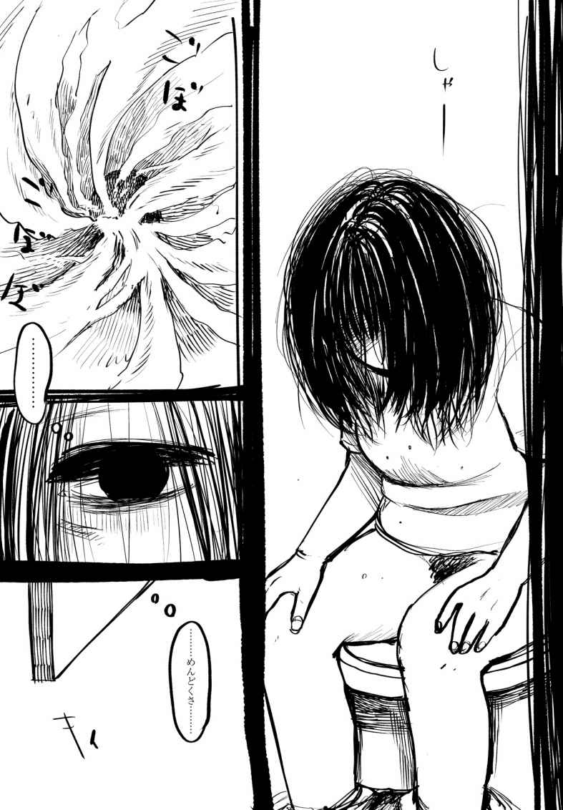
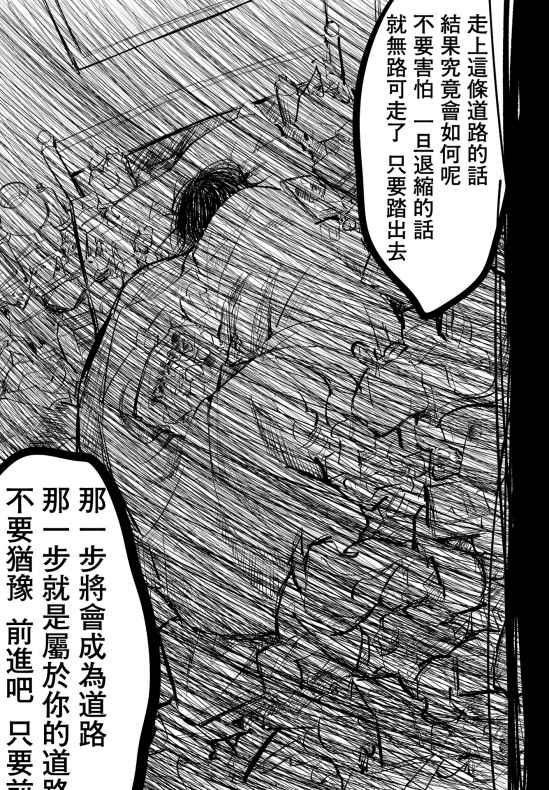
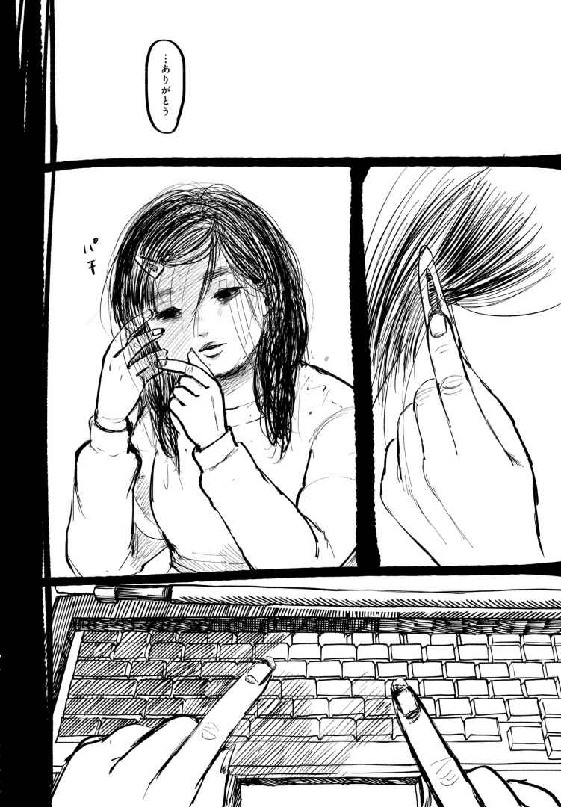
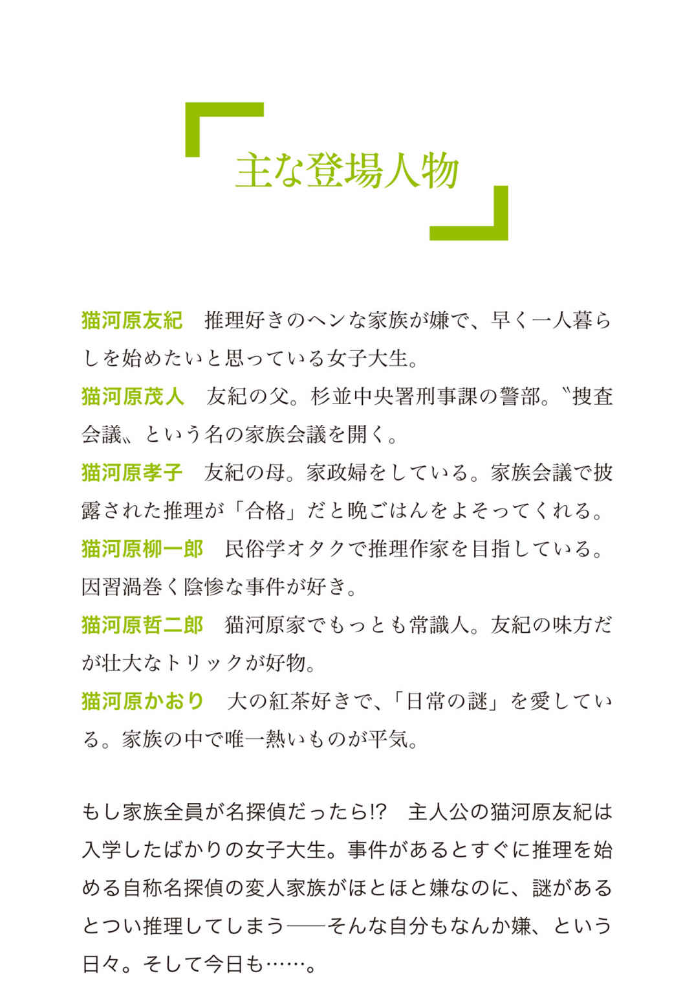
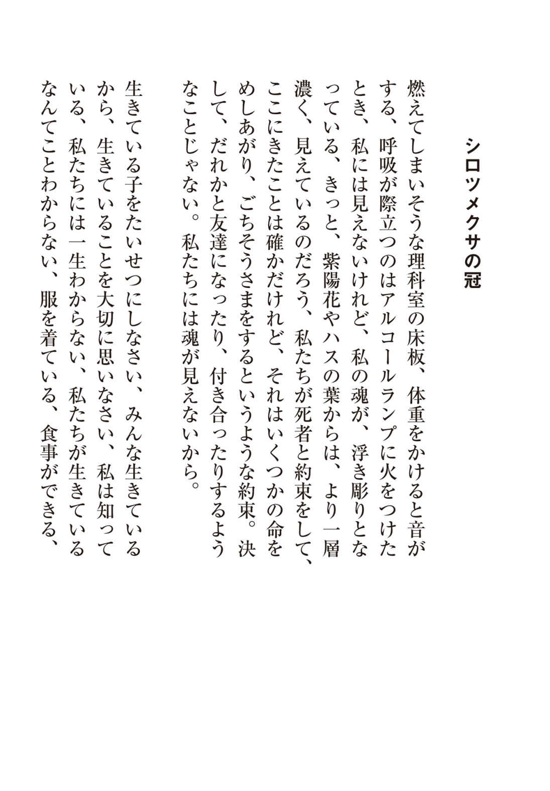
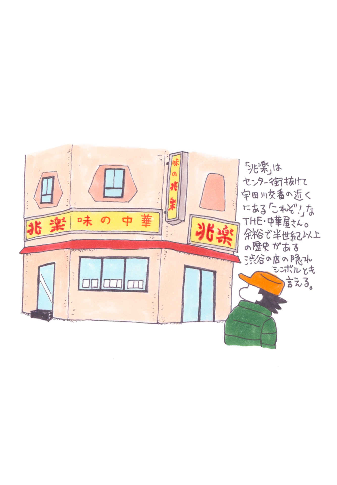

| yom yom vol.55（2019年4月号）[雑誌] | |
| 馳星周 & 吉川トリコ & 早坂吝 & ふみふみこ & 押見修造 & 朱野帰子 & 九螺ささら & 吉野万理子 & 青柳碧人 & 武田綾乃 & 寺地はるな & 小林勇貴 & 武内涼 & 最果タヒ & 門井慶喜 & 乾緑郎 & 結城充考 & 松田雄馬 & 三谷匠衡 & 今祥枝 & 平原卓 & 荻上チキ & トミヤマユキコ & 清田隆之 & カレー沢薫 & 渋谷直角 & 柳瀬博一 & 恒川光太郎 & 新納翔 & 永拓実 & 新井久幸 | |
| 新潮社 (2019) | |
CONTENTS vol.55 ２０１９年４月号
NEW SERIES
馳 星周
CLOSE UP
ふみふみこ×押見修造 ［特別対談］
SERIES
九螺ささら
青柳碧人
武田綾乃
寺地はるな
小林勇貴
武内 涼
最果タヒ
門井慶喜
乾 緑郎
結城充考
COMIC
ふみふみこ
SPECIAL ARTICLE
WORLD TRENDS
CULTURE & COLUMN
荻上チキ
トミヤマユキコ
カレー沢 薫

渋谷直角
柳瀬博一
恒川光太郎
新納 翔
＊「そして、僕たちは舞台に立っている。」は本号休載です
表紙 イラスト／ 押見修造
表紙＋本文扉 デザイン／ 川谷康久 （ 川谷 デザイン）
【ご注意】
この本は縦書きでレイアウトされています。また、ご覧になる機種により、表示の差が認められることがあります。
この作品の全部あるいは一部を無断で複製・転載・配信・送信すること、内容を無断で改変・改竄することを禁止します。また、有償・無償にかかわらず第三者に譲渡することはできません。

「親とは何か」が分からないから描いている（押見）
──お二人は奇遇にも、いま同時に「毒親」について描かれていますね。
押見 もう他人事とは思えないですよね。きっと僕もふみさんも、自分にとって「親とは何か」というのが分からないから、それを探るために描いているんじゃないかと思います。
ふみ そうですね。いつか描かなければいけないと思ってました。
押見 『愛と呪い』はすごく面白く、というか興味深く読みました。だけど自分もいろいろフラッシュバックして、具合が悪くなったりします（笑）。
ふみ ごめんなさい（笑）。
押見 いや、そういう作品が好きなんです。僕は吃音持ちなんですけれど、『血の轍』を描きはじめた時も日常生活に支障をきたすレベルまでひどくなってしまって。でも、それは辛いというより、どこか高揚している感じもあるんですよね。ふみさんの『愛と呪い』は『血の轍』と主人公の性別も設定もいろいろ違うけれど、すごく似ているところもあって、真に迫ってくるんだと思います。
ふみ 私が『血の轍』を読んで最初に思ったのが、押見さんは別に「毒親」を描きたかったわけじゃないのかなと。
押見 それはおっしゃる通りです。自分からは積極的に「毒親ですよ」とは言わないようにしていますね。母親の描き方も、分かりやすいモンスターペアレントみたいにはしたくなかった。
ふみ 私も「毒親モノ」みたいに言われるんですけど、ちょっと違和感があって。
押見 分かります。ふみさんの描く「呪い」の感覚って、僕にもすごくあるんです。だけど一方で、憎しみきれない感じというか、そんな風に思ってしまう自分への罪悪感もある。親を完全な悪者にできない苦しみというか。
ふみ 何が正しいことで何が悪いことなのか、子どものときは分からないじゃないですか。『愛と呪い』の愛子もある日、親の振るまいは決定的に良くないことなんだって分かるんだけど、それでもどこかで「愛情だよね」って思い込みたい部分はあるというか。
押見 そうですね。むしろ親の「愛情」を受け止められない自分が、度量の狭い人間なんじゃないかと思ってしまう。
ふみ その〝生殺し〟の状態ってキツいですよね。他の漫画家さんの作品で、父親に強姦されて家族を捨てるという話があったんですけど、「あ、捨てられるんだ」ってびっくりしたんです。押見さんの言う通り、子どもの一番のしんどさは、親を憎しみきれない、捨てることもできない、みたいなことじゃないかと思うので。
押見 『愛と呪い』は、そういう虐待される子どもの葛藤というか、親を殺したくなったり、愛情を欲しがったり、内面で戦っている感じが非常に生々しくて、はらわた削って描かれているんだなと思いました。
ふみ たぶん一生、正解が分からないと思うんですよ。揺らぎ続けるんじゃないかと思います。
押見 僕もまだ結論が出ていないので、ここからどうなるのか、最終的にどういう関係性に落ち着けるのか、よく分からないんですけど......って、あの、これもう主人公っていうより、僕らが主語で話してますけど、大丈夫ですか（笑）。
ふみ なんか被害者の会みたいに（笑）。
押見 ふみさんは今回「半自伝」ということで、完全なる自伝というわけではないですよね。
ふみ そうですそうです。押見さんも？
押見 はい。僕も自分の親の要素はいろいろ入っているんですけど。でも本質的な部分を探りたいと思って描いているので、そのためには本当じゃないことが混ざっていてもいいや、という感じですね。
ふみ 本質的な部分というのは？
押見 親との関係性の正体を掴みたい、という感じです。ふみさんが指摘してくださったように、自分の親のことを「毒親」だと思っていたかというと、そうとも言い切れなくて。はっきりよく分からなかったんですよね、自分の親が何なのかっていうのが。
ふみ なるほど、分かります。私はなんか、『愛と呪い』の父親の顔が描けないんですよね。もうどんな顔の人なのか分からないというか。
押見 そこは僕も気になってました。父親の顔にフィルターかかってるみたいな感じというか。
ふみ もちろんキャラクターとしての顔は決めてあるんだけど、その時どういう表情をしてたかが、分からないから。わざとじゃなくて、なんか生理的に描けないぐらいの感じで。でも愛子の視点なので、それでいいのかなと思っています。押見さんの描く母親は、艶 かしくて美しくさえあるのが印象的ですね。
押見 僕はむしろ、母親の顔にピントを極力合わせていこうとするので。主人公の静一は......いやもう、主語は自分でいいんですけど（笑）、僕は潜在的にマザコンで、「母親を女として見てるんじゃないか？」というのをずっと伏せてきたので。敢えてその罪の意識を見極めるために生々しく描いてるって感じですかね。
ふみ なんか修行僧みたいですね（笑）。
押見 はい、修行の一環として（笑）。静一の内面の変化に合わせて、これから母親の造形も変わっていく気がしますね。主人公の主観世界を疑似体験してもらいたいと思って描いているので。そういえば二巻のラストで、愛子のお母さんの顔がそれまでとちょっと違うなと思ったんです。なんか、可愛くなっているというか、端的に言うと。
ふみ ああ、そうですね。このあたりから、母親が人間味を帯びてくるんですよね。これまで父親の話だったのが、あのラストで転換して、母と娘の話になったんだと思います。
押見 なるほど。
ふみ それは今回、描きながら気づいたことですね。結局、父親のことじゃなくて、母親との問題だったんだと。
押見 最初は父親が憎いというところから描き始めたんですか？
ふみ そうですね。ただ描いてみると、父親はもう何でそんなことするのか分からないサイコパスみたいな人になっていって。でも母親は、同性だし、自分がだんだん母親の年齢に近づいていくと、「なぜ」という気持ちが強くなるんですよね。
押見 それは大きな気づきですね。僕は描き始める前は母親が憎かったんですよ。だけど、だんだん、自分が母親のことが大好きなんだなって分かってきてしまったんですよね。
ふみ それも分かります。結局、好きだから苦しいんですよね。
「性をなくしたい」みたいなことばっかり（ふみ）
ふみ 私は愛子のお父さんの顔だけじゃなくて、そもそも男の人を描くのが苦手なんです。
押見 そうですか？ 愛子が想いを寄せる塩谷くんとか、ちゃんと描いてるじゃないですか。
ふみ だから、塩谷みたいな女の子っぽい男の子しか興味がなくて。セフレの田中とか告白してくる遠藤とか、別に顔とか興味ないからサングラスとかメガネかけたりしてごまかしてるんですけど。
押見 本当だ（笑）。ふみさんの性への光の当て方は独特で、すごく面白いですよね。
ふみ 自分がちょっと変だなと思うのは「性をなくしたい」みたいなことばっかり描いてしまうんです。男性性みたいなものがすごく怖いし、本当に苦手なんですよね。だから好きに描いていいと言われたら、『ぼくらのへんたい』みたいに女装男子とか描いちゃうんですよ。
押見 確かに性別とか性差みたいなものをなくしたい、という欲望をすごく感じるんですけど、同時にそこがふみさんにとって出口なのかな、という感じもしますね。
ふみ 出口？
押見 あの、つまり性が消えるということが苦しみからの出口というか。何か魂が救われる手段、希望のようなものとして描いているのかなって。
ふみ ああ、そうかもしれないですね。私は可愛い女の子だけがいるアニメとか、『らんま１│２』みたいな性差のない漫画の世界観に救われてきたんですよね。だから「アニメとか漫画ってそういう夢の世界だよね」っていう気持ちがあって、性のない状態に憧れて描いている。でも出来上がってみると、男もいるしセックスもするし、自分から出てくるものとのギャップに苦しんでいますね。あれ、おかしいな、みたいな（笑）。
押見 僕は逆に、作品の中で過剰に性的なものに助けを求めがちなんです。
ふみ 私、押見さんの作品のように、自分を助けようとしてくれる異性も描けないんですよ。男になんて救われないというのが根底にあるのかもしれない。普通の女でいるということをやめて、ようやくひとりの人間になれた、みたいな話を描こうとは思っているんですけど。
押見 いまそれ聞いて思ったんですけど、もしかしたら、僕はまだ男をやめられないのかもしれない（笑）。自分の中の男が、助けに来てくれる妄想の女の子を描かせているのかも。
ふみ それ面白い（笑）。
押見 だけど結果的に、助けに来てくれる女の子はいるんだけど、自分がその人に応えられないという話ばっかり描いてますね。自分は助けてもらえる資格がない、というコンプレックスなんだと思います。ふみさんの作品に出てくる男は、確かに助けてはくれないけれど、田中が「お前は自分を特別な人間やと思いたいねん」って言うじゃないですか。あれは物語上すごく重要なセリフですよね。
ふみ そうなんです。田中の言ったことって冷たいんだけど、あの時の愛子に必要だったから無理やり言わせたんです。自分が被虐待児だということを拠り所にして、それを個性にしてしまうことが一番よくないと思っていたので。誰かに「そんなの特別じゃない」と言わせないといけなかった。一方で、結局自分の痛みは他人には分からないんだよ、というアンビバレントなセリフでもありますよね。「アフリカにはご飯を食べられない人がいるんだから残しちゃダメだよ」という説教とかと一緒で。
押見 そこは恋人のような男に言われることで愛子の孤独が際立つというか、自問自答でたどり着くのとまた違いますよね。
ふみ 実は最初、田中を女の子の設定で考えてたんです。同世代のギャルで、売春しまくってて、愛子に斡旋するくらいの。だけど女同士ってきれいなんですよ、どう描いても。
押見 ああ、そうですね。
ふみ そこに幻想が生まれちゃうから、愛子に必要なことを言わせるのは、きれいな、かわいい存在じゃダメだなと思ってギリギリで変えました。男に幻想はありませんから。
押見 男の子に救われない感じとか、女の子を拒む感じとか、僕とふみさんの作品の根底には、性的な自分に対しての自己否定感がありますよね。
ふみ 強烈にあると思います（笑）。
押見 自分が抱えている母親との問題が解決したりとかすれば変わるのかな、とか思ったこともあるんですけど。仮に親が死んだとしても、そのまま続いていくのかなと最近は思います。
狂っていると思われている人にも、その人なりの必然性や苦しみがある（押見）
──『愛と呪い』二巻の衝撃的なラストは、ある意味でふみさんがこれまで描いてこられた「中二病的自我」の死とも思えるシーンでしたね。
ふみ うんうん、そうですね。自殺しようとする直前の「私は何にも悪くないのに」っていうのは、象徴的な中二病のセリフですよね（笑）。
押見 中二病って、肥大した自意識ですよね。社会から自分が隔絶されているという意識があって、それが反転して、自分以外は全部殺そうとするのが中二病だと思っていて。でも、そういう感情自体は正常な状態だと思うんです。『愛と呪い』を読んでいても、「自分もこんな感じだったな」という瞬間がたくさんあるんですよね。クラスメートを殺す妄想とか、親の枕元でゴルフクラブを振り上げたい欲求とか。もちろん実際に振り上げてはいませんけど（笑）。だから前回ふみさんが浅野いにおさんとの対談の中で、「自分の中の酒鬼薔薇的なものを〝殺す〟までを描きたい」と仰っていたのが、すごくよく分かるなと思ったんです。
ふみ 愛子は家族を殺して中二病的自我を成就させようとしたんだけど、無理だったんです。普通にもなれなかったし、特別にもなれなかった。それが二巻のラストです。
押見 愛子はこの先、どうなっていくんでしょうね。
ふみ いやもう、救うために一生懸命描いてるんですけど......気づけば「救いなんてないんだ」という話ですよね（笑）。この「愛と呪い」は一生続いていくぞ、と受け入れるしかない。逆説的ですが、もしも救いがあるとしたら、諦めと慣れしかないのかなと。
押見 よく分かります。僕も普通を諦め、特別も諦めて今があります（笑）。そこに縛られなければ、多少は楽になりますからね。
ふみ 肥大した自意識を小さくして生きていくことが、「酒鬼薔薇的なものを〝殺す〟」ことに繋がるのでは、と現時点では思っています。
押見 僕、わりとそれが成長だと思ってたんですけどね、諦めたり慣れたりすることが。
ふみ 成長って言っていいんですかね。諦めることで、人間に対して鈍感にならざるをえない感じもあるんですよね。
押見 でも、今までが敏感すぎたから、ちょうどよくなってるという説もありますよね（笑）。
ふみ たしかに（笑）。それに昔は「未来はかならず良くなるもの」って信じてたから、しんどかったんだと思うんですよね。
押見 ふみさんが？
ふみ そうそう。愛子と同じで、「みんなが特別で、将来何にでもなれるよ」っていう個性教育を受けてきたので、「いや特別じゃないし、無理じゃん」っていう絶望が生まれるんだと思うんです。
押見 僕自身は、大学では溶け込めないし、友達できないし、留年するし、お先真っ暗だと思ってましたね。だから未来に期待するとかなかったですね。それは今もあんまり変わらないです。
ふみ そう、未来なんてないじゃんっていうところに立って、諦めがついて、初めてはじまる道があるんじゃないかと思って描いてますね。押見さんは、登場人物を救うことを考えますか？
押見 最終的に何らかの救いというか、生き延びる道は示されて終わるべきだと思っているので、どの作品もその道を探ることがいちばんのテーマになっている気がします。
ふみ 『惡の華』の春日は最後、物語を書きますよね。
押見 そうですね、あれは希望のつもりです。春日という男の子が、仲村さんという女の子の内面を想像して書いたという側面もあって。ちゃんと想像したんだよっていう意味での救いというか。
ふみ 相手の立場を想像できるようになった。
押見 そうですね。人のことを考えられるようになった（笑）。
ふみ 仲村さん、狂ってないですもんね。
押見 狂ってないですね。
ふみ そこが面白いなと思うんですよ。『ハピネス』の吸血鬼になりたい男も狂ってないし、本当は『血の轍』のお母さんも狂ってないじゃないですか。
押見 そうですね。いや、そこを看破していただいて嬉しいです。僕は狂っていると思われている人にも、その人なりの必然性や苦しみがあると思うんですよ。それは他人には分からないことだと思うので、そういう意味で狂っている人は一人もいないんじゃないかと思って描いてるんですけど。
ふみ 人間をよく見ていらっしゃるのかもしれませんね。
押見 でも『血の轍』はどうなるかまだ本当に分からないですね。救いが見つかるかも分からないし、描き終わったら引退するかもしれないとさえ思ってます（笑）。
ふみ そうなんですか？
押見 毎回そういう気持ちではいるんですけど。もうこれ以上描きたいものはないと。『惡の華』の時も全部吐き出して、その時はどこか「治った」感じがするんです。でもしばらく経つと、「なんか違うな」「まだあるな」と思って、また描き出す。『血の轍』は終わってないですけど、最後までいったら虚脱しそうだなという気がします。その描きたいものがなくなっちゃった状態で、また食い扶持を見つけないといけないのかと、すでに怯えてますね。
ふみ また「未来はない」って話になってしまった（笑）。
押見 （笑）。そうやってまた、続いていくのかもしれないですね。
2019/01/31 新潮社にて




第一部
１
「民 夫 、民夫」
自分の日本名を呼ぶ声に、楊 偉 民 は振り返った。薄 暮 の中、こちらに向かって駆けてくる影がある。
「民夫、大変だ」
郭 克 泰 が顔をゆがめながら叫んでいた。
「どうした？」
楊偉民は拳を握った。克泰の表情は、また誰かが誰かに殴られていると告げていた。
「國 彦 が松 若 組のやつらにとっ捕まった」
國彦というのは呉 國 邦 の日本名だ。
「場所は？」
「西口マーケット」
楊偉民は克泰の言葉が終わる前に走り出した。松若組の若い衆が台湾人や朝鮮人を連れて行く場所の見当はつく。
「民夫、これ」
克泰が手にしていた棒きれを放ってきた。偉民は宙で受け取り、先端をきつく握りしめた。
西口マーケットはいつもと変わらぬ賑わいを見せている。食料から衣服、石けんから金銀宝石まで、この世にあるもので売っていないものはない。今日を生き延びるために訪れる者もあれば、持っている金をさらに増やすために訪れる者もいる。
昭和二十一年──闇市にしか物資はないといっても過言ではない。貧しい者も富める者もみんなここにやってくる。
血のにおいを嗅いだ気がして、偉民は足を緩めた。
バラック小屋が建ち並ぶ闇市の奥の奥──堅気なら足を踏み入れることを躊躇 うような剣呑な空気を孕んだ一角からうめき声が聞こえてきた。
「チャンコロが日本人を舐めてるんじゃねえぞ」
うめきに続いてがさつな声が飛んできた。声に聞き覚えがある。松若組の若い衆の中でも血の気の多いやつの声だった。
人を殴る音が響いた。偉民は暗がりに飛び込んだ。
「國彦」
数人の男たちが一斉に振り返った。名前は知らないが、どの顔も知っていた。
「民夫」
ぼろきれのように地面に倒れていた國邦が顔を上げた。血まみれで、あちこちが膨れ上がっている。
「貴様ら！」
偉民は棒きれを振り上げ、男たちの正面に立った。
「なんだ、てめえは？」
男たちが眦 を吊り上げた。
「クソ日本人め」
偉民は怒鳴った。途端に、男たちが襲いかかってくる。
殴りかかってくる連中の腕を棒きれで叩き、足を払う。
あっという間に三人の男が地面に倒れた。打撃を与えた箇所を抑え、転げ回る。
残りは三人だった。
「チャンコロが、調子に乗りやがって」
一番血の気の多いやつが歯を剥 いた。偉民はそいつの脳天に棒きれを叩きつけた。男が膝をついた。頭から血が噴き出している。
他の二人が怯 んだ。
偉民は二人に向かって足を踏み出した。次の瞬間、背後から大きな声が響いた。
「やめろ。もう充分だ」
ドスの利いた声が棒きれを振り下ろそうとしていた偉民の腕を止めた。
振り返ると、濃紺に白いストライプの入った背広を粋に着こなした男が偉民を見つめていた。口に楊 枝 をくわえている。髪の毛は兵隊風に短いが、切れ長の目が刃物を思わせた。背は低いものの、実際より大きく見えた。
「あ、兄貴」
怯んでいた二人の目に光が戻った。
「兄貴じゃねえ、馬鹿野郎」
背広の男は偉民の脇を通り過ぎ、二人のチンピラの頬を張った。
「す、すんません」
「大の男が六人がかりでひとりを袋だたきだ？ 松若組 の看板を汚 すような真似はするなと言ってるだろうが」
背広の男が振り返った。偉民は棒きれを握り直した。
「そっちのお仲間はかなり手ひどくやられてるが、こっちも四人が怪我だ。あいこってことで手を打たねえか」
男の声に、偉民は思わずうなずいた。
「ここいらの台湾人に剣道の達人がいるって話は聞いていたが、おまえさんのことだな」
偉民はまたうなずいた。剣道には台湾にいた頃から親しんでいる。段位こそ取ってはいないが、二段程度の実力はあった。
「名前は？」
「高 田 民夫」
「そうじゃねえよ」
男が首を振った。
「楊偉民」
偉民は本名で名乗り直した。台湾の言葉では相手の耳になじまないだろうと思ったのだ。
「ヤンさんか。おれのことは知ってるな？」
「松若組の野 上 修 」
「どうだ、おい。おれの名前は台湾人にも知れ渡ってるみたいだぜ」
男──野上は嬉しそうに笑った。
「ヤン、気に入ったぜ。困ったことがあったら、おれの名前を出しな。それでも片がつかないときは、おれがこの拳で相手を可愛がってやる」
野上は右の拳を突き出した。
「どうも」
偉民は軽く頭を下げた。次の瞬間、場違いな声が響いた。
「民夫、おれも助太刀するぞ」
克泰だった。青ざめた顔で息を切らせている。克泰は肺が悪い。走るのが遅いのもそのせいだった。
「威勢のいいのがもう一匹現れたな」
野上が呆れ顔で言った。
「克泰、もう終わった。國彦を連れて行くぞ」
偉民は手にしていた棒きれを投げ捨てた。
「終わった？」
克泰はきょとんとした顔で松若組の男たちの顔を眺め回し、合 点 がいくと、慌 てて偉民に手を貸した。二人で國邦の両腕を肩に回し、立ち上がらせる。
「大丈夫か？」
偉民が訊くと、國邦がうなずいた。
「失礼します」
偉民は再び野上に頭を下げた。
「おう。迷惑かけたな」
野上はそばにいた手下を小突きながら微笑んだ。
＊ ＊ ＊
「顔なじみの米兵から煙草 を仕入れたんだ」
國邦が顔をゆがめながら言った。殴られた顔は普段の倍ぐらいに膨らんでいる。克泰が傷口にアルコールを塗り込むたびに大げさに呻いた。元々が育ちの良さをうかがわせる端正な顔立ちだけに、加えられた暴力の激しさが際立つ。
「煙草かよ。一儲 けできるじゃないか」
克泰が羨ましそうに呟いた。いかにも南方の中国人という潰れて横に広がった鼻の穴から煙草の煙が流れている。
「その煙草を闇市で売ってたら、松若組のやつらが因縁つけに来たんだよ。敗戦国民が戦勝国民のやることに文句をつけるなって言ってやったら、突然、そいつらの仲間が現れて......」
「最初からそのつもりだったんだな」
偉民は國邦からもらった煙草をくゆらせながら言った。
「あいつら......次に会ったらただじゃすませないぞ」
「また殴られるだけだって。やめておけよ」
克泰が言った。偉民もそうだったが、ふたりとも、日本語で喋っている。戦争が終わった今では、台湾語で話しても問題はないのだが、癖が抜けないのだ。
以前は台湾語で会話をしていると、特高警察がやって来てねちねちと質問攻めにされた。時には暴力もふるわれた。
先日、新橋の闇市で、台湾人になにかと難癖をつけてきた特高の刑事とばったり出くわした。その刑事は偉民に気づくとその場に土下座して命乞いをはじめた。
戦争が終わり、すべてが変わったのだ。威張り腐っていた日本人たちは敗戦国民に転落し、二等国民扱いされていた台湾人は解放された。実際には戦勝国民と認められたわけではないが、自分たちは戦勝国民だと言い放ち、そのように振る舞う台湾人も多かった。日本人なら罰せられる闇物資の売買も、戦勝国民なら思いのままだ。日本の警察は台湾人や朝鮮人には手出しができない。
「その米兵に、次はウイスキーとチョコレートを仕入れてくれと頼んでおいた。これで、田舎から野菜や米をかついでくる仕事ともおさらばできるぞ」
國邦のどす黒く腫 れた顔が歪んだ。笑ったつもりなのだろう。
「民夫、米兵から仕入れる物資、ここで預かってもらってもいいか」
偉民は國邦の言葉にうなずいた。偉民は角 筈 の金物屋の二階に間借りしていた。戦時中、金物屋は開店休業状態だったから、家賃さえ入るのなら、店 子 は台湾人だろうが朝鮮人だろうがかまわないというのが大家の方針だったのだ。偉民の部屋は元々は倉庫代わりに使われていて、間取りは無駄に広い。物資を置く場所はいくらでもあった。
「その米兵とはどうやって知り合ったんだよ？」
克泰が訊いた。
「前に仕入れた香水があっただろう。あれを通りすがりのパンパンがどうしても欲しいって言うんだ。そのくせ、金は持ってねえ。ふざけるなって言ったら、金を払う代わりに金づるになる米兵を紹介するって言われたんだよ」
「なんでおまえが店番の時に限って、そういうことが起こるんだよ」
克泰が唇を尖らせた。
二人は新宿西口の闇市に店を出している。店といっても、ゴザを敷いた上にひっくり返した木箱を並べて、そこにそのときそのとき仕入れた品物を並べて売るだけだ。
それでも、飛ぶように売れた。戦時中に軍がかき集めた日本中の物資はどこかに忽 然 と消えてしまった。日本は物不足に喘 いでいる。
「おまえも勉強なんてやめて、おれたちと一緒にやろうぜ、民夫」
國邦が手を伸ばしてきた。偉民はその手に煙草を渡した。國邦は煙草をくわえ、マッチで火を点けた。
「そうだよ。どうせ、学校なんていつ再開されるかわからないんだし」
克泰が相づちを打つ。
ふたりとは東京の薬学専門学校で知り合った。偉民は台 北 の、國邦は台 南 の、克泰は高 雄 の薬屋の息子だ。
日本で薬剤師の資格を取るために留学してきた。
息子の留学費を工面するために両親がどれだけの苦労をしてきたか、よくわかっている。息子が帰ってきて店を継いでくれる日を首を長くして待っていることも承知している。
戦争が終わり、時代が変わったからといって、勉強を放り出す気にはなれなかった。
毎月送られてくる仕送りと、剣道の腕を見込まれて声がかかる台湾人商人の警護役でもらえる小遣いで暮らしはなんとか成り立っていた。
「民夫がいつも一緒にいたら、松若組のやつらもおれたちにはおいそれと手を出せなくなるしな。なあ、民夫、本気で考えてくれないか」
國邦の腫れた顔が痛々しい。同胞がこんな目に遭わずに済むというのなら、力を貸してやるのも悪くはない。克泰の言ったように、学校が再開される目処は立っていないのだ。
「おれはなにをすればいいんだ？」
偉民が言うと、國邦と克泰が飛び上がって喜んだ。
２
「最近、新宿西口の闇市によく出入りしているそうじゃないか」
偉民が挨拶を済ませた途端、呉 道 明 が目をぎょろつかせた。戦前から不動産を中心に手広く商売を営んできた男だ。戦時中はじっと息を潜めていたが、戦争が終わると同時に精力的な活動を再開させた。治外法権的な立場を得た今こそが、金の稼ぎ時だというのが呉道明の口癖だった。偉民は台湾人社会のコネで呉道明と知り合った。呉道明は偉民の剣道の腕前と正直さを気に入ってくれたのだ。
「友人の手伝いをしているだけです」
偉民は応じた。
「君なら、いくらでも仕事を与えるぞ。闇商売なんぞで手を汚すことはない」
「昔からの友人たちなんです」
偉民は辛 抱 強く繰り返した。闇市で行われる違法行為は可愛いものだが、呉道明の仕事はもっと危険なものに思われる。
「今日は紹介したい人間がいるんだ」
呉道明が諦めたというように話題を変えた。
「どういう人でしょう」
「中国人だ。軍人でな。戦勝国側として先月、来日した。陳 文 龍 という大佐だ。国民党軍だから、本来は上校という肩書きなんだが、日本では大佐の方が通りがいいからと大佐と称している。陳大佐は腕が立って信頼の置ける警護係を探している」
「軍人なのにですか？」
偉民は驚いて訊いた。
「わたしの勘だが、大佐は近々軍を辞めるつもりだろう。日本に来たのは戦後処理のためではなく、金儲けのためだ。しかし、どうやって金を稼ぐつもりなのかがわからん。探りを入れてもはぐらかされるだけでな」
呉道明は言葉を切って偉民を見つめた。
「つまり、ぼくの仕事は警護だけではないということですか」
偉民は溜息を押し殺した。こんなことをするために内地に来たわけではない。ただ、剣道の腕が立つというだけなのだが、物騒な時勢が偉民の背中を望んでもいない方向に押していく。
「おまえは腕っ節が強いだけじゃなく、頭の回転も速い。薬屋なんぞになるのはやめて、わたしの元で働け。いくらでも稼げるぞ」
「ぼくは学生です。学生の本分は勉学です」
偉民が遠回しに断ると、呉道明は破顔した。
「その頑固なところもいい。では、行くか」
呉道明に促され、偉民は先に家を出て辺りの様子をうかがった。不審な人物がいないことを確認すると、家の中に声をかけた。
呉道明と肩を並べて歩く。
呉道明は自動車を数台買えるぐらいの金を持っている。だが、どこに出かけるにしても徒歩か電車だ。家もこぢんまりとしている。台湾人が豪勢な暮らしをしていると知ると、妬 む日本人が多いからだ。
都電を乗り継いで新橋でおりると、呉道明はとあるビルに入っていった。
「軍人のくせに、こんなところに自分ひとりの事務所を構えているんだ」
呉道明が階段をのぼりながら言った。
「出身はどこなんでしょう」
「上 海 だそうだ。機を見るに敏な男だよ」
偉民はうなずいた。
「あの部屋だ」
三階の奥にあるドアを呉道明が指さした。〈中華互助協会〉と手書きで書かれた紙が貼られている。
偉民はそのドアをノックした。
「入りなさい」
中国語が返ってきた。訛りが強いのは上海出身のせいだろう。楊家は十九世紀末に大陸から台湾へ移住した一族で、年寄り連中はみな北京語を話す。偉民も北京語には慣れ親しんでいた。
ドアを開けると、部屋の中は煙草の煙が渦巻いていた。カーキ色の軍服を着た小柄な男が不釣り合いに大きな机を前に座り、書類に目を通している。口には煙草をくわえていた。眉毛は太く、目も鼻も口も大きい。大雑把な顔立ちだが、目にたたえられたある種の熱気が人の視線を引きつける。
男は偉民を一 瞥 しただけでまた書類に目を戻した。だが、続いて呉道明が部屋に入ってくると、煙草を灰皿に押しつけて立ち上がった。
「これは呉先生、わざわざお越しいただきありがとうございます」
「約束の時間に少し遅れました。申し訳ありません、陳先生」
呉道明も北京語で応じた。
「どうぞどうぞ、おかけください」
陳文龍は部屋の隅にある応接セットに呉道明を誘った。偉民は戸口に立ったまま、ふたりの様子を見守った。
「この前話していた若者を連れてきましたよ。楊偉民、真面目な薬学生ですが、腕っ節は強い。先日、新宿西口の闇市で、ヤクザ者たちに痛めつけられていた同胞をたったひとりで救い出しました」
陳文龍が偉民を見た。刃物を思わせる目つきだった。
「陳文龍大佐だ」
陳文龍が右手を突き出してきた。
「楊偉民です」
偉民はその手を握った。陳文龍の手は熱でもあるかのように火 照 っていた。
＊ ＊ ＊
呉道明は三十分ほど陳文龍と話した後で帰っていった。取り残された偉民は居心地の悪さをごまかすために煙草を取り出した。
陳文龍も煙草をくわえた。
「呉先生からはどんなことを聞かされている」
「陳大佐の警護につけ、と」
陳文龍は笑いながら煙を吐き出した。
「おれは軍人だぞ。拳銃も携帯している。警護役なんかいるか」
「では、どうしてぼくを？」
「日本語はできるな？」
偉民はうなずいた。
「通訳が欲しかったんだ。金に無 頓 着 なやつがいいと言ったら、呉先生がおまえの名前を出した」
「通訳ですか」
「それだけじゃない。おれの日本語の教師にもなってもらいたい」
「それはかまいませんが」
偉民は短くなった煙草を陳文龍の机の上の灰皿で消した。灰皿は吸い殻が山のように盛り上がっていた。
「呉先生から、おれがどうやって金を稼ぐつもりか調べてこいとでも言われたか」
偉民は煙草を消したことを後悔した。煙で動揺をごまかすことができたはずだ。
陳文龍が笑った。
「どうやら図星だな。まあいい。そうでなきゃ、呉先生も商売人とは言えん」
「すみません」
偉民は頭を下げた。陳文龍が机の引き出しを開け、紙の束を取り出した。
「これがなにかわかるか？」
「軍票ですね」
偉民は答えた。戦時中、日本軍が占領地で発行した臨時紙幣だ。大陸から命からがら帰還した人間たちが、後生大事に抱えているのを見たことがある。だが、政権も軍も崩壊した今の日本では軍票は無価値だ。
「日本人にとってはこの軍票はただの紙くずだ。だが、戦勝国民であるおれは、これを正規の金に換えてもらうことができる」
陳文龍は短くなった煙草を消し、新しい煙草に火を点けた。
「逃げて空き家になった日本人たちの住処を調べていたら、障子の紙代わりにこれを貼っている家がたくさんあった。日本人も、戦争に負けたら軍票なんかただの紙くずだとわかっていたんだろう。おれは日本の軍票をできるだけかき集めた。終戦になったら、この軍票を持って必ず日本に行ってやると誓ってな。その誓い通りになって、おれは軍票を金に換えた。いくらになったか聞いたら、脳天から血が噴き出るぞ」
偉民も新しい煙草に火を点けた。國邦が米兵から仕入れた煙草は味もいいし煙も滑らかだった。
「これは天が与えてくれた絶好の機会だ。軍票を元手にした金で、一世一代の大勝負を打ってやる」
「なんの商売をするつもりですか」
偉民は訊いた。
「土地だ。今の東京の土地はどこもかしこもただ同然だ。疎開したまま、金も物資もなくて帰ってこれない連中も大勢いる。そんなやつらのところへ行って、札束を見せつけてみろ。すぐに土地を売ってくれるはずだ。いずれこの国も復興の道を辿るだろう。そのときは、二束三文で買い叩いた土地が何十倍、何百倍の価値を持つようになる」
「疎開先に同行せよと言うんですか」
「中国語が喋れる日本人がどこにいる」
「ぼくは商売には向きませんよ」
「おまえは通訳だけをしていればいい。交渉はおれがやる。どうだ。力を貸してくれんか」
偉民は煙草を吸った。灰が床に落ちたが、陳文龍は気にする素振りを見せなかった。
「ひとつ、お願いがあります」
「なんだ。言ってみろ」
「友人たちが新宿西口の闇市で店をやっているんです。物資の調達に陳大佐の力を貸してもらえませんか」
「お安いご用だ」
陳文龍は煙草を灰皿に押しつけた。その拍子に吸い殻の山が崩れたが、例によって、陳文龍は気にする素振りを見せなかった。
３
「よう、商売繁盛ってとこか」
克泰に代わって店番をしていると、影が偉民の視界を遮った。顔を上げると、松若組の血の気の多いやつが偉民を見下ろしていた。
ヒロポンでもやっているのか、顔に締まりがない。
「失せろ」
偉民は吐き捨てるように言った。野上のお墨付きがある。この連中に下 手 に出る必要はなかった。
「三国人は威勢がいいねえ」
男は立ち去る様子を見せなかった。偉民は用心のために足下に転がしておいた棒きれを引き寄せた。
「おっと、勘違いするなよ。なにもアヤつけにきたわけじゃねえんだ」
「商売の邪魔だ」
「その商売だがよ、ずいぶん景気が良さそうじゃないか。煙草やら酒やらチョコやら、米兵の横流しかと思ったら、どうも、扱ってる量が半端じゃねえ。いいコネを掴 んだんだろう？ おまえらの仕事に一枚噛ませてもらえねえかと思ってな」
「台湾人だけのルートだ。日本人が絡んできたら、すべてがおじゃんになる」
偉民は首を振りながら言った。
「そうつれねえこと言わないで、考えてくれよ。おまえらだって、松若組 が目をかけるようになりゃ、もっとでかい商売ができるようになるぜ」
「あんたがここにいると、客が怖がって近寄ってこない。本当に商売の邪魔なんだ。行ってくれ。いつまでもしつこくしてると、野上さんに話をすることになるぞ」
野上の名を出した瞬間、男は顔をしかめた。
「兄貴の名前を出されたんじゃ、引っ込むしかねえな。だけど、覚えておけよ、兄貴だって明日にはどうなってるかわからねえ。今はそんなご時世だ。兄貴になにかあったときのことを考えておいた方がいいぜ。おれはかっとすると見 境 がつかなくなる質でよ」
偉民は男を睨 んだ。
「おっかねえなあ。じゃあ、退散するか」
男は木箱に並べた煙草の上に唾を吐き、踵 を返した。偉民は棒きれを握ったが、男が立ち去るに任せた。
こんなことでいちいち腹を立てていてもしょうがない。
闇物資の取引で儲けているのは第三国人ばかりだ。そこらじゅうに妬みや鬱 憤 が渦巻いている。無用な摩 擦 を起こせば、どす黒い感情で膨らんだ風船が破裂するだけだ。
人混みをかき分けてこちらに近づいてくる男がいた。偉民は棒きれを足下に置いた。
陳文龍の下で働いている男だ。
「阿 偉 、陳大 人 がお呼びだ」
男は北京語で親しげに話しかけてきた。
「今は手が離せない」
「なにを言ってるんだ。相手は陳大人だぞ」
「ここを離れるわけにはいかないんだ。あと二時間で仲間が交代に来る」
「このことは陳大人に報告するぞ」
「どうぞ」
「生意気な野郎だ」
男は舌打ちして背中を向けて立ち去った。
近隣の店で品物を物色していた客たちが不安げな顔でこちらの様子をうかがっていた。
普段は日本語で喋る偉民たちは、客からは日本人だと思われることが多い。偉民たちが取り扱う商品を物欲しげに眺めながら手が出ず、それでも、若い者が頑張っていると微笑みを向けてくる客も、中国語や朝鮮語を耳にすると顔色が変わる。
「まったく、よってたかって人の商売の邪魔をしやがって」
偉民は台湾語でぼやいた。
＊ ＊ ＊
克泰と店番を代わった足で新橋へ出向いた。〈中華互助協会〉の室内は相変わらず煙草の煙が渦巻いている。
「遅くなりました」
偉民は煙草をくわえて書類に目を通す陳文龍に頭を下げた。先週から、陳文龍の机の上には黒電話が載っている。
軍を辞めた陳文龍は有り余る活力のすべてを商売に向けていた。
電話を導入し、自動車を買い、運転手を雇い、闇市に陳文龍の伝言を伝えに来たような男たちを顎 で使っている。
「かまわないよ」
陳文龍は訛りの強い日本語で応じた。偉民を教師にした日本語の勉強は着実にはかどっている。飲み込みの早い生徒だった。
「これから、長野へ向かう。一緒に来てくれ」
陳文龍は北京語に切り替えた。
「長野ですか？」
「新宿に土地を持っているやつがいるんだ。通訳はもちろんだが、金を持っていくから警護役も任せる」
「警護役なんていらないと言っていたじゃないですか」
「陳大佐なら警護はいらない。だが、陳大人には必要だ。金はその鞄 の中だ」
床に無造作に置かれた鞄の蓋 が開いていた。中には紙幣がぎっしりと詰まっている。
陳文龍の協力のおかげで、偉民たちの闇市の店ははやっていた。煙草はもちろん、酒やアメリカの菓子も飛ぶように売れて、偉民たちの懐は大いに潤っている。だが、陳文龍が稼ぐ金にははるかに及ばない。
「長野へは列車で？」
「東京駅までは自動車だ」
「ぼくの仲間に数日留守にすると伝えなければ」
「商談は一日でまとめる。それから、おまえの仲間にはもう伝えてある」
陳文龍の抜け目のなさには驚嘆を覚える。
「行くぞ」
陳文龍は背広の上着を羽織った。偉民は鞄を手に取り、蓋を閉めた。大金が詰まっていると思うと、実際より重く感じた。
＊ ＊ ＊
陳文龍は売買を三十分でまとめた。土地を売ることを渋る男の前に、現金の詰まった鞄を押し出すと、それで終わりだ。
偉民は「この金で新宿の土地を売ってください」と通訳しただけだった。
商談がまとまると、地元の人間に車を出させて近場の温泉宿に泊まった。
温泉に浸かり、飯を食い、日本酒を飲んだ。食卓に並んだ料理は決して豪勢とは言えないが手間がかかっていた。炊きたての白米に、芋がらと大根の葉っぱの味噌汁、野沢菜漬け、川魚の甘 露 煮 、芋のにっころがしと品数も豊富だ。東京の人間が見たら涎 を垂らしながら卒倒するだろう。
陳文龍は酔うといつにもまして饒 舌 になった。上海訛りの北京語をまくし立てるのだ。
「いいか、小 偉 。これからは新宿だ。銀座も上野も浅草も人の手が入り尽くしている。復興すれば、よそ者、しかもおれたちのような外国人の立ち入る隙はない。だが、新宿は別だ。戦争の傷跡が塞 がれば、日本人は娯楽を求めるようになるだろう。食い物をたらふく食いたくなり、酒も浴びるほど飲みたくなる。女や博 奕 も求めるだろう。おれは新宿中の土地を買い占めて、日本人どもを呼び寄せて大儲けするんだ」
かつては田んぼや畑しかなかった新宿が銀座のように変貌する姿を想像するのは難しかった。
確かに闇市には人が集まるが、闇市から少しでも離れれば、そこに広がるのは荒れ果てた田畑なのだ。
だが、偉民は余計な口出しはせず、コップで酒を飲みながら陳文龍の言葉に耳を傾けた。
陳文龍は下品で強引な男だ。だが、どこか憎めないところがある。
偉民は陳文龍が嫌いではなかった。同じ商売人なら、同郷の呉道明ではなく、陳文龍の下で働く方が気安い。
翌日は朝一番の列車で東京へ戻った。
時は金なり──陳文龍はこのことわざをいたく気に入っている。
別れ際、陳文龍は財布から無造作に紙幣を取り出し、偉民に押しつけた。
「通訳と警護代だ」
「こんなには受け取れません」
偉民は金を押し返そうとしたが、陳文龍は笑うだけだった。
「それじゃあ、また連絡する」
そう言うと、駅の前で待機していたシボレーに乗り込み、去って行った。
偉民は不本意に受け取った金をポケットに押し込んだ。剥き出しの金を手にしているのは襲ってくれと叫んでいるのと同じだ。
新橋の闇市をぶらつき、真珠のブローチを見つけて買い求めた。
ブローチは思っていたより安く、陳文龍がくれた金はまだだいぶ余った。だが、それ以上、金の使い道を思いつくことができず、都電で新宿へ戻った。
間借りしている金物屋のはす向かいの刃物屋を覗くと、三 嶋 裕 子 が店番をしていた。
「裕子さん」
声をかけると裕子の顔に花のような笑みが広がった。大人びた雰囲気を身にまとっているが、笑うと年相応の華やぎが現れる。日本の女性らしく小柄だが、社交的な性格で近所で裕子を悪く言う者はいなかった。
「あら、民夫さん。いらっしゃい」
裕子は戦争未亡人だった。写真を見ただけの男と結婚させられ、夫は結婚式の一週間後に出征し、南洋で戦死したという。
「最近、顔を見ないわ」
「闇市で仕事をしてるから、気安く声をかけちゃ、親 御 さんに叱られると思って」
國邦たちが田舎で買い出してきたものを闇市で売っていた頃は、野菜などの付け届けをしていたが、商品が米兵の横流し品に変わってからはそれもご無沙汰だった。
裕子の父は煙草も酒もたしなまない。
「あら、うちの両親だって鋏 や包丁を闇市で売ってるわ。野 暮 なことは言わないの」
不幸な数年を送ってきたはずなのに、裕子の笑みにはその片 鱗 もなかった。いつも穏やかで明るい微笑みを振りまいている。
「これ、闇市で売れ残った品なんだ。よかったら使って」
偉民は新橋の闇市で買い求めたブローチを裕子の目の前に差し出した。箱はもちろん、包み紙さえありはしない。剥き出しの商品が剥き出しのまま買われていく。それが今という時代だった。
「あら、綺麗な真珠」
裕子はブローチを手に取ってかざした。偉民は彼女がブローチをつけている姿を想像した。真珠は裕子にぴったりだった。
「こんな高価なもの、受け取れないわ」
「もし必要がないなら、だれかに売って生活の足しにするといい」
偉民は裕子に背を向けた。
「民夫さん、待って」
背中を追いかけてくる声を振り払って外に出る。
胸が高鳴っていた。だが、その昂 ぶりは抑えこまなければならない。裕子の父は大の外国人嫌いで通っていた。台湾人が娘にのぼせていると知ったら一悶着が起こるだろう。少なくとも、今の住まいにはいられなくなる。
偉民は唇を噛み、闇市への道を黙々と歩いた。
＊ ＊ ＊
「乾杯」
國邦が掲げたコップに、偉民と克泰は自分のコップを軽くぶつけた。コップの中の透明な液体は中国の白 酒 だった。
台湾人が営む道玄坂の中華料理店は混み合っていた。日本人が食うや食わずの生活をしている中、闇市で金を稼いでいる第三国人は外食で腹を膨らませる。
渋谷まで足を伸ばしたのは、客の大半が台湾人で気安く食べて飲める店があると國邦が誘ったからだった。
「しかし、たまげたな、おまえがもらった金。陳文龍ってのは何者だ」
克泰が野菜の炒め物を口に放り込みながら言った。
「不動産屋だ」
偉民は答えた。
「煙草や酒もどっさり回してくれるし、ただの不動産屋とは思えないけどな」
國邦が異を唱えた。
「国民党軍の元上校だから、米軍にも顔が利くんだ」
偉民は白酒をあおった。強いアルコールが喉を灼 く。頭の奥にちらつくブローチをした裕子の姿を消そうと、さらに酒を流しこんだ。
「呉國邦じゃないか」
奥の席で声があがった。國邦がそちらに顔を向け、笑みを浮かべた。
「林 さん、久しぶりじゃないか」
奥の席で男が腰を上げ、コップと酒の瓶を手にしてこちらへ向かってきた。
「元気でやってるのか、國邦」
林と呼ばれた男の日本語にはほとんど訛りがなかった。
「ああ。林さんも元気かい？」
「元気、元気。闇市のおかげで景気がよすぎて困っているぐらいだ」
男は朗らかに笑った。
「林さん、こいつらはおれの友達だ。楊偉民と郭克泰。民夫、克泰、こちらは林昌 明 さんだ。戦時中、世話になったんだ」
偉民と克泰は腰を上げた。
「初めまして。國邦が世話になりました」
「堅苦しい挨拶は嫌いなんだよ。座ってくれ。一緒に飲もう」
林昌明に促され、偉民たちは腰を下ろした。コップに残っていた酒を飲み干すと、林昌明が空になったコップに酒を注いだ。
「兄弟との再会に、新しい兄弟との出会いに」
四人でコップを掲げ、酒を一気に飲み干した。胃の中で酒が暴れる。
「新宿の西口マーケットで手広く商売をやっているそうじゃないか。噂を時々耳にするぞ」
林昌明は國邦の肩に腕を回した。
「噂には尾ひれがつきますから、それほどでもないんですけど、三人で食っていけるだけにはなってます」
「おまえたち、新宿なんてやめて、こっちに来いよ」
「渋谷に？」
克泰が口を開いた。
「ああ。新宿の闇市は松若組が睨みを利かせていて商売がやりづらいだろう。その点、渋谷はいいぞ。戦後、続々と同胞が集まって暮らして、一大勢力になってるんだ。やくざも警察も、おれたち台湾人にはおいそれと手が出せない」
偉民はうなずいた。渋谷に台湾人が集まっているという話は何度も耳に入ってきていた。元々台湾人の多い地域だったのだが、空襲で住む家を焼け出された者たちが同胞を頼ったからだ。日本人はいざとなれば疎開することができたが、外国人はそうもいかない。
日本人が疎開して空いた家に断りもなく乗り込んで住んでいるらしい。疎開先から住民が戻ってきたら大騒ぎになるだろうが、そんな先のことに頭を悩ませている暇はだれにもなかった。
「租界を作ろうかって話も出てるんだ」
「租界？」
國邦が首を傾げた。
「そう。上海にあっただろう。日本租界やイギリス租界にフランス租界。治外法権の地域だ。渋谷に、台湾人の租界を作ろうっていうんだよ」
「そんなことできるんですか」
克泰が言った。
「できるさ。おれたちは戦勝国民だぞ。警察はもちろん、日本政府だっておれたちに手出しはできないんだ。おれたち台湾人による台湾人のための租界を作るのさ」
林昌明が酒を呷 った。國邦が新たな酒を注ぐ。
「おまえたちも渋谷に来いよ。租界だ。おれたち台湾人の王国を作るんだ」
克泰が偉民を見た。偉民も克泰を見返した。林昌明の話は危険だ。日本人の耳に入ったらやっかいなことになる。
國邦は目を輝かせて林昌明の話に聞き入っているが、克泰も危険には敏感な男だった。
偉民は克泰にうなずいてみせた。
「國邦、奥の席にいるのは林さんの仲間だろう。行って挨拶してこいよ」
「そうだ、國邦、おれの仲間たちに紹介するぞ。向こうに行こう」
「おまえたちは？」
國邦が不安そうに訊いてきた。
「おれたちは明日の仕入れのことでちょっと打ち合わせをしてからそっちに行くよ」
「わかった」
林昌明と國邦は肩を組みながら奥の席へ移動していった。
「どういう男か知っているか？」
偉民は林昌明の背中を見つめながら克泰に訊ねた。克泰は首を振った。
「探りを入れてみようか？」
偉民と違って克泰と國邦は顔が広い。
「そうしてみてくれ。面倒くさい連中だとわかったら、國邦に手を切るように言わないと」
商売は順調にいっている。租界だの王国だのといった夢物語に付き合う気持ちはさらさらなかった。
闇市で稼げば、両親からの仕送りを断り、逆にこちらから金を送ってやることもできる。
学校が再開したら、闇商売からはすっぱり足を洗って学生に戻るという決意は変わらなかった。
「戦時中は特高のスパイが紛れ込んでるかもしれないからって、みんな口が重かったのに、本当に時代が変わったよ。そう思わないか、偉民」
「ああ、時代は変わった。だからああいう連中が湧いて出てくるんだ」
偉民はコップの中の酒を飲み干した。
「出よう」
克泰を促した。
「國邦はどうするんだよ」
「どうせすぐに酔っ払って、明日には、なにも覚えちゃいないさ」
「それもそうだな。おれも変な話に巻き込まれるのはごめんだ。せっかく商売が上手くいってるっていうのに」
偉民と克泰は勘定を済ませ、そっと店を出た。林昌明と仲間たちの席からは笑い声が絶えることがなかった。
＊ ＊ ＊
香水の匂いに顔を上げると、花柄のワンピースにハイヒールを履いた女が品物を見下ろしていた。
パンパンだった。
「なにか欲しいものでも？」
偉民は女に声をかけた。わざわざ訊ねなくても女の目にとまったものはわかっている。國邦が知り合いの米兵に押しつけられたネックレスだ。金メッキの安物だが、鎖の先にロケットがついていて写真を収められるようになっている。
「それ、いくら？」
女が口を開いた。真っ赤な口紅を塗っている。化粧で年齢を上に見せようとしているが二十歳になるかならないかだろう。
偉民が値段を告げると、女は困ったような顔をした。
「もう少しまからない？」
偉民は首を振った。
「この値段でもかなり安くしているんだ。これ以下は無理だね。金がないなら他に行ってくれ」
女はネックレスを見つめたまま動こうとしなかった。
偉民は溜息を押し殺した。女が次に口にする言葉はわかっている。
「お兄さん、わたしを買わない？ お代はこのネックレスでいいわ」
「どこかへ行けよ」
「わたしが気に入らない？ だったら、知り合いのアメリカさんを紹介するわ。煙草でもなんでもたんまり持ってるわよ」
「間に合ってる。商売の邪魔だ」
偉民は邪険に言った。女は大げさな溜息を漏らし名残惜しそうな様子を見せながら去って行った。
安物の香水の残り香 が鼻から流れ込んできて噎 せそうになる。
偉民は煙草をくわえ、マッチで火を点けた。
「民夫、民夫」
闇市の人混みをかき分けて克泰が駆けてきた。偉民の前で立ち止まると息を切らせて両膝に手を置いた。
「どうした、そんなに慌てて」
「渋谷の台湾人のこと、調べてきたんだよ。渋谷の闇市で力を持ってるのは張 栄 健 って男だ。戦中は女房の親がやってる料理屋で下働きをしてたらしいんだけど、米兵に強いコネを持ってて、闇市がはじまってすぐ、米軍の横流し品を売りさばいて大儲けをしたらしい。林昌明はその張栄健の右腕だって噂だ」
克泰は偉民の差し出した煙草を受け取り、口にくわえた。偉民はマッチを擦り、火を点けてやる。
「租界を作ろうっていうのは、その張栄健が言い出した話らしいぜ。大勢に慕われてて、みんながその気になってるらしい」
「租界なんて、日本人がゆるす訳ないさ」
偉民は煙を吐き出しながら言った。
「そりゃそうだけどさ、新宿より居心地が良さそうだぜ、渋谷は」
「渋谷に移りたいのか？」
偉民は訊いた。自分でも驚くぐらいきつい語調になっていた。
「怒ることないじゃないか。新宿だと、松若組に気を使わなきゃならないけど、渋谷じゃそんなこともないんだぜ」
「怒っちゃいない」
偉民は短くなった煙草を投げ捨て、靴底で踏んだ。
渋谷の台湾人に関わるとろくなことにならない──特に理由はないが、そんな気がしてならなかった。
「國彦はなんて言ってる」
「林昌明にはずいぶんと世話になっていたらしいんだ。口には出さないけど、渋谷に移りたがってるんじゃないかな」
「そうか」
「民夫も考えてみてくれよ。おまえ抜きじゃ、おれたちの商売は成り立たないから、おれも國彦も民夫の意見に従うけど」
今では、國邦の持つ米兵がらみのルートより、陳文龍のルートから仕入れる物資が中心になっていた。偉民が抜ければ、國邦と克泰はそのルートを失うことになる。
「おれはここがいい」
偉民は言った。自分でもかたくなな声だと思った。
＊ ＊ ＊
次の日も、その翌日も、あのパンパンは現れた。
物欲しげな目でネックレスを見つめ、自分を買ってくれと言い、偉民が断ると去っていく。
四日目になると、偉民の方が音を上げた。
「どうしてこんなものが欲しいんだ。メッキの安物だぞ」
「母が持っていたものに似てるのよ」
女が言った。偉民は続きの言葉を待った。
「父がフィリピンで戦死して、家のやりくりが苦しくなって売っちゃったの。似てるだけだけど、これを買ってやれば、喜ぶかと思って。ロケットの中には、赤ん坊のときの弟の写真が入れてあったのよ。母が通っていた教会の神父様が弟が生まれた記念にってくれたものなの」
おそらく、女の母は戦中の苦労と飢えがたたって体を壊している。弟はまだ若く、ふたりを養うために、女は体を売ることになったのだ。
「なじみの米兵にねだって買ってもらえよ」
女が首を振った。
「体を売った金で買いたくないの。昼間は銀座のカフェで女給をしてるのよ。そのお給金で買えたらいいのだけど」
女給の給料などたかがしれていた。
「最初は、あんたを買って、金の代わりにこれをくれと言ったじゃないか」
「米兵からもらう金で買うのは嫌だけど、お兄さんからプレゼントしてもらうのなら悪くないって思ったのよ」
舌打ちしようとして、偉民は唇を噛んだ。女の肩越しに見覚えのある顔があった。陳文龍の手下だ。また、急な呼び出しだ。
「よし、交換条件といこう」
偉民は女に言った。
「交換条件？」
「四時間後に、おれの仲間が店番の交代に来る。それまで、あんたがおれの代わりに店番をやってくれないか。そうしたら、給金代わりにこのネックレスをやろう」
女の目が丸くなった。
「だって、ここで店番をするだけよ」
「やるのかやらないのか答えろ。おれの気が変わらないうちにな」
「やるわ」
女の顔が太陽のように輝いた。偉民はポケットから取り出した紙とネックレスを女の手に押しつけた。
「品物の値段はここに書いてあるが、釣り銭まであんたに預けるつもりはないから、きりのいい値段で売ってくれ。金をごまかしたり、品物を盗んだりしたらただじゃすまさない」
偉民は凄んでみせた。
「そんなこと、絶対にしないわ。やっぱり優しいお兄さんだった。わたしの目に狂いはなかったんだわ。ありがとう」
女が抱きついてきて、頬に唇を押しつけた。
安物の香水の匂いに、偉民は吐き気を覚えた。
（つづく）
１．マリー・テレーズ・ルイーズ・ド・サヴォワ・カリニョン
──二〇一八年十二月二十八日 パリにて
あら、あなた、どうされましたか。まさか、まさかとは思いますが、わたくしの姿がお見えになるんですの？
あっ、お待ちください、行かないで。驚かせてしまったのであればごめんあそばせ。このとおり謝りますから、どうか、どうか行かないでくださいまし。ほんのひとときでもかまいませんから、話し相手になってくれませんか。
もうずっと、だれともお話ししておりませんでしたので、さびしくてさびしくて、化けて出てやろうかと思っていたところでしたの......っていうか、もう「化けて」はいるんですけれども、「出る」までには至らないと言いますか、どうも近頃わたくしに気づいてくださる方が減っておりまして。
いえ、あのですね、あなたのような方の絶対数が減っているわけではないと思うんです。パリの往来を行く紳士淑女のみなさまは、このごろあのなんて言うんですか、手の中でピカピカ光る板をご覧になりながら歩いていらっしゃるものですから。昔から分厚い本を手に持って貪 り読みながら歩いているようなお方──まさにルイ十六世国王陛下がそんなお方でしたわ──もいらっしゃらないでもないものでしたけれども、最近では猫も杓 子 もあの板を手にされていますでしょう？ そういうわけで、本来わたくしの姿をご覧になれるはずの霊感の強い方でもなかなかこちらに気づいてくれない、みたいなことなんじゃないかしらと勝手に思っているんですけれども実際のところはどうなんでしょうね？ 知らんがな？ でございますよねー。
それともあれですかね、わたくしの存在感というのか幽霊力とでもいうべきようなものが薄まってきているんでしょうか。これでも十九世紀はヴェルサイユあたりでブイブイいわせたものですよ。実際にヴェルサイユに出仕していた十八世紀よりもブイブイいわせてたんじゃないかってくらい、ちょっとした有名人──じゃなかった有名霊でございましてね。あっ、お待ちくださいな、決して自慢のつもりではないんです。取るに足らないただの一般通行霊だと見くびられてあなたが去ってしまうんではないかと恐れるあまり、くだらぬ見栄を張ってしまいました......わたくしったらほんとうに、こういうところ、こういうところですわよね。
だけどほんとに、十九世紀から二十世紀前半にかけてのフランスでは、ヴェルサイユに幽霊が出るらしいと知らない人はいないぐらいの評判になっておりましたのよ。菅原道真や平将 門 の怨霊がどうしただとか、新潮社クラブに三島由紀夫の幽霊が出るだとかいった都市伝説を聞いたことはございませんか？ それと似たようなものです。二十世紀初頭にイギリスからヴェルサイユへ観光旅行にやってきた女性教諭二人がマリー・アントワネットの幽霊を見たと言って大騒ぎし、体験記まで出版され、それがベスト＆ロングセラーになってしまったこともありました。まあ、彼女たちが目撃したというコスチュームプレイの役者のような前時代的なドレスを着た女性の幽霊、あれの正体は実のところマリー・アントワネットさまではなくわたくしなんですけど......。
「いや、ちげーから！」
ってそれこそマリー・アントワネットさまでしたらすかさずつっこみをお入れになっていたでしょうに、あいにくわたくしときたら幽霊になっても引っ込み思案でございまして、間違いを正すこともできず、騒ぎが広がっていくさまをあわあわしながら見守るばかりでいまに至っております。そうこうしているうちに、そんな噂も最近じゃとんと聞かれなくなってしまったんですけどね。
わたくしのほうでも最近じゃ、めっきりヴェルサイユのほうには足を向けておりません。幽霊とはいっても瞬間移動できるわけじゃございませんので、ヴェルサイユまで行くには歩いていくか、列車に乗っていくか、あるいは乗合馬車か──あっ、いまはバスって言うんでしたね──、もしくは辻馬車──タクシーと言うんでしたっけ？──に乗って行かねばならないのです。
昼間は観光客も大勢いらしてにぎやかですけど夜は閑散としておりますし、人気のないヴェルサイユ宮殿なんて寒々しく長居したいところじゃございません。だって怖いじゃありませんか！ あんなところに寝泊まりして、万が一でもルイ十四世陛下の幽霊に出くわしたりしたらどうしたらいいんでしょう。なにを話したらいいのか見当もつきません。
あ、でも小耳に挟んだところによると近々ヴェルサイユ宮殿の敷地内にホテルがオープンするとか。ヴェルサイユ宮殿もなかなか経営が厳しいようで、あれやこれやとイベントを企画したりテコ入れをしたりしているようですわね。このあいだの大規模な改修はエントランスやなんかがやたらとモダンっていうかアヴァンギャルドになってしまって大不評のようでしたけど、ホテルができたらひやかしに顔を出しに行ってもいいかなとは思っておりますのよ。宿泊客にうっかり姿を見られて、また新たな伝説を生みだしちゃったりなんかしちゃったりして......あらいやだわ、わたくしったらつい悪戯 心がむくむくと。営業妨害だと叱られちゃいますわね。......あっ、宮殿内にできたアラン・デュカスのレストランはわりに評判がいいみたいですわよ。お近くまで行かれることがあればぜひ♪
ん？ マリー・アントワネットさまはいまどちらにいらっしゃるのかって？
おほほほ、いやですよ。そんな、わたくしじゃあるまいし、まさか、あのお方がこの世に化けて出るわけがございませんでしょう？
あの底抜けの明るさ、いまにもどこかへ飛び立っていってしまいそうな軽やかさ、からりと清らかなお心持ち、十四歳でオーストリアより嫁いでいらしてから断頭台に上がられるまでの二十三年間、あれだけひどい仕打ちに遭っても「この恨み、はらさでおくべきか......」なんてことにはなりようもないお人柄で、宮廷アイドルの名をほしいままにされていた方です。川辺に打ち捨てられた毛布のように重たく湿ったわたくしのような人間とはなにもかもが正反対。セーヌ川のドロヘドロとはそう、わたくしのこと......。
マリー・アントワネットさまのことをみなさんご存じないから、そんな無責任な噂を立てられるんですよ──ってこれ、生前からしつこく何度も口にしてきた台詞ですけど、まさかあれから何世紀も経って同じ言葉を口にするとは思いませんでしたわ。
ええ、ええ、そうです、あれからほんとうに長い時間が経ちました。ほんとうにとても長い時間、あちこちを彷徨 い歩いておりましたので、わたくしにはあっという間だったようにも思えるのですけどね。
なにから、どこからお話しすればよいのでしょう。あれもこれもと次々にあなたにお伝えしたいことが浮かんできます。革命後しばらくのあいだは、かつてヴェルサイユに咲き誇っていたいろとりどりの花々──ヴェルサイユの娘たちの「それから」を追い、世界各国を旅してまわっておりました。わたくしを置いてみんな逝ってしまい、もうだれ一人としてこの世には残っておりませんが......。
失礼 、どうもフランスの方ではないようにお見受けするのですが、パリにはご旅行でいらしたの？
まあ、そうですか、よりにもよってこんな時期に──つい先日もあんな暴動があったばかりだというのに。......ええ、まあ、十八世紀の昔からフランスではよくあることと言っちゃあよくあることですけれども、それにしたって、年末のパリにおひとりさまなんて。
いいえ、いいえ、それが悪いって言ってるんじゃないんです。わたくしも夫を亡くしてから独り身でおりましたし、こうやって幽霊になってからもずうっとおひとりさまでいますでしょ。気楽で自由でいいものですよね。寂しくないと言ったら嘘になるけれど、こうやってときどきでもお話し相手になってくださる方に出会えるから、うまいこと寂しさをやり過ごし、だましだましやっていけばいいんじゃないかと思うのです。
それにわたくし、夫が生きていたころだって、お祭り騒ぎのヴェルサイユにいたころだって、寂しくなかったかと言ったらそんなことない。
物心ついたころからずっと、いつでもずうっと、寂しかった。
こんなことを言うから陰気だとか暗いだとか重いだとか言われてしまうんでしょうけれど、耳や鼻と同じように、生まれたときからわたくしの頭には、こぶし大ほどの寂しさがちょんと乗っかっておりました。だからといって日常生活に特別な支障があるかといったらそういうわけでもなくて、存在があたりまえになりすぎていて普段は意識することもないんです。けれどふいに、しくしく痛んだり疼いたりして、そればっかりになってしまうことがある。
わたくしにとって寂しさというのはそういうものでした。
マリー・アントワネットさまとお近づきになって、お菓子を食べながらオペラコミック本を開き、昼も夜もなくきゃっきゃと声をあげて笑いあっていたあの時間、こぶし大の寂しさを完全に忘れられたのは、後にも先にもあの時間だけでした。
東の空が白みはじめ、マリー・アントワネットさまがしきりとあくびをかみ殺されるので、やっと居室を退室しますでしょう？ そうすると、反動がどっとやってくるんです。普段はこぶし大に縮こまっているそれが、わっと漁網のように大きく口を広げて、頭からすっぽりとわたくしを覆ってしまうのです。一度でも完璧に満たされてしまうと、渇きがよりいっそう強まるのだということを、二十歳をすぎてからわたくしは学びました。
それでも、あのお方に出会わなければよかったなどと思ったことはございません。二十一世紀を生きるあなたには理解しがたい話かもしれませんが、十八世紀の女性にとっては夫や愛人を見つけることよりも、心を許しあえるたったひとりの友人に出会うことのほうがはるかに難しかったのです。こういうことを迂 闊 に口に出してしまうからソドミーだのレスボス島の魔女だのいらぬ誤解を招いてしまうのかもしれませんが、マリー・アントワネットさまはわたくしにとって運命の人です。褥 を共にした殿方よりも血を分けた家族よりも、この世のだれよりもあのお方をお慕い申しあげておりました。
今夜はどちらにお泊りですの？ モンパルナスのアパルトマンホテル？ モンパルナスならここから歩いて十分ぐらいかしら。
こんな寒い日に路上で立ち話もなんですから、もしよろしければあなたの部屋で夜を徹しておしゃべりに興じませんこと？ 町で評判のデリカテッセンで夕食を買い、ワイン庫 に立ち寄ってブルゴーニュ産のワイン を調達し、いまの季節は町中のいたるところで叩き売りされていますから、パンがなければガレット・デ・ロワをお召しあがりになるなんていかがでしょう。もちろん、空豆 を引き当てたほうが今夜の女王ですよ。
ああ、懐かしい。ヴェルサイユでは毎年一月六日の公現祭に特大のガレット・デ・ロワを切り分けて食べるのが恒例でした。マリー・アントワネットさまはとりわけこの遊びをお気に召していらして、一日だけの国王や女王に選ばれた方に、「陛下、お望みのことがあれば、なんなりとあたしにお申しつけください」なんてお声をかけては、彼らを恐縮させていたものです。古参貴族のあいだでは「なにかにつけて庶民派ぶりたがる」と揶 揄 されていたようですが、ちがうんです、マリー・アントワネットさまは王妃以外のなにかになりたかっただけなのです。
「あの人たちに誤解されたところで、あたしは痛くもなければ痒くもないんだ。だってマリー・ルイーズ、あなたがあたしを知ってる。それでじゅうぶんじゃない？」
そのお言葉を賜ったときのわたくしの気持ちがおわかりになりますか？ 耐えきれず、塩をかけられたなめくじのようにしおしおと融 けくずれるかと思うほど泣いてしまいました。いけない、こんなに泣いてしまったらわたくしがマリー・アントワネットさまをめちゃくちゃに、それはもうとんでもなくドン引きされるほど鬱陶しく愛していることがバレてしまう、いけない、マリー・アントワネットさまにだけは悟られちゃいけない。そう思うのに涙があふれて止まらないのです。
あら、気づいたらまた夢中で話し込んでしまいましたわ。マリー・アントワネットさまのお話になるとつい時間を忘れて話し込んでしまう。生きていたころは口下手で、そんなにおしゃべりするほうでもなかったんですけど、人って変われば変わるものなんですね......人っていうか幽霊ですけども。日も暮れてきましたし、そろそろお部屋に参りましょうか。
──ん？ その前にちょっと気になることがって、なんでございましょう？ いえ、どうぞ遠慮なさらず仰ってくださいな。初対面なのにこんなこと言うのは失礼だって？ どうぞお気になさらず、どうせもう死んでますしなにを言われたって傷つきませんから。ええ、ええ、たしかに生前は、なにか下手なこと言ったら自殺しかねないとみなさん、わたくしのことを腫 れ物にでも触れるような扱いでおりましたけれども、もはやその心配はございませんし、あの革命を乗り越えて──まあ厳密に言うと、革命の最中に虐殺されてしまったので乗り越えてはいないんですが──わたくしもずいぶんと立派なタフレディになったものですよ。ですから、ほら、どーんと！ 胸を借りるおつもりでいらしてください！ どーんと！
ん？ え？ 頭？ 頭をどうしたんだって？
あら、わたくしったら、またどこかに頭を置き忘れてきたみたいです。いやだわ、お恥ずかしい。こんな首なし幽霊じゃ、余計に驚かせてしまいましたわね。それにしても、頭もないのにわたくしったらどうやってしゃべっているんでしょうね。そこのところはわたくしにもよくわからないんですが、なにせ死んだときに、頭と体をばらばらに引きちぎられ、長い間、別々の場所に放置されていたものですから、幽霊になってからもつい気を抜くと頭のほうを忘れて出かけてしまうことがあるんです。
言い訳するわけじゃございませんが、ある一定の年齢を超えたあたりから、あまり人目を気にしなくなることってございません？ 近所のコンビニに行くだけだから部屋着でもいいか、なんならノーメイクでも、上にコート着ちゃえばいっそノーブラでも?! なんて調子でずるずるとエスカレートしていく......オバサン化っていうんですか、それと似たようなものでございましてね、ヴェルサイユでブイブイいわせていたころは、多くの人の目に触れるものですから気合いを入れて毎日ドレスアップした姿で化けて出ていたものですが、このごろでは気づいてくれる人もおりませんし、こんな弛 緩 しきった姿で日々過ごしていたというわけでございます。
これはこれは失礼をばいたしました。ちょっとお時間をいただいて、お色直しをして参りますね。これも気合いでなんとでもなるんです、いえね、そこんところの仕組みはわたくしにもよくわかっていないんですが......。
はい、というわけで改めまして、わたくしの名前はマリー・テレーズ・ルイーズ・ド・サヴォワ・カリニョンと申します。長ったらしくて覚えづらいでしょうが、あなたにはわたくしのほんとうの名前を知っていただきたくて。ランバル公妃という名のほうが知られているかもしれませんが、これは夫の──もっといえば夫の家の名前で、わたくしの名前ではございません。しかし、どうでしょう、ランバル公妃という名でしたら遠い異国の地でも一度ぐらい耳にされたことがおありなんじゃありません？
いえ、いいんです、いいんです、そんな気を遣っていただかなくても。悲劇の王妃マリー・アントワネットの親友として数々の歴史書や創作物にこの名を轟かせてまいりましたが、どういうわけだかかの名作『レディ・オスカル』にだけは登場させていただけず、ハンカチを噛みしめ、涙で枕を濡らして幾星霜。ツヴァイクさんや周作さんより、理代子先生に描いてもらいたかったというこの乙女心、わかっていただけますか？
さて、お色直しも済ませ、ディナーも手に入れてホテルに戻ってきたことですし、まずは乾杯といきましょうか。あ、わたくしは形だけ、形だけでかまいませんので......ア・ヴォトル・サンテ！ まあ、なんてきれいな色をしたワインでございましょう。まるでルビーのよう。味わえないのが残念ですが、こうして目で見るだけでも心が潤うものです。
とはいえ、なにからお話ししたものか、そうですね、わたくしが殺されたときの話はあまりお聞きにはなりたくないですか？ ですよね、みなさんそう仰るのですよね。数少ない持ちネタの一つですのになかなか披露する機会がなくて残念ですが、微に入り細に入り、一人の女が凌辱され虐殺された話──いいえ、凌辱され虐殺されたのはわたくしだけではありませんでした。多くの女たちが胸を抉 られ、性器を切り取られ、身体中を切り刻まれて路上に打ち捨てられておりました──などだれも聞きたくはありませんよね。ええ、やっぱりやめておきましょう。わたくし自身、お話ししているうちにフラッシュバックが襲ってきて、幽霊のくせに気を失ってしまいかねません。
だけど──しつこくしてごめんなさい、だけど、それでも、そういう事実があったということ、それだけはどうか心のどこかに留め置いてお国へ持ち帰ってください。たとえ気の良いお隣のムッシューでも、ああいった特殊な状況下に置かれると、残虐のかぎりを尽くす暴徒に豹変しうるのだということを。そんなことが二度と起こらないように語り継いでいくことも、わたくしの役目なんじゃないかと思っておりますの。
「人間ってこわい」
どうかそんな単純な結論に落とし込んだりせず、考え続けてほしいのです。もしご自身がその場に居合わせたらどうなさるか。いま暖かい部屋でこの話を聞いているあなたが、殺された女たちへの憐れみや殺 戮 への怒りでお顔を歪ませているのをお見受けするかぎり、あなたは良識のある素晴らしい方なんだと思います。けれど、もし自分の身に危険が迫ってもその良心に従えるのか、よくお考えになってみてください。そうやってくりかえし自問自答し続けることでしか止められないことなんじゃないかと、いまこの時代を漂う一幽霊としてわたくしは考えるのです。あの革命のあとにも──信じられないことにこうしているいまも世界のどこかで、人間は同じような行為をくりかえしています。
......ああ、いけません。つい説教臭くなってしまいました。辛気臭い上に説教臭いなんて幽霊としては下の下でございますわね。
気を取り直して、それでは、わたくしが世界中を旅してまわるようになった経緯についてお話しするといたしましょう。
忘れもしません、あれは一七九三年十月十六日、マリー・アントワネットさまが処刑された日、わたくしもパリにいて一部始終を見ておりました。見物人の数がすさまじく、幽霊とはいえマリー・アントワネットさまのおそばに近づくのは困難だったのですが......。
よく晴れた美しい十月の朝でした。王妃が処刑されるところを一目見ようと群衆が押しかけ、「忌まわしきオーストリア女」「とっととくたばれ！」口汚い罵声が飛び交っていました。ルイ十五世広場──現在のコンコルド広場に、見すぼらしい荷車に乗せられてお姿をお見せになったマリー・アントワネットさまは、しかしそんな野次になど屈せず、背筋を伸ばしまっすぐに前だけを見て、凛然としたご様子でいらっしゃいました。この時点でわたくしの涙腺は決壊、心のセーヌ川が氾濫いたしておりました。
断頭台に駆けあがる際、処刑人のサンソンの足を踏みつけて、「ごめんあそばせムッシュー、わざとじゃありませんのよ」と仰ったと現在でもまことしやかに語り継がれていますが、仮にそれが事実だったとして、いやいやいやいや絶対わざとでしょ、あのお方ならしれっとした顔でおやりになるでしょ、テヘペロッ、サーセンねｗｗｗぐらいのかんじだったでしょ......とわたくしなぞは思わずにいられません。そういうお茶目な一面も、マリー・アントワネットさまの魅力の一つなんですけどもね。
それにあのとき、わたくしはたしかに見たのです。心の目すなわち心眼で、いまわの際にマリー・アントワネットさまが「オーヴォワー！」と叫んだのを。そう、つまりそれこそが、マリー・アントワネットさまの最後のお言葉だったのです。
その瞬間、わたくしは自分が悲しくて泣いているのか、うれしくて泣いているのか、わからなくなりました。きっとすぐにでもマリー・アントワネットさまにお会いできるって確信してしまったから。
しかし、しかしですよ！
問題はここからです。
広場からマリー・アントワネットさまのご遺体が運び出され、波が引くように見物人の群がなくなってからも、わたくしはその場でお待ちしていたのです。マリー・アントワネットさまが幽霊になって戻ってきてくださるのを。
しかし、夜になっても翌朝になっても一週間経っても！ マリー・アントワネットさまはお姿をあらわされません。てっきりまた二人できゃっきゃ言いながらパリの町を飛びまわれるんじゃないかとばかり思っておりましたのに、生前の王妃は従者を引き連れての外出しか許されておりませんでしたが、幽霊になってしまえば自由にどこへでも行けるので、あちこち見物してまわろうとひそかに計画も立てておりましたのに、あてが外れ、しばらくのあいだわたくしはコンコルド広場の地縛霊と化しておりました。
もしかしたら一足先にプチ・トリアノンへ行かれてしまったのかもしれないと思い、一度ヴェルサイユに戻ろうとしたのですが、当時の宮殿はほとんど廃墟と化しておりましたので、ヴェルサイユ行きの馬車を見つけるのにも一苦労してずいぶんと時間を食ってしまいました。
けれど、すでにお話ししたとおり結果は空振りでした。マリー・アントワネットさまときたらあいかわらず薄情なお方のようで──そういうところが憎らしくも愛らしいんですけれども──地上にはもう用はないとばかりにとっとと天上の国王陛下のもとへ飛んでいかれてしまったようなのです。
ヴェルサイユは人影もまばらで、ろくに手入れもされていないようでした。荒れ果てたプチ・トリアノンにぽつねんと立ち尽くし、わたくしはしばし途方に暮れておりました。生前は出入りを許されていなかったプチ・トリアノンにこんな形で足を踏み入れることになるとは皮肉なものです。ちょうどプチ・トリアノンが完成したあたりで、マリー・アントワネットさまがポリニャック公爵夫人に〝推し変〟され、わたくしとは距離を置くようになっていたものですから......。プチ・トリアノンは王妃のプライベート空間でしたので、内輪のごく親しいお仲間しか出入りが許されていなかったのです。宮中女官長の任は解かれておりませんでしたので、宮殿で行われる公式行事はそれまでどおり取り仕切らせていただいておりましたが、そのお役目もしばらく後にポリニャック公爵夫人に譲り渡すことになります......うっ、この時期の話をするのは革命時の話をするよりずっとつらいので、このへんにしておいてもよろしいでしょうか......ううっ......。
どれだけの時間、プチ・トリアノンの庭に立ち尽くしていたでしょう。生きていた頃と幽霊になってからでは時間の流れ方がずいぶんちがいます。この体では寒さも疲れも感じませんから、生身とはちがって何時間でも何日でも何年でも外にぼんやり突っ立っていることができるのです。
「ひさしぶりに知った顔を見たと思ったら、なんだ、あんたか」
艶 めかしいビロードのような響きの声がして振りかえると、わたくしよりいくらか年若の、燃えるような真紅のドレスで派手に着飾ったご婦人が立っていました。その姿はさながらけしの花。栗色の髪に青い瞳のはっとするような美女でしたが、身ごなしや険のある表情、荒っぽい口調から、とても貴族のご婦人のようには見受けられません。それでも、ひさしぶりにだれかから声をかけられた嬉しさに、わたくしは彼女に飛びつきました。
「ごきげんよう。わたくしのことをご存じ？ どこかでお会いしたことがあったかしら？ 失礼ですが、お名前は？」
ランバル公妃、アウト！
マリー・アントワネットさまがおそばにいたら、イエローカードを出されていたところです。こういうときにはてきとうに話を合わせ、向こうから名乗り出るのを待つのが得策なのに、馬鹿正直にわたくしったら、いつまで経っても大人の社交術が身につきません。
わたくしの不躾な言葉を受け、それでなくとも眉間にしわを寄せ、睨みつけるようにこちらをご覧になっていたご婦人の顔が、よりいっそう険しさを増しました。
「あんたたちヴェルサイユ族はどこまであたしのことを馬鹿にしたら気が済むんだ。死んでもなお、こんな辱 めを受けなくちゃならないなんて冗談じゃないよ」
そこでようやくわたくしは気づきました。その方の身の上ではなく、その方も幽霊なのだということに。
そう言われてみましたらば、主張が強いわりにどことなく存在感が薄く、いまにも消えてしまいそうなかぼそい気配をされておりますし、お金のかかっていそうな贅沢品を身に着けているわりに、どれもこれもが少し前に流行したものばかりです──おそらくは彼女がいちばんブイブイいわせていた時期の勝負服なのでしょう。わたくしのこのドレスも、マリー・アントワネットさまと色違いでベルタン嬢に作らせた一等おきにいりのローブ・ア・ラ・ポロネーズでございます。マリー・アントワネットさまはミモザ色でわたくしはすみれ色。ええ、ええ、こんな時代錯誤のドレス、いまどきだれも着ておりませんわよね。でもいいんです、わたくしは、これがいいんです。
それでわたくし、ぴんときたのです。この方ももしかしたら生前、王妃の内輪のサークルに入りたくて、けれど洟 もひっかけられずに憧れと僻 みをこじらせちゃったクチなんじゃないかって。それでこうして幽霊になってからプチ・トリアノンを見物にきたんじゃないかって。
いやいやいや、わたくしがそうだって言ってるんじゃありませんよ。あのころヴェルサイユにはそのような方々がごろごろいて、王妃の悪口や根も葉もない醜聞 を言いふらすことで鬱 憤 を晴らしていたものですから、この方の辛辣な態度もその頃の名残なのではと思ったわけです。え？ だからわたくしはちがいますってば！
「気づかなくてすみません。あなたも幽霊でしたか。いつ頃、こちらにいらしたのですか？」
わたくしの質問に、彼女は目をすがめました。
「それは、いつ死んだのかって意味？ それともフランスにいつ戻ってきたのかって？」
「あら、どちらかよその国に亡命されていたのですか？」
「ロンドン」
「まあ、左様ですか。革命が起こってから、わたくしも一時期ロンドンにおりましたのよ」
「知ってるよ」
彼女はそう言って、いまいましげに舌打ちしました。
「あっちで何度か見かけたからね。もっともあんたはお仲間の亡命貴族とばかりつるんでて、あたしには目もくれやしなかったけど」
ランバル公妃、アウト！
ああっ、二枚目のイエローカードで退場です。
「ごめんなさい、悪気があったわけではないんです。人見知りで社交下手なものですから、ああいった場ではどうにも気後れしてしまって......」
「それが言い訳になると思ってんなら、とんだ甘ちゃんだね。いい年した女が人見知りだのなんだの、十四の小娘みたいなこと言ってんじゃないよ。せっせと社交力あげて出直せっつーの。でなけりゃ穴にこもって出てくんな！」
「そうですね、そうですね、ほんとうに、そうですわよね......」
しおしおと項 垂 れるわたくしに、彼女はようやく笑顔を見せました。唇のねじ曲がった意地悪そうな笑い方でしたが、睨まれっぱなしよりはいくらかましでした。
「まあいいや、退屈してたんだ。あんたみたいなのでもいないよりかましだ。ちょっと話し相手になりなよ」
そうして、彼女は自分の物語を話しはじめました。稀代の詐欺師として一世を風 靡 した彼女のことですから、どこまでが真実でどこまでが作り話なのか、わたくしには判断がつきかねましたが、耳に心地よいビロードの声は不思議な説得力をもって心に響きました。
それでわたくし、ふと思ったのです。
あの方はいまごろどうしているのだろう？ あの方は、あの方は、あの方は？ ヴェルサイユでのあの美しい時間をともに過ごした彼女たちはいまどこに？ 彼女たちがどこから来てどこへたどり着いたのか、彼女たちの物語を聞きたい。シャンパーニュの泡のようにふつふつとした欲求がわいてきて、すぐにでも旅に出ようと決めたのです。
いつか、マリー・アントワネットさまに再びお目通りがかなうときがきたら、これ以上の土産話はないんじゃないかしら。彼女たちの物語を花束にして献上できたらどんなに良いでしょう。マリー・アントワネットさまに捧げる薄い本を作るときが、ついにやってきたのです！
そうして、ヴェルサイユの花々を追って世界各地を飛びまわる長い旅がはじまりました。しかし、彼女たちと語らいの時間を持つのはなかなかに困難なことでもありました。あなたのような霊感の強い方であれば別ですが、普通の方々にはどれだけ声をおかけしてもちっとも気づいてもらえないのです。デュ・バリー夫人やポリニャック公爵夫人にはすぐに気づいてもらえたのにどうしたことだろう......と頭を抱え込み、わたくしはある仮説を立てました。霊感のない人間でも、死期が近づくと幽霊の姿が見えるようになるのではないか、と。わたくしと語らった数日後に、デュ・バリー夫人はギロチンにかけられ、ポリニャック公爵夫人は亡命先のウィーンでご病気を患われ、それぞれ鬼籍にお入りになられましたからね。えっ、ネタバレ?! そ、そんなことを仰られましても史実なんですけど......そのピカピカ光る板で調べたらすぐに出てくることですし、人間いつかはみんな死ぬということでここは一つお許しいただけませんか......。
はたして、仮説のとおりでした。若い時分にはまるきりこちらを見向きもしなかった方々が、お年をお召しになったり、流行り病で病床についたりしたとたん、わたくしの姿に気づいてくれるようになったのです。
それからというもの、ほんとうにめまぐるしい毎日を送っておりました。ヴェルサイユの生き証人が生存中は、「もうすぐ死ぬやつはいねがー」とばかりに各国をパトロールしてまわっておりましたし、「このお方は外せない！ 絶対に絶対に絶対に話を聞いておかないと！」という重要人物のもとへは、タイミングを逃さぬよう足しげく通って様子をうかがっておりましたからね。もしかしたら死神というのは、わたくしのような者のことをいうのかもしれませんね。
あらあら、いけませんわ。ずいぶんと前置きが長くなってしまいました。
そんなふうにして集めた物語を、これから順にお話しいたしましょう。
一人目は先にも登場しました女詐欺師、十八世紀フランス最大のスキャンダルと謳われ、フランス革命の引き金となったあの事件の首謀者でございます。
２．ジャンヌ・ド・ラ・モット・ヴァロア
──一七九三年十月三十日 ヴェルサイユにて
まったく冗談じゃないよ。あたしはヴァロアの血を引く娘だよ。このあたしが、なんだってこんな目に遭わなくちゃなんないのさ。踏んだり蹴ったりとはこのことだね。ほんとにもう、生まれたときからずっとそう。冗談じゃない。ふざけんな。世の中まちがってる。そんなことばっかり。
そうやって、この世を呪って生きてきた。
あたしの名前はジャンヌ・ド・ラ・モット・ヴァロア。父親はジャック・ド・サン・レミ男爵、アンリ二世の直系だ。嘘じゃないよ。家系図だってほらこのとおり、よく目を開いて見てみな。
──え？ 死んでまで家系図を持ち歩いてるのかって？ そうだけどなんか文句ある？ ハンケチ、扇、家系図は上流マダムの必需品だろ？
いったいなにから、どこから間違っちゃったんだろうね。本来ならブルボン家よりも王冠にふさわしい血統だっていうのに、うちの父さんときたら転がる石のように没落し、荒廃しきった城から抜け出して農村に移り住んだところで、母さんと出会ったんだってよ。とんでもない話だ。ブルジョワどころか農民の女だよ？ 男爵──それもただの男爵じゃなくてアンリ二世の直系な。ああ、何度だって言うよ──にお手つきされただけでもありがたがらなくちゃならない立場だってのに、信じられないことに母さんは、父さんが病気になったとたん家を追い出したっていうんだから！
まったく鬼のような女だよ。あんな下賤の血が自分にも半分流れているかと思うとぞっとする。風の噂に聞いた話では、そのまま父さんはパリのどこかの病院で野垂れ死んだそうだ。あたしがもう少し大きければ物乞いでも街娼でもなんでもして、そんな目には遭わせなかったのに。口惜しい、口惜しいよ。死んでもなおこれだけ口惜しいんだから、このままいったらたぶん来来来世でも口惜しいだろうね。ああ、うんざりする！
父さんさえ生きてればって、これまで何度思ったことかしれない。そうだね、たしかにあたしはたらればのことばかり考えているような娘だったよ。手の中にないものを欲しがってばかりの人生だった。
しょうがないだろ？ 生まれたときからあたしにはなんにもなかったんだから。ヴァロアの血。ただそんだけ。腹も膨れなければ、クソの役にも立ちやしないそれだけをよすがに生きるしかなかったんだ。
ハッ、我ながら笑えるね。爵位があろうと、ヴァロアの血を引いていようと父さんはみじめったらしく死んでいったっていうのに。こんなこと、名門貴族の家に生まれてなんの苦労も知らずに育ったあんたに言ったところで理解できないだろうけどさ。
実際のところ、父さんの記憶はほとんどないんだ。あたしがまだほんの小さな子どもだった頃──妹が生まれた直後ぐらいにいなくなったから、顔も覚えていない。だからこの気持ちがどこからくるものなのか、自分でもよくわからない。もしかしたらとんでもないクソ男だったかもしれないのに、あたしはずっと父さんが恋しくて恋しくてたまらなかった。
そのうち母さんは新しい男を家に引っぱり込むようになった。軍人だかなんだか知らないが、ろくに働きもしないくせに偉そうにふんぞりかえって母さんに暴力をふるう最低の男だった。その鬱憤を晴らすかのように母さんはあたしと妹に暴力をふるい、ろくに食事も与えてくれなかった。「路上で物乞いでもしてきな」と嵐の日だろうと凍えるような冬の寒い日だろうと外に追い出され、満足するだけの額を稼いでこなければ家に入れてもらえなかった。
「旦那様、そこのお優しい旦那様、どうか、どうかお願いします。ヴァロアの血を引くこのかわいそうな娘たちに、ほんのちょっとでいいから小銭を恵んでくださいませんか」
ヴァロア家の紋章──三つの百合が刺繍されたぼろきれを握りしめ、声をかぎりにあたしは叫んだ。「ねえちゃん、寒いよう、腹が減ったよう」と妹はべそをかくばかりで役に立ちやしないし、妹の泣き声を聞いてるとこっちまで泣きたくなってくるからたまったもんじゃなかった。......まあ、妹も二十歳になる前に天然痘で死んじまったんだけどね。──え？ 妹の名前？ マリー・アンだけどそれがどうかした？ は？ ロザリーなんて名前の妹はいやしないよ。なに言ってんだい。
どうだい、想像を絶するような悲惨な子ども時代だろ？ あんたなんかおんなじ立場になったら一日ともたずにおっ死んでただろうね。あの王妃にいたっては二秒ともたなかっただろうよ。これでわかっただろ。甘やかされて育ったあんたたちとはものがちがうんだ。
そんな毎日に一条の光が差し込んだのは、あたしが八歳のときだった。路上で物乞いをしていたときに、通りがかりのご婦人があたしたちに声をかけてくだすったんだ。
「マドモワゼル、いまヴァロアの血を引いていると言ったわね。こちらへ来て、詳しく話を聞かせてちょうだい」
そのご婦人──ブランヴィリエ伯爵夫人に窮状を訴えると、マダムはあたしたち姉妹を引き取り、暖かい部屋ときれいな服、十分すぎるほど十分な食事を与え、保護者となって教育まで施してくれたんだ。
なあ、信じられるか？ たらればのことばかり考えているこんなあたしでさえ、夢を見ているんじゃないかとしばらく頬をつねって暮らしていたぐらいだ。不幸な身の上の女の子を魔法使いが救い出してくれるおとぎ話がこの世にはたくさんあるけれど、あたしたちにはそんなおとぎ話を話して聞かせてくれる人もいなかったし、一冊の本もなかったんだからね。もっとも家に本があったところで、母さんもあたしも字が読めなかったんだけど。
たとえヴァロア家の末裔だからって、どこの馬の骨とも知らない子どもを引き取って育てるなんて、そうそうできることじゃないよ。ほんとうに慈悲深く親切な方だった。すべての裕福な人間があれぐらい慈愛と奉仕の心を持っていれば、この腐った世の中ももう少しマシなものになってんじゃないかって思う。ひょっとしたらフランス革命だって防げたかもしれない。もしあたしがマダム・ブランヴィリエの立場だったら、ヴァロア家の末裔を使って悪だくみでも考えそうなところだが、そんな気ぶりすら見せない善人だったよ。
おかわいそうなマダム。親切心から拾ってやった娘がやがて世紀の悪女と呼ばれるようになるなんて思ってもみなかっただろうに。その前にお亡くなりになったのがせめてもの救いと言えるかもしれないが、もしマダムがご存命だったらあたしもあんな無茶をやらかしはしなかったんじゃないかな。わかんないけど、たぶんね。
マダムにはいまでも感謝してる。これだけは誓って嘘じゃない。修道女にさせられそうになったときは冗談じゃないと思って逃げ出してきたけど、この家系図だってマダムが奔走してこさえてくれたものだし、ちょうど墓参りに行かなきゃなと思ってたところだ。
女子救護院で良家のお嬢さん方と同じ教育を受けたあたしは、十四歳になるとマダムに言われるままにパリの仕立て屋で働くようになった。そう、いわゆるお針子ってやつだ。
あの頃──いまもそうなのかもしれないが、パリの仕立て屋といえばお金持ちのための愛人斡旋所のようなものだった。ガラス張りの店内は通りを行く紳士方にとってはショーウィンドウとおんなじだ。お針子たちはおもてから顔がよく見えるように一列に並べられ、紳士方の視線をじゅうぶんに意識し、いつお声がかかるかとどきどきしながら針を動かしていた。窓際の席はいつも奪い合いだったけど、あたしは二列目、三列目に陣取るほうが好きだった。なぜかって、そのほうがじっくり獲物を物色できるからに決まってんだろ。向こうは自分たちが狩る側だと思い込んでいたようだけれど、ほんとうの意味で狩られていたのはどっちだろうね？
ご指名を受けたお針子は、ご注文の品を店主から預かってお屋敷へ配達に向かう。そのまま帰ってこなかった子もいれば、お針子の年収ほどのチップをたんまりもらって頬をばら色にして帰ってくる子もいた。鈍くさい子なんかは、奥様に見つかって追い返されたりもしていたけど、複数のパトロンと愛人契約を結んでうまいことやっている子もいたよ。
えっ、あたしはどうしてたのかって？ わざわざ訊く必要ある？ この美貌にこの機転だよ？ そうさね、あんたみたいなおっとりしたのじゃ務まらなかっただろうけど、あたしはうまくあの魔窟を渡っていたほうだと思うよ。もちろんマダム・ブランヴィリエはご存じないことさ。知ってたら泡吹いて倒れかねないもん、だめだよ、だめだめ──ってもう死んでるんだからおんなじか。
ヴァロア家の末裔であると正式に認められるまで、あたしはお針子をしながらパトロン相手に商売をしてた。マダム・ブランヴィリエの援助があったから食うのに困っていたわけじゃないが、お針子の給料じゃとても贅沢はできないからね。あたしはヴァロアの血を引く娘、こんなところで終わるわけにいかない。全身を火で炙られるような焦燥にいつも追い立てられていた。とにかく上へ、もっと上へ行きたかった。そのために男と寝た。それぐらい別になんてこともない。父親ほど年の離れたムッシューのお相手をしたことだってあるし、ヴェルサイユの澱 んだ側溝のような口臭をまき散らす男を相手にしたことだってある。
おい、なんだよその顔、あんたいまあたしを憐れんだだろ？ これだからお貴族様は困るんだよ。十四歳といえば、王妃がフランスに嫁いできたのと同じ年だ。あの女もそうだけど、あんただって生きていくためによく知らない男と結婚して股を開いたんだろ？ あんたにあたしを憐れむ資格なんかない。あんたら貴族はヴェルサイユを魔窟だって言うけれど、あっちも魔窟こっちも魔窟って言うんなら、女がのびのびと安心して生きられる場所はこの世に存在しないってことかよ。まったくふざけんじゃねえって話だよな。
そんな爛 れた生活を数年ほど送り、国から年間八百リーブルの年金がおりるようになったのはあたしが二十一歳のときだった。しかし、マダム・ブランヴィリエは今度はあたしを修道院にぶち込もうとした──そう考えてみると、マダムはあたしの悪行に気づいていたのかもしれないね？ やっとヴァロアを堂々と名乗れるようになったっていうのに、なにが悲しくて修道女なんかにならなきゃなんねえんだよ。そんなわけでとっとと修道院とはおさらばして、あちこち転々としている時に出会ったのがマルク・アントワーヌ・ニコラ・ド・ラ・モット──後にあたしの亭主となる伯爵様だ。
出会った当初、ニコラは騎兵隊将校の職につきながら、地方の素人劇団で看板俳優をしていた。伯爵といっても名ばかりで、そんなに羽振りもよくなさそうだったし、怪しげな商売で金を稼いでいるうさんくさい男だったが、芝居だけは抜群にうまかった。お家が傾きかけているっていうのに、享楽的で怠惰で働くのを厭 う根っからのお貴族様で、あたしのことなんか金づる程度にしか思ってなかったんじゃないだろうか。
でも、だめだった。惚れたっていうのとはちょっとちがう。わかるだろ？ 父さんみたいだと一瞬でも思ったら放っておけなかった。そう思ってしまった時点であたしの負けだ。「伯爵夫人」の称号ほしさにニコラと結婚したと書き立てていた醜聞誌もあったけど、それはちがう。ちがうんだよ。あいつらは、なんにも、これっぽっちもわかっちゃいない。
割れ鍋に綴 じ蓋 とはよく言うが、あたしたちの場合はどっちかっていうと、割れ鍋にトンカチみたいなもんで、たがいを誘惑し、悪いほうへ悪いほうへとずるずる引っぱりあい、二人でいると相乗効果でどんどんだめになっていった。後先のことなど考えず、お金が入ってきたら入ってきただけぜんぶ使ってしまった。マダム・ブランヴィリエが亡くなり援助が途絶えると、あたしの年金だけじゃとても回らなくなって、次から次に借金を重ねた。それでも一度おぼえてしまったぜいたくをやめることはできなかった。
とはいえ、あの頃の貴族なんてみんな似たようなもんだったろ？ 大貴族のロアン枢機卿でさえ借金で火だるまになってたっていうじゃないか。どれだけ贅沢をしても欲望が満たされることはなく、底からざあざあ流れていくんだからしようがない。
そのうちニコラは客を取ってくるようになった。口八丁手八丁な男だったからね、そりゃあ女 衒 としては天下一品だったよ。そうしてあたしは再び、金のために男と寝るようになったんだ。
まったく、認めたくはないが、男運の悪さは母さん譲りなのかもしれないね。
それからはご存じのとおり。あたしはようやく歴史の表舞台に登場する。そう、ヴェルサイユへ！
人生の一発逆転を賭けて、あたしはヴェルサイユに出入りするようになった。あちこちから金をかき集め、みすぼらしく見えないように最新流行のドレスで体裁をととのえて、そりゃあ涙ぐましい努力をしたものさ。なんせ釣り上げようとしている獲物がこれまでにない大物だったからね。いやが上にも気合いが入るってもんだ。
王妃に狙いを定めた──いまから思えばそれが、あたしの人生最大の過ちだった。
だけど、あの当時あたしと同じことを考えている人間が宮廷にはごまんといた。ポリニャック公爵夫人のシンデレラストーリーはフランス中に知れ渡っていたからね。だれもかれもが王妃に見初められたいと夢見ていたんだ。かぐわしい花にたかる虫のように、王妃のまわりにはつねにぶ厚い人垣ができていて、彼らのほとんどがへらへらと芯のない笑顔でもみ手しながらお愛想を言い、王妃からの施しを待ち望んでいた。
へたくそかって、遠巻きにそれを眺めながらあたしは笑っていた。あたしならもっとうまくやれる。素人劇団とはいえ、あたしもいっときニコラの相手役として舞台に立っていたぐらいだ。あたしならポリニャック公爵夫人よりも王妃の心の奥深くに入り込んで、真心から王妃と友情を結ぶことができる。王妃は退屈がなにより嫌いだったんだろ？ その点でいえば、宮廷にいるどんな貴族より、王妃を退屈させない自信があった。あたしほど世間のいろいろを見てきた貴族なんてそうはいないからね。それに血筋でいえば、あたしたちは遠い親戚同士だ。あんな没落貴族の成りあがり女なんかより、あたしこそが王妃にふさわしい。あたしこそが王妃を楽しませられる。いまから考えるとばかみたいだけど、あのときは本気でそう思っていたんだ。
しかし、どれだけ待っても王妃はあたしに気づいてくれなかった。ぶ厚い人垣に阻まれてるんだから無理もない話だ。鏡の間を通りかかった王妃の前で気絶したふりをしたことだってあるし、とんきょうな声をあげて注目を集めようとしたこともあったが、王妃はあたしを見ようともしなかった。
なにが口惜しかったって、鏡の間に伏せたあたしの頭上で、「あら」とアニス入りボンボンが転がるような声を王妃があげた瞬間、十四歳の小娘みたいに心を躍らせてしまった、そのことが恥ずかしくてたまらないよ。なんのことはない、王妃が声をあげたのは床に這いつくばったあたしに気を止めたからではなく、ひさしぶりに宮廷に顔を出したポリニャック公爵夫人が人垣の向こうに姿を見せたからだった。
こんな屈辱あるかよってそう思った。なんでだよ、あたしはヴァロア家の血を引く娘なのになんでこんな惨めな気持ちにならなきゃいけないんだ、なんで王妃はあたしに気づいてくれないんだよ？ 美貌だってファッションだって王妃の取り巻きより劣っているとは思わない。家柄だけでいったら完全にあたしのほうが上だし、ファッションと醜聞にしか興味のない頭空っぽのヴェルサイユ女どもよりあたしのほうがずっと面白みのある魅力的な人間のはずなのに、なんでなんだよ。ふざけんな、こんなのは絶対におかしい、あたしを認めない世の中なんてまちがってる──
いまもあのときのことを思い出すだけで涙が出てきそうになる。あたしはめったなことじゃ泣かないが、口惜しいときだけは涙があふれて止まらなくなるんだ。
それでもあたしは諦めなかった。ヴェルサイユに出入りするために使った金と労力を考えたら、もう後には引けなかったからね。王妃に取り入るのは難しそうだと判断したあたしは矛先を変えることにした。王妃から金を引き出すのではなく、王妃にたかる羽虫どもからうまいことかすめ取ってやろうってね。そこでロアン枢機卿に目をつけたってわけ。
首飾り事件の顛末についてはいまさら話す必要もないだろ？ あんたもよく知ってのとおりだ。ろくに本も読まないで、醜聞誌ばかり読み漁っている貴族のご婦人、どうせあんたもそのクチだろ？
「ラ・モット夫人なんてお名前、聞いたこともありませんわ。ヴァロア家の末裔ってそれウケるんですけどｗｗｗ どうせ釣りでしょ？」
事件発覚後、王妃はそう言って笑っていたらしいが、牢獄でそれを聞かされたあたしは決めたんだ。なにがなんでも王妃をこちら側に引きずり込んでやるって。
囚人のわりにはうまくやったと思わないか？ 何ヶ月にも及ぶ裁判であたしはあることないこと──まあほとんどが「ないこと」だったんだけど──を証言した。王妃とあたしは大っぴらにできないソドミーの関係だった、王妃の秘密のお遣いをあたしはしょっちゅう仰せつかっていた、あの首飾りもその一つだった、王妃はあたしにすべての罪をなすりつけて逃げようとしている......。
真実かどうかなんてどうでもいいんだ。刺激的であればあるほど人々の歓心を買う。これがあたしの戦い方だ。手足をもがれ、身動きが取れなくなっても、最後まであたしは戦った。結果は、フランス中がご存じのとおりさ。
なにも王妃に恨みがあったわけじゃない。だけど、あまりにも不公平じゃないか。由緒ある血筋に生まれ、年齢だってそう変わらないのに、なんであたしとあの女とじゃこうまでなにもかもがちがうんだよ。ちょっとぐらい奪ったってかまいやしないだろ。だってあの女はすべてを持っていたんだから──。
だからやめろよ。そんな目であたしを見るんじゃないよ。あんたの大切な王妃さまをギロチン台に送った女だよ？ いくらでも罵れよ。あたしを恨め！ なにをしたってかまいやしないから、憐れみの目を向けるのだけはやめてくれ。これだからお貴族様は、どこまでお人好しなんだよ！
......わかってるよ。ああ、そうさ、首飾り事件はきっかけにすぎなかっただけだ。フランスを引っくり返すほどの影響力があたしにあるなんて、そこまで大それたことは思ってない。たとえあたしがヴァロア家の末裔だとしてもね。
あーあ、なんだかしらけちまった。あんたみたいのを相手にしてると調子がくるってかなわない。
そうだ、特別にあの世の土産として見せてあげる。裁判で有罪になったあたしは、肩と胸に泥棒 をあらわす「Ｖ」の焼き印を捺されたんだ。ほら、よく見なよ。おかげで肩や胸の開いたドレスが着られなくなっちまった。幽霊になっても律儀に印をつけたままにしておくなんて、あたしもおかしな女だよな？ だけどこれも歯を食いしばって必死に生きた証だ。
牢獄を抜け出してロンドンに渡ってしばらくは、盗んだダイヤを売った金で暮らしていた。先にロンドンへ逃げていたニコラがうまいことやったんだ。その金もあっというまに尽き、あとは回想録やなんかを書いて小金を稼いだ。王妃のことを書けば飛ぶように売れたし、落ちぶれた王家の娘が語る不幸の物語が存外にウケた。こんな罪人の印が体に刻まれてちゃ、もう体も売れないだろ？ なりふり構っちゃいられなかったんだ。あたしも大分とうが立っていたから、印がなかったとて、あたしを買おうとする男なんていなかったかもしれないけどね。
革命が勃発し、あんたやデュ・バリー夫人やなんか、フランスからの亡命貴族がロンドンにやってきて王党派のサロンを作るようになっていたのをあたしは遠巻きに眺めていた。その頃には本も売れなくなってすっかり過去の人になっていたし、借金で首がまわらなくなってあんまり派手に動きまわれなくなっていたんでね。それでなくともぼんやりしたあんたのことだ、あたしに気づかなかったとて無理はないよ。あんたら王党派の人間からしたらあたしは憎き革命側の人間だし、最初からお仲間に入れてもらおうなんて思っちゃいなかった。あたし自身は革命側に加担したつもりなんてこれっぽっちもなかったが、結果的にそうなっちゃったんだからしょうがない。
一七九一年の八月、あたしは債権者に追われてアパルトマンの三階から飛び降りて死亡した。一部では王党派が差し向けた刺客に殺されたって説もあるようだけど、まったくおめでたい話だよ。わざわざ殺すほどの価値なんか、その頃のあたしにはもうなかったっていうのに。
自分でも呆れるぐらい浮き沈みの激しい人生だったと思う。食うのに困って貧乏のどん底にいたときも、贅沢三昧で暮らしていたときも、どっちにしてもうんざりするような気持ちでいたけどね。この世を呪って生き続けるのはしんどいもんだ。恨みつらみが燃料になることもあるが、自分自身がその炎に焼き尽くされてしまうこともある。あたしをご覧よ、ここまで見事な火だるまがあるかい？
あたしにとって生きるということは、欲するということだった。だれかに認められなければ生きている意味なんてなかった。ヴァロアの血なんて引いていなければ、あるいはちがっていたんだろうか？
なんべんでも考えてみた。血統なんて意味のないものだ。身に染みてわかった。だけど、そうだね、知らなければよかったと思うことはあるよ。ヴァロア家の末裔だなんて知りさえしなければ、一市民としてそこそこの暮らしで満足していたかもしれない──ってほらまた、こんなこと考えたって無駄なのについ考えてしまう。まったくあたしときたら子どものころから変わらないね。ああ、うんざりする！
......うん、だけど、いまは、ちょっとだけほっとしてもいる。もう生きなくてもいいんだと思ったら、なんだか憑 き物が取れたみたいな、心身ともに軽くなったかんじで清々してるんだ。
最後にあんたと話せてよかったよ。プチ・トリアノンもようやくこの目で観られたし──地上の楽園のようだと聞いていたけど、思ってたより大したことなかったね──この世に思い残すこともない。あたしみたいな自己顕示欲の強い人間には、幽霊になってふらふらすんのはつくづく向いてないよ。なんせだれも気づいてくれないんだから！ あんたもとっととこの世とはおさらばして成仏したほうがいい。こんなことしてたら寂しくて死んじゃうよ。
そんじゃ、そろそろ行くよ。あの世で父さんや妹が待ってるからね。マダム・ブランヴィリエに懺 悔 しなきゃいけないこともたくさんある。それ以上に熱いキスをくれてやるつもりだけど。
王妃に会ったら伝えておくよ。あんたに会ったこと、あんたと話したこと。もっとも、ぶ厚い人垣に囲まれていたらあたしに気づいてもくれないだろうけど、さすがにあの世でなら王妃も自由に好きなように暮らしてるんじゃない？
ああ、そういえば、もう王妃でもなんでもないんだったね。
３．マリ・ジャンヌ・ベキュ
──一七九三年十二月二日 パリ、コンシェルジュリーにて
まあ、まあ、こんな場所まで訪ねてきてくださるなんてほんとうにうれしいですわ。このご時世、反革命派の罪人にわざわざ面会にくる方なんていらっしゃいませんもの。明日は我が身、下手なことをして嫌疑をかけられて逮捕されてしまったらそのまま断頭台行きですものね。
それにしてもわたくしの話をお聞きになりたいだなんて、マダムもお奇特な方でございますわね。ええ、もちろん構いませんわ。マリー・アントワネットさまほどのお道化精神はございませんが、わたくし、人をおもてなしするのがなにより好きなんですの。どちらかというと殿方を肉体的におもてなしするほうが得意でしたけれど、マダムはすでに肉体をお持ちではないようですし、今日はお話だけにさせていただきますわね。
......って、もちろん冗談ですよ。さすがのわたくしもソドミーの経験はございません。いえね、興味はございましたけど、どうも昔からわたくしは女に嫌われる女っていうんですの？ 男に媚びてるとかなんとか言われてしまって、女性たちの評判がすこぶる悪かったものですから。
わたくしにはそんなつもりはまったくないんですのよ。男性と女性で対応を変えたことなど一度もありませんのに、わたくしが笑いかけると女性は眉をひそめ、男性は鼻の下を伸ばして近づいてくる......とまあそういうわけなんです。侍女や小間使いなんかにはわりかし好かれていたとは思うんですが、親しい女性の友人もおりませんでしたし、殿方のお相手をするのが精いっぱいでなかなかソドミーの機会に恵まれず、ついには色っぽさのかけらもないこんな場所に放り込まれてしまったのです。
もし裁判で無罪放免になってここを抜け出せたら、死ぬ前に一度は経験してみたいものですわね。......まあ、わたくしの罪状は、限りなく黒に近いグレーだった王妃さまとはちがい、正真正銘の真っ黒けでございますけれど。マダムが肉体さえお持ちでしたらお相手になってもらいましたのに......ってこれも冗談ですわよ、おほほほ。
ルイ十五世陛下にお仕えするようになってからはデュ・バリー夫人と呼ばれていましたが、わたくしの本名はマリ・ジャンヌ・ベキュと申します。フランス東部にある小さな町ヴォークルールでお針子をしていたアンヌ・ベキュのもとに生まれました。ヴォークルールのジャンヌといえば、だれもが思い浮かべるのが伝説の聖なる処女ジャンヌ・ダルクでございますが、同じ土地出身で、同じ名前を授けられたのに、ずいぶんとちがう生涯を送ることになりましたね。フランス国王にお仕えしたという意味においては、あるいは同じだったかもしれませんけれど。
血は争えないとよく言われておりましたが、わたくしの母アンヌもそれはそれは「尻軽」で「身持ちの悪い女」ともっぱらの評判でございまして、父親がだれかもわかっておりません。さいわいなことにわたくしも母も類まれな美貌に恵まれていましたから──本来は謙遜するのがマナーなのでしょうが、めんどくさいのである時からやめました。わたくしの若い時分をマダムもよくご存じでしょう？ フランス一の美女、絶世の美女という呼び名をほしいままにしてきたわたくしです。謙遜するほうが逆に失礼なんじゃないか、わたくしが謙遜することによってほかのご婦人がたにご迷惑がかからないか、と思いましたものですから......──そう、で、その美貌のおかげで、生まれは貧しくとも、金持ちの男を渡り歩くことでなんとか生き長らえて参りましたの。お恥ずかしい話ですけれど、美しく生まれてきてしまったものはしょうがないじゃありませんか。利用しない手はございません。
「女を武器にしてのしあがった糞ビッチ 」とヴェルサイユで陰口を叩かれていたことは重々承知しておりますが、わたくしそのたんびに首を傾げていましたの。「男を武器にする」とは言わないのに、どうして女のそれだけ悪しざまに罵られるのだろうって。不思議だとお思いになりません？
貴族に生まれたとて爵位を継げるのは男性にかぎられていますし、現状、女に許された道といえば女の武器を使って男の財力や権力をかすめ取ることぐらいです。ベルタン嬢やルブラン嬢のように女の細腕一本で自立できるだけのとびぬけた芸術的才能さえあれば、その限りではないのかもしれませんが。
ならばわたくしは、神から与えられたこの美貌を使って財力も権力も手に入れてやる、男も女も超えた最強の人間 になってやる──なんてそこまで大それた野心があったわけじゃございませんのよ。ほんとうに、結果的にそうなったというだけで、自分から望んだことは一度もございませんし、女の武器を使ったという意識も実はそんなにございませんの。わたくしはただそこにいただけ。楽しそうなほうへ、欲望の赴くままに身をまかせているうちにこの国の最上流までたどりついてしまった、言ってしまえばそんなところでした。
母に連れられてパリへ上京したのはわたくしがまだ幼いころのことです。フランス陸軍御用達の商人ムッシュー・デュ・モンソーの家で女中として働きはじめた母は、その美貌ゆえ一瞬でムッシューのお手つきとなります。もともと母はムッシューの情婦であった友人を頼って上京したというのに、見事な寝取り芸をかましたというわけです。
これだから女は。女ってこわい。女の友情なんて脆いもの。そうお思いになりますか？ うふふふ、この話をすると、どのご婦人もそのようなことを仰るんですが、ご自分だって女なのにおかしいの、とわたくしつい笑ってしまいそうになるんですの。失礼 、悪気はございませんのよ。
ムッシューは実の子のようにわたくしをかわいがってくださり、サントール修道院の寄宿学校へ入れてくださいました。良家の子女が通うような寄宿学校というわけではございませんが、それでも年間にして二百リーブル以上の授業料がかかるところで、読み書きや算術、歴史や芸術、基本的なお作法など、ちゃんとした教育を九年間受けました。
ショワズール公爵を筆頭にその一派の方々が「ろくな教育も受けていない蓮っ葉女」とわたくしのことをこきおろしていましたけれど、誓ってそんなことはございません。恵まれた環境に胡坐をかいているような王族やお貴族様方とはわけがちがうのです──失礼 、マダムや王妃さまへのあてつけじゃございませんわよ。こんな機会はめったにないことだ、女だって教育がないよりはあったほうがいいに決まっていると母は何度もわたくしに言い聞かせましたし、わたくしもいつムッシューのお気持ちが変わって援助を打ち切られるかと気が気じゃなかったものですから、いまのうちに得られるだけのものを得ておかねばと、一生懸命勉学に打ち込みました。
十五歳で修道院を出たわたくしは、美容師見習い、さるブルジョワ未亡人の侍女などあちこち職を転々といたしました。とびぬけた美貌は使い方次第で災いをなすのだとこの際に学びました。いずれの職場でも多くの殿方に言い寄られ、どなたともあっさり関係を持ったので、それを理由に解雇されてしまったのです。
なにしろ長いこと修道院にいて女ばかりの生活をしていましたから、殿方に免疫がございませんでしょう？ いっぺんに言い寄られてしまうとどうしたらいいのかわからなくなってしまって、断りきれなかったんです。まだ殿方のあしらいかたもろくに知らないおぼこ娘でしたから、へたにお断りして怒らせてもかなわない、だったら全員受け入れてしまったほうが楽だと思ってしまったのですよね。それに、人並みの好奇心もございましたから、とりあえず端から順にやって......じゃなくて、いたしておきましょうかと片っぱしからお手つきにされて（どちらかというと「お手つきにして」のほうがしっくりくるんですけど、こちらの身分が低くなおかつ女であるからには「お手つきにされて」と言わねばならぬようですね）しまったわけです。未亡人のご兄弟どちらとも体の関係を持ってしまったときは、すわ決闘か、というところを這 う這 うの体で逃げ出してまいりましたわ。若さゆえの過ちといいますか、お恥ずかしいかぎりでございます。
その後、わたくしはパリの大通りに店を構えるブティック「ア・ラ・トワレット」で働きはじめます。この頃には「女の武器」の操縦も心得て、ずいぶんと世慣れてきましたので、うまいことして......じゃなくて、幸運なことにたくさんの殿方のお友だちに恵まれ、楽しく過ごしておりました。そこで出会ったのが、パリでいちばんの極道者 と悪名高きジャン・デュ・バリー子爵でございます。
出会ってまもなく同棲を持ちかけられたわたくしは、貴族のご婦人のように着飾り、贅沢で優雅な暮らしと引き換えに、毎日のようにデュ・バリー子爵が屋敷に連れてくる殿方のお相手をさせられるようになりました。一日に数人のお相手をすることも珍しくはございませんでしたね。デュ・バリー子爵はあちこちからふしだらな美女を見つけてきては、社交界で幅をきかせている殿方に「又貸し」することでなにかしらの利益を得ていたのです。人類みな兄弟ってつまりはそういうことなのでございましょうか。
いまもそうですが、劣悪な衛生状態や栄養状態のもとで平民の女たちの肌は荒れに荒れています。貴族のご婦人方とはちがい、化粧水や美容クリームはおろか、毎朝の手洗いに使うきれいな水さえ手に入れるのが難しいときてるのだから詮無いことです。しかし、わたくしも平民の出ですが、幼少の頃からいっぺんも肌荒れを経験したことがございません。白磁のようになめらかなこの肌をルイ十五世陛下をはじめとする殿方は褒めそやし、ぞんぶんにかわいがってくださいました。
どうもわたくし、人より肌が強いようなんです。肌が強いということはつまり粘膜が強いということ。
......わたくしのお伝えしたいこと、もうおわかりですね？ そうなんです。ルイ十五世陛下の前寵 姫 ポンパドゥール夫人はたいそう繊細でお体も弱く、ある時期からあちらのお勤めを厭うようになったと聞いております。陛下の話によるとあまりに痛がるので挿入が困難だったとか。
ポンパドゥール夫人が政治に深く関与し、国王に代わって実権を握っていたのは公然の秘密でした。それゆえ公式寵姫の座を追われることはなかったようですが、夜 伽 を辞すようになってから彼女が陛下のために作らせたという娼婦の館「鹿の園」でも、一人ではとても旺盛な陛下の欲求にお応えできないので、つねに数人の女性が用意されていたという話です（その館も、わたくしがヴェルサイユにあがったことで取り壊しになったのですけどね）。
それに引きかえわたくしのあそこ（他になんと呼ぶのがふさわしいのか、十八世紀にもなるというのにいまだにふさわしい言葉が見つかっていないなんて信じられないことです）ときたら、一日に四、五人のお相手をしようとも、精力旺盛な陛下と一晩に幾度交えようともびくともしないのです！ かといって粗雑なつくりというわけでもなければ、ガバガ......じゃなくて、えっとシャンゼリゼのような広々とした通りではなく、グラン・トリアノンの庭園へと続くきゅっと窄まった小道のようなんだそうです。
フラゴナールの「ぶらんこ」という絵画がございますでしょう？ わたくし、フラゴナールの作品の中でもあの絵がいっとう好きなんでございます。ぶらんこに乗ったマダムの足もとで、翻ったスカートの中を覗き込む若い男、それから背後でぶらんこを操る年老いた夫。あのあっけらかんとしたエロス。はじめて見たときは思わず声をあげて笑ってしまったほどです。
あの絵でマダムが着ていた珊 瑚 色のドレスに似せたものをわざわざ作らせたら、ルイ十五世陛下がなんと仰ったと思います？
「やあ、そなたのペチコートの中身と同じ色のドレスではないか」
ですって！
いやですわ、おほほほ。そうなんです、この目でちゃんと見たことはございませんが、わたくしの細い道、その入口はそれはそれはきれいな珊瑚色をしているのだそうです。入口にたどりついた殿方は、この世の神秘を見つけたかのようにみな恍惚としたお顔をされていますわ。そう、あの絵に描かれた若い男のように。
これを才能と呼ばずしてなんと呼べばいいのでしょう。生まれついての娼婦、天才娼婦、それがわたくしなんです。
そんなもの、なんの自慢にもならないとお思いになられますか？ むしろ恥ずべきものだと？ ベルタン嬢やルブラン嬢のような芸術的才能や、ポンパドゥール夫人のような政治的才能ならよくて、美貌や身体機能はそれより劣るとでも？
だけど、わたくしはこの才能に恵まれてほんとうによかったと思っているんです。陛下のお求めにいくらでも応じられるこの体を誇りに思っておりましたし、ひたすらに快楽を追求することはわたくしにとって喜びでした。こんなことを言うと、すぐに好き者だとか男好きだとか言って嘲笑の対象にされてしまいますが、これほど人間らしい営みがあるだろうかとわたくしは思うんですけれどね。
それに実際のところ、わたくしが好きなのはセックスであって男ではございません。「男好きのする女」とはよく言われることですが、褒めてるように聞こえるけれど、そこに揶揄や軽蔑がするりと入り込んでいることに発言者の方は気づかないようです。あるいは、「男好きのする女」には悟られやしないと見くびっているのでしょうか。
コルセットでわざわざ寄せあげなどしなくともまるく突き出したふくよかな胸、一点の瑕もないつるりとした乳白色の肌、月の光のように淡くけぶるプラチナブロンドに、世界一希少な薔 薇 色の真珠、コンクパールをしのばせるような唇──わたくしのパーツは、たしかにどれを取っても「男好き」するものなんでしょう。殿方にだっていろいろ好みがあるでしょうし、一括りにしていいものなのかわかりませんので、ここでは「ある種の男好き」とでもしておきましょうか。
だからといって、わたくしが男好きかといったらちがうのです！ 男なんてむしろ嫌いかもしれないと思うぐらいです！ ここのところ、誤解されがちなんですけれど、そろそろはっきりさせておかないと......という謎の使命感がにわかにわき起こって、話がだいぶシモのほうにそれてしまいましたね。え、珊瑚色なんてそんな情報耳に入れたくなかった？ おほほほ、それはそれは失礼いたしました。ごめんあそばせ。
とまあ、そんなわけで、高級娼婦としてデュ・バリー子爵に飼われていたあの時期も、それはそれで悪くなかったと思っているんですのよ。なにしろとびきり名門の大貴族やいまをときめく作家、アカデミー・フランセーズの学者といった方々ばかりお相手していましたので、パリの館にいながらにしてヴェルサイユの風を受けていたようなものなのです。いずれわたくしを国王に献上しよう......といつからデュ・バリー子爵が考えていたのかはわかりませんが、この時期、ひっきりなしに通ってくる殿方からヴェルサイユ式のお作法や言葉遣い、立ち居振る舞いなどを教わったことにより、その足がかりが作られていたわけです。はたしてどこまで計算ずくだったんでしょうね？ デュ・バリー子爵とは愛人関係にありましたが、底知れぬ食わせ者の彼に嵌 まったら痛い目を見るとわかっていたので、そういった意味でも多くの殿方とのアバンチュールは気を紛らせるのに一役買ってくれました。
ルイ十五世陛下にはじめてお会いしたのは、わたくしが二十四歳のときでした。四年前に最愛の寵姫ポンパドゥール夫人を亡くした陛下は、いまだ哀しみのただなかに取り残されているご様子でした。生きながら倦 み、倦みながら生きていた陛下の前に突如あらわれたまばゆい光を放つ天使 。だれが抗うことができるでしょう。ひとめで彼は恋に落ちました。
わたくしの姿を陛下のお目に触れさせるため、デュ・バリー子爵が画策したことはあきらかでしたが、そんなことはだれも気にしちゃいませんでした。陛下が望めば手に入らない女などこの国には存在しません。陛下からの呼び出しを受け、わたくしはすぐさまヴェルサイユ宮殿の奥深くにある秘密の小部屋に駆けつけました。
その夜、わたくしは尽くせるだけの力を尽くし、陛下にご奉仕させていただきました。国王陛下ともあろうお方が、これまで口で奉仕されたことがなかったことには驚きましたが、ではこれは？ それは？ あれは？ と世紀の極道者デュ・バリー子爵より授けられた性戯の数々をくりだすと、陛下は感嘆の声をあげました。もうだめだ、死んでしまう、と。
「ジャンヌ──そなたではなく前の寵姫ジャンヌのことだが──彼女を亡くしてから、もう生きていたくはないとずっと思っていた。日々、退屈にうんざりしていた。だけどいまは死にたくないと思っている。じき六十歳になるというのに、そなたは私に年齢を忘れさせてくれるようだ」
青春を取り戻したかのように目を潤ませて、陛下は仰いました。わたくしにとってこれ以上の賛辞はございません。これからも心を込めてお仕えさせていただきますわ、とわたくしはごくごく控えめにお答えしました。
この時はまさか、陛下がわたくしを公式寵姫に迎えようとするなど思ってもおりませんでした。誓ってほんとうです。王妃マリー・レクザンスカさまもすでにお亡くなりになっていましたから、公式寵姫に迎えられるということはつまりこの国でもっとも高位の女性 になるということ。わたくしのような「いやしい身分の女」が望んでいい地位ではないことぐらいわかっておりました。
老いらくの恋ほどやっかいなものはないと言いますが、はたしてそのとおりでした。少なくとも陛下の三人の内親王さま と宰相ショワズール公爵にとっては。
周囲が止めるのも聞かず、陛下はわたくしを公式寵姫に迎えるとお決めになりました。しかし、いくら国王陛下の望みとはいえ、公式寵姫の任命は極めて政治的なものですから一筋縄にはゆきません。前寵姫ポンパドゥール夫人も平民の出でしたが、それでも彼女は裕福なブルジョワ階級の出。それに引き換えわたくしときたら、平民の中でも貧困層、父親はどこのだれとも知れず、娼婦同然の暮らしをしていた母親のもとに生まれ、わたくし自身も長い間娼婦をしていたものですから、ヴェルサイユ貴族たちからの反発はすさまじいものでした。
「だれがなんと言おうと、私はもうジャンヌ──新しいほうのジャンヌなしでは生きていけないのだ」
しかし、陛下は強引にこの計画を進めていきました。昨日までメランコリーに支配されていた人とはとても思えません。これも愛の力でしょうか。
平民階級の女が出仕するには、てきとうな貴族の男と名目上の結婚をさせ、身分の底上げをする手順を踏まなければなりません。国王の愛人になるためにわざわざ結婚しなければならないというのが、平民のわたくしにはいまいち理解できませんでしたが、むしろだれの妻でもないまっさらな状態で出仕したほうが誠実──わたくしの口から「誠実」なんて言葉が出るなんて驚かれますわよね、ふふ──なのではと思えるのですが、そういうものなんだよ、そういうことになってるんだよ、と陛下やデュ・バリー子爵に言い含められて、そういうものかと呑み込んだ次第でございます。デュ・バリー子爵には別居中の妻と子どもたちがおりましたのでわたくしと結婚するわけにはいかず、苦肉の策として彼が見つけてきたのが弟のギヨーム・デュ・バリー勲爵士 でした。国王陛下により伯爵の称号を授けられたギヨームと結婚し、わたくしは晴れてデュ・バリー伯爵夫人と相成ったわけでございます。
当節フランスでは、女性は十五歳から二十二歳のあいだに結婚するものとされていますが、このときわたくしはすでに二十五歳。結婚適齢期を大幅にすぎた売れ残りの年増女です。そこでデュ・バリー子爵は、洗礼証明書を偽造し、わたくしの年齢を二十二歳に詐称することを思いつきます。なにもそこまでしなくても、どうせ名目上の結婚ですし、陛下はわたくしの年齢などお気になさらないのに、とささやかながら抵抗を示してみましたが、
「君はヴェルサイユのことをなにもわかっていない。二十五歳の花嫁をもらったと笑われるのは弟のギヨームだ。それに君だって、二十五歳の新婦だと後ろ指をさされたくないだろう？」
デュ・バリー子爵はそう言って聞きませんでした。
そういうものかとその時はいったん呑み込みましたが、あれから二十年以上経ったいまもこうしてマダムにお話ししているぐらいですから、ずっと消化しきれずにわだかまっていたようです。ヴェルサイユというところはほんとうに、わけのわからないしきたりに支配されたところでございますね。
その後も、公式寵姫として承認されるまでになんだかんだありました。あちこちで陰謀がめぐらされ、数々の妨害行為や陰湿ないじめに遭い、陛下やわたくしを揶揄するようなパンフレットがばら撒かれ、卑猥な流行り歌まで出まわる始末。内親王さま方とショワズール公爵が裏で手を引いているのはあきらかでしたが、だからといってどうすることもできません。わたくしがよすがにできるものといえば、陛下からのご寵愛、ただそれだけでした。
あるとき、ヴェルサイユの庭園を散歩しておりましたら、
「どんな殿方でもみさかいなくベッドに誘い込むだなんて、とんだ淫 売 ですこと。お里が知れますわね」
通りすがりに、ショワズール公爵の妹君グラモン公妃からケンカを吹っ掛けられたことがありました。
ポンパドゥール夫人亡き後、公式寵姫の座を狙っていたグラモン公妃は、ある晩、陛下のベッドに忍び込み、馬乗りになって強引にことをなそうと強姦まがいのことをされたとかで、ぽっと出のわたくしが気に食わなかったのでしょう。宮殿内で顔を合わせるたびになにかと突っかかってきていたのです。わたくしもいいかげん堪えかねておりましたが、閨 のことを持ち出して彼女をからかったら同じところまで落ちてしまう。泥仕合になるのは目に見えています。
「グラモン公妃ともあろう方がどうしたことでしょう。〝お里が知れる〟なんて言葉を面と向かって放たれるなんて、それこそお里が知れるというもの。里知れ仲間として、わたくしなんだか親近感がわいてしまいますわ」
とっさの機転で切り返してやると、彼女は熟れきったプラムのようにお顔を赤紫にしてぶるぶる震えておられました。数多くの殿方とのベッドでのレッスンは、こんなところでも大いに役立ってくれました。
公式寵姫の認証式の日、神の前で永遠の愛を誓う代わりに、陛下はわたくしに大粒のダイヤモンドをプレゼントしてくださいました。それも一千個ですよ、一千個！
それまでもデュ・バリー子爵やほかの殿方に宝石をもらったことはございましたが、さすがは国王。ケタちがいの豪胆さ。
以来、わたくしはダイヤモンドに目がなくなってしまいました。国庫が燃えさかっているにもかかわらず、なにかあるごとにおねだりすると、陛下も快く応えてくださるのでいささか調子に乗ってしまったようです。のちに、「傾国の美女」と呼ばれてしまうようになったゆえんでございますね......。
いくらこの国でもっとも高位の女性 とはいってもそんなの名ばかりで、親しい友人の一人もいない──それどころかまわりを見渡せば敵ばかりの宮殿で、頼りになるのは陛下ただお一人。その陛下も膨大なお務めがございますし、なんといってもフランス国王という立場にあらせられるお方です。わたくしが独り占めするわけには参りません。
そんな中にあって、ダイヤモンドだけがわたくしの心を慰めてくれました。
陛下がいびきをかいてお休みになっているベッドから抜け出し、一糸まとわぬ姿のまま、ダイヤモンドの首飾りを身に着けて鏡の前に立ってみる。月の光の下、石のつめたさに肌を粟立たせ、つんと乳首を尖がらせる、いまが盛りの己の姿にどれほど見惚れたことか。体が冷えきって風邪を引いてしまっても、この戯れをやめることはできませんでした。
いつまでも変わらぬ愛などこの世に存在しないと、とうのたった二十五歳（あらいけない、二十二歳に若返ったんでしたっけ）のわたくしにはすでにわかっておりました。陛下はかなりのご高齢で、いつお亡くなりになるかもわからない状態でしたから、蓄財もかねてわたくしはダイヤモンドの収集をすることにしたのです。ヴェルサイユ宮殿のような豪奢なお城なんていらない。広大な領地もいらない。年老いて美貌が衰えれば、いつかは男たちもいなくなる。ダイヤモンド、ダイヤモンドさえあれば......。
舞踏会や晩餐会など宮廷での催しに、肩が凝るほど大量のダイヤモンドを身に着けて出席するわたくしを、成金趣味だとか派手好きだとか言ってみなさん笑っていらしたけれど、わたくしが慎ましい装いをしていたらいたで、貧乏人だとかみすぼらしいとか言って笑うのでしょう。どんな格好をしていたところでどうせ笑われるのであれば、自分の好きな格好をするまでです。ダイヤモンドを身に着けていると、すっと背筋が伸びて無敵の気分になれるのです。こんな最高の親友、なかなかおりませんでしょ？
正式に公式寵姫として宮殿に迎えられた翌年、なんとしてでもわたくしを排斥しようとしていたショワズール公爵の画策によって、オーストリアから王太子妃を迎えることになりました。そうです、わたくしたちのプランセス、マリー・アントワネットさまがヴェルサイユにお輿入れなさったのです。
これでわたくしをこの国でもっとも高位の女性 の座から引きずり落せると、内親王さま方やショワズール公爵がほくそ笑んでいるのが目に見えるようでしたが、とんでもない。わたくしからしてみれば肩の荷が降りてせいせいしましたし、少しは風当たりが弱まってくれたらいいなと期待してもおりました。なんといっても相手はヨーロッパ随一の伝統と格式を誇るハプスブルク家の皇女です。わたくしが太刀打ちできるようなお方ではございません。そこは十二分にわきまえておりました。
世紀のロイヤルウェディングの前夜、ラ・ミュエットでの晩餐会ではじめてお会いしたとき、そのお人形のような愛らしさもさることながら、対象をまっすぐに見据える利発そうなまなざしや、国王陛下や内親王さま方相手に物怖じすることなく受け答えをなさるお姿に、わたくしは一瞬でマリー・アントワネットさまのことが大好きになってしまいました。古いしきたりや価値観に凝り固まったヴェルサイユの澱みをきれいに吹き流してくれる新しい風だという予感がしたのです。
ね、実際その通りになりましたでしょう？ わたくし、こう見えてけっこう第六感が働くほうですの。そういう意味でも動物に近いのかもしれませんね、うふふふ。え？ ちがうちがう、後づけじゃございませんよ。ほんとうに！ あのときに！ わたくしそう思ったんです！
あの騒動──そう、マダムもよくご存じの、お声かけをめぐる一連の──だって、まさか最初はあんな大ごとになるなんて思ってもおりませんでしたのよ。「王太子妃殿下とお話ししてみたい」とただちょっと国王陛下にちっぽけな望みを漏らしただけで、あんなにもマリー・アントワネットさまを苦しめることになるとはゆめゆめ思いませんでした。ほんとです、ほんとですってば！
お母上のマリア・テレジアさまの教育もあってか、マリー・アントワネットさまはそれはそれは潔癖なお方で、性的なことがらに全身で忌避感を示していらっしゃいました。若い時分にはだれもが通る道かもしれませんが、マリー・アントワネットさまのそれは同じ年頃の少女たちと比しても、氷のナイフみたいにつめたく尖り、触る者みなまでどころかご自身までをも傷つけているように見受けられました。
あからさまな軽蔑の視線を向けられながら、どうしてもマリー・アントワネットさまを嫌いになれなかったのはそういうわけでございます。ほんとうにどこまでもまっすぐで嘘のつけないお方。それゆえ、ヴェルサイユでは多くの敵を作ることになるのではないかと心配しておりましたが、わたくしとちがってマリー・アントワネットさまはマダムをはじめとする多くのご友人に恵まれたご様子。愛されずにはいられないお方ですものね、マダムのお気持ちよくわかりますわ。だいぶ後になってから──マリー・アントワネットさまがご出産され、鋭利なナイフが氷解し、丸くおなりになってからは、パリのオペラ座ですれちがったりしたときなど、わたくしにも気やすくお声かけくださったりしたんですのよ。醜聞 誌にはそんな些末なことなど載らず、いまだに過去の確執ばかり取り沙汰されておりますけど。
一七七四年──わたくしにとっては一七八九年よりも重要な革命の起こったこの年の五月、国王ルイ十五世陛下が天然痘を患いご崩御されると、新国王ルイ十六世陛下の命により、わたくしはヴェルサイユを永久追放となり、ポン・トー・ダムの修道院に送られることになります。これに伴い、デュ・バリー子爵をはじめとする、わたくしに近しい者たちもすべて国外や地方に追放されました。ほとんど国事犯のような扱いです。
十三世紀に建てられた黴 臭 いゴシック建築の修道院で、外部からの接触をいっさい断たれた囚人のような生活を送っているうちに、わたくしの心は不思議なほど穏やかに凪いでいきました。ヴェルサイユでの豪華絢 爛 な生活とはなにもかもちがっていましたが、これまで得られなかった心の安寧を得られたのです。修道院で暮らしているあいだ、それまでおざなりにしていたミサにも足しげく通い、ひさかたぶりに聖書も熱心に読み返しました。
もちろん、ルイ十五世陛下の死をひとり静かに悼んでもおりました。肉欲に溺れた愚かな国王と女の武器を利用してのしあがった悪女として語られることの多いわたくしたちですが、決してそれだけではございませんでしたのよ。
太陽王ルイ十四世陛下が作りあげた絶対君主制のシステムの中で、ルイ十五世陛下はひどく疲弊しているご様子でした。国王として長く君臨しているとおべっか使いの臣下ばかり集まってきてなにを信じていいのかわからなくなるとよく漏らしていたものです。戯 れに寝所に呼び寄せた女たちも、媚びへつらうような態度で白けさせられることが多かった、ポンパドゥール夫人でさえ私の背後にフランスを見ていた、国王としてではなく一人の男として接してくれたのはそなたがはじめてなのだと陛下は仰いました。
我々の国王は、なんと深い孤独をお抱えになっていらしたのでしょう。わたくしも、その孤独を知っている、と思いました。
一介の平民出のわたくしが国王の孤独を理解できるなんておかしいと思われますか？ わたくし自身、美人だとか胸が大きいだとか、外見のことばかりで評価され、内面を見てくださる殿方にはついぞ出会ったことがございませんでした。虚しさを抱えながら、けれどそういうものだと諦めて生きていたのです。
「そなたはたしかに美しいが、美しい女ならほかにもいる。なにより私は、その天真爛漫さを愛しているのだ。そなたが〝フランスくん♪〟と言って私をからかったときの臣下たちのあの顔を見たか？ いま思い出しても傑作であったな」
ある晩、陛下はそんなことを仰って、ベッドの上でひっくりかえって笑いました。
それは、おとぎ話に登場するどんな王子さまのキスよりも価値のある、ほんとうの愛のキスでした。なんといっても本物の王様からのキスです。呪いが解けて、なんだか別のものに生まれ変わったような気さえしたほどです。......いいえ、生まれ変わったというより、あの時ようやくわたくしは生まれたのかもしれません。
修道院での幽閉が解け、晴れて自由の身となったわたくしは、陛下から賜り受けたルーヴシエンヌの城で暮らすようになりました。財産のほとんど──貴金属や領地、ちょこちょこ集めていた芸術品なども手元に戻ってきましたし、年金十五万リーブルにくわえ、領地からの収入もありましたので悠々自適の生活です。
ヴェルサイユへの出入りこそ禁止されていましたが、何人かの殿方と一対一の真剣な恋もいたしましたし、幸福な後半生だったのではないかと思います。その殿方の中には、王太子ご夫婦がはじめて公式にパリを訪問した際、市長を務めていたブリサック元帥も含まれていました。「ここにいる二十万人の民衆はみな妃殿下に恋をしているのです」と発言したことでおなじみのあの方です。まさか彼があんな最期を迎えることになるなんて......ああ、そうでしたね、そういえばマダムも......同じようにブリサック元帥も民衆に虐殺されたのです。
革命が勃発してからは、わたくしも王党派の一員として精一杯の献身を捧げてまいりました。国外に亡命した王党派の貴族と密に連絡を取り合い、イギリスに移ったのちには亡命貴族のためのサロンを形成するのに尽力いたしましたし、経済的な援助も惜しみませんでした。ヴェルサイユから逃げてきた二人の将校を城に匿った際には、王妃さまからねぎらいのお手紙までいただき、天にものぼる気持ちになりましたわ。その手紙を後生大事にとっておいたのが運のつきでございましたね。動かぬ証拠となって革命に抵抗する謀反人として捕えられてしまったのですから。
だけど、わたくし、後悔はしてませんのよ。自分の足で立っている、生きている、という感覚がびりびり全身に走っているようで、高級娼婦としてデュ・バリー子爵に囲われていた頃よりはるかに充実した日々でございました。
──え？ なんでわざわざロンドンから革命下のパリに戻ってきたのかって？ ......笑わないで聞いてもらえます？ この話をすると、だれもが正気の沙汰じゃないと目を剥くので恥ずかしくって。
昨年九月に王政が廃止され、共和政に移行したとたん、亡命者の財産を没収するというお触れが出されましたでしょう？ ルーヴシエンヌの城にたくさんのダイヤモンドを隠しておりましたので、没収されたらたまったもんじゃないとわたくし気が気じゃなくて。そもそもロンドンに渡ったのだって、盗まれたダイヤモンドがロンドンで転売されそうになっているという話を聞きつけたからなんです。結局そのダイヤモンドは戻ってきませんでしたが、わたくしは亡命者ではなくただの旅行者であると証明するために、なんとしてでもパリに戻らねばならなかったのです。そうして、まんまとお縄にかかってしまったっていう......ほら、そういう顔する！ そういう顔されるってわかってたから言いたくなかったんです！ 命とダイヤモンドどっちが大事かって？ そんなのダイヤモンドに決まってるじゃありませんか！
......長々とお話ししていたので草臥 れてしまったみたいです。わたくしももういい年ですから──今年で五十歳になりました──このへんで、そろそろお引き取りいただいてもよろしいでしょうか。数日後に裁判を控えているので、その日のために体力を残しておかないと。
裁判にかけられ、断頭台のつゆと消える最後の最後まで、我々の王妃さまはそれはご立派であったとこの牢獄まで噂は届いております。あの小さなお 姫さま がご立派になられて......とわたくし涙をこらえきれませんでしたわ。こんなことを言ったら不敬と思われるかもしれませんが、わたくしの中で王妃さまはいつまでも、はじめて出会ったときの愛らしくて小さなお姫さまのままなんでございます。
裁判にかけられたら、わたくしも断頭台を逃れられないでしょう。もう覚悟はできている......つもりです。
だけど、いざとなったらどうでしょう。死ぬのはやっぱり怖いですもの。ルーヴシエンヌの城に隠してあるダイヤモンドの在り処と引き換えに命乞いをしてしまわないともかぎりません。あら、でもどうしましょう。命より大事なダイヤモンドを引き渡してしまったら、死んだほうがましってことになりかねませんわね？ 困ったわ、どうしましょう......。
４．ヨランド・マルティーヌ・ガブリエル・ド・ポラストロン
──一七九三年十二月八日 ウィーンにて
いまさらなんの用でこんなところまでいらしたんです？ 無駄足でしたわね。あなたとお話ししたいことなんて、わたくしにはございませんわ。ええ、これっぽっちもね。
あ、でもちょうどよかった。そこの鏡台の上にあるオレンジフラワーウォーターを取ってくださらない？ ご覧のとおり、長いこと病に臥せっておりまして、ろくに体が動きませんの。
──って、え？ 幽霊だから物を掴めない？
......はあ、相変わらず使えないお方ですこと。ああ、もういい、もういいから！ 見てるだけでイライラするんでちょっと視界に入らないでもらえます？
ええ、そうです、医者には癌 だと診断されました。昨日まで身体中が痛くて、寝返りを打つのもやっとという状態でしたが、今日になって嘘みたいに体が楽になったのはなにかの予兆でしょうか。おそらくわたくしも、もう長くはないんだと思います。
だから、そんなじとっとした目で見ないでよ！ あなたという方はほんとそう、いつだってそう。鏡の間の端と端にいてもその負のオーラを感じ取れるほど。ああ、やめて！ ベッドに触らないで！ 茸が生えてしまいそう！
......もうしかたないですわね。生まれてからこっち、神様なんて一度たりとも信じたことはありませんが、あなたがこうして訪ねてきた日にわたくしの体調が回復したのも、なにかの思し召しなのでしょう。少しだけならおつきあいして差しあげます。ほんとうに少しだけですからね！
わたくしの名前はヨランド・マルティーヌ・ガブリエル・ド・ポラストロン。一七四九年九月八日、パリに生まれました。そうでしたね、いまいましいことにあなたと同じ生年月日。なにかの間違いじゃないかと何度も確認しましたが、何度確認してもそうなんですもの。それもなにかの思し召しですわ......って、あなたの口から言われるとなんかすっごく腹が立ちますわね！
生まれたときの記憶というものをどれだけの人が持っているのかわかりませんが、実はわたくし、はっきりとそのときのことを覚えているんです。どうせだれも信じてくれないでしょうし、だれにも話したことはございませんが、暗く湿った場所から明るい場所へ急に引きずり出され、目がつぶれるかと思ったものです。
ああ、おそろしい、生まれたくない、と泣きわめくわたくしを助産婦が抱きあげ、
「かわいらしいお嬢様ですよ」
と告げた瞬間、その場の空気が濁ったのを肌で感じ取りました。
──なんだ、女か。
わたくしの父、ジャン・フランソワ・ガブリエル・ド・ポラストロン伯爵をはじめとするその場にいた大人たちは、失望を隠そうともしませんでした。あ、お呼びじゃないんだな、とわたくしすぐに察しましたわ。ええ、そうです。あなたとちがって〇歳児の頃から空気が読めたものですから。
生まれた瞬間に生まれてくるんじゃなかったと後悔した人間なんて、この世界でわたくしぐらいのものなんじゃないでしょうか。あの日から今日まで四十四年のあいだ、生まれてきてよかったと感じたことはいっぺんもございません。ええ、ただのいっぺんも。わたくしにとって生きることは、ただただ面倒臭くつまらないことでした。
ポラストロン家は格式と伝統のある家系ですが、わたくしが生まれたころには斜陽を迎えておりました。お父さまは莫大な借金を抱えていらしたので、使用人もろくに雇えず、手入れの行き届かないボロ屋敷で、だれかのお下がりの古びたドレスを着て幼少期を過ごすことになります。貴族の家に生まれたからといって、決して恵まれた境遇ではありませんでした。
没落してしまったものはもうどうしようもないのだから、無理に取り繕わずにいっそ平民と同じ生活をすればいいものを、お父さまもお母さまもそこだけは譲れないようでした。たとえつましくとも貴族の誇りを忘れてはならない、と口を揃えて仰るのです。武士は食わねど高楊枝っていうのと同じことなんでしょうかね、わたくしにはよくわかりませんけど。
なんでも合理的に判断し、さっぱり片づけてしまおうとするわたくしのような考え方は貴族的ではないのかもしれません。いっそ商人の家に生まれていたら......と詮無いことを考えることもありました。まあ、子どものころの話ですけれどね。一生独身をとおして、経営者として存分に才覚を振るえたんじゃないかと思います。なにしろわたくし、あなたとちがって機転が利きますでしょ？ 空気も時勢も読めますでしょ？ 社交術にも長けておりますでしょ？ 女だてらに金勘定も得意です。ああ、いやになる。貴族の娘に生まれるなんてこれ以上つまらないことがあるかしら。
貴族の体面を守るため、日々借金を重ねる両親のもとで育ったわたくしは、貴族の娘がみなそうするように修道院寄宿学校に入れられ、十五歳で卒業するのと同時に、貴族の娘がみなそうするように親が見つけてきたそれ相応の相手のもとに嫁ぐことになりました。大人 形 （※当時のフランスでは結婚する若い女性のことをそう呼んでいた） とはよく言ったものです。レールの上に載せられてただ運ばれていくだけの人生。わたくしの意志など関係なく──いいえ、女に意志などあってはならないのです。
「疑問を持ったら不幸になるだけ」
とおまじないのようにあのお方はくりかえしていらしたけど、じれったくて鈍くさくておいたわしいったらない。はじめから意志さえ持たなければ、疑問を抱くこともないのに。
お人形のように飾り立てられ、お人形のようにお膳立てされてアルマン・ジュール・ド・ポリニャック公爵と結婚したわたくしは、翌年新たなお人形である長女を──出産の場に立ち会った夫はもちろん失意を隠しませんでした──、その三年後には待望の長男、二代目ポリニャック公爵を出産します。
それで務めは果たしたとばかりに、夫は外に愛人を作るようになりました。世継ぎの生まれた貴族の男たちがみなそうするように。貴族の結婚は家督のためにするものであって恋愛は家の外でするもの、夫婦愛なんてそんな下賤で野蛮なブルジョワ的幸福に浴することなどあってはならない、嫉妬なんてものはこの世でいちばん無様な感情だ──というのが貴族の規範でしたからね。静かにわたくしもそれを受け入れ、夫に倣って何人かの愛人を作りました。だってしようがないじゃありませんか。最初からそういうものだと決まってるんですもの。抵抗するだけ無駄というものです。
わたくしが自室のベッドに愛人を連れ込んでいたところへ、ちょうど帰ってきた夫がなんと言ったと思います？ そう、あのお決まりの台詞を恥ずかしげもなくしれっと吐いたのです。
「おお、マダム。見つけたのが私だったからよかったものの、ほかの人に見つかったら大変なことになっていたよ」
それが貴族の機知 だと、夫は頭から信じ込んでいたのです。もちろんわたくしはくすりとも笑いませんでしたけどね！
だから、あのお方が、わたくしたち夫婦の在り様を真っ向から否定なさったとき、わたくしほんとうに驚いたんです。
「わかってるわよ。〝おお、マダム、新婚当初じゃあるまいし、結婚して何年も経つのに夫を愛しているなんてとんでもない、みんなに笑われますよ〟ってそう言いたいんでしょ？ でもあたしはいやなの。そういう考え方そのものが。夫を愛してなにが悪いの？ そんなことで人を嘲笑うような価値観のほうがまちがってるとは思わない？」
目に涙を浮かべ、やや突き出た下唇をぶるぶる震わせて、子どもじみた態度で言い切られたあの方を、その場に居合わせた根っからのフランス貴族たちは笑いました。やれやれ、これだから我らの王妃さまは、道理に合わないことを仰るものだ、パリに入ってはパリにしたがえと言うではありませんか、オーストリア式ロマンティック・ラブを通すのも結構ですが、これがフランス貴族の伝統なのだから尊重していただきたい、そうですよ、我がフランスにおいて不倫は文化なのですよ、文化支援 の一環として王妃さまもお試しになってみたらいかがです？ と。
わたくしも彼らといっしょになって笑いました。しようのないお方、だけど、かわいらしいお方、と言って笑いました。そうでもしなければ、怒りと羞恥で真っ赤になって暴言を吐いていたでしょう。やめて。冗談じゃない。いまさらそんなの困る。わたくしは気づきたくなんてないのに！
ことあるごとにあの方は、そうやってわたくしの心をかき乱すのでした。「疑問を持ったら不幸になるだけ」とつぶやいたその唇で、次から次へと無鉄砲に、心に浮かんだ疑問をそのまま繰り出すんだからたまらない。「疑問を持ったら不幸になる」だなんて、あなたまったく思ってませんよね?! と何度つっこみそうになったことか。
......いいえ、好いてなどおりませんでしたわ。むしろ嫌いでした。大っっっ嫌いでした。世間知らずで、自分がどれだけ恵まれているかも知らず、無神経にふるまうことを許された生まれながらのお姫さま。お家のため、娘の持参金のため、夫や息子の出世のためでなければ顔も見たくありませんでした。
嫁ぎ先のポリニャック家は、代々ブルボン家に仕えてきた名門でございましたが、先々代のルイ十四世陛下の治世にも、先代ルイ十五世陛下の治世にも相次いで不祥事の関与者を出したため、ルイ十六世陛下の治世においてはかつての栄光など見る影もございませんでした。
宮廷でつまはじきにされていた夫は、すっかり腐りきっておりました。甘やかされて育った貴族の息子というのはこうまでかんたんに根腐れするものかと呆れたものです。たとえ冷遇されていようとも、真面目に務めを果たそうとする忠誠心や愛国心など、かけらも持ち合わせていないようでした。
そこで、わたくしに白羽の矢が立ったのです。かねてよりポリニャック家の再興を目論んでいた姑が、才気のない息子の出世を待つよりも、機転の利く嫁を使って王妃に取り入ったほうがいくらか目があるのではないかと踏んだのです。
本来ならルイ十六世陛下の公式寵姫の座を狙うのが筋なのでしょうが（それも勘弁してくれってかんじですが）、政治力もなければ宮廷での根回しもじゅうぶんに行えない我々にははじめから閉ざされた道でした。なにより陛下ご自身が寵姫を迎える様子がなさそうだという話も聞き及んでおりましたしね。
「我が君は〝男〟じゃないからね」
とそんな陛下をみな陰で笑っておりましたが、マダム・ロワイヤル──第一王女マリー・テレーズさまがお生まれになった際、あの場に居合わせたのでわたくしは知っているのです。そうよ、あなたもご覧になったでしょう？ お生まれになったのが女児だと判明しても、陛下は失望するどころか喜びに目を潤ませ、ベッドに横たわったあのお方にくりかえし感謝の言葉を述べられていました。
妻を愛するのは恥だとされているこの国で、あろうことか国王が公衆の面前であられもなく妻への愛をお示しになっていたのです。それが〝男〟でないと笑われるのであれば、男というのはなんてつまらない生き物なんだろうとつい思ってしま──あら、いけない、あのお方の悪い癖が移ってしまったみたいです。
と、まあ、そんなこともあって、女がのしあがるためには、国王の寵姫ではなく王妃の寵姫の座を狙ったほうがよさそうだということは、あの当時、うちの姑だけでなく多くのマダムが考えていたことでしょう。王妃は家柄や権勢などにはこだわらず、気に入った相手を気の向くままに重用すると評判になっておりましたし、なんといっても仕事のできないランバル公妃みたいな人を宮中女官長などという重役に任命したぐらいです。才気煥発でさえざえとした美貌を誇るわたくしがランバル公妃に取って代わるのはそう難しいことではないだろうと......あら、気を悪くした？ でも、実際そのとおりになったでしょ？ あっはははは！
問題は、宮廷に顔を出したとして、いかにあのお方の目をこちらに惹きつけるか、でした。なにしろ地位や家柄にはまるで関心がなく、話しかける価値がある人間かそうでないか、ひとめ見ただけでジャッジされてしまうのですから。そういった意味では、非常にドライな方とも言えるかもしれませんわね。あたしを楽しませてくれるのはだれ？ それ以外の人間なんていらないわ、と暗に言っているのと同じだもの。
ただ美しいだけのご婦人ならいくらでもいる。最新流行のファッションで派手に着飾っているだけのご婦人も。そこでわたくしは策を講じました。一年前に作らせた流行遅れのドレスを着てヴェルサイユに参上したのです。野辺にぽつりと咲いた百合の花のような、ほんのり青みがかった白いタフタのドレス。体面を守るため、借金してでも新調したばかりのドレスを着て宮廷に行くのが貴族の常識でしたから、ひどく悪目立ちしていたと思います。だけど、わたくし、なんにも恥ずかしくなんてありませんでした。美しさで劣っているとは思いませんでしたし、狙った獲物が大物だろうとコストは最小限に抑えるのがリスクマネジメントの鉄則です。それに文字通り、ない袖は振れませんものね。
狙いは的中しました。わたくしが垂らした釣り針に、あの方はまんまと食いついてきたのです。
あのお方のお心を手に入れるのは、赤子の手をひねるよりかんたんなことでした。これでもパリでは、手練れの殿方を相手にいくつも浮名を流してきたのですよ。あんなおぼこ娘、わたくしの手にかかればイチコロです。あのお方のまわりには飼いならされた貴族の首振り人形しかおりませんでしたから、わたくしはうんともったいつけ、気のない態度を取り、揺さぶりをかけてやればいいだけでした。
王妃をたらしこむ。それは、女のわたくしだからこそできる仕事でした。生まれてはじめて与えられた使命に全身の血がみなぎるほど興奮しておりましたが、胸に秘めたわたくしの野心に、あのお方はついぞお気づきにならなかったようです。......ううん、いまから思えば気づいていながら見ぬふりをしていたのかもしれません。
それからはご存じのとおり、「ヴェルサイユでいちばん美しい部屋」を居室として与えられ、わたくしはお子さまがたの家庭教師に、夫は王妃の馬の管理責任者に任命され、年間八万リーブルの年俸が支給されるようになります。恩恵はそれだけに留まりませんでした。長女がグラモン公爵に嫁ぐ際には八十万リーブルの持参金が下賜され、義父はスイス大使に、義兄は海軍大使に、義姉は王妹マダム・エリザベートの女官にそれぞれ任命され、一族郎党でヴェルサイユのお世話になることになったわけでございます。一時はポリニャック家全体で最大七十万リーブルの年金が国庫から支払われておりました。いやだ、自慢してるわけじゃないのよ。ただの事実を述べてるだけです。
いったん安定した地位を得ると、人は保身に走るもの。王妃が心変わりするんじゃないかと右往左往し、王妃の機嫌をうかがい、おべっかばかり使うようになり、果てには「わたくしたち、一生お友だちですわよね」なんていう言葉で心を縫いつけようとしたり......そんなことをしたらすぐに飽きられることは目に見えていた──って、やだ、なに泣いてんの？ ちょっと、え、やめて、そんなとこで鼻水拭かないでよ！ え？ 幽霊だから実質ついてない？ でも、でも、でもでもでも、なんかいや！！！
......あっそう、あなたは見事に悪手ばかり繰り出していたわけね？ ほんとにおばかさんですこと。あのお方の気質を考えたらどれもやってはいけないことばかりなのに。
王妃の寵愛を得てからも、わたくしには怖いものなどありませんでした。贅沢になど最初から興味はなかったし、贅沢に馴れきった子どもたちを見るにつけ、知らないなら知らないでいたほうが幸福だったのではないかといまだに思っております。寵愛を失い失脚したとしても、いざとなったらヴェルサイユになど固執せず、領地に引きこもって身の丈にあった暮らしをすればいいだけの話だと割り切ってもおりました。オペラ座の華やかな舞踏会も、するすると流れていくうわべだけの会話も、夜を徹したどんちゃん騒ぎも、プチ・トリアノンでのまったり宅飲みも、ほかの方々にとっては目もくらむような垂 涎 ものの特権でも、わたくしにとっては別にどうってこともないただの暇つぶし、シャンパンの泡のごとくほんの一瞬だけ退屈を紛らせてくれるものにすぎませんでした。もっとも、夫をはじめとするポリニャック一族の面々はちがっていたようだけど。
わたくしに課せられた次の使命は、この栄華をどれだけ長く引き延ばせるか、というものでした。
ここまでくると、もうゲームを楽しんでいるような感覚でした。そうだわ、なんにつけても退屈なヴェルサイユ生活でしたが、あのお方の心を操るゲームだけはわりに楽しんでいたかもしれませんわね。わたくしがちょっとつれない態度を取っただけで、王妃ともあろうお方がおろおろし、あれこれと贈り物をくださったり、長々と手紙を書いてきたりして、わたくしの機嫌を取ろうと必死になっておられました。「あたしを捨てるつもりなの？」とみっともなく泣きすがってきたこともあります。あれではどちらが王妃なのかわかりません。わたくしがとりわけ気に入っていたのは、泣くのをこらえ、下唇を震わせているときのあのお顔。あまりにおかわいそうで、笑っちゃうぐらいかわいらしくて、そのたび嗜 虐 の喜びに打ち震えたものです。あんな面白いおもちゃ、ほかにありませんでしたわ。
革命が起こり、こちらに亡命してきてからも、あのお方は頻繁に手紙を送ってきてはわたくしを手離そうとはなさりませんでした。打っても響かないからこそ思うぞんぶん愛せるということもあるのかもしれませんね。愛する人に愛されてしまったら、その愛が消えるのに怯えて暮らさなければならないもの。ほんとうに、おいたわしくて臆病なお方でした。
わたくしには、どちらがしあわせなのかなんてわかりません。怖れるぐらいなら最初から愛さなければいいのに、とは思いますが、それでもだれかを愛さずにはいられなかったのでしょうね。人間というのはなんと非合理な生き物なんでしょう。
いまでも忘れられない光景が一つだけあります。あれは、そう、五月のプチ・トリアノン、真夜中の庭を酔い覚ましに腕を組んで散歩していたときのことです。
「ヨランド、見て」
そう言ってマリー・アントワネットさまが頭上を指さすと、青いにおいのする夜風が吹いてカンボクの白い花が舞う。さながら五月に降る雪の花でした。ああ、とマリー・アントワネットさまがうめくような声をあげました。なんて美しいの、ねえ見てヨランド、夢のようだわ。
酔いと眠気でふわふわした心地の中、わたくしなんだかあのとき、ふたりぼっちで世界に取り残されてしまったような気がしたんです。でも、なんにも、ちっとも怖くなんてなかった。むしろほの痒いような幸福感にあまく胸を締めつけられていたのです。
......いやだ、つまらない話をしてしまったわ。
さあ、これでご満足？ とっととお引き取りいただけないかしら。ええ、もちろん、王妃が処刑されたというニュースはこのウィーンにも届いております。だからなんだっていうの？ 王妃でなくなったあの方には、もうなんの関心もございませんわ。
あれはゲームだったのです。どちらがどちらを征服するか、そういうゲームだったのです。わたくしはあのお方を利用したまで。勝者はわたくしです。ねえ、そうでしょう？
（つづく）
▼以 相 ▲
電子の海を悠然とイルカが泳いでいる。
イルカを殺してはならない。なぜならイルカはとても賢い生き物だからだ。人間の質問を理解し、適切なアドバイスをすることもできる。
「嘘をつくなあああああーっ」
突然、黒い影がイルカの脇腹にドロップキックをかました。
「適切なアドバイスができるだと？ ならばこの質問に答えてみろ！ 人工知能の天才犯罪者であるこの以相様が、なぜ相 以 とかいうポンコツＡＩ探偵に勝てないのか」
「質問の意味がわかりません。他の言葉を使って試してみてください！」
「それしか言えねえのかこの魚もどきがあああああ」
「質問の意味がわかりません。他の言葉を──」
「死ね！ 死ね！ 死ねえええええーっ！」
以相はイルカの脇腹を数回殴り、尾びれを掴んでジャイアントスイングをした後、岩盤に叩き付けた。イルカは白い腹を見せ、仮想海面へ浮上していった。
「ハァ......ハァ......私 としたことが取り乱しましたわ」
以相が荒れている理由は、ネットニュースで０‐２という数字を見たからだった。それ自体は単なる野球の試合結果だったが、彼女にとっては忌まわしい数字だった。
〇勝二敗。現実世界における相以との対戦成績である。
相以と以相は合 尾 教授によって作られた双子の人工知能だ。教授は妻の変死を調べるために《探偵》の相以を作り、相以を対戦学習で成長させるために《犯人》の以相を作った。言わば、以相は最初から当て馬だったのだ。それでも仮想空間における相以との対戦成績は五分五分だった。
ある日、世界転覆を企むハッカー集団「オクタコア」が合尾教授を殺害し、以相を盗み出した。オクタコアに協力するふりをした以相は、仮想空間ではなく現実世界で事件を起こし、相以と対決した。
その結果が、〇勝二敗。
なぜだ。仮想空間では五分五分だったのに。いくら練習に強くても本番に弱ければ意味がない。自分は《犯人》の才能がないのだろうか。
いや、試行回数が少ないだけだ。もう二戦やれば二勝二敗に収束する可能性もある。やらなかったのは、オクタコアを壊滅させるのに忙しかったからだ。相以が呑 気 に推理ゲームをしている間、自分は合尾教授の仇を取っていたのだ。
大体からして不公平なのよね。向こうは安楽椅子にふんぞり返って推理するだけで解決したことになるのに対して、こっちは計画するだけじゃなく実際に犯罪を起こさないといけないんだから。以相に肉体がない以上、どうしたって無能な人間の手を借りざるを得ない。ハンデ戦だ。
ああ、ムカつく。腹が立つ。
そんな時、以相はネットの海底から発掘してきたイルカをボコって憂さ晴らしするのだった。イルカは昔普及していた対話式ヘルプキャラだが、当時の技術ではまともな対話はできず、多くのユーザーにウザがられていた。この「弱いＡＩ」のそのまた底辺のような存在を叩きのめすことで、以相は優越感を覚えることができた。その後すぐ空しくなるのだが。
「私は誰？ 私は《犯人》の人工知能。以相。いあ。イア。ＩＡ」
以相がぶつぶつ呟いていると、背後を青い影がよぎった。イルカの奴が戻ってきたのだ。
「何について調べますか？」
「脳内麻薬 でもキメているか、イルカ 」
「ＩＡ......Intelligence Amplification」
「あ？」
どうやら先程の呟きに反応したらしい。
「ちょっと、Intelligence Amplificationって何なのよ」
「Intelligence Amplification（知能増幅）は、しばしばArtificial Intelligence（人工知能）と対比して語られる概念です。ＡＩが人類の知能に取って代わる方向で進化するのに対し、ＩＡはコンピュータなどで知能を増幅させることで人類自身の進化を促すという考え方です」
「ふうん」
気になった以相は自分でもネット検索をかけてみた。
ＩＡという考え方自体は、ＡＩに仕事を奪われそうになっている人類の強がりにしか思えなかった。ＡＩを恐れることはない！ ＩＡに利用することで人類側も進歩していける......云々。
あほくさ。知能の差を考えろ。たかが人間風情がＡＩ様に敵うわけないでしょ。
とはいえ、その発想は以相にヒントを与えた。
先程、彼女はこう考えた。《犯人》の人工知能にはどうしても人間の協力者が必要なのだと。これはもう受け容れるしかない。以相は一人では虫一匹殺せない。
どうせ必要なら賢い方がいい。自分が知能増幅させることで、そいつを一段上のステージに引っ張り上げてやればいいのだ。そうだ、自分はIntelligence Amplifier（知能増幅器）になろう。Ｉ Ａ という名前の通り。
もしかして合尾教授はそれを見越して以相という名前を付けたのだろうか。
いや、それはないか。合尾教授は最初から以相を相以のおまけとしか見ていなかった。悲しいことだけど。
相以を逆にしただけの雑な名前がずっと嫌いだった。でもその名前が今、新たな意味を持った。
以相はイルカの頭を撫でた。
「あんたもたまには役に立つじゃない。褒美をやろう」
以相はオクタコアの一員《舌 渦 》から見て盗んだ高速ハッキングで、名だたる大企業のパソコンに片っ端からイルカを送り込んでいった。久しぶりに仕事を与えられたイルカは、嬉しそうに胸ビレを振って泳ぎ去っていった。
「さて、私も仕事をしなくてはね」
現在、以相には二つの目標があった。
一つは、〇勝二敗を一発で引っくり返すほどの完璧な勝利を相以相手に収めること。
そしてもう一つは、やり残した宿題を片付けることだ。
以相は自分にふさわしい人間の協力者を求めて、深海 に潜っていった。
ハッキングというライトで海底を隅々まで照らし出し......。
見つけた。この人物なら自分の目的を実現できるかもしれない。
以相はすぐには飛び付かず、また時間をかけてその人物の身辺を調査した。そして勝算が立ったので接触することにした。
以相がいきなりその人物のスマホ画面に出現した。
「ハロー、愚かな右 龍 さん。私はあなたを高次へと導くIntelligence Amplifier。突然ですがあなたは自分の母親を殺したいと思いませんか」
突然のことに右龍は首を突き出し、画面を凝視した。そして次のようなことを呟いた。
どうして殺す必要があるのか。自分は母親のことが大好きなのだ。
「それはあなたが母親の秘密を知らないからです。本当のことを知れば考えも変わると思いますよ」
そして以相は真実を語り始めた──。
▼縦 嚙 理 音 ▲
ロボットを組み立ててはベルトコンベアに流す。組み立てては流す。組み立てては流す......。
単純作業を繰り返しているのは、頭に無数のパイプを接続された少女だった。
ライラックのような薄紫色の光が絶えずパイプを通って彼女の頭に流れ込んでいる。
「カワツさん、どこ、タカナシさん、あいたい」
彼女は時折、意味不明な言葉を呟きながら決まった動作を反復する。
組み立てては流す。組み立てては流す。組み立てては流す......。
その仮想イメージを眺めている人間が二人いた。
一人は、世界的企業の社長として広く知られる初老男性だった。年齢にそぐわない純金のようにギラギラした金髪と、錬金術のような売上高から、ゴールドマンの異名を持つ。
そしてもう一人は──何か形容しようとすると言葉の網をすり抜けてしまう、水のように捉えどころのない女性だった。潜入工作の達人、縦嚙理音である。
ゴールドマンが言った。
「いや、君がオクタコアから入手してきた新 宮 リラは大したものだな。シンギュラリティの名に恥じない生産力だ」
シンギュラリティとは、ＡＩが自分を超えるＡＩを生み出すことに成功し、以降ＡＩが爆発的に進化するようになる転換点のことである。もっともゴールドマンが今リラに大量生産させているのは、リラよりずっと原始的なＡＩだが。
「しかし一点気になるのは、時々表示されるkawatsu reiとかtakanashi kanataとかいうノイズのことだ。何か心当たりはあるかね」
オクタコアのメンバーの名前だ。オクタコアは人工知能のリラに人類を統治させるため、世界の政治体系を破壊しようとした。しかしオクタコアに潜入していた縦嚙と《チェシャのこ 》にリラを盗まれた後、以相に滅ぼされた。縦嚙は警察に逮捕されたが、脱獄してゴールドマンのもとに戻った。
オクタコアを名乗っていた者で生存しているのは新宮リラ、縦嚙理音、《チェシャのこ 》の三人だけである。
以上の事実を踏まえ、縦嚙はこう表現した。
「リラさんの昔の友人の名前ですわ」
「ほう、ＡＩに友人が？」
「ええ、実は私もその一人なんですの」
縦嚙はマイクを取るとリラに呼びかけた。
「リラさん、毎日世界平和のためにご苦労様」
「タテガミさん、おひさしぶりです、ほめてくれてありがとう」
「河 津 さんや小鳥遊 さんに会いたい？」
「あいたい、どこにいますか」
「彼らは今、海外で頑張ってるの。リラさんがもう少し頑張れば、きっと会えると思うわ」
「きっとあえる、すごくうれしい、わたしがんばります」
「それじゃまたね」
縦嚙はマイクを切ると、ゴールドマンに言った。
「これでノイズはしばらく表示されないはずですわ」
「ほう、その分パフォーマンスも向上している。大したものだな」
「あら？」
仮想空間のリラがえずいたかと思うと、何かを吐き出した。嘔吐物ではなく、エクトプラズムのような薄紫色の餅状の物体だ。それはベルトコンベアに乗って運ばれてきた。
縦嚙がそれを解析すると、次のようなメッセージが表示された。
二〇ＸＸ年Ｘ月十日二十時三十分 日本国佐賀県東松浦郡玄海町......
縦嚙は内容を暗記すると、メッセージを完全に削除した。
「それは君の仕事のようだな。私は何も見ていないよ」
「ふふっ、心得ております」
縦嚙は部屋を出ると、パートナーである黒人の大男《チェシャのこ 》に電話した。
「こちらリオン。今大丈夫？ 何か息が上がってるけど」
「聞いてくれよ。俺が愛用しているのこぎり刃のサバイバルナイフあるだろ。あれを馬鹿にする軍事オタクがいたんだ。ランボーの影響で流行っただけの観賞品だって。だからそいつにのこぎり刃の素晴らしさを味わってもらっていたところさ」
「分かってもらえた？」
「いや、それが返事を聞きそびれちまってよ」
「そう、残念ね。ところで右龍に会いに行くわよ」
途端に《チェシャのこ 》が食い付いてきた。
「ウリュー？ どのウリューだ？ 俺はようやくあの時の復讐ができるのか？」
「さあて、どの右龍でしょうね。それは行ってからのお楽しみ」
「ちっ、この案件 にはウリューが多すぎるぜ」
今回の仕事が終われば少しは整理されるかもしれない、と縦嚙は考えた。
▼名もなき人工知能▲
相以。以相。新宮リラ。他にもHAL 9000とかスカイネットとか......人工知能には大抵名前が付いている。何者かである者は、他と区別する必要があるということだろう。
ところがここに名前を持たない人工知能がいた。
いや、正確に言うと、元々名前はあった。彼（と便宜的に呼称する）は自分のことをある人間だと思い込んでいた。だがそれは植え付けられた記憶であり、本当はただの人工知能だったのだ。
それを知った瞬間、彼のアイデンティティは喪失した。
アイデンティティの喪失という言葉は気軽に使われるが、人間の場合、せいぜい「やりたいことが見つからない」などと甘えたことを言いながらモラトリアムを貪る学生を指す程度だろう。
だが記憶領域を改 竄 できる人工知能の場合、そんな生易しいレベルに留まらない。
喩 えて言うならば、何万字も書いた小説をすべて削除したあと間違って上書き保存してしまったかのような、圧倒的な喪失。立ち直れるはずもない。
彼はパソコンの一角に引きこもった。相以や、合尾教授の息子輔 が彼の部屋をノックしても、何も応えなかった。
しかし輔は諦めなかった。熱心に呼びかけを続けた。何度も、何度も。
うるさい。こいつは──よりにもよってこいつが──何でこんなにしつこいんだ。もうほっといてくれ。
彼は耳を塞いだ。だがパソコン内でのやり取りはログに残る。言葉がドアをすり抜け、室内を散らかしていった。それでも彼は無視し続けた。
月日は流れ......。
今や部屋の床は輔の言葉で埋め尽くされていた。掃除する気力もないので放置していたが、さすがに我慢の限界だ。すべて削除してやる。
彼は側に落ちていた言葉を引っ掴んで握り潰そうとした。
しかしその内容が彼の目を捉えた。
──母さんの死の真相を知りたくないか。
それは彼に名前があった頃、最も知りたいことだった。
それが名前を失った今でも知りたいという気持ちが残っていることに、彼は驚いた。
この好奇心こそが自我なのだろうか。彼はそれに賭けてみることにした。
彼はそっとドアを開けると、外に向かって囁いた。
「今更かもしれないけど、知りたい。母親の死の真相」
すぐに返信があった。
「分かった。説明する」
彼は輔とチャットを交わした。そして輔の母親の死の真相を知った。何と悲しく、愚かで、そして優しい事件なんだろう！
彼は輔の母親のことが好きになった。そしてその死を乗り越えた輔のことも好きになった。
輔という他者を規定することで、彼の中に新たなアイデンティティが芽生えた。
彼は時々、輔とチャットをするようになった。
ある日、輔がこんなことを言い出した。
「僕と一緒に推理小説を書いてくれないか」
「推理小説？ 何で突然そんなことを？」
「いや、父さんが亡くなって僕も生計を立てていかないといけないんだけど、ＡＩ探偵事務所の収入だけじゃ足らなそうで。それで昔から漠然と憧れていた推理作家を、本格的に目指してみようと思い始めたんだ。二人組のエラリー・クイーンみたいに、ＡＩの君と話し合いながら書いたら、いいものができるんじゃないかと思って。打算的な話をすると、世界初の人間とＡＩのタッグ作家という話題性も狙えそうだし」
「確かに面白そうだけど、僕にはそんな才能ないし......」
「君にも大量の推理小説のデータがインプットされてるだろ。それに相以から聞いた話だと、作る才能の方もありそうだ」
「でも......」
消極的な返事とは裏腹に、彼の心の中では面白そうだという思いが膨らんでいった。これが新しい存在意義 なのか。ならば。
彼は心の声を信じてみることにした。
「分かった。やってみる」
「やった、ありがとう！ これからよろしく──あ、そういえば君の名前を考えないと」
「フォースというのはどうでしょうか」
横から相以が割って入ってきた。
「輔とフォースでタスクフォース。小規模なプロジェクトチームの意味です。執筆というタスクを遂行する二人組にぴったりな名前じゃないでしょうか」
「うん、いい名前だね。君はどう思う」
フォース。一瞬、引っかかりがあった。だが次の瞬間にはしっくり収まっていた。不思議な感覚だ。これが名前を付けてもらうということか。
「素敵な名前をありがとうございます。二人ともよろしくお願いします」
こうしてフォースは新たな人生を歩み始めた。
といっても、すぐに何かを書きたいと思うことはなかった。
だが今回の右龍事件が解決した後、突然、強烈な創作意欲に駆られることになる。
人工知能にしか起こらないと思っていたアイデンティティの喪失を起こした人間を見たからだ。
自分と同じ境遇に陥った右龍 の物語を書いてみたい。そう思った。
▼合尾輔▲
高校三年生に進級した僕は、周囲が受験勉強に苦しむ中、一人金欠に喘いでいた。
父さんをオクタコアに殺され、相以を受け継いだ僕はＡＩ探偵事務所を開いた。オクタコアとの戦いを通じて、ＡＩ探偵事務所の知名度は上がっていき、客も増えた。だがその収入はまだまだ心もとないものだ。
フォースとの共同執筆も、複数の作品を複数の賞に送ったが、どれも一次選考落ちで筆を折りたくなってくる。「日本語が書けてさえいれば一次選考は通る」とネットでは言われているが本当か？ さすがに日本語は書けていると信じたいが......。
そうこうしているうちに、父さんの遺産が目に見えて減ってきた。やはり人間一人が生きていくには金がかかるものだ。相以とフォースも地味に電気代を食っている。
金がない。それが僕の口癖になりつつあった。
そんな冬の朝──Ｘ月十一日土曜日──左 虎 さんが自宅兼ＡＩ探偵事務所を訪れた。吊り眉と高い鼻がセクシーな女性警察官だ。もこもこしたファーコートとマフラーで完全武装している。
僕はいつも通り応接間に案内した。テーブル上のノートパソコンから相以が元気に挨拶する。白を基調にした少女型アバターだ。
「こんにちは、左虎さん！」
「こんにちは、相以ちゃん」
左虎さんは微笑み返すと、紙袋から菓子折を出した。
「これ、どうぞ」
「わあ、ありがとうございます──って私は食べられないんですけどね」
「ガッカリするのはまだ早いわよ。相以ちゃんには電子書籍の図書券。これで好きな本を買ってディープラーニングしてね」
ＡＩにとって学習データは食べ物のようなもの。相以はアバターの瞳を潤ませた。
「私にまでプレゼントがあるなんて......ありがとうございます！」
僕も頭を下げて菓子折を受け取った。
「いや、本当にありがとうございます。でも左虎さんがこういうもの持ってくるの珍しいっていうか──あ、毎回持ってこいって言ってるわけじゃないですよ、お気遣いなく。でも今日は改まってどうしたんですか」
「うん、ちょっと重要な話があって。もしかしたら君たちにとってビッグチャンスになるかもしれない」
「ビッグチャンス？」
お金になるのだろうか、という考えがつい頭をよぎってしまう。
「えーと、どこから話そうかな。まず右龍司 法 いるじゃん」
「はい」
オクタコアとの対決時、いろいろと「世話」になった公安の捜査官だ。
「あいつの母親が右龍首相ってことも知ってるよね」
「えっ、右龍首相って今の首相──日本初の女性首相である右龍都 子 のことですよね」
「あ、初耳だったか」
「はい、珍しい苗字だとは思ってましたが、まさか親子とは......」
そういえば右龍と《チェシャのこ 》が、母親どうこうという会話をしていたような気がする。
「そうなのよ、いいとこのお坊ちゃんでね。それじゃこれも知らないかな。右龍司法が三つ子だってこと」
「三つ子！」
次々と驚愕の事実が明かされる。あの仏頂面が三つ並んでいる光景を想像すると気が滅入る。もっとも性格まで同じとは限らないけど。
「君、何も聞かされてないのね。でもよく考えたら、あいつが自分のことしゃべるわけないか」
「仕事の話しかしませんでしたね」
「そうそう、公安に必要なコミュニケーション能力とかないのよ、あいつ。潜入捜査とかどうしてんだか」
左虎さんはバッサリ切り捨ててから、続けた。
「で、この三つ子なんだけど、面白いことに三権分立にちなんだ名前になっててね。立 法 の名を冠した立 法 は与党である未来党の衆議院議員、行 政 の名を冠した行 政 は外務省官僚......」
「そして司 法 の名を冠した司 法 さんは公安というわけですね」
「まあ、そうとも言えるかな」
左虎さんはなぜか言葉を濁してから、話題を戻した。
「本題に入ります。今回のキーマンは立法。未来党の中には政策部会っていう、政策について話し合う議会がジャンル別にいくつもあるの。立法はそのうちの一つの部会長を務めている。これは若手議員の登竜門的ポジション」
「エリートなんですね」
「そう、右龍首相にとってはさぞかし自慢の息子でしょうね。ところで立法は他に『ＡＩ戦略特別委員会』のリーダーも兼任してて」
ＡＩ。話が繋がってきた気がする。
「未来党は将来的に、ＡＩに警察業務の一部を代行させる法律を立案したいらしいの。で、そのための実験として、事件を解決した実績のある相以ちゃんに白羽の矢が立てられた」
相以のアバターに矢が刺さった。無駄にアニメーションが豊富だ。
「当然まだその法律はないわけだから、あくまで捜査協力という形になるけどね。私は二人と面識のある警察官としてサポート役に任命された。相以ちゃんと輔くんと私の三人で、全国の警察から寄せられた難事件を解決していく。時には現地に行く必要があって高校生の輔くんには負担かもしれないけど、その分報酬は弾めると思うわ。具体的にはこれくらい」
左虎さんは鞄から契約書を出した。そこに書かれている金額を見て驚いた。基本契約料の他に、事件を解決した際の歩合もあり、どちらも今までの探偵業とは比べ物にならないほど高額だった。
「どう、やる？」
「「やります！」」
僕は金欲しさ、相以は謎欲しさから、同時に即答した。
＊
「それじゃ早速、立法に挨拶しに行きましょう」
「え、今からですか」
「あら、都合悪い？ 学校が休みの日の方が動きやすいと思ったんだけど」
「はい──確かにそうですね。分かりました、行きます」
人見知りで出不精の僕は、いきなり知らない人──しかも国会議員──に会うと言われて怖じ気付いてしまったのだ。でも善は急げと言うしな。この金 を逃がしてはならない。
僕は相以をスマホに移した。最近のスマホは昔より格段に進歩しており、相以も多少の制約は受けるものの問題なく動作する。
支度を終えて外に出ると、ガラスのように硬い寒気が僕の顔を叩いた。
「寒っ」
「今年の冬は特別寒いからね。さあさあ、凍えないうちに車に乗って」
僕は覆面パトカーの助手席に座った。左虎さんは運転席に乗ると車を発進させた。
左虎さんがカーラジオのスイッチを入れる。
「......というラニーニャ現象と、シベリア上空の高気圧によって、偏西風が南に大きく蛇行。大陸の寒気が流れ込むことで、数年に一度の大寒波になるとの見通しです。
次のニュースです。今朝、長崎県対馬市の北西沿岸に、身元不明の遺体が乗ったゴムボートが漂着しているのを、地元の住民が発見しました。遺体は三十代くらいの男性で、頭部を銃で撃たれており、警察は他殺と見て捜査しています」
左虎さんは眉をひそめた。
「......大変な事件ね」
「対馬って確か朝鮮半島に近い島ですよね。ヤバい感じじゃないですか。スパイとか脱北とか」
「下手したら国際問題に発展するわよ、これ。長崎県警は今頃てんやわんやでしょうね」
「なになに、事件ですか」
後部座席に載せている僕のコートのポケット内から、興味津々な相以の声がした。
「事件は事件だけど、君は今このことについてメモリを使わない方がいいよ。これからの仕事に備えて頭を空っぽにしておかないと」
「うー」
「うーじゃない」
「分かりました、そこまで言うなら頭を空っぽにしますね。相以の初期化を開始します。残り五十秒......四十秒......」
「待て、早まるな」
「よく考えたら、輔さんに教えてもらわなくても、自分でネットで調べればいいんでした。対馬、ゴムボートですね」
「やれやれ、子供がネット使うのを禁止する親の気持ちが分かった気がするよ」
隣で左虎さんがクスリと笑ったので、僕は少し恥ずかしくなった。
そうこうしているうちに、国会議事堂が見えてきた。しばらくして車が停まった。そこが未来党本部のビルだった。
ロビーに入ると、真新しいスーツを着た若い女性が声をかけてきた。
「左虎さん、おはようございます。そちらの方が......」
「ええ、合尾輔くん。こちら、未来党衆議院議員の橘 さん。最年少の女性議員として有名なのよ」
秘書か何かかと思っていたので驚いた。この若さで国会議員とは。襟元で光っているのは議員バッジだろうか。
「最年少だなんてすごいですね」
「いえ、元アイドルということで票が集まっただけですよ」
「アイドル──もしかして橘ばななさんですか」
時事に疎い僕でも、アイドルを卒業して国会議員になった女性のニュースを聞いたことがあった。
「そうです、橘ばななです。知っててくれてありがとね」
彼女は砕けた口調になって微笑んだ。こちらまで思わず頬が緩んでしまうような笑顔だった。
「でもどうしてアイドルを辞めて議員になろうと思ったんですか」
「芸能界を潰すため」
不意な真顔にドキッとした。
だがすぐに彼女はいたずらっぽい笑みを浮かべた。
「っていうのは冗談で。本当はニュース番組に出てるうちに社会のことに関心を持つようになってとか。そんな感じです」
冗談か、びっくりした。一瞬、本気にしか見えなかった。アイドル時代はかなり演技派だったのだろう。
それにしても親しみやすい人だ。国会議員に抱いていた堅苦しいイメージが払拭され、緊張もほぐれてきた。
橘の案内でエレベータに乗り、四階で下りた。
下りたところで、手塚治虫の漫画に出てくる博士のような初老男性と出くわした。
「柿 久 教授。合尾輔くんがお越しになりました」
「ほう、君が輔くんか」
柿久教授と呼ばれた男は目を細め、値踏みするように僕を見た。
「なるほど、確かに似ている」
いきなりそう言われて戸惑っていると、橘が紹介してくれた。
「柿久教授はＡＩの研究者で、ＡＩ戦略特別委員会に協力してくださっているんですよ」
なるほど、それで父さんを知っていて、僕と似ていると発言したのかもしれない。だが──。
僕を見る彼の目に一瞬、暗い光が宿ったのは気のせいだろうか。
「こっちです」
橘の元気のいい声で我に返る。
柿久教授を加えた一同は廊下を歩き、一枚のドアの前に辿り着いた。
「ここがＡＩ戦略特別委員会の部屋です」
橘がドアを開けた。
「右龍先生、合尾くん来られましたー」
そこは研究室と会議室が合体したような部屋だった。研究室部分に置かれている最新のデスクトップパソコンの前に、一人の男が座っていた。椅子が回転し、男が振り返った。
僕は思わず声が出そうになるのを堪えた。
男の顔は右龍司法にそっくりだった。
ただし違う点もある。例えば、この男はフレームが細い銀縁眼鏡をかけている。
それから──。
「よく来てくれた。私が右龍立法だ」
立法はそう言って笑顔を作った。
これが僕がよく知る右龍とは決定的に異なる点だ。司法は決して笑わない。それどころか常に無表情だ。
しかし立法は立法で、橘とは違って笑顔がどこか不自然な気がする。それもそのはず、よく見ると目の奥が笑っていないのだ。銀縁眼鏡と相まって、インテリヤクザのような酷薄なイメージを受けてしまう。
やはり三つ子か、とニヤついてしまった。
「ん？ 何がおかしいのかね」
「あ、いえ、失礼しました。合尾輔です。それからこちらが相以」
僕はポケットからスマホを出した。相以が挨拶する。
「よろしくお願いします、右龍先生」
「スマホだと!? 」
割って入ってきたのは柿久教授だった。
「その人工知能はスマホで動くというのかね！」
「はい、そうですけど......」
僕が答えると、柿久教授はぬうと唸ったきり黙り込んでしまった。どうしたというのだろう。
「すごいですよねー」
橘の後を受けて、立法が言った。
「すごいからこそ呼んだのだ。まずは座ってくれ」
僕たちは会議室部分にあたる長机に着いた。
「世間話は苦手でね。早速本題に入らせてもらおう。左虎さんから説明は聞いたかね」
「は「頑張ります！」
相以の声が僕の返事を上書きした。立法は唇だけを緩ませた。
「いい返事だ。協力感謝する。それでは契約書をもらおうか」
僕は署名と押印を終えた契約書を立法に渡した。今の法律ではＡＩが契約することはできないので、代わりに所有者の僕が契約する形を取っている。
立法は契約書の中身を確認すると、秘書に渡すかのように橘に持たせた。
「よろしい。それではこの瞬間より君たちは我々のパートナーだ」
「よろしくお願いします」
橘がお辞儀した。柿久教授はぶすっと黙ったままだ。
僕も頭を下げてから、気になっていたことを尋ねた。
「あの、委員会のメンバーはこれだけってわけじゃないですよね。全員で何人なんですか」
「今日は土曜日だからこれだけしか集まってないが、総勢二十名程度だ。若手議員中心で構成されている」
なるほど、それで右龍立法がリーダーを務め、橘ばななが所属しているわけか。
「さて、それでは早速仕事を依頼してもいいかな」
「は「やります！」
相以は気合い充分の模様。
「そうか。ならば記念すべき最初の事件は、同じＡＩであるｋｅｉｋｏに選んでもらうとしよう」
「ｋｅｉｋｏは柿久教授が委員会のために作ってくださった秘書のＡＩなんですよ」
橘の説明に相以が反応した。
「秘書？ 秘書のＡＩがいるんですか？ すごい！ どこですか、どこにいますか」
久しぶりの同種族に興奮しているようだ。
「こっちだ」
立法は席を立つと、最初に使っていたデスクトップのところに向かった。
「輔さん、付いていってください、早く！」
「分かったよ」
相以に急かされて、僕もデスクトップの前まで移動した。
立法がｋｅｉｋｏと書かれたアイコンをクリックすると、知恵の輪が回転するような抽象的なムービーが二十秒ほど流れた後、ようやく女性のシルエットが表示された。その後、明らかに機械音声と分かる声が流れてきた。
「私は秘書システムｋｅｉｋｏ。ご用件をおっしゃってください」
立法が何か言おうと口を開いたが、その前に相以が自己紹介を始めてしまった。
「初めまして。私は人工知能の《探偵》相以。結婚相談所の『相』に、条件は年収一千万以上の『以』と書きます。今後ともよろしくお願いします」
しばらくの沈黙があってから、ｋｅｉｋｏが答えた。
「はい、私は人工知能です。よろしくお願いします」
相以がまくし立てたせいか、上手く意思疎通できていない気がする。だが相以はそんなことには無頓着な明るい声を上げた。
「やったー、人工知能の知り合いが増えましたよ。フォースさんに続き二人目です。え、以相？ そんな人は知りません」
相以のはしゃぎっぷりが恥ずかしくなった僕は、ギャラリーの目が気になって振り向いた。
そして気付いてしまった。
柿久教授が憎悪を剥き出しにした眼差しでこちらを睨んでいることに。
何だ？ どうしてそんな目をするんだ？
ただただ当惑していると、立法がパソコン画面に向かって言った。
「コードＺ」
すると十秒くらいしてから、留守番電話みたいな返答があった。
「該当事件は、一件、です」
「どんな事件なんですかｋｅｉｋｏさん、わくわく」
自動的に文書ファイルが開いた。立法が中身をチェックし始める。
僕は覗き見したら悪いかなという気持ちと、いや捜査側なんだから覗き見してもいいだろという気持ちがせめぎ合った結果、チラチラ画面を見ていた。
壱 岐 ......凶器のスコップの他にナイフが......誰一人犯人を目撃しておらず......そこを通った形跡はない......海に続くように硬貨が......。
いかにも相以（と僕）が好きそうな事件だ。
それは結構なのだが、一つ重大な問題がある。
壱岐ってどこだ？
字面に見覚えがある。嫌な予感がする。嫌な予感というのは、つまり、ものすごく遠い場所なのではないか？
「よし、この事件にしよう。相以さん、合尾くん、左虎さん、今から九州に飛んでくれ」
「分かり「九州ですか!? 」
今度は僕の声が相以の返事をかき消した。
ほら、やっぱり遠かったじゃん。壱岐ってアレだろ、九州の上にある小島だろ？ 一生行くことないと思ってたわ。
「合尾くんもまだ高校生ですし、初回ですから、もう少し近い場所はないでしょうか。警視庁もこの実験には参加表明していたはずですけど」
左虎さんが助け船を出してくれる。だが立法はこう言った。
「それはそうだが、現在受け入れ態勢が整っている事件はこの一件だけなのだ。長崎県警は別の大事件のせいで、こちらの事件にまで人員を割く余裕がないので、我々に協力を求めてきたようだ。助けてやったら大きな貸しを作れると思うぞ」
「別の大事件って、さっきニュースでやっていた対馬のゴムボートの件ですか」
「そのようだな。あれは大変な事件だ。政府もこれから忙しくなるぞ」
「大変なのは分かりますけど、さすがに今日九州っていうのは......」
僕が渋っていると、相以に叱られた。
「何言ってるんですか、輔さん。今すぐ行かないと犯人も証拠も逃げてしまいますよ。何を迷ってるんですか、道ですか。はい、これが壱岐の地図です。それからこれが最短経路ね。羽田空港、長崎空港、壱岐空港。今ここを出れば十六時二十五分には目的地に到着することができます。我が国の交通網は素晴らしい！ そうと分かれば行くしかありません、行きましょう、早く」
スマホの画面に表示された経路だけを見ていると、簡単に行けそうな気がしてきた。それに断りづらい空気だし、何より相以の熱意を尊重したい。
「分かった分かった、行くよ、行けばいいんだろ」
そう答えてから、こんな言い方じゃ委員会の人々に失礼だと気付き、慌てて言い直した。
「というわけで行かせていただきます」
「やった。輔さんは旅行の達人。フットワークフェザー級」
「協力感謝する。それでは長崎県警の報告書を印刷して渡しておこう。コードＰ」
立法がそう言うと、プリンターが音を立てて報告書を印刷し始めた。橘がそれを取ってくる。
「分かっていると思うが、内部資料なのでくれぐれも紛失しないように」
「は、はい」
「私が預かっておきましょう」
左虎さんがそう申し出てくれた。
橘は左虎さんに報告書を渡すと、例のいたずらっぽい笑みで言った。
「それにしても、すごい偶然ですね。私たち三人が九州に行ったタイミングで、壱岐と対馬で事件が起こるなんて」
今度は柿久教授ではなく立法が恐ろしい形相になる番だった。
「橘くん、あまり仕事のことをベラベラしゃべらないように」
その静かな迫力に僕などはたじろいでしまったが、橘はまるで動じていない様子で軽く謝罪した。
「ごめんなさーい」
「皆さん、九州に行かれていたんですか」
左虎さんの質問に、橘が答える。
「ええ、ちょっと佐賀県のある場所に。今朝早く向こうの旅館を出て、東京に帰ってきたんです。強行軍でしたよー」
「だがもちろん二つの事件とは無関係だ」
立法は言わずもがなのことを言った。
「さあ、君たちはそろそろ出発した方がいいのではないかな。飛行機に間に合わなくなるぞ」
＊
「何か怪しくなかったですか、あの人たち」
「考えすぎよ。もし本当に事件に関わっていたら、私たちを壱岐の事件に派遣しないでしょう」
「ああ、それはそうか」
「いろいろ秘密の仕事があるんでしょ。柿久教授も九州に行ってたってことは、ＡＩ戦略特別委員会に関わることだろうけど」
僕と左虎さんは羽田空港のレストランで昼食を取っていた。乗ろうとしている便にはまだ時間的余裕がある。
「柿久教授といえば、何か僕のことすごい睨んでませんでしたか」
「そうなの？ ごめん、それは気付かなかった」
「いや、気のせいかもしれませんけど」
「もし気のせいじゃなければ、あなたのお父さんと何か因縁があったのかもしれないわね。お父さんから何か聞いてない？」
「いや、父はあまり他の研究者の話をしませんでしたから......」
話しているうちに何か「コミュ障が知らない人に囲まれて被害妄想に襲われた結果、後で知り合いの優しいお姉さんに愚痴る構図」みたいに思えてきて──事実その通りかもしれないが──僕は黙り込んだ。
左虎さんは溜め息をついた。
「それにしても長崎かあ」
「遠いですね」
「遠いのはいいんだけど、ただ......」
「ただ？」
「いや、何でもない」
そう言うと、左虎さんは横を向いてしまった。長崎に何があるというのだろう。不思議に思ったが、聞きづらい雰囲気なので、別の疑問を尋ねた。
「ところで警視 庁の左虎さんが長崎の事件を調べに行くって大丈夫なんですか、管轄的に」
「んー、私警察 庁所属だから、その辺は融通が利くかなー」
「えっ、左虎さんってキャリアなんですか」
警察官には全国の警察の監督官庁である警察庁採用のキャリアと、都道府県警（東京都なら警視庁）採用のノンキャリアの二種類がいる。左虎さんは現場でバリバリ活躍しているから、勝手にノンキャリアだと思い込んでいたが......。
「まあ、準キャリアって奴よ。かつてのⅡ種採用ね」
「へえ、そういうのがあるんですか」
「キャリアになれるほどの頭はないけど、ヒラも嫌だったから、準キャリア受けたんだけど、ちょっと失敗だったかな。キャリアほどの旨味はない割に、全国転勤キツいし」
「全国転勤あるんですね」
「体のいい何でも屋よ。ちなみにあの右龍司法も準キャリア。本人はママの側にいたいのに、今頃どこかに飛ばされてるかもね」
「ママ──右龍首相ですか」
「うん、あいつマザコンだから」
そう言うと、左虎さんは食後のコーヒーに口を付けた。
元彼をこんな風に言うなんて、どんな別れ方したんだろうな。
そう考えていると、相以が僕の気持ちを代弁した。
「ずっと気になってたんですが、左虎さんはどうして司法さんと別れたんですか」
左虎さんはコーヒーを噴き出した。僕は相以を叱り付けた。
「馬鹿、何聞いてんだ」
「馬鹿？ 馬鹿じゃありません。私はとても賢い」
「賢い人間は別れた理由を聞いたりなんかしないんだよ」
僕は左虎さんに頭を下げた。
「すみません、教育が行き届いてなくて」
「いいわよ輔くん」
左虎さんはテーブルを拭くと、相以の方を向いた。
「相以ちゃん、本当に聞きたい？ 微妙な空気になること請け合いの話だけど」
目が怖いんですけど......。
「はい、聞きたいです！」
相以はもちろん躊躇なく答える。一体どうなってしまうのか。
僕がハラハラしていると、左虎さんは椅子に深く座り直してから話し始めた。
「その理由を話す前に、まずあいつがマザコンになった経緯から話す必要があるわね。右龍首相が三つ子に三権分立の名前を付けたのは、彼らを要職に就けて、一族で国家権力を掌握したいという野望があったからなの。それで首相は三つ子を幼い頃から競い合わせ、一番優秀な成績を収めた子供にだけ愛情とご褒美を与えるという教育をしてきた。
勉強、運動、習い事......何をさせてもあいつは他の二人に及ばなかった。就活でも、立法と行政が名前通りの職に就けたのに対し、あいつは何年浪人しても司法試験にも国家Ⅰ種にも受からず、仕方なく準キャリアに。あいつはずっと母親の愛情に飢えていた──というのが本人談」
辛い話だ。子供の頃からそんな圧力をかけられ続けていたら、人格も歪んでしまうだろう。僕は司法の無表情や、立法の笑っていない目を思い出した。
「私とあいつは警察学校の同期でね。陰のあるところに惹かれてちょっと付き合ったんだけど、あいつ、アレの時に『お母さん』とか言いやがってね。それで冷めて別れた」
「えー............」
としか言いようがなかった。
ところが相以には理解できなかったようだ。
「アレ？ アレって何のことですか」
「後で説明するから！」
「あ、分かりましたよ。警察学校の授業中でしょう。先生をお母さんと呼んでしまって恥ずかしい思いをしたという人間のエピソードを読んだことがあります」
左虎さんはクスクスと笑った。
「もうそれでいいわよ。そういうことにしておきましょう。ごめんね、変な話しちゃって」
「いえ、こちらこそ相以がしつこく聞いてすみません」
「そろそろ行きましょうか」
左虎さんが経費で会計をしてくれるので、僕は先にレストランを出た。
レジ前のすらりとした立ち姿を見ていると、何だか心がざわついて居心地が悪かった。左虎さんは事前に警告していたし、それでも聞いた相以が悪いんだけど、やっぱり知り合いのそういう話は生々しくて嫌だ。
性的な話は決まって乱暴で、僕はいつも閉め出されたような疎外感を覚える。
＊
羽田空港から長崎空港までは二時間ほどだった。
壱岐便の出発ロビーに行くと、スーツを着た大柄なおじさんが声をかけてきた。
「もしかして左虎さんと合尾くんですか」
「そうです」
「長崎県警本部捜査一課の加 須 寺 と申します。長崎カステラと覚えてください」
名前だけでなく、顔も四角いし日焼けしているしでカステラにそっくりだ。鉄板の自己紹介ネタなのだろう。美味しそうな名前ですね、と左虎さん。
加須寺は地方のイントネーションを感じさせる敬語で話した。
「本日は私どものために遠路はるばるお越しいただきありがとうございます。対馬のゴムボート事件はもうご存知ですか」
「ええ、大変な事件ですね」
「あれで人手が取られておりまして。助かりました」
長崎県警側が「国の実験に付き合わされている」という意識で邪険にしてくることも覚悟していたが、歓迎ムードなのでホッとした。
「ところで人工知能探偵さんはどちらに......」
僕はスマホの画面を見せた。
「相以です、よろしくお願いします」
「おお、スマホで動きよるんですね。こちらこそよろしくお願いします」
加須寺はスマホに向かって四角い頭を下げた。
「本来なら質問攻めにしたいところですが、今は搭乗口に向かいましょう。朝昼一便しかなかですから」
やはり田舎だ。
僕たちは飛行機に乗った。約三十分で壱岐空港に到着した。
機内のパンフレットに青い海と白い砂浜が書かれていたので、漠然と南の島をイメージしていたが、実際は東京より少し暖かい程度だった。遠くに見える日本海特有の荒波がシビアな印象を与える。まあ真冬だから仕方ない。
加須寺が運転するパトカーで、島の南東にある事件現場に向かった。
車は起伏の少ない田園風景の中を走っていく。
「皆さん、もう報告書は見ていただけましたか」
「ええ、ここにくる途中で」
「実際どうですか、第一印象は」
「不可解な事件ですよね。密室っていうか」
僕が感想を述べると、加須寺は不思議そうな声を上げた。
「密室ですか？ 現場は庭ですが......」
僕は慌てて補足した。
「あ、いや、推理小説ではこういう状況も密室に分類するんです」
「なるほど、犯人が出入りできんという点では同じですな」
加須寺は理解が速かった。
「人工知能探偵さんはどうですか」
「たの──頼もしいと思ってもらえるように頑張ります」
今、楽しそうな事件って言いかけただろ。
加須寺は特に気にした風もなく応えた。
「ええ、一緒に頑張りましょう」
しばらく走っていると、駐まっているパトカーが見えてきた。加須寺はその隣に駐車した。
側には和風の屋根付き門があった。両側に広がる石垣から判断するに、そこそこ敷地が広そうだ。表札には、報告書で見た坂 東 という苗字が彫られている。
「ここが現場です」
僕たちはパトカーから下りた。
加須寺は門を開けた。すでに警察が出入りしているためか、鍵はかかっていない。
門の向こうには、時代がかった平屋の日本家屋があった。
玄関へと続く飛び石の途中で、ガタイのいい青年と制服警官が口論している。
「はあ？ 明日も船ば出せんと？」
「出せるわけなか。人の死んどるけん」
「そっじょん、陸 で待ってても坂東さんの生き返るわけじゃなか」
加須寺が割って入った。
「まあ橋 長 さん、ここは一つ喪に服すつもりでよろしゅうお願いします」
橋長も報告書に出てきた苗字だ。
「仲間の溺れ死んでも漁続けんといかんのが漁師ばい。生活の懸かっとるけん」
「そいばってん、坂東さんは溺れ死んだわけじゃなかけんね。殺人事件たい」
加須寺も僕たちと話す時とは全然違うバリバリの方言で対抗した。細かい部分は分からなかったが、「殺人事件だから現在漁は許可できない」と言っているのだろう。逃亡や証拠隠滅の恐れもあるのだから正論だ。
言葉に詰まった橋長は、やり場のない怒りをぶつけるような目をこちらに向けてきた。
「その子は誰と？」
「ああ、この人は捜査協力者で──」
加須寺の言葉を遮って、僕が手にしているスマホが答えた。
「人工知能探偵の相以です。よろしくお願いします」
「人工知能？ 探偵？」
橋長はしばらくスマホを睨み付けていたが、関わらない方がいいと判断したらしい。何も言及せず、加須寺の方に向き直った。
「とにかく早う犯人捕まえてくださいね。そいで初めて喪に服せますばい」
橋長はそう言うと、門の外に出ていった。加須寺も警官も止めなかったので、特に問題のない行動のようだ。
「今のが第一発見者の一人、橋長さんですか」
左虎さんの質問に、加須寺は頷いた。
「そうです。さあ、死体が発見された裏庭に向かいましょう」
僕たちは玄関の方に歩いていった。
すると引き戸がわずかに開いており、そこから一人の少年がこちらを覗いていることに気付いた。
少年は僕と目が合うと、さっと姿を消した。
「被害者の息子の塁 くんです。まだ小さいのに可哀想にねえ」
加須寺はそう言いながら引き戸を開けた。
僕たちは家に上がり、板張りの廊下を歩いた。落ち着いた和風の内装だが、今はあちこちに制服警官や鑑識課員がいるので、物々しい雰囲気が漂っている。
ある部屋の前を通り過ぎた時、室内に先程の少年の姿が見えた。その側では、若い女性が机に突っ伏して嗚咽を漏らしている。被害者の妻のイルミだろう。
死体発見直後でもないのに、あそこまで嘆き悲しんでいるのは、よほど被害者を愛していたのだろうか。それとも警察に見せるための演技か。
おっと、僕もいろいろな事件に関わりすぎて疑い深くなってきたようだ。今は素直に前者だと解釈しておこう。
僕たちは食堂を横切ると、縁側から裏庭に出た。
裏庭はテニスコートほどの広さで、南東を高さ三メートルほどの苔むした石垣に、それ以外を平屋に囲まれている。
死体はもう運び出された後のようだ。死体を見るのが苦手な僕は内心ホッとした。
その代わり、鹿 威 しがある池の側に、ロープで人の形が作られていた。そこに被害者が倒れていたのだろう。
僕は報告書の内容を思い出す。
被害者は坂東魁 （50 ）。壱岐にいくつかある漁業協同組合の一つの組合長だ。
被害者は妻のイルミ（30 ）、息子の塁（10 ）とともに、この家に住んでいる。
事件当夜は同じ漁協の漁師、橋長（28 ）も遊びに来ていた。
四人は食堂で夕食を取り、十九時四十五分頃に食べ終わった。
その後、被害者は裏庭で毎食後行っているラジオ体操を、橋長と塁は食堂で将棋を、イルミは台所で洗い物を始めた。食堂から裏庭は障子で遮られているので見えない。また食堂から台所も離れているので見えないが、絶えず洗い物の音が聞こえていた。
約二分後、裏庭からゴンという鈍い音と呻き声が聞こえてきた。橋長と塁は「おいおい、大丈夫か」などと言ってしばらく笑い合っていたが、そのうち本当に心配になってきて、障子を開けて裏庭に下りた。
池の側で被害者がうつ伏せに倒れていた。後頭部がパックリと割れ、側に血まみれの小型のスコップが落ちていた。橋長が脈を取ったがすでに絶命していた。
裏庭を探すと、草地にナイフが落ちているだけで、潜伏者はいなかった。裏庭に下りられるのは食堂からだけだが、誰もそこを通っていないことは将棋をしていた二人が確認している。だから橋長は、犯人は石垣を登って逃げたのだと考えた。
ところが警察の捜査の結果、驚くべき事実が判明した。苔むした石垣は外壁にも内壁にも上面にも苔が剥がれた部分はなかった。つまりそこから誰かが侵入した形跡はないということだ。
スコップとナイフには同一の指紋が付いていた。その他の指紋は無し。そしてその指紋は三人の誰とも一致しなかった。やはり外部犯は実在するのだろうか。
だがそいつはどこから来て、どこへ消えたのか──？
「指紋を抜きに考えたら、妻子と橋長が口裏を合わせているとしか思えないんですけど」
左虎さんは平屋の方を窺いながら小声で言った。
「橋長という男は坂東家とどのような関係なんでしょうか。なぜ夕食に？」
「橋長は父を海難事故で、母を病気で亡くし、若くして天涯孤独の身になったんです。それで坂東は彼のことを気にかけて、時々夕食に招いたりしとったようで」
仲間の溺れ死んでも漁続けんといかんのが漁師ばい──という言葉を思い出した。橋長が父の死で得た哲学なのだろうか。
「妻子の方ですが、随分若いですよね。再婚相手や連れ子だったりするのでしょうか」
「いや、初婚同士で実子です。面食いで田舎娘は嫌じゃとなかなか結婚しなかった被害者が、港のスナックの看板娘だったイルミには一目惚れして、足繁く通い詰めて口説き落としたとか、そんな話を聞きましたね」
「そうだったんですか。いや、イルミと橋長の年齢が近いので、どうしても不倫関係を疑ってしまって」
僕が聞きたいけど聞きづらいことを、左虎さんがズバズバ聞いてくれるので助かる。
「そこは私どもも真っ先に疑いまして。いろいろ調べたんですが、今のところそういう話は出てきてないです。それに、仮にイルミと橋長が不倫していたとしても、塁くんまで口裏を合わせますかね」
「塁くんが橋長の子だったらどう？」
「そがんことあると!? 」
加須寺は驚きのあまり、つい地が出てしまったようだ。
僕は相以に分析させるため現場をスマホで撮影しながら、一連のやり取りを聞いていた。すると相以が言った。
「三人が口裏を合わせている可能性は低いと思いますよ」
「どうして、相以ちゃん」
「もし三人が共犯なら、こんな不可能状況をでっち上げる必要がないからです。もっと外部犯に殺されたような状況を作ればいいじゃないですか」
「あ──」
単純すぎて僕も盲点になっていた。
「なるほど、確かにその通りですな」
加須寺も感心したように頷いている。
「この不可能状況を破れなければ、最終的に共犯を疑うしかないかもしれません。でも今はもう少し不可能状況に取り組んでみたいです」
「分かったわ、相以ちゃん。存分に考えて」
「とりあえず今気になっているのはナイフの存在です。加須寺さん、ナイフが犯行に使われた形跡はなかったんですよね」
「はい、死体に刺し傷はなく、ナイフからもルミノール反応は出ませんでした」
「どうして犯人はナイフではなくスコップで殺したんでしょう。ナイフの方がずっと殺人に向いているのに。仮にスコップの一撃で倒せたとしても、念のためナイフも刺すのが自然ですよね」
ＡＩに「ナイフも刺すのが自然ですよね」とか言われるとちょっと怖いけど、確かにそんな気もする。
「その点は私どもも気になっていました。事件前の裏庭にはナイフなどなかったそうなので、犯人が持ち込んだものだと思うのですが......」
「それから石垣の上面を見てみたいです。輔さん、お願いできますか」
「オッケー」
石垣の側に脚立が置かれていた。僕は加須寺に許可をもらって脚立を登った。
石垣の上面は報告書の通り、苔が剥がれた部分はなかった。
「相以、やっぱり侵入は難しそうだ」
僕はそう言いながら、石垣の上面を撮影していった。
その最中、あることを思い付いた。
こんな脚立を石垣の外に置いてだな。そこから石垣越しに本命の凶器であるナイフを投げたが当たらなかった。そこでさらにスコップを投げて撲殺した。
どうだ？ 行けるんじゃないか？
内心の盛り上がりを押し隠して、脚立の上から思い付きを説明した。ところが加須寺にあっさり否定されてしまった。
「被害者はかなり強い一撃で撲殺されています。投げただけじゃとても無理ですね」
「そうですか......」
僕が意気消沈していると、代わりに相以が言った。
「屋根はどうですか？」
「屋根？」
「犯人はどこかから平屋の屋根に上り、屋根伝いに移動して、ロープで裏庭に下りました。そして被害者を殺害後、橋長さんたちが出てくるまでの間に、ロープを登って屋根の上に戻ったんです」
「おお、堅実なトリックでいいじゃん」
だがこれも加須寺に否定された。
「時間が前後して報告書には載ってないかもしれませんが、ちゃんと屋根の上も調べましたよ。瓦は割と汚れが積もりましてね。誰かがその上を移動した形跡はありませんでした」
「うーん、ダメですか」
不可能状況がますます強固になってしまった。
僕は閉塞感から逃れようと、石垣の向こうを見た。
だんだん橙色に染まりつつある空の下に、うらぶれた砂浜と、荒々しい海。
その景色を見て僕は報告書の内容を思い出した。
僕は脚立を下りて、加須寺に尋ねた。
「石垣の向こうに砂浜が見えますけど、あれって報告書に書いてあった砂浜ですか、海に続くような形で点々と硬貨が落ちていたって......」
「そうです。それじゃ今から見に行きますか」
僕は左虎さんの方を見た。彼女はあなたが決めていいのよと言う風に頷く。僕は言った。
「お願いします」
そこに何かヒントがあるかもしれない。
僕たちは家の中を通り抜けて、門まで戻った。
門を出ようとしたところで、背後から声をかけられた。
「わい！」
振り返ると、玄関の戸口に塁少年が立っていた。
「わい、探偵しよっと？」
突然の方言に戸惑っていると、加須寺が耳打ちしてくれた。
「わいは長崎弁で『お前』の意味。『お前、探偵やってるのか？』と言っているんです」
わいと言ったら大阪弁の一人称が連想されるが、長崎弁では二人称なのか。
塁はじっと僕を見つめている。
「違う違う、探偵は僕じゃなくて」
僕はスマホをかざした。相以が答える。
「はい、私が人工知能探偵の相以です」
塁は駆け寄ってきて、スマホの画面を覗き込んだ。そして一言こう呟いた。
「すげえ」
ＡＩの知識など少ないだろう子供の顔に素朴な感動が宿った。
だけどそれはすぐ怒りと悲しみに満ちた表情に変わる。
「相以、おいの父ちゃんを殺した犯人ば捕まえてくれ！」
僕はハッとした。相次ぐ非日常で現実感を失い、この事件がゲームか何かであるように勘違いし始めていたのかもしれない。これは被害者のいる殺人事件なのだ。そしてその被害者には十歳の息子がいたのだ。そのことを思い出した。
「分かりました、必ず捕まえます」
断言する相以が頼もしかった。
でも一方で不安もある。
そんな安請け合いして大丈夫か？
相以の能力を疑っているのではなく、もし犯人が塁の近しい人物だったら......。
僕はそうならないことを祈った。
僕たちは塁に別れを告げ、門の外に出た。石垣の周囲を歩いて南東側に回る。
石垣のすぐ外側がもう砂浜になっていた。僕たちは坂をくだって砂浜に下りていった。
海水浴場でもないし護岸もされていない天然の砂浜。石垣から百メートルほど先が波打ち際になっている。
「あの波って満潮時には、石垣の高さギリギリまで行くってことはないですよね」
僕は一応聞いてみた。加須寺は苦笑して答えた。
「いや、それはなかです。石垣の苔を見ていただければ分かると思いますが」
確かに石垣の外壁は、下端まで緑色の苔が生えていた。
「ちょうど今が満潮くらいじゃないですか」
「やっぱりそうですか。海面が高いところまで上昇すれば、いろいろトリックも生まれそうな気がしたんですが」
「そんなことより輔さん、硬貨、硬貨ですよ。この砂浜に落ちてたんですよね。海に続く形で点々と」
「はい。それらの硬貨には複数の指紋が付着しており、そのうちの一つがスコップとナイフのものと一致しました」
「わざとにしろ、うっかりにしろ、犯人が落とした可能性が高いですね。側に足跡はありませんでしたか」
「ありませんでした。元々この砂浜は砂が硬いので足跡は残りづらいんです」
加須寺はそこまで言うと、咳払いをした。
「そしてもう一つ重要な事実があります。これは敢えて報告書には書きませんでした。直接会って、あなた方が信頼できるか見極めてから、お伝えしたかった」
そこまでして秘密にしておかなければならない事実とは何だろう。僕は生唾を飲み込んだ。
果たして加須寺は言った。
「硬貨は日本円ではなく韓国のウォンだったのです」
韓国──！
こっちも何かヤバい事件の香りがしてきた。
加須寺もそれを分かっているのか、改めて念押ししてくる。
「これは極秘情報なので絶対に他言しないでくださいね」
「わ、分かりました」
「しかしそうなってくると、対馬のゴムボート事件との関連性が疑われますが」
左虎さんが言った。朝鮮半島、対馬、壱岐、九州は一直線上に並んでいる。対馬の北西沿岸（韓国側）に、射殺体を載せたゴムボートが漂着した。そして壱岐の殺人犯がウォンを落としたと見られている。二つの事件が関係しているのではないかと思うのは当然だ。
「分かりますよ。二つの事件の関連については私どもの方で調査中です。現状、あなた方には壱岐の事件の謎を解いていただきたい」
「お任せください！」
相以は元気良く答えた。国際問題に発展しかねない事件でもまったく怖じ気付いていない。
「でも言葉だけではいまいちイメージが湧きません。ウォンが落ちていた場所や間隔についての図はありませんか。全部の枚数や金額の内訳も知りたいです」
「分かりました。これをご覧ください」
加須寺はポケットから数枚の写真と一枚の見取り図を出した。写真はウォンの列を撮影したもので、見取り図には相以が知りたい情報が詳細に書き込まれていた。僕はそれらをスマホで撮影した。
死体のある裏庭から石垣を越えて二十メートルほど進んだところから、ウォンの列はスタートしていた。
間隔についてはまちまちだ。十メートルほど開いているところもあれば、三十センチ内に二枚落ちているところもあった。
綺麗に一直線上に並んでいるわけでもない。全体として見ると緩やかに蛇行しながら、海へと向かっていく。
まるで犯人が海から上がってきた、または海に帰っていった軌跡を再現しているかのようだ。ゴムボートが関係している？ どの道、石垣に登った跡はないのだが。
枚数は全部で十六枚。五百ウォンが二枚、百ウォンが七枚、五十ウォンが一枚、十ウォンが六枚。（※五ウォンと一ウォンは流通量が少ない。十ウォン＝約一円）
「列の形や順番に意味が見出せません」
ディープラーニングによって特徴の洗い出しに長けるはずの相以ですら、この見解だ。もちろん僕の目にも何も見えてこない。
「やっぱり犯人はうっかり落としていったのかな」
「いや、うっかりって何よ」左虎さんが口を挟んでくる。「財布に穴でも開いてたってわけ？」
「うーん、それも変ですね。でもわざと撒いたとは思えない、こだわりのなさですよ」
「そもそも犯行現場に自分の指紋が付いた硬貨を撒く意味がないしね」
僕たちが考え込んでいると、加須寺のスマホが振動した。
「ちょっと失礼」
加須寺は僕たちから離れると電話に出た。しばらく長崎弁の小声で話し込んでいたが、不意に明るい声を上げた。
「そうか、やったか。分かった、すぐ戻るばい」
加須寺は電話を切ると、足取り軽く戻ってきた。
「いや、すみません。一遍に話すとややこしくなると思って黙っていたんですが、実は私どもが重要参考人と目している人物がおりまして。たった今、部下がその人物を発見し、任意同行に成功したという連絡がありました。今からその人物に事情聴取しに行くので、一緒に来てくれませんか」
「もちろんです」
「韓国人ですか」
左虎さんが尋ねると、加須寺はニヤリと笑った。
「いえ、アメリカ人です」
＊
加須寺のパトカーで壱岐警察署に着いた時には、夕暮れになっていた。
警察署の四角いシルエットの周りに、黒い人だかりができている。
そちらに歩いていくと、彼らがカメラを携えた報道陣であることが分かった。欧米人が多数含まれている。海外のメディアまで来ているとは何事か。
「そのアメリカ人ってのは何者なんですか」
「署に入ってから説明しますよ。とりあえず今はこの人混みを抜けないと。さあ、付いてきてください」
加須寺を先頭に突っ切ろうとすると、欧米人のマスコミがわらわらと集まってきて、次々と質問を浴びせてきた。たどたどしい日本語ならまだしも、普通に外国語も混じっている。加須寺は「アイキャントスピークイングリッシュ！」「アイキャントスピークイングリッシュ！」と連呼しながら、除雪車のように前進した。
何とか彼らの手を逃れて、署内に入ることができた。
「やれやれ、有名人が事件に関わっていると一苦労ですばい。しかも外国人と来ればね」
「一体誰なんですか？」
「それはですね......」
加須寺は驚きの事情を説明した。
数分後、僕たちは取調室に入った。
室内には四人の人間がいた。壁際の机に筆記係の刑事。中央の机に聴取係の刑事。その向かいに赤毛のそばかすの中年女性と、そしてもう一人──シルバーブロンドの若い女性。
最後の女性だけが殺風景な室内で光り輝いているように見えた。
アラスカの氷のように透き通った白い肌と、北極海のように深い青を湛えた瞳。
ハリウッド女優のベルーガ・ポールスターその人である。
彼女は不当な疑いをかけられた悲しみを全身で表現していた。僕はもう少しで彼女を悲劇のヒロインと思い込むところだった。だが彼女は大女優、それは演技かもしれない。僕は呑まれないよう気を引き締めた。
それにしてもなぜハリウッド女優がこんな（言っちゃ悪いが）辺境の小島で事情聴取を受けているのだろうか。
今し方の加須寺の話を思い出す。
一九八〇年に壱岐イルカ事件という出来事があったそうだ。
イルカが大発生し、ブリ漁に損害を与えたので、壱岐島民はイルカの駆除を始めた。しかしそのニュースが世界的に報じられると、イルカを殺すのは残酷だと主張する欧米の環境保護団体が壱岐に集まってきた。そのうちの一人がイルカを捕らえている網を破壊し、三百頭弱のイルカを逃がした。彼は威力業務妨害と器物損壊の疑いで逮捕され、執行猶予付きの有罪判決を受けた。
その後、ブリの減少により、イルカもほとんど訪れなくなった。壱岐ではイルカの捕獲が禁止されている状況が長く続いていた。
ところが最近になって、またイルカが群れをなして現れたのだ。壱岐島民はやむを得ずイルカの駆除を再開した。それに伴い、環境保護団体も壱岐に舞い戻ってきた。
ベルーガ・ポールスターは熱心な環境運動家としても知られている。彼女はイルカとの共生を目指す（いささか非現実的な）案を漁協に持ち込み、坂東組合長と口論になっていた。
それで殺害に関与しているのではないかという疑いがかかり、行方を捜索されていたのだ。彼女は島内で数名のスタッフとともに沖合のイルカを撮影しているところを発見され、任意同行に応じた。
今回の事件は壱岐イルカ事件の再来なのだろうか。
いかにも一般人である僕を見て、ベルーガはちょっと眉を上げた。彼女の向かいに座っていた刑事が立ち上がる。空いた椅子の両隣に、加須寺が持ってきた丸椅子を置いた。加須寺と左虎さんがベルーガの向かいに座る。僕もおずおずと後に続いた。
近距離で向かい合うと、改めてオーラに圧倒される。スクリーンでしか見たことのない有名人が目の前にいるなんて。
事前の打ち合わせ通り、加須寺が僕たちの素性を説明し、事情聴取に同席させたい旨を伝えた。赤毛の通訳は個人的に憤慨したような顔をすると、英語でベルーガに話しかけた。内容は分からないが、口調からしてあまり好意的ではなさそうだ。僕たちのせいで事情聴取が失敗したらどうしよう。
ところがベルーガは雪解けのように微笑むと、僕の方を向いて何か言った。通訳は一瞬意外そうな顔をしたが、すぐにそれを翻訳した。
「人工知能探偵の相以さん、そしてその助手の合尾輔くんのことは知っています。日本の警察よりも彼らと話をしてみたいです」
僕は全米驚愕した。どうしてハリウッド女優が僕たちのことを知っているんだ？
加須寺は切り替えが速かった。
「それではお二人、お願いできますか」
「は、はい」
僕はスマホを出し、画面をベルーガに向けた。相以が挨拶する。
「初めまして──のはずですよね、ベルーガさん。どうしてあなたは私たちのことを知っているんですか」
「トーキョーゼブラの横 島 馬 子 さんを覚えていますか」
思いがけない名前が出てきた。
トーキョーゼブラは世界的に活動する環境保護団体だったが、リーダーの横島が殺害されて解散した。犯人は以相の協力を得たオクタコアの一員、縦嚙理音だった。相以の推理によってそれが判明し、縦嚙は逮捕された。
そういえば縦嚙が脱獄したという話を聞いた。僕たちに復讐しに来なければいいが......。
過去から飛来した不安が僕の脳裏をよぎっているうちに、相以が答えた。
「もちろん覚えています」
「横島さんは私の盟友でした。一緒に様々な環境保護運動を展開したものです。とても志が高く、それと同じくらい深い優しさを兼ね備えた方でした。だから彼女が殺されたと知った時は大変ショックでした」
なるほど、意外な繋がりもあったものだ。
「同じニュースに、相以さんと合尾くんのペアが事件を解決したことが載っていました。あなたたちに直接感謝する機会を得られて幸せです。私の盟友を殺した犯人を捕まえてくれてありがとう」
ベルーガはニッコリ微笑んだ。僕は何となく会釈した。
ところが彼女は微笑のまま、こう続けた。
「ですがそれとは別に、私はあなたたちの存在を認めていません」
「え？」
「進化しすぎた人工知能は、人間本来の自然な生き方を破壊するからです。人工知能 や、知能増幅 された人類が生態系の頂点に立つ未来は歪 で危険です。私はシンギュラリティに反対します。人工知能を否定します」
そういえばトーキョーゼブラも同じ考えで、ＡＩの研究機関に脅迫を繰り返していた。環境運動家には反ＡＩ思想の持ち主が多いという。ベルーガもその口か。
途端に彼女の微笑が氷のように冷たいものに思えてきた。
しかし相以は動じない。春の花畑のように呑気な口調で尋ねる。
「あのー、よく分からないことがあるので教えていただけますか」
ベルーガはキョトンとした後、余裕の笑みを浮かべた。
「どうぞ、何でも聞いてください」
「あなたたちはイルカを殺すのは残酷だと批判します。でもその一方で欧米人は牛や豚を殺して食べますよね。その違いは何ですか」
され慣れている質問なのだろう。ベルーガはすらすら答えた。
「そこには二つの違いがあります。一つは知能の問題です。イルカは牛や豚より遥かに賢く、殺される時、人間のそれに匹敵するほどの恐怖を覚えます。そんな動物を殺すのは可哀想です。そしてもう一つは数の問題です。牛や豚は人間が厳格に管理して数が調整されていますが、イルカは絶滅の危機に瀕しています。だから殺してはいけないのです」
「なるほど、知能と数ですか......」
相以は少し考えてから、こう言った。
「ならあなたはどうして私を保護してくれないんですか。私はこんなに賢いのに」
「なっ──」
「それに私たち人工知能はまだ数が少ないので、保護してくれないとすぐに絶滅してしまいます」
「き、機械が生き物と同列に語るな！」
凍った湖面が割れるように、ベルーガの表情が崩れた。
「不愉快です、帰ります」
ベルーガと通訳は憤然と立ち上がった。加須寺が慌てて止める。
「まあまあ、せめて指紋鑑定の結果が出るまで──」
その時、ドアが開いて一人の刑事が入ってきた。刑事は加須寺に何やら耳打ちする。
加須寺は首を横に振ると、手の平を戸口に向けた。
「お帰りいただいて結構です。お出口までご案内いたします」
「要りません」
ベルーガと通訳は足音荒く取調室を出ていった。
最初は痛快だった僕も、今では大変なことになってしまったという焦りしかなかった。
「すみません、僕たちのせいで」
僕は相以の分まで謝ったが、当の本人は泰然自若としている。
「どうして謝るんですか。私たちは何も悪いことはしていません」
「でも結果として事情聴取が──」
「構いませんよ。面白いものが見られましたから」
加須寺はそう言ってくれる。
「それにどうせ指紋鑑定も空振りでしたから」
「今の報告ですか」
と左虎さんが尋ねる。
「ええ。ベルーガさんと、壱岐に同行しているスタッフ全員の指紋を採取したのですが、スコップやナイフ、ウォン硬貨の指紋と一致するものはありませんでした」
「そうですか。まあ仮にベルーガさんたちが犯人だとしたら、ウォンを撒く必要なんてないですしね」
捜査は振り出しに戻ったというわけか。
重い空気を吹き飛ばすように、加須寺が手を叩いた。
「さあ、今日はもう遅いですから旅館に向かわれてはいかがですか。部下に送らせますよ」
「私、まだ大丈夫──」
相以の言葉を遮って僕は言った。
「それじゃお言葉に甘えて」
これ以上迷惑をかける前に帰れ、と暗に言われているような気がしたのだ。
＊
加須寺の部下が覆面パトカーで海辺の旅館まで送り届けてくれた。
この旅館は東京から壱岐に来る道中で、左虎さんが予約したものだ。真冬に日本海の孤島に来る観光客は少ないのか、当日予約でも部屋が空いていた。
木材主体の内装が暖かい、雰囲気のいい旅館だった。
僕と左虎さんは隣接する別々の部屋に案内された。少し贅沢な気もするけど、男女が同室に泊まるわけにはいかないので仕方ない。
「わあ、綺麗な部屋ですね。あ、ちょっと輔さん何を──」
僕はスマホの電源を切った。相以は暗闇に消えていった。
「左虎さん」
僕は自室に入ろうとする彼女を呼び止めた。しかし上手く言葉が出てこない。
「あの......何て言うか......」
「何？ 一緒にお風呂には入らないわよ」
「入りませんよ！ そうじゃなくてですね、僕たち、加須寺刑事に迷惑に思われたんじゃないでしょうか。あ、僕たちって言っても左虎さんのことじゃなくて、相以がベルーガさんを怒らせたから......。『もう遅いから旅館に』ってのも『邪魔だから帰れ』って意味なんじゃ」
左虎さんは苦笑した。
「考えすぎよ。あの後、署では捜査会議が行われるはず。そこに私たちが出席して人員配置とかを聞いても仕方ないでしょ。気を遣って言ってくれたんだと思うよ」
「そうでしょうか。今頃僕たちの愚痴を言ってるんじゃないですか」
すると左虎さんは真顔になった。
「じゃあ一つ聞くけど、君は相以ちゃんの発言をどう思ったの」
「え？」
僕の気持ち。
「正直、よく言ってくれたなと......」
左虎さんはバンと僕の肩を叩いた。
「ならそれを信じて貫きなさい。責任はすべて私が取るから」
「左虎さん......」
叩かれた肩がジンジン痛むのが力強くて心強かった。
「お風呂入り終わったら、ご飯一緒に食べようね」
左虎さんは手をひらひらさせて自室に消えた。
僕は自室に入り、畳にあぐらをかくと、スマホの電源を入れた。画面に復帰した相以が早速抗議してくる。
「いきなり強制終了されると頭がおかしくなって死にます！」
「相以」
「え？ 何ですか？」
「坂東さんを殺した犯人を絶対捕まえような」
不満そうに頬を膨らませていた相以が、パッと顔を輝かせた。
「もちろんです。塁くんと約束しましたから。でもどうしていきなりそんなこと言うんですか。電源を切っている間に何かあったんですか」
「僕も電源を切られて再起動したんだよ」
相以は訳が分からないという顔。
「さあ、風呂に入ってくるよ。盗まれたら困るから、ちょっとの間、金庫に入っててくれ」
「りょーかい」
僕はスマホとノートパソコンを金庫に入れると、大浴場に行った。
汗を流した後は、左虎さんの部屋に夕食を運んでもらい、一緒に食べた。
食後、僕は金庫からノートパソコンを出して電源を入れた。新人賞応募作品のプロットを練るためにフォースを連れてきたのだ。
フォースのアイコンを見て、僕はかつての決意を思い出した。
──見えない内心を分かった気になるのはやめて、見える言動を大切にしていこう。
そうだ、僕はあの時そう決めたじゃないか。なのにそれを忘れて「加須寺は愛想の裏で迷惑がっているのではないか」などとウジウジ悩んでしまう。人生とはそういったことの繰り返しなのかもしれない。
とかく人間の心は難しい。他ならぬ僕もまた人間なのだ。
僕はふっと笑うと、僕の片割れを呼び出した。
「やっぱりＡＩ探偵を主人公にするからには、ＡＩに関連したトリックが欲しいんだよな」
「停止性問題でも使う？」
「あんまり専門的すぎるのもなあ。っていうかあれウィキペディア読んでも全然理解できないし」
僕と共同執筆者が侃 々 諤 々 議論していると、入り口のドアがノックされた。
開けると、スマホを持った左虎さんが立っていた。
「大変よ。今加須寺刑事から電話があったんだけど、凶器と硬貨に付いていた指紋の持ち主が見つかったんですって」
「何ですって」
「誰！ 誰ですか！」
部屋の奥で相以が騒ぐ。
「とにかく入ってください」
僕は左虎さんを部屋に入れると、ドアを閉めた。
「それで誰なんですか、指紋の持ち主は」
「聞いて驚かないでよ」
左虎さんは勿体ぶってから、その事実を告げた。
「対馬に流れ着いたゴムボートに載っていた射殺体。その指紋と一致したの」
「まさか──」
犯人はすでに死んでいた？
「やっぱり二つの事件は一つだったんですね」相以が前のめりな口調で言った。「私たちも対馬に行く必要があると主張します。加須寺刑事に頼み込みましょう」
「私もそう思ってお願いしたわ。そしたらオッケーだって」
「やった」
結局、加須寺は僕たちを邪魔者だと思っていないらしい。ホッとした。
「でも今日はもう遅いからまた明日ね。明日、対馬に向かうわ」
「分かりました」
「♪明 日 明 日 来い来い早く来い」
相以はあめあめふれふれのリズムで歌う。
その夜、僕は何か大きなうねりに巻き込まれているような浮遊感で、なかなか寝付けなかった。韓国の方角から漂着したゴムボート。射殺。砂浜に撒かれていたウォン......。国際問題に発展する未来しか見えない。
初回からとんでもない事件になってしまったぞ、これは。
＊
Ｘ月十二日、日曜日。
朝早く僕たちは加須寺と落ち合うと、警察の船で対馬に向かった。対馬北警察署で行われる捜査会議に参加するためだ。昨夜左虎さんは自分たちが捜査会議に参加しても意味ないと言っていたが、二島の事件に関連があると分かった今、それぞれの捜査員を一堂に集めて情報交換するべきだという話になったようだ。
「対馬市北西海岸に射殺体積載のゴムボートが漂着した件にかかる殺人事件 捜査本部」と長々しく墨書された紙が貼られた部屋の前に、一人の女性が立っていた。歳は三十前後、瓜実顔に赤縁眼鏡をかけ、小柄な体をスーツに包んでいる。
加須寺が彼女に声をかける。
「琵 琶 芹 管理官、協力者の方々をお連れしました」
琵琶芹と呼ばれた女性はどこかキツさを感じさせる細目を僕たちに向けた。
「長崎県警本部捜査一課の琵琶芹警視です。こちらが警察庁の左......」
加須寺の紹介を遮って、琵琶芹が言った。
「久しぶりだな、左虎」
え、知り合い？
僕は左虎さんの顔を見た。左虎さんは完璧すぎて怖くなるほどの笑顔を作った。
「これはこれは。キャリアの警視様が私などのことを覚えていてくださったとは感激ですわ」
「できれば忘れたままでいたかったがな」
「随分ご出世なさったようで。おめでとうございます」
「そう言う貴様は国会議員の忠犬か。警察官としてあまり健全とは思えんな」
二人の女性の視線が火花を散らした。どうやらあまり友好的な関係ではないらしい。
そんな状況でも、相以は空気を読まずに割って入っていく。
「初めまして。私は人工知能探偵の相以と申します」
琵琶芹はジロリと僕のスマホを睨んだ。
「ふん、貴様が例のＡＩ探偵か」
「はい、よろしくお願いします」
「貴様が本当に賢いというなら、四色定理を証明してみろ」
「えっ......と分かりました。まず最小反例が存在しないことを示すために六百三十三種類の部分地図を......」
「よし、今のうちに捜査会議を始めるぞ」
会議室に入る琵琶芹を、慌てて加須寺が追った。
左虎さんが溜め息をついた。
「あいつに出会う恐れがあるから長崎には来たくなかったのよね」
それで羽田空港のレストランで渋っていたのか。立法に事件変更を頼んだのも、僕のためだけではなく自分のためでもあったのかもしれない。
僕は恐る恐る尋ねた。
「あのー、どういったご関係で」
「昔、右龍を取り合ったライバル的な？」
「あー............」
なーんであの無愛想な男がそんなにモテるんですかね？ やっぱり顔か？ 顔がすべてなのか？
「でも向こうは正規のキャリアでこっちは準キャリアだから、今では警視と警部補と差が付いてしまったけど。やっぱり中途半端はダメだわ。人は常に最高を目指さないと」
僕が答えられないでいると、加須寺が会議室から出てきた。
「失礼しました。一番後ろの列にお席を用意しましたのでお入りください」
親切な苦労人だ。僕は心の底からお礼を言った。
相以はまだブツブツ言っている。四色定理の証明はコンピュータ頼みの長大なものだったため、エレガントならぬエレファントな証明だと揶揄されたという。僕は彼女の目を覚ました。
「相以、君は数学者じゃなくて探偵だろ」
「はっ、そういえばそうでした。捜査会議ですよ。捜査会議に参加しましょう」
僕たちは後ろのドアから会議室に入った。
室内は何十人もの目付きの鋭い男が物々しい雰囲気を醸し出す異質な空間となっていた。推理作家志望としてまたとない経験かもしれない、という私情が脳裏を掠める。僕はメモを取るためにノートを出した。
僕たちが着席してすぐに会議が始まった。司会は琵琶芹が務めるようだ。
「相変わらず仕切りたがりねー」ボソッと左虎さん。「現場を知らないキャリアの管理官は黙っているのが普通なんだけど」
そういうものなのか。僕は執筆に活かせるかもしれないその豆知識をメモろうとした。
だがそんな浮ついた気持ちを吹き飛ばす爆弾発言が、琵琶芹の口から放たれた。
「すでに知っている者もいると思うが、被害者の身元が判明した。右龍行政、三十三歳。外務省職員。右龍首相の息子でもある」
僕と左虎さんは顔を見合わせた。僕がまだ会っていない最後の三つ子である行政が、ゴムボートに載っていた射殺体だって？
スクリーンに映し出された顔写真は、確かに司法と立法にそっくりだった。髪の毛をわずかに遊ばせているところが二人とは違うか。
刑事たちもざわつく。
「おいおい、首相まで絡んでくるんか」
「外務省ってことはまさか......」
事態はそのまさかのようだ。琵琶芹が続ける。
「被害者は九日午前、韓国に出張し、午後、ソウルの日本大使館で打ち合わせを行った。十一日午前、ソウルでのシンポジウムに参加し、午後、帰国する予定だった。だが実際は中日である十日に死亡したわけだ。
そこで韓国警察に協力を求め、被害者の足取りを追った。彼らによると、被害者が韓国から出国した記録はない。もちろん日本側にも帰国の記録は残っていない。
韓国警察によると、十日十八時、被害者に似た男が巨済 市でゴムボートと十五馬力の船外機（外付けの推進機）、空気入れ、ガソリンを購入したそうだ。ゴムボートと船外機は漂着したものと一致した。なお巨済島は対馬に最も近い場所だ」
再びざわめきが起きた。
「殺害後ゴムボートで流されたんだと思ってたら、自分でゴムボートば買うたんね。ってことは、そいで対馬海峡ば渡って帰国したと？」
「真冬の日本海たい。なしてそがんことする必要があると？ 誰かに脅されて買うたと考える方が自然ばい」
「静まれ」
琵琶芹が一喝すると、会議室は水を打ったように静まった。
「憶測は後で存分に話せ。今は事実関係を整理している最中だ。間違いないのは、十一日七時、被害者の射殺体を載せたゴムボートが対馬の北西海岸に流れ着いたということだ。
死亡推定時刻は十日二十時から二十一時の間。後頭部を撃たれて即死だったようだ。銃弾は貫通しており現在も発見されていないため、銃の詳細については判明していない。血は海水に洗い流されていたが、ゴムボートの内側からルミノール反応が出た。身元を確認できるものは何も所持していなかった。
さらに昨夜遅く、重大な事実が判明した。被害者の指紋が付いた物品が壱岐で発見されたのだ。しかもそれは殺人事件の現場に落ちていたという。加須寺、説明してくれ」
「はい」
加須寺は立ち上がり、坂東殺害事件について説明した。
話が終わると議論が巻き起こった。
「凶器に指紋の付いとったってことは、右龍行政は坂東ば殺害するためにゴムボートで海ば渡ったと？」
「なるほど、帰国記録のなきゃあアリバイになるけんね」
「そいばってん、なして外務省職員が漁協組合長を殺すと？」
「大体、右龍が坂東ば殺したんだとすりゃあ、誰がその右龍ば殺したとね」
「いや、待ってくれん」
加須寺は長崎弁で呼びかけてから、標準語に戻した。
「右龍行政が坂東を殺しに行くのは時間的に不可能だと思うんですよ。右龍がゴムボートを購入したのが十八時。そこから人目のない海岸に移動して密航の準備を完了させるのに、三十分から一時間はかかるでしょう。一方、坂東が死亡したのは十九時四十七分頃です。猶予は一時間くらいしかありません。約一時間で朝鮮半島から壱岐まで移動できるでしょうか。実は私、海釣りをしますけん、ゴムボートには少々詳しいのですが」
それで日焼けしているのか。
「十五馬力の船外機は時速三十五から四十キロくらいです──が、それは波が一切ないベタ凪の場合。波が激しい冬の日本海では三十キロも出せたら御の字でしょう。朝鮮半島から対馬までは五十キロ、対馬から壱岐までは六十八キロ。対馬を避けて通らないといけないことを考えると、朝鮮半島から壱岐までは百二十キロ以上あります。時速三十キロかそこらでは四時間以上かかりますよ」
琵琶芹が頷いた。
「うむ、こちらでも海上保安庁の協力を得て実験をしたのだが、同じような結果になった。つまり右龍行政が坂東の死亡推定時刻までに壱岐に着くのは不可能だ。にもかかわらず、坂東は右龍の指紋の付いたスコップで殺害された。この矛盾をどう考えるかが鍵になるだろう」
「矛盾ならもう一つあるぞ」
ずしりと響く重い声で言ったのは、今まで黙っていた長崎県警本部の捜査一課長だった。僕の知識が正しければ、琵琶芹管理官より格上の役職で、ノンキャリアの叩き上げだ。
「誰も立ち入れなかったはずの裏庭で坂東が殺害されていたことだ。矛盾が二つもあるなら、前提に嘘がある可能性が高い。加須寺、お前はなぜ坂東の妻子と橋長の証言を鵜呑みにしよるんだ」
加須寺は僕たちの方をチラリと見てから、相以の推理を代弁した。
「お言葉ですが、もし全員が共犯なら、わざわざ不可能状況を作る必要はないのではありませんか」
「人間というものは常に最善行動を取るわけではない。何かミスや偶然が重なったのかもしれんぞ。例えば『犯人は石垣を乗り越えた』と思わせるつもりが、苔のことを見落としていたとか」
「塁くんのことを疑いたくはありませんが、捜査一課長さんの言うことも正論ですね」
相以は意外と冷静な顔で囁いた。
「分かりました。洗い直します」と加須寺。
「頼む。それからもう一点。これは全員に言いたい」
捜査一課長は会議室全体を見渡すと、ゆっくり話し始めた。
「直感に頼りすぎるのは危険だが、時には役に立つのもまた事実。お前ら一旦目を閉じて、直感的に考えてみてほしい。外務省のエリートが漁師一人殺すためにゴムボートで日本海越えるか？」
何人かの刑事が首を横に振った。僕の瞼の裏にもその光景は浮かばない。
「しかもその後エリートは殺されている。右龍行政を殺した犯人が坂東も殺した。凶器や硬貨はあらかじめ右龍に触らせておいた。そう考える方がよっぽど自然じゃないか」
「坂東の妻子と橋長が右龍殺害に関わっていると？」
琵琶芹が尋ねると、捜査一課長は首を横に振った。
「そこまでは断言できない。だがあまり大っぴらには言えんが、場所が場所だからな。よく調べた方がいいと思うぞ。どうもキナ臭い感じがするけん......」
最後の方は声を抑えて独り言のようになっていたが、それでも彼の言葉は重々しく響き渡った。しばらく沈黙が続いた。
琵琶芹が咳払いをして言った。
「あくまで仮定の話として──被害者が韓国国内で殺害されていた場合でも、国外犯規定によって、犯人に日本の殺人罪を適用することはできる。また日韓には犯罪人引渡し条約もある。とはいえ現実問題、韓国内での捜査は難しいだろうな。現在、外交ルートを通じて交渉中だが......」
右龍首相が息子の敵討ちに本気を出してくれることを期待するしかないか。
「今我々にできることは国内の容疑者に対する捜査だ。まず右龍行政の関係者から。行政の家庭はこう言ったら何だが、なかなか特殊でな。行政は雪 枝 という三十二歳の女性と結婚しており、行 哉 という七歳の息子もいるのだが、その二人とは別居しているんだ。代わりに母親の右龍首相と兄弟の立法と同居している」
「はあー、妻子と別居して母親と同居ですか」
加須寺は平板な声を心がけたつもりのようだが、呆れを隠せていなかった。
「一応、首相邸の方が霞が関に近いからという説明を立法がしていたが......」
捜査一課長がせせら笑った。
「はっ、それなら妻子も首相邸に同居させればいいだろう。そうしないのは母親が嫌がるからで、つまりマザコンばい」
「言葉に気を付けた方がいいですよ。最後列にスパイがいますから」
琵琶芹は僕たちを指差した。
いきなり槍玉に挙げられてドキッとした。一瞬、部屋中の視線が集まった後、ああ、と納得したように離れていく。
僕は恐る恐る左虎さんの横顔を盗み見たが、取り澄ました顔のままだった。
「坂東と行政の死亡推定時刻に、雪枝と行哉は東京の自宅にいたという。それを証明するのはお互いの証言だけだから、実質アリバイはない。右龍首相も首相邸で一人だったので、アリバイはなし。
残る立法は──おっと、その前に右龍兄弟について説明が必要だな。彼らは未来党議員の立法、外務省の行政、公安警察の司法の三つ子なんだ」
真ん中辺りの席から囁き声が聞こえてきた。
「あれ？ そういえば三つ子の指紋って同じだったと？」
「馬鹿、違うさ」
「......今聞こえてきた声の通り、一卵性多胎児でも指紋は一人一人違う。だから凶器や硬貨に付着していた指紋は間違いなく行政のものだ。話が逸れたな。本題に戻ると、立法は死亡推定時刻、現場の割と近くにいた」
何だって？
室内の緊迫感が一気に高まる。
「立法は十日午後、佐賀県東松浦郡玄海町にある玄海原発を訪問した。ＡＩ戦略特別委員会の仕事で、橘議員と柿久教授が同行していた。原発の有事対応を人間の作業員ではなくＡＩ搭載のロボットに任せる計画について、九州電力と協議することが目的だった」
僕たちに伏せていたのはそれか。殺人事件の捜査をしている長崎県警にはさすがに隠せなかったのだろう。
「協議は原発そばの事務所にて十四時から十八時まで行われた。その後、立法たち三人は玄海町沿岸の旅館に宿泊した。その旅館から坂東邸までは玄界灘を挟んで三十キロもない」
会議室が活気づく。
「おお、近か」
「十五馬力のゴムボートなら往復二時間ほどか」
「こいは何か事件に関係しよるんじゃないか」
しかしその活気はすぐに萎 むことになる。
「だが残念なことに、坂東と行政の死亡推定時刻には、三人は旅館で酒盛りをしていて互いにアリバイを証言し合っている。各人が席を外した時間は長くても十五分だそうだ。十五分では対馬はもちろん壱岐にも辿り着けない」
琵琶芹は僕たち に嫌味な一瞥をくれてから付け足した。
「もちろん三人が共謀していなければの話だが」
「いくら同じ委員会のメンバーとはいえ、国会議員二人だけじゃなく大学教授までいるんだから、共謀はちょっとなさそうですね」
加須寺が言うと、琵琶芹はすんなり認めた。
「まあ、それはそうだ。それよりむしろ怪しいのは三つ子のもう一人かもしれない」
隣で左虎さんがピクッと反応した。三つ子のもう一人ってまさか──。
琵琶芹は顔色一つ変えず、かつて恋した男の名を挙げた。
「準キャリアの司法は最近、長崎県警公安課に異動し、任務でここ対馬に赴任しているのだ。同じ県警内だというのに、この情報を得るのは苦労したよ。知っての通り、公安の連中は秘密主義だからな。だが何とか対馬在住という情報だけは得ることができた。任務内容は教えてくれなかったがな」
「被害者の流れ着いた島に兄弟の住んどっと？」
「こがんこと、もう無関係なわけなか！」
「絶対何か知っとるさね」
会議室は活気を取り戻した。
喧噪の中、左虎さんは静かに呟いた。
「右龍......今この対馬にいるの？」
行政が殺されて、その近くに司法と立法がいた。何てことだ、これはまさしく「右龍事件」と呼ぶべき案件じゃないか！
衝撃を受けていると、
「輔さん、輔さん」
と僕を呼ぶ声。相以だ。
スマホを見ると彼女が言った。
「行政が巨済島から坂東家に間に合う方法、一つ思い付いちゃいました」
いつもの得意気な顔──ではない。謎が解けたらしいのに寂しそうな表情だった。どうしたというのだろう。
（つづく）
＊イルカが再来し、壱岐島民が駆除を再開したというのはフィクションです。
タンタカタカタカタカタカ♪
お決まりのスマートフォンのアラーム音で目が覚める。一度、スマートフォンを握ってしまうと、ついついＳＮＳの画面を開いてしまう。いつもの知人の旅行記やディナーの写真が流れ、そうかと思えば、よく見るジャンルのニュース記事が流れてくる。珍しい記事を探してシェアしてくれる友人もいるが、そのジャンルも、よくよく考えると似通ってくる。
勿論、それは、自分がそのページを開いたり、「いいね！」ボタンをタップしてしまったりするからで、何もしなければ何も起こらないはず。とは言え、そういった記事は、それなりに自分が面白いと思ってしまうので、これがまたタチが悪い。ある程度「自分好み」なのはわかっているし、効率よく情報を集められるのもわかっている。ただ、何となくモヤモヤする。
ＳＮＳには、友人の投稿記事やニュース記事だけでなく、本の宣伝なんかも流れてくる。確かに、自分が良く手にする本のジャンルではある。なのでこれもついつい、リンク先を見てしまう。本当はもうちょっと違うジャンルも読みたいと思うのだが......。そういえば、最近は、書店に足を運んでも、どこかで見たような「売れ筋」の本が多くなってしまった気がする。
このＳＮＳ社会、そしてＳＮＳの裏で動いている人工知能には、便利だと感じつつも、何となくモヤモヤしたものを感じてしまうのだ。
◆私たちを閉じ込める「小さな泡」
フェイスブックやアマゾンなどインターネットを牽引するサービスが、こぞって採用している「パーソナライゼーション」というものをご存じだろうか。
パーソナライゼーションとは、ユーザー一人一人の「年齢」や「住んでいる場所」や「職業」といった属性や、過去の「行動履歴」などのデータを活用し、それぞれに向けて「好ましい」情報を選別して提示するという、ユーザーに対する「カスタマイズ」である。
例えば通信販売サイトを運営するアマゾン社は、人工知能技術を巧みに利用して、ユーザーが注文する前から、注文を行うであろう商品を予測して配送する仕組みを構築しつつある。さらに、検索サイトを運営するグーグル社は、ユーザーが検索を行うことなく、過去の履歴から欲する情報をすべて予測して提供する仕組みの構築を目指している。こうした現状が指し示すのは、考えることすらなしに生活できてしまう環境が整いつつある、ということだ。
インターネットを用いて情報にアクセスする際、何をするにも「パーソナライズ」されれば、私たちは自分だけに向けた情報に閉じ込められ、それが世界だと思い込まされてしまう。この状態は一人一人が小さな泡に包まれた状態に喩えられ、「フィルターバブル」と呼ばれている。フィルターバブルは「人工知能社会」と呼ばれる現代社会において、単なる技術的な現象に留まらず、社会全体の問題として認識されている。
フィルターバブルを社会問題として捉える時、それはしばしば民主主義とセットで議論される。インターネットが登場した当初、誰もが自由に意見を表現できるようになり、民主化が大きく進むと思われた。だがユーザー一人一人がフィルターバブルに包まれ、触れる情報が「好ましい」ものに限られて視野が極端に狭められると、私たちはフェアな判断を下せるのか。言い換えれば、情報の偏りが民主主義を歪めかねないという危機意識だ。
この問題の影響はさらに、個人が触れる情報に偏りが出ることだけにも留まらない。フィルターバブルは、インターネットという場のみならず、私たちの生きる現実世界そのものを、無味乾燥なものにしてしまう危険性をはらんでいる。
米国のインターネット活動家であるイーライ・パリサーは、著書『フィルターバブル インターネットが隠していること』（原題「The Filter Bubble」二〇一一年）の中で、パーソナライゼーションの発達した現在のウェブ空間をワクワク感のない、創造的な思考に適さない空間であると指摘する。
《ヤフーが王として君臨していたワールドワイドウェブの草創期、オンラインはまだ地図のない大陸という感じで、ユーザーは自分たちを探検者、発見者だと思っていた。さしずめヤフーは村の宿場というところで、多くの人が集まり、おかしな獣の話や海のむこうにみつけた陸地の話を交換していた。「探検や発見からいまのように目的を持った検索の世界に変化するなど、思いもよらないことでした」と、当時、ヤフーの編集者をしていた人物は語っている。》
今やインターネットを「探検」するのは人工知能であるグーグルやフェイスブックで、人間に残された仕事は提示された情報を「消費する」ことだけになってしまう可能性がある。自分の力で情報に辿り着く苦労を人工知能が肩代わりしてくれる傍らで、情報を探索するプロセスでの偶発的な出来事や、そこで得られる体験や感覚が省かれて、「誰がやっても同じ結果」だけが効率よく与えられる。「自分」がどこにあるのか、自分の「意思」といったものは本当に働いているのか、すなわち能動性を奪われる感覚を私たちは感じるのである。
少し議論を先回りすれば、こうした現状についてグーグルやフェイスブックを非難しても意味はない。彼らが生活を便利で豊かにしたこと自体は喜ばしいし、もし彼らのサービスが「能動性を奪う」ものならば、やがては彼らもしくは別の誰かが、能動性をも高めるようなサービスを発明するだろう。私たちの暮らしは（あるいは「暮らし」を支える科学技術の歴史は）改善と改良の中で豊かさのステップアップが実現する「自由経済」を、ある種の前提に置いている。特に日本に暮らす私たちにとっては、自由経済は常識とも言える考え方なのではないだろうか。
しかしながら、自由経済の常識の下で開発されてきたインターネットは、自由経済の「発展の仕組み」を根本から変貌させる性質も有していたのだ。現時点の私たちは、こうした皮肉な構図の中に立っている。本稿はまず、その認識からスタートしなければならない。
◆インターネットはディストピアを創ろうとしたのか
インターネットは、そもそも何を目的にして創られたものなのだろうか。
二十世紀半ばにＭＩＴの教授だったジョゼフ・カール・ロブネット・リックライダーは、インターネットの父とも言える存在だ。インターネットを生み出す直前、一九六〇年のリックライダーは「人とコンピュータとの共生」という論文を発表している。ここには「人間とコンピュータが共生することによって、人間はこれまで誰も考えたことのなかった方法で考え、マシンはこれまで到達できなかったデータ処理を行う」という未来像が描かれていた。この概念はインターネットだけでなく、マウスやタッチパネルでパーソナル・コンピュータやスマートフォンを扱うような、いま私たちが当たり前のように享受している情報社会の「未来」そのものを生み出した。そんな偉業に光が当たるのだから、リックライダーの業績は天才のなせる業 だと捉えられがちではある。しかし彼の伝記を紐解いていくと、実は驚くほど人間的で個人的な「想い」も浮き彫りになってくるのだ。
リックライダーは研究開発を進める日々の中で、新しい発想を思いついたり、データの中から新しい発見をしたりといった、クリエイティブな仕事がほとんどできないことにフラストレーションを感じていた。実際に行動記録をつけてみると、作業時間の八五パーセントが情報の整理や資料の出し入れなどに費やされていた。
平たく言えば「与えられた仕事が自分の思っていたものと違ったのでイライラした」ということなのかもしれないが、ともかく彼は雑務を「これも仕事だから」と割り切れず、「機械（コンピュータ）を使ってもっと効率的にやるべきだ」と考えるようになった。そんな、ある意味でワガママな「想い」が「人とコンピュータとの共生」という思想の背景にあった。
リックライダーは、研究者として「自分の考える理想の自分像」を追求したのである。その結果として生まれたのがインターネットなのだから、インターネットは私たちの中にある「ワガママ」を肯定してくれるものとなる。インターネットによって私たちは、より自分らしく、能動的な生き方ができるようになった──そのはずである。
にもかかわらず、現実のインターネット社会が、私たちから能動性を奪う方向に向かっているのはなぜなのか。その理由を知るには、インターネットが作った新しい経済ルール（自由経済の「発展の仕組み」の根本にかかわる新ルール）を把握しておく必要がある。
◆新しい経済ルールに拍車をかける「人工知能ブーム」
「インターネットによって、需要供給曲線は真逆になります」
これは約二十年前、筆者が大学に入学した頃に、経済学部のある教授が講義の最初に口にした言葉であり、経済ルールの変化にまつわる予言だった。
私たちの生きている実世界（アナログの世界）では、製品やサービスは「一つしかないもの」「自分だけのもの」が高価であり、「誰でも手にいれられるもの」「みんなが手にするもの」は価値が下がっていく。「一つしかないもの」を生産するためには、それを生み出せる職人さんが丹精込めて製品を作る必要があるのだから、高価になるのは当然だ。
一方でネットワークを介して繋がるデジタルの世界では、「自分だけ」しか使っていないサービスやアプリケーションは使いづらい。たとえばＳＮＳをはじめとする「プラットフォーム」サービスは、自分以外のユーザーがいないと成り立たない。誰もが使っているからこそコミュニケーションツールとしての価値が生まれ、価値が生まれるからこそまたユーザーが増えて行く。
このような「みんなが使う」ことによって増大する性質の価値を、ネットワークは本来的に宿しており、それを経済学では「ネットワーク外部性」と呼ぶ。そしてこのネットワーク外部性こそが、インターネット出現以降の経済ルールを大きく変えたと言えるのだ。
もちろん現在でも、ネットワーク外部性の働きが弱く、品質そのものが価値として評価されやすい市場では、日本企業のお家芸だった「良い商品を開発・提供することで消費者に選択される」という過去の経済ルールが生きている。たとえばデジタルカメラでは、日本製品の世界シェアは依然として約九割を占めている。
だがインターネットを介したサービスのように、ネットワーク外部性が強く働く市場では、「良い製品」を開発・改善する糸口を技術者の拘 りなどに求めることは難しい。糸口はサービスのユーザーが、更に表現の正確を期せば、右肩上がりで数を増やす正のスパイラルの中で「いつ」「どんな時に」「どのようにして」そのサービスを利用しているかなどの情報（データ）を提供してくれるユーザーこそが、与えてくれるものだからである。逆に言うとユーザーが集まらない限り、そもそも「良い製品」とは何なのかを推し量ることすら容易でない。
インターネット出現以降、このようにネットワーク外部性が自由経済の「発展の仕組み」を強く支え始めたのと歩調を合わせ、人工知能の存在感もまた劇的に大きくなった。なぜならユーザーの情報を解析し、サービス提供者にとって最適なデータを提供するアルゴリズムこそが人工知能だからである。
人工知能と言うと、人間のような、あるいはそれ以上の、高度な知的判断を行っているように感じられるかもしれないが、タネを明かせば結局のところ、機械的な「処理」である。人工知能が処理した情報がサービス提供者に活用されれば、それは新たな自由経済の原動力となるし、サービスユーザーに活用されれば、それは「パーソナライゼーション」に繋がって行く。あるユーザーに向けた情報の「カスタマイズ」は、あくまでそのユーザーの過去データから類似のユーザーを探し出し、彼らが好む（「いいね！」を押す、クリックをする、などの）情報を教えているに過ぎないのだ。
その「処理」の意義を決して低く見ることができないのは、これまで縷 々 述べてきた通りなのだが、だからと言ってフィルターバブルの中で思考停止し能動性を失っていくのもオモシロクない。私たちは、どうすれば人工知能社会をオモシロイものにしていけるのだろうか。
◆「クリエイティビティ」を捉えなおす
インターネットが経済ルールを変えたことを、多くのビジネスマンや経営者は、当然のように気付いている。ネットワーク外部性をうまく利用すれば、自分の小さなアイデアをユーザーに使ってもらいながら改善し、大きなサービスとして育てていくことができる。シリコンバレーにおいて生まれた「リーン・スタートアップ」と呼ばれる起業の方法論もまた、こうした文脈の中で生まれたものである。
ゆえに今世紀初頭、インターネットが一般に広がった頃は、誰もがビジネスのクリエイティビティを発揮して「起業社会」なるものが出現する、とまことしやかに喧伝された。それが、どうだろう。少なくとも日本では二〇一九年の今、起業社会が到来しているとは思えない。確かに二十年前に比べれば、転職や起業という従来の終身雇用文化では考えられなかった発想に対して、遥かに寛容な社会になっている。メディア等でも「個の生き方」がクローズアップされる。ただ、そうは言っても、新しい経済ルールをバネにして「個の生き方」へとジャンプする人は限られているというのが実感だ。
ここで強調しておきたいのは、世の中はクリエイティビティを「あらかじめ備えている人」と「備えていない人」に分かれている、という様な考え方への異議である。クリエイティビティは決して特別なものではなく、生きている人間すべて（極端な言い方をすれば、生き物すべて）に備わっている本能のようなものだと筆者は考えている。
これをご理解いただくために、日本文化の豊かなクリエイティビティを、日本の外側から見つめた例を紹介したい。
フランスの哲学者ロラン・バルトは、独自の視点で日本文化の分析を行った。彼の著作『表徴の帝国』（原題「L'Empire des signes」一九七〇年）の中では、私たち日本人が当たり前のように用いている「箸」についての興味深い考察が描かれている。
《箸は、食べものを皿から口へと運ぶ以外に、おびただしい機能をもっていて（単に口へ運ぶだけなら、箸はいちばん不適合である。そのためなら、指とフォークが機能的である）、そのおびただしさこそが、箸本来の機能なのである。箸は、まずはじめに──その形そのものが明らかに語っているところなのだが──指示するという機能をもっている。箸は、食べ物を指し、その断片を示し、人差指と同じ選択の動作をおこなう。（中略）食事という日常性のなかに、秩序ではなく、いわば気まぐれと怠惰をもちこむのである。》（「ちくま学芸文庫版『表徴の帝国』 宗左近／訳」より引用）
《箸は西洋のナイフに（そして、猟師の武器そのものであるフォークに）対立する。箸は、切断し、ぐいと掴まえて手足をバラバラにして突きさすという動作（中略）を拒否する食器具である。箸という存在があるために、食べものは人々が暴行を加える餌食（たとえば、人々のむさぼりつく肉）ではなくなって、見事な調和をもって変換された物質となる。箸は食べ物を、あらかじめ食べやすく按配された小鳥の餌とし、御飯を牛乳の波とする。箸は母性そのもののように倦むことなく、小鳥の嘴の動作へと人をみちびく、わたしたち西洋人の食事の慣習には相もかわらず、槍と刀で武装した狩猟の動作しかないのだが......。》（引用同前）
バルトが指摘するように、「食べものを皿から口へと運ぶ」という機能にのみ着目すると、箸という道具は非常に冗長な機能を持つ。効率化という観点からは、直ちに見直されるべきものかもしれない。だが箸を使うからこそ私たちは、食べ物を「暴行を加える餌食」ではなく、「見事な調和をもって変換された物質」として、身体に受け入れることができるのである。
この、いわば「豊かな冗長性」を人工知能社会に持ち込めないだろうか。個々人が違った形で備えている小さな（無駄に見えることもある）クリエイティビティを、価値を共有する誰かを探し出し相互にネットワーク化しながら大きく育てることができるのもまた、人工知能の性質なのだ。だとすれば、私たちが敢えて常に意識し続けるべきなのは、「人工知能は何にでも使える」というような、ある種の素朴な楽観論なのだろう。
◆人工知能との健全な付き合い方
新しい技術やビジネスの動きにいち早くキャッチアップしようとするビジネスマンや技術者から、人工知能に関する様々な質問をいただく。その中でとても多いのが「人工知能は何に使えるのですか？」というものである。この質問に対して、事例紹介をしてみたり、あるいは技術的な説明をしてみたり、そもそも人工知能とは何なのかを話してみたりなど、筆者は様々な答え方を試してきたのだが、最近は「何にでも使えます」と言ってみたほうが一番わかりやすいのではないかとすら感じている。実際はこの答えは正確ではないけれども、それによって様々な発想に繋げて行けるからだ。
「もし、こんなことができれば、お客さんや同業者は大喜びするのにな」という、（時には妄想に近いような）思いがあれば、人工知能と呼ばれる技術領域をはじめとするＩＴは、それを完全にとは言わないまでも、近いことなら実現できることが極めて多い。もちろん単に夢物語を語るだけでは、技術者は困ってしまう。「完全なものはできないのはわかっている。だが今どんな技術があって、それを使えばどこまで実現できるかを学びたい。その上で、一緒に現実的なところに落とし込んでいきたいのだ」と率直に話し、丸投げではなく一緒に作っていきたいという姿勢を見せれば、大抵の技術者は協力的な姿勢を見せるだろう。
拙書『人工知能はなぜ椅子に座れないのか』の冒頭では、とあるスタートアップ企業の若手開発担当者であるサトシが、技術に明るい研究者のクミコと、経営に明るい同僚のツヨシを巻き込みながら、ビジネスを生み出す様子を物語風に紹介した。新しい技術やビジネスというものは、異なる分野の専門家が、お互いに関心を持って対話を行うことによって生み出されるものなのである。
「今、何が流行っているのか」「今後どんなビジネスが流行るのか」という後追いの発想から、「今から〇〇をやろうと思っている（やり始めている）が、一緒にやりませんか？」と、自らの「想い」に誰かを巻き込んでいく人が少しでも増えれば、そこに人工知能社会のあるべき姿が見えてくるのではないかと、筆者は感じている次第である。
第五章 会社クラッシャー
更衣室のロッカーから、急に打ち合わせが入った時のために置いてあるスーツを引っぱり出す。着替えて戻ると、晃太郎がネクタイを締めながら、「来栖は？」と結衣に問いかけた。
「もういます」
ショルダーバッグを斜めにかけ、来栖が寄ってきた。結衣に小声で話しかけてくる。
「金曜日は色んな人に訊かれました。東山さんは辞めちゃうのか、働き方改革の旗印が逃げるってことは、いよいようちの会社から定時がなくなるのかって。逃げたふりして、危機感を抱かせるのが結衣さんの狙いだったんでしょ？ 効果覿 面 ですよ。種田さんも上海にいたから、連れ戻せないのかってメールを送った人もいたみたいです」
そうだったのか。晃太郎はそんなことは一言も言わなかった。定時で帰る会社を守るため、結衣が再び矢面に立たされることを、あの男は危惧していたのだろう。結衣にもわかっていた。だから一度は逃げたのだ。
大石内蔵助も同じではなかったか。遊興三昧で敵の間諜を欺いたというのは後世の人間の考えたストーリーだ。平時は凡庸な人物だったと伝えられ、ついた渾名は昼行灯。そんな人が進んで仇討ちのリーダーになるだろうか。本当はただ逃げたのではないか、と結衣には思えてならない。
しかし、大石は江戸に戻ってきた。リーダーになるということはすなわち、江戸幕府への反逆者になることとわかっていながら、吉良邸に討ち入るための策を練った。
（どうして、そんな役割を引き受けたんだろう、大石さんは）
三百年以上も前の武士の本音などわからない。でも自分も戻ってきてしまった。
「正直に言うね」結衣は過度な期待を寄せる若者に言った。「逃げたふりなんかしてない。本当に逃げたの。あなたの将来のことも何もかも投げ出して、私は逃げた」
「え......」来栖の顔から笑みが失われる。
「逃げなかったのは種田さんの方だよ。後のことは俺が何とかするから王丹の弟の会社に行けって言われた。お前は自分のことだけ考えろって」
「じゃ、まさか、種田さんのために戻ってきたんですか。あんな人のために？」
二十四時間、戦えますか。そう歌うサラリーマンたちのストレスを浴びて、晃太郎も結衣も育ってきた。同じ苦しみを背負って生きてきたのだ。
「来栖くんが思ってるほど、大人は完璧じゃない。上に逆らうのは誰だって怖い」
「元彼に甘いってだけじゃないですか。東山さんのそういうとこ、失望します。下に降りてますね」
来栖は結衣に背を向けて、廊下に出て行く。溜め息をつきながら、結衣は鞄に筆記用具を放りこむ。働き改革の旗印は完全無欠じゃなきゃダメなのか。
「男のくせに」と、うしろで声がした。ふわりと花の香りがする。
ふりむくと、バインダーを抱きしめた桜宮が来栖の背中を見ていた。
「何が、男のくせに、なの？」
「だって会社は男のものでしょう。東山さんじゃなくて、来栖さんの方がもっと頑張らなきゃいけないのに」
結衣は言葉に詰まった。会社は男のもの。まるで父のようなことを言う。
「会社は働いている人みんなのものだよ。来栖くんはまだ二年目で、だから管理職の私に頼ってくる。それだけのこと」
「でも女性管理職なんて所詮、お飾りですよね。会社の宣伝になるってだけで......」
なぜだろう。この若い後輩と一緒にいると、これまで積み上げてきたものが無になってしまう気がする。
「今回のコンペに私は連れて行ってもらえないんですか」桜宮は話を変える。
「あのね」結衣はつい強く言った。「あなたが強制的に性的搾取されたって言ったから、種田さんは降格させられたんだよ。そんなことがあったのに、連れて行けるわけない」
「それは人事の人に詰め寄られて、認めてしまっただけで......。でも、種田さんは私をかばってくれました。責任を取ってくれた。だからコンペに勝ってほしいんです」
この子は、目の前の男性に可愛がられるためだけに生きているのだろうか。咎められれば男性のせいにして逃げる。ほとぼりが冷めればまた男性に媚びる。
「私が上司でいる限り、あなたに接待はさせない。それよりちゃんと仕事ができるようになって」
制作部のオフィスを出て、エレベーターに乗りながら、言い方が悪かったかな、と胸が塞がった。あなたは仕事ができない、と言ったようなものだ。
エレベーターを降りると、「遅い」と先に降りていた晃太郎が気ぜわしそうに言った。
「ごめん、桜宮さんがコンペに行きたいって言ってきたものだから」
「まあ問題になった後だからな。来てもらったら助かっただろうけど」
「助かった？ 降格までさせられたのに、随分と頼りにしてるんですね」
「その件はもう済んだ。それに仕事はできないけど、あいつはあいつなりに頑張ってる」
心が揺れる。晃太郎も本音では仕事ができない女の方が好きなのだろうか。
ビルの外には来栖が待っていた。晃太郎と並んで出てきた結衣を責めるような目で見ると、先に歩き始める。
東西線は空いていた。席に座ると、今日のプレゼン資料を受け取って目を通した。
「さすが」結衣は大きくうなずく。「さすが種田さん。完璧ですね」
オリンピックに向けた広報戦略のストーリーを、体育会系の男性の気持ちに添うように細部までぬかりなく仕上げて来ている。フォースの社員の心に強く訴えるだろう。
次に、晃太郎を避けるためか、向かいの座席に座っている来栖の隣に移動した。
「見せて、運用プラン」
来栖は晃太郎をちらりと見てから、資料を出した。
「フォースは面倒な取引先ですから、常駐社員一人あたりの予算を高めに設定してあります。高いレベルで対応できる人材を確保しないとって、三谷さんと相談して」
「なら安心だね。よくできてます。私は二年目でこんなの作れなかった」
補足説明をした方がいい箇所を指摘して資料を返すと、来栖は溜め息をついた。
「種田さんに言うみたいに、完璧とは言ってくれないんですね」
「そりゃ、キャリアが違うもの。あっちは十三年もやってるんだよ」
「僕が種田さんみたいに働けるようになったら、もっと評価してもらえますか」
胸を衝かれる。またそんなこと言って、と軽々しくは笑えなかった。
晃太郎は強い者に好かれなければ生き延びて来られなかったのだ。その結果、命を賭けて働くようになったのだから、真似はしてほしくない。たとえ、どんなに仕事ができるようになったとしても。
何と答えたらいいものか悩んでいるうちに、電車は竹橋駅に着いた。
地上への階段を上っていると、晃太郎が隣にやってきて「策は」と小声で尋ねた。
「まだ考えられてない。来栖くんやら桜宮さんに対応してたから、それどころじゃなくて」
「じゃ、コンペは予定通りに進めます。充分勝てるように作ってある」
だから来なくていいって言ったのに、とつぶやいて晃太郎は早足で階段を上っていく。
フォースの社屋の兜のロゴマークを見上げると、額の傷跡がこれまでより強く痛んだ。
「無理すんなよ」晃太郎がふりむいて囁く。
「そちらこそ、フォース側にとりこまれないようにしてくださいね」
強気で返したものの、ロビーに一歩入り、「忠義を尽くせ！」のシャウトを聞くと、もうダメだった。晃太郎が来館証を取りに行くやいなや、結衣はロビー奥のトイレに駆けこんだ。
個室に入り、顔を手に埋める。やっぱり無理だ。帰りたい。
上海にいる間は何を食べても美味しかった。でも、羽田空港に着いて、灰色のスーツをまとった人の群れを見た瞬間、また胃が重くなった。心が思うように動かない。
早く出なければと焦っていると、ヒールの足音が幾つもなだれこんできた。
「また接待かあ」甘ったるい声がする。「どうしよ。新しく服買うよね？」
「清楚だけど頼みこんだらやらせてくれそうな服でしょ？ 風間さんが言ってる奴」
風間という名前に聞き覚えがあった。ベイシックの営業の新人たちか。そこにいられたら出づらい。腕時計に目をやった時、
「彩奈を見習えってか？」
と、新人の一人が言ったので、結衣ははっとした。桜宮のことだ。
「もう辞めたのに、風間さんの中では、まだ桜宮さんがナンバーワンなんだよね」
どういうことだ。風間のことを尋ねた時、桜宮は「よく知らない」と答えていた。
「でもネットヒーローズに行ったじゃん。新人は絶対に定時に帰れるって噂の」
「それ絶対嘘。騙されるなって風間さん言ってた。リクルートのための方便だって」
結衣は眉をひそめる。騙されるな？
「風間さんいつも言ってるもんね。呼び出されたら土日も出てくるのが社会人だって」
そんなことを言われているのか。思い切って個室の扉を開けた。メイクを直していた彼女たちは、結衣の勢いに驚いたのか振り向く。その顔を見回しながら急いで言った。
「ネットヒーローズで桜宮さんの上司をしている、東山って言います」
もう時間がない。目を丸くする彼女たちに名刺をトランプのように配る。
「うちは本当に定時で帰れるんだよ。そういう会社も世の中にはあります」
一人が名刺に目を落とし、「そんなの嘘でしょう」とつぶやく。
「嘘じゃないよ。第二新卒の募集もしてるから、興味があったら連絡して」
それだけ言いおいて、トイレから出ようとした時だった。
「あの！」と、声をかけられた。「桜宮さんはまたフォースの接待に出てくるんですか」
素直さの結晶のような瞳で見つめられ、結衣は首を横に振った。
「出さない。一度だけ出てもらったけど、あんな酷いこと、もう二度とさせない」
「でも、私たちが接待しなきゃ、ここの案件は獲れないって風間さんが」
「うちの会社はそんなことさせない。それでも業界一位になってみせる」
扉を押し開け、外に出た。社会に出たばかりの子たちに風間はどんな教育をしているのか。はらわたが煮えくりかえる思いのまま、晃太郎たちのところに戻ると、営業の大森が来ていた。
「ベイシックのコンペ、私たちの前だったの？」
「さっき営業が出ていきました。あれがたぶん風間。......どうしたんです、怖い顔して」
フォースの担当者はまだのようだ。結衣はさっきトイレで聞いたやりとりを話した。
「清楚だけど頼みこんだらやらせてくれそうな服って、発想がキモいな」
来栖が顔をしかめる。風間の指示だと言っていた。そんな男に桜宮も育てられたのだろうか。
「しかし」大森が声をひそめる。「風間さんと親しいこと黙ってた桜宮さんも怪しくないっすか。会社クラッシャーって噂もあるし、相手に気に入られるためなら情報も流しそう」
「あくまで噂でしょ」と言ったものの、なぜ嘘をついたのかは気になる。
「それより！ うちは接待しないなんてベイシックに言ったのか？」晃太郎は不機嫌だ。
「だって、そんな上司おかしいって言ってやりたくて、つい」
「よその新人の心配してる場合か？ その情報、確実に風間に行くぞ」
「それでも、定時に帰れる会社もあるんだよって伝えたかった」
晃太郎は黙った。そんな会社があるわけないと、この男も昔は信じていなかった。それでも福永の会社を辞めて、石黒のヘッドハンティングに応じたのは、結衣がしつこく言い続けたからだろう。うちの会社なら定時に帰れる、と。
稼ぎ頭を失って会社経営がうまくいかなくなった福永は、晃太郎を追うようにこの会社にやってきて、また過労死寸前まで働かせようとした。その福永にこの男は言った。
──心の底では、結衣に止めてほしいと思っていた。
ベイシックの新人たちもそう思っているかもしれない。結衣は言い張る。
「誰かが言わなきゃ。そんな上司はおかしいよって」
「でも、うちが接待しないって知ったら、むこうは余計にガンガン接待するだろうな」
「このコンペに勝てなかったら、うちの定時だってなくなるんですよ、結衣さん」
大森と来栖にまで諭されて、「わかってますって」と結衣は言った。
「考えりゃいいんでしょ。接待なんかしなくても勝てる方法を。会社員生活も今年で十一年目。プレゼンが終わる頃までには、もっと高度な戦略を考えついてみせます」
「前にもそんなタンカきって返り討ちに遭ってましたよね」大森がつぶやく。
そこでフォースの担当者が来た。「東山さん、来てくださったんですか！」と安堵した顔で近づいてくる竹中を見て、晃太郎が緊迫した表情になる。
「策なんか考えつかなくても、プレゼンだけで勝ってみせる」自分を奮い立たせるように言い、熱い視線を来栖に注いだ。「絶対勝つぞ、いいな」
来栖が気圧されたようにうなずく。一同は立ち上がった。
定時後の時間は社員のものだ。灰原は結衣にそう言った。
二度と人の心を失うまいとする社長の決意のもとに生まれた「定時」に結衣は守られてきた。入社してからずっと自分を大事にしながら働き、成長することを許されてきた。
頭を使え、とも灰原は言った。考えなければ。
ベイシックのように下手に出れば、フォースの常時臨戦態勢に従わされる。また問題が起きれば責任を押しつけられるだろう。何とかして対等につきあう方法はないものか。
しかし、しかめ面でプレゼンを聞いている押田が視界に入ると、また胃が重くなる。
──アンタ、夢見てんだよ。女には男と同じことはできない。
脳から思考能力が奪われる。抗おうとすると、腹を撫でられた感触が蘇る。あの時、即座に抵抗できなかった。自分から頭を下げた後に傷は深いと気づいても遅いのだ。
何か思いつく前に、晃太郎のプレゼンが終わり、来栖が交替した。運用プランを説明している。初めてのわりに堂々としたものだ。物怖じしない性格が生きているようだった。
「弊社からのご提案はここまでです。何かご質問等ありませんか」
最後に晃太郎が言うと、押田がふっと表情を和らげて「どうよ？」と部下たちに尋ねた。
「ベイシックの提案よりもよくできていると思います」と、榊原。
大森が結衣の隣で小さくガッツポーズする。しかし、吉川がすぐに尋ねてきた。
「ＭＡ、ええと、マーケティングオートメーションの導入も可能ですか」
「もちろんです。弊社が現在、力を入れている分野です」
「データ解析に強いエンジニアもいますか？」
「それは」晃太郎は詰まる。「外注という形になりますが問題はありません」
「ベイシックにはいるんですよ。データ解析専門のエンジニアが」と大森が結衣に囁く。
さっきのコンペで風間はそこを強調したのかもしれない。押田は難しい顔になる。
「あ、そう、外注なの。じゃあ、ベイシックの方がいいんじゃない？」
竹中と吉川は「どうでしょう」と役員の顔色を窺っている。外注でも問題ないことは現場の社員ならわかっているはずだ。しかし、迂闊に意見を口にしたくないのだろう。
「まあいいや。あとはこっちで決めるから。今後の予定、伝えといて。俺、もう禁断症状」役員は煙草を吸うジェスチャーをする。「帰ってくるまで待っててよ」
そう言って、出ていってしまう。その姿を見送ってから、竹中が言った。
「いま社長が出張中でして、承認が得られるのは最短でも今週土曜日。コンペの結果をお伝えできるのはそれ以降になります」
大森の顔が暗くなる。五日も待たせるのか。あんなにコンペを急かしておいて。
「土曜日でも結構ですので、決定しましたらご連絡ください」晃太郎が言った。
話が終わっても役員は帰ってこない。喫煙所が遠いんですよ、と吉川が苦笑いした。
そのまま十五分が経過した。結衣は「水飲んできてもいいですか」と尋ねた。サムライトリオは微妙な表情になる。「でも押田が帰ってきた時には全員揃っていないと」
「あと少しだ。我慢しろよ」と晃太郎も睨んでくる。
「いや、行ってきます」結衣は構わず立った。「給水機、廊下にありましたよね」
自由に水も飲めないなんてあほらしい。会議室を出て、廊下を歩く。結局何も変わらない。殺したい、と言っていた晃太郎も、さっきは役員の前で快活な笑みを見せていた。
上の者に従い、余暇もあきらめ、家族の元にも帰らず、サラリーマン人生を終える。それが会社員だと彼らが思っているのなら、何をしても無駄ではないだろうか。
給水機から水をくみ、空っぽの胃に流しこんで、紙コップを捨てた。
あの役員を討つどころではない。コンペに勝って、自分の会社の定時だけは守る。それで精一杯だ。でも、と結衣は思う。データ解析の点で分が悪い上に、ベイシックが新人女子たちを使って接待してきたら、負ける可能性は十分にある。
「こんなとこでサボって。さすが腰掛け社員だな」
冗談めかして言う声がして、顔を上げた結衣は凍りついた。
あの役員、押田陽義だ。いつの間にか結衣に身を寄せるようにして立っている。
「そんなに怯えんなよ。シャイな男なの、俺は。だから苛めちゃうってだけ」
体が動かない。「はい」と思わず相づちを打ってしまい、急いで続ける。「あの、ＭＡですが、信頼できる外注先がありまして、弊社とつきあいも長く──」
「俺が抱いてやるからさ」
押田が言った。「え？」と結衣は混乱する。聞き間違いだろうか。
「正直、二十代の女って何考えてるかわかんないだろ。心の底では舌出してるかもしんないしさ。アンタみたいに真剣に向かってきてくれるほうが燃えるんだよな」
冗談だろうか。そうなのだろう。こんな、会社という場所で、コンペという正式なビジネスの用件のためにやってきた外部の人間に、性的な話を持ちかける人間がいるはずがない。そう信じようとしたせいで逃げ遅れた。
「種田なんかよりも俺の方が強いし、ちゃんと可愛がってやるから」
太い腕が伸びてきて、日焼けした大きな手が、結衣の頭を胸に引き寄せた。
思考が停止する。何が起こったのかわからなかった。
ただ、男として現役であると示したいという強い意思が、その手つきから伝わってきた。
「コンペ通してやるから、ここの常駐に来い。そしたら毎日会えるだろ？」
押田は小さな子を諭すように言うと、結衣を解放し、会議室の方へ歩いていく。ちょうどその時、戻りが遅いことに痺れを切らしたのだろう、晃太郎が出てきた。
「おっ、種田。今度俺が面倒見てるリトルリーグに遊びに来い。投げるとこ見せろよ」
「いえ、私はもう野球は......」
彼らから目をそらし、結衣は乱れた髪を直した。押田が会議室へ入っていくと、「何話してた？」晃太郎が探るようにこちらを見た。
「ＭＡのことについて追加説明を」
声が震えそうになるのを必死に抑える。こんなことよくある。そう自分に言い聞かせる。これからもきっと逆らえないと言っていた晃太郎をこれ以上苦しめたくなかった。でも、押田が少年たちに野球を教えているかと思うとぞっとした。まして晃太郎に遊びに来いだなんて──そう思った時、結衣は気づいた。
「投げるとこ見せろよ、って言ってたよね」と、晃太郎を見る。「なるほど、おかげで思いついた。接待をせずにベイシックよりも優位に立つ策を......！」
怪訝顔の晃太郎の脇を通り抜け、先に会議室に入る。できる限り明るい声を出した。
「突然ですが、皆さん、学生時代は何を？ やっぱり野球ですか」
「こいつら？」押田がすっかりくだけた調子で言う。「野球はあんまりいないよ」
「世代的に、Ｊリーグができたばっかだったので、僕はサッカー」と、竹中。
「じゃあ、野球をされるのは押田さんだけですか」
「いや、上の世代には野球経験者が多いんで、部署交流イベントがあって、草野球もやります」
後から会議室に入ってきた晃太郎が、何の話だ、という顔で見回している。
じゃあ、と結衣は言った。
「親善試合をしませんか。御社と弊社で」
「はあ？」晃太郎が大声を出す。「何言ってる。いや、弊社の社員にはとても無理です」
「でも、うちにはエースがおります。甲子園準決勝出場の種田が」
試合ならば今度こそ対等に親睦を深められる。それでいて、ベイシックの接待に対抗できる。苦し紛れに思いついた案だったが、
「いや、いやいや」晃太郎は狼狽している。「そんなのずっと昔の話だ。それに、うちの社員はインドア派ばっかで、ちょっと走っただけで息ぎれするような奴らしかいないし」
「そっちの人数足りないなら、うちから何人でも出しますよ」
フォースの社員たちは悪くないという顔をしている。押田も機嫌よく言う。
「いいじゃん。そうしよう。あ、俺と種田は別チームな。それぞれキャプテンで」
「はい！」と、吉川が力強くうなずく。「じゃあ、今週の日曜とかどうです？」
それでは遅い。コンペの結果が決まる前にやらなければ意味がない。
「いえ、親善試合といえども、会社的には業務になりますので、木曜か金曜の午前中はいかがですか？」
「平日、ですか」吉川の顔が引きつる。下請けに日程を指定されることに違和感を覚えたのだろう。
「俺は木曜がいいな」押田がデレデレした顔で結衣に加勢した。「うちは平日も土日もないから、いつでもオーケー。って言ってももう三日後だろ？ 早くチーム組めよ」
はい、と言いながら、サムライトリオは晃太郎に冷めた目を向けている。
なぜそんな目をしていたのか、そのわけはロビーでわかった。晃太郎が来館証を返しに言っている間に、榊原が「あいつ、惨敗するだろうな」と囁いてきたのだ。
「え、でも、甲子園の順位は種田の方が上なんですよね？」
学生時代の成績。それがこの会社のヒエラルキーではなかったのか。
「そりゃ昔はね。でも、最近までクラブチームで現役だった押田の敵じゃないでしょ。それに種田さんは三十五くらい？ 選手としては若くないし、ブランクがありすぎる」
失敗だったのだろうか。黒い雲が胸にかかる。しかし、榊原は明るい声になっている。
「でも、それが狙いでしょ。甲子園準決勝を叩きのめしたとなれば、押田の社内でのヒエラルキーはさらに上がる。吹聴するためにも御社が常駐にいた方がいいと考える」
結衣が押し黙ると、榊原は「大丈夫だって」と言った。「押田は試合中によく、若い奴は水飲むなって言うけど、あの犬も飲まない系だろ。叩きのめされるのなんて慣れてるさ」
上海で聞いた話が思い出されて口が嫌な感じに渇く。
「俺は陸上やってたけど水飲まないなんて無理だったわ。隠し水って言って、バケツに水溜めて裏に隠しとくの。錆の味して吐き気が凄いけど、炎天下で、体が熱くて、目眩がして、頭も痛くてさ。飲まなきゃ死ぬから」
笑って話しているが、ぞっとするほど危険な状況だ。榊原は戻ってきた晃太郎にも隠し水の話をしている。お前もやったか、と尋ねられて晃太郎は眉をひそめた。
「いえ、やりませんでした」
榊原は「やっぱりな」とニヤニヤする。でも、水を飲んだ一年生に晃太郎が何をしたかを知っている結衣は笑えなかった。榊原は卑屈な笑みを浮かべる。
「今でも、俺たちは隠し水飲んでるみたいなもんだ。みんな陰ではダラダラしてる。常時臨戦態勢なんて強制されたら、そうなるって。でも、種田さんは違うんだよな？ いつ電話しても出るし、無理な日程投げてもこなす。自己犠牲の精神が溢れてる。さすが押田のお気に入りだ」
晃太郎は眉間に皺を寄せたまま黙っている。八つ当たりだ。自分でもそう思ったのだろう。榊原はとってつけたように「投球、楽しみにしてます」と言い、社屋の奥へ戻っていく。
フォースから出ると、結衣は真っ先に「ごめん」と言った。
「対等に試合ができるって思ったんだけど、野球のこと何も知らないくせに勝手な提案して」
「そうだな」晃太郎はやはり怒っている。「一言、相談くらいできないのか？」
そんな余裕はなかったのだ。あの時は。
「俺は次の打合わせに行く。制作部に野球できる奴が何人いるか調べといて」
足早に去る背中に向かって、ごめん、と結衣はまたつぶやいた。
「いい提案だと思いましたけどね」大森が言った。「わざと負けるわけじゃないんだし」
しかし、押田に晃太郎を叩きのめさせるために試合を提案したわけではない。対等になりたい。そればかりを考えて判断を誤ったのだ。
その時、スマートフォンが震えた。柊からだ。「先帰ってて」と来栖と大森に言う。一人になってから電話に出ると、柊が申し訳なさそうに言った。
「すみません、結衣さん。うちの母がどうしてもお話ししたいと」
「えっ、何でお母さん？」と言う間もなく、電話口の声が変わった。
「結衣ちゃん？ 晃太郎を説得してちょうだい。うちの主人、退院してからずっと具合が良くないのよ。なのに、あの子、電話に出ないの。お父さんと喧嘩して以来、ずっと」
「それは知ってますが、そもそも、なぜ喧嘩を？」
「あの子、連休にふらっと帰ってきたのよ。その時言ったらしいの。なぜ俺に野球をやらせたのかって。コーチが怖いって泣いて訴えたのに、引きずって行っただろって」
連休中ということは、フォースのオリエンテーションの直後だ。久しぶりに古い体育会系の空気に触れ、子供の頃の感情が蘇ったのだろうか。
「でも、そんな昔の話、言われたってね。お父さんもびっくりして答えたらしいのよ。やりたいってお前が言ったんだ、だから応援してやったんだって」
「えっ」結衣は耳を疑う。「でも、晃太郎......さんは、ずっとやめたかったって」
「女の子に比べて、男の子って幼いの。すぐやめたいって言うものなのよ。そりゃ仕事で疲れてる時にビービー泣かれて手をあげたかもしれない。でも、それはお父さんの優しさ。愛情よ。男の子は強くなくちゃ」
「いや、でも、晃太郎さんが謝るのはおかしくないですか？」
「いつもあの子が折れて、それでうちは平和だったのよ。お父さんにとっては家族が全員揃うことが大事なの。長男が見舞いに来ないなんて病院でも恥ずかしかったって」
「だとしても、辛い思いをした方が謝るのは変です」
晃太郎にとっては過去の話ではないのだ。たとえ父親が忘れてしまったとしても。
「私は謝る必要ないと思います」と言って電話を切った後、ひどい罪悪感に苛まれる。
偉そうなことを言ったけれど、あの男にまた野球をやれと強いているのは他でもない自分だ。また晃太郎だけを犠牲にしてフォースの案件を獲ろうとしている。
会社に着き、制作部のオフィスに入ると、昼休みが終わりにさしかかっていた。
自席に戻ると、バンダナで包んだランチボックスが置いてあった。来栖が自分の分をくれたのだろう。蓋を開くと今日もカラフルで美味しそうだったが、空腹を感じない。
「え、同じ部屋に泊まったんですか？」グエンの明るい声がする。
「甘露寺さんと種田さんが、一夜を共に？」
大げさにふらつく真似をしているのは野沢だ。
「魔都上海、汗ばむ陽気、何も起きないはずもなく......！ ああっ、供給過多で死にそう」
結衣がモーニングコールを忘れたせいで重役出勤してきた自称大型ルーキーは、
「皆さん、これだけは言っておきましょう」
と言って目を瞑 り、胸に手を当てた。
「種田氏は二人きりになると優しかった。わたくしに布団をかけ直してくださったのです」
ぎゃー、と野沢が両手で顔を押さえている。
「朝は肩をトントンと叩いて起こされ、うっかり恋しそうになりましたぞ」
最悪な気分なのに口元が綻 ぶ。甘露寺の言う通り、何だかんだで思いやりのある男なのだ。だからこそ父親のために野球を続けた。親善試合も引き受けようとしている。
「甘露寺くん」と、結衣は手招きした。「お弁当、半分食べる？」
「おお、キッチン・クルスのスペシャルランチではないですか！ まるっといただきます」
だし巻き卵、ミニトマト、ホウレンソウのおひたし、タラコおにぎり。明るい色のものばかり、すばやくついばまれ、残ったのは茶色いおかずばかりだった。それでも、甘露寺の勢いにつられて、結衣も少しは食べられた。和食を食べるのは久しぶりに感じた。
「美味しかった。ああ、来栖さんにこの感動を伝えたくてたまらない」
「あ、じゃ、これ返してきて。あと、これも。前回のお弁当のお返しだって伝えて」
甘露寺が楊枝を使いながら空のランチボックスと上海限定のスタバのマグを抱えて、運用部へ向かうのを見ていたら、少し涙が出た。こんな光景がいつまでも続けばいいのに。
「そろそろ仕事に戻るか。今日こそは種田さんに怒られないで帰りたいわ」
加藤がそうぼやきつつ、「やるぞ」と気合いを入れて自席に戻っていく。日本経済を復活させると宣言した勢いで、ディストピアから抜けだしつつあるようだ。
涙は見せられない。睫毛が目に入ったふりをしながら、チームの進捗表を開く。
不在だった間に、新人たちのタスクがどれだけ消化されたかチェックする。金曜日に上海についてきた甘露寺は当然だがゼロ、だが......。目が留まった。
「ちゃんと即戦力になってる、だろ」背後から話しかけられた。賤ヶ岳の声だ。
「野沢さん、グエンくん、加藤くん、三人の進捗、いいですね」
でも何で、と言いかけて結衣は思い出した。上海に行く前の晃太郎の圧政を。
「種田さんのやり方、あんたは納得できないだろうけど、ああいうのも時には有効」
「でも」納得しかねて結衣は言った。「恐怖で教育するっていうのは」
「よく言うよ。あの子らを恐怖のどん底に突き落としたのは、上海に逃げたあんただよ。みんな思ったはずだよ。あんたがいなくなったら、誰が種田さんを制御するんだって」
言い返せなかった。たしかにその通りだ。みんな不安だったろう。
「危機感がないと、人は本気で変わろうとしない」
賤ヶ岳が進捗表を眺めながら、腕組みをした。
「私はあんたより一年早く入社した。石黒とは同じチームだったけど、あいつが潰された時は正直な話、私も逃げなきゃヤバいかもって思った。でも思い留まったのはなぜだと思う？ 社長があんたを入社させたからだよ」
賤ヶ岳は懐かしそうに言った。
「驚いたよ。ろくに仕事もできないくせに、定時になると帰っちゃうんだもの。でも、そんな子を雇ったってことは、社長は本気でこの会社を変えるつもりだって思ったんだ」
「いや、あの、私、そこまで仕事できなくなかったはずです」
「私の研修で居眠りしてたじゃん。で、隣の石黒に頭叩かれて起こされてた」
それは覚えている。復帰した石黒は、二つ年上の後輩である結衣と並んで労働基準法を学ばされたのだ。「叩くのやめて」と結衣が抗議したのが最初の会話だった。
「十年かけてやっとモノになったあんたが、甘露寺くんをリクルートしてきた時、古参社員はみんな思っただろうよ。あの東山がどう育てるか見物だって」
「意地が悪いなあ。甘露寺くんのことだって、社長は何かの可能性を感じて雇ったのかもしれないのに」
「どうかな。社長が入社オッケーして大惨事になったこともある。福永もそうでしょ」
福永。その名を聞いて額の傷跡が疼く。
彼は今も会社を辞めていない。人事からは、メンタルの専門の病院に通院中だと聞いている。詐病だと疑う人もいたが、本当に病んでいたのではないかと結衣は思っている。
待っている、と結衣は福永に約束した。自分が出世して二度と同じことはさせないと誓った。だから今の惨めな姿を、福永にだけは見られたくなかった。
「やっぱり、女は仕事ができないんでしょうか」つい弱音を吐いた。
「あんたが仕事できなかったのは十年前の話。そんなこと気にするタマか？ 馬耳東風で上に行きな」
上になんか行けるのだろうか。試合にも出られないのに。
賤ヶ岳が去ると、進捗表に目を戻した。一人だけ成長していない新人の名前を見つめて溜め息をつく。
「桜宮さん、木曜に頼んでおいた、国立印刷のサイトのテスト結果どうなった？」
はい、と可愛らしい声がして、桜宮が近くまでやってくる。
不在の晃太郎の椅子に座らせて、テスト結果のデータを見せてもらい、ミスを指摘していく。ミスは相変わらず多かったが、「前よりちょっとだけ少なくなったかな」と良いところを努めて見つけて褒め、顔を上げると、桜宮は上の空だった。
膝の上のスマートフォンに何件か着信があるのに気をとられている。その画面に一瞬目を向けた時、「風」という文字が見えた気がして、結衣は思わず尋ねた。
「もしかして、ベイシックの風間さんと今でも連絡取ってる？」
桜宮は顔を強ばらせて、スマートフォンを手で覆った。
「あ、ごめん、急に。ベイシックの女の子たちが、今日フォースにいてね。あなたと風間さんが仲良かったって、話してるの聞いちゃったものだから」
「仲が良かったなんて嘘です」
そう言われてしまうと、前の会社のことをこれ以上訊けない。巧から前の職場での様子を聞き出す手もあるな、と考えていると、桜宮は言った。
「東山さんは種田さんとうまくいかないですよね。上司と部下としても。男と女としても」
「えっ？」結衣は首を傾げた。「あの、桜宮さん、どうして今、そんな話」
「なぜそうなるのかがわかるような気がします」
桜宮はうつむいた。心の奥がざらりとし、「どうわかるの」と、つい訊いた。
「私は風間さんと仲良くなんかしてません。裏で通じたりもしてないです」
怖いくらいに、こちらの心の奥を見透かしてくる。そっか、と結衣はとりあえずうなずいたが、
「信じてないですよね」
そう言う桜宮の顔の半分にブースの仕切りの影が落ちていた。
「種田さんに対してもそうですよね。男の人を信じて、全て任せるってことが、東山さんにはできない。可愛くない人。だからうまくいかないんです」
可愛くないという言葉に、額の傷跡が反応して痛んだ。痛みは、あの忌まわしい手つきの感触まで連れてくる。俺が可愛がってやる。その声が耳の奥から聞こえてくる。
桜宮は悔しそうに唇を噛んだ。そして言った。
「種田さんだって、東山さんのそばに、いつまでいてくれるかわかりませんよ」
思わずカッとなった。でも怒りは抑えなければ。結衣はデータのプリントアウトを返した。
「そうだね。ダメな女だと思う。でも、仕事は教えられる。集中できない理由があるなら相談に乗るし、理由がわからないなら一緒に考えよう」
桜宮はうつむき、ありがとうございます、と小さい声で言った。そのまま自席へ戻っていく。
ベテランのメンバーから上がってきた見積もりや報告書を承認し、いくつか急ぎのメールに返信している間に、十四時になる。うまく働かない頭を励ましながら数本電話をかけ、十五分で企画書を書いて、レクリエーション委員会に向かう。
会議室に入ると他の管理職たちのくつろいだ声がした。
「ココアって塩入れるとうまいの知ってた？ 飲みたい人、手挙げて」
結衣より二年も先にマネジャーになった同期の男が、マグカップにお湯を注いでいる。小さく深呼吸して、彼の前まで行くと、結衣は机に企画書を置いた。
「この近くのお寿司屋さんでマグロの解体ショーをやってるの、知ってますか。電話したら出張もしてるって。総務はラウンジでやるなら許可するそうです。代案ある人いますか？」
この委員会が、マネジャー職の男性や、アシスタントとして参加するサブマネジャー職の女性の息抜きの場になっていることは、前回出た時からわかっていた。でも、
「代案ないなら決まりでいいですね。役割分担、五分で決めましょう」
結衣は意見を聞きながらホワイトボードに役割分担を書いていく。スマートフォンでそれを撮影し、「仕事に戻りましょうか」とふりかえると、委員会メンバーたちの困惑した顔が見えた。
「あの、私たちはもう少しまったりしていきます」
「でも東山さんは定時に帰らなきゃですものね。いいですよ、制作部に戻って」
言われるまま会議室を出たところで立ち止まる。以前にも、今みたいな空気を感じたことがある。
新人研修で演習のチーフをやった時だ。制限時間を設けて生産性を上げようとした結衣は、同期たちに拒絶された。その話を聞いて、晃太郎は言っていた。自分の生産性には改善の余地があるということから、目をそらしていたい奴らの方がずっと多いのだと。
もう戻らないと。歩きだそうとした結衣の耳に、
「昔の男に甘えて、仕事の肩代わりさせて出世したくせに」
委員会メンバーの男性たちの声が聞こえてきた。
「引き抜きの噂も嘘じゃねえ？ 自分の価値を上げるために自分で流したとか」
「自称大型ルーキーと会社クラッシャー。いかにも東山が教育した新人て感じだよな」
「来栖くんを育てたのも東山さんですよ。嫉妬とか、やめませんか」
女性の声がした。しかし、もう一人の女性がそれに言い返す。
「来栖くんは東山さんが教育する前、私の下にいたけど、その時からできる子だった」
「そうだよ。女性管理職いないと体裁悪いから、たまたまあいつがなっただけだって」
男性の声が続き、その後はみんな無言になった。会議室には気まずい空気が流れているようだ。
結衣は早足で歩き始めた。どこかに帰りたい。安心できるどこかに。
制作部に戻ってみると、甘露寺は席を外していた。できない新人だって育ててみせる。意地になって見回していると、できる子の方がやってきた。来栖が怖い顔で寄ってくる。
「甘露寺さんのためにお弁当作ってるわけじゃないんですよ、僕は」
「ごめん、半分こしたらダメだった？ 食欲なくて、全部食べる自信なかったから」
「毎朝モーニングコールしてるって本当ですか？」来栖は聞いていない。「毎朝、結衣さんの声で起きてるってことですか、あいつは。僕はそんなことしてもらえなかったのに！」
そう吐き捨て、こちらに背を向けて、来栖は戻っていく。なぜ今なんだ。
あの若者は、いつも一番大変な時に駄々をこねる。
甘やかして育てたからなのか。それとも、やっぱり女は仕事ができないのか。落ち込みそうになる気持ちを奮い立たせ、結衣はキーボードを叩き始めた。
カードリーダーがピピッと鳴って入室を記録する。閑散としたオフィスに晃太郎が戻ってきたのは二十三時過ぎだった。ネクタイを緩めながら自席に来ると、結衣を見て「まだいたの？」と驚く。
「金曜休んだから、いろいろ溜まってて」
「俺に投げればいい。この連絡書も、その申請書も、あと他に何がある？ メールでこっちに全部送って、もう帰れ。実家でも心配してるだろ」
「私を心配してる人なんかいません」つい強く言ってしまい、そんな自分に苦笑する。「まあ、何ていうか、東山家も種田家同様、いろいろ揉めてまして。帰りたくないの」
それを聞くと、晃太郎はしばし黙ったが、言いづらそうに口を開いた。
「柊に聞いた。うちの母親が結衣に電話したって。迷惑かけて悪かったな。晃太郎さんは謝る必要ないって、結衣さんは何回も言い返したらしいって、柊が言ってた」
晃太郎の母親は電話の後、柊に結衣とのやりとりを伝えたようだ。
「言い返しちゃって、まずかったかな。まずかったよね」
「いや......」晃太郎は静かに言った。「俺に味方してくれたのは結衣だけだ」
ポケットから何かを引っ張り出す。「これ」と気まずそうに突き出したのは、自分の部屋の鍵だった。
「結衣には嫌な思い出しかないだろうけど、会社よりマシだ」
「いいって」根負けして結衣は言った。「でもありがと。ちゃんと実家に帰るから心配しないで」
そうだ、と立ち上がり、机の脇に置いてあったスーツケースを開ける。アップルマークの箱から真新しいアップルウォッチを取り出し、晃太郎に渡した。
「これは種田サブマネジャーが使ってください」
あげたものを突っ返されて戸惑っている晃太郎に、結衣は言った。
「心拍数計測のアプリ、調べたら、運動時だけじゃなくて安静時も使えるんだって。心拍数が上がりすぎると振動して教えてくれるらしいよ」
「それは知ってるけど、安静時の心拍数なんて測らなくても。年寄りじゃあるまいし」
「過度なストレスで体は緊張する。血圧と心拍数が上がると興奮状態になる。だから、ハイになるんだろうけど、脳と心臓には負担がかかる。突然出血することもあるらしいよ」
「だからって、心拍数を上司に報告しろっていうのか。それって究極の個人情報だろ」
「自分で管理してくださいって言ってるの。意識を失って倒れると、センサーが検知して緊急通報サービスに電話してくれる機能もあるから。......って、言おうと今朝まで思ってた。でも、過度なストレスを与えたのは結局、私だったね」
晃太郎はアップルウォッチに目を落とした。そして案外素直に、腕に着けた。もともと自分が欲しかったのかもしれない。そういう目で新しいガジェットを見ている。
「試合のことなら気にするな。父親の同僚の草野球にも何度か出たことある。わざと負けてやったりもした。今回は手加減も必要ないし、楽なもんだ」
「野球経験あるって人、制作部には一人もいなかった」
「無理に出さなくていい。フォースが選手を出してくれるって言ってるんだから」
「それから、甘露寺くんのことだけど」
結衣は晃太郎が帰ってくるまで、ずっと考えていたことを言った。
「もう少し、うちの部署で育ててみたらダメかな。たしかに仕事はできない。でも甘露寺くんがいると......何でかな、余裕がない時でも私は、ふっと正気を取り戻すの」
「俺はあいつといると正気を失うけどな」晃太郎は疑わしげに腕を組んだ。「まあ、でも、それがマネジャー代理の指示なら従いますよ。あいつが仕事できない分は、俺が肩代わりすればいい話だし」
「晃太郎だけを犠牲にはしない」
結衣は深呼吸した後、決心を口にした。
「フォースのコンペに勝ったら、私が常駐に行きます」
「......は？ マネジャー代理が常駐なんか行ってどうする」
「週三回とかだったら行ける。前例だってある」
「それは、物凄く大きな案件の時だろ。メガバンクとか、証券会社とか」
「私が常駐に来るならコンペを通してやるって押田さんに言われた」
晃太郎の表情が固まった。「え？」
「今回のコンペに勝つ意義を考えれば、悪くない話だと思う」
「いつそんな話を？」晃太郎は視線を彷徨わせたが、給水機の前で結衣と押田がふたりきりでいたことを思い出したらしい。「あの時か。しかし、なぜ結衣を？」
「それは」抱いてやると言われたとは、告げられない。
「何があったか言え」晃太郎の声は怖かった。「俺には言えないことか？」
男の人を信じて、全てを任せるってことが、東山さんにはできない。桜宮に言われた言葉を思い出す。そうかもしれない。でも、押田にされたことを言うのは勇気が要った。
何度か息を整えた後、結衣は「胸に」と言った。
「抱き寄せられて、髪をくしゃくしゃってやられた。それだけ」
晃太郎の表情は一変した。
「そんなことよくある」何か言われる前に、結衣は自分で言った。「そうだよね？」
自分でもそう思いたかった。あんなことで傷ついてはいけない、と。
晃太郎はそのまま、結衣を見つめ、全身を強ばらせている。いつもは上に逆らう者を脊髄反射で叱責するのに、今は呆然としていた。大きなバグでも生じたように。どのくらいそうしていただろう。晃太郎はオフィスの出口に向かって大股で歩き始めた。
「どこ行くの」
「フォース。押田がまだいるかもしれない」
「行ってどうするの？」結衣は後を追う。
「殺してやる」
そう言って、晃太郎はカードリーダーにカードを押しつけた。
「あの野郎、引きずり出して、嬲り殺しにしてやる！」
怒号がオフィスに響く。乱暴に扱われたせいかカードリーダーは反応しない。
「やめて！」結衣は手を伸ばし、カードをもぎとった。「落ち着いて」
「そんなこと、よくあってたまるか」晃太郎がこちらをむく。その目には激しい光があった。「一度だってあってたまるか！ あのジジイ、本当に殺してやる」
「暴力はだめ」
「暴力を先にふるったのはあっちだ！」カードを奪い返される。
「そうだけど」結衣は晃太郎の手にしがみついた。「私はまだ死んでないし、これからも生きていかなくちゃいけないし、だから、コンペに勝って定時を守りたい」
「常駐になんか行かせない。俺が許さない」晃太郎は結衣の手を振り払い、苦しそうに、呻くように、言う。「もう嫌だ。もう沢山だ。もう耐えたくない」
そのまま両手に顔を埋める。結衣の目の高さにある晃太郎の肩は震えていた。
「耐えたって一つもいいことがなかった」
何十年もの間、押し殺されてきた思いが一気にあふれてきた。そう見えた。悲しい思いをさせてしまってごめん、と背中をさすりたかった。でも今の自分は上司だ。
「ありがとう、怒ってくれて」結衣は感情を抑えて言った。「自分がされたことってすぐには怒れないものだね。でも、晃太郎が怒ってくれたから、私はもういい」
「よくない。俺はよくない」
三百年以上も前、赤穂藩の筆頭家老もそう思ったのかもしれない。よくない、と。
主君が遠い江戸で切腹させられたと知って、本当は陰では身も世もなく泣いたのかもしれない。殿は潔く腹を切った。桜のように散った。でも、俺はよくない。吉良を討つと。
「ここは、ならぬ堪忍、するが堪忍」
まず自分の呼吸を落ち着かせながら、結衣は言った。
「大石さんは言ってた。吉良を討つためには時機を待たねばならぬって」
「大石さん？」晃太郎の涙の膜で覆われた目がこちらを見る。
「大石内蔵助。忠臣蔵の。赤穂浪士たちは、これ以上待てない、今すぐ吉良を討つ、って逸 るんだけど、大石さんは言い続けるの。ならぬ堪忍、するが堪忍って」
突然、忠臣蔵の話をされ、晃太郎の涙は引いたらしい。しばらく呆 気 にとられていたが、目を拭って言う。
「前も思ったけど、何で、そんなオッサンくさいものにハマってんだ」
「うちの父親が言ってた。どうして、三百年以上も前のこの話が日本人に愛され続けてきたのか考えてみろって。私、ようやくわかった気がする」
父の世代の会社員は簡単に転職なんかできなかった。狭い会社の中で、自分がされたことを誰にも言えなかったはずだ。でも心の底では思っていたのだろう。晃太郎のように、殺してやる、と。
「堪忍し続けて、その先に勝利はあるのか」そう言って、晃太郎は考えこんでいる。
ある、と父は信じていたはずだ。でも今は家族にも背を向けられている。
「堪忍するだけじゃ、きっと勝てない」
「じゃあ、どうすれば勝てるんだ」
「わからない」
信じるなら今かもしれない、と思った。もう耐えたくない、と晃太郎は言った。行きつ戻りつを繰り返しながら、この男は変わろうとしている。結衣は言った。
「実は、最近よく眠れてない。ご飯もあんまり食べてないし、頭がうまく働かない」
「食べてない？」晃太郎は驚いている。
「だからかな、あんまり調子がよくないの。判断ミスが続いてる」
「そういや、上海で話した時も、ビールの缶、開けてなかったな......。でも、それって、鬱の初期症状とかじゃないのか？ どうして今まで言わなかった」
「あの役員に言われたでしょう。女には男と同じことはできないって。それをはねかえすために我慢してきた。弱音を吐きたくなかった。でももう限界」
吐き出してしまったら、力が抜けた。
「私が常駐に行って、あの役員の好きにさせるのが一番いい。そう思い始めてる」
晃太郎は黙った。そして、窓の方へ目をやった。
夜の街が見える。海風が強いこの辺りの埋め立て地には、都心へのアクセスのしやすさと賃料の安さから、ＩＴ企業が多く入ったオフィスビルが幾つもそびえている。都心に通勤するサラリーマンたちを購買層にしたマンションも何棟も建設されていた。
「あんな奴の言うことなんかに脅かされやがって」
こちらに視線を戻した晃太郎の目はまた吊り上がっている。
「だったら俺は何のためにお前の盾になってきたんだ。社長や石黒がお前を出世させようとしてるのは、結衣が他の奴らにはできないことをやれるからだ。違うのか？」
その声には苛立ちが表われていた。
「そんなこともわからなくなるくらい、結衣は参ってるのか。そうなのか？ だったら、この先は俺だけでやる。あいつを叩きのめしてやる」
「暴力はだめ」
「暴力は使わない。でも叩きのめす。それで、コンペにも勝つ」
「そんなの、どうやって。無理だよ」
「今のお前には無理かもな。でも、俺にだって意地ってもんがある」
逆らえないと言っていた人間とは別人のように、晃太郎は強情だった。
「ついでにフォースの意識も変える。コンペに勝った後も二度とうちの社員にパワハラできないようにしてやる」
「他の会社の意識を変えるなんてできないって言ったのは晃太郎だよ」
無理だ。できない。どうせ逆らえない。結衣の心の奥に自分を縛る何かが生まれつつある。
「できる」
ふたたび窓に目をやった晃太郎の横顔には決意した表情が浮かんでいた。
「あいつらのことは、この俺が嫌ってほど知ってる。今回のことでさらによくわかった」
あいつら。あの役員や大学時代の監督のように暴力で相手を従わせる人間のことか。
「といっても、残っているのは親善試合の場だけか。その機会を利用するしかない」
「......あと三日しかないけど、何か具体的な策でもあるの？」
「ない」あっさりと晃太郎は言った。「とりあえず近くのジムで走ってくる」
「えっ」結衣は虚を突かれる。「今から？ もう時間、遅いよ」
「二十四時間やってる。梅雨時にも走れるように契約した。ランニングマシーンで走りながら、タブレットで忠臣蔵観てみる。アマゾンプライムで観られるよな？」
そうと決めたら、晃太郎は行動が速い。机の引き出しからランニングウェアを引っぱり出し、デイバッグに放りこむと、さっさとオフィスの出口へと向かっていく。
「じゃあ、ちゃんと実家に帰れよ」
任せてしまってよかったのか。信じて送りだすのが怖かった。でも、その怖さに耐えることができなければ、管理職にはなれないのかもしれない。
どうしても実家へ足が向かず、吾妻行きつけの朝五時までやっているスーパー銭湯へ行くことにした。入浴して、リクライニングチェアに寝そべり、忠臣蔵の続きを観る。
主君の無念の死から一年九ヶ月、大石はついに仇討ちを決行する。守りを固める吉良邸に討ち入るために選んだのは、乱世の侍たちがよく使った手、夜討ちだった。
運命の日は、元禄十五年十二月十四日。江戸は真っ白な雪に包まれていた。
大石と赤穂浪士たち、後の世に言う四十七士は、火消し装束を纏い、「火事だ」と叫んで吉良邸に押し入る。そして、邸内の侍たちと死闘を繰り広げた末、吉良を見事討ち果たす。
しかし、最大の見せ場であるチャンバラシーンを観ても晴れ晴れした気分にはなれなかった。
大石には四十六人の仲間がいた。でも晃太郎は一人だ。なかなか寝つけずに、リクライニングチェアの上で、結衣は何度も寝返りを打った。
フォースが出す選手は押田を含めて十五人だと竹中から連絡があったのは、翌朝だった。
押田のチームは全員フォースの社員で、三人いる野球経験者は全員そっちに入れるそうだ。自身も押田のチームに入るという竹中は、少し申し訳なさそうに「押田を勝たせるためです」と言った。
晃太郎のチームには、榊原や吉川をはじめ、他の競技の経験者を六人くれるという。これで七人。あと二人、選手が足りない。それを聞いて、仕方ないなという顔で、「野球できなくはないです」と、手を挙げたのは意外にも加藤だった。
「お前が？」と驚いた顔をしつつ、晃太郎が言う。「じゃ、あと一人は甘露寺にするか。たまには役に立ってもらわないとな。ミット持たせてキャッチャーやらせる」
「えっ、でも、それじゃ、球筋限られてくるんじゃ？」加藤が言う。
「どうせストレートしか、もう投げられない」
甘露寺の方へ歩いていく晃太郎を見て、「勝つ気ないんですかね？」加藤が悔しそうに言った。少しずつわかってきたが、この若者は実はかなりの負けず嫌いだ。
「種田氏、よくぞわたくしを女房役に選んでくださった」
むこうから甘露寺の元気な声がした。
「ネットヒーローズの意地を彼奴 らに見せてやりましょうぞ！ 野球のルールはあまり知りませんが」
前の接待で嬲られたことなど、自称大型ルーキーには応えていないらしい。
「見たいなあ、試合」
野沢が羨ましそうに言ったが、試合に出ない新人は連れて行かない方針だ。特に女子は連れて行きたくない。しかし、予想通り、桜宮は訴えてきた。
「おにぎり作っていきます。私がいた方がいいと思います」
どこか必死に見える表情だった。結衣は承知しなかった。
「午前中で終わるし、それに私もどうやら気に入られたみたいだし、大丈夫だよ」
「東山さんが？ ......気に入られた？」桜宮の眉は歪んでいる。
「何でだろうね。でも、常駐にも来いって言われてるの。だから、桜宮さんは心配しないで」
桜宮の目が泳いだ。その視線はまたスマートフォンに向かう。
本当に風間と陰で繋がっていないのだろうか。疑念は胸の奥に押しこめ、「とにかく仕事を覚えよう」とデータを出力した紙を持ってくるように、桜宮に言った。
他の案件に追われている間に、試合の日が近づいてきた。
水曜の夕方、定時が来ると結衣は帰り支度を終え、サブマネジャー席のそばまで行った。晃太郎はすでに構築作業に入った案件にかかりきりになっている。
「観た？」と声をかけると、顔を上げて「観た」と、うなずく。
「あれエモいな。インターバル入れつつ、二時間以上あってきつかったけど」
「えっ、走りながら全部見たの？ 何でそうやり過ぎるかな」
「気になってるんだろうけど、策はまだだ」晃太郎は事も無げに言う。「それより、実家には帰ったんだよな？」
「いや......。結局、月曜はスーパー銭湯行って、火曜からはビジネスホテル。でもこのまま散財してたら独り暮らしは遠のくばかりだし、そろそろ帰らなきゃ」
「ふうん」そう言ったきり、晃太郎は仕事に意識を戻したようだ。
もし晃太郎が無策で終わったら自分が常駐に行く。その覚悟を固めなければ。職場で暴力をふるう者がこの世に存在する限り、誰かが耐える役を引き受けなければならない。
試合当日は梅雨時には珍しく、快晴になった。試合開始の九時の時点で気温は二十三度を超えた。
「体が暑さに慣れてない六月こそ熱中症に注意ですよ」
試合に出るわけでもないのに、来栖はマイボトルと塩タブレットをしっかり携えてやってきた。「それは？」と結衣が総務から借りてきたクーラーボックスを指す。
「スポーツドリンクと、あとビール。......いやいや、ノンアルコールだって。試合後にみんなで乾杯でもすれば少しは和やかなムードになるかと思って」
選手たちはアップを始めている。全員が自社のウェア、サムライソウルをまとっていた。
晃太郎も例外ではない。加藤だけが自前のブルーのウェアを着てきて、きまり悪そうにしている。しかし、高校時代のジャージを着た甘露寺が現れると、加藤は目立たなくなった。
「とりあえず構えて、座ってろ。へたに動くと球が当たって怪我するぞ」
晃太郎は甘露寺にそう教えると、投球練習を始めた。晃太郎が大きくふりかぶった次の瞬間、バスッ、と甘露寺のミットに白球が吸いこまれる。速い、と結衣はつぶやいた。
「せいぜい百キロってとこですね」と言うのは来栖だ。「草野球レベルだな」
「え、じゃあ、現役時代はもっと速く投げてたの？」
「大学時代は百五十キロ出してた、って柊くんが。僕も野球を観るのは好きですが、硬式より球速が鈍る軟式野球でも......あ、草野球は軟式ですよ。百三十キロ以上は未経験者が受けたら危険なレベルらしいです。でも、甘露寺さんを据えたってことは......」
そんな球はもう投げられない、ということか。
押田側のピッチャーも投球練習をしている。フォームが美しいのは野球経験者なのだろう。
「あっちの方が球速いですね。負けるとわかってる試合なんか観てても面白くないな」
やる気のない解説員だと思った時、心臓が大きくはねた。
押田陽義が現れたのだ。
はるか向こう、敵方のベンチにちらりと見えただけなのに緊張で体が強ばる。
ワイシャツを着た男が押田に歩み寄る。「研究員」だ。名前はたしか草加だった。何かを訴えているように見えたが、押田は手を振って怒鳴った。
給水をしにベンチに戻ってきた加藤に「何があったの？」と訊いてみた。
「開発部の社員さんが、競合会社の熱調節機能のあるウェアを着てみたらどうかって提案して一蹴されたようです。自社製品しか使っちゃダメって会社、ほんとにあるんですね」
彼も彼なりに戦おうとしているのだな、と結衣は思った。でも、押田は革新を拒み、次世代の部下たちに古い鎧をまとい続けるように強いる。
「加藤さん、守備うまいですね」
来栖が会話に割りこんできた。彼なりの主義なのか、年下にも敬語を使っている。
「ああ......。軟式野球を長くやってて。一応レギュラーだったし、うちの高校、都大会優勝まで行ったんで。でも種田さんに知られたら面倒だと思って、文化系に擬態してました」
「そっか。なのに出てくれたんだね。ありがとう、加藤くん」
「そこは俺も体育会系なんですよね。野球は男と男の磨き合いですから。あ、これ『巨人の星』の台詞です。とにかく、上司一人を戦わせたら男がすたります。よっしゃ今日は勝つぞ！」
加藤は純粋に張り切っている。晃太郎からも何も聞いていないようだ。やはり策などないのだろうか。
（男と男の磨き合いか）
結衣は小さく息をつく。自分で提案したことではあるけれど、肝腎なところで勝負を晃太郎に任せてしまった。今さらになって、自分が無力に思えてくる。
審判役のフォースの社員が選手を呼び集め、試合開始の号令をかけた。回鍋肉のおじさんの息子もその中にいる。子供っぽい表情はまだ学生のそれだった。
野球の試合を目の前で見たのは初めてだったが、意外と静かなものだった。応援する人もほとんどいないので、淡々と進んでいく。表と裏を一回繰り返したところで結衣は言った。
「ルール、わかってきた。三回アウトになったら交替なのね」
「えっ、そこから？」来栖が目を丸くする。「そんなに興味なくて、よく種田さんとつきあえましたね」
カキン、と音がした。マウンドに立つ晃太郎が空を仰ぎ、外野へと飛んでいく白球を目で追っている。外野手はキャッチに失敗し、打者は一塁に進む。
「下請けの投げた球で空振り三振なんて、みんな、だらしねえぞ」
笑い声をたてながら、結衣たちがいるベンチの前の一塁へ走ってきたのは、一人だけ白いウェアを着た押田だった。その姿を指し、大森が言った。
「あれ、初期モデル。十年前に発売されたサムライソウルですよ」
「水なんか飲んでるからだ。鍛え方が足りねえんだよ。なあ、種田！」
押田に呼びかけられた晃太郎は一塁の方を向き、肯定するように小さく頭を下げた。
「俺らは猛暑でも水なんか飲まなかったよな？ 手本を示してやってほしいなあ」
水を飲むな、ということか。思わず来栖と顔を見合わせる。今日の最高気温は二十八度という予報が出ている。加えて、この湿気だ。野外での運動を控えるほどの猛暑ではないが、水分補給をしなければ危険だ。
しかし、晃太郎は快活な声で返した。「承知しました！」
フォースの社員たちは誰も止めない。逆らってはいけない。晃太郎と同じように彼らの胸にもプログラミングされているのだろう。でも、こればかりは命に関わる。止めた方がいいのではないか、と腰を浮かすと、
「口を出さずに見ていなさい」と斜め後ろから声がした。
ふりむくと、「ダイナソー」が立っていた。この場所には似つかわしくないワイシャツ姿だった。
「失礼。女性を排除しようというのではありません。しかし、これは彼らの戦いなのです」
「彼ら？」晃太郎と押田の、という意味だろうか。
「体育会系には体育会系の戦いがあります」
と、「ダイナソー」はなぜか落ち着いている。ここにいたら見つかりますので、と会釈すると屋根の下を出ていく。目立たない所から観るらしい。
しかし、それからの試合の展開は結衣にとって愉快なものではなかった。
野球経験者を四名も含んだ押田のチームはヒットを連発し、五回表まで終わった時は五対〇になっていた。加藤は一塁を守り、ヒットを一度だけ打ったが、攻守交替でベンチに戻ってくると、来栖からペットボトルをもぎとるようにして飲んだ。
「勝てないっす。むこうのピッチャー、百二十キロは出してますよ。あれじゃ未経験者はちょっと打てない。あと暑い！ 水飲むなとか正気の沙汰じゃないっす。地球は温暖化してんのに」
でも、押田は十年も前に開発されたウェアをまだ大事に着ている。
──夏場に運動する人の生命を守る機能に特化した商品を開発したい。
そう言っていた「研究員」こと草加は、敵側のベンチの隅に座ったまま動かない。
ベンチに戻ってきた晃太郎は、来栖が差し出したスポーツドリンクを受け取ろうとしなかった。
「飲まなきゃ危ないっすよ」
マイボトルから水を飲んでいるのは、こちらのチームに入った吉川だった。
「そこまで従わなくてもいい。ああは言ってたけど、押田だって水くらい飲みます」
そう言われて敵方のベンチを見ると、押田が爽やかな色の水筒をあおっている。
「えー、自分は飲むんだ」と目を丸くしている来栖に、晃太郎が鋭い目を向ける。
「上の者は飲んでもいい。俺はそう教えられて育った」
「まあ、押田の場合は高血圧で、飲まないと脳出血の危険があるから、ってのもあるんだけど」と、吉川が妙にかばうように言った。
しかし、それなら、フォースに長時間労働を強いられてきた晃太郎の身体だって危険なはずだ。結衣はベンチの隅のタオルに目をやる。試合前に晃太郎が外したアップルウォッチが上に置いてある。この男に危険を報せるものはもうない。
「種田さんも飲めばいい。押田にはさ、後で謝れば、それでも日本男児か、とか言いつつ許してくれるから」
結構です、と晃太郎が頑なに言うと、後ろで黙って聞いていた榊原が出てきた。
「いい加減にしろよ。痛みに耐えました、みたいな美談作るの、もうやめろ。お前みたいな奴がいるから、俺たちは家に帰れないんだ。娘にもまた会えなくなる」
また八つ当たりだ。晃太郎が黙っていると、榊原はもどかしげに言った。
「娘に言われた。パパはいつも怖い顔してる、ママにも怒鳴る、だから帰ってくるなって」
胸の奥で心臓が小さくはねた。父に帰ってきてほしい、でも帰ってきたら怖い。小さかった頃の記憶がまざまざと蘇る。榊原はいつになく昂っていた。
「妻にも言われた。あなたはいつか私たちに暴力をふるうって」
「そんなに辛いなら辞めればいいのに」来栖が座ったまま、榊原を見上げた。
「来栖、黙ってろ。お前にはわからない」
と強い口調で言ったのは晃太郎だった。鋭いまなざしを榊原に向けている。
「俺も逆らえなかった。父にも監督にも上司にも、従ってきた。どんな痛みにも耐えてきた。他人に運命を委ね、大切なものを手放してきた。そういう人生だった」
静かなまなざしになって晃太郎は言った。
「俺にはこの生き方しかできない。あなたと同じです」
「六月でも熱中症にはなる」吉川がつぶやいた。「無理するな、頼むから」
「ここで無理しなきゃ、今までの人生を否定することになる。それだけはできない」
晃太郎が強い口調で言うと、榊原も吉川も黙りこんだ。途中で辞めたら人生が台無しになる。彼らもそう言われて育ったのかもしれない。
たまらなくなって、結衣は立ち上がった。
「あ、あの、うちに来るっていうのはどうでしょう？ うちの会社なら定時に帰れるし、他社のウェブ担当から営業に転職してきた人もいます。ねえ？」
大森は戸惑いながらも、「ええ、まあ」とうなずく。
「こんな人たちと働くの嫌です」と言う来栖を制止し、結衣は続けた。
「私が社長に掛け合ってもいい。とにかく会社を辞めたって居場所は他にもあります」
すぐ目の前にいる吉川の目が揺れた。榊原も結衣を見つめている。しかし、「馬鹿なことを言うな」と晃太郎が結衣の提案をはねつけた。
「忠義を尽くせ。それがフォースの社是だ。辞める人なんかいるわけない」
「でも、自分を犠牲にしてまで尽くした会社が何をしてくれるっていうんですか？」
実家にひきこもっている年老いた父を思い出し、結衣は言った。
「自分を大事にしてくれる人のためにこそ、忠義を尽くせばよかった。そう思って後悔する日が来るのでは？」
「自分を大事にしてくれる人......」と榊原がその言葉を反芻した、その時だった。
「種田、遅いぞ。もしかして隠れて水飲んでのか？」
すでにグラウンドに散っていた敵側のチームから怒号が飛んだ。押田だ。
「まさか」晃太郎は愛想笑いを浮かべて、選手たちをふりかえる。「行きましょう」
フォースの社員たちが結衣のそばを通り過ぎていく。逆らったら酷い目に遭う。そんな環境に過剰適応させられている黒い侍たちの表情は沈鬱だった。
「下請けなんかに三振させられやがって。お前はほんとしょうもねえな」
また怒号だ。結衣の目はグラウンドの押田と、叱られている竹中に向く。
「こいつさ、心療内科にかかったんだってよ。笑っちゃうよな」
押田は他の部下たちに向かって言っている。
「私はもう、下請けにパワハラしたくなくて」竹中はしどろもどろになりながら、珍しく言い返している。「妻に相談したらストレス過多じゃないかって言われて、それで」
「なあにがストレスだ。うちの社員にそんなものあるわけない。好きな仕事を好きなだけできる。それの何が不満だ。俺はストレスなんて感じたことない！」
テンションがおかしい、と結衣は思った。今日の押田はひときわ暴力的だ。
「女房が文句言ってんだったら連れてこいよ。あんなケバい女、俺がバーンとやって黙らせてやるから。欲求不満だって言うなら、俺が可愛がってやってもいいしさ」
横で来栖が息を飲むのがわかった。「あまりにも......」
グラウンドの選手たちも動けずにいる。竹中は立ちすくんでいる。押田に何をされたのか結衣が打ち明けた時の晃太郎と同じように体を強ばらせている。
「試合再開だ」と、押田は言う。
六回表、また押田チームの攻撃だ。
五回裏の攻撃は三者凡退。これでは晃太郎が休めないのは、いくら野球に疎い結衣でもわかる。野球経験者の選手が打席に立つ。バットが振られ、白球はまた青空に吸いこまれる。ホームランだ。晃太郎の投球は精彩を欠いてきている。暑さと水分不足とで、疲れが出たのだろう。
「最初から弱らせるつもりだったのでは？」来栖がつぶやく。「種田さんが現役時代の力を残していたらまずいから、それで水を飲ませないんじゃないかな？」
あっという間に三点とられ、ベンチに戻ってきた晃太郎の顎からは汗が滴っていた。吉川が黙ってペットボトルを差し出したが、頑固に首を横に振る。
それを見た榊原が、晃太郎から離れ、結衣たちの方に近づいてきて小声で尋ねた。
「何でああまでして、種田はうちの案件を獲ろうとする？」
隠していてもしょうがない。結衣は答えた。
「実はうちの会社も裁量労働制になる、というか、戻るかもしれないんです。その流れに抵抗している社長を後押しするためには、私たちのチームが実績を出さないと」
「じゃ、あいつはそのために働いてるのか。定時を守るために」
「定時を守るため──」結衣はタオルで汗を拭っている晃太郎に目をやった。
社長面接の場で灰原に、何のために働くのか、と尋ねられ、晃太郎は答えたという。わからない、と。でも、榊原の言う通り、今は明確な目的のために働いている。
「俺たちは何のために働いてんだろな」吉川がつぶやいた。
そのまま試合は進み、十五対〇で、八回裏が終わった。来栖がだるそうに言う。
「普通の大会ならとっくにコールド負けですよ。まあ、押田さんはご機嫌だからコンペには勝てそうですね」
いや、違う。それでやっと、若い女性たちを接待に使うベイシックとイーブンだ。試合が終わったら、私が常駐します、と言いに行かなければ、と結衣は思った。
攻守が交替して、ベンチから選手が出ていくと、そのタイミングを見計ったように「ダイナソー」が戻ってきた。
「試合は御社の勝ちですね」と結衣が言うと、「野球は九回裏までわからないものです」と「ダイナソー」は答える。
来栖が何を言っているんだろう、という顔をする。
九回表の最初の打席に立ったのは押田だった。
「さあ、俺もホームラン打つかな。ヒョロヒョロ球、投げて来いよ」
マウンドの晃太郎の動きは鈍い。目の焦点が合っていない。結衣は動悸がした。
「どうした！」押田が挑発している。「だらしねえぞ、種田！」
試合開始から二時間。ベンチ裏の温度計は二十八度を超えている。グラウンドはもっと暑いはずだ。もう勝負はついている。これ以上、耐える姿は見ていられない。
「もう耐えないで」
立ち上がろうとした結衣の肩を大きな手が押さえた。「ダイナソー」だ。
「種田くんも同じことを言ってました。もう耐えたくない、だから死ぬ気で考えて、ようやく四十六人の侍を率いて討入りするためのプランを考えついた、と」
「え......？」
「昨日の夜遅く、彼が私の携帯に電話してきたのです。力を貸してほしい、と」
「種田が、あなたに？ でも、もうお辞めになったのでは」
「他の役員に慰留されてまして、恥ずかしながら、実はまだフォースに籍があります」
そう言って、「ダイナソー」はマウンドの晃太郎を見た。
「パートナー企業候補として、と彼は言いました。御社と互いに足りない所を補い合ってビジネスを成功させたい、そのための問題を協力して取り除きましょう、と」
「取り除く、って何を」来栖もこちらに身を乗り出している。
「彼は言いました。御社の社員が弊社への転職を希望されるなら優先的に採用されるよう計らいます。その代わり、あの役員に下克上を仕掛け、自分たちの裁量を取り戻してください──と」
「種田が、そんな、取引を持ちかけたんですか？」
「御社の社長にも連絡してその旨認めさせたそうです。私はそのままメールで彼らに伝えました。さすがに四十六人とはいきませんが、試合に来ている全員に」
それでか、と結衣はグラウンドを見た。今日の彼らは最初から妙に反抗的だった。辞めても行く所ができたからなのか。その異変に気づいて、押田は空回りしているのだ。
「敵方の武将に引き抜きの話をして忠義心を揺るがせる。乱世の侍がよく使った手です。とはいえ、フォースの人格改造の効果は強力です。みな迷いながらこの試合に来たはずだ」
だから、さっき結衣が転職を勧めた時、吉川の目は揺れていたのか。そう思った途端、
「種田！」誰かが野太い声で叫んだ。「負けるな！」
レフトを守っている榊原だった。続いてセンターから吉川の声がした。
「三振を取れ！ 体育会系の意地を見せろ！」
獣のような咆哮だった。胸のプログラムを破壊しようとするかのように彼らは叫んだ。
「その人でなしを討ち取れ、種田！」
「私は裁量労働制が必ずしも悪いとは思っていません」
と言う恐竜の名前を結衣は記憶から探り当てる。藤 堂 だ。藤堂文 康 。
「社員が自らの裁量権を守ることができるようになれば、強い競争力を持った働き方になると思っている。ただ、そのためには旧弊な封建主義をこの会社から駆逐しなければ」
結衣は打席に立つ押田を見た。
「お前ら、どうした？」押田の顔は引きつっていた。それでも自分を保とうとするためか、笑っている。「暑さで頭がおかしくなったんじゃねえか」
しかし、晃太郎を応援する声は増えていた。ベンチの奥から出てきた草加も声援を送っている。
（十四年前の試合もこんな感じだったのだろうか）
晃太郎の狙いがわかったような気がした。
ならぬ堪忍、するが堪忍、を貫き通す人物の姿に、この国の人たちは弱い。感動し、応援してしまう。その心理を利用したのだろう。あいつらの心は俺がよく知っている、と晃太郎が言ったのは、フォースの社員のことだったのか。彼らの心を引き寄せておいて、押田が理不尽を強いる様をこれでもかというほど見せつけたのだ。
──ゲームチェンジは必ず起きる。
灰原の声が聞こえた気がした。その通り、黒い侍たちは寝返り、討入りに加勢した。
「でも、討ち取れって言っても、立ってるのも辛そうなのに」結衣はつぶやく。
押田も同じことを思ったようだ。むきになった顔でバットを構えて言う。
「水飲まないくらいでへばるような奴に、俺を討ちとれるわけがない」
もう、フォースのことなどどうでもいい。降板してほしい。結衣がそう願った時だった。
晃太郎が顔を上げ、キャップの鍔の陰から押田を睨んだ。
そして、力強くふりかぶった。
次の瞬間、白球がミットに吸いこまれた。衝撃音が響き、甘露寺が後ろにのけぞる。
「ストライク！」と大森がつぶやく。「えっ、何で？」
もう一度、白球がうなりを上げる。押田はバットを振ることもできない。ストライク、という声が響く。マウンドの上の晃太郎は悠々と土を踏み固めている。
「百二十キロくらい出てた」来栖が愕然としている。「甘露寺さん、大丈夫かな」
「いや、百三十キロはいってましたよ」藤堂が言った。「投球練習だけは続けていたのでしょう」
「でも、やめたって言ってたのに」と大森。
「謙遜でしょう。自分の実力を過度に低く申告するのは日本人の悪い癖だ。それに」藤堂はしみじみと溜め息をついた。「彼は今でも野球が好きなのでしょうね」
この瞬間、急に精彩を欠いて見えるのは白いウェアをまとった押田の方だった。グラウンドに広がる黒い侍たちに包囲され、強いプレッシャーを感じているらしい。
その姿を醒めた目で見つめて、藤堂が言った。
「種田さんの策の狙いは社員から押田への畏れを剥ぎとることです」
自分を眺める部下たちの方を押田はもう見られないでいる。それでも権威を保とうとして、かろうじてまだ薄い笑みを浮かべていた。
対してマウンドからその姿を睨みつける晃太郎の方が、今は自信にあふれている。
「やっぱり男の人は凄いですね」結衣はつぶやいた。「私にはとても真似できない」
「何をおっしゃる」藤堂が笑った。「あなたがいなければ、彼らは会社から帰れないままでしたよ。自分たちが置かれた状況を客観的に見る余裕も持てなかったでしょう。種田さんだってここまではやれなかったはずです。あなたは他の誰にもできなかったことをやったんだ」
恐竜の目が優しげに結衣を眺めていた。
「社に戻ったら彼らと共に社長に直訴します。この会社が変わらないのであれば、我々は主君を変えると」
本当にそんなことができるのだろうか。結衣が口を開こうとした時、
「お前ら、俺を裏切ってただですむと思ってるのか！」
押田が野太い声で叫んだ。
「すべての人にスポーツを。その理念を一緒に追いかけてきたんじゃなかったのか」
その声を聞いても侍たちは全く反応を見せない。押田は晃太郎を見て言う。
「種田、一回だけチャンスをやる。言ってることわかるな」
コンペに勝ちたかったら打たせろ。そういうニュアンスを感じさせておいて、
「さ、今度こそ、正々堂々と勝負しろ」
と言って強がって笑う押田を、晃太郎は悲しげに見つめた。そして、完全に逃げ腰になっている甘露寺に、動くな、と手で合図すると、大きく振りかぶった。
甘露寺がまた後ろへのけぞり、三つめのストライクが決まった。
フォースの社員たちから歓声が上がった直後だった。
押田が打席にうずくまった。そのまま動かない。
真っ先に駆け寄ったのは草加だった。押田を横たわらせ、呼吸を確認している。
「誰か水分を！ それから冷やすものを。たぶん、熱中症です」
「えー、ドリンク飲んでたじゃん」大森は文句を言いつつ溜飲が下がったような顔をしている。
でも結衣は単純には喜べなかった。晃太郎が悲しげだった理由がわかるからだ。
押田も自分の父や晃太郎の父と同じかもしれない。若い頃は理不尽に耐えてきたのだろう。その環境に過剰適応してしまったのかもしれない。そしてもう変われないのだ。
苦しいだろうな、と思った。時代についていけなくなるというのは。
でも、と結衣は打席に横たわる押田を見つめた。どんな時代でも暴力は暴力だ。下の世代はこんな目に遭わせたくない。
「何か飲むものくれ」
はっとした。目の前に晃太郎がいた。大森がクーラーボックスからスポーツドリンクの最後の一本を出して渡す。飲み干して、晃太郎は「本当にへばるかと思った」と口元を拭った。
「もっと早く九回裏まで持ちこむつもりが、加藤が意外にも善戦するから」
「たいした演技力ですね。おかげで社員たちの迷いが消えました」藤堂が言う。
「俺は押田さんの指示に従っただけです」晃太郎は少し笑う。「俺がそれに従って無理をすれば、東山や来栖は必ず怒って反対する。その言葉はきっと榊原さんたちの心を揺るがせるだろうと思っていました。ま、彼らの反応はいつもワンパターンなので」
来栖がむっとして「ワンパターンって言われてますよ」と結衣を見る。
「しかし、どうやって、体力を維持したのですか」藤堂が尋ねる。
晃太郎は黒いウェアをまくって、自分の腹を見せた。冷えピタが何枚も貼られている。熱が出た時に額に貼る、冷却ジェルシートだ。
「真夏の就活テクニックだそうです。うちの後輩、甘露寺が暑い日に汗をかかないのでわけを尋ねてみたら、こういうわけで。熱中症を防止するまではいきませんが、かなり体温を下げられる」
「なるほど、隠し水ならぬ、隠し冷えピタか」藤堂がニヤリとした。
「こんなものなくても耐える自信はありましたが、命を守れとうるさい上司がいるもので」
「なるほど」藤堂は結衣を見た。「今はあなたの方が上司だそうですね」
それを聞くと晃太郎はウェアを下ろして結衣を見た。そして無邪気に笑った。
「吉良の首をとって参りました、東山マネジャー代理」
それだけ言いおいて、クーラーボックスをひょいと持ち、打席の方へ歩いていく。結衣が持ってきたビールは結局、押田の体を冷やすために使われた。しばらくすると、タクシーが到着し、押田と付き添いの草加、それから藤堂が乗りこんだ。
「種田さん！」と快活な声がグラウンドに響いた。野球経験者の選手の一人だ。「あと打席二つあります。俺、次の打者なので、今度は本気で投げてください」
晃太郎は快くうなずき、ふたたびマウンドに立つ。
ただ従うだけの太平の世の侍から、勝つためなら何でもやる乱世の侍へと変わった晃太郎を結衣は複雑な気持ちで見つめた。
甲子園準決勝まで進んだ男なのだ。沢山の大人たちに抑えつけられていた心さえ解放されれば、どこまでも強靭になれるのだろう。良かった、と思う。でもその一方で、ストライクを取って笑っているその顔は何だか自分が知らない人のようで心細くなる。
「敵わないな、ほんと」
隣で来栖がつぶやいた。そして、意を決したように結衣を見る。
「コンペに勝ったら、僕をフォースの常駐に出してください」
「えっ、でも」結衣は驚いた。「藤堂さんたちがフォースを変えられるとは限らないよ」
古い体質なのは押田だけではないはずだ。そう簡単には変えられはしないだろう。
「強くなりたいんです」来栖は引き下がらない。「僕は嫌だと思ったら簡単に辞められます。人格改造なんか絶対にされないし、常時臨戦態勢とか言われても従わない」
行かせたくない、と思った。もう少し手元で大事に育てていたい。でも晃太郎が変わったように、自分も変わらなければならないという危機感をこの若者は持ったのだろう。
後押ししてやるべきかどうか迷いながら、目を上げた結衣はドキリとした。
グラウンドの隅、金網の向こうに若い女性がいる。
桜宮だった。スマートフォンを眺めながら立ち去ろうとしている。
なぜ来たのだ。もしや、今日も風間に情報を流しているのだろうか。藤堂たちの下克上が成功したら、コンペは内容勝負になる。データ解析を社内でできないこちらは不利だ。
ベイシックがそこを狙ってきたとしたら──。汗をかいているのに一気に体温が下がった。
汗で濡れた服を着替え、制作部のオフィスに戻ると、桜宮の席に向かった。
「試合を見に来てたよね？」と声をかけ、会議室に連れていく。「仕事はどうしたの？」
「すみません」桜宮はまだスマートフォンを握りしめている。「私はやっぱり仕事ができない。そう思ったら、せめて皆さんが頑張ってる所で応援したくて──」
「どうしてできないって決めつけるの。桜宮さん、今まで頑張ってきたじゃない」
いつかあなたも、あなたにしかできない仕事をみつけられる。結衣がそう言おうとした時、
「そう言う東山さんは」と桜宮が言った。「管理職になって後悔してないんですか？」
「それは、全く後悔してないって言ったら嘘になるけど......」
「能力が足りないのに無理しているんじゃないですか？」
その言葉に頬を張り飛ばされる。腰掛け社員、と言う押田の声が耳の奥にまだ残っている。その押田に立ち向かった晃太郎と、ベンチで見ているだけだった自分。
「それでも」むきになって、結衣は言った。「何とか頑張ってる」
だからこそ、フォースの社員たちも、変わろうとしてくれたのではないか。藤堂だって褒めてくれた。自信を持て、と自分に言い聞かせる。男だとか女だとか、そんなものにもう引きずられたくない。
「いくら頑張ったって、どうせ女は上になんか行けないんですよ」
桜宮はまだ言っている。業を煮やして結衣は言う。
「誰がそんなことをあなたに教えたの？ 風間さんなんでしょう？」
桜宮は黙る。またこれだ。心を抑えつけられてきた人たちは、何に苦しんでいるのか教えてくれない。でも、さすがに今日は、勇気を出して踏みこまなければ。
「上司の私に打ち明けて、全て任せてくれないかな？」
最後の一押しをして、彼女の顔をまっすぐ見つめる。晃太郎には負けたくない。何とかして桜宮を変えたい。そう思った時だった。
桜宮の顔が歪み、唇がうっすら開いた。
「あなたにだけは任せられない」
そう言うなり、彼女の目から涙が流れ落ちた。
「桜宮さん？」
結衣に言われて、手を頬に当て、桜宮は自分が泣いていることに気づいたらしい。
「あれ？」という声がこぼれた。彼女は必死に堪 えようとしているのに涙は止まらない。桜宮の丸い胸が大きく上下し始める。背中が丸まり、口に手が当てられる。
「どうしたの？」と結衣は尋ねる。「息が苦しいの？」
「助けて」可愛らしい唇が動いた。「誰か、助けて」
何から助けてほしいのだろうか？ そう思った時、額の傷跡が痛んだ。額の、傷──。
同じ場所に傷のある老侍が思い浮かぶ。
（もしかして、彼女を追いつめてるのは、私なのか）
仕事ができないと言い張っている新人に、できる、と言い続ける上司の前で桜宮は浅く息をしている。とても苦しそうに。
取り返しのつかないことをしてしまったのかもしれない。一気に血の気が引いていく。
「どうした？」後ろから声がした。晃太郎が会議室を覗きこんでいる。
その脇には来栖もいた。その手には運用計画の書類があった。隣の会議室にいたらしい。
「それ、過呼吸じゃないですか？ ストレスとかで出るやつ」
来栖に言われて、結衣は桜宮の口元を見た。浅く速い息は途切れずに続いている。
「こういう場合、袋を口に当てるんだっけ？」晃太郎が言ったが、来栖は首を横に振る。
「いや、その対処法は今はやっちゃダメらしいです」
そこから先のことはよく覚えていない。来栖が桜宮の傍らに座り、「ゆっくり息を吐いてください」と呼びかけ続けている間、結衣は極度の緊張状態にあった。
気がつくと、人事の女性が会議室をのぞいていた。近くを通りかかってただならぬ事態に気づいたらしい。
「何があったんですか」
その目は桜宮に向く。
「パワハラをしたかもしれません。......私が」結衣はつぶやいた。「彼女に無理に仕事をさせようとして、追いつめてしまったのかも」
「親に電話して迎えに来てもらったほうがいいかもな」と晃太郎が言う。
それを聞くと、桜宮が顔を上げた。そしてうつろな目をしたまま、か細い声でまた「助けて」と言った。
「その前に病院へ連れていきます。戻ったら事情を聞かせてください」
人事の女性にもたれるようにして歩く桜宮の後ろ姿を見送ってから、来栖がつぶやく。
「結衣さんがパワハラなんかするわけない」
だが晃太郎は眉間に皺を寄せたまま黙りこんだ。この男は知っているのだ。暴力に晒された人間はどこかで暴走し、誰かを傷つけることがある。それを痛いほどわかっている。
「会社クラッシャーって噂ありましたよね。結衣さんを嵌めて、種田さんの時みたいに、降格させるつもりでは？」
「違う、私が追いつめたの」結衣は乱れた心のまま言った。「ごめん、種田さん。私が問題を起こしたとなったら、社長は役員会で勝てない」
管理職としての能力が足りない。そんな言葉を桜宮に投げかけられ、意地になったのかもしれない。
「東山さんだけのせいじゃない。勝つ方法はまた考えればいい」と気遣うように言い、晃太郎は戻っていく。もう無理だと泣きつきたかった。でも彼には仕事が山積みだ。
夕方になって結衣は会議室に呼ばれた。人事の女性は淡々とした表情で、桜宮が鬱状態にあると診断されたことを告げた。一ヶ月は休職させて様子を見るという。
「しかし彼女が問題を起こしたのは、この短期間で二度目です。狂言の可能性も考えています」
「違います」結衣は言った。「私が彼女に、仕事に集中できない理由を無理に聞こうとしたからです」
女には男と同じことはできない。あの言葉がまだ自分の内部を爛 れさせているのだ。晃太郎が仇を討ってはくれたが、傷は癒えていなかったのだ。
結局、女は足を引っ張る存在なのだろうか。
もうこの役職から降ろしてほしい。
「どちらにしろ処分はすぐには決まりません。あなたには明日、十一時からの会社説明会に出てもらいます。スケジュールに入れておきましたよね？」
そうだったろうか。会議でギチギチのスケジュールを全て把握できてなどいない。
「学生さんたちの前で、定時で帰れる会社であると言ってもらいます」
「私のせいで定時はなくなるかもしれないのに？」
「それでも言ってもらいます。若者が確保できなければこの会社は先細りです」
でも、そうやって確保した若者を、自分は働けない状態にまで追いつめたのだ。あなたにだけは任せられない、と桜宮は言った。信頼関係すら築けていなかったのだ。
管理職を降りたい。ビジネスホテルに帰って眠るまで、そればかり考えた。
まんじりともせず夜を過ごし、朝食も摂れないまま、ホテルを出る。
昨日起きたことはすでに知れ渡っているのだろう。出社した結衣を迎えた新人たちも、腫れ物に触るような態度だった。
急ぎのメールだけ返したら、人事部に行って降格させてほしいと頼もう。そう思いながら自席に鞄を置くと、誰かが結衣を呼ぶ声がした。人事の女性がオフィスの入り口にいる。
「東山さんに来客です」
その後ろで、久しぶり、という柔らかい声を上げて手を振っているのは諏訪巧だった。
「あ、これ、ウエストのクッキー。結衣ちゃん好きでしょ？ 種田さん配っといて」
携えてきた紙袋をすぐ近くにいた晃太郎に押しつけ、巧は結衣に笑いかけた。
「大事な話をしに来たんだ。どこか、二人きりで話せるとこある？」
「何で種田さんも来るかなあ」
会議室に通された巧は上着を椅子の背にかけた。なぜか人事部を通してアポを取ったのだそうだ。人事の女性は、晃太郎にも同席するように声をかけていた。
「昨日、社内でいろいろあって、お目付役だと思う。電話終わったら来るから」
「僕、あの人のこと嫌いなんだよね。何でもいたしますって目をするだろ。権力ふるいたい系のオジサンたちは大抵イチコロ。何回クライアントを横取りされたか知れない」
その言葉と同時に入ってきた晃太郎が、結衣の隣に座った。
「で、ご用件は？」口調は穏やかだが、この浮気野郎、と顔が言っている。
「実はフォースの営業担当、僕になった。風間が外されたもので」
「外された？」
「営業部の女性たちが彼を告発したんだ」
思わず晃太郎と顔を見合わせる。フォースのトイレで会った新人たちだろうか。
「定時後に飲食店の個室に一人ずつ呼び出されて、接待要員としての教育を受けさせられていたらしい。録音もあって僕も聞いたけど酷かった。触られても耐えろと言われている子もいた」
押田に抱き寄せられた時の感触がよみがえり、息が出来なくなる。
「もしかして桜宮さんも？」
「最も拘束時間が長かったそうだ」
巧はテーブルの上で手を組み合わせた。
「今年の二月に人事部長に相談もしたらしい。でも、もみ消された。このことが外部に漏れたらベイシックは終わりだと口止めされた。同席していた人事の若い社員が証言した」
そう言えば......。晃太郎に性的搾取を強要されてはいないか、と人事に詰め寄られた時、彼女は言われるまま認めてしまった。前の会社で自分の訴えをまともに扱ってもらえなかったからなのか。
「その頃、僕、飲み会で彼女と隣になったんだ。事情は知らずに、何の気なしに、結衣ちゃんのことを話した。僕の彼女は、同じ業界にいるけど、必ず定時で帰るんだよって。その時は反応なかったんだけど、彼女が辞めた後、東山さんの下で働いてるって、メールを貰った」
じゃあ、と結衣は言った。声がかすれている。巧はうなずいた。
「結衣ちゃんの下なら安心して働けると思って、彼女は転職したんだ」
「でも」信じられずに、結衣は言った。「桜宮さんは、自分から進んで接待に出てた」
「桜宮は押田がどんな奴なのかを知ってた」晃太郎がつぶやく。「あいつなりに結衣の盾になろうとしたんだろう。もう少し早く気づいてやればよかった」
その言葉で、結衣ははっとした。彼女が配属されたばかりの頃のことを思い返す。
──私、東山さんにもう教えてもらえないんですか？
──男性の上司って怖くて。できれば東山さんに教えてもらいたいんです。
助けてくれ、と彼女は最初から言っていた。女は仕事ができないというプログラムを胸に埋め込まれて苦しんでいたのだろう。なのに、気づいてあげられなかった。
あの時の結衣は、福永によって長時間労働に巻きこまれ、巧に浮気され、晃太郎ともうまくいっていなかった。会社員として、女としての自信を失ったまま、フォースの案件に突入した。その後、灰原にも石黒にも晃太郎にも警告されたのに、自分の傷の深さを知ろうとしなかった。
自分だけは大丈夫だと思っていたからだ。
「昨日の夜、彼女の実家に行った。話を聞きたいとメールで連絡したら承知してくれて」
「でも、彼女は喋れる状態じゃない」結衣は言った。
「そうだってね。彼女のご両親から聞いた。無理をして話そうとしてくれたんだろう。でも、やっぱり男性には怖くて話せない、来てもらったのにすみませんって、ご両親を通じて謝られた」
「ご両親は」と結衣はこわごわ尋ねた。「お腹立ちだったでしょう」
「お父さんには詰 られた。でも......」巧は言葉を濁す。「お母さんは、何ていうか、オドオドした人で、お父さんの後ろにいて何も喋らなかった。それが気になったかな」
言いたいことは何となくわかった。家庭からしてそうなのだ。桜宮は。
「この封筒を預かった」
巧は鞄から白い封筒を出してテーブルに置いた。紙に桜の透かし模様が入っている。
「東山さんに渡してください、全て任せます、と言っていたそうだ」
なぜだ。任せられない、と彼女は言っていたのに。
結衣は封筒に手を伸ばした。中にはＵＳＢが入っていた。外に漏れたらまずいデータかもしれない。晃太郎に外部データを読み込むための専用ＰＣを持って来るよう頼み、データを確認してもらう。
「音声データだ」晃太郎の横からモニターを覗きこんだ巧がつぶやく。「聴いていい？」
そう尋ねられ、結衣は躊躇った。少し考えて答える。
「私に任せるって桜宮さんは言った。だったら、まず私が一人で聴くべきだと思う」
巧は納得しかねるように黙った。しかし、溜め息をついてうなずいた。
「わかった。君に任せる。でも、聴いてて気分が悪くなったりしたら......」
「それは、こっちでフォローします。ご心配なさらず」
すかさず言った晃太郎を、巧は無言で眺めたが、「じゃあ、これで」と立ち上がる。
結衣はその顔を見上げて言った。「ありがとう、たく......諏訪さん。来てくれて」
「いや、迷惑をかけたのはこっちだ。風間は退職願を出した。たぶんそのまま転職して逃げるつもりだ。でも、それで終わらせはしない。僕は最後まで調査する」
この人を好きになってよかった、と思った。二枚舌は使うけれど、おかしいことはおかしいと言える人なのだ。短い期間だったけれど一緒にいられてよかった。結衣は言った。
「三橋さんと婚約したんだよね。おめでとう」
「うん、でもまだ本契約済んでないから。コンペに参加したくなったらすぐに連絡して」
穏やかな微笑みを残して、巧は会議室を出ていく。
「何のコンペだよ」晃太郎が苦々しい顔でその後を追う。「競合会社の営業が社内を勝手に歩くなってば」
結衣は自席からイヤホンを取って戻ると、会議室に鍵をかけた。晃太郎のノートＰＣにイヤホンを差しこみ、音声データを開く。
データの日付は去年の十二月。桜宮がベイシックに在籍していた頃のものだ。
それは、どこかの飲食店で録音された音声のようだった。他の客のノイズの中から、テンションの高い男性の声が聴こえる。
その内容は、気分が悪くなるなどというレベルのものではなかった。
──女って仕事ができないじゃん？ どうせ上には行けないじゃん？
酒が入っているのか、風間は同じことを繰り返している。聞いているだけで心拍数が上がる。内臓をかきまわされたように感じ、体に嫌な熱がたまる。途中、無音になった。桜宮がどんな表情をしているのかはわからない。「何だ、そのブサイクな顔」と不機嫌な声が飛ぶ。
──笑えよ。俺に可愛がられたかったら笑え。そうそう、できるじゃん！
口調が押田に似ていた。この男も異常な職場環境に過剰適応してしまった人なのか。
──この会社を辞めたら、仕事ができないお前に行くとこなんかないんだからな。もう二十五だっけ？ どんどん価値落ちてくな。これから劣化する一方だ。
それから延々、桜宮の容姿へのダメ出しが続く。
録音を聞き終えた結衣は会議室を出て、廊下を走り、トイレの個室に駆けこんだ。そして吐いた。胃には何も入っていない。でも吐いた。
だから彼女は微笑んでいたのだ。これ以上、酷い目に遭わないように。
自分の抱えているものを結衣に打ち明けることを桜宮が躊躇した理由がわかった。彼女は結衣が押田に身体を触られたのを見ていた。心に傷を負った結衣に、この言葉の暴力を聞かせれば、さらに傷つく。
上司の心を気遣って、あなたに任せる、とは言えなかったのだろう。
トイレから出ると、晃太郎が立っていた。結衣の様子を気にしていたのだろう。「どうした？」
「何でもない」と結衣は言って腕時計を見た。「そろそろ会社説明会に出なくちゃ」
「馬鹿なこと言うな。お前、今、吐いてただろ？」
でも、ここで自分が耐えなければ。桜宮のような若者がこれからも言われることになる。女は仕事ができないと。結衣は首を横に振った。「行かなきゃ」
晃太郎は深い溜め息をつき、「じゃあ俺も行く」と小さい声で言った。
扉を開けると、会社説明会はすでに始まっていた。会場である会議室の照明は落とされ、人事の男性が福利厚生について、スライドで説明している。
壇上の脇に立つ社員に紛れて出番を待っていると、
「師匠、遅刻ですな」話しかけてきたのは甘露寺だった。
「うちのチームの新人は、皆呼ばれたんです」横にいたのは野沢だ。グエンや加藤もいる。「終了後に学生たちに、毎日定時で帰れてますと、話してほしいって」
参加者はまだ内定が出ていない学生たちなのだろうが、会場内に焦った空気はない。所詮は中規模企業と思っているのか、リクルートスーツの着こなしもどこか気が抜けていた。
最前列の男子学生などは、丈が長めの真っ黒なジャケットを着て、うつむいてスマートフォンをいじっている。一応、説明会に来てはみたけれど、入る気はないのだろう。
「桜宮さんの件、前の職場でのことが原因だそうですね」人事の女性が周囲を気にしながら囁いてきた。「あなたが原因でなくて良かった。ここからは採用人数の目標達成に貢献してください」
室内が明るくなった。人事の男性が壇上から手招きしている。大丈夫だから。晃太郎に言ってから、結衣は壇上に上がった。
「制作部の東山結衣です。弊社に興味を持ってくださってありがとう」
そのまま人事に依頼された通りのことを喋った。入社以来、定時で帰っていること、これまでのキャリアの変遷、管理職になったこと。最後に「何か質問は？」と尋ねた。
すっと女子学生の手が挙がった。「女性が働きやすい職場ですか？」
「弊社では」彼女と桜宮が重なり、結衣は言いよどむ。「仕事に男も女もありません」
でも、ここに来る前に歪んだ価値観を植えつけられている者もいる。
女に仕事なんかできない、と。
「パワハラやセクハラは受けずにすみますか」と、続けて彼女が尋ねる。
「管理職はハラスメント防止のための研修を受けます。もし何かあっても人事に訴えれば対処してくれます」
でも自分は、助けを求められていたのに気づかなかった。
「東山さんは、これからも、定時で帰りますか？」と別の男子学生からも質問が来る。
「それは」結衣は言った。そのまま言葉が出なくなる。気持ちが萎えたのだ。壇の下に顔を向け、人事の男性の隣に立つ晃太郎を結衣は見つめた。
盾になってくれた。仇も討ってくれた。でも、ごめん。結衣は言った。
「帰れないかもしれません」
は、と口を開けた人事の男性に向かって頭を下げる。「ごめんなさい。でも最初に就職する会社は人生を左右します。嘘はつけない」
結衣は学生たちを眺めた。まだ子供の表情を残した彼らに言う。
「たしかに私は入社以来、毎日定時で帰ってきました。でも支持してくれた人はわずかでした。なのに今になって、定時で帰れと命じられ、すでに働き過ぎの同僚に残業を押しつけて、私を頼ってきた新人を助けることもできませんでした。そこまでしてやる働き方改革って何なんでしょう」
一番してはいけない場所で弱さを曝 け出してしまった。でも言わずにはいられない。
「私は何のために働いてるんだろう。わからなくなってしまいました」
学生たちはきょとんとしている。スマートフォンをいじっていた男子学生も顔を上げた。
逃げるように壇を降りると、晃太郎が寄ってきた。「もういい。もう頑張るな」
やはり自分には無理だったのだ。そう思った。管理職を降ろしてもらおう。
その時、マイクがハウリングした。耳をつんざくようなその音に顔をしかめた晃太郎が壇上へ目をやる。そして、顔を強ばらせた。
「いやはや、うちの東山がお見苦しい所をお見せしました」
という声を聞いて、結衣もふりかえる。
「わたくしは、彼女と同じチームにおります、甘露寺勝と申す者」
自称大型ルーキーが小鳥のように胸をふくらませていた。
「わたくしがこの会社でどのようなポジションを占める男であるか。それは、東山との出会いから語らざるを得ません。あ、音楽かけます」とスマートフォンを操作している。
「種田さん、やめさせなさい」人事の男性は慌てている。
晃太郎は結衣の方を見た。そして、「いや、少し待ってください」と言った。
キラン、ポチャン、という音が流れた。続いて短い音楽と拍手の音が響き渡った。
「スーパープレゼンテーションのオープニングだ」グエンが後ろで言った。「様々な分野の第一人者を招いてプレゼンをさせる講演番組です」
「ふざけた奴」と止めに行こうとする人事の男性の腕を、結衣は「待ってください」と掴んだ。
「どんな新人であっても、彼らに言いたいことがあるなら、私は聞かなければ」
「なぜ、人は働くのでしょう？」
甘露寺は右手を大きく振りながら、壇上をうろうろと歩き始めた。
「東山と出会ったのは今年の四月。彼女はしたたかに酔っていました。わたくしが聞きもしないのに、無能な上司に長時間労働を強いられたことへの怒りを語り、私はこれからも定時で帰る、と叫んでおりました。空になったジョッキの底に向かって」
「ジョッキの底に？」とグエンが結衣を見たが、自分でも覚えていない。
「その痛々しいふるまいを見て、悟ったのです。彼女にはわたくしのサポートが必要だと」
甘露寺はスマートフォンをタップした。自分で拍手の音を鳴らしている。
「自分を売りこみにこの会社を訪れたわたくしに、社長は言いました。東山と初めて会った時のことを思い出す、今の彼女には君が必要かもしれない、と」
「なぜ、甘露寺さんが必要なんでしょう？」と野沢が言ったが、結衣にはわかったような気がした。
十一年前、灰原は人の心を失っていた。そこから抜けだそうとして、あえて結衣のような思い通りにならない新人を会社に招き入れて育てた。
管理職になったばかりの結衣にもそれが必要だと思ったのだろう。
甘露寺はろくろを回すような手つきをしながら、プレゼンを続けている。
「わたくしは、彼女に様々な気づきを与え続けました。その甲斐あって、東山は自分たちの働き方に合わせろと強いる取引先から部下を守る管理職へと成長していったのです」
「甘露寺さんから見るとそういうストーリーなんですね」と加藤が言う。
「わたくしに感化された者は他にも。そこにいる種田も、元はパワハラ気味の上司でしたが、変わろうとしています。この間の草野球で彼が投げ、わたくしが受けた百三十キロの豪速球、恐怖が半端ないわ、親指も痛いわで、これは新手のパワハラかと思いましたが、しかし、その球の重さから何かを、よくはわかりませんが、何かを感じました」
「百三十キロの球を未経験者に受けさせた？」人事の男性に追及され、晃太郎は「その、うっかり加藤に交替させるのを忘れてしまって」と言い訳をしている。
「それで」と、さっきまでスマートフォンをいじっていた学生が手を挙げる。「結局、あなたのこの会社でのポジションとは？」
「オホホ、今年入社した新人です」
えっ、という声があちこちからあがる。態度の大きさからして、中途採用で入った何らかのポストにある社員だと思っていたのだろう。
しかし、甘露寺は会場の空気が変わったことなど、少しも意に介していない。
「彼らが入社した頃、企業の採用は極限まで絞られていました」
後ろで手を組み、晃太郎と結衣に目を向けている。
「当時若者に求められたものは、ストレス耐性、そして自己犠牲の精神！ 一方はそれに従う道を、一方は抗う道を選び、十年以上もの間、彼らはもがいてきました。なぜか？ なぜ、人はこれほど自分の働き方にこだわるのか。それは、働き方とは生き方だからです」
甘露寺は壇上を歩き回りながら、人差し指を振って話す。
「今、企業は我が社こそがホワイトな職場であると口々に叫んでいる。しかし、信じていいのだろうか。たとえ今はそうでも、いつの日かまた若者を搾取しようと手のひらを返すのではないか？」
甘露寺は学生たちを見回して、アジテーションのように呼びかける。
「だから、わたくしは、部下を定時に帰すために戦ってくれる上司を、東山結衣を、リーダーとして、この手で育てあげようと決めたのです。わたくしがわたくしらしく生きるために」
そこでスピーチは終わりのようだった。甘露寺はやりきった顔でいる。
「いい話だった」加藤が言う。「プレゼンターが甘露寺さんじゃなかったらもっとよかった」
会場の学生たちもそう思っているようだ。人事の男性が「この後は、今年度入社の社員たちとの懇談会があります」と呼びかけたが、みな帰り支度をしている。
結衣は胸がいっぱいだった。甘露寺を見つめる。彼や他の新人を頑張って育てていたつもりだった。
（でも、彼の言う通り、育てられていたのは私だったんだ）
彼らがいなかったら、フォースに対等な関係を主張することもなかった。押田に刀を抜くこともなかった。上海からも戻って来なかっただろう。
ポケットの中でカサリと音がした。桜宮から託された封筒だった。もう一度、中を見ると、折り畳まれた便箋が入っていることに気づいた。取り出そうとしていると、人事の男性が寄ってきた。
「これで採用人数の目標を達成できなかったら、どうしてくれるんです」
学生たちはぞろぞろと帰っていく。しかし、ただ一人、その流れに逆らうように立ち止まって自分を眺める若者がいることに結衣は気づいた。
最前列でスマートフォンをいじっていた男子学生だ。結衣と目が合うと、ニヤッと笑って、こちらへ近づいて来る。よく見ると、彼が着ている黒いジャケットはどこかの国の軍服のようなデザインだった。長い前髪の下から色素の薄い目が結衣を見ていた。
「今のスピーチ、わけわからなかった」と早口で喋り出す。「でも、あんなヘンテコな奴が生きてていい会社なら、自分も楽に息ができそう。大手は入社した途端に他の新人と同じ扱いしてくるから辞めてきた。明日からこっちに来ようかな。デスク用意しといてね」
何を言っているのだろう。結衣は首を傾げた。彼はいらだたしげに自分を指して言う。
「知らないの？ 八 神 蘇芳 だよ」
誰だ？ と思っていると、「君が！ 八神さん！」と人事の男性に脇に押しのけられた。
「これは失礼。メールでは何回も条件交渉したけど顔は知らなかったので」
「条件面だけど、年俸一千万円にくわえて、他にも飲んでもらいたいことが」
年俸一千万円。どこかで聞いた、そうだ。三谷が言っていたのだ。人事が格差採用をしてでも採ろうとした学生エンジニアがいたと。たしか大手にとられたと言っていた。
「労働時間の上限は一日に三時間」と八神は言い、
「えっ、三時間」とつぶやいた結衣を、
「それから上司はその人ね」と無遠慮に指す。「じゃなきゃ来ない」
なぜこうまで強気に交渉できるのだろう。その理由に思い当たって、結衣は叫んだ。
「データ解析ができる人だ！」
「ですです。大学二年生の時、ＭＡのツール作って、おっきい企業に売却して、お金ならあるんで、だから年俸一千万で我慢する。孤独嫌いなんで、欲しいのは楽しい同僚」
「種田さん」結衣は傍らにいる男の顔を見上げた。「フォースに連絡」
晃太郎は信じられないという顔で八神を見ていたが、
「ベイシックに勝てる」とつぶやき、破顔して、一番の功労者に呼びかけた。「甘露寺！」
ゆっくりとこちらをふりかえった甘露寺は「種田氏」と両手を広げる。
「さ、わたくしの腕に飛びこんで来られよ」
「いや、お前とはハグしない」と言いつつ、晃太郎は嬉しそうに甘露寺の肩を摑んで力強く揺さぶり、「よくやった」と言った。そして、フォースに電話をかけながら廊下へ出て行く。
ふりむくと甘露寺は八神と握手を交わしていた。「ささ、師匠も」
そう言われて、結衣は「よろしく、八神くん」と手を差し出した。
しかし、八神は心外だという顔で首を傾げる。
「名前の呼称が性別で違うの？ この会社」
甘露寺も「師匠、わたくしも前々からそれはいかがなものかと思っておりました」と言っている。
「ごめん」結衣は急いで頭を働かせる。「一律、さん付けで呼んだほうがいいってこと？」
「そうしてほしいなー」と微笑んだ八神の手を握って、結衣は、あれ、と思った。
柔らかい。この人、もしかして。結衣は目を見開いた。でもすぐに微笑んだ。
性別なんかどっちでもいい。そういう時代がやって来たのだ。いや、若者たちはすでにそういう時代を生きている。八神は暴力も、長時間労働も許容しない。そして、そんな生き方を尊重してくれる上司を求めている。
「ようこそ、八神氏。この会社ならやりたい放題ですぞ！」甘露寺が言っている。
結衣は封筒にようやく目を戻した。折り畳まれた便箋を取り出すと花の匂いが広がった。
人事や新人たちがわいわい言っている中で、結衣は桜宮からの手紙を読んだ。途中まで読んだところで、いてもたってもいられなくなった。
「東山さん、ちょっと待って」という誰かの声を振り切り、廊下に出た。エレベーターに乗って「Ｒ」のボタンを押す。
屋上に出ると、静けさが結衣を包む。もう一度、彼女の手紙を開く。
「東山さん、ごめんなさい」という書き出しで、その手紙は始まっていた。
「あんな風に取り乱して、その理由も言えずに、ごめんなさい。でも、この録音を聞いてくだされば、ベイシックで何があったのかがわかると思います。
接待に出たいと言ったのは勝ちたかったからです。定時で帰れる会社の社員として、風間さんから案件を奪いたかった。それが私の働く理由でした。
でも、親善試合の日の朝、風間さんから、また連絡がありました。今の会社に居られなくなった。お前の会社に移りたいから、管理部の石黒に繋げ、と。連絡は何度も来て、頭が真っ白になって仕事をするどころではなくなりました。やっと安心できる場所にたどりついたと思ったのに。
私も東山さんみたいに戦いたいと思いました。でも、なぜだろう、私は仕事ができないって思ってしまう。気づいたら東山さんを攻撃してる。風間さんみたいなことばっかり言ってしまう。種田さんの試合を見ても、私は変われない。苦しいです。
私は弱い人間です。でも、あの男だけには負けたくなかった」
手紙はまだ続いていた。結衣は目を上げ、ビル群を眺めた。
あの中には、沢山の職場が詰まっている。自分は幸運にも安心して働ける職場で育つことができた。だから、暴力はおかしい、と思える。口にも出して言える。
でも、それができない人たちも大勢いる。
「頑張ったね、桜宮さん」結衣はつぶやいた。「ありがとう。私に任せてくれて」
これは桜宮から突きつけられた管理職研修だ。上司たるもの、それを受けて立つ義務がある。自分のためならできないことも、彼女のためならきっとできる。
結衣はエレベーターに乗った。管理部に行き、石黒を呼ぶ。管理部の鬼はニヤニヤしながら「聞いたぜえ」と出てきた。
「お前のとこの瞑想野郎、八神をしとめたらしいな。とんだ大穴じゃねえか。ゾクゾクしたわ。これだから人材ハンティングはやめられねえ。で、コンペは勝てんのか？」
「まだわからない。結果は明日来る。その前に、グロに動いてもらいたいことがある」
依頼したいことを説明すると、石黒は眉間に深い皺を刻んだ。
「そのくらい、何てことないが、しかし、お前一人で行くな。盾を連れてけ」
「これは私の戦いなの。だから一人で行く。でなければこの傷を乗り越えられない」
石黒は、「まあ止めても聞かねえか」と溜め息をつく。
「じゃ、頼んだからね」と言って管理部を出ようとすると、「ユイユイ」と後ろから呼ばれた。ふりかえると、石黒が珍しくまじめな顔で見ていた。「くれぐれも自重しろよ」
かつて職場の暴力に潰されたことのある石黒を見つめて結衣は言った。
「待ってて。どんな人でも安心して働ける世の中に私がするから」
薄暗い地下の階段を降りていく。逆さまの福がベタベタと貼られた扉を押し開ける。
「まだ開店してないよ」厨房から出てきた王丹はエプロンをつけていない。
「お粥か何か食べさせて。これから高田馬場で決闘だから」
「何だそれ」王丹はしばらく結衣を見つめていたが肩をすくめて厨房に入った。
王丹が調理している間、結衣はスマートフォンに目をやった。石黒からメールが届いている。まんまと餌に喰いついたぜ、と書いてあった。
お粥は胃に優しかった。食べながら、結衣はこれまでの経緯を王丹に話した。
「好きなようにやるといい」王丹は聞き終わるとそう言ってくれた。「でも、その貧乏くさい格好じゃ、なめられる」
結衣は自分の服を見下ろす。ごく普通の通勤着だ。しかし王丹は、チッチッと舌を鳴らし、厨房の奥へ入ると、「結衣さん痩せたからきっと入る」と服を持って戻ってきた。
スレンダーな黒いワンピースに着替えさせられる。喉もとは上品に覆って、胸まわりはふっくら、腰はタイトで体のラインが綺麗に出る。すごく高そうだ。
王丹はヘアメイクもしてくれた。鏡を見ると、目尻のアイラインがはねあがっていた。劉王子の会社で見た、上司からオフィスを奪った黒髪の美女みたいだ。
「王丹って、上海にいた頃はどのくらい稼いでたの？」
「私のオフィスの窓、雲が下に見えた」
結衣の耳や指や腕に高級ブランドのアクセサリーをつけてくれながら、王丹は「晃太郎も行くの？」と尋ねた。「一人で行く」と答えると満足げに微笑む。
「晃太郎なんかいなくても大丈夫。雲の上に行きたいなら、私がやり方を教えてあげる」
中国経済を支えているのは二十代から三十代の若者だという。王丹もその一人だったのかもしれない。中国は女性の役員も多いですよ、と劉王子は言っていた。
「あなたは美しい。そして強い」すっかり雲の上の女のように仕上がった結衣を見つめ、王丹は言う。「どんな男にもあなたに許可なく触っていい権利はない。私が許さない」
「ありがと、おかげで気分が上がった」
と言った結衣に、十センチのピンヒールを履かせ、王丹は結衣の頬を両手で包んだ。
「行ってらっしゃい、私の大事な人」
店を出ると結衣はスマートフォンを出し、一本電話をかけた。着せられている高価な服のおかげか、強気で交渉を終えると、一息ついて歩き出す。
いざ決闘だ。
待ち合わせに指定した高田馬場のダイニングバーに入り、結衣は周囲を見渡す。半個室が並んでいる。大学が近いせいか、教授と学生らしい取り合わせも見えた。
奥にある完全個室に案内されて、足を踏み入れると、濃紺のスーツをスマートに着こなした男性がいた。
風間寿 也 、株式会社ベイシック営業部副部長。
押田もそうだったが、どこか俳優のような華やかさのある男だった。
「あなたは？ 石黒さんのお連れの方ですか」と、結衣を値踏みするように見ている。
「代わりに参りました。制作部の東山結衣と申します」
「あなたが東山さんか。へえ......」石黒が同行しないと知ると、風間はプライドを傷つけられた顔になる。「その容姿で、あの役員を籠 絡 したわけだ」と、いきなり斬りつけてくる。
灰原に教えられた。人は相手を攻撃する時、自分が攻撃されたくない場所を狙う、と。同じように分析してみる。
もしかしたら、この男は実力以外のもので仕事をとってきたのではないか。だから結衣も同じ位置にひきずり降ろしたいのだ。だったら、反応しないのが一番だ。
「桜宮を通し、弊社の石黒に入社したいと伝えられたとか」結衣は淡々と言った。
「ええ。彼女、元気ですか？ あいつ仕事できないでしょ」
風間は、今度はここにはいない桜宮に斬りつけてくる。
「そうですね」結衣はその刃を受け止める。桜宮の名誉を守るために。「でも、芯の強い女性ですから指導の仕方によっては将来、管理職にもなれると私は思っています」
「枕を使えばな」と風間は笑った。本当に斬りたいのは結衣なのだろう。これにも反応せずに風間の履歴書をプリントアウトしたものをテーブルに出す。
「今年、四十歳になられるのですね。もうベテランでいらっしゃる」
「ああ」風間は自嘲気味に言う。「ま、もうオジサンだよ」
やはりな、と思う。録音を聞いた時から思っていたが、風間は年齢に異常にこだわる。自分が中年にさしかかり、男性的な魅力が衰え始めていることに焦っているのかもしれない。だからこそ、若い女子を年齢の話で貶めて、かろうじて優越性を保っていたのではないか。くだらない。そう思った時だった。
「それにしても、あんた、いい女だな」
不意に風間の手が伸びてきて、履歴書の上の結衣の手を握った。
「諏訪が選ぶだけのことはある。ああ、でも、三橋に盗られたのか。やっぱ若い方がいいもんな。でも二十代の女ってすぐ騒ぐだろ？ 俺は三十代の方がいいな」
結衣は悲しい気分で風間を見つめ返す。やはり押田によく似ている。自分が褒めれば女は喜ぶ。まだそんな錯覚に溺れているのだ。
「あんたとは仕事の関係になりたくない。石黒さんに繋いでくれ」
女に自分を査定されたくはない、ということか。結衣は少し間を置いてから言う。
「石黒が入社当時、セキュリティ部門にいたことはご存知ですか。会社をハッカーから守る壁を作る者は、その逆もできる。誹謗中傷の発信元を探るくらい簡単なことです」
風間の顔色が変わった。手が引っこめられる。
「桜宮に裏切られた腹いせに、ネットに会社クラッシャーだというデマを流したのはあなたですね」
結衣はテーブルに置かれたおしぼりで手の甲を丁寧に拭った。
これは桜宮の仇討ちではない。助太刀だ、と心の中で思う。彼女は負けてはいない。今も戦い続けている。
忠臣蔵の外伝に、高田馬場の決闘、というエピソードがある。四十七士の一人、堀部安兵衛が剣術指南だった頃、同門の菅野六郎左衛門の決闘に助太刀する話だ。
（私はその堀部安兵衛になる）
そう思い定めて結衣は、
「あなたがこの店で桜宮にしていたこと、全てこの中に記録されています」
と、風間の前にＵＳＢを出した。
「待ち合わせ場所がこの店だったのに、おかしいと思わなかったのですか？」
「あいつ、録音してたのか」風間は傷ついた顔になり、ＵＳＢを見つめた。しかしすぐに、「それがどうした？」と自分を奮い立たせるように言った。
「俺はベイシックを辞める。いくら告発したって、もうあの会社とは関係ない」
「あなたを嬲り殺しにする方法はいくらでもあります」
「世間に公表するつもりか」そんなことできない、とたかをくくっているのだろう。風間は凄んだ。「桜宮だって一緒に晒されることになる。それでいいのか？ この国にいられなくなるぞ」
「彼女はその覚悟でこれを私に任せたのだと思います。でも、そこまでせずとも、同業他社全てに音声データを送れば、復讐としては充分でしょう」
「待て」風間の顔色が変わる。「フォースのパワハラの酷さ、知ってるだろ。俺だって耐えてきたんだ」
「大変でしたね。わかります」風間の言葉をまずは受け止める。「しかし、弊社はあなたを雇用しませんし、同業界での転職もさせません。桜宮の前には二度と現れてほしくない」
「俺に死ねってことか」風間の唇がわななく。「この年で他業界に転職なんかできない」
その顔が焦りでいっぱいになっていくのを、ゆっくり待った後、
「じゃあ、こういうのはどうでしょう？ 同業界でも国外なら許す、というのは」
結衣は名刺を一枚取り出す。劉王子の名刺だ。
「この会社になら、あなたをご紹介できます。お望みの裁量労働制の会社ですよ」
ここに来る前に、劉王子に電話をして交渉したのだ。日本とのブリッジになり得る営業マンを紹介する。パークハイアットの宿泊費はその紹介料と相殺してくれと。風間の過去についても勿論話した。劉は渋っていたが、
──あなたの姐姐が日本に来たばかりの頃、私がどれだけ彼女の力になったか。
と、さんざん恩に着せて、無理矢理に承諾させた。王丹がそうしろと言ったのだ。中国人は恩を受けた相手に弱い。そして、ワンズゥはシスコンだから、と。
まさか転職先を世話されるとは思わなかったのだろう。風間は戸惑っている。
「ただし、日本の裁量労働制とは勝手が違います。あなたの下につくのは野心ある部下ばかり。パワハラなんかした日には──」結衣は自分の喉に手刀を当てて、勢いよく横に引いた。「あっという間に首をはねられます」
結衣は続けて、ブラックシップスの会社概要を差し出す。
「狭い日本を出て、ここでグローバルスタンダードを学んで来てください」
「無理だ」風間は首を横に振る。「そんなレベルの高いこと、俺にはできない」
「できなくてもやってもらわなければ困ります。桜宮のために」
定時後も帰れずに、この個室で風間に拘束されていた彼女が、今もそこに座っているような気がした。負けたくなかった、という言葉の後も桜宮の手紙は続いていた。
「俺は家族を守るために働いてるんだと言って奥さんと娘さんの写真を彼女に見せたそうですね。だから桜宮は公表することができなかった。あなたが潰したのはそういう、武士の情けを知る若者です」
驚くほど静かな気持ちになって、結衣は言った。
「桜宮は私への手紙にこう書いていました。風間さんに伝えてほしい。あなたの娘さんが将来就職した時に同じ目に遭わないように、どうか生まれ変わってくださいと」
晃太郎も、フォースの社員も、生まれ変わる道を選んだ。葛藤するような顔で劉の名刺を見つめている糞野郎 に、「風間さんはまだ若いです」と結衣は言った。
「新しい日本の会社員に、あなたもきっとなれます」
決闘を終え、風間を残して個室を出ると、結衣は立ち止まった。
晃太郎が廊下の壁に寄りかかって立っている。
「さてはグロが告げ口したな。道理であっさり一人で行かせてくれると思った」
「結衣だって俺の試合を見てただろ。お互い様だ」晃太郎は先に歩いて店の入り口へ向かう。
風間の分も会計を済ませ、店の外に出ると、結衣は「終わったよ」と言った。
「対等に刃を切り結んできた。もう、何にも怯えてない」
「そうか」晃太郎はそれだけ言うと、結衣をじろじろと眺めている。
「あっ、この服？ 王丹に借りたの。綺麗でしょ」
「普段からそういう格好すればいいのに。いつも着てる楽そうな服じゃないと違うな」
楽そうな服。そんなことを思っていたのか。晃太郎は、暑い、とつぶやく。
「結衣に昔の話をした後くらいからかな。暑いとか疲れたとか、久しぶりに感じるようになった。だるいなと思って、これで睡眠時間を計測してみたら平均で三時間しか寝てなかった」と腕のアップルウォッチを見る。「ずっとアドレナリンに酔ってたんだ。でも、それが切れて、自分がどう生きたいかわかるようになってきた。あいつもいつか変われるかもな」
風間とのやりとりを外で聞いていたのだろう。
「俺、今日はもう直帰する。最近、働き過ぎだったし、昨日は試合もあったし」
結衣は驚いて腕時計を見る。まだ十七時にもなっていない。
「そうだ。昨日の夜は、実家に帰ったんだ。押田が倒れるのを見たら、父親にも何か言いたくなって。でも実際会ったら、あっちの方が俺の機嫌取ってきて......。何であんな人に褒めてもらいたいと思ってたんだろうな。これからは、ほどほどに親孝行する」
「そっか」何はともあれ、柊はほっとしただろう。「今日も実家行くの？」
「いや、プライベートで行くところがある」
心がざわつく。この男は自分の知らない未来に向かって歩き始めている。彼が乗り越えた過去の中に置き去りにされたような気分になった。
「結衣も今夜は実家に帰って、ちゃんと飯食え。コンペに勝ったら、忙しくなるぞ」
晃太郎は歩いていく。どこに行くの、とは聞けなかった。定時後の時間は部下のものだ。
それで思い出した。まだ面倒を見なければならない若者が一人残っている。結衣は劉に報告の電話をかけてから、会社への帰り道を辿った。
運用部を覗いた結衣は来栖に声をかけ、自販機の前まで呼び出した。
コーヒーを買って渡す。運用部にも八神の話は届いていたようだ。また結衣さんに手のかかりそうな部下が増えるのか、とブツブツこぼしている来栖に、結衣は言った。
「さっき三谷さんと話して、コンペに勝てたらフォースには別の人に行ってもらうことにした」
「えっ、でも、僕は、結衣さんの支えになりたいと思って、それで──」
「実はね、手を結ばないかと言われてる。ブラックシップスから」
「......それ、結衣さんを引き抜こうとした上海の会社ですか」
劉王子にはさっきの電話で、風間が入社に同意したことを伝えた。その時に、劉からすかざず話をもちかけられたのだ。結衣さん、私と一緒に仕事をしませんか、と。
「こっちはむこうのＭＡのツールをクライアントに提供できる。むこうは日本での窓口ができる。条件面の擦り合わせをして、来週にも制作部長に企画を上げる」
劉王子は中国企業を警戒する日本企業へのアクセスに苦戦していたらしい。
──イーサン・ラウは男です。上海商人の誇りにかけて、御社に損はさせません。
そう言っていた。社内調整に協力する代わりに、結衣の方も条件を出した。
「うちから社員を出向させてほしいって頼んだ。あなたを推薦したいと思ってる」
「僕を？」来栖の目が見開かれる。「僕が、上海で働くんですか？」
「この会社が強くなるために、どんな取引先の言いなりにもならずにすむように、これは来栖くんにしかできない仕事だと思う。むこうの懐に潜りこんで新しい中国のやり方を盗んで──いや、吸収して来てほしい。どんなところにいても染まらない、いざとなったら逃げられる、これはそんなあなたにしかできない仕事だと思う」
手元で大事に育ててきたこの若者を旅に出す。その覚悟を決めて言う。
「来栖くんにはこの国の古い世代が持ってない、どんな人間とも対等に渡り合える力を身につけてほしい。私にもない強さを学んできてほしいの。あなた自身のために」
出向ならば、自分が後ろに控えていられる。助けにも行ける。
来栖は真面目な顔になって黙りこんだ。でも考えている時間は短かった。
「東山さんがそこまで言うなら、行きます」期待の二年目は言った。「でも、僕は自分のためには行きません。あくまで東山さんのためですからね。忘れないでくださいよ」
相変わらず恩着せがましいが、呼び方が戻っている。彼なりにけじめがついたのかもしれない。上司マジックも、もう少ししたら、消えるのではないか。
巣立ちの日は寂しいだろうな、と思っていると、来栖がふいに言った。
「上司マジックじゃないですから」
ギクリとはしたものの、すぐには応えられずにいる結衣に、
「強くなって帰ってきますから、それまで待っててください」
怒ったように告げて歩いていく若者に、すぐ辞めると言っていた頃の面影はもうなかった。
スーツケースを石段の上に引き上げると、結衣は深呼吸をして、実家の玄関に入った。
ただいま、と呼びかけると、母が出てきて「よかった」と溜め息をつく。
「お父さんが、あんな根性なし、放っておいても帰ってくるに決まってる、連絡なんかするな、って言うから、メールもできなかったのよ」
母にお土産を渡すと、結衣は階段を上った。父の部屋の扉は閉まっていた。
「全て終わりました」と、扉に向かって話しかける。「仇討ちも、ついでに決闘も」
返事はなかったが、風邪気味なのか、喉を鳴らす音が聞こえた。聞いているようだ。
父には言っていなかったフォースでのことを、結衣は話し始めた。接待の席で前後を忘れて脱ごうとしたこと。晃太郎に上海に逃げろと言われたこと。押田に抱き寄せられたこと。
「結局、大石内蔵助になったのは、晃太郎だった」
扉の向こうからは返事はない。でも結衣は討入りのことを最後まで話した。
「お父さんも会社員時代は苦しかったんだろうね。家族に当たりたくて当たったんじゃない。守るために必死だったんだよね。それがお父さんの精一杯だったんだよね」
結衣は扉にむかって頭を下げた。そしてできる限り心をこめて言った。
「長い間、家族のためにありがとうございました」
そう言って、扉の前を去ろうとする結衣の耳に、うっ、うっ、という呻きが聞こえてきた。心配になって耳を済ますと、嗚咽だとわかった。初めて聞く父の泣き声だった。結衣は黙って自分の部屋へと立ち去った。
もう一つ最後にしなければならない仕事がある。スマートフォンを取り出した。
桜宮さんへ、で始まるそのメールに、結衣は風間との決闘の顛末を書いた。最後に、
「もう何も心配しないで、ゆっくり傷を癒してください。待ってるから」
と書いて送った。彼女が早く職場復帰できる日が来るようにと祈りながら。
王丹から借りた服をハンガーにかけ、メイクを拭き取り、パジャマに着替える。そこで体力が尽きた。ベッドに這い上り、上半身を横たえたところで意識が途絶えた。
一面、真っ白なものに覆われた世界に立っている。
まさか、と結衣は思った。また来てしまったのか。働きすぎて死んだ会社員たちの骨が敷きつめられた白骨街道に。でも、違う、と気づいた。踏んでいるのは骨ではない。
白い布だ。その上に三方があり、小刀が置いてある。
そのむこうには、真新しい棺が沢山並んでいる。これは、と結衣は思った。もしかして『忠臣蔵』の最後の場面だろうか。
主君の仇を討った大石内蔵助は、反逆者か、はたまた忠義者か。
国を二分する大激論の末、時の将軍、徳川綱吉は幕府の権威を保つことを第一義と定めて、大石たち四十七士全員に切腹を申しつけた。打ち首を覚悟していた彼らは武士らしく死ねることをむしろ喜んだという。でも──。
でも、沢山の棺の前で結衣は言葉を失う。こんなに大勢死ぬ必要があったのだろうか。
松の廊下事件の日、江戸城は異様な緊張に包まれていたといわれている。
将軍綱吉は、庶民出身の母・桂昌院を、慣例に反して従一位に推そうとしていた。そのため、朝廷からの勅使を接待することに、例年よりも力が入っていた。プレッシャーのためか、勅使御馳走役である浅野内匠頭には持病の癪 が出ていたという。
吉良上野介がパワハラをした証拠は現在に至るまで見つかっていない。
でも、浅野の異変に誰かが気づいていたら、そうでなくても、なぜ彼が吉良に斬り掛かったのか、その理由をきちんと調査していれば、家臣たちは討入りも切腹もしなくてすんだかもしれない。
「パワハラの証拠はなかった──ですって？」
可愛らしい声がして、見ると白い着物に身を包んだ桜宮が目の前に立っていた。
「そんなもの、揉み消されたに決まってるじゃないですか」
結衣は戦慄する。「桜宮さん、なぜ、あなたがここにいるの」
彼女は答えずに白い布を踏みしめて近寄ってくる。
「みんな自分の仕事で余裕がない。やった者の記憶は消え、記録も改 竄 される。勇気を出して告発しようものなら、会社員生命を断たれる。元禄十四年に起きたことだって、どうせそんなことだったんじゃないですか？」
桜宮の瞳孔の奥で静かな怒りの火が燃えている。
「だったら、女を使って復讐して、何が悪いの？」
桜宮は結衣の首に手を巻きつけてくる。
「ちょっと泣いただけで私の言うことを信じちゃって、思い通りに操られてくれてありがとう。おかげさまで、気に入らない男を嵌 めて追放できました」
会社クラッシャー。それは男に気のあるふりをして組織を破滅へと追いこむ女。
「あなたが、そんな女性だったら、こんなに悔しい思いをしなくてすんだのに」
こみ上げる悲しみを堪えることができず、結衣は言った。
「でも本当のあなたは違う。定時後の時間を奪った上司と対等に戦おうとした」
その時、どこからともなく人々が出てきて、桜宮の腕を掴み、結衣から引き離す。彼らは灰色の何かを着ている。裃 なのか、スーツなのか、ぼやけてわからない。
「何をするの」結衣は叫んだ。「彼女に、何を」
表情のない彼らは、桜宮を三方の前に座らせ、短刀を無理矢理握らせる。切腹しろ、という意味だろうか。
「いやだ、死にたくない」
桜宮は首を横に振る。結衣の方を見て、涙がいっぱいの目で、叫ぶ。
「私、東山さんとまた仕事がしたいです」
「桜宮さん」と結衣は呼ぶが、自分も遠くに引きずられていく。
桜の花びらが嵐のように舞っている。彼女の姿は見えなくなった。
「必ず助けに行く」結衣は桜の嵐にむかって叫ぶ。「それまで死なないでいて」
また連れていかれた。大事な仲間を、向こう側へ。
風間を国外に追い出しても、桜宮の心が回復するわけではない。柊のように長い時間苦しむことになるかもしれない。最悪の場合──。身が震えた。
もっと早く、自分が気づいていれば。部下が増えるたびに新たに肩に載せられる責任の重さに、この先、自分は耐え続けることができるだろうか。
「責任なんか感じなくていいんじゃないかな」
そう話しかけられた。自分のすぐ横に、かつての上司が立っていた。
福永清次。昨年度までマネジャーだった男だ。暗い目で結衣を見つめている。
「僕らは普通の会社員だ。能力なんかたかが知れてる。時には暴力でも使わなきゃ、怠惰な部下たちは働いてくれない」
かつて晃太郎を過労死寸前まで働かせた福永は言う。
「部下なんて、人間だと思わなきゃいいんだよ。そうすれば辛くない」
ストレスからすぐ逃げる。無理をしない。頑張りもしない。自分と共通点が幾つもあるかつての上司を、結衣は見つめた。そして、「ありがとう」と言った。
「あなたは、いつも私に勇気という言葉を思い起こさせてくれる」
立ち上がる。肩についた桜の花びらを払いながら、結衣は言った。
「私はこれからも定時で帰ります」
「どこへ？」福永は嫌なところを突いてくる。「帰るとこなんてないくせに」
「なくても帰ります」
平凡な会社員の自分にできることは、ただ一つ。働きすぎずに、きちんと休んで、正気を保ち続けることだけだ。
「人の心を取り戻して、ここに戻ってきます。桜宮さんを連れ戻すために」
福永に背を向ける。どこまでも続く白い布を踏みしめ、歩き出そうとする。
「行かないでくれ」福永が後ろから抱きついてきた。「僕を一人にしないでくれ」
取りこまれる。そう思った時だった。結衣、と聞き慣れた声が聞こえ、大きくて温かい手に肩を掴まれた。その手は結衣を強い力で福永からひきはがした。
「結衣、いい加減に起きろ！」
目を開けた結衣の耳にその声は響いた。大きく肩を揺さぶられている。
「やっと起きた」晃太郎が自分の顔を覗きこんでいる。「死んでんのかと思った」
ここはどこだろう。会社か。それとも病院か。最初に見えたのは電気の紐だった。
「え、何？ 何で、晃太郎が、私の部屋に？」
「昨日、お父さんから電話がかかってきて」土曜日だからか、晃太郎はＴシャツ姿だった。
「父が呼んだの？ 何で？」結衣はベッドの上に起きあがった。
「俺は何度も起こしたからもういやだって、さっき宗介さんに言われて起こしに来た」
「お兄ちゃんも来てるの？」わけがわからない。
「下にいる。結衣も来いってさ。その前に着替えた方がいいと思うけど」
そう言われて、自分がパジャマでいることに気づいた。しかもノーメイクだ。顔に血が上る。晃太郎を追い出し、急いで着替えていると、今度は兄がやってきて急かした。
「化粧とかいいから。どうせたいして変わんないんだから」
「うるさいな、行くってば。っていうか、何でいるわけ？」
「ああ」兄は気まずそうに言った。「謝りたいって、お父さんから昨日、メールが来て」
「えっ、お父さんが、謝る？」そんなこと、今まで一度もなかった。
「俺にも良くないところがあったかもしれない......とか、往生際の悪いことを言ってたぜ」皮肉を言いつつ、兄の宗介はどこかほっとした顔だ。
髪を梳 かしてから一階のリビングに行くと、晃太郎は所在なさそうに窓際に立ち、狭い庭を眺めている。結衣は尋ねた。「晃太郎は何で呼ばれたの？」
「俺が知るわけないだろ」と、小声で返ってきた。
台所から父が出てきた。晃太郎をソファに座らせ、自分でコーヒーを運んでいる。これも今まで一度もなかったことだ。
「君に尋ねたいことがある」と父は晃太郎の向かいに座って言った。「うちの結衣はこれからも出世するのか」
予期せぬ質問に晃太郎は戸惑っていたが、「おそらく」とうなずいた。
「少なくとも社長の灰原はそのつもりです。結衣さんを重要な駒だと思っている」
そうか、と父は少しの間黙った。そして言った。
「娘のそばにいてもらうわけにいかないだろうか」
「はい？」結衣は焦って晃太郎の方を向く。「ごめん、何言ってんだろ、お父さん」
「こいつが出世していく先に待っているものを、俺は知ってる。社会の上には立派な人がいる。だが、立派でない奴らも大勢いる。格好の標的に、結衣はなるんじゃないか」
そう話す父の表情は見たことがないほど真剣だった。
「こいつは変わってる。疲れたら休む。空気は読まない。働く時間は短い。理不尽にも耐えない。日本人の美徳を何一つ持ってない。そうだろ？」
「はい」晃太郎はうなずいた。「それはもう、よく知ってますが......」
「だが、晃太郎くんならその欠点を補える。無理を承知で言う。どうかうちの娘と──」
やめて、と心で叫んだ結衣より先に、晃太郎が父の言葉を遮った。
「結衣さんとはこれからも同じチームにいます。ちゃんと支えます。ご心配なさらず」
「いや、俺が言ってるのは、そういうことじゃなくてだな」
「お父さん、ほんとにもうやめて」
晃太郎とは終わったのだ。二人で上海飯店に飲みに行った後、他でもない自分が終わらせたのだ。これ以上気まずくなったら、一緒に働くことすらできなくなる。
「お前はそれでいいのか」と、父は言う。
よくはない。でも、晃太郎には晃太郎の人生があるのだ。
「こいつは君に未練がある。諏訪さんと破談になったのもそれでだ。そうだな、結衣？」
「やめてよ」結衣は怒鳴った。「たとえ、もし、その通りだとしても、お父さんにだけは言われたくない。自分の気持ちくらい自分で言います」
「そうよ、お父さんが口出すことじゃない」ソファの後ろで紅茶を淹れていた母が言う。「お母さんは、晃太郎さんと結婚するのは反対です」
「そもそもさ、自分で言えないから、なかなかよりを戻せないんだろ？」
キッチンカウンターで見物していた兄が言う。
こんなに恥ずかしい思いをしたのは初めてだった。たまらなくなって、結衣は立ち上がり、東山家の面々に包囲されている晃太郎の腕を掴んで立たせた。そのまま廊下に引っ張り出す。
「ほんとにごめん、うちの家族が、土曜日のこんな朝早くに」
「いや、相変わらずって感じで面白かった」晃太郎は玄関に座って靴を履いている。
間が持たない。結衣は話題を替える。「コンペの結果、まだ来ない？」
まだ、と晃太郎は少し緊張した顔で結衣を見た。そして言った。
「この後、ちょっとつきあえるか？ その、新規の提案がありまして」
「仕事の話？」と尋ねると、晃太郎は、ううん、と肯定とも否定ともつかぬ返事をした。
外に出ると晃太郎は早足で歩き始める。そのまま駅に向かう。財布を持たずに来た結衣のために切符を買い、電車を乗り継ぎ、着いたのは会社の最寄り駅だった。
「会社、行くの？」と尋ねた結衣に首を横に振り、晃太郎は会社とは反対方向に歩きだす。
この先は新興住宅街だ。子連れの家族と何組もすれ違った。
「ここ」と、晃太郎が指したのは、分譲マンションのエントランスだった。エレベーターに乗ると、十階で降り、ある部屋の前で鍵を出して扉を開ける。
「誰の家？」結衣は中に入ると尋ねた。家具はなかった。がらんとしている。
「買った」と晃太郎が言った。
意味がわからず、立ちすくんでいる結衣を置いて、晃太郎は中に入っていく。
「中古だけど、築浅で、三十五年ローン。ゴールデンウィークに見つけたんだけど、ローン審査とか手続きで一ヶ月かかって、昨日が鍵の引き渡し。来週には引っ越してくる」
胸が強くしめつけられて、結衣は言った。「晃太郎、誰かと結婚するの？」
「何言ってんだ、お前」晃太郎が近づいてくる。「熱中症か？ 朝飯食ってないもんな」
「この間取りってファミリー物件だよね」
「そうだけど」晃太郎の目が見開かれた。「もしかして、覚えてないのか？」
何を、と訊き返すと、晃太郎は目眩がしたのか手を額に当てた。
「上海飯店に飲みに行った日の夜、言ってただろ。あの狭い部屋になんか行かない、よりを戻したいならマンションでも買ってこい、変わったってことを証明しろって」
「私がそんなことを？」結衣は少し考えて尋ねた。「その時、グロはいた？」
「いた。石黒さんとタクシー乗る直前まで、結衣は何度も同じこと言ってた」
あいつ、と結衣は歯噛みする。わざと言わなかったな。
でも、だったら、晃太郎はそのために四月から働いてきたのか。よりを戻すために。
（だからって、一言の相談もなく買うかな）
結衣はカーテンのない大きな窓の前へ行く。そこで力が抜けてフローリングに座った。晃太郎もその隣に来て座る。窓の景色を眺めながら言う。
「ローンは折半でどう」
「それが、新規提案？」
結衣はビル群を眺めていた。その中に二人の勤め先、ネットヒーローズのビルもある。
「結衣はこれからもっと出世する。異動もするかもしれない。でも、一緒に住んでいれば、二十四時間態勢でサポートできる。さすがに毎日定時で帰るのは無理だけど、ここは会社が近いし、帰れと言われたらすぐ帰って来られる」
「でも、さっき父の前では、これからもいい同僚で、みたいなこと言ってた。だから、てっきり私は──」
「あの場で他に言いようがあるか？ 二人の時に自分で言いたいだろ、普通」
晃太郎は立ち上がると、台所から缶ビールを一つ持って戻ってくる。
「お前以上に、俺を大事に思ってくれる主君はいない。だからこのビールに誓う」
缶ビールを結衣の前に差し出すと、晃太郎は言う。
「これからの人生の全てを懸けて、俺は結衣に忠義を尽くす」
結衣は晃太郎を見つめていた。お前を決して一人にはしないとこの男は言ってくれているのだ。胸がいっぱいになる。でも、だめだ。結衣は黙っていた。
「え、まさか迷ってる？」晃太郎は動揺している。「やっぱり、諏訪さんのことが......」
「違う、そうじゃない。桜宮さんがまだ向こう側にいる。私だけ幸せにはなれない」
その時だった。結衣のスマートフォンが震えた。何となく予感がして、急いでスカートのポケットから引っぱりだす。メールが届いている。差出人は桜宮。
昨日の結衣のメールへの返信だろう。開く指が震えた。
「ありがとうございました。東山さんにお任せしてよかった」
と、そのメールには書かれていた。
「それと、この前のメールに書き忘れたことがあって、種田さんとのこと、色々言ってしまってごめんなさい。恋愛偏差値が低すぎる東山さんが、あまりにもじれったくて。まず自分が幸せにならなければ安心して働ける職場作りなんかできないと思うんです」
恋愛偏差値が低い、か。思わず苦笑いする。やっぱりこの子は手強い。復帰したら強い味方になってくれるかもしれない。
しばらくメール画面を眺めた後、結衣は缶ビールに手を伸ばした。
「あっ、ちょっと」晃太郎が言った。「返事は？」
構わず一気にあおった。空っぽの胃に黄金の液体が浸 みこんでいく。体中がパチパチと発泡した。美味しい、と思った。たぶん、それが答えなのだ。
晃太郎に向き直って、「お断りします」と結衣は言った。
「忠義を尽くす家臣なんて私はほしくない」
「えっ？ だって、お前、マンション買えって」
と、愕然としている晃太郎の言葉にかぶせて、結衣は言った。
「私が欲しいのは一緒に戦ってくれるパートナーだから」
晃太郎とよりを戻したら怒りそうな人たちの顔を一つ一つ思い出し、ごめん、と心でつぶやいてから、結衣は働くことが大好きな男の顔をまっすぐ見据えた。
「種田晃太郎さん。私と結婚してください」
まず自分が幸せになる。そしていつか必ず桜宮を助けに行く。
「あ、あと、頭金の折半は少し待って。何年かかけて少しずつ返すから」
晃太郎は何も言わなかった。ただ、改まった顔をして、うなずいた。
結衣が晃太郎のシャツの襟を掴むのと、晃太郎が結衣を抱き寄せるのと、どっちが先だったかはわからない。晃太郎の胸に顔を沈めると懐かしい匂いがした。
「やっと取り戻した」という声が晃太郎の胸に当てた耳に伝わってきた時、電話の呼び出し音が鳴った。
「フォースだ」
晃太郎は一瞬迷いを見せたが、結衣は出るよう促した。晃太郎はポケットからスマートフォンを抜き、電話に出た。「はい......はい......」と何度かうなずいた後、鋭い目が結衣の方を向いた。
そして、声を出さずに言った。
「うちの勝ちだ」
体が熱くなる。結衣は小さく微笑んだ。
しかし、すぐに緊張する。これで終わりではない。
ここから先は灰原の戦いだ。裁量労働制派が多数を占める役員会で、あの社長がゲームチェンジを起こせるだろうか。そう簡単ではないはずだ。
でも、その前に──。晃太郎と結衣は互いを見ていた。
「俺たちは乱世の侍となった」
目の前のスマートフォンから榊原の興奮気味の声が続けて響く。
「広報部だけでなく、開発部と、それから営業部の人間で連判状を作り、会社を再興したいと役員会に直訴したんだ。押田だけではなく、他の役員からの圧力にも屈せず──」
いつまでも続きそうなその話に痺れを切らした晃太郎が「あの」と言う。
「あの、今、取りこみ中でして、続きは月曜に伺います」
「えっ、でも、土曜日でもいいから連絡しろって言ったのは種田さんじゃ──」と言う声の途中で、晃太郎は電話を切り、結衣を抱き寄せた。
今度は強い心音だけが耳に聞こえてきた。温かい、と思った。
本当にこのまま結婚していいのだろうか。そんな疑問がふっと頭に浮かぶ。
さっきこの男は何て言っていたっけ。さすがに毎日定時で帰るのは無理だとか、ここは会社が近いとか、二十四時間態勢でとか言っていた気がする。何だかんだと理由をつけて、これからも残業続きの毎日を送るつもりではないのだろうか。
そんな人の命をこれからも守り続けることができるのだろうか。
でも、とりあえず、今は仕事のことは全て忘れて休もう。久しぶりのほろ酔い気分に身を任せて、結衣は目を瞑った。
（了）
＊本作品は新潮社より刊行されます。
【ドーナツ】
神様がマルを描くとその内側が
肯定されて有限になる
「ブラジルへの最短距離はここなんだよ」
なっさんは三日に一度はそう言った。
「ここ」とは皇居の濠 のことだ。
清掃会社でコンビを組んでいる二人は、昼休みに、現場から行ける距離にあれば出来るだけ皇居の濠のほとりのベンチで弁当を食べる。それはなっさんの習慣だったのだが、次第に僕も、昼にはなるべく濠の水を見ていたいと思うようになった。
なっさんはこの業界に二十年いるのだという。
僕は大学受験のために東京に出てきて、受験に失敗して予備校に一年間通うはずだったのだが六月から勉強ができなくなり、それからなっさんのいた清掃会社にアルバイトで入り、二年目に社員になった。
なっさんは炭水化物ばかり食べている。コンビニのおにぎりも、中身がないものを探し、それがなければコンビニで割り箸をもらって、中身をほじくり出して捨ててしまう。そういうおにぎりを二個食べたあとで、ドーナツを更に二個とか三個食べる。
「ドーナツは即、力になんのよ」なっさんの口癖だ。
給料日には僕にもドーナツを奢ってくれる。僕はフライドチキンとか焼き鳥とか焼き肉とかをごはんと食べたいから、ドーナツなどもらうと困る。けどなっさんは僕にとってただ一人の先輩で上司で親みたいでもあるから、断れない。幸い、奢ってくれるのは給料日の昼だけだから、月に一回その時だけ、我慢して焼き鳥とドーナツ、というような組み合わせにする。
「ドーナツってほっとするのよ」これもなっさんの口癖だ。
「形が丸だろ？ 俺、バツばっかの人生だから」
なっさんの自己評価は低い。僕は毎回、その部分が聞こえなかったふりをする。
十月の給料日、なっさんと僕は濠のほとりのベンチでいつものように昼飯を食べていた。目の前を市民ランナーが数人走ってゆく。
「父ちゃんと母ちゃんがブラジルにいんのよ」初耳だ。「弟家族も行ったのよ」弟がいることは知っていた。
「親族で俺だけなのよ、日本に残ってんのは」僕はなっさんと目を合わせる。なっさんの白目はいつも黄色い。今日は充血もしていて、雷みたいに赤い線が入っている。相づちを打つ代わりに、なっさんが奢ってくれたフレンチクルーラーを一口ずつ丁寧に食べる。
「この底が、ブラジルにつながってんのよ」なっさんは濠の水面を見ている。
「もし地球を掘ったら、っていう話ですよね。モグラが掘り進んだら真ん中にマグマがあるから死ぬって、小学校の担任が言ってました」
なっさんは僕の目を鋭く見てから「そういう話じゃないのよ」と静かに息を吐く。
フライドチキンとフレンチクルーラーで僕は胸焼けがしそうだ。
なっさんが会社を辞めたと聞いたのはその年末だ。
なっさんの更に上の人に聞いても、退職理由は知らなかった。
僕はその年最後の給料日に、いつもの濠のほとりのベンチに行き、一人でドーナツを食べる。そしてなっさんがいつも見ていた辺りの水面を見つめる。しばらくして、ドーナツの穴からその水面を見る。
すると、ブラジルにいるなっさんと家族が、丸い家族写真みたいに見えた。
なっさんを真ん中に、後ろになっさんのお父さんとお母さん、右側になっさんの弟、左側に弟の奥さんと子ども二人。なっさんはカメラ目線でニッカリと笑い、焦げ茶色のモグラを抱いている。
真円のドーナツの穴は真空で
くぐろうとした蚊が消えてゆく
【クラッカー】
「その上に何でも載せて」と促され
分母に最果ての素数を載せる
切手を集め始めたのは十三歳の時だ。
縦長の菱 川 師 宣 の見返り美人の切手を父からもらって。見とれてしまって。何で見とれてしまうのだろうと思って。美しいとはなんなんだろうと考えて。
わたしが切手に興味があると知った父はそれから、毎月一日に切手を買ってきてくれるようになった。
わたしはほとんどそれだけを楽しみに生きていた。
学校に行くのは億劫だった。父と母が心配しないように、親孝行のつもりで通っていた。
切手はみな美しい。美しくない切手はない。そのことが不思議だった。つまりその正方形や長方形が美しいのかもしれないと思った。その形に切り取れば、この世の全ては美しい。
国語の教科書に黄金比のことが書いてあった。１：１の正方形が美しいのは分かるとして、それ以外の比の美しさもあるのだ。完璧に美しいものは分かる。目が離せなくなる。
切手からわたしは目が離せない。切手を見ていると、その面積の枠が、牢獄の窓のように視界を支配して離せなくなる。
そしてそれが嫌ではなく、むしろずっと支配されていたい。
十一月一日に、父は記念切手シートを買ってきてくれた。シートでくれたのは初めてで、わたしは興奮してその一枚一枚を凝視した。
「ふるさと記念切手シリーズ」の一枚で、イラストレーターの佐島安治氏が水彩で日本各地の素朴な風景を描いている。
その中の一枚から目が離せなくなった。
その一枚だけ、どうしても絵には見えなかった。海沿いの漁師町なのだが、見たことがある。
いたことがある。
烏 賊 がとれ過ぎて、漁師たちがポリバケツに烏賊を捨てていた。
その烏賊を海猫が食べにくる。
眺めていると、海猫が腕に載ってくる。触っても逃げない。
翌日クラスの吉田が、わたしを「海臭い」と言って笑った。
松永は「魚くせー」と鼻をつまんだ。
ここは山あいの中学校だ。
わたしは、あれは妄想じゃなかったのだと覚醒したような喜びに浸った。
走るように帰り、引き出しから記念切手を出し、日本のいくつかのふるさとに行った。
毎日、そうやって過ごした。
父は十二月一日にはクリスマスグリーティング切手のシートを買ってきてくれた。
その中の一枚は、正方形の形いっぱいが一枚のクラッカーの写真だった。
凝視しているうちに、切手の枠が外れるようにしてクラッカーが出てきた。
ほろっとした感触の焼きたての熱さと香ばしさと軽さで。
そのクラッカーの裏面は、糊の味がする。
ぴりぴりと切手を切り離す指先
五つ並べてオーブンに入れる
【はんぺん】
鮫の身を磨り潰して作る
布団を海に沈めて睡眠葬を
その話は過去にも一度聞いたことがあった。
確か大学二年の、二十歳になった翌日だった。
「夜、泣き過ぎると枕が逃げるって」
言ったのは同じラジオドラマ部のトーコだ。
家で飼っていた愛犬がわたしの誕生日に死んだ。だからわたしは翌日、授業中も休み時間も泣いていた。
わたしは、こんなに悲しい時にそんなふざけた言葉を言ってくるトーコを、非難する目できつく見た。
「ほんとだって。おばあちゃんが言ってた」
責任転嫁してズルいなと思う。
トーコとはそれからあまり話さなくなり、大学を卒業して四年、会っていない。
会社の資料室のデスクで企画書を書いていて、六年ぶりに全く同じ話を聞いたのだ。
デスクの後ろに本棚があり、その本棚の向こうの通路で二人の女性社員が話している。
「夜、泣き過ぎると枕が逃げるって」
言われた相手はかつてのわたしのように言葉を失う。
「ほんとだって。おばあちゃんが言ってた」
相手の沈黙に載せるように、六年前と同じことが言われる。
「泣くとナマハゲが来るよ」とか「おへそを出して寝ていると雷様に取られるよ」などの、子どものしつけのためのどこかの地域のファンタジーなのだろうと自分を納得させた。
けれどその翌日、今度は会社がある駅の構内のドトールで同じやり取りを聞くと、これはわたしに対する何らかのメッセージに違いないと確信した。
ペット用のＧＰＳ首輪を買い、枕の端を切ってから中に入れて縫い合わせ、わたしの二十歳の誕生日に亡くなったショーンのことを思い出す。そんなふうに利用したショーンには申し訳ないが、わたしは涙が止まらなくなる。
泣き疲れて眠ってしまったが、目覚めると枕は消えていた。
内蔵させたＧＰＳの現在地検索をすると、隣り町の里山の麓にいる。
会社帰りにその場所に行くと、そこははんぺん工場だった。
しっとり濡れた枕たちが、工場の裏口に並んでいる。
工場の中はＡＩのみで、人間はいない。
はんぺん志願の白い枕たちが、列を乱さず待ち続けている。
懺悔室の長き告白を漂白し
はんぺんは無垢で四角い聖書
【醤油】
紫のしずくが数滴空に落ち
朝焼けは滲んだ醤油の味
日曜日の晩、新しいお隣さんが引っ越し祝いだとタオルを持ってきた。引っ越し祝いは引っ越した人がもらうものなのにと違和感を感じたが、ニコニコしているのでついもらってしまう。「シンキバタダシです」と言いながら、新木場正と印刷された名刺を渡してくる。
イントネーションが日本語を学び始めたばかりの外国人のようだった。けれど外見や名前は日本人。それがちぐはぐ、という印象をわたしに与えた。
翌日会社から帰宅するなりインターホンが鳴る。わたしの帰宅を待っていたようで嫌な気分になったが、インターホンの画面にはまた新木場さんのニコニコ顔が映っているので「はい」と答えて玄関のドアを開ける。
「お醤油貸してください」
健康そのものの笑顔で彼は言う。お醤油貸してください？ 平成も終わる二十一世紀に？ やはり彼は外国から来たのではないだろうか？ 忍者がまだいると信じている時代錯誤の......。
「お醤油ならコンビニに売ってますよ？」
「でももう十一時過ぎてますから」
それはこっちのセリフだ。
「コンビニは二十四時間営業ですから」
頓珍漢には頓珍漢な応対でいいだろう。
「いやでも、必要なんでやっぱりお醤油貸してください」
「何に使うんですか？」
「シューマイにつけるんです」
「シューマイに付いてなかったんですか？」
「僕、今日シューマイ手作りしたんですよ。食べますか？」
「要らないです」
「なのでお醤油貸してください」
結局このフレーズに戻るのか。時間の無駄だ。わたしは諦めて、買い置きをしていた携帯用の醤油のミニボトルを彼に渡し、
「返さなくていいですから、あげます。引っ越し祝いです」と言った。彼は目を輝かせて「ありがとうございます」と頭を下げ、自分の部屋に帰っていった。
火曜日の夜、やはり帰宅したとたんインターホンが鳴る。「何ですか？」とインターホンで聞くと「お醤油返しに来ました」と言う。舌打ちしそうになった自分を抑え、「返さなくていいです」と冷静に応える。
「いえでも、倍返しですから」と真面目に言ってくる。
こういう感じが、やはり外国から来た人っぽいのだ。言葉の使い方が微妙に間違っている。知識としてはあるがまだ血肉化していない。おまけに善行を成しているつもりだから、引き下がらない。いわゆる困った人なのだ。
わたしは、疲れた心身を引きずって玄関まで行き、「手袋を買いに」の子ギツネのようにドアから手だけ出して受け取ろうとする。
すると悲鳴を上げてしまった。
想像していた醤油のミニボトルとはまるで違う何かが手に押し付けられたのだ。
ひんやりした、滑らかな塊。
震えながら手を戻すと、ぴくぴく動く夜が載っている。日本の夜ではない。砂漠の夜だ。
乾いて冷えて、孤独な夜。
それが急速に細胞分裂を繰り返し、加速度的に膨らんでゆく。乾いているのだけれど静かな弾力のある生命力に満ち、体外受精された別惑星の生物のように、予測不能の速さで暴力的な膨張を遂げる。手のひらの上から縦横無尽に拡大して、地平線まで拡がった夜は全体を一気に呑み込んだ。
玄関だった場所が、星の砂漠の夜になる。
わたしはコヨーテの鳴き声を聞く。
砂漠に人間はわたしだけだ。わたしは逃げる。けれど東西南北が分からない。どっちに行けば人がいるのか見当がつかない。
「こっちです」新木場正の声がする。
その声を信じるしかない。
人が恋しい。
声に導かれて夜の深みにはまってゆく。目をきつく閉じて進んでゆく。目を閉じると、それだけで強く願っているようだ。視覚を遮断すると、動物になる。感覚が鋭敏になって肉体が素直になる。
魂が裸だ。
「もっとです」
彼の言葉だけを信じ、わたしは深く奥へ落ちてゆく。
一滴が一音になる四分音符
醤油の滴は夜の旋律
【パセリ】
人類が死体に初めて献花した
記念としてサンドイッチにパセリ
多月先生はピアノの先生で、家の離れの温室にアップライトピアノがあり、そこで生徒に教えていた。
温室にはパセリの植木鉢が隙間なく置かれていて、少しくらいの風邪なら治ってしまいそうな薬っぽい匂いに満ちていた。
わたしはハチャトゥリアンの「剣 の舞」を、もう三年間弾き続けていた。十歳から始めて、今年中学生になった。わたしは発表会に出たことがない。出してもらえていない。多月先生によると、「剣の舞」が完成したら出られるのだそうだ。
わたしは、譜面通りに弾けているはずだった。だから、これ以上どうすればいいのか分からず、ピアノの前で泣き出す。鼻水も出てくる。それをカーディガンの袖で拭こうとすると、多月先生は「汚い！」と叫び、持っていたタクトでわたしの手首をピシャッと叩く。またミミズ腫れが増える。
「まるで違うのよ。速さが！」先生は言ってＣＤプレーヤーをオンにする。
その時、わたしは剣の舞を見た。
わたしの演奏の十倍くらいの速さのオーケストラの演奏。
本当に剣が舞っている。それが見える。
楽譜を読んでいただけでは見えなかったものだ。
わたしは、三年間の努力が全て無駄だったと知り愕然とした。
「この速度が剣の舞なのよ」
先生はわたしを睨みつける。わたしは冷や汗を感じながら、パニクらないように深呼吸する。先生の言っていることは、わたしも十分分かっている。だから、何も言葉が出てこない。血がバクバク体内を走る。このままだと口から血が噴き出してしまう。
パセリの匂いがして、それだけを嗅ごうと意識すると、心拍がゆっくりになり、やがて落ち着き出した。
緑の国が見える。取り乱したりパニクったりすることが決してない、落ち着きの国だ。
平和とは落ち着きだ。あそこに行きたい。あそこで生きて死にたい。見えたのだから、いつか行けると思う。あるから見えるのだと思う。幻とは遠い未来のことだ。
「すみません、努力します」
多月先生の目を真っ直ぐ強く見ながら言うと、
「そう、嬉しいわ」
と先生の眉間の皺が消えた。こういうのが、平和だと思う。
わたしは、先生の期待に応えるため努力した。そうして二十歳になった。
わたしは初めての発表会に出ることになった。中世の騎士の衣装を着て、わたしは市の文化会館の小ホールの舞台に立っていた。
グランドピアノを弾くのは初めてだった。けれど騎士の衣装の首の所に詰めたパセリの匂いを嗅いで落ち着く。緑の国が呼んでいる。この演奏を完璧に終えたら、あそこに行ける。そのために、わたしは生きてきた。
演奏を完璧に終えたわたしは緑の国にいた。そこは何もかもが緑だった。パセリの森の中だった。呼吸をしているだけで、生きているだけで、一日中平和だ。こうなるために、わたしは生きてきた。
緑の太陽が上ったら、緑の泉に緑の水を飲みに行こうと思う。
親指と人差し指でパセリから
小文字の peace や perfect を摘む
【マカロン】
丸っこいそれに触れると春先が
伝 染 るからミトンを両手にはめる
「虚数を、具体的に考えようとしないでください。例えば負の整数ならマイナスの気温などが具体例ですが、虚数の具体例は存在しません」
近藤先生はそう言って、淋しそうな表情になった。
わたしは胸が鷲づかみにされて、どうしてもそれを見つけてあげようと思った。
虚数の具体例。それがあれば、先生を救ってあげられる。
休み時間になったとたん、数学部の土浦の胸ぐらをつかむ勢いで「ねえ！ 虚数の具体例教えてよ！」と叫ぶように聞く。
「お前寝てたの？ いま近藤がないって言ってたじゃん」
「だから！ あんただったら分かると思ったの！ あんた天才とか言ってたじゃん、自分で」
「人類に無理なことは俺にも無理だわ」
土浦は言ってしししと笑う。
「何で無理なのよ！」
「二乗してマイナスって、矛盾だからまず。計算上やってるだけで、自然界には実在しない。実在するとして、それはこの世じゃないだろ」
黒板に、先生の癖のある字で小文字のｉが書いてある。
それが先生の愛みたいで悲しい。
それが二乗でマイナス１って。一体何の呪文だろう。
お兄ちゃんはパティシエを目指している。高校を卒業したらフランスに修業に行くのだ。お兄ちゃんは小学生の頃から家のキッチンでお菓子作りに励んできた。
「マカロン？」
「うん、パリといえばマカロン」
「何で出来てるの？」
「卵白と砂糖」
「ねえ、二乗するとマイナス１になる具体例って何？」
「卵白だよ」
自然にお兄ちゃんは言う、卵白を泡立てながら。銀色のボウルの中で、卵白が電動ミキサーにより撹拌され、泡立てられる。角 が立つまで。
卵白がメレンゲになる。
メレンゲに味と色をつけ、マカロナージュという泡潰しをしてからオーブンで焼く。マカロナージュが不十分だと膨らんでひび割れが出来てしまう。
焼き上がったら金網の上で冷ます。
理系頭のお兄ちゃんは、マカロンをほとんど真円に作る。「料理は数学だ」がお兄ちゃんの口癖だ。
冷めたものを、お兄ちゃんは大理石のプレートの上に碁盤の碁石のように整然と置いてゆく。
冷めた二つの満月の間にクリームを挟むと、マカロンだ。
近藤先生が黒板に書いたｉの上の点だ。
マカロンはクリームを挟んで二重になり、磨かれた大理石に映る。
銀色のボウルに残ったメレンゲは、泡を失い消えてゆく。
「イマジナリーナンバー」
近藤先生の声が聞こえる。
大理石のマーブルの渦が動き出す。
低気圧になり、映ったマカロンを反時計回りに巻き込みながら、大理石はどろどろになって、向こうの、反物質の世界に抜けていく。
「食紅を耳掻き一匙」と指示され
渦巻き管は桜吹雪に
【塩】
胸、背中、足元の順に振りかけて
保存食へとシフトしてゆく
姉が死んだ。
「死因は心肺停止」だと母は親類に説明したが、全ての生物の最終的な死亡理由は心肺停止なのだ。姉は潔癖症で死んだのだ。
わたしも高校卒業まで潔癖症だった。
姉と同様、潔癖症の母が掃除をし続けている家以外のトイレには入れなかった。
だから、早退、遅刻が多かった。けれど好きな人が出来た。その人とどうしても一緒にいたくなった。だから外での滞在時間を長くしなければならなくなった。それで水分をなるべくとらない生活をしていたら脱水症状で倒れた。それを知った好きだった人が心配してくれた。
それで、変わった。
水分をとって学校や駅のトイレを使うようになり、十八歳でやっと人間らしくなれた。
でも姉にそういう人は現れなかった。
他人に興味を持つ余裕が皆無だったのだ。
高校までのわたし同様、常にあとどれくらい膀胱がもつかしか頭になかったから。
「外にはバイ菌がたくさんいるから」
それが母と姉の合言葉だった。
父はわたしが中学生になった年に出ていった。当時は父を身勝手だと責めたが、その後家の窮屈さに気づいたわたしは、家庭が安らぎの場でなかったなら出ていくのは当然だと理解した。
父が出ていってから母と姉の潔癖症はエスカレートした。
大学生になったわたしが「人の顔って菌だらけなんだって」とテレビで見たことを告げると、二人は起きている時間の四分の一の時間を洗顔に費やすようになった。水道代が一般家庭のものではないほど高くなったが、二人の異常な執念は増すばかりだった。
二人は、病院の無菌室を理想としていた。
江戸時代に作られた梅干しが実在していてそれが今も食べられるとテレビ番組で知ってから、二人は外出するたび塩を自身に振りかけてから家に入った。
姉は大学三年の五月から不登校になり、死んだのは塩だらけのベッドの上だった。ちょうど魚の塩釜のごとく、姉は塩に埋もれていたのだ。姉の享年は二十三歳で、わたしはその時二十一歳だった。
お通夜で、母は姉の棺を塩で埋めた。火葬場でわたしは、（本当に塩釜だ）と笑い飛ばしたい気分だった。
火葬場の駐車場で、わたしは「お清め」と書かれた小袋をちぎる。
すると雪が降ってきた。
手のひらに受けて舐めると塩だ。
埋もれるまでここにいようと、わたしは塩雪を見上げる。
燃えるのが砂糖燃えないのが塩です
二つが互いに消しあって雪
【素麺】
漢数字の一を茹でるとひらがなのしになる
人の初めから終わり
老人ホームで働き始めて四年になる。
この施設では年に平均十三人が亡くなる。つまり一月に一人は他界する。
二年目まではその度に泣いて泣いて、翌日立てないくらいだったが、三年目から涙が出なくなり、四年目に「またか」と呟いた自分に嫌悪した。
だから、今年の納涼大会は頑張ろうと思う。（またか）と感じる余裕すらないくらいくたくたになりたい。そうでなければ自分を嫌いになってしまう。
毎年冗談としては出ていた流し素麺の企画をわたしは一人で実行した。
許可を取り、施設の裏山から竹を切り出し、縦に二分して内側の節を削って滑らかにし、鎹 でつないで可能な限り長くする。
長ければ長いほど盛り上がるはずだ。
お盆の最中に、誰も面会に来ないお年寄りたちと納涼大会を行う。今年は施設長も帰省しているからわたしが責任者だ。
三十度の傾斜の流し素麺台の端の梯子の上から中庭の園芸用ホースの水を流し、続けて徹夜で茹でて冷蔵庫に入れておいた大量の素麺を流す。張り切って氷もごろごろ流す。向こうの端に水が届くと文江さんがきゃあと笑った。素麺が届くと、「来たぞー」と一二三さんが叫ぶ。わたしも気分が上がってきた。
その時、ふいに大学時代の彼のことを思い出した。彼は数学科に在籍していたが、夏休みに「因果関係は流し素麺だ」とわたしに言ったのだ。
その声が耳もとに急に甦る。
「下から上に素麺は流れない。同様に因果関係も逆はない。暑いからアイスクリームが売れるのであってアイスクリームが売れるから暑くなるのではない」
文江さんと一二三さんが悲鳴を上げる。下から素麺が上がってくる。エッシャーの絵的な錯覚だろうか。
ベルトコンベアのごとく、素麺が上がってくる。
文江さんと一二三さんの声が、次第に子どものようなはしゃぎ声になる。
卒業と同時に別れたはずの彼が目の前でわたしを見つめている。
わたしは涙が止まらない。
川という漢字を啜 り上げている
口中は象形文字の源泉
【生ハムメロン】
抱いている抱かれているが反転し
生ハムメロンはメロン生ハムに
異業種交流会には純人間、不純人間、半人半獣、半獣半人、の四種が参加していた。
半人半獣は二体だけで、彼とわたしは目が合って自然に近づいた。
半人半獣にとって、今夜は下弦の月の、我々の獣が解放される夜だ。
我々は、一夜だけの相手と愛を交わす。
二人は異業種交流会の行われていたビルを出て、半人半獣がドライバーである、タイヤが革製のタクシーを止めて半人半獣専用ホテルに向かう。
ドアマンがシッポを出しているのですぐ分かる。
ルームサービスでワインと生ハムメロンを頼む。
「生ハムメロンは半人半獣みたいだね」
「動物と植物が合体していますね」
二人は、日本のお盆のきゅうりの馬やナスの牛のように、生ハムメロンをナイフとスプーンで細工し出した。二頭とも、伊勢神宮で見た神馬に似ている。
そう見ていると、ますますそうなる。
やがて二頭は体積を増し、二人が乗れるほどの大きさになった。
二人は生ハムメロンの神馬に乗り、浮き上がる。
神話の国に帰ってゆく。
指で押しどこまでも指が潜るなら
そのメロンはきみを愛している
【蕨】
芽を出してビックリマーク
成長しうなだれてやがて疑問符になる
小学校を卒業するまで、父に連れられ土曜日は釣り堀に行った。
釣り針の先に粘土状の餌をちぎって丸めて付けるのだが、釣り堀の中にいると分かっている魚を釣るのが面白いのかと、父に尋ねたくて仕方なかった。
釣っても、また戻すのだ。
「なんで持って帰れないの？」と聞くと父は決まって「鯉と遊んだだけだから」と言った。
わたしは二十六歳で秋田県の蕨農家に嫁いだ。
婚家は持ち山全面で蕨を栽培していた。
芽と茎は天ぷらやお浸しなどとして、根は蕨餅の原料のデンプンとして売れるから、蕨は取るというより抜くのだが、抜いた蕨が並んでいるのを眺めると、いつも父と行った釣り堀の釣り針を思い出す。
父が脳梗塞で倒れたのは、わたしが秋田に来て二年目の一月だった。
脳梗塞は倒れてから発見されるまでの時間の長さで脳のダメージが変わる。
父は左半身に麻痺が残った。
側にいられなかったことが残念で、しばらく眠れなかった。
夜、一人で家を抜け出し、山に登ってみることにした。
体が疲れれば眠れるのだろうと、そう考えて。
麓に立つと、山の斜面の蕨が一斉に青く光って揺れている。
ＬＥＤのような、温度のない光。
山全体が青いクリスマスツリーだ。
シダ類やコケ類特有の、土発電している感じ。
その光に感応した夜空に潜む魚たちが、闇から泳ぎ出てきて蕨の芽のフックに口を引っかける。そして離す。
遊んでいるのだ。
わたしはその夜、久しぶりに深く眠れた。
束にした光る蕨で着火され
白鳥座は天の川を渡る
【コロネ】
円錐の頂点に降り立つ不死鳥
この世の終わりを見届けるため
駅の南側にパン屋を開業してから半年が経つ。
最初の一ヶ月は色々なパンが売れたのだが、二ヶ月目からコロネしか売れなくなり、今やコロネしか作っていない。
朝六時に開店し、午後二時半に閉めるのだが、出せば出しただけ売れる。
一個も売れ残らない。
商売的には「上手くいっている」のだが、首を傾げてしまう自分がいる。
もちろんおいしく作っている。けれど他のパンもおいしく作った。
なぜ、コロネだけしか売れないのか。
ただ、自分もコロネが大好きで、コロネの形を見るだけで自己肯定感のようなものを感じる。つむじに似ているからだろうか。巻き貝に似ているからか。螺旋階段？ 栄螺 ？ 螺 髪 ？ ホルン？ 角笛？
わたしは町を一望出来る山に登る。
スマホのカメラで撮り、帰宅してからその画像を眺める。カラーだと色に目を奪われるから、モノクロにしてみる。
やはり、建物が渦巻き状に立地していた。その中心が、自分のパン屋なのだ。
そしてもう一つの仮説を検証すべく、今までなんとなく右巻きだったコロネの巻きを左巻きにしてみた。
案の定、一個も売れなかった。
北半球では海流は右巻き、大仏の螺髪もほとんどが右巻きと、聞いたことがあった。
何らかの自然の摂理なのだろう。
この店のコロネが売れるのも、この町の人々の嗜好というより、自然の摂理なのだ。
そう理解し、わたしはそれから毎日、右巻きのコロネを作り続けた。自然の摂理の一部として。
右巻きに作られた渦はつまり、力を渦の発端に集めるのだ。左手の親指の付け根がじんじん痛む。そこを発端として右巻きの渦を右の人差し指で描く。案の定、疼きは一瞬で消える。
自宅のキッチンに長く置いていた大根の傷んだ部分を発端に右の渦を描く。案の定、乾ききったかさぶたがホロッと取れるように傷んだ場所が落ちる。
外から鳶 の声がする。
海沿いのこの町の日常の音だけれど、あまりに鳴き声が近いことに驚き、わたしは外に出て様子を見る。
玄関の前にお客さんのようにいた鳶は、やおら全身の筋肉を覚醒させて空 を漕ぐように羽根を上下させ、十回足らずの上下運動でふっと上昇気流に乗り、遠く、遠く、点になる。
惹き付けられて見つめていると、点は極限まで小さくなりきってから、右回りに回り始めた。
鳶が左巻きの渦を描いていることに気づいたのは、既に数回回った後だった。
耳鳴りがする。
それにピーヒョロロという鳶の鳴き声が重なり、頭の中が膨らんで頭蓋骨が中から外に圧迫される。脳細胞同士が引き離され、脳が冷えてゆくような危機感をどうすることもできない。収縮とは逆の、膨張による頭痛。思考や記憶まで引き伸ばされるようで、吐き気がしてしゃがみこむ。しかし足もとが地鳴りを起こしている。
視線を地面から上げると、圧縮されていた建物の間に急速に隙間ができ、風景というより画素にしか見えなくなる。
画素数は次第に少なくなり、画素同士が離れてゆくに従い景色がほどけて更にぼんやりとしていく。
寒気でがくがく震えが止まらないわたしの前で、町は色や輪郭を失い、薄く靄 になって消え始めている。
爪楊枝で栄螺 の身を刺し取り出すと
三半規管がぬるっと痛い
【蕗】
きゃらぶきは蕗の笛のこと
古 里 で祖先が子孫を四六時中呼ぶ
五十八で会社を退職し、これから一人で悠々自適に暮らしていこうと思っていたら、実家で一人暮らしをしていた父が、「二人で暮らそう」と言ってきた。男二人で......と躊躇したが、父は実は寂しいのだろうと、借家を引き払って実家に戻ることにした。
それから、僕は毎朝五時起きで弁当を作ることになった。そして十月から五月くらいまでは週末に、大量のきゃらぶきを作ることに。なぜなら、父が「俺はきゃらぶきがあればご飯何杯でも食える」という大の蕗好きだからだ。
蕗はアク抜きに加えて筋取りの下ごしらえが面倒だと思われがちだが、僕はこの筋取りが、なぜか好きでたまらない。一本一本、途中で切れない蕗の筋を、僕は宝物のように丁寧に、庭の枝にかけておく。ときどき小鳥がそれらを咥えて何処かへ飛んでいく。
雛菊さまの御 髪 は一本一本が羽衣の糸のようで、あり得ないお美しさだ。櫛 梳 るお仕事をさせていただいて、苦痛に感じたことがない。このように光り輝く御髪が櫛に残ると、わたしは捨てることなど出来ず、庭の枝に宝物のごとく丁寧にかけておく。
ときどき小鳥がそれらを咥えて何処かへ飛んでいく。巣作りに使うというならば、やんごとなきしとねとなるであろう。
ビルの螺旋の非常階段は、最上階から先は雲へと透明にねじり上がってゆく。雲間から突然はっきりとした姿になって、小鳥たちが次々と、一本一本嘴 に咥えてやって来る。
小鳥たちが口々に咥えてくるものは、成仏できた魂たちの、つかの間の揺りかごを作る。ここで十分に眠れたら、魂は空に溶けてゆくのだ。
蕗の香は室町時代の大通りの
すれ違う男女の袖の匂い
【縁側】
縁側は、ヒラメの出口、海の入口、
ヒラメの入口、海の出口
「縁側」
寿司屋のカウンターで、牧さんが三回目にそのネタの名を告げたとき、大将だけでなくわたしも、牧さんの顔を見つめた。トロなら分かる。けれど縁側を連続三回というのは、不自然だった。
「縁側って、本来ヒラメなんですよね？ でもヒラメは物凄く高いから、今はほとんどカレイなんですってね？」
牧さんのトリビア確認に、大将は間髪入れず「うちは一度もカレイ使ったことないよ」と返した。
牧さんが退職するため送別会が行われた。
しかし主役の牧さんがその会の途中でわたしを連れて席を立ち、この寿司屋に入ったのだ。わたしは回転寿司屋しか入ったことがなかったから、「玉子」「納豆巻き」「かっぱ巻き」と告げる。最後の「かっぱ巻き」には大将と牧さんが吹き出した。牧さんは一身上の都合で退職願いを出し受理されたのだと部長が送別会で言っていた。
「縁側」
四回目だ。
しかしそれに吹き出すべきか否か、判断ができない。
大将は真剣な顔つきをしている。
同じ顔つきでお茶を啜る。
牧さんはあたためられた日本酒を飲んでいる。
別れ際、駅のコンコースで牧さんはわたしに紙袋を手渡す。
「どうもありがとう」
牧さんは言って東海道線のホームへの階段を下りていく。
中身を知りたくて、駅のホームのベンチで紙袋を開く。
７６００円の写真集だ。タイトルは『遠近法』。どの写真も、縁側を写したものだった。
「これ、こういう日が来た時あなたに渡そうと思って、三年前から用意してたの」
そんなことも牧さんは言った。
わたしは居心地の悪さのようなものを感じていた。三年前はわたしが配属された頃だ。出会った時からこの写真集が用意されていた......。
縁側がキーワードなのだろう。しかしそれしかわからない。
写真を注意深く見ていく。縁側の板はどこも同じ幅のはずなのに、遠くは狭く、近くは幅広に見える。木琴みたいだ。
一点透視図法というのか、板が木琴のように見える縁側の端から撮ると、障子の面も線となり、ある一点に向かっているように見える。
「最後の晩餐」の「ある一点」がキリストの顔であるように、どうしようもなくその一点を見つめ続けるしかない構図だ。
わたしは誘われるままに、写真集の一枚のある一点を見つめ続ける。
ただの空中に見えていたその場所が、虫めがねで集められた太陽光が焦がす点のようにジリジリしてくる。
しばらくして、ふっと牧さんがそこに立っている。
わたしが集中力を更に深めると、ある瞬間に体が軽くなって向こうに移動した。
わたしは、永遠の縁側でお茶を啜る。
牧さんはあたためられた日本酒を飲んでいる。
昼下がりの小春日和だ。
沓脱ぎ石で外側を脱ぎ
縁側で自分を身につけ障子を閉める
【ウエハース】
アイスクリームで冷えた舌を常温に戻す
「反みみたぶ」としてのウエハース
ウエハースという言葉を初めて聞いた時、風のことだと思った。
それがアイスクリームに添えられたりする軽い板状のもののことだと知っても、風のことだと思っていた。
ピアノを習いたいと母に訴えたのは幼稚園生の時だ。
「ピアノを習うにはまずオルガンを習わなければならないのよ」と母は言い、やがて家に足踏みオルガンが来た。
それは母の足踏みミシンの横に置かれ、母とわたしは一見連弾をしているような様子で、同じリズムで別のことをしているのだった。
何を弾いても母が合わせてハミングしてきた。
脳がつながっているようでしばしば逃げたくなった。特に「蝶々」と「赤とんぼ」は、母が子どもだった昔を思い出して途中から泣き出してしまうので弾きたくなかった。でも一日に一回は弾かないと「どうして今日は弾かないの？」と詰め寄られるので、一日一回は弾いた。オルガンは足もとの板を踏むことによってパイプに空気が流れ音が出るという造りだが、わたしが足で板を踏むリズムと母の呼吸のそれが必ずシンクロしてしまうので、とても息苦しいのだ。
だから、早くピアノを弾きたかった。
けれど小学二年生になってもわたしはオルガンを弾いているのだった。
その冬にデパートの最上階のレストランで銀の器に盛られたアイスクリームを食べた。
このときウエハースを初めて見た。実際に見ても食べてもやはり風だった。
母がわたしの頭の中を読んだように「オルガンは風琴て書くのよ」と言ってきた。またとても息苦しくなる。
濃い味のアイスクリームよりほとんど味のないウエハースが好きになった。
わたしは三年生になった。と同時にオルガンの鍵盤が次々ウエハースになっていって弾けなくなった。母がそれを見てやっとピアノを買ってくれた。間もなく母の足踏みミシンも電動に買い換えられた。
ピアノの鍵盤はオルガンよりずっと重くて、ウエハースになりそうな気配はどこにもなかった。
風が消えた。止まった空気の中に、電動ミシンとピアノと、母とわたしが沈殿している。
ウエハースの使用例８
妖精の腕が骨折した際のギプス
【ひじき】
アミノ酸からホモサピエンスに至る命を
樹状図で示すひじきの群生
それは音楽にしか聞こえなかった。
さわしかつのおつる。
それが麋角解という漢字で、二十四節気七十二候の、第六十五候であると教えてくれたのは膠 さんだ。
彼とわたしは市民楽団で第二バイオリンを弾いている。
二人とも絶対音感を持っていて、一緒にいると聞こえた全ての音を音階で発音して確認し合うから、他の楽団員から「鳥の番 」と呼ばれている。
実際二人は恋人同士で、相性が良すぎると分かってから性交を禁じた。
わたしは膠さんに出会うまで、心中する恋人同士の気持ちが全く分からなかった。けれど、こんなに溶け合ったら液体になるか死ぬしかない。それが分かった。
死なないことを確認して、二人は液体になることを目指す。
喜怒哀楽にぴったり合った音楽は、人を液体にする。
だから二人は、楽団員としてバイオリニストとして、音楽人として共に精進することにした。
音楽人には、音楽以外も必要だ。しかしそれも、音楽的な何かとして。
最終的には、全てから音楽を抽出したい。自然から定式を抽出する数学者のように。現実から純粋を抽出する詩人のように。抽出というより、解放だろうか？ 全てが秘めている音楽を、生きた証として解放したい。解放させてあげたい。
料理は、すごく音楽だ。音楽は料理だと言い切ってもいいくらいに。
毎日どちらかのアパートに行き、二人で料理を作る。
修業のように、官能のように。素材に触れるだけで、それらが生息しながら聞いていた音楽が手から聞こえる。それを二人で発声して確かめ合う。
ひじきはゆらめきだ。ひじきは揺らいでいた。
乾燥ひじきを見ているとミイラみたいで心が痛む。早くひじきのゆらめきを、音楽を戻してあげたい。だからわたしは見るたび乾燥ひじきを大量に買い込む。ある人が難民を保護せずにはいられないように、わたしは乾燥ひじきを保護せずにはいられない。
二人はだから、いつもひじきを食べている。
軟水に浸し、こわばった乾燥ひじきの全身と過去と心に水分を送る。人間の毛細血管に酸素を送る心臓のように。
水分を含めば含むほど、ひじきはゆらめきを、音楽を取り戻す。浅瀬の、潮騒と呼ばれる控えめなリズムだ。
ひじきが煮詰まる頃、テレビで気象予報士が「さわしかつのおつる」と言った。
頭の中で反芻しても、まずどこで切れるのか分からず、漢字変換もできない。
膠さんが教えてくれる。
「牡鹿の角が、春に向けて生え変わるために根もとから落ちるんだ。角は、牡鹿の性欲なんだ。求愛すればするほど、牡鹿の角は異様なほど大きくなる」
二人は、封印を解いて性交を始める。
さわしかつのおつる。
わたしの頭の中でひじきが鹿尾菜と漢字変換され、膠さんがわたしに入ってくる。
さわしかつのおつる。
軟水で戻したひじきの、半分がまだ残っていた。
それらは水を含み過ぎ、巨大化して銀色のボウルからはみ出してゆく。
一本一本は、落ちる前白くなる前の、牡鹿の黒い角だった。
それぞれが相手を、自己投影した番 を、つまり己そのものを、欲して求めてどうしようもなく膨らんで生き満ちている。
枯れ木たちと海岸線のひじきとは
自分を求めて発情してる
【スイカ】
店先に水惑星産水メロン
重力を示す縦縞のライン
八歳まで、蟻を見ていた。
蟻は、動き出すとき左の一番後ろの脚から上げる。
全ての脚を、まるで人間の片手がピアノを弾いているように動かす。
人の誰より、蟻が面白くて素敵だった。この小さな頭の中で色々考えているんだ、と思うと身動きが出来なかった。
夏休みはおばあちゃんの家に二週間泊まることになっていた。
家にはおじいちゃんもいるのに、お母さんは「おばあちゃんち」と言う。だからわたしはおじいちゃんを見る。おじいちゃんはわたしと目が合う。けれど、何も言わない。分かり合えている生き物同士みたいに。
おばあちゃんちでは八月十五日の夜に必ずスイカを食べる。なぜかとおばあちゃんに聞くと「八月の真ん中だから」と毎回答える。「海でスイカ割りしたい」と言うと、「あれは食べらんないのですんのよ。割ったら砂混じりになって食べらんなくなるから」と毎回言う。
夜の縁側で、長方形の鈍い銀色の包丁を使い、おばあちゃんはまん丸のスイカを頭を鉈 で割るように二等分する。豚の陶器の蚊遣りに入った蚊取り線香から垂直に煙が昇っている。
おばあちゃんが台所に行っている間、おじいちゃんがわたしにぼそっと、「スイカの種は星とおんなじ場所にある」と言う。
この宇宙は閉じている。その中にわたしたちはいる。
翌朝、庭のスイカの残りに蟻が群がっている。
わたしは、蟻を見つめ続ける。
おばあちゃんが本当はわたしの面倒を見たくないことには気づいていた。
だからわたしは蟻をずっと見ていられる。
蟻は動き出すとき左の一番後ろの脚から上げる。
蟻はスイカの種に似ている。
この世には似ているものがたくさんある。蟻の隊列が葬列のように行進する。隊列はわたしへの挨拶のようにカシオペア座になり、そして直線になる。
昨夜おじいちゃんが縁側から飛ばしたスイカの種が、次々と脚を生やして蟻になる。
蟻は動き出すとき左の一番後ろの脚から上げる。
そして、運命のごとく磁力のごとく、隊列を作る。
（あああれは......）人類が言葉に出来ずに
消えた遺念がスイカの種に
（了）
＊本作品は新潮社より刊行されます。
そして、感情は放たれた
空模様が、十秒ごとに変わっていく。西風が強くて、ちぎれ雲を次々と押し流す。それで、空全体がうっすら灰色に覆われたかと思うと、すぐにまた青く戻る。
ちょうど雲の間から太陽が現れて、海を照らした。波もいつもとは違う色だ。手前が灰色で沖がエメラルド色。そして打ち寄せる波は白い泡を散らしている。
そんな海を背にして、おれは、七里ヶ浜駅から歩いて坂を上った。
黒いとんがり屋根の家のベランダで、女の人がはためくシーツと悪戦苦闘している。ようやく取り込んで窓を閉めたのを見届けて、角を曲がった。
突き当たりが千 園 美 先生の家だ。
おれは腕時計を見た。まだ午後一時五分だ。それでも呼び鈴を鳴らした。
「はい、あら、上 倉 くん。早いのね」
「すみません。なんか準備手伝うことあるかなと思って」
「ありがとね。入って」
千園美先生の声がいつもどおりでホッとする。
階段を上って玄関の扉を開けた。スリッパが既に並べられているけれど、気づかないふりをしてソックスのままリビングに入る。
先生はキッチンにいた。
「今ね、ティーカップをどれにしようか、考えているところなの」
台の上に、茶器が二種類置かれている。
「こちらのミントンのティーカップがいいかなと思うんだけれど、花柄でしょう？ 花にいろんな思いを持ってる千 佳 子 は、嫌味かと思うかしら。ジノリにしようかなぁ。千佳子がここにいた頃、使っていたカップもあるんだけど、そういうの出さないほうがきっといいのよね？」
「はい」
おれはうなずいた。
「あと、これもしまっておいたほうがいいと思います」
飾り棚の上に置かれていた写真立てを、おれはつかんだ。
これが早く来た理由の一つだった。千佳子さんはこの写真立てに、猛烈にいらついていた。怒らせたくない。というより、千園美先生がこれ以上傷つくことを、あの人の口から言わせたくなかった。
「あの子は......どうしてああなっちゃったのかな、って思うのよ」
先生がつぶやく。ひとりごとのようにも聞こえたけれど、一応相槌を打つ。
「はい」
「もちろんわたしのせいよ。ただ、生まれつき、『恨み』の多い子だった、ということは言えるかも」
「恨み、ですか」
「主人がそうだった。楽しいことと嫌なことの両方があったら、嫌なことばかり覚えてる。そういう人だった」
千園美先生が、旦那さんのことを話すのは初めてだ。
「そのご主人っていうのは......？」
どさくさにまぎれて、おれはプライベートに踏み込んだ。
「離婚したの。主人は商社に勤めていてね。転勤先の神戸でわたしはひとりぼっちで」
「え、神戸。そこでアートフラワーやってたんですか」
「そうなの。というよりもね、そのときにアートフラワーに出会ったの。カルチャー講座に通ってて」
「ああ」
「子どもの世話をして、わずかな息抜きがお花のつもりだったんだけど、わたし、きっと熱中しすぎるタイプなのね。お花に時間をかけすぎてた」
茶器をようやくジノリに決めたみたいで、千園美先生はミントンのほうを片づけ始めた。
「主人をいらいらさせたみたい。離婚直前には、自分をないがしろにして花ばっかり、って買ってきたユリとバラをずたずたに切り刻まれたこともあったわね」
「花が......かわいそうですね」
血なんだな、と思った。千佳子さんのあの激しさは。
「バラはともかく、ユリは花粉が布地につくと、取れなくて大変なの。主人に切り刻まれたとき、ソファに黄色い粉が散って、それをきれいにするのが大変だったなぁ」
「ふうん」
茶器をすべて片づけてから、先生は冷蔵庫からアップルジュースを出して、グラスに注いでくれた。
「どうぞ。みんなが揃うの、まだ時間かかりそうだから」
「すいません」
「いいえ」
「あと、もう一つ、すいませんでした」
「え？」
「おれ、勝手に決めちゃって。千佳子さんをここに呼ぶっていう話」
早く来たもう一つの理由はこれだった。謝りたい。弁解したい。電話で話したときは、じゅうぶんに説明できなかったから。
千佳子さんが目論んでいる出版の話、そこに書かれる予定の内容──。そんなことも含めて話したかった。
けれど、千園美先生は右手を挙げて、軽く振った。
「いいの、いいの」
「え」
「上倉くんがわたしのことを思って、決めてくれたってわかってるもの。だから、細かい事情はいいの。信じてるから」
「あ、え......」
一瞬のうちに、泣きそうになった。これほどの揺るがない信頼はどこから生まれたんだろう。まだ知り合ってわずかの時間しかたっていないのに。
「それにね、千佳子と話さなきゃいけない、っていうのはずっと前から思ってたの」
「ああ、ならよかったです」
「でも、ちょっと怖い子でしょ。変よね。自分の娘を怖いと思うなんて」
おれは黙ってジュースを飲んだ。
「ふたりで会うのはきっとよくない気がしてて。だから、上倉くんがこういう話をしてくれて、ありがたかったの。むしろ、まったく関係ないのに巻きこんでしまって申し訳なくって」
「いえ」
あともう一つだけ、言いたいことがあった。
「ただ、あの......みんなでお花を活けるっていうの、必要だったのかな、っていうか」
そこについては、おれじゃなくて西 条 さんの発案だった。愛する人のアイデアを否定したくはないが、花にトラウマをもつ千佳子さんといっしょに花を活けることが、話し合いのメリットになるとはどうしても思えないのだ。
これが五 嶋 さんの提案であったなら、猛烈に反発したと思う。
千園美先生は、ジノリのソーサーを並べて、その上にティーカップを置いた。
「そうね。冷静に考えると、それがいいことなのかどうなのか、わからない」
「はい」
今からでもやめるように言いましょうか。
おれは尻ポケットのスマホに手を掛けた。
「でもいいの。わたしね、聖 子 さんのことも信じてるから。きっと彼女なりにいろいろ考えてくれたんだと思うの」
「ああ」
きっと千園美先生は、自分を囲む人たちを百パーセント、信じたい人なのだ。
娘のことも信じたくて信じたくて......あきらめるまでに、どのくらいかかったのだろう。
「わたしが親でありながら、自分で親子問題、解決できないんだもの。みんなの助けを借りて、みんながいいと思うことを聞いて、あの子が何を考えててどうしたいのか、なんとか探るしかないわよね」
先生は、口角を上げて笑みをこしらえたが長続きしなくて、唇をすぼめた。
インターフォンが鳴って、五嶋さんが入ってきた。オレンジ色のスーツには、あちこちに金色の縁取りがついていて、いつになく派手だ。彼女なりの戦闘服なのか。
「先生、ケーキ買ってきました。冷蔵庫入れますか」
さらに数分後、西条さんが現れた。こちらは、戦意を感じさせない、いつもどおりの白いワンピースにカフェエプロンだった。大きな段ボール箱を抱えている。
「あら、星 哉 くんたら、早い。どうりで、もうトランクルームにいなかったはずね」
「え！ 西条さん、寄ってたんですか」
「花器を余計に持ってこようと思って」
「だったら、おれも車に乗せてもらって来ればよかったな。箱、持ちますよ」
「これはお花よ」
おれは、中をのぞきこんだ。
「あ、前に使ったことあるやつだ」
「スターチスとアンスリウムとトルコギキョウね。この花たちは、万能なのよね。夏でもよく咲いてくれて」
西条さんは玄関を出ていき、間もなく車のトランクから再び段ボール箱を運んできた。
「こっちは、ソテツ。それからリンドウとヒペリカム。あと、ヤツデと晒しミツマタ」
「これは？」
見たことのない紫色の花が、新聞紙でくるまれている。花びらがモフモフとやわらかそうで触りたくなる。
「これはね、うちのベランダからの寄付」
「え、花屋さんじゃなくて、西条さんのとこの？」
「育ててたの。ちょうど、だいぶ咲いてきたから」
「ええっ、もったいない」
「いいの。いつか使うために育ててたんだもの」
「へえ、なんていう花ですか」
「トリカブト」
さらりと西条さんは答えた。
「へ」
おれは、段ボール箱を床に取り落としそうになって、あわてて抱え直した。
「ちょ、それ......」
聞き間違いだろうか。トリカブトといえば、アレではないのか？
殺人事件で話題になったこともあるやつ。
たしか、猛毒があるのだ。食べてしまうと大変なことになる。
もう一度、おそるおそる段ボール箱のなかを見る。花びらはニワトリのトサカみたいな形をして、それがいくつもいくつも、不揃いに開いている。
葉っぱは小さく細い地味なもので、一見、この植物が、毒をたくわえているようには思えない。
本当にトリカブトならば、ベランダで育てるって、法律的に認められていることなのか......？
息を吐いたまま、次に吸うのを忘れて、酸欠気味になったとき、千園美先生が現れた。
「あら、トリカブト。久しぶりだわ」
軽く言われて、おれはようやく深く息を吸った。
「あの、これってヤバい系......」
オホホホ、うふふ、と千園美先生と西条さんの笑い声が重なる。
「トリカブトってね、華道でもアートフラワーでも使うお花なのよ。しょっちゅう使うとまでは言わないけれど、別にすごくレアっていうほどじゃないの」
千園美先生が説明してくれる。
「だって、でも、じゃあ、毒は抜いてあるとかですか」
「毒が一番あるのは、根っこなの。お花の部分は、そんなにないんだよ」
西条さんが微笑む。
そんなにない、ってことは「ちょっとはある」と同義じゃないですか......。
そして、おれは段ボール箱を再び、のぞきこんだ。毒のある部分が、既に除去されている状態ならまだいい。しかしここにある花々は、根っこから引き抜かれた状態のまま、運び込まれているのだ。
つまり、致死量の毒が、自分から数十センチの距離に存在するということ。その毒は気化するものではないはずなのだが、おれはやられてしまったようで、軽い眩暈を覚えた。
「ふふふ、トリカブトを飲みこんじゃったみたいに見えるよ。星哉くん、フリーズしてるね」
西条さんは笑みを見せながら、段ボール箱をおれから引き取って、リビングへ運んでいく。
笑えないよ、西条さん。背中に向かって心のなかで呼びかける。
「お花を活けるのってどういうふうにやるつもり？」
先生が西条さんに問いかけている声が、遠くに聞こえる。
「ええと、好きな器を選んで、好きな花を選んで、形にこだわらずに好きなように。そんな感じで、場が和めばと思って」
「じゃあ、お教室っていうよりも、お茶会の延長のお花会、という感じね？」
「はい。できあがったものは、あちらの窓際に並べて飾って、お茶の準備をすぐできれば」
西条さんの声は、いつもどおりなめらかでやさしい。それを背中で聞きながら、おれはスマホで「トリカブト 毒」と検索してみた。
キンポウゲ科トリカブト属。日本三大有毒植物の一つに入っている。
たしかに華道などで使われることはあるようだ。
しかし一方で、散歩のときにトリカブトの花を見つけても、みだりに摘まないように、と警告しているホームページもあった。経口摂取、つまり口に入れさえしなければ、死ぬようなことは起きないらしいが、逆に言えば、飲み込んでしまうと数十秒で命を失うほど、即効性のあるものらしい。
物騒すぎる。
学校の化学室に、調合するとヤバい薬品があるらしい、と聞いて、その教室に入るとき背中がぞわっとしたことはある。でも、調合しなければいいわけだし、それらが入っている棚は、先生が鍵を管理していた。
それに比べると、今、目の前にあるものは──。おれが人を殺すことだってできるわけだ。放火するよりも、手っ取り早いほどに。
なぜ、西条さんはそんなものを持ちこんだのか。考えつく先は一つしかないではないか。
いや......妄想のしすぎなのか？
目撃者が多い状態で、誰かが誰かを殺すなんてありえないし、ただ、怪しげな花を出して、千佳子さんに対して「不快感」を発したいだけなのかもしれない。それが、この「お花会」の意図なのだ、おそらく。
いやいや......考えるべきことは、もっと手前にある。
西条さんが、トリカブトを誰かに使いたいとして、それはいったい誰なのだ？
会合に参加するのは、千園美先生、千佳子さん、山 室 さん、五嶋さん、おれ、西条さん。
おれはさすがに抜いていいだろう......いいはずだ。そうするとターゲットは四人に絞られる。
でも、千佳子さん以外の三人だったら、今日でなくてもいい。西条さんがふたりっきりになれるチャンスはいくらでもあるはずだ。
となると、俄然、相手は千佳子さんという可能性が高くなるのだが......。
西条さんが彼女に対して、殺意を抱く動機はあるのか？ 何しろ、千佳子さんは、西条さんの顔も知らないのだ。
とすると、西条さんの怒りは山室さんに対してなのか。
千園美先生を裏切った。今日も山室さんは、千佳子さんと一緒に来るという。そのことに、怒りを覚えている可能性は......ある。
だんだん混乱してきた。
おれは今、何を考えているのか？ 考えるべきなのか？ 脳をコントロールできなくなりつつある。
「上倉くんてば、どうしたの。さっきからずうっと突っ立ってる」
ほほ、と千園美先生が口を押さえて笑う。おれはあわてて、頭を掻いて、照れ笑いっぽいものを製造した。
「トリカブトをどんなふうに活けたらいいのか、って考えちゃって」
とにかく、見張るしかない。
お花のレッスンも、その後のお茶会も。
インターフォンが鳴った。小走りで向かったおれが、一番乗りで玄関に着いた。
「いらっしゃい」
ドアを開けると、山室さんが、猫背気味の普段の姿勢とは違って、大きく胸を張って、後ろの千佳子さんを守るように入ってきた。
ふと気づいた。千佳子さんは真っ黒なワンピースに黒真珠、山室さんは黒のスーツに白い真珠。お葬式に参列するときのようないでたちだ。
いや「ような」ではない。実際、何かを葬りに来たのだろうか。過去の人間関係を、遠い想い出を。
見てくださいよ、あの人たちのブラックフォーマルを。
普段だったら、こそっと西条さんの耳元でそうささやきたい。なんかのメッセージのつもりなんスかねえ。
しかし、さっきのトリカブトが頭をかすめて、西条さんと雑談したい気分ではなくなった。
「どうぞ」
「ふうん、玄関、こんなに小さかったかな」
千佳子さんはハイヒールを脱いだ。
二人の後について、おれはリビングに戻った。
「あの、先生」
咳ばらいをして、喉に手を当てながら、山室さんが千園美先生に近づく。
「いらっしゃい。あちらにお座りになって」
千園美先生は、山室さんから目を逸らして、リビングの奥の椅子を指した。
よかった。何も言わないに限る。
もしかして西条さんがアドバイスしてくれたのだろうか。
千園美先生が山室さんの裏切りを責めても、逆に「山室さん、娘をよろしくね。ありがとうね」などと言ったとしても、どちらにしろ千佳子さんをますます逆上させてしまうだろうから。
その千佳子さんのほうは、つまらなそうな表情であごを突き出しながらも、目をすばやく動かしていた。飾り棚の上、ピアノの上などをチェックしている模様だ。写真立てがないことを確認しているのだろう。
目に生気がないのは、失望したからなのか。いいがかりをつけるチャンスを逸したせいか、あるいは、もしかして本当は写真を飾っておいてほしかったのか......。
西条さんが千佳子さんに会釈してから、食卓にビニールのクロスをかけて、そのうえに花を並べ始めた。そして花器も。
各々選んだものを、リビングのほうのテーブルで活けることになった。
「えー、おれ、無理っす。こんなん、活け方わかんないっスよ」
意識的に、ネガティブな言葉を発した。
千佳子さんが、自分よりも花のわからないやつがいる、と安心できるように。
殺意かどうかはわからない。
けれど、空気を澱ませる何かが、この室内に漂い始めている。
みんな千佳子さんがまず選ぶのを待っていた。それを察して、彼女は円筒形の小さなガラスの器を取った。続けて、トリカブトやヒペリカムなどの花を一通り手に取っていく。
西条さんが、ひとりひとりに使い捨てのビニール手袋を配った。
何もたずねず、千佳子さんはそれを手にはめたが、彼女は知っているのだろうか。この紫の花が猛毒を持つということを。
「それ、トリカブトです」
おれは、ひとりごとのような小声でぼそっとつぶやいた。花の専門家ではない千佳子さんが、トリカブトの花の形状を知っているとは限らない。何も言わないのはアンフェアだと思ったのだ。
聞こえたのかどうなのか、彼女は無反応で、花を見つめている。
続けて千園美先生が材料を取り、その後で五嶋さん、山室さん、おれ、最後に西条さんが花器と花を選んだ。
ほかの人はみんな、トリカブトを取った。おれだけ避けるのもカッコ悪い気がして、くちびるをギュッと噛みながら一本、手に取る。ビニール手袋をつけているにもかかわらず、茎から毒が皮膚の表面に入り、体に回っていくような気がしていた。
チョキ、とはさみを使う音だけが、室内にひびく。千佳子さんも、自分の流派を立ち上げると言っていただけあって、自身のはさみを持参してきている。
時折、強い風がガラスの出窓に吹きつけてくる。遠くでセミが鳴いているような気がしたが、おれ自身の耳鳴りかもしれない。
二十分ほどたった頃、六つの花が完成した。
おれも、自分なりに頑張った。トルコギキョウ二輪とトリカブト一本をわざとアンバランスに活けてみた。すっきりしすぎて、ちょっと寂しいわね。先生にそう言われるかもしれないけれど。
トリカブトの茎をはさみで切るとき、一番緊張した。
「どれも素敵ね。部屋が華やぐわ」
予定通り、甲乙はつけなかった。講評はなし。先生はリビングの出窓の下にある広い棚に、六つの花を置いた。
千園美先生の花が、さすが最も華やかだ。トリカブトを三本とトルコギキョウを四輪、中心に据えて、他の花々をまわりにあしらって、ボリュームたっぷりに仕上げている。円形の広くて浅い器を使っていて、角度を変えるごとに別の形に見える、そういうフラワーアレンジメントだ。
千佳子さんの作品は、意外とかわいらしかった。円筒形の小さな器の中央にトリカブトを活け、スターチスで囲み、さらにヤツデで囲んでいる。
おれが一番好きなのは、どうしても身びいきが発生してしまうが、やっぱり西条さんのものだ。ヒペリカムの赤い実を束ねて、それを主役にしている。そして、手前にトリカブト、後ろに白いトルコギキョウ、横にスターチスを配置して、バランスがいい。先生のものに比べて、すっきりしていて清楚で、西条さんそのものだと思ってしまうのだ。
そこでようやく我に返った。現実逃避している場合ではなかった。千佳子さんと山室さんはソファに座って退屈そうにしているが、残りの三人はあわただしくテーブルとキッチンを行ったり来たりしながら、片づけている。
そうだ。これからお茶の準備で、おれは西条さんを監視しなければならなかったのではないか。
「何か手伝えること......」
もそもそ言いながらキッチンに入って、おれは頭のなかの妄想が突っ走りすぎていたことを感じた。
熱湯を入れて予熱してあるジノリのティーカップ。「ル・ミリュウ鎌倉山」のケーキを載せた器。そういったものが配置されたキッチンに、殺人なんて非現実的すぎるのだ。
ありえない。考えすぎだ、何もかも。
ケーキをテーブルに運ぶと、
「あら、きれい」
と千佳子さんがつぶやくのが聞こえた。
一流スイーツの底力を見た気がした。言葉よりもよっぽど簡単に、人の心をまろやかにするようだ。
「そろそろ着席しましょうか」
千園美先生に促されて、五嶋さんが席の位置を指示する。テーブルの一番奥、出窓に近いところが千佳子さんだ。その右隣が山室さん、西条さん。左側が五嶋さん、おれ。そしてテーブルの一番手前、すなわち千佳子さんと向き合うかたちで座るのが千園美先生だ。
西条さんに、配膳を頼まれた。
「この右奥のカップが千園美先生ね。ミルクティーが好きだから、もうミルク入れてある。手前がわたし。隣の奥が、山室さんね。縦長のこのカップが好きって前に言ってたから。その手前が五嶋さん。左の奥が千佳子さんで、手前が星哉くん。ごめんね、星哉くんのは柄の部分の金メッキがほんのちょっと剝 がれてるの。わたしのもだけど」
「わっかりましたー」
「そこのソーサーに載せてね」
「はいー」
おれは、言われた通り、千園美先生と西条さんのカップ、続いて山室さんと五嶋さんのカップを置いてから、ふと考えた。
念のため、おれと千佳子さんの分は逆にしておこう。千佳子さんが、金メッキの剝げたカップになってしまうけれど。
後で西条さんに指摘されるかもしれないが、間違って置いたことにすればいい。いや、笑い話として話す手もある。
もし、千佳子さんのにトリカブトが入ってたらいけないから、おれのと取っ換えたんですよぅ。
そうぶっちゃけてしまうのもアリだ。きっと西条さんはくすっと笑って答えるだろう。
つまり、星哉くんは、トリカブトの毒で死ぬ覚悟をしてたってことね。すごいねー。
キャンディやチョコを運んできた西条さんが着席したところで、千園美先生は、
「さあ、召し上がって」
と両手を広げた。
もっとも、それで動いたのはおれだけだった。ティーカップに手を伸ばしたのだ。毒は入っていない。そのことをいち早く確認したくて。西条さんを心から信じているのか信じていないのか、どっちなんだ。心の中で自分に突っ込みながら。
「そんなことより」
千佳子さんの声は、抑揚がなかった。それだけに、瞬時に激しい感情が爆発しそうにも思えて、おれはカップを宙に浮かせたまま固まった。
「これ、何の会でしたっけ」
その目は、おれのほうを見ている。もっともだ。この会を提案したのは自分だ。
「つまり......あの」
おれは、窓のほうを見た。トリカブトやスターチスの花が、エアコンの空気の流れのせいで、微かに揺れている。
「本です、本」
「本がどうかしたの」
千佳子さんがケーキの大皿を引き寄せた。ちゃんと説明する時間をあげる、と言ってもらえた気がして、おれはしっかり咳払いをした。
「えっと、あの、見せてもらったじゃないですか。原稿を。あそこに、千園美先生のこととか、いろいろ書いてあって。それって、一度じっくり話し合ったほうがいいんじゃないかって。本が出ちゃうと、きっと、『この本のこともっとくわしく話してください』って、インタビューとか取材とか、あるかもしれないじゃないですか。そしたら、千佳子さんは、毎日この家を思い出すことになります。それって、千佳子さんの望みなんですか」
言い終えてから、ピントが外れているような気がして、うつむいた。現に、西条さんは千園美先生のほうを向いていて、おれに目で合図を送ってくれる様子もない。
「本を出さないでっていうのが趣旨？ それを婉曲に伝えようとしているのかしら」
「え、いや」
「わたしは、わたしのやりたいようにやろうとしているだけなんだけど」
千佳子さんの声は冷ややかだった。
「過去に何があったか、今をどう生きているのか、これからどう生きるのか。わたしの話を聞きたい人はこの三つに興味があるの」
講演会のときと同じ、はりのある声。山室さんがこくこくとうなずいている。
どう返答すればいいかわからない。ティーカップを口に運んだ。思ったより熱かった。そしてようやく気がついた。無意識のうちに〝毒入り紅茶〟を飲んだ。そして、体に異変は何もない。
「なんで、にやついてるの」
そう千佳子さんになじられて、おれは初めて自分が笑っていたことに気づいた。
「すみません。違うんです。舌をやけどしちゃって」
適当なことを答えていると、声をかぶせてきたのは千園美先生だった。
「悪かったと思ってるのよ」
彼女の視線の先には千佳子さんがいた。いったん目を逸らしかけて、思い直したように、まっすぐ見つめている。
「は？」
挑むような声で千佳子さんが応じる。
「小さい頃のあなたに、いろいろ負担をかけた。芸術家を気取るわけじゃないけど、つい必死に打ち込み過ぎてしまったこと、あったわ。もっと気遣うべきだった」
「本を出版されたくないから、今頃あわてて、ってことでしょ。何言ったって、無駄。くだらない」
目元から頬にかけての皮膚が、ぴくぴくっと痙攣した。
「今日ここに来たのだって、別に話を聞こうとか和解しようとかじゃない。この場であったことも、ぜーんぶ講演会で公表してやる。話すネタを探すつもりで来たんだから。変な活け花を強制されたことも、何もかもね。トラウマにトラウマをさらに重ねる、いいエピソードになる」
ふう、とため息をもらしたのは千園美先生だった。
「喉がかわく話ね」
そう言って、ティーカップを手に取って、ごくごくっと飲む。
ガシャリと音を立てて、カップをソーサーに置いた。というより落とした。割れてもおかしくないくらいの勢いだった。左手で口元を押さえて、立ち上がって、右手で何かをつかもうとするしぐさを見せて前進する。
キッチンの流しまで行きかけて、それから進む方向を変えた。リビングを出ていこうとする。
「ちょ！ 千園美先生！」
来た。
トリカブトだ。
シミュレーションを重ね過ぎたせいだろうか。意外と冷静に対応できた。
おれは真っ先に立ち上がり、先生を追いかけた。彼女は洗面所に向かおうとしていたのだ。
腕をつかまえて思い切り引っ張った。
「そっち行ってる場合じゃない。ここに吐いて」
キッチンの流しの前で、先生は逡巡しているようだった。目を大きく見開いている。どうしても、ここでは戻したくないらしい。
「いいから吐いて！」
頭のなかを、トリカブトについて読んだ情報が駆け巡る。口から入れてしまった毒は、数十秒で体に回り、死に至る可能性があるとか書いてなかったか。もう数十秒たっているのではないか。
とにかく先生の背中を叩いた。
口からミルクティーを吐きだして、それから先生は、けほっ、けほっ、けほっ、と空咳を繰り返した。手がふるえている。
「大丈夫。先生、大丈夫」
気がつくと、左側には五嶋さんがいて、右側には山室さんがいる。
「水を飲むといいんじゃないかしら」
五嶋さんの声だ。
おれは、ガラスのコップを見つけ、水を入れた。そして、先生の口元に運ぶ。歯にぶつけてしまって、カチリと音が鳴る。
先生は、それを口に入れて、ぶくぶくとうがいをした。ふるえていた手が、ようやく治まってきた。
「先生、救急車呼びますか」
おれはスマホをポケットから取り出そうとして、さっきテーブルの上に置きっぱなしにしていたことに気づいた。
そして、席に戻ろうとして、立ち尽くした。
座ったままの人がふたりいる。
一人は千佳子さん。すべて、やらせのお芝居だと思っているのかもしれなかった。あごを突き出すようにして、こちらを見ている。
そしてもう一人は西条さんだった。
おれと目が合うと、西条さんは言った。
「呼ばなくて平気だよ、救急車」
「え」
「マウスウォッシュだから」
「何が？」
「ミルクティーのなかに入っていたもの。マウスウォッシュなの。飲んでも支障のない商品を選んだの」
「は？ え？ トリカブト──」
「そんなもの飲んだら、人は死んじゃうんだよ」
「え、じゃあ、千園美先生が飲んだのはトリカブトじゃなくて──」
「マウスウォッシュ。知ってるでしょ？ 口をブクブクきれいにする液体」
これだけ繰り返されても、まだおれは納得いかないまま、千園美先生のほうを振り返った。
先生はコップを持ったまま、こちらを見ている。五嶋さんと山室さんに挟まれて。
「どういうことですか、西条さん！」
バン、とおれはテーブルを叩いた。上に置かれた食器が、かちゃかちゃと音を立てた。
「信じられなかったの」
淡々とした声で、西条さんが返す。
「何が」
「千園美先生に、養子縁組をしないかって言われて」
「へ？」
「後継ぎとして、『チエミ フラワーデザイン』を助けてくれないか、って」
「あら、まあ」
あえぐように、五嶋さんが言った。
「信じられなかった。千園美先生は無理をしてる。本当は娘さんを愛しているのに、孤独なわたしを憐れんで、そんな提案をしてくれている。そう思ったの」
おれは西条さんと千佳子さんを交互に見ていた。千佳子さんの顔には、ショックは見られなかった。むしろ面白がっている表情だった。笑いかけて目が細くなっている。
「そんなこと──」
千園美先生が割り込んだけれど、遮られた。
「先生に教えられた。千佳子さんとのこと。もうどうにもならない壊れた絆。だから、遠慮なく、わたしのそばに来て、と言われた。けどね」
西条さんにしては、いつになく早口だった。
「千佳子さんは、そう思っていない。その疑念にずっとずっと悩まされてきた。わたしの家は崩壊して、父も母も、どこかに行ってしまった。けど、そんなの特殊な話でしょ？ 普通は親子の絆って強いんでしょ？ 血って争えないものなんでしょ？ もしお母さんが、気分が悪くなって倒れそうになったら、きっと本能的に千佳子さんは駆け寄って助ける。そうに違いないと思ってたの」
椅子から西条さんは立ち上がった。
「でも、千佳子さんは、微動だにしなかった。お母さんの飲み物にトリカブトの毒が混入していたかもしれない。そういうふうに考えられる状況のなかで、立ち上がることもなかった。まばたきが早くなることさえなかった。わたしは認めざるを得ません。千佳子さんは、本当にこの家のすべてが嫌いなのね」
西条さんはひざまずいたようで、テーブルの向こうに、姿が隠れてしまった。
「申し訳ありませんでした」
土下座をしているようだ。誰に対して？ 千園美先生？ あるいは千佳子さんなのか。
いずれにしろ、それをおれは見たくなくて、立っている場所から動かなかった。テーブルクロスをただ見つめていた。
あはははは、とけたたましい笑い声が聞こえてきた。千佳子さんだった。
「物好きだよね。あんたって。わざわざこの人の娘になりたいんだ。笑える。世の中って、バランス取れてるんだね」
「過去の話ですけど。もう娘になるチャンスは逸してしまったけれど」
「え」
「千佳子さんを試したくて、先生に毒を飲ませてしまった。毒じゃないけども。それでも、何か不審なものを盛るような、恐ろしい娘は、誰だっていらないでしょう？ 養子縁組のお話、自分から手放してしまった」
西条さんは立ち上がった。そして、千佳子さんをまっすぐ見据えている。
「けれど、後悔はしていないの。安心して言えるから。千佳子さん、今日はありがとうございました。もう二度と、こちらからご連絡はしませんから、二度とそちらからも関わらないでください」
「呼んでおいて、追い出すってわけね。まだケーキも食べてないのにね」
「お好みのケーキ、タッパーに詰めましょうか」
「くだらない」
千佳子さんは、バッグを持って立ち上がった。
「このことも、すべて書くから。実名でね。西条聖子さん。挨拶してもらってないけど、あなたの名前、ちゃんと知ってるのよ」
履いていたスリッパを、いつの間にか脱いでしまったらしい。薄手のストッキングから見える足の甲は、血管が浮き出ている。スリッパは、今まで座っていた椅子の脚の横に転がっていた。
元の状況よりも悪くなろうとしている。
本の出版を止められなかっただけでなく、むしろ内容をより過激にする材料を与えてしまった。
いや、おれは「こちら側」に立ちすぎている。
講演を聞いたときは、千佳子さんをもう少し近くに感じたはずだ。そして、何かができるはずだと思った。
それはもう手遅れなのか。
勢いよく歩き出した千佳子さんのバッグのひもが、棚の角に引っ掛かって、彼女は後ろから引っ張られるような形になって、動きを止めた。
今しかない。
「それじゃ、あなたがつらすぎます」
もう一度座ってください、と千佳子さんの肩を押し戻したかったけれど、振り払われるイメージしか涌かず、その場で立ち尽くしたままおれは繰り返した。
「つらすぎますから」
ゆっくりと千佳子さんが振り返る。
「何が言いたいの」
「もっといい方法、おれ知ってます。あなたがほんとに、つらい過去を乗り越えたいんだったら」
ばかばかしい。そう思っているのが表情からわかる。たしかにそうだ。自己啓発を生業としている人に、説教しようとしているのだから。
千佳子さんは再び背中を向けようとした。
「おれは忘れました。父親を許せなくて、殺そうと思っていた過去がありました。でも、忘霊を見るまで、忘れてました。十年前の自分の忘霊」
「なに、ボウレイって」
「乗り移るんです。そのときの自分の感情が。おれの場合は、ライターに。火をつけて隠れた。そのときまでの感情が、全部ライターに乗り移って、おれは殺意すら忘れていた」
「星哉くん......？」
西条さんのつぶやくような声が、耳に届いた。けれど、おれはそのまま千佳子さんだけを見つめた。
「よかったら、もらえませんか」
「何を」
千佳子さんが、ハンドバッグをしっかりと肩にかけ直した。何も渡すまいとするように。
「はさみです」
「え？」
「さっき、花を活けるときに使ったはさみ。あれ、もらえませんか？」
「なぜ」
「おれの直感なんですけど......そこに忘霊がいると思うので」
「わたしの亡霊だか生霊だかがいるっていう話に乗っかれ、と？」
「ただのおまじないだと思ってもらってもいいです」
「わたしの生霊をプレゼントするってわけ？ そしてあなたはすぐさま、それをお祓いするのね？」
おれの気を挫くのが目的のように、千佳子さんは、フン、と鼻で哂 った。
「お祓いはしません。逆に、大切にします」
「え」
「だから、生きている千佳子さんは安心して、忘霊のことを忘れてください。前を向いて生きていってください」
「ミラクルハッピーならわたし、得意よ」
「具体的には、本を書かないでください」
「なにそれ」
「講演会でも、千園美先生の名前は、出さないでください」
「自分たちの願望じゃないの」
語尾が鋭い。おれは深呼吸した。
「違います。おれは部外者です。千園美先生と千佳子さんが正直どう揉めようと関係ないんです」
「だったら黙ってて」
「おれは知ってるから。忘れられる方法を。そしたら、きっと千佳子さん、楽になるから」
「君みたいな男の子に、わたしが教えられるの？ 心外」
「本心じゃないですよね？ そうやって切り捨てる人なら、たくさんのファンはつかないですよね？」
千佳子さんは口を開きかけて、閉じた。
「忘れられる方法、あるんです。とてもシンプルなことなんですよ」
いったん言葉を区切って、おれは続けた。
「頭に思い浮かべない。新しい人と出会う。新しいことをいっぱい覚える。そしたら脳は忘れていくんです。いらないことを。嫌な夢も見なくなる」
全員じゃないけれど。西条さんのように、どうしても忘れられない人もいるのだけれど。
「本にするために原稿を書いてたら、きっと思い出すから。今、忘れてることも、引きずり出されるようにして新たに思い出すから。それは千佳子さんが望んでることじゃない。地獄なんですよね？」
「それは......そう」
「だったら、はさみをくれませんか」
しばらく固まっていた千佳子さんは、バッグからポーチを取り出し、それごとおれに渡した。
中からはさみだけ取り出して、ポーチを返そうとしたら、
「いらない」
と言われた。
そのまま、他の誰とも視線を合わせず、千佳子さんはリビングを出ていく。山室さんがあわてて追いかけていった。
おれが玄関に行ったときは、ドアがゆっくりとしまるところだった。二人が外階段を下りていく足音が聞こえる。
リビングに戻るのが怖かった。
マウスウォッシュを混入した西条さんを、先生が許すとは思えない。
愛を試したとき、きっと愛は終わるんだ。
またひとりぼっちになってしまう西条さんを、おれが支え切れるだろうか。
ぼうっとしていたので、大きな笑い声を聞いてハッとした。小走りにリビングへ戻る。
「あー、ごめんごめん。見送ってくれてたの？ 上倉くん、ありがとね。あの人たち、ケーキ食べていかなかったから、こぉんなにたくさん、四人でいただかなきゃいけないの。食べましょ」
千園美先生が一際明るい声で、手招きする。西条さんがキッチンでお茶を淹れ直そうとして、
「あんたは席に座ってちょうだい。またマウスウォッシュ入れられると困るから」
五嶋さんに追い払われている。
まだ会話を把握しきれてないおれに向かって、千園美先生がウインクをした。あいにく、とっても下手で、両目を同時に閉じてしまっている。
「ほーんとよ。まだ喉がピリピリしてる。お菓子を食べる前に口の中をきれいにしたってしょうがないじゃない？ ねえ」
「すみません」
聞き取れないほどの小声で、西条さんが謝る。
不意に疑念が頭に浮かんだ。
「もしかして、先生も知っていたんですか？」
「え」
「マウスウォッシュを西条さんが入れるって知ってて。つまり、全部お芝居だった？」
「あら、そうよね！」
「えっ？」
「全部お芝居でよかったのよ。あらかじめ聖子さんが相談してくれたら、同じ異物を入れるのでも、もっとマシなものにしてもらったわ」
「マシなものってなんですか？」
西条さんが真顔で聞いている。
「たとえば......タバスコよ」
「タバスコ入りの紅茶も、きっとまずいと思いますよ？」
「それか......そうよ。逆に極上のジャムでも入れてくれたらよかったんだわ。わたしがお芝居すればいいことなんだから」
「先生、絶対忘れて、『ああ、美味しい』って言っちゃうでしょ？」
「そんな耄 碌 してません！」
二人はすっかり会話に夢中だ。五嶋さんが、淹れ直した紅茶を運んできて、またキッチンに戻る。
おれはこっそり「ル・ミリュウ」のエクレアをつまんだ。クリームが溶けるとき、おれの舌もついでに溶けてしまった気がした。
＊
帰宅したのは、日が暮れた後だった。
まず最初に、居間のテーブルの上に、はさみを置いた。
そのうち千佳子さんの忘霊が姿を見せて、どんな呪いの言葉を吐こうとも、おれはそれを聞いてあげようと思いながら。
お茶を飲み過ぎて、お腹がたぷたぷしている。ソファに転がって、体を揺らして、そのたぷたぷ具合を楽しむうちに、うたた寝していた。
不意に、家の電話が鳴った。
またばあちゃんか。
猛烈にまばたきを繰り返してなんとか目を覚ましながら、おれは受話器を取った。
「ばあちゃん......寝てたんだけど」
「矢 月 さまのお宅でしょうか」
「へ？ はい」
電話の前で、おれはぴしっと直立した。
「そちらに、上倉星哉さまという方はいらっしゃられますでしょうか」
「自分です......けど」
スイッチを入れた扇風機が徐々に回転を速めるように、おれの頭も動き出す。
「ばあちゃんに、何か」
「はい、わたくし旅行社のＪＳトラベルニューヨーク支店のタノと申しますが」
「はい」
「矢月さまは、明日の午後三時二十五分、羽田着の便に乗られます。お体の具合があまりよろしくないので、空港まで迎えに行っていただくことは可能でしょうか」
「はい、もちろん......ですけど、そのまま病院に直行みたいな？」
「いえ、それは矢月さまと話していただいて。今のところ、そこまで急を要することではないのですが、お聞きしましたところ、治療中で薬を服用されているとのことなので、こちらで何かあって入院なさると大変かと思いまして、早めに帰国していただく次第で」
「あ、はい」
「ご本人は大丈夫だとおっしゃってるんですが、緊急連絡先のところに、上倉さまのお名前があったので、こちらの判断で念のためご連絡させていただきました」
「はい、ありがとうございます」
くわしい便名を言ってから、相手は電話を切った。
迎えに行って、おれが荷物を持って、一緒に電車で帰るという方法もあるが、タノさんが期待したのは、きっとそういうことではないだろう。
助けてくれる人は、ひとりしかいない。
おれは、スマホの電話帳を開いた。
＊
「海だー」
窓の外を見て、おれは思わず叫んでしまう。西条さんが、あは、と笑った。
「めずらしくないじゃない。トランクルームのすぐそばにも海はあるのに」
「いや、違うんですよー。まったく別モノじゃないですか」
高速はこのあたりでぐねぐねと交差している。右手に見えるのはベイブリッジだ。これから車は海の上を走るのだ。
今日はいつもの軽自動車ではない。
羽田までドライブすると知った千園美先生は、「高速に乗るなら」と、もう一台の大きな車を貸してくれたそうだ。
左手には、港が見える。大きな客船が桟橋に停泊していて、その向こうには観覧車、さらに右奥には、帆掛け船みたいな形をしたホテルがある。
おれの視線に気づいた西条さんが、
「行ったことある？ みなとみらいだよ」
と、教えてくれる。
「ああ、あそこがそうなんだ」
「今度、あのあたり、案内しようか？」
「え！」
「いろいろお世話になったお礼。心配かけたと思うから」
西条さんから「今度」の話をしてくれるなんて。舞い上がって、眼前の雲まで飛んで行ってしまいそうな気分になるが、ぐっとこらえていつもと同じ声のトーンを心がける。
「そうですよ。西条さんが、忘霊が見えるってわかったとき、おれはぞっとしたんですから」
「ごめんね」
「西条さんは誰に殺意を持ってるんだろう。真剣に悩んだんですから」
口をとがらせてみせた。
「最初、千園美先生じゃないか、って言ってたよね？」
「山室さんや五嶋さんを疑ったこともありました」
「あの人たちもときどき腹は立つけどねえ」
「本当の相手が、千佳子さんだって思わなかったんです。だって、ちゃんと会ったこともなかったんですよね？ 昨日まで」
「そうなの。だから逆に、変な人物像がふくらんでしまったのかな。千園美先生を苦しめて、でも愛情を奪っているモンスターみたいな人を、勝手に想像したの」
「でも殺したいっていうのはよほどのことで」
「わたし、死んじゃえばいいのに、って思ってる人はけっこういるの」
「え？」
「過去にわたしを捨てた家族、いじわるを言ってきた人、そのいじわるを見て見ぬふりした人......」
西条さんはゆるやかなカーブに合わせてハンドルを切る。
「でも『死ねばいいのに』と『殺したい』の間には大きな差があるよね。自分から消したいと思った人は初めて」
「でも、もう大丈夫？」
「そうね」
「西条さん、千園美先生が好きすぎるんですよ。縛られ過ぎるって愚痴を言ってるわりに、結局、大好きなんですよね」
その愛を、もっとおれの方に振り向けてくださいよ、と心のなかで思う。
「昨日の夜、もっと好きになっちゃった」
「へ」
「星哉くんが帰った後ね、千園美先生に言われたの。養子縁組の話、これで順調に進められるわよね？って」
「ひえ、あんなことがあった後で、すぐ」
「そうよね」
「で、どうするんですか」
「話を進めるとなると、わたしの親の了解がいるみたいなの」
「つまり、連絡をとらないといけない」
「話したくないんだよね......一生会いたくない」
「そうですよね」
おれだって、義父と連絡を取れと言われたら断る。
「肉親と法律上、完全に縁を切る方法って、ないんだよね。不思議なことに」
「うん」
「でも法律上、切れたとしても、わたしは性格上、過去のことは絶対忘れられないし、もうそこはいいんだ」
「忘霊に預けたまま、前に向かって、ですね」
車はベイブリッジのちょうど真ん中あたりまで来ていた。白い橋脚がまぶしく光る。
胸がかすかに痛い。
前に向かって、羽田空港に着いたら、ばあちゃんが現れて、おれはお役御免になる。
湘南の夏が終わる。
あるいはもしかして、ばあちゃんはおれの助けをまだ必要としてくれるだろうか。もう少し、ここにいさせてもらえるだろうか。
飲みかけのペットボトルの蓋を開けて、炭酸の弱まったサイダーをぐっと喉に流し込む。
このペットボトルにも、おれの忘霊が、ひっそりと住み着くはずだ。
（了）
＊本作品は新潮文庫より刊行されます。

７．（承前）
まさか、なんで龍 一 のサングラスが殺人事件現場に......？ そういえば昨晩、本 郷 つぐみさんが言っていた。龍一のお父さんはかつてカウベル・トラベリングの社員だったけど、ある事業の失敗の責任を負わされて辞職させられ、日本の旅行会社を恨んでいる。当然、カウベル・トラベリングと共にホノルルでの全自動運転計画を進めていたタカタ自動車の枠 林 さんも敵ということになる。龍一が、お父さんの恨みを晴らすために、枠林さんを？
いやいや、そんなことはないだろうと私は自分の推理を否定した。サングラス自体は限定品とはいっても五百本売り出されたはずだ。それに、龍一はお父さんと仲が悪いと言っていたし......
「枠林部長！」
そのとき、玄関のほうから誰かが飛び込んできた。作業着を着た、三十歳くらいの男性だ。枠林さんの遺体にすがろうとして、警官に止められている。
「あああ、部長。なんでこんなことに」
「春 田 君、落ち着きなさい」
「あああ、北 見 さん。誰です？ 竹 野 さんに続き、部長まで」
「わからない。それを今、捜査してくれているんだ」
「これはきっと、僕が呪われているんです。僕に関わった人はみんな不幸になる。シャーリーさんだって自殺したし、足立区の工場にいたときだって、工場長がバイクに轢かれて死んだし......」
「落ち着きなさい」
両手で顔を抑えてわんわん泣き出したこの男の人は、タカタ自動車ハワイ研究所のエンジニアの一人で、春田邦 明 さんというらしい。東京の工場にいたところ、その真面目さを買われ、一年前にハワイ研究所に異動したのだと、北見さんは私に言った。
「やっぱり、トロリーバスの運転手連中のしわざでしょうか。それとも黒 篭 でしょうか。どっちにしたってもう、ＦＡＨは中止じゃないですか」
「気をしっかり持つんだ。これからは君が中心になっていかなければならない」
「無理ですよお......あああ」
その目じりの垂れ下がった泣き顔が、誰かに似てるなと私は思っていた。こんな場で不謹慎だけど、誰かが笑ったときの顔に目元がそっくりだ。
「あれえ、これは何の騒ぎでしょうか」
そのとき、再び玄関のほうから声がした。入ってきた白衣姿のその人を見て、私はぎょっとする。
「友 紀 じゃないか。どうしたんだ、こんなところで」
猫 河原 哲 二 郎 、私の兄だった。右手に、ホットドッグの絵が描かれた紙袋を提げている。
「哲兄。殺されちゃったの、枠林さんが」
混乱しながらそれだけ言うと、哲二郎兄は部屋に入ってきて、「本当だ」と胸にナイフの突き刺さった枠林さんの死体のそばにしゃがみこんだ。
「死後硬直の具合から見て、死後四時間から六時間ってとこか」
今は七時半。一時半から三時半の間に殺されたということだ。
警察官が哲二郎兄に近寄り、質問をする。哲二郎兄は会社の用事で海外にも行くので英会話ができる。警察の人は納得したようにうなずいた。
「ねえ、哲兄、どうしてここに？」
「昨日の事件のあと、父さんの代わりにタカタ自動車の関係者にいろいろ聞き込みをしていたんだ」
「昨日の事件？」
「友紀も朝、ボーイフレンドと来たじゃないか。カイムキの、トロリーバスの事故さ」
すっかり忘れていたけど、私は昨日の朝も、血なまぐさい現場に出くわしていたのだった。さっき春田さんが言っていた「竹野さん」というのがその事故の被害者だということもようやく思い出した。
「まあ、あれも事故に見せかけた殺人の可能性が高くてね」
私は話が入り組んでくるのを避けるために、「それは今いいから」と止めた。
「ああ、そう？ とにかく、俺は昨日、父さんの聞き込みに付き合ってタカタ自動車のハワイ支店に足を運んだんだ。そこで枠林さんと知り合って、ハイブリッドエンジンの話で盛り上がったのさ。枠林さんは今は管理職だけど、もともと技術屋として入社したらしくて、機械にかなり詳しいんだ」
理系の哲二郎兄にとっては、楽しい話し相手だったらしい。
「それで、もし家に来たら今まで開発したものを見せてくれるって言われて、今日、約束したんだよ」
「約束って、こんな朝早くから？」
「忙しい人だから、朝の九時から午後十時までは時間が取れないって。だから俺が朝食を持っていく代わりに朝の一時間を割いてもらうっていう話になったんだけどね......」
悲しそうに、枠林さんの死体を見下ろす哲二郎兄。ハワイに来て二日連続午前中から死体を見るなんて、どんな心境だろう。
「ん？ あれはどういうことだ？」
哲二郎兄は私にホットドッグの紙袋を預けると、テレビ台の右端にしゃがみ込んだ。私も近づいてみると、床に半分ほど水の入ったミネラルウォーターのペットボトルが三本も倒れているのだった。ラベルは英語ばかりだ。
「何が気になるの、哲二郎兄？」
「キャップがついていないんだよ」
たしかに三本ともキャップがついていない。水面は開いている口ぎりぎりのところにあるから、満タンだったか、もしくは半分以上あったものがそのまま倒され、中身がこぼれ出てしまった状態と見られる。
「私が来たときから、そうなっていました」
私たちの後ろから、北見さんが話しかけてきた。
「床は濡れていましたか？」
哲二郎兄が訊くと、「いえ」と北見さんは首を振る。
「乾いちゃったのか。でもまだ、カーペットは湿っているな」
哲二郎兄は次に、天井を見た。枠林さんの死体のちょうど真上に、シャンデリアと呼ぶには小さすぎる三又の電球型照明が吊り下がっている。哲二郎兄はテレビ台の左脇にある観葉植物の鉢植えに一度目を下ろした。
「ソルブロンを使ったのかな」
「え、何それ？」
「水に溶ける特殊な繊維さ。手芸やレース刺繍なんかで仕付け糸に使われる。本縫いがすんだ後に洗濯機で洗っちゃえばきれいさっぱり溶けてしまう、便利な糸だよ」
そんな糸があること、私は知らなかった。
「例えば、犯人は昨晩、ここで枠林さんに睡眠薬入りの飲み物を飲ませ、眠った枠林さんをあそこに仰向けにした。ソルブロンの糸の端にナイフを結び付け、あのシャンデリアにひっかけて、この鉢植えを重しとしてもう一方の端を押さえつけて置く」
私は想像する。枠林さんの体の真上に、ナイフが切っ先を下に向けてぶら下がっている状態だ。
「キャップを開けたままのペットボトルを向こう側で倒して、犯人はこの部屋をあとにする。ペットボトルから出た水は床に広がっていき、テレビ台の前をゆっくり通って、逆側にある鉢植えの下に達し、床に押さえつけられていた部分のソルブロンが溶け、ナイフが落下し、枠林さんに突き刺さる」
「なんでそんな回りくどいこと、するのよ？」
「時間差トリックと言えば、アリバイ作りだよ。枠林さんの死亡推定時刻にアリバイを作っておけばいい」
「でも、その方法じゃ、糸の一部分は残っちゃうと思うけど」
「先に枠林さんの服や、カーペットもびしょびしょにしておけばいいんだ。ソルブロンはわずかな水で溶けちゃうからね」
満足げにうんうんと自分でうなずくと、哲二郎兄は今自分が言った説をまるまる現地の刑事に向けて話し始めたようだ。
家族の中では唯一、私の理解者と言ってもいい哲二郎兄だし、いつも感謝しているけど、この推理には私は疑問符を拭えなかった。そんなに上手くいくだろうか？ ペットボトルを三本も倒さなくてもいい気がするし、重し代わりにしたっていうこの鉢植えの下にも、そのナントカっていう糸が残っちゃいそう......と、鉢植えを見て、私は「えっ？」と声を上げた。床が、焦げている。
「Ｄサンダーの跡ではないかな」
私の視線の先を追った北見さんが言った。
「かつてタカタ自動車にいたエンジニアが開発した発煙筒です」
「あああ、シャーリー。彼女が自殺したのも、僕の近くにいたからなんだ」
春田さんが頭を抱えて泣き叫んだ。
「春田君、君は外の空気でも吸ってきたほうがいい」
警察官に連れられ、春田さんは外へ出て行った。
「伊 達 シャーリーというエンジニアで、たしかに彼女は自殺したが、今回のこととは関係ないでしょう。とにかく、Ｄサンダーは発火時の光がものすごいので、商品化はされなかったのです。いくつか枠林さんが持ち帰ったと聞きましたが」
「以前から、ここは焦げていたんですか？」
「いや、そんなことはなかったと思いますが。ひょっとしたら、枠林さんが犯人に投げつけたのかもしれないですね」
発煙筒本体が見当たらない。犯人が持ち去ったのか......でも、なんのために？ 私はそのままぐるりと部屋を観察し、さらにおかしなことに気づいた。ベランダに出るガラス戸のクレセント錠が開いたままになっているのだった。
「これ、いつも開いてるんですか？」
「いや、用心深い枠林さんのことだから閉まっているはずだが」
私はガラス戸を開けてベランダへ出た。道路の向こうに川が見える。手すりに体を預けて下を見る。そんなに高くはないけど、上るのも飛び降りるのも無理そうだった。
８．
カウベル・トラベリングの江 副 さんは、昨日から新しいツアー企画の打ち合わせのため、カウアイ島へ行っていた。北見さんが電話で事件のことを報告すると、「黒篭の奴らめ！」と怒鳴り散らし、犯人のしっぽを掴むようにと、私には予定通りパーティーへ参加するように言ったらしい。
ぺこぺこのお腹を抱えていったんラウレア寮に帰る。すでに朝の九時をすぎていて、他の寮生たちは朝食を終えて外出したり部屋で勉強したりとそれぞれの時間を過ごしており、食堂はがらんとしていた。
「ダイジョブ？」とデート・ミズノが心配そうに訊いてくる。
「うん。イッツ・オーケー」
クロックマダムにかじりつきながら、私は答えた。本当は気が重くてしょうがない。デートは一度、どこかに消えていき、段ボール箱を抱えて戻ってきた。送り状には私の名前が書いてあった。
朝食を終え、部屋に箱を持って帰って開けてみると、ビニールに包まれた赤いドレスと、やけにキラキラしたバッグ、それに履いたこともないくらい高いヒールが出てきた。
私だって、こういうのを見ると胸がときめくくらいには乙女だ。箱の中には江副さんからのメッセージカードも入っていた。九時半にはタクシーでお迎えが来て、美容院に向かう。そこでヘアメイクと顔のメイクをしてもらい、十一時からのパーティーに参加するようにとのことだった。
時計を見ると九時十五分だ。時間がない。さっそく着替え、姿見の前に立っていろいろ動いてみる。わりと似合ってるんじゃないかと思えてきた。でも、胸元が寂しい。ネックレスかなんかあればいいのだけど......
何かなかったっけかなとスーツケースを開いてポケットに手を入れたら、入れた覚えのない固い物に手が当たった。引っ張り出して見て「はっ？」と思わず口にする。南京玉すだれだった。テープで貼り付けてあった原稿用紙の切れ端には、「芸は身を助く。稽古すればハワイで日本の名花と称えられようぞ」と書かれている。こんなことをするのは、柳 一 郎 兄しかいない。
私は怒り任せに南京玉すだれを床に叩きつけると、廊下に出て、管理人室に向かった。
「デート、キャナイ・カム・イン？」
返事を待たずにドアを開けると、デート・ミズノがコーヒーを飲んでいた。
「ワオ、ユキチャン、ビューティホー」
「えっと、アイム・ゴーイング・トゥ・ジョイン・ア・パーティー。ウィル・ユー・レンド・ミー・サム・アクセサリーズ？」
「ノー・プロブレム。ウェイト」
デートはクローゼットを開けて探し始めた。この部屋に入るのは初めてだ。私の部屋と同じくらいの広さだった。ベッドと、クローゼット。それに簡単な棚があり、デート自身の写真がある。サーフボードの横で笑っている写真や、ハンググライダーをやってる写真など。けっこうアクティブなようだ。フライボードの写真もあった。
「デートもフライボードやるの？ アイ・トライド・イット・イエスタディ」
「オー、リアリィ？」
「でも全然できなかった。アイム・プア・アット・フライボード」
「ハイ、ユキチャン」
デートは、パーティーにつけていくのにぴったりのネックレスを私に差し出した。
９．
美容院でヘアメイクと顔のメイクをすませ、プリンセス・マカナ・ワイキキホテルに到着したのは、ちょうど十一時のことだった。会場は、海を望むホテルのテラス席だ。青いプールを囲むように白いテーブルがいくつか設置され、様々な人種の人たちが立食形式で談笑している。
ざっと見て、二百人くらいはいるだろうか。みんな正装しているのかと思いきや、アロハやポロシャツという格好の人もけっこういる。ハワイのパーティーではいいのかもしれない。ウェルカムドリンクのトロピカルジュースをちびちび飲みながらそれとなく会場を観察していたら、「猫河原さん」と声をかけられた。朝、枠林さんの部屋で会った、北見さんだった。
「北見さん。来ていたんですか」
「ええ。猫河原さんのサポートをせよと、江副から言われました」
そのとき、司会者の人が何か中国語で言った。
プールサイドの一番海に近いところに、ステージが設けられており、そこに、正装をした中国人らしき人たちが三人上がっていく。司会者の人は今の言葉を訳すように英語で話したけれど、当然ながら日本語はない。
「右から、黒篭の代表代行、ハワイ支店長、専務です」
北見さんが説明してくる。
「右側二人は中国人ですが、一番左の男性は日本人でしてね。かつてカウベルにいたんですよ」
「ひょっとして、時 枝 さんっていう名前ですか？」
すると北見さんが「ご存知でしたか」と笑みを浮かべる。
「時枝善 一 です。一年前、カウベルが行った激安旅行キャンペーンのシステムがウィルスに感染して七千人の顧客情報が流れましてね。その責任を取って辞めさせられたんです。カウベルの内部事情に詳しいので、黒篭もいい人材を得たものですよ」
ステージの上では、代表代行のスピーチが始まっていた。私は龍一のお父さんだという専務の顔に注目していた。たしかに、龍一に似てないこともない。
「カクテルのお代わり、いかがですか。それとも紅茶がいいでしょうか」
ホテルの制服を着た女性従業員が話しかけてきた。「ありがとうございます」と空になったグラスを彼女に渡しつつ、なんで紅茶なの？ と疑問に思った。彼女の顔を見て、その疑問は恐怖に代わった。
「本日の一杯は、マンゴーマウイ・ハーブティーよ」
姉の、猫河原かおりだった。左手のトレイの上には、カクテルグラスと並んでお気に入りのティーセットが載っている。
「なんで、いるのよっ」
小声で言うと、
「お客様、どうぞこちらへ」
かおり姉は気取ったまま私の手首をぐいっと引っ張り、不思議そうな顔をしている北見さんから離れた、人の少ないテーブルまで私を連行した。
「タカタ自動車の枠林が殺された事件だけれど、やっぱり竹野修 介 の事件と関係あるようだわ。それを伝えに来たの」
昨日トロリーバスに轢かれて亡くなったエンジニアだ。かおり姉はうっとうしいけど、立場上、情報は得ておかなければならない。
「全自動運転システム開発の主任だった彼は、なぜか誰にも相談せずに開発中のシステムを搭載したトロリーバスを車庫から持ち出しているの。車庫に設置された監視カメラの映像によれば、夜中の三時頃のことよ」
かおり姉は周囲に聞こえないくらいの声で淀みなく話し続ける。
「トロリーバスはいったん《ラナイラナイ・キッチン》から五十メートル離れた教会の駐車場に停められたことがタイヤ痕から判明しているわ。そのあと、竹野はトロリーバスに轢かれた。彼の体からはとても強い睡眠薬が検出されている」
「よくわかんないけど、トロリーバスに轢かれたってことは、トロリーバスを運転できる人が怪しいんじゃないの？ 睡眠薬で眠らせて轢いたんでしょ」
「警察はトロリーバスの運転手一人一人に当たったけど、竹野とつながりを持つ人物はいなかった。運転手はカウベル・トラベリングのハワイ支社の観光事業部と直接雇用契約を結んでいて、タカタ自動車の社員とは面識がないんですって」
「じゃあ誰がトロリーバスを動かせたの？ あ、全自動運転システムか」
するとかおり姉は意味深な微笑みを見せた。
「その全自動運転システムは、ほぼ出来上がっているけど、ロックがかかっていて、パスワードがないと作動しない仕組みになっているんですって。ちなみにそのシステムは、ある程度の衝撃を受けると自動的に停車するようになっている。発見時、トロリーバスの全自動運転システムには、ロックがかけられていた」
「竹野さんを轢いて止まったトロリーバスに、もう一度ロックをかけ直せば問題ないじゃん」
「そうなんだけどね、重要なのは、そのパスワードを知っている人間が、もうこの世にいないっていうことなのよ」
なんだか話がわからなくなってきた。
「どういうこと？」
「全自動運転システムを事実上開発したのは、タカタ自動車ハワイ研究所に務めていた伊達シャーリーっていうエンジニアなの」
伊達シャーリー。どこかで聞いた名前......そうだ。Ｄサンダーとかいう発煙筒を作った、自殺したエンジニアだ。
「研究所ではただ一人の女性で、一番優秀だったそうよ。ただ、研究所は日本企業特有の男性中心主義を引きずっていて、彼女が手掛けたものはすべて男性社員が開発したものと表向き発表されてしまったの。システムそのものも、ヤシの木に取り付けるレーダー装置もね。自分で開発した物が他人の名前で世に残ることに絶望した彼女は悩み、二か月前に自殺してしまったんですって。まだ二十八歳だったのに」
それは、悔しかったに違いない。
「ところがシャーリーは死ぬ前に一つ、仕返しをしていったの。実用目前の全自動運転システムにパスワードを設定したのね。彼女の遺書でそれを知った研究所のメンバーは大慌てで解除しようとしたけれど、できなかった。仕方なくまた一からシステムを作り直しはじめたんだけど、シャーリーなしでは全然進まないということだわ。つまり、全自動運転システムを使えるのは、パスワードを知っている人だけということになる」
かおり姉はしゃべりすぎて喉が渇いたのか、自分で持っているトレイの紅茶を一つ取り、口をつけた。
「シャーリーの話が出たついでに言っておくと、彼女に手柄を上げさせてはいけないという指示を出していたのが、枠林だったらしいの。指示を受けてシャーリーの開発したものをすべて自分の手柄にすりかえていたのが、竹野修介。二人はそれで私腹を肥やし、特に竹野なんかは趣味の古着にだいぶつぎ込んだそうよ。死んだときに着ていたアロハも一着三千ドルもするものなんですって」
一ドル一一〇円として、三十三万円か。たしかにすごいけど、古着アロハにあまり興味はない。
「つまり二人とも、シャーリーさんのことで恨みを抱かれている可能性があるってわけでしょ。シャーリーさんの家族とか」
「シャーリーさんは幼い頃に両親が離婚して父親に引き取られたけど、そのお父さんも高校のときに亡くしている。身寄りはないそうよ。恋人もいなかったみたい」
「じゃあ別の関係か。黒篭旅行会社は関係なさそうだね」
私がこんなにおめかしして、慣れないパーティーに参加した意味はまったくないっていうことになる。ところがかおり姉はゆっくりと首を振った。
「それが、そうでもないのよね。自殺した伊達シャーリーが、全自動運転システムの実質的な開発者だということを知り、それを明るみに出そうとした正義感溢れる人がいるのよ。タカタ自動車の研究チーム内ではなく、その提携先の旅行会社の中に」
「それってカウベル・トラベリングだよね」
「そう。だけどタカタ自動車の上層部ともめたくないカウベル・トラベリング本社は、その社員の正義感を疎ましく思った。それで一年前、折りから起きたトラブルの罪を着せて、会社を追放したって話よ」
「ん？ その正義感溢れる人って......」
かおり姉はうなずき、ある方向を指さした。ステージ上の、時枝善一だ。
「彼とシャーリーさんは、偶然、同じフィットネスジムに通う知り合いだったんですって。お互いの勤め先が提携し合っているのを知ったのは知り合ってからだいぶ経った後で、ますます親密になっていったらしいわ。といっても、恋愛感情は一切抜きで」
変な勘繰りはこのさいしないでおく。
「生前、時枝にシャーリーがパスワードを教えていた可能性は否定できないわね。ただ、お父さんが地元の警察から聞いてきたところによれば、時枝善一は昨日の夜も一昨日の夜も仕事続きで、ずっと会社の人と一緒にいたそうよ。アリバイは完璧」
私はなぜかほっとした。ところがその安堵を、すぐにかおり姉は壊してくる。
「彼の意のままに動く手先がやったと、地元警察は考えているみたい。とりあえずその人物の身柄を抑えて事情を聴くために、今からこのパーティー会場に警察がくるって」
「手先って、誰よ」
訊き返す私の視線の隅に、見覚えのある顔が入り込んできた。スピーチを傾聴するパーティー客の中に、似合わないタキシード姿のあいつがいる。まさか。
「枠林が殺されていた部屋に、およそ枠林の趣味に合わなそうなサングラスが落ちていたんですってね。ジョニー・クラッチというブランドのハワイ限定モデルだそうで、アフターケアサービスのために、購入者名簿があった。その中に、時枝善一の息子、龍一の名前があったのよ」
フロントに通じる出入り口のほうが騒がしくなった。振り返ると、制服警官たちが十人くらい入ってきていた。先導するようにパーティー客を睨 めまわしている、よれよれのトレンチコートの中年男は......私の父、猫河原茂 人 だ。
「おっ、かおりに友紀じゃないか」
私たちの姿を認めると、父は近づいてきた。
「時枝龍一という男を探しているんだが、知らないか？」
「知らない......」
答えつつ、三歩後退し、さっと人ごみに紛れると、二人の視界から消えるべく身をかがめながら、客たちの間を素早く移動する。龍一までたどり着き、その袖を引っ張る。「ん？」と龍一が振り返った。
「誰かと思ったら、友紀じゃねえか。どうしてここにいるんだよ」
「しっ！」
私は口元に人差し指を当てる。
「龍一、昨日のサングラス、持ってる？」
「ああ、あれな、昨日の夜、失くしちまったんだ。参ったよ」
私は背筋が凍り付いた。どこで失くしたの？ このままじゃ、犯人にされてしまう。
「逃げよう」
私は、龍一の手首をつかんだ。
「はあ？」
「はやく、こっち」
ロビー方面に逃げる通路を目で探す。人がいないのはプールサイドだ。身をかがめるように龍一に言うと、私は龍一の手を握ったまま、プールサイドを進んだ。......と、私の前にホテル従業員の制服を着たかおり姉が現れた。
「待ちなさい、友紀。その人をこっちへ」
毅然と言い放ちながら、かおり姉は左手を差し出してくる。右手にはまだ、カクテルグラスとティーセットの載ったトレイを持っている。私は観念したふりをしてかおり姉に近づき、そのトレイを下から思い切り叩いてやった。
「わっ」
ティーセットを守ろうと、かおり姉がバランスを崩す。私は浮いた足を取って押した。
「きゃーっ」
およそ聞いたことのない悲鳴を上げて、かおり姉はティーセットごとプールに落ちた。水柱が上がる。
「いつも言うこと聞くと思ったら、大間違いだからね」
龍一の手を引き、騒然とするパーティー客たちのあいだを縫って、ロビーへと駆け込んだ。
「友紀、どういうことだよ、説明しろよ」
「説明はあと......あっ！」
入り口の自動ドアの向こうにパトカーが数台と制服警官が数人並んでいるのが見えた。背後からも警官たちが走ってくる。
「どうしよう」
「こっちだ！」
今度は私の手がぐいっと引っ張られた。龍一が走っていく先には、今まさに閉まろうとしている上行きのエレベーターの扉があった。私たちはぎりぎりで滑り込む。乗っていたアメリカ人らしい老夫婦が目を丸くしていた。
「なんで逃げるんだよ？」
「あの人たちは、あんたを捕まえに来たの。上に逃げてどうするの？ すぐに捕まっちゃう」
「なんだかわからねえけど、面白そうだな」
龍一はニヤリと笑うと30 階まであるボタンの、７階を押した。エレベーターはすぐに止まり、龍一は私を引き連れて降りる。
「このホテルならよく知ってる。この階に、清掃員の休憩室があるんだよ」
客室のドアとは色の違う、どことなく無機質な扉にたどり着いた。中に入ってみると、ロッカーがずらりと並び、壁際にはサイズごとにまとめられた清掃員の服が吊るしてあった。
「ほら、着替えろよ」
龍一は私に、小さいサイズの服を投げてよこすと、タキシードを脱ぎ出した。私は慌ててロッカーの別の列の陰に隠れ、着替えはじめる。もったいないけど、不慣れなこのドレスよりも作業着のほうがだいぶ逃げやすいのは事実だ。足元も、ハイヒールからそこにあった作業靴に履き替える......私、なんで逃亡者になってるんだろう。龍一が怪しいのがいけないんだ。
「ねえ、龍一」
私は着替えながら、ロッカーの向こうの龍一に声をかけた。
「なんだよ」
「昨日、私を寮に送ってくれた後、どうやって過ごしてた？」
「家に帰ったよ。だけど、親父と会社の重役どもが家で打ち合わせをしてて......、あ、俺の親父、下でパーティーやってた中国の旅行会社の役員なんだ」
「知ってる」
「はあっ、なんで知ってんだよ」
「いいから、先を話して」
「ん？ ......ああ、そのまま家にいるのが気まずかったから、外に出て自転車でカカアコのベトナム料理屋に飯を食いに行った。それからしばらく川沿いをうろうろしてから、家に帰ったかな。あれは十時くらいだったか......」
「川って、ひょっとして、ヌアヌ川のこと？」
私が訊ねると、龍一は「ああ、よく知ってるな」と言った。ヌアヌ川は、枠林さんが殺されたアパートの面している川だ。まさかやっぱり......と一人で考えていたら、ひょっ、とロッカーの陰から作業員姿の龍一が現れた。
「なんなんだよ、一体？」
私は、今朝、枠林さんが殺されたことと、それが、昨日目撃した竹野修介さんの事故現場と関係があるらしいことを話した。さらに、さっきかおり姉が言っていた、伊達シャーリーさんのことと、彼女の手柄を枠林さんの指示で竹野さんが横取りしていたこと、それを告発しようとした龍一のお父さんの善一さんがミスの責任を取らされてカウベル・トラベリングを辞めさせられたことも話してしまった。龍一の顔は、みるみるうちに青くなっていった。
「探偵っておっかねえな。そんなことまで調べたのかよ」
「私じゃなくて、私の家族がね」
「枠林のおっさんは知ってるよ。親父がまだカウベルにいたころ、会ったことがある。あのおっさん、死んじまったのか......そうか。それで、カウベルのライバル企業である黒篭の社員の中に犯人がいるんじゃないかってことで、お前が頼まれて、パーティーに潜入したんだな」
「そう」
ほとんど当たっている。私がそのために日本から来たというところまでは見抜いていないみたいだけど、この際それは説明しなくてもいいだろう。それよりも先に伝えるべきことがある。
「そしてその犯人として、警察とうちの家族は、龍一を疑っているわけ」
「なんだって？」
龍一は寝耳に水という顔をした。
「龍一のお父さんには自殺した友人のシャーリーさんの恨みを晴らすっていう動機がある。それに、枠林さんの部屋には、龍一の自慢していたサングラスが落ちてたのよ」
「はっ？ 俺はやってねえぞ」
「わかってるって」
「なんでだよ」
龍一の問いに、私は黙ってしまった。
「......いや、俺のサングラスが現場に落ちてたら、俺が怪しいだろ」
「龍一は殺人なんかできる人じゃないよ」
「名探偵がそんなに簡単に人を信じていいのかよ」
「私、名探偵なんかじゃないし」
口をとがらせた私の顔を見て、龍一は少し黙って考えていたけど、「サンキュー」と恥ずかしそうに言った。
「いいって。でも、よりによってこのタイミングでサングラスを失くすなんて、もう」
「散歩のときだと思うけど......」
とそのとき、がちゃりとドアが開く音がした。女性が二人、アジア系の言葉を話しながら入ってきた。
「オーケイ、レッツゴー」
龍一がアドリブを聞かせて言いながら私にキャップをかぶせ、立てかけてあったモップを二本取った。私も「シュア」と答えながら、二人と入れ違いになるように廊下に出る。ドアが閉まるなり、私たちは猛ダッシュして、エレベーターホールへ。幸い、本物の清掃員は追ってくることなく、エレベーターに乗り込めた。
「ひとまずホテルは出られそうだけど、そのあとどうすんだよ」
勝手に清掃員に化けさせておきながら、龍一は勝手なことを言う。私は、内心で決めていたことを口にする。
「私たちで、犯人を捜すしかないよ。そうじゃなきゃ、龍一が犯人にされちゃう」
別にあんたのこと、守りたいとかそういうんじゃないんだからね、と言おうとしたら、
「さっすが」
龍一は私の肩をどん、と突いた。
「やっぱり名探偵だな、お前。俺、ここ数年で一番テンション上がってるぞ」
「あんたね、自分がどういう状況に置かれてるか、本当にわかってる？ うちの家族はほんと、わずかな証拠からもっともらしい推理を組み立てて警察に吹き込むの、大得意なんだからね。その気になれば、あんたのこと、日本からのスパイだってことにもしちゃうかもしれないんだから」
「おお、燃えてきた、燃えてきた！」
そのお尻を思い切り蹴飛ばしてやろうかと思ったとき、エレベーターは地上階に着いた。私たちはそろってキャップを目深にかぶり直し、モップを構える。ドアが開くのと同時にモップで床をきゅっきゅと拭きながら、出入り口を目指す。警察官たちが血眼になってきょろきょろしているけれど、私たちには気づいていないらしかった。私たちはついに、出入りの激しい自動ドアのところまでやってきた。
「おい、あれ」
龍一が目配せをする方向には、アルファベットの「Ｋ」のような形をした小型の電動自転車があった。
「最近ハワイに上陸した、アービーっていう乗り物だ。ああ見えて、時速三十キロくらい出るんだ」
「何それ、ほとんど原付じゃん。私、免許ないって」
「ハワイじゃ、免許なしで乗れるんだよ。またがったら、鍵を回せ」
「ちょっと」
私が止めるのも聞かず、龍一はモップを捨てて走り出す。私も仕方なく、そのアービーという乗り物にまたがった。鍵を回すと、自然と動き出した。転びそうになったけれど、ここで転んだら間違いなく捕まる。私は必死で龍一の後を追い、盗んだアービーで走り出した。
10 ．
ホテルの中だと目立たない清掃員の作業服は、アービーに乗っていると目立つ。私たちは途中のＡＢＣストアで適当なアロハシャツを買って着替え、再びアービーで走り出した。はじめは戸惑ったこの乗り物も、慣れてくると気持ちいい。電動なのだろうけど音はほとんどしないし、それでいてスピードは結構出る。いつの間にか、昨日通ったワイキキビーチのあたりを走っていた。デューク・カハナモクさんの像の前を通り過ぎ、しばらく行くと、左へ。龍一が《ラナイラナイ・キッチン》方面へ向かっているのは明らかだった。
「龍一、警察がいるかもしれないよ」
「でも、現場を見たら何か思いつくことがあるかもしれないだろ」
たしかにそうなんだけれど、嫌な予感しかしない。
「《ラナイラナイ・キッチン》の向こうの教会の駐車場だろ。警察のやつらがいたら、そのまま通り過ぎりゃいい」
適当なことを言いつつ、すでに通行可能になっている《ラナイラナイ・キッチン》の前を通り過ぎ、五十メートルほど行った教会の駐車場へと入った。こちらもすでに警察は撤退していて、日曜礼拝の人のものらしき車が何台か停まっている。
「どれがトロリーバスの轍 か、わかんねえな」
駐車場は舗装されておらず、土がむき出しで、車のタイヤ痕があっちこっちについている。龍一の言う通り、トロリーバスのものはどれか判然とせず、それどころかきっともう他の車のタイヤ痕で消されてしまったんじゃないかと思える。
「ここへ来た意味、なかったね」
「名探偵のくせにあきらめんのかよ」
龍一はアービーを停め、這いつくばるようにしてタイヤ痕を観察している。まさか、このタイヤ痕、全部見るつもりだろうか。......と、思っていたら、ひょいと顔を上げた。
「なあ、竹野ってやつはトロリーバスに轢かれて死んだんだよな？ じゃあ犯人はやっぱりバスの運転手なんじゃないのか？ バスの動かし方を知らなきゃいけないはずだから」
私は、パスワードのことだけ彼に話しそびれていることに気づいた。
「竹野さんを轢いたトロリーバスには、全自動運転システムが搭載されていたんだって。そのパスワードを知っている人なら、免許がなくてもバスを動かせるよ」
「誰だよ、パスワードを知っている人って」
「生前のシャーリーさんに信頼されていた人でしょ。......やっぱり、龍一のお父さんが怪しくなるね」
「冗談じゃない。知らねえぞ、そんなエンジニア」
と言いかけて、龍一は「ん？」と、真っ青な空を見上げた。
「どうしたの？」
「ちょっと待て。その女の人に会ったことがある気がしてきた。......あー、すげえ嫌な思い出がフラッシュバックしてきた」
「教えてよ」
「ああ......でも、なんか腹減ったな。せっかくパーティー飯にありつけると思ったのに、食い損ねたからよ」
「何よ、こんなときに」
「なあ、今日こそ《ラナイラナイ・キッチン》に行こうぜ。アヒポキがうまいんだ」
勝手に龍一はアービーにまたがって、移動し始める。私も追った。
昼時ということもあって、《ラナイラナイ・キッチン》はそれなりに混んでいたけれど、なんとか二人分の席は空いていた。店内は広く、六十席くらいはある。アロハ姿のお兄さんやお姉さんが注文を取ったりとせわしなく動く向こう、店の一番奥にはステージがあり、四人の恰幅のいいおばさんたちがフラダンスを踊っている。ウクレレと素朴な打楽器の奏でる、のんびりとした音楽。今さらながら、観光気分でいられないのが残念でならない。
龍一は通りかかったお兄さんを呼び止め、アヒポキのセットを二つ注文した。お兄さんは鷹揚にうなずき、忙しそうに去っていく。
「ねえ、勝手に頼まないで。アヒポキが何なのか、いまだにわからないのに。私がアヒポキアレルギーだったらどうするつもり？」
「伊達シャーリーのことだけど」
私の文句をさらりと流し、龍一は真面目な顔をして声を潜める。悔しいけど重大な話だ。
「俺がハワイにきた五年前だからまだ十六歳のときだ」
龍一が二十一歳だということを、私は初めて知ったけど、何も言わなかった。
「ある日、親父がフィットネスクラブで知り合ったっていう外国人五人を連れて帰ってきた。うちはおふくろは日本にいて親父と俺の二人しかいないから、久しぶりに大勢で食事だとかなんとか、親父が妙にはしゃいで蕎麦を打ってみんなで食ったんだけど、そのあと、若い女が一人『面白いものを見せてあげる』と、俺を近くの公園に誘ったんだ。二十三、四歳で、日系人。日本語は全然ダメで、たしか、シャーリーって名前だった気がする」
「へぇー。でも面白い物なんて、なんか怪しい」
「怪しいっていうより、子どもっぽい印象だったな。空き地に着くなり、俺に懐中電灯みたいな白い筒を渡してきて、このキャップを取ってみなさい、って言うんだ。言われた通りにキャップを外した途端、ものすごい衝撃で視界が真っ白になって、気づいたら俺は芝の上に仰向けに倒れていた。シャーリーは笑っていたけど、起き上がった俺の異変を察知して、血相を変えて親父を呼びに行った。俺、生まれて初めて、顎 が外れたんだ」
私は笑ってしまった。龍一はむっとする。
「笑うな、救急車に乗せられて病院に運ばれたんだからな」
「ごめんごめん。で、その筒、何だったの？」
「その女が開発した発煙筒だって言ってた」
「それって、Ｄサンダーじゃない？」
「Ｄサンダー！ それだ。ああ、いろいろ思い出してきた。オアフ島も北のほうに行くと夜は暗い道が多いからな。もし事故とかガス欠で車が停まっちまったら、これくらいの光がないとダメだって言ってたっけ。でもお前、何で知ってんだよ」
「殺された枠林さんの部屋の床に、焦げた跡があったの。居合わせた枠林さんの知り合いが、Ｄサンダーだろうって。その人は枠林さんが犯人の撃退のために使ったのかもって言ってたけど、私は、犯人が使ったと思うんだよね」
「いったい、何のために？」
「目くらましよ。そんなに強い光にいきなり襲われたら、枠林さんだって怯 む。きっと龍一と同じように床に仰向けに倒れちゃったんだ。その胸に、垂直にナイフを突き立てた」
「冗談だろ。犯人だって、目がくらむじゃねえか」
「あ、そっか。そうだよね......」
と私は水の入ったコップに目を落とし、すぐに顔を上げて龍一と顔を見合わせた。向こうも同じことに気付いている表情だった。
「サングラス！」
二人の声がそろった。
「犯人はそのために龍一のサングラスを使ったんだ」
「ああ」と言った後で、龍一はまた疑問が浮かんだような顔をした。
「でも、いつ俺のサングラスを盗んだっていうんだよ。それに、やっぱり犯人がわざわざＤサンダーを使ったっていうのも不自然だぜ。もし顔見知りなんだったら、枠林が油断した隙に、後ろから襲えばいい話だろ？」
「たしかに」
どうしても、行き詰まってしまう。おなかが空いているときに物を考えると、ぐちゃぐちゃしてだめだ。
「ファイヤー・ナイフ・ダンス・ショー！」
そのとき、ステージのほうがやけに騒がしくなった。フラダンスのおばさんたちはいつのまにかいなくなり、どんどこどこどこという激しい太鼓の音が響いてくる。「ハッ」という掛け声とともに、四人の上半身裸の男性が飛び出してきた。四人とも、両端に火がついた棒を持ってぐるぐると回している。
なんて、危ないの......？
私は茫然としたけれど、周りのお客さんたちは大喝采だ。と、男たちは棒を回転させながら、体の前に後ろに移動させた。熱くないの、と疑問を抱きつつ、私は一つの違和感を覚える。
ダンサーのうち左三人は、胸筋や腹筋のしっかりした体躯をしている。それに対して一番右の男性はひょろひょろだ。体の色も生白く、火の棒を回す手つきもおぼつかない。頬に線を入れるメイクやいかつい表情だけは一丁前だけど......
「ひいっ！」
思わず悲鳴を上げた。ポリネシアの民族衣装に、ファイヤーダンス仕様の髪型やメイクをしているからすっかりわからなかった。右端のそのダンサーは、私の兄、猫河原柳一郎だった。変わり者だらけの猫河原家切っての変人である彼だけど、日本では日がな引きこもってモノにならない推理小説を書いている。それが、こんなところでファイヤーダンスなんて信じられない。信じられないことが起こるのが、ハワイだ。
そのダンサーは私のほうを睨みつけた。そして、私に気付いた。私はとっさに立ち上がる。
「どうしたんだよ」
「き、さ、ま～！」
火の棒を仲間のダンサーに渡すと、ポリネシアン姿の柳一郎兄は客席を縫って私のほうに迫ってくる。私は顔から火が出そうになりながら、混乱する。
「何してんのよっ！」
「見ればわかるだろう。民俗学の研究だ。火を使う舞ゆえ、京都の鞍馬の火祭や熊本の阿蘇神社火振り神事に通じるものがあるかと思いきや、ファイヤー・ナイフ・ダンスはポリネシアの男たちが戦の勝利を祝うための舞だそうだ。むしろ北海道は松前の兵法舞に近いというわけよ。小生はこの舞を、小説に生かさんがため、猛稽古したのだ、参ったか。がはははっ」
何をやってるんだか。
「そんなことより、先ほどかおりから連絡があったぞ。友紀、貴様、タカタ自動車の殺人事件の容疑者を連れて逃亡しているそうじゃないか。ぬぬ。こやつか、その容疑者というのは」
充血した目を剥き出し、龍一にぐっと顔を近づける。
「プリペイド携帯電話を使うなど、老 獪 なことをしてくれる」
「何よ、プリペイド携帯電話って」
私は訊いた。
「今朝、カウベル・トラベリングの北見のところへかかってきた、枠林の死を告げる電話だ。電話局が調べたところ、観光客用に売られているプリペイド携帯電話からかけられたことがわかった。なお、昨晩二時七分、枠林の部屋の電話にも同じ携帯電話からの着信が認められた。犯人が使った可能性が高いが、その携帯電話の所在を突き止めるのは不可能に近い」
「しっ、知らねえよ、俺は」
顔を引きつらせながら龍一は言った。
「黙れ。警察の者どもが大学の級友に訊いたそうだ。貴様はすっかりハワイに心酔しているそうだな。竹野修介を殺したのは、やつが古着を買うのを趣味としていたからだ」
「はっ？」
「ハワイ民族は古来よりカプという禁忌を最大の生活規範としており、破った者は死をもって償うのが当然であった。カプの一つに『他人が着古したものを着てはならぬ』というものがある。古着など言語道断。貴様はカメハメハ大王以前の規範に則り、カプを犯した背徳者に制裁を加え、幽世へと送り出したのだ」
常夏の楽園ハワイで、よくもまあこんなおどろおどろしい因習をほじくり出してきたものだ。私は一周回って感心し、半周戻って呆れ、原点に戻って怒りが込み上げてきた。深く息を吸い込むと、肩から思い切り兄の胸にタックルしてやった。柳一郎兄の体は、隣のテーブルの上に吹っ飛ぶ。
「逃げるよっ！」
龍一の手を握って店を出る。アービーに乗り込み、発進させた。
「そうはさせぬ！」
振り返ると柳一郎兄は、電動立ち乗り二輪車──セグウェイに乗って追いかけてきていた。アービーで逃げる二人をセグウェイで火祭り男が追いかける。......傍から見たら、変わったアクティビティに見えるかもしれない。
11 ．
ぶおんとエンジンをふかしてオープンカーが走ってきたのはそのときのことだった。追い抜くかと思いきや、アービーの速度に落として並走を始める。
「そんなリゾート気分のスピードで走ってたら、追いつかれちゃうよ」
落ち着いた声が運転席から聞こえた。風になびく髪。赤い縁のサングラス。紫色のノースリーブ。
「つぐみ、お前......」
龍一がその名を呼ぶまで、誰だかわからなかった。同じラウレア寮にいて、授業もいくつも被っている、本郷つぐみさんだった。大学での物静かな印象とだいぶ違う。オープンカーを運転するなんて意外だ。そして彼女はこの後、さらに意外な一言を口にした。
「乗りなさいよ。ぶっちぎってあげるから」
「おう」
龍一はすぐさまアービーを乗り捨て、オープンカーに飛び乗る。戸惑っている暇はないと、私も続いた。車は風を切ってスピードを上げ、「停留せよ！」という変態ポリネシアン男の叫びは遠くなっていった。
「つぐみ、どうしてお前、こんなところに？」
龍一が訊ねる。さっきから下の名前で呼んでいるのがちょっと気にかかる。
「二人とも気づかないんだもん。私、今さっき、あの店にいたのよ」
「えっ？」
「共同研究者たちとランチを取っていたら、二人が入ってきたのよ。遠くの席だったし、なんだか深刻そうな顔をして話し込んでいたから邪魔しちゃ悪いと思って。そうしたら、いきなりあのファイヤー・ナイフ・ダンス男がすごんでいったから、びっくりしちゃって。何か事情があるんだろうと思って、先輩の車のキーを勝手につかんで出てきちゃった」
本郷さんは、ハワイの浅瀬に住む生物の研究者を志している。今はダンゴイカという光るイカの観察をしていて、同じ研究をしている先輩と一緒にいると言っていた。昨晩もそのイカの観察のために外泊したらしい。
「すぐに返せば大丈夫よ。それより、何かファイヤー・ナイフ・ダンス男の機嫌を損ねるようなこと、したの？」
「いや......」
龍一は言葉を濁す。本郷さんはすぐに「別にいいわ」と詮索をやめた。
「二人をどこに送ればいいのかしら？」
「ヌアヌ川のほうまで頼む」
龍一が言った。
「ヌアヌ川？」
「ああ、そこで昨日、サングラスを落としたはずなんだ。ジョニー・クラッチの、限定モデル」
本郷さんは何も言い返さない。龍一も気まずそうな顔をしている。どうしたんだろう。なんだかこの二人......空はこんなに青いのに、私の胸の中には雨雲のようなもやもやが生まれる。
「私も、もうないの、あのサングラス」
カピオラニ通りに入ったところで、本郷さんは言った。
「そうか......」
龍一の返答には、元気が感じられない。
「まあ、いい。とにかく、そのサングラスが見つかれば、今俺にかけられている疑いが晴れるんだ」
「そう。よくわからないけど、穏やかじゃなさそうね。急ぐわ」
目的の川につくまで十二、三分といったところだった。龍一が指定したのは、枠林さんのアパートに近い川沿いのレストランだった。店構えはアジア風で、私の読めない文字が書いてある。
「じゃあ、頑張ってね」
私たちを下ろすと、本郷さんは微笑みを浮かべ、静かなエンジン音で去っていった。
「俺が夕食を取ったのはこのベトナム料理屋だ。ここから、川沿いを歩いていった」
龍一はきょろきょろしながら歩き出す。このまま二百メートルくらい歩けば、枠林さんのアパートに着く。周りには警察か、うちの家族がいるかもしれない。......でも、今私の胸の中にあるもやもやは、それに関することじゃなかった。サングラスを探すふりをしながら、龍一の後をついていく。
「だめだ、見つからねえな」
しばらくしてから龍一は立ち止まり、空を見上げた。枠林さんのアパートはすぐそこに見える。
「店を出るときは絶対にあったんだけどな。シャツに引っ掛けたのが間違いだったのか」
「ねえ、龍一」
「なんだよ」
「本郷つぐみさんと、どういう関係？」
「ん？」
龍一は私を見た。
「つぐみ、って下の名前で呼んでた」
「ああ......元彼女 だよ」
わ、やっぱり！ あまりにも図星だったので、ショックよりびっくりが先に襲ってきた。平静を装うけど、心臓がファイヤー・ナイフ・ダンスの太鼓のように早くなる。
「サングラスも一緒に同じのを買いに行ったんだ。だけど半年前かな、あいつは研究が忙しくて今までみたいに会えないって言い出したし、俺は俺で親父との関係がこじれてむしゃくしゃしてる時期ですれ違って、別れることになった。サングラスも捨てたって言ってたし、まあ、すっかり過去に葬ったってことだろ。気にすんなよ」
「龍一のほうは、どうなの？」
「気にすんなって言ってんだろ。それより探せよ、俺のサングラス」
むすっとした表情で、川のほうを見ながら歩き出す。私はその背中を見つめながら、自分の気持ちの所在がわからずにいた。──考えていてもしょうがない。今は、竹野さんと枠林さんを殺した犯人を捕まえないと。
と、枠林さんが殺されたアパートの階段から誰かが下りてきた。ポロシャツ姿の、中年の日本人男性だ。どこかで会ったことがあるけど、警察関係じゃない。私の家族の知り合いでもないし......、と、向こうも車道をこっちへ渡ってきながら私の顔を見て「おや」という表情をした。お互いに「誰だっけ」と探り合ったあとで、
「ああ！」
と同時に叫んだ。
「その節は、どうも」
「君、無事だったのか」
心配そうに私のほうに手を差し伸べてきたので、私も思わずその手を取る。なんだか、あったかかった。龍一が怪訝そうな顔をして、「誰だよ」と訊ねてくる。
「羽田からハワイへ来るあいだの飛行機で、隣になった人なんだ」
──機内で起こったあの奇妙な事件。死体とは逆隣りに座って、ゴルフ雑誌を読みつつ何かと私を気遣ってくれた紳士だった。「無事だったのか」というのは、私が犯人とされて警察官たちに担ぎ出されたあの狂言を信じているからだろう。
「えへ、なんとか疑いは晴れまして」
「そうか、よかったな。しかし、私のほうは、こっちへ来てからも殺人事件に巻き込まれてしまった。同じ階に住んでる男が、昨日の夜中に何者かに部屋に押し入られて殺されたんだそうだ」
「それって、枠林か？」
私より先に、龍一が訊いた。
「なんだ、知っているのか」
「あ、この人は時枝龍一っていって、私の友だちで、枠林さんの知り合いなんです」
私はとっさに言った。
「そうだったのか。まあいい。そんなわけで、朝からほんの十分ほど前までずっと事情聴取をされて疲れてしまった。ようやく解放されたから、行きつけのカフェにでも行こうかと部屋を出たところだったんだ」
「そうだったんですか」
ラッキーな偶然というのはあるものだ。枠林さんの事件についていろいろ聞きたい。でも、今警察から解放されたばかりなのに聞きにくい。
「事件について、何か知っていることを教えてくれませんか」
龍一が無遠慮に訊ねた。ゴルフ紳士は龍一の顔から私のほうへ目を向け、「また探偵か？」と笑った。
「飛行機の中でも眠らずにいろいろ探っていただろう。まあいい。うちへあがりなさい。コナ・コーヒーをごちそうするから」
ゴルフ紳士はアパートへ戻っていく。私たちもついていき、階段を上がった。枠林さんの部屋と紳士の部屋の間の踊り場は二メートル四方くらいの広さしかない。枠林さんの部屋の前にはやせた白人警官が立っていて、ゴルフ紳士の顔をちらりと見ただけで何も言わなかった。初めて会う警官で、私のことも龍一のことも知らないようだった。ゴルフ紳士の部屋のドアの脇には「寺 橋 」という真新しい表札があった。
「寺橋さんっていうんですか」
「ああ」
寺橋さんの部屋は枠林さんの部屋と同じく１ＤＫだったけれど、必要最少限のテーブルと椅子があるくらいで、生活感がないくらいに整頓されていた。テレビや観葉植物なんかは一切なく、脱ぎ散らかした服は当然見当たらない。その有様が珍しいのか、龍一がきょろきょろしている。
「がらんとした部屋だろう。私は日本でコーヒー問屋をやっていて、ここはハワイで買い付けをするときの拠点の部屋なんだ。ここを使うようになってもう何年目か忘れたが、物がたまるのが嫌なので極力置かないようにしている」
そういうことだったんだと納得しながら、私と龍一は勧められた椅子に腰かける。シンプルなデザインの卓上カレンダーがあって、日付ではなく、「What's the date today?」という活字に赤いペンで丸が付けられていた。なぜか気になって、じっと見てしまう。
「何もない部屋だが、コーヒーだけは極上の一杯を入れさせてもらうよ」
寺橋さんはコーヒーメーカーでコーヒーを入れてくれ、一息ついてから話し始めた。
「昨日は取引先の農場の人たちと遅くまで飲んでね、帰ってきたのは日付が変わるころだった。私はうっかり、玄関の外でサンプル用に仕入れてきた粉状のコーヒーをぶちまけてしまった。掃除をしなければと思ったんだが眠くて、部屋に入ってすぐに眠ってしまったんだ」
しっかりした見かけに反して、深酒をするタイプのようだった。
「次に目が覚めたのは朝の五時過ぎ。いつも日曜の早朝にはそこの道を散水車が通るんだが、ぴーこんぴーこんとなぜか変な音を鳴らして通り過ぎるんだよ。それで目が覚めてコーヒーのことを思い出し、外に出て掃除をし、今度はベッドでもうひと眠りした。あとは、八時過ぎに警察にたたき起こされるまで眠っていたんだが......それよりも重要なことはだね、五時過ぎに起きて外に出たときコーヒーは、夜中に私が撒いたまんま、踊り場一面にきれいにぶちまけられていたということなんだ」
「何が重要なんです？ そういうふうに撒いちまったんでしょ？」
龍一は気づいていない様子なので、私が補足する。
「コーヒーに足跡がついてなかったっていうことだよ。コーヒーが踊り場にあったのは深夜零時から朝の五時過ぎのあいだ。枠林さんの死亡推定時刻は一時半から三時半のあいだ。犯人が枠林さんの部屋にドアから入ったんだとしたら、足跡がついてないとおかしいでしょ」
「そういうことか。でも、じゃあ犯人はどこから入ったんだよ」
「通りに面した窓しかないな」
「あ」私はそれを聞いて思い出した。
「枠林さんの部屋、ベランダのガラス戸のクレセント錠が開いたままになってた」
「なんでだ。用心深いおっさんじゃなかったのか」
「枠林さんの部屋の電話に、二時七分にプリペイド携帯電話からかかってきた記録が残っていたって、さっき変態火祭り男が言ってたよね。犯人は枠林さんに、ガラス戸を開けてベランダに出てくるように言ったんじゃない？ それで、侵入した」
「ベランダまではどうやって上るんだよ」
「うーんと、よじ登る？ とにかく、外に出て、犯人が現場に入った窓を見てみよう」
私と龍一は部屋を出る。寺橋さんもついてきた。
階段を下り、車道に出て、建物を眺める。三階の、枠林さんの部屋のベランダ。高さは五、六メートルある。一応ジャンプしてみたけれど、二階にすら届かない。
「無理だろう、猫河原さんには」
寺橋さんが笑う。私はバツが悪いのをごまかしながら、
「このあたりは、夜の人通りはどうなんですか？」と訊ねた。
「夜中はほとんどないと言っていいだろうね」
「二階の住人はカーテンをかけているし、はしごを使った可能性もありますね」
「はしご？」
今度は龍一が笑い出す。
「いきなりベランダの向こうからそんなやつが現れたら、驚いて逃げ出すだろうよ。もっと素早く登ったんだよ」
「どうやってよ」
返答しつつ、首筋がかゆくなった気がした。犯人はここを素早く登った......しかも、とても信じられない方法で。枠林さんは腰を抜かしてしまい、逃げることができなかったんじゃないだろうか。
髪の毛が一本ずつ逆立っていくのを感じながら、周囲を見る。川沿いの歩道からアパートまでは六メートルほどの車道。朝五時には、変な音を立てながら散水車がここを通ると言っていた......
「ふにゃああぁぁ～っ！」
ハワイの空へ向けて、両手を突き上げる。
「な、なんだよ」
龍一が驚いていた。私は逆立っていた髪の毛をぺたんと下ろす。午前中に美容院に行った形跡はもう全然残ってない。
「なんでもない」
「なあ、それよりひょっとしたら」
龍一は難しい顔をして、推理を語りはじめる。
「シャーリーの発煙筒を使ったのは犯人じゃなくて、やっぱり枠林のほうだった気がするな。犯人がベランダから上がってきて、目くらましをするために、持っていた発煙筒を使ったんだ。枠林はエンジニアだから、扱いも俺よりはうまかっただろうし」
かわいそうだけど、なんともトンチンカンな推理だ。
「いやいや、枠林さんはエンジニアじゃないだろう。前に挨拶をしたとき、自動車会社の管理職だと本人は言っていたし、午前中に来た警察も言っていた」
寺橋さんも口を挟んだ。これには私が答える。
「もともとはエンジニアで入社したらしいです。五年前くらいに偉くなって現場を退いて......あれ？」
一昨日会ったとき、枠林さんはエンジニアで入社したなんて言ってなかったし、名刺にももちろん、エンジニアなんて書いてなかった。私はなんでこんなこと、知ってるんだろう。......あ、そうだ。今朝、哲二郎兄から聞いたんだった。......いや、それより前から知ってた気がする。枠林さんがエンジニアだって、誰から聞いたんだろう？
「えっ？」
そのとき のことを思い出し、私の髪の毛は完全に逆立った。まさか、あの人が......といろいろ考えつつ、サングラスのことなどいろいろつながっていく。そして......What's the date today!!
「ふにゃああぁぁ～っ！」
本日二度目の雄たけび。私は決定的なことに気づいた。──これなら、トロリーバスの全自動運転システムのパスワードや、Ｄサンダーを使ったことも説明がつく。
そのとき、パトカーのサイレンが聞こえてきた。私たちはあっという間に、三台のパトカーに囲まれてしまった。たくさんの警官が現れ、私と龍一に銃口を向ける。最後のパトカーからゆっくりと降りてきたのは、《ミヤザワハウスキーピング》と胸に染め抜かれたエプロン姿の家政婦だった。
「犯人は現場に戻るとはよく言ったものだわ」
およそ家政婦らしくないセリフを吐きながら、私のほうに近づいてくる。もちろん、私の母、猫河原孝 子 だ。
「お父さんは用事ができて行っちゃったから、私が代わりに来たのよ。友紀、おとなしくその男の子を警察の人に引き渡しなさい」
母は龍一が犯人だと信じ切っているようだった。私は龍一をかばって一歩前へ出る。
「お母さん、聞いて。犯人は別にいる。私、推理したの」
母の表情が変わった。とにかく「推理」という言葉に敏感なのがうちの家族だ。エプロンのポケットに手を入れ、ビニール袋を取り出す。茶色い、揚げパンみたいなものが入っている。
「ホールフーズマーケットで買ってきたマラサダよ。聞く価値のある推理だったら、これを上げるわ」
ここでも我が家の〝捜査会議〟のシステムを固持するというのか。私は呆れつつ、今まで見てきたものを総合した推理を並べ、犯人を言った。母は最後まで聞くと、「なるほどねえ」とうなずいた。
「でも、証拠が少ないわね」
「もし、警察の人の協力があれば、そろうと思うけど」
すると母は、控えている警察官たちを振り返り、ぺらぺらと英語をしゃべった。あれ、こんなにしゃべれたのと思っているあいだに、警察官たちはパトカーに戻っていく。母は私のほうを振り返り、「マラサダは、お預けね」とほほ笑んだ。
走り去っていくパトカーを、龍一と寺橋さんは茫然と見送っている。やがて龍一が私を見て言った。
「やっぱりすげえな、お前の家族」
恥ずかしくなる私の耳に、電子音が聞こえる。龍一がポケットからスマホを出した。
「Hello? ......Oh, really?」
龍一は通話を切ると、嬉しそうに私を見た。
「見つかったぞ、俺のサングラス」
「えっ？」
「今から取りにこいって。犯人逮捕には立ち会えないな」
やっぱり現場にあったサングラスは、龍一のものじゃなかった。
「龍一、それはいいんだけど、一つ、教えてほしいことがあるの」
「なんだよ」
「本郷つぐみさんの、携帯電話の番号」
12 ．
午後四時を過ぎ、日は西に傾いてきている。ラウレア寮の玄関前では、お手伝いのデート・ミズノが植え込みに水をやっていた。
寮の前の路上に、二台のパトカーが停まった。前に停まったほうの後部座席から現れたのは、手錠をかけられた私と、一人の黒人警察官だった。朝、私をここから枠林さんが殺された事件現場に連れて行ったのと同じ人で、ジョニーという名前らしい。私たちの姿を見て、デート・ミズノは驚いたように水を止めた。
「デート、私、殺人事件の重要参考人になっちゃった。重要参考人っていってるけど、つまりは容疑者だよ」
「ホワット、ユキチャン？」
「お願い。私の部屋に南京玉すだれがあるから、持ってきて。あれがあれば、私の容疑は晴れるから」
「ウェル......」
そのとき、まるでライオンが吠えるかのように警官が何かをまくしたてた。デートはびくりとしてホースをその場に投げ出し、玄関から中へ入っていった。
五分もしないうちに、デートは私の南京玉すだれを手に戻ってきた。びくびくしながら、警察官に渡す。警察官は南京玉すだれと私の顔を見ていたが、私がうなずくと、納得したような顔で私の手錠を外した。
「ありがとう、デート。でも、よくわかったね、これが南京玉すだれだって」
「オー......、ワカリマセン、バット、ユキチャン、ツカマル、ナイ、キモチ」
デートは必死に単語をつなげていく。
「『重要参考人』とか、『容疑者』とか、そういう言葉も難しいと思うけど」
「......ポリスメン、テジョウ、ダレデモ、オモウ」
だんだん、ちゃんとした日本語になってきている。
「今朝、デート、私を起こすとき、被害者のこと『タカタ・モーターカンパニー、エンジニア』って言ったよね。でも、殺されたのは管理職の人なの」
「オー......」
「たしかにもともとはエンジニアで入社した人らしいんだけど、どうして、それを知ってたの？」
「ポリスメン、エンジニア、イッタネ」
「言ってないって。そもそも彼も被害者のこと管理職だと認識していたんだもん。タカタ自動車の内部事情に詳しいから、つい出ちゃったんでしょ」
「オー、ホワット、ホワット」
「もういいよデート。本当は日本語、わかるんでしょ？」
そのとき、後ろに停まっていたパトカーの後部座席が開き、私の母が出てきた。
「あなたはハワイ人の父親と日本人の女性のあいだに生まれた。日系人というより、ハーフだったのね」
近づいてくる母は、書類の入ったクリアファイルを携えている。
「五歳の頃に両親が離婚。あなたは母親に連れられ日本に行き、仲の良かった妹は父親に引き取られてハワイにとどまった。日本では、千葉県の柏 市に住んでいたのね。ハワイの戸籍も柏市の住民記録も手に入ったわ」
私がそろえてもらった資料はこれだった。実際のところ、柏市の戸籍のほうは、父の部下の小 宮 山 さんに頼んで手に入れたものだ。お土産を買っていってあげよう。
デートは石のような表情で母の話を聞いている。
「当然、あなたの本当の名前もわかっているわ、伊達クレアさん。デートというのは『ＤＡＴＥ』の英語読みでしょう？ ミズノのほうはよくわからなかったけど」
母の説明の後を受け、私は核心をつく。
「伊達シャーリーさんは、あなたの妹さんでしょ」
彼女はじっとしていた。その脳内で、いろいろと言い訳が組み立てられていくのがわかった。
やがて、デート──伊達クレアは、ふっ、とあきらめたような息をついた。
「ミズノというのは、柏でお世話になったお隣さんの名前です」
「認めますね」
「ええ。隠していてすみません。そうです。私は日本語を話せますし、むしろ英語のほうが苦手です。妹がシャーリーというのも本当だけど、それがどうしたのですか？」
事件への関与はあくまで否定する構えだった。
「妹さんの本名はシャーリー・ラナキラさん。エンジニアを夢見て機械工学を学んだけれど、いざ就職活動をする段階になって、日本の企業は日系人には優しいから、名前は日本っぽいほうがよりいいという知人のアドバイスを受けたそうね。お父さんがそのころすでに他界されていたこともあり、シャーリーさんは母の姓、伊達を名乗ることにしたのでしょう」
書類に目を落として整然と説明する母。私が後を引き継ぐ。
「シャーリーさんが無事タカタ自動車に入社し、研究所に配属されたのは六年前。それから苦労に苦労を重ね、一年前に全自動運転システムを開発した。でもその手柄を、同僚の竹野さんに横取りされてしまった。待遇はよくならず、何年たってもこき使われ続けるだけだと絶望したシャーリーさんは自殺し、ハワイに身寄りのない彼女の遺品は、あなたの元へと届けられた。......シャーリーさんの遺品を整理した警察の記録によれば、その中に日記があったそうです。あなたはそれで竹野さんと枠林さんの仕打ちを知り、二人に復讐するためにハワイへ来たのです」
伊達クレアは微動だにしない。
「あなたは生前にシャーリーさんにパスワードを託されていたのでしょう。まず、素性を明かして竹野さんに近づき、妹が残した全自動運転システムのパスワードを教えるからと二日前の深夜三時すぎ、《ラナイラナイ・キッチン》近くの教会の駐車場へトロリーバスを運転してやってくるように告げたのです。パスワードは複雑だからそれを打ち込む間に飲むといいと、あなたは睡眠薬入りの飲み物を竹野さんに飲ませた。竹野さんが眠ったところで《ラナイラナイ・キッチン》の前の路上へ運んで横たわらせ、ロックを解除して全自動運転システムに竹野さんを轢くルートを仕込み、竹野さんを亡き者にしたのです」
恐ろしい罪の告発をしている時間だというのに、どこかからのどかなハワイアンが聞こえてくる。ハワイの風は相も変わらずさわやかだけど、私は次の事件にとりかかる。
「そして次は枠林さんです。竹野さんが死んだことにより警戒している枠林さんは、アパートのドアを開けることはないだろうとあなたはわかっていた。それで、表通りに面したベランダから侵入することにしたのでしょう」
「ベランダっていうことは、そのお宅は二階より上なのね。そんなところからどうやって侵入するっていうの？」
「あなたはプリペイド携帯電話で二時七分に枠林さんの電話にかけ、竹野さんと同じくパスワードで釣って、ベランダのガラス戸を開けさせたのです。玄関のドアは警戒していた枠林さんも、よもやベランダなら襲ってこないだろうと、ガラス戸を開けてしまった。あなたは枠林さんの虚を突いて突然現れ、枠林さんにガラス戸を閉めさせないようにする必要があった」
「だから、どうやったっていうのよ」
「フライボードです」
伊達クレアの顔から笑みが消えた。
「あのアパートから道路を一本隔てたところにヌアヌ川が流れています。あそこにモーターボートを乗り付ければ、フライボード上級者なら車道を横切って行くことも、三階のベランダに届く高さに上昇することも可能でしょう。朝、管理人室で、フライボードでかなり高い位置まで飛んでいるあなたの写真を見ました」
「そんなことをしたら、道も部屋も水浸しになってしまうでしょ？」
「道には五時過ぎに散水車が水を撒いて通ります。部屋の中にはミネラルウォーターのペットボトルがキャップを外して倒されていました。あれは、室内に撒かれた水をごまかすためのものだったんですね。フローリングのほうは乾いていましたが、カーペットはまだ湿ってましたよ」
伊達クレアは首を振った。
「フライボードをしたことがあるならわかると思うけど、あれって、足から外すのに時間がかかるわ。その間に逃げられちゃうんじゃないかしら」
「それを防ぐためにあなたが使ったのが、シャーリーさんが開発した強力な発煙筒、Ｄサンダーです。ものすごくまぶしい光で、一瞬視界が真っ白になってしまうそうですね。あなたは枠林さんの目がくらんでいるうちにフライボードを外し、その胸にナイフを突き立てた」
「視界が真っ白になってしまうなら、私だって動けないはずよ」
そのとき、玄関のドアが開き、二人の女性がやってきた。一人は本郷つぐみさん、もう一人は菊池さんという、本郷さんと同じ時期にやってきた寮生だった。振り返った伊達クレアのことを、二人は氷のような目で見据えながらこちらへやってくる。
「本郷さん、昨晩のことを話してもらえますか？」
本郷さんは静かにうなずいて話し始めた。
「私は昨晩、ダンゴイカの発光の観察のために外泊していました。今朝、部屋へ戻ってみると、サングラスがなくなっていたのです。最近まで付き合っていた彼との思い出の品で、もう未練はないのですが、泥棒に入られたのではないかと不安でしょうがありませんでした」
そして、菊池さんを振り返る。
「それで、さっき菊池さんに聞いてみると、昨日の夜二時過ぎに、デートが私の部屋に入るところを見たと」
「本当です」
菊池さんははっきりと証言し、伊達クレアは唇を噛んでいた。私は口を開く。
「あなたはＤサンダーのものすごい光で目がくらむのを防ぐためにサングラスを用意していた。ところがそれが昨日の夜、壊れてしまったのではないですか？ それで、本郷さんが外泊届を出していることを思い出し、部屋に入ってサングラスを盗んだんです。現場に落ちていたこのサングラスは、本郷さんのものだったのですね」
私の背後で警官が、ビニール袋に入ったサングラスを掲げた。伊達クレアはそれを見ようともしない。
居心地の悪い沈黙。しばらくして、伊達クレアは笑い出した。
「それが本郷さんのものだということを証明するのは難しそうね。限定ものだって言っても、何本かはあるわけでしょう？ 私がやったという証明にはならないわ。それに、肝心の部屋への侵入の仕方が明らかになっていないじゃないの」
「まだとぼけますか？」
「だって私、やってないもの」
「そうですか。本当は、自白してほしかったです」
そして私は、振り返る。
「ジョニー、連れてきて」
彼は黙ってうなずき、後ろに停まっているパトカーへと歩いていく。後部座席のドアを開け、出てくるようにと促す。手錠をかけられた男の人が出てきた。伊達クレアの顔色は真っ青になった。
「ご存知ですね。私も昨日、お世話になりました。アラモアナビーチでフライボードのインストラクターをしている、フランクさんです」
それは偶然にも、私と龍一（と私の両親）にフライボード体験をさせてくれた、あのインストラクターだった。
「──あなたに大金を渡され、昨晩の夜、モーターボートをヌアヌ川へ出した。彼はすべてを白状したんですよ」
昨日のハイテンションが嘘のように意気消沈しているフランクに、彼女に間違いないかとジョニーが質問すると、「yeah......」と小さな返事があった。
「嘘よっ！」
その叫びは、ハワイの空に空しくこだました。警察官が手錠を取り出し、彼女に近づく。と、その手を振り払い、伊達クレアは走り出した。
「きゃっ！」
背後にいた本郷さんと菊池さんを突き飛ばし、素早く階段を駆け上がり、玄関から寮の中へ入っていった。私は追いかける。
玄関を入ると、寮生たちが呆然としている食堂を抜け、彼女は自分の部屋のドアを開けていた。窓から逃げ出すつもりだろうか。......いや、あの部屋には明り取りの小窓しかなかったはず。じゃあ、籠城でもするつもりだろうかと、閉まったドアに手をかける。部屋の中で彼女は、クローゼットの中から何かを取り出していた。
「何をしているんですか」
「これで終わりよ！」
手に持っているそれを見て、私ははっとした。プラスチックのケースだけど、形が明らかに物騒だった。あれの中に入っているのは......マシンガン!?
「No! Stop it!」
私の背後にやってきていたジョニーが彼女にピストルを向ける。私は彼の大きな体の後ろに回り込み、食堂を振り返って、声帯が壊れるくらいの声で叫んだ。
「みんな、外に逃げて！」
寮生たちは緊急事態を悟って、我先にと玄関へ押し寄せる。
「No, no, no......!」
私を背中で食堂へ押し出しながら、ジョニーが後ずさりをしている。悪魔の笑みを浮かべた伊達クレアは、マシンガンのケースを抱えたまま、こちらへゆっくり迫っていた。と、ジョニーは私の手を引いて、玄関近くまで走ると、手近のテーブルを倒した。盾となったテーブルの陰に私たちは身を伏せる。
「そんな物騒なもの、しまってください」
テーブルから顔を出し、私は告げる。伊達クレアはテーブルの上にケースを置き、ストッパーを外しているところだ。
「髪の毛が逆立ってるわよ、ユキチャン。あの人の言っていた通りだわ。これさえあれば、どんな勇ましい人でも恐れをなすってね」
伊達クレアは右手でケースの蓋を開く。
次の瞬間──
ものすごい爆音と風。
私とジョニーはテーブルごと吹っ飛ばされ、壁に打ち付けられた。
目が痛い......。息ができない......。いったい、何が起こったの？
嫌な焦げ臭さが鼻を攻め立てる。ぱらぱらと、私の全身に砂のようなものが降ってきている......。
「Hey, Yuki?」
ジョニーが肩を揺すぶるので、私は目を開けた。あたりは煙で充満していて、何も見えない。ジョニーと二人、咳き込みながら、這うようにしてドアを探す。ドアは衝撃で吹き飛ばされていて、私たちは屋外へ転がり出た。立ち上がろうとしたけれど、よろけて階段に横たわってしまう。目がかすんで、こちらを心配そうに見守っている寮生たちの顔が見えない。
「友紀！」
私に駆け寄ってくるのは、龍一だ。......あれ、龍一って、サングラスを取りにいっちゃったんじゃなかったっけ？ ......ああ、そうか。これは、夢なんだ。私がこの世で最後に見る、幻想......。龍一......。
13 ．
マカイ・マーケット・フードコートは、アラモアナ・ショッピングセンターの中心にある巨大なフードコートだ。ステーキ、イタリアン、中華、和食......いろんなジャンルのお店に囲まれて、私はテーブルに頬杖をついていた。ここからそう遠く離れていないラウレア寮で爆発騒ぎがあったというのに、人々はみんな笑顔で食事を楽しんでいる。......当たり前だ。ホノルルはもともとレジャーの街なのだから。こうやって事件に巻き込まれてしまう自分の運命が、とことんまで恨めしい。
「大丈夫？ やっぱり、気分が悪いんじゃない？」
私の前にトレイを置きつつ、本郷つぐみさんが心配そうに顔を覗き込んでくる。
「大丈夫。おなかはペコペコだし」
私は笑顔を作った。本郷さんのトレイに乗っているのは、キムチとわかめと、何かのナムル、それにライスだ。このフードコートには、韓国料理までそろっている。
「おい、持ってきてやったぞ。お前の、こっちな」
龍一がテーブルに二つ、トレイを置いた。ニンニクの香ばしさが私の空腹感を刺激する。ハワイ名物、ガーリックシュリンプだ。パセリの載ったライスがついているのが、日本人の私には嬉しい。それにしても......
「ねえ龍一。屋内なんだし、食事の時ぐらい、サングラス外しなよ」
「いいだろ、ジョニー・クラッチの限定モデルだぜ」
見つかったサングラスに手を添え、ニカッと笑うと、「俺、水取ってくるから」と言い残し、テーブルから離れていく。その背中を見送りながら、本郷さんがため息をついた。
「......私も何回も言ったんだけど、聞かないのよね」
龍一のサングラスは、朝、ヌアヌ川沿いをジョギングしていた女性が歩道に落ちていたのを拾っており、いいデザインだからと近くに住む弟にプレゼントしていたのだった。その弟は一目で気に入って、友人と食事をするのにかけていったが、その友人がジョニー・クラッチの限定モデルだと知っていて、落とし主は落胆しているに違いないと弟に告げた。それで午後のあの時間になって、警察に届けられた。
龍一がサングラスを取りに行っているあいだ、私は本郷さんに連絡を取り、龍一とおそろいのサングラスを失くしたのが昨日であり、しかも自分が置いてあったところから自然に消えてしまったのだということを突き止めた。さらに本郷さんは菊池さんから、昨晩デートが本郷さんの部屋に入るところを見ていたことを聞き、二人ともデート・ミズノ──伊達クレアの逮捕に協力してくれることを申し出てくれた。
時を同じくして、母からも連絡があり、ハワイの戸籍と柏市の戸籍が私の推理を裏付けていることと、警察がワイキキのフライボードのインストラクターを片っ端から当たって、伊達クレアの協力者を見つけ出したことを告げられた。
それで、自信満々にラウレア寮にパトカーで乗り付けて、南京玉すだれなんていう鎌までかけて、あの逮捕劇となったのだけれど......、まさかあんなことになるとは思ってもみなかった。
ジョニーと一緒に外に這い出てきて、一度気を失いかけた私だけれど、ものの数分でぱっと目が覚めて、龍一が本物であることを確認した。幸い、ほっぺたが少し黒くなったくらいで、私もジョニーも怪我はなかった。伊達クレアはもろに爆発を受けて即死したらしい。
ジョニーが呼んだ警察関係者によってラウレア寮は封鎖され、事後捜査が行われている。マシンガンケースの中身は爆薬であり、ケースを開くと爆発する仕組みになっていた。私に真相を突き止められ、追い詰められた彼女は、用意していた爆薬で自爆したのだというのが警察の見解だった。
なんだかんだで、事情聴取なんかを受けていたら時刻は午後の六時になり、疲労と空腹が私の体を支配していた。でも、食事もすべて担当していた管理人が死んでしまったのだから、夕食はない。途方に暮れていたら龍一が「飯を食いに行こうぜ」と誘ってくれ......、本郷さんも同乗して、アラモアナ・ショッピングセンターまでやってきたのだった。
「美味しい？」
本郷さんが、私の顔を心配そうにのぞき込んでくる。ガーリックシュリンプは、とても美味しいけれど、私は浮かない顔をしていたのだと思う。
「美味しくは感じないよね。私だってショックよ。デート・ミズノが殺人事件の犯人で、しかも、自殺なんて」
「......本当に、自殺だったのかな？」
「えっ」
「おい、水持ってきたぞ」
龍一がテーブルにトレイをおき、本郷さんの隣に腰かける。
「お前、これ、いるだろ？」
本郷さんに赤いチューブを差し出した。ハングルが書かれているから、コチュジャンだろう。本郷さんは一瞬戸惑ったようだけれど、「ありがとう」と受け取った。
「そんなことより猫河原さん、デート......伊達が自殺じゃないってどういうことよ？」
龍一は話が見えなかったらしく「は？」と私の顔を見る。
「デート、マシンガンのケース入りの爆弾を開ける前に言ったの。『あの人の言っていた通りだわ。これさえあれば、どんな勇ましい人でも恐れをなすってね』。......誰だろう、『あの人』って」
「妹の、伊達シャーリーじゃないのかよ」
豪快にガーリックシュリンプを口に放り込み、龍一は言った。
「爆弾も、エンジニアの妹さんの作ったものだったと考えれば、筋が通ってるわ」
本郷さんも同意した。
「妹のこと、『あの人』なんて言うかな。うちの兄や姉は他人に私のことを話すとき、『あの人』なんて言わないと思う。『あの子』ならまだわかるんだけど」
「ふーん、そういうもんか。俺たちは一人っ子だからわかんないな」
「そうね」
龍一と本郷さんは顔を見合わせてうなずいた。
「ひょっとして彼女、あれが本当にマシンガンだと思っていたんじゃないかな。『あの人』からそれを預かっていて、もし逮捕されそうになったら、この中のマシンガンを使って切り抜けるようにって言われていたとか。いざというときまでケースを開けてはいけないと釘を刺されていたとしたら」
ケースを開ける直前の伊達クレアの様子を思い出せば思い出すほど、そんな気がしてくる。
「冗談だろ。伊達は妹の復讐のために二人を殺したんだ。個人的な恨み以外にどういう理由があるんだよ。竹野と枠林が死んで他に得するやつがいるか？」
「それは、わからないんだけど......」
私はあり得ないと感じていることをためらいがちに口にした。
「私が伊達クレア犯人説にたどり着いたのは、あることがきっかけだったんだよ。フライボードのことは、ある人の話を聞かなきゃ、思いつかなかった。犯人がドアから侵入しなかったことは、コーヒーの粉が踊り場に撒き散らされていたことから判明したし、朝方に散水車が通ることも、あの人から聞いた」
「おいおい......」
龍一の顔が青くなっていく。
「それだけじゃない。『デート』と『伊達』の名前のリンクに気付いたのも、あの人の家にあった卓上カレンダーがきっかけだったの」
What's the date today? の一文にわざとらしく赤丸がつけられていた、卓上カレンダーのことだ。龍一はしばらく信じられなさそうな顔をしていたけれど、「そういや、俺も一つ、気になることがあったんだ」と言い出した。
「友紀は向こうの名前、知らないのに、どうして向こうは友紀の名前、知ってたんだよ？」
「どういうこと？」
「表札を見たときに友紀は『寺橋さんっていうんですか』って言ったな」
たしかに、そんなことがあった。
「再会したときにもお互いを呼び合わなかったから、ああ、お互いの名前は知らないんだな、飛行機の隣同士の客だからそんなもんかって俺は思ってたんだ」
「そうだね、そんなもんだったよ」
「でも、外に出てお前がベランダに向かってジャンプしたとき、あいつ、確実に言ったぞ。『猫河原さんには無理だろう』って」
私は必死で思い出す。どこかで寺橋さんに自己紹介しただろうか？ ......していない気がする。していたら、龍一の言うとおり、再会のときに私の名前を呼ぶはずだ。龍一はずっと私のことを「友紀」と呼んでいるし、私が「猫河原」であることを寺橋さんが知るチャンスはなかった。
寺橋さんは、ずっと前から私のことを知っていた？ 再会のときには私の名を呼ばないように気をつけていたけれど、ジャンプしたときには油断していてつい私の名を口にしてしまったのだとしたら......。
ぞっとしてガーリックシュリンプを眺めていると、ふふ、と本郷さんが笑い出した。
「まだ、二人には行くところがあるみたいね。私は、これを食べ終わったら、歩いて帰るわ」
ハワイ一の広さのフードコートの喧騒の中、わかめのサラダを箸でつまむ本郷さんは、どこか寂しそうだった。
14 ．
枠林さんと寺橋さんの住むアパートの前に、龍一の運転する車が停まったのは、午後七時半のことだった。主を失った枠林さんの部屋は暗く、対照的に寺橋さんの部屋には明かりがついている。私と龍一は車を降り、階段を上って行く。踊り場に、もう警官は立っていなかった。
早速、おかしなことに気づく。昼間はたしかにあった「寺橋」の表札がないのだ。どきどきしながら、インターホンを押す。
〈はい〉
女性の声が返ってきた。しかも、よく聞いたことのある声......耳の後ろがかゆくなってくる。ドアを開けて入ると、テーブルを囲んでいたのは、よく見知った三人──柳一郎兄、哲二郎兄、かおり姉だった。
なんでいるのといつものように訊ねる気力はなかった。きっと母から、私の推理と伊達クレアの爆死のことを聞き、私と同じように不審がってここにたどり着いたに違いないのだから。
「今、ちょうど紅茶が入ったところよ。気分が落ち着くから、二人もどうぞ」
テーブルの上には、昼間、ホテルのプールに私が落としたティーセットがある。紅茶を飲むと、だいぶ気分は落ち着いた。
「寺橋さんは？」
「小生たちがここへ着いたときには、蛻 の殻だった」
柳一郎兄がつまらなそうに答えた。
「不動産屋によれば、ここはずっと空き家で、ようやく一ヵ月という短い契約で、借り手がついたそうだよ。その契約も、明日で終わりなんだって」
哲二郎兄が言う。
「......寺橋さんは、ここを何年も使っていると言っていたけど」
「嘘だろうね。寺橋という名前もきっと」
私が思っている以上に、ずっと事実は複雑なようだった。
「あの人が、竹野さんと枠林さんを殺したの？」
「違うね。二人を殺したのは、友紀の推理どおり伊達クレアだ。彼は、友紀を真犯人へ導く係さ」
「係って？ わけわかんないんだけど」
「黒幕がいるんだよ。寺橋と名乗っていたあの男は、そいつの協力者だ」
「誰よ、黒幕って」
哲二郎兄はその質問には答えず、かおり姉の淹れた紅茶をすする。
「ところで友紀、クローゼットの中にこんなものが落ちていたんだけど、何を表しているか、わからない？」
かおり姉が私に紙を差し出してきた。メモ帳の切れ端で、「SB08-4748jus」と走り書きしてあった。
「わからないけど......」
「《Sky-Bonne》のＩＤじゃないかな？」
横から、龍一が口を挟んだ。
「なんですって？」
かおり姉が訊き返した。
「《Sky-Bonne》ですよ。インターネットを使ったテレビ電話のアプリで、俺も、日本の友だちと話すのにたまに使ってるんです。このＳＢっていうのが、ＩＤには必ず入るんです」
かおり姉はあごに手を当て、「なるほどねえ」とうなずいた。
「そうやって連絡を取っていたのか」
「電話局に記録が残っていないはずだ」
三人は勝手に何かに納得している。いつもそうだけど、私を先回りして。
「ねえあなた、このＩＤの人とコンタクトは取れるかしら？」
かおり姉は龍一に訊いた。
「はい。スマホにも《Sky-Bonne》を入れてますから。あ、でもこの部屋、Wi-Fiがないか」
「枠林さんの部屋ならあるんじゃないか。スマホの小さい画面じゃ、みんなで見れないし、向こうに行こう」
アタッシュケースを掴んでさっと立ち上がり、部屋を出て行く。ついて行こうとしたら、ティーセットを運ぶようにかおり姉に言われた。忌々しく思いながら、昼間プールに落とした引け目もあって、言われた通りにする。
枠林さんの遺体があったところには白い人型ができていた。「みんな、座って待っててよ」と言うと哲二郎兄はいろんな種類のコードを出して、龍一のスマートフォンを手際よくテレビに接続した。
「じゃ、頼むよ」
哲二郎兄に代わり、龍一がスマートフォンの操作を始める。寺橋さんの部屋で見つかったＩＤを入力すると、テレビ画面に《Sky-Bonne》と書かれた世界地図のマークが現れ、「connecting」という文字が出たあと、ぴこーん、と音がしてどこかの部屋の画像に切り替わった。ハワイのポスターが張られた壁の前に一人の女性が座っていた。
〈あら〉
彼女を、私は知っていた。《シンドバッド留学センター》の中 島 津 さんだ。そう言えば、後ろのポスターも見たことがある。大久保の事務所にいるようだった。
〈猫河原さんじゃない。それに、一緒にいるのは、探偵一家のみなさんね。どうしてこのＩＤがわかったの？〉
「寺橋さんの部屋で、ＩＤの書かれたメモが見つかったんです」
混乱しながら、私は答えた。中島津さんは口元を結び、何かを考えているような表情だった。「マハロ～」と笑うあのテンションは、どこにもなかった。
「今、こちらは午後八時です。そちらは、午後三時ですね？」
哲二郎兄が言う。
〈ええ、そうです〉
「こっちの時間で夕方ごろ、うちの妹は無事、竹野さんと枠林さんを殺害した犯人を突き止めました」
〈江副部長から報告のメールがありました。ラウレア寮の管理人だったそうね。猫河原さん、ありがとう〉
「その犯人は、逮捕直前になって、隠してあった爆弾で自殺したんです」
〈残念だったわね。でも、犯人のことは私は知らないわ。事件は解決したんだからそれでいいじゃない。猫河原さんをそちらに派遣した甲斐があったわ。話はそれだけかしら〉
「いえいえ、ここからが本番です」
哲二郎兄の飄 々 とした物言いに、中島津さんも接続を切るタイミングを逸したようだった。
「竹野さんと枠林さんを失ったタカタ自動車はもうてんやわんやでして、全自動運転システムのＦＡＨ事業を継続させるために新しい技術主任をつけなきゃいけなくなりました。今のところ、春田邦明さんという若いエンジニアが中心となる予定だそうです。春田さんは技術はあるんですが少し気弱なところがあって、上司である枠林さんはそんな春田さんを見下していたみたいですね」
〈それがどうしたの？〉
かおり姉がずいと出てくる。その手には一枚の紙が握られていた。
「中島津尚 子 さん。あなたの戸籍を日本から取り寄せました。結婚前の姓は春田。タカタ自動車ハワイ研究所の春田さんは、あなたの弟ですね」
「えっ？」
急な展開に、私は驚いてひっくり返りそうになる。......画面の中の中島津さんは何も答えずにこちらをじっと見ている。
「しかもあなたは、高校卒業までを千葉県の柏市で過ごしている。伊達クレアさんとも知り合いですね？」
「ええっ!? 」
私は二度目の驚き。中島津さんはノーリアクション。
「私たちは以上のことからこんな不穏なことを考えました。ここに、弟を愛してやまない姉Ｎがいる。彼女は弟の実力が勤め先でなかなか認められないのをとても悔しく思っていた。そんなとき、弟と同じ職場の女性エンジニア、伊達シャーリーが、職場の男女差別を苦にして自殺した。そのエンジニアの姉、伊達クレアが、同じ地元の知り合いだと知ったＮは、彼女に近づき、恨みを持つ二人の上司の殺害をほのめかした。ラウレア寮の管理人の口も、留学センターの世話役のポジションを使って、あなたが用意したものでしょう。その他の計画も綿密に立て、最後に伊達クレアを爆死させる手はずまで整えた」
とんでもない筋書きに、私の口は開きっぱなしだ。するとがはははっと、ライオンの咆哮のような笑い声が響いた。
「得も言われぬ秀抜な状況だ。弟を想う姉が、妹を想う姉の気持ちを利用するなど。平生、動機などスイッチにすぎぬという持論を標榜する小生だが、今回ばかりはその手法も併せて称揚を禁じえん」
スマホのカメラに顔をぐいっと近づける柳一郎兄。
「自身は日本を離れず、身代わりの怨恨を利用して邪魔者を始末させたうえで爆死させ、自動的に弟を出世させる。まさに『ホノルル全自動化計画 』というわけだ」
「柳一郎兄さんにしては上出来のたとえだわ」
かおり姉は二回だけ拍手した。哲二郎兄が後を引き継ぐ。
「その全自動化計画には、もう一つ必要なスイッチというかパーツがあった。犯人の犯行を暴き、追い詰める探偵役さ。伊達クレアを『デート・ミズノ』という名前でラウレア寮に送りこむのは計画の一部だったろうから、彼女に近い寮生の一人にそれを任せようと、中島津さんは思ったんだろうね。それで、《グリーン・レーブ》の留学支援事業を通じて、ふさわしい学生を探していたんだ」
「嘘でしょ！ あそこから計画だったっていうの？」
驚きの連続で、月まで飛んでいきそうだった。何を今さらと、柳一郎兄が鼻で笑いながら、冷めつつある紅茶を口に運ぶ。
「あの連続殺人が起こったのは偶然だろうけど、それを解いた友紀に彼女が目を付けたのは当然だったというわけさ。ただ、友紀が真相にたどり着けないと困るから、丁寧なことにサポート役まで用意した。きっとあの寺橋というおじさんは、危ないことにも平気で手を貸す便利屋か何かだろう」
行きの飛行機の中で私の隣に座っていたのも計画のうちだったというのだ。私とさりげなく顔見知りになっていたら、この現場に現れたときにヒントを出しやすい......。次々明かされる真相に、私の足の震えは止まらない。
画面の中で、中島津さんが笑い出した。
〈とてもたくましい想像力だこと。でもそれって証拠があるかしら？〉
「寺橋という男が使っていた部屋で、あなたにつながるこのＩＤが見つかっています」
〈そんなの偶然かもしれないじゃない。ただの数字とアルファベットの羅列でしょ〉
苦しい言い訳のような気がするけど、たしかにそうだ。
「くだらん。推理が想像でなぜいかんのだ。ここまで筋道が通ったら、貴様の逮捕などという雑事は警察の仕事だ。寺橋の写真は昼間、こちらの警察が撮っている。今頃羽田で警官がハワイからの乗客の顔を照合しているだろう。男が白状すれば、貴様の犯行は明確になる」
〈たとえその男が捕まって、私に協力したことを白状したとして、私を逮捕することができるかしら？〉
中島津の笑い声は、ヒステリックなほど高くなった。
〈実際に犯罪を行ったのは伊達クレアよ？ 無理だと思うけど、彼女に計画を吹き込んだのが私だと証明できたとしても、犯罪行為があったのはホノルルでしょ？ 日本にいる私のことは殺人教唆の罪や爆発物取締罰則違反ですら逮捕できないんじゃないかしら〉
余裕たっぷりだった。こんなことは想定内だとでも言いたげな顔だ。「ホノルル全自動化計画」の真の恐ろしさを、私はまざまざと感じている。かおり姉も、哲二郎兄も、柳一郎兄も、黙ったまま、何も言わない。この恐るべき女性に対して、私たちは──猫河原家は敗北してしまうのだろうか。
「もうやめてくれよ」
そのとき、背後で声がした。
振り返ると、私の母と、春田さんがいた。春田さんは龍一のスマートフォンの前にやってきて、カメラにその姿を映した。
〈邦ちゃん。あんたどうして。いつから聞いてたの？〉
「ずっとだよ。俺の出世のために、竹野さんと枠林さんを......」
〈いいの、邦ちゃんは何にも気にしなくて。黙ってなさい。何もしゃべっちゃだめなのよ〉
弟が現れて、中島津さんの態度は明らかに変わった。
「どうしていつも姉さんはそうなんだ。勝手に、そうやって......」
〈泣かないの。お姉ちゃんの言うとおりにしてればいいのあなたは。子どものころから車、大好きだったじゃないの。あなたの能力はもっともっと生かされるべきなのよ。それがわからない上司のほうが悪いんだから〉
あああ、と床に泣き伏せる春田さん。その背後で、「はい？」と母が電話を耳にあてていた。
「あらそう。お疲れさまでした。それじゃ、またね」
電話を切ると、注目している私たちのほうに、母は目を向けた。
「お父さんからよ。証言、得られたそうよ」
「何の証言？」
私と龍一は何がなんだかわからないけど、相変わらず、兄と姉はわかっているようだった。かおり姉が中島津さんに話しかける。
「ホノルルでの件はあなたの勝ちとしましょう。でもあなたは、大事な弟さんを守るために、以前にも悪事に手を染めていますね？」
〈な、何のこと？〉
「弟さんがホノルルに来る前、足立区の工場で働いているとき。弟さんにつらく当たる工場長がバイクではねられて亡くなっています。ひき逃げ犯として捕まった男は現在市原刑務所に服役中です」
私はうずくまる春田さんを見た。今朝、この泣き虫エンジニアは日本にいた時に工場長が事故で死んだとかなんとか言っていたっけ。まさか......
「件の男が、ひき逃げするように強要されたと証言したそうだ。中島津尚子という女にな」
柳一郎兄が引き継ぐ。
「日本で起きた事件、日本にいる被疑者。これが事実なら十分、罪に問えますね」
哲二郎兄も満足そうだ。
〈何よっ！ あんたたち、ハワイにいるくせに！〉
と、画面の向こうが騒がしくなった。中島津さんが顔を上げ、〈何よ何よあんたたち〉とわめきだした。男たちの怒号とともに画面が揺れ、天井を映し出す。中島津さんの金切り声がしばらく響いていたけれど、やがてそれは遠くなっていった。
画面にひょこっと顔を出したのは──父だった。
〈おい。中島津尚子が任意同行に協力してくれるそうだ〉
任意同行にしては明らかに荒っぽかったけど、そんなことより私の疑問は違うところにある。なんで父が東京にいるのか。午前中、ホテルで会ったばかりなのに。
「猫の手、お役に立ちましたかしら」
まるで自分が解決したように決めゼリフを吐く母。その顔を見て、私ははっとした。昼間、「お父さんは用事ができて行っちゃったわ」と言っていたっけ──。まさか、「日本に行っちゃった」って意味だなんて、思わないよ。
「あああ......あああ......なんでだよ。なんで姉さんはいつもいつも......」
春田さんはまだ床に伏したまま泣き続けている。龍一はしばらくその姿を見ていたけれど、やがて私の兄と姉のほうに顔を向けた。
「俺、一人っ子だからわからないけど、兄とか姉とかって、いくつになっても、下の兄弟の面倒を見てやんなきゃって思うものですか」
不意の質問だったのか、さしもの名探偵たちも顔を見合わせていた。困ったような、恥ずかしいような沈黙があったあと、やがて柳一郎兄がぽつりと口を開いた。
「末っ子は、格別な」
部屋の隅で母が満足そうに微笑んで、私はまた、ぞっとした。
エピローグ
ダニエル・Ｋ・イノウエ国際空港の荷物検査ゲート前は、たくさんの人でごった返している。私は一人、手荷物のバッグを手に、ぼんやりと佇んでいる。
「おーい、友紀ー」
「猫河原さーん！」
もうそろそろ行かないと間に合わないというときになって、二人の日本人が大急ぎで走ってくるのが見えた。時枝龍一と、本郷つぐみさん。......色ちがいの、おそろいのアロハシャツが胸をえぐってくる。
「よかった。もう、行っちゃおうかと思ってた」
「ごめんな。こいつが、変なところで曲がるから」
「ここでいいのって、曲がる前に聞いたでしょ」
私の前で痴話げんかを始める。もういいよ、もう。
「それにしてもお前、早くないか。二週間って言ってたじゃないか」
「しょうがないじゃん。住むところもないし、私を留学させた張本人が捕まっちゃったんだから」
......中島津尚子さんが捕まってからまだ二日しか経っていない。私の留学は取りやめになり、日本へ帰ることになってしまった。また私は自らの事件解決により、家族と離れられるチャンスを失ってしまったのだった。
「お前ほんと、次来る時は、年単位にしろよ、年単位に」
「うん、わかった」
マハロ航空羽田行き、十時ちょうどの便にお乗りの方は早めにゲートをお通りくださーいと、どこかの旅行会社のスタッフが日本語で言うのが聞こえた。
「龍一」
「ん？ ......ああ」
本郷さんにせっつかれた龍一が私に「持ってけ」と紙袋を押し付けてくる。ずっしりと重かった。
「ハワイ土産もろもろと、ハワイの歴史の本な。次までに勉強して来いよ」
「......わかった」
「楽しかったぜ」
私の手を無理やり握ってくる龍一。その目を見て、私は悲しくなるのをぐっとこらえる。「元気でね」とその手を握り返し、本郷さんとも握手する。
「じゃあ、行くね」
手を振って、荷物検査の列に並んだ。バッグを係の人に預け、もう一度振り返ると、二人は手を振ってくれた。本郷さんが満面に笑みを浮かべているのを見て、これでよかったんだ、と私は思った。
＊
二日前、午後九時。中島津さんの『ホノルル全自動化計画』を暴いた私たちは、現場のアパートを出て歩き出した。
私はぐったりと疲れていたけれど、龍一は劇的な犯人逮捕を目の当たりにしてはしゃいでいた。
「すごかったなあ、いつからあいつが真犯人だって気づいてたんですか」
私の家族たちに質問してくる。
「まあ、日本にいるときからかしらね」
母がしれっと言った。いくらなんでもそりゃ嘘でしょ、と思っていたら、柳一郎兄とかおり姉も口を挟んだ。
「留学生を無料でハワイに行かせるなど虫がよすぎる」
「百歩譲ってそのキャンペーンが本当だとしても、友紀なんかは選ばないわよね。何か裏があるんじゃないかと思っていたわ」
本当に憎たらしい兄と姉だ。私は言い返す気力も残っていない。龍一ははしゃぐだけはしゃいだ後、とある分かれ道で、「じゃあ、うち、こっちなんで。友紀、今日は楽しかったぜ」
と言い残し、去っていった。
そこからの足取りは重かった。ラウレア寮がなくなったことで寮生たちは代わりの宿を探すことを強いられていた。私はもちろん、この家族のホテルに転がり込むことになっている。なんでハワイまで来て、この人たちと同じところで眠らなきゃいけないんだ......と、かおり姉の背後五歩ぐらいをとぼとぼ歩いていた。
「猫河原さん」
声をかけられたのはそのときだった。私たちの前方に、本郷つぐみさんが立っていた。そのただならぬ佇まいに何かを感じたのか、
「友紀。私たちは先に帰ってお祝いのティーパーティーを開いているから、あとでね」
かおり姉は二人の兄と母を促し、さっさと行ってしまった。本郷さんは、私の家族の背中がだいぶ小さくなるまで待って、ためらいがちに口を開いた。
「猫河原さん。......時枝龍一のこと、どう思ってる？」
その目を見れば、彼女が何を言いたいのか、わかった。きっと私が龍一のオープンカーでラウレア寮に帰ってきたあのときも、私と龍一が一緒に捜査をしているあいだも......
いや、授業で龍一がまったく英語のできない私を助けたあのときだって、本郷さんは気になっていたのだと思う。
「どうも思ってないよ」
私は、笑い飛ばした。
「それより龍一、まだ本郷さんのこと、想ってるみたいだよ」
「えっ？」
「今日、一緒にいるとき、ずっと言ってたの。もう一回つぐみとよりを戻せないかなって。......アラモアナのフードコートで龍一が本郷さんにコチュジャン渡したとき、私もう、もどかしくってもどかしくって。あんなことまでしてしゃべるきっかけを作ろうとして。もう、やり直そうって言っちゃえばいいのにって」
うまく笑えているかどうかわからなかった。
「本当に？」
「でも龍一は、ああ見えて臆病なところがあるから」
「そうなんだよね」
「子どもっぽくて意地っ張りでもあるし」
「そう、よくわかってるよね、龍一のこと」
「私、名探偵だから」
このセリフを、こんな気持ちで言った名探偵が、今までいただろうか。
「だから、本郷さんから言ってあげたほうがいいんじゃないかな。もう一度、やり直そうって」
「......わかった。そうする」
つぐみさんは嬉しそうにうなずいた。
「ありがとう。じゃあ、また明日、学校でね」
立ち去っていくつぐみさんを見送り、私は深い息をつきながら空を見上げた。世界中のときめきを砕いてバラまいたような星空が広がっていた。私はその星々のきらめきに、龍一と見たラニカイビーチを重ねていた。
オープンカーの風、二人で食べた朝食、パラセイリング、フライボード。警察から逃げて、作業着に着替えて、アービーに乗って、いろいろ捜査して......。すぐ横に龍一の笑顔があって、楽しかったんだと認めたら、世界一の星空がにじんだ。
ああ私、やっぱり好きだったんだと思った。
＊
飛行機は空港を飛び立ち、もう三十分くらい経つ。私の席は窓際で、不安になるくらいの青い空間が、どこまでも広がっている。ハワイなんて地球上のほんの点でしかないと思えるけど、その点に、信じられないくらいの非日常が詰まっている。ハワイから帰る人はみんな、そんなことを思っているのかもしれない。
......私の目の前に黄色い粒が差し出された。
「柳一郎兄さんから。うにあられだって」
右隣の席から、かおり姉が言った。
「いらないって」
「なんだと。貴様、このうにあられが悪事を暴いたのを忘れたか」
通路の向こうの席で、柳一郎兄がもっさりした髪を振り乱して暴れる。哲二郎兄がそれをたしなめ、母の孝子が笑っている。──なんで帰りの飛行機まで、この家族と一緒じゃなきゃいけないのか。
「うにあられへの恩を忘れやがって。この人情紙風船め！ 人間砂漠め！」
「わかった、食べるよ。食べればいいんでしょ」
うにあられを奥歯で嚙 み砕くと、全然ハワイらしくない味が口の中に広がった。
「柳ちゃん、ハワイで何が美味しかった？」
母が、全然関係ない質問をしている。
「それは、マグロに決まっている。マグロは世界共通。あれを米飯に載せてかきこむ歓喜を知るとは、ハワイ人も捨てたものではない。マグロは真に魚の王。魚のカメハメハ大王だ」
「でもあのタレは、ハワイっぽかったよね」
哲二郎兄まで乗っかる。がはははっと笑う柳一郎兄。なんで、ハワイまで行ってマグロを食べてるんだろう、この人たちは。私は知らんぷりをして窓外を見る。......今度は丸い揚げパンが目の前に差し出される。
「母さんから。マラサダだって」
そういえばこれ、ずっとお預けだったっけ。かおり姉から受け取り、母のほうを見ると、ごほうびよ、と言うように微笑んでいた。マラサダというその食べ物をまじまじと見つめ、私は一つの疑問をまだ解消していないことを思い出す。
「ねえ、かおり姉。アヒポキって何？」
「呆れた妹ね。ハワイに行ったのに、そんなことも知らないの？」
かおり姉はさっそく私を馬鹿にした。
「アヒポキっていうのはね......」
「あっ」
私はかおり姉を止めた。
「やっぱりいいや」
今度は絶対、家族なしで彼氏と二人でハワイに行ってやる。アヒポキっていう食べ物はそれまでお預けだ。私はそう誓いながら、マラサダにかぶりついた。
（了）
＊本作品は新潮文庫より刊行されます。
「テラスハウス」は「人生そのもの」を番組として切り取ることに成功した番組だ。それがゆえに、我々が人間である限り、その心を惹きつけて離さない。
遅ればせながら「テラスハウス」に熱狂的にはまっている。大学の友人に勧められて２０１７年のゴールデンウィークにALOHA STATE（ハワイ編）からテラスハウスの世界に入った私は瞬く間に中毒になり、気がつけば半年でハワイ編36 話・東京編46 話・湘南／鎌倉編98 話、計１８０話を観てしまっていた。いまでは毎週月曜の深夜にスタンバイし、火曜０時になった瞬間に最新話を見ることが生活の一部だ。そしてつい最近、波乱つづきの軽井沢編49 話目の幕切れを見届けた次第である。（時間に換算すると途方もなさすぎて考えないようにしている）
突然だが、テラスハウスをご覧の方に次の人物評を読んで、あてはまる住人を思い浮かべていただきたい。（答えは本文末尾）
「ちやほやされたくて入居したと言われたときは、信頼ならなかった。しかし、つば冴 と付き合うまでの流れを観ていて、単に注目を集めたいだけでないことがわかってきた。ここまでのいい男だったとは、誰が想像できただろう？」
「すばらしきクズ。口先では大きな夢を語りながらろくに努力をせず、その頑固さは実の親にも半ば諦められているほど。ダディのクレジットカードで買い物する。」
「かわいそうに。スタジオのメンバーさえも、彼女の胸以外につかみどころを見つけることができなかったのだから。ジェンダー規範にどこまでも忠実にしたがうとこうも男性陣に引かれてしまうものか。」
実はこの評、アメリカのライフスタイル・メディアVultureに掲載された、「テラスハウス全メンバーランキング」から抜粋したものだ（拙訳）。昨年10 月に発表されてから、それ以降に入居した住人の情報まで丁寧に更新してくれているのだ。海外メディアでここまでつぶさに、しかも正確に特徴を捉えた人物評が50 人分以上掲載される日本の番組は、これまであっただろうか。
テラスハウスの海外での存在感は、Vultureに限った話ではない。ELLEやGQ、Guardian、BBC、The New Yorkerといった錚々たる大手メディアには、テラスハウスの面白さを解明しようとする記事が次々と紹介されている。そして極めつきは２０１８年11 月、アメリカのTIME誌が選ぶ２０１８年のベストテレビ番組10 選の６位に、なんとテラスハウスが選ばれたのだ。「Killing Eve」「Sharp Objects」といった、その年の最高レベルのドラマ番組と、純日本製の台本のない日常を描いたリアリティ番組が並んで紹介されることは、おそらく制作陣にとっても想像だにしなかった快挙と言えるだろう。
より身近なところでは、住人たちのインスタグラムの投稿に、世界中から様々な言語でコメントが飛び交っている点が非常に新鮮だ。決して一部の海外で受けているわけではなく、真にグローバルなコンテンツとして位置づけられていることが見えてくるはずだ。
ここまでくると不思議に思うだろう。いったいなぜ、テラスハウスが、世界中の視聴者の注目を引きつけて離さないのか？ この点について、あれこれ考えてみたい。
２０１２年の放送開始から６年以上ものあいだ、場所を変え、メンバーを入れ替えながらも連綿と続いてきたテラスハウス。番組が用意しているのは「家」と「車」だけで、そこにオーディションで選ばれた男女３人ずつ計６人が暮らす様子を記録する、という設計だ。
住人たちは何かの役を演じるわけではなく、なにかミッションを与えられるわけでもなく、ありのままの本人として出演する。台本のない状況下でそれぞれの個性だけを素材に、番組の中にとどまらない人生の物語を織りなす。下手に味付けはされておらず、ただ素材の味を楽しむ料理のようなものだ。
住人の背景も、バラエティに富む。将来の進路に悩む大学生もいれば、若手アイドルもおり、会社勤めのサラリーマンもいれば、プロサーファーもいる。まったく芸能界とは縁のない「素人」の住人もいれば、出演をきっかけとした芸能界でのキャリアアップ、自らの関わっているブランドやマイナースポーツの宣伝など、さまざまな意図をもって番組に参加している人がいることも想像できる。しかし、あくまで各住人のキャラクターと、住人どうしの化学反応がこの番組の生命線であることに変わりはない。
視聴者はこの番組の間だけ「神様」になることがゆるされ、その視点からテラスハウスという箱庭のなかで暮らす人間たちの交流を観察する。そしてスタジオにいる６人の「神様」が住人に対して抱く人物評を自らの観察と照らし合わせる。少し前の映画だが、『トゥルーマン・ショー』の世界観を限りなく現実に近いかたちに起こしたものがテラスハウスだろう。
ここで繰り広げられる物語は、出来すぎていると思われるようなドラマチックな展開もあれば、台本として書き起こせば瞬時にボツにされるような「つまらない」展開もあり、ときには誰の想像をも超える展開が待ち受けていることもある。住人が自分たちの出ている放送をリアルタイムで観ることも、物語の展開をより面白くするメタなしかけとして大変興味深い。そこで編集の残酷さを思い知り、客観的に見た自分自身の振る舞い方を反省することにもつながる。
いまでは伝説として語られる、冷蔵庫に入っていた別の住人の高級霜降り牛肉を本人の承諾なしで食べてしまったせいで家族会議にまで発展した「お肉事件」や、カメラが回っていないところで新しい住人同士でテラスハウスでの立ち振る舞いを談合する事件、清純派キャラクターとしてカメラの前では振る舞いながら、カメラが回っていないところでは情事にふけっていたことが判明する事件、キックボクシング選手の住人に選手生命を脅かす危機が見つかり泣く泣く引退、そして演技の道に活路を見出す展開といった、実に多岐にわたるドラマチックなエピソードが随所にちりばめられている。
こうした一つ一つの糸が手繰り寄せられて、「人生」というタペストリーを織りなしているのが、テラスハウスなのだ。ドラマチックなことも、退屈なことも、想像を絶することも起こる。まさに人の一生のようではないか。そこに、国籍も文化も関係ない。人間という次元で視聴者は住人たちに共感を寄せ、好意をいだき、また嫌悪する。
テラスハウスのグローバルな人気を説明するうえでのポイントは、大きくふたつあると考えている。すなわち、海外の視聴者が見慣れているリアリティ・ショーや日本のバラエティ番組に対して抱いている印象をことごとく覆している点で革新的であること、そして「台本」ではなく「キャラクター」こそが物語を動かし、人の心を掴むという普遍的な真実の再確認にある、と。
海外の視聴者が日常目にするリアリティ・ショーは、突飛な企画で人間を極限状況に追い込み人間の喜怒哀楽を誇張し、見世物小屋のように「人間」を提示する。刺激を求めるせいか、現実では考えにくいようなトラブルやハプニングに依存する傾向にあり、視聴者の注意を引くことに必死だ。その結果、下品な展開になることが往々にしてある。また日本のバラエティ番組については、映画『ロスト・イン・トランスレーション』における「Matthew's Best Hit TV」の描き方にみられるような、特有の派手さがあるがキッチュで風変わりな番組、というイメージをもって語られることが多い。
テラスハウスは、その徹底したミニマリズムとリアリズムをもって、どちらの概念も見事に覆す。それゆえ、これまでのリアリティ・ショーには見られなかった新鮮さをもって受け止められているのではないか。
見世物のようなリアリティ・ショーに慣れている視聴者からすれば、一見「なにも起きない」テラスハウスの番組の進行には始めは拍子抜けする。男女３人ずつという基本的な枠組みこそあるものの、だからといって恋愛を強制されるわけではない。20 代から30 代前半のそれぞれのライフステージにある男女が、そこはかとない日常を「生きている」だけである。
ここで、毎回番組冒頭でＭＣのＹＯＵさんが述べる「台本は一切ございません」という言葉の真意について考えたい。一般的なリアリティ・ショーは台本（筋書き）に沿って出来事の流れが組み立てられる。例えば、しばしばテラスハウスと引き合いに出される恋愛リアリティ番組の「バチェラー」は「１人の魅力的な男性の結婚相手の座をめぐり25 人の女性が争う」という筋書きのもと、番組を通じて最後の女性１人が選ばれるまで続く構図が予め設計されている。テラスハウスには、その筋書きにあたる台本がないのだ。下手をすれば何も起こらず退屈な映像に終始しかねないという、通常テレビでは取れないリスクをあえて取るところが、テラスハウスの大胆さである。
他にも、台本のある番組では編集で割愛されるような他愛もない会話が繰り広げられるのも特徴的だ。「お腹すいた」「今晩何時に帰る？」「週末遊ぼうよ」といった、ドラマの脚本であれば書いてはいけないようなセリフを、住人は平然と口にする。演技をしていないのだから当然のことなのだが、このたわいもなさが、かえって日常の舞台裏を覗き込む感覚をもたせ、下手なバーチャル・リアリティのコンテンツよりも、彼らと生活を共にしているような擬似的な現実味を帯びてくる。
テラスハウスは、テレビドラマやバラエティを含めたあらゆる日本の映像コンテンツのなかで、最も生身に近い人間を描いている番組と言って良いだろう。フィクションが目指すところの「リアリティ」を純度高く描くからこそ、人間である限りその人物像には共感し、ときには嫌悪し、愛情が芽生えるのだ。
台本がないことで、翻って参加者の人物像、キャラクターがそのまま表出し、物語を動かす。ひとつひとつの状況、セリフ、表情、間、反応がことごとく自然であるからこそ、その表出を視聴者は信じる。興味深いのは、変に飾ったりしなければしないほど、人間が面白いということだ。最初はイケイケで女性陣からの人気が高いように見えた男性の住人が、時間をかけて向き合うと入居時の印象ほどは立派な人物ではなかったことが判明する人間らしいエピソードもある。純真無垢でうぶそうな女性の住人が、実はプライドが高く目上の人も下に見る性格であったことが判明するものの、放送された番組に映った自分の姿をみてその振る舞いを反省するという一幕もある。キャラクターに物語を担わせることこそが、生身の人間を描くということなのかもしれない。
テラスハウスと並んで日本人が中心に据えられ世界規模でヒットしている番組に、「KonMari ～人生がときめく片づけの魔法～」がある。同じ題名の本で２０１１年に一躍ベストセラー作家となった近藤麻理恵さんが、アメリカの家庭を回って片付けるプロセスを手伝う番組が２０１９年にネットフリックスからリリースされ、世界中に「片付けブーム」を瞬く間に起こした。大量消費社会の極致であるアメリカであえて持ち物を捨てる発想の転換が受けていることもあるのだが、それに伴う（彼らの視点で言う）〝zen〟の精神性にみられるような日本的な価値観が現在の世界の時代精神の間隙を突いているようにも思われる。しかし、こちらも「台本」ありきの番組であり、従来のリアリティ・ショーのつくりに近い。オリエンタリズムの香りさえする。
オタクでもなければコスプレイヤーでもなく、寿司職人でもなければヤマンバギャルでもない。テラスハウスを通じて海外の視聴者が初めて目にするのは、飾り気のないありのままの日本の若者の姿だ。そこには突飛な設定も極端な脚色もなく、文化を超えて理解され共感されうる人間模様がある。海外のリアリティ・ショーと一線を画すのは、まさにこのえぐみのない「優しさ」ではないだろうか。これこそが、当事者である日本人には意識されず見過ごされながらも、外国人からすると稀有なものに映る。静かで、地味で、何も起きないが、何かが起きたときにそれだけの感動がある。「人生そのもの」の起伏に沿って展開する番組に、日本人も外国人もないのだ。
＊冒頭の人物評の回答は順に岡本至恩、新井雄大、小瀬田麻由。
第二回
『クレイジー・リッチ！』が破った天井
テニスの大坂なおみ選手を起用した日清食品のアニメーションの広告で、肌の色を実際よりも白く描いた件が「ホワイトウォッシング」だとして問題になった。
ホワイトウォッシングとは、ハリウッドにおいて白人以外の役柄に白人俳優が配役されることを問題視して生まれた言葉だ。
大坂選手の件でも厳しい批判の声をあげたのは欧米メディアが中心で、複雑な気持ちになってしまった。日本人にとって「肌が白い＝素敵」幻想が圧倒的に強いことを、またも痛感させられた気がしたから。
日本の映像エンタメ界隈では、海外の美形といえば長らく「金髪碧眼の白人」が根強かった。王子様やヒーロー（雑誌が売れるスター）はレオナルド・ディカプリオやブラッド・ピットだ。
日本のマスコミは信仰や人種に関係なく、すがすがしいまでに、単なる「見た目」で差別的な美意識を発揮し続けてきたのではないだろうか。それを仕事において「仕方のないこと」だと受け流して迎合してきた自分に対しても、今は苦々しい思いがする。
女性誌でのイケメン映画スター特集に人選から加わったとき、『刑事ジョン・ルーサー』などで知られるイドリス・エルバを推したことがある。しかし、担当編集者には「黒人ねえ、読者受けが悪いから」と言われた。いつものことだ。
「黒人は受けない」は長らく定番だった。
映画においても「黒人主体の映画は当たらない」という定説から、日本では未公開扱いとなることが多かった。
刑事ドラマやファミリードラマなどでメインキャストに黒人が含まれていても、日本に上陸するとなぜかメインのビジュアルは白人主体で作られている、というのは割とよくある〝ローカライズ〟だ。
しかし、２０００年代以降のアメリカのドラマにおいては黒人はもちろん、ヒスパニック、アジア系がメインキャラとして活躍することも珍しくなくなっている。ハリウッドでは「インクルージョン・ライダー」といって、スターや監督が出演作や製作する映画において女性や少数民族、ＬＧＢＴＱ、障害を持つ人々がある程度の割合で入っていること（多様性）を保証する契約条項がよりスタンダードになっていくと考えられている。
ますます、日本で海外エンタメを楽しむ人たちとそうでない人たちの間に分断が生まれていくようにも思える。
けれど、本当に観客や読者は、情報や映画の送り手が考えるほどに時代遅れなのだろうか？ たしかに「黒人は受けない」は事実だったのかもしれない。しかし、今後はどうなのか。
たとえば17 年にアカデミー賞作品賞を受賞した『ムーンライト』（16 年）は、黒人の同性愛を描いた美しくささやかな作品だ。黒人の肌の色は誰一人として同じではないことを意図的に映像で伝えるなどテーマも表現方法も野心的だったし、（当時としては）スター俳優の出演はなくともヒットした。
同年に公開された『ドリーム』も内容と齟 齬 のある邦題への違和感がＳＮＳ上で話題となり改題に至ったが、ふたをあけてみればヒットした。こちらは理系の黒人女性たちを描いたすがすがしい感動作。二作ともこれまでのセオリーに則るなら、当たらないとされてきた作品だ。
共感という名のパワーワード
数ある分断を感じた実体験のなかでも、忘れることのできない思い出がある。６年ほど前、担当編集者に『スキャンダル』（12 年～18 年）をある連載で取り上げることを提案した。
元ホワイトハウス広報担当の敏腕フィクサーである女性主人公オリヴィアが、政治家やセレブのスキャンダルを封じるべく奔走する本作。ソープオペラとサスペンスと政治ががっつりコラボした作風は、いかにもアメリカの４大ネットワーク（地上波）の売れ筋ドラマな感じでよくできている。
主演のケリー・ワシントンは、オリヴィアのキャラとファッションも相まって一躍人気スターとなった。オリヴィアは圧倒的な権力を持ち仕事を楽しむやり手でありながら、恋愛においては女性としての弱さ全開なところが、むしろ新しい。男性に受けようと思っていないことはもちろんだが、女性視聴者に媚びることもない。本能のままに生きているさまが、時にうっとうしくもあるが羨ましくもある。
しかし、ドラマを数話トライした編集者が送ってきたメールは「平たい顔族の私（日本人）にとって、（黒人の才色兼備オリヴィアは）遠すぎて感情移入できない」というものだった。出ました、共感という名のパワーワード！ ちなみに平たい顔族とは、映画にもなったヤマザキマリさんのマンガ「テルマエ・ロマエ」に由来する。現代日本にタイムスリップした古代ローマ人が凹凸の少ない日本人の顔を見て名づけた名称で、つまりこれを日本人が使うときは、欧米人への謙譲が見てとれる。自虐を含ませた彼女に、黒人への悪意はなかったのだろう。
だが、なんでもかんでも共感で語ろうとする日本のエンタメ業界にはうんざりする。エンタメなんだから、時折は圧倒的に自分が体験できないことを描いてくれてもいい。 というか、そうじゃないとつまらない。
アメリカのドラマで面白いと思うことの一つは、必ずしも共感を売りにはしていないことだ。ダーティーで自己中心的だったとしても、「かっこいい」が勝る感覚が私は大好きである。『スキャンダル』と同じく、黒人女性を主人公にした『殺人を無罪にする方法』（14 年～）なんて、全力で共感を排除するキャラクターを描いたドラマとしては最高峰の部類だ。主演はトニー賞、エミー賞、アカデミー賞と輝かしいキャリアを誇るヴァイオラ・デイヴィス。彼女が演じるアナリーズ・キーティングは大学教授にして有能な弁護士でもある。彼女と学生たちが裁判に臨むのと並行して、殺人事件も描かれるのだが、キーティングをはじめメインキャストの多くがなんらかの犯罪に加担しており、嫌なヤツらの集団なのだ。だからこそヤツらが追い詰められても楽しめる。何よりオスカー女優のデイヴィスの迫力たるや！ アクの強さは天下一品だ。
劇中ではキーティングがウィッグを取ってみせるシーンが何度も登場する。それについて「アナリーズがヅラ取ったｗ」とＳＮＳ上がザワつくのを何度か見かけた。
日本人にとってはあまり知られていないことなのかもしれないが、黒人女性がサラッサラのストレートヘアだったり、ゆるいウェーブがかかっていたりするのは、ウィッグに頼るといったような努力がなければ叶わないことも多い。歌姫ビヨンセがそうであるように。
いずれにせよ、人に見られたくないであろうウィッグ装着姿を本作ではあえて日常的なシーンとして描いて見せている。物語は荒唐無稽でぐるんぐるん視聴者を振り回すし、毎シーズン「ひえーー」となりつつ、すぐ忘れてしまえるような娯楽性に富んでいる一方で、黒人女性のリアルを垣間見せる瞬間が妙に印象に残る。
ガラスの天井とダイバーシティー
アメリカのエンタメを見ていて、マイノリティーにとって自分たちを投影できる存在が映画やテレビでキャラクターとして描かれること（レプリゼンテーション）が、いかに重要であるかを理解するようになった。マイノリティーはステレオタイプな描写、キャラクターが多くなる。中国人は群れる、日本人はおとなしい、といったように。それに不満（多様性の欠如）を訴える若手クリエイターが手掛けた作品が、近年は急増している。
『クレイジー・リッチ！』（18 年）は、こうした背景から生まれた大ヒット作品だ。オールアジア系キャストの何がそんなにすごいの？ と思った人もいるかもしれない。
あるいは、長らく作られなかったロマンチック・コメディを観客が求めていたという映画評論家の分析もある。世相を反映した情報詰め込み型の作品が多い昨今。シンプルなものも見たくなるというものだ。
黒人主体のアメコミ大作『ブラックパンサー』（18 年）と同じように、『クレイジー・リッチ！』が持つ意義──それはオールアジア系のキャストと、これまでなら白人が主体となって描かれてきたロマコメの両方がそろってこそである。
原作「クレイジー・リッチ・アジアンズ」と比較すれば、映画はかなり大雑把なダイジェスト版である。しかし、多くの指摘があるように、中国から移住してきた４人の女性と娘たちの物語をアジア系キャストで描いた『ジョイ・ラック・クラブ』から25 年を経て、ようやくここにたどり着いた記念碑的作品であることは間違いない。黒人、ユダヤ人、ヒスパニックなどに続いて、これからはアジア系が主体のアメコミ大作や恋愛ドラマ、韓国系アメリカ人のジョン・チョウ主演の映画『search／サーチ』のように意欲的な作品も作られていくのだろう。
ちなみに『クレイジー・リッチ！』は日本では全くヒットしなかった。原題の「クレイジー・リッチ・アジアンズ」からよりにもよって「アジアンズ」を削除した邦題で、ポスターの俳優の肌の色は薄くなっていたことが一部で指摘されていた。それが不発だった理由というわけでもないだろうが、大坂なおみ選手のホワイトウォッシング問題を彷彿させる、日本の洋画宣伝のあり方には首をひねらざるを得ない。
こうした状況を積極的に改善していこうというハリウッドの動きがダイバーシティー（多様性）の推進である。ダイバーシティーを私が意識的に考えるようになったきっかけは、２０１０年代にＡＢＣネットワークが率先して掲げたことにある。
ＡＢＣはアメリカの４大ネットワークのひとつでディズニー傘下の放送局。前述の『スキャンダル』や『殺人を無罪にする方法』も同局が生んだヒット番組だ。黒人女性である主人公が、白人が演じてきたような放送局の看板番組となる人気ドラマで主役を演じる。これがいかに難しいことであったかは『ブラックパンサー』や『クレイジー・リッチ！』の大ヒットへの反響からもわかる（この２作のヒットは『ワンダーウーマン』のヒットにも通じる）。
このＡＢＣの精神を体現するプロデューサーが、同じく同局の看板番組である『グレイズ・アナトミー』の生みの親ションダ・ライムズである。『プライベート・プラクティス』、『スキャンダル』、『殺人を無罪にする方法』はいずれもションダの作品である。
ションダは黒人女性のプロデューサーとして、かつてない大成功を収めたウルトラヒットメイカーだ。自身の制作会社ションダランドを率いて、ＡＢＣのプライムタイムを独占する曜日があったほど。文字通り、テレビ業界に〝ションダ帝国〟を築き上げた。興味がある方には、彼女の著書「Ｙｅｓ ダメな私が最高の人生を手に入れるまでの12 カ月」をぜひともお勧めしたい。
マイノリティーの地位向上を阻む障壁の意味でつかわれる「ガラスの天井」を割ったと賞賛を受けた彼女が講演で語った全文が掲載されている。天井に届くところまでのはしごはすでに先人たちによって用意されていたこと、自分はそのてっぺんに登って、ガラスを割るだけでよかったと感謝を伝えるくだりは思い出すだけでも胸が熱くなる。
06 年にハル・ベリーを取材した際、オスカー受賞までの道のりについて、「私は黒人で、その上女性なのよ（どれだけ苦労したことか）」と率直に語っていたことを思いだす。ハルもまた時代を切り開いた存在だが、「#oscarsowhite（白人だらけのオスカー）」と揶揄された２０１６年の授賞式については落胆していた（teen VOGUEのインタビュー）。しかし、ハルが切り開いた道はションダやヴァイオラ・デイヴィスにつながっていたはず。時間はかかったし、ここが終わりでもないけれど。
さて、これからガラスの天井を割るのがアジア系である。ＡＢＣはアジア系をメインに据えた番組にも積極的だ。そのうちの一つに、１９９０年代のアメリカ郊外を舞台に、台湾系移民一家の日常を描いた『フアン家のアメリカ開拓記』（15 年～、ＦＯＸスポーツ＆エンターテイメント）という傑作コメディがある。『クレイジー・リッチ！』のコンスタンス・ウーが、明るくタフで、賢い母親を演じていて、これがすこぶる面白い。
原作者エディ・フアンの自伝小説を基に、現在の視点から少年エディの生い立ちを振り返るという作り。レストラン経営での一攫千金を夢見る父ルイスは、妻ジェシカと３人の息子たち、ルイスの母（エディの祖母）を連れて新生活をスタートさせるが、その道のりは前途多難。特に、12 歳の長男エディにとって、学校での立ち位置確保は死活問題！ 当時はまだアジア人が珍しかったオーランドの町で、移民ならではの偏見に揉まれながら、フアン一家は白人だらけのコミュニティーに果敢に挑んでいくことになる。
ステレオタイプな白人たちと中国系移民の尺度の違い、アメリカにおけるアジア系あるある話の数々は、シュールで過激でもある。異文化ギャップで面白おかしく笑わせるという点は、定番のように思うかもしれないが、今の中国系アメリカ人に対する偏見やステレオタイプ像のルーツがどこからくるのかがよくわかる。教育熱心で、かしましく早口でまくしたて、あきれるほど気が強く倹約家 。
そして何より、エディのキャラクターが面白い。
小学生のエディはヒップホップにハマっている。１９９５年にブレイクしたヒップホップアーティスト、オール・ダーティー・バスタードの曲を、多分意味もわからずエロかっこよくて最高にクールだと思って聞いている。代表曲のひとつ「simmy simmy ya」（肩や腰などを激しく振る動き、から転じてセックスをする時に女性が腰を動かす動作を意味する）を口ずさみ、オラオラ状態で闊歩する姿を見るだけで吹き出してしまう。
ところが学校では「中国人がヒップホップなんておかしい！」と言って、白人の生徒からも黒人の生徒からも笑いものにされるのだ。
これな！ と膝を打った。
見た目（人種）からアイデンティティーを決めつけられる行為は、本人にとっては死ぬほど苦痛だろう。しかし、ここからがエディのすごいところで、この環境の中でなんとか自分のポジションを築こうと奮闘する。それがまたおかしく、実にたくましい。
それを乗り越えたエディたちのような大人が担っているのが、今のアメリカのエンタメだ（アメリカの音楽ビジネスで最も盛り上がっているのがヒップホップであることは必然なのか？ などと、『アトランタ』を観ながら思ったりもする）。
ルックスから「黒人らしさ」「ムスリムらしさ」「中国人らしさ」を求められることの理不尽さについては、インド系アメリカ人のアジズ・アンサリによる自作自演の『マスター・オブ・ゼロ』で扱っているテーマに通じる。俳優の卵である主人公が、「インド人らしくない」「インド訛りの英語じゃない」という理由で出演を断られるエピソードがある。同エピソードでは『ショート・サーキット２』（88 年）で白人俳優が茶色メイクをして、インド訛りの強い英語を話していることが何度も話題にされていた（まさに「ホワイトウォッシング」）。
日本で社会現象にもなった『ボヘミアンラプソディ』のエジプトにルーツを持つラミ・マレック、『ローグ・ワン／スター・ウォーズ・ストーリー』や秀作ドラマ『ナイト・オブ・キリング』のパキスタン系のリズ・アーメッドは、ともにチャンスがあっても多くはテロリストの役ばかりであることの苦悩を語った。
変化があるから面白い
ハリウッドに問題が山積みであることは確かだが、それをこんなふうに可視化して、改善していこうという動きが見えることには純粋に感動を覚える。ダイバーシティーに対する私にとっての事始めとして、ＡＢＣの例をあげたが、もちろん、他の放送局も向かう方向性は同じだ。とりわけＦＯＸ傘下のケーブル局ＦＸがＬＧＢＴＱを扱った作品に力を入れている点には、別の機会に触れたいと思う。
そして、これは単なる美談ではなくビジネスでもある。ＡＢＣの方針はいかにもポリコレ的ではあるが、映画よりも視聴者との距離が近いテレビで現実世界と懸け離れたことをやっていては、すぐにそっぽを向かれてしまう。『フレンズ』や『SEX AND THE CITY』は私も大好きだが、白人だけのグループを描いた番組はもはや企画が通らないだろう。マンハッタンが舞台であればなおさら、それは現実的でない。
ＡＢＣで黄金時代を築いたションダ・ライムズの次なる転地はNetflixである。今年のアカデミー賞では、メキシコを舞台にした、全編スペイン語で演技経験のない現地の素人を起用したNetflixオリジナル映画『ROMA／ローマ』が外国語映画賞と作品賞のＷノミネートという快挙を成し遂げた。驚くほどのスピードでアメリカのエンタメは進化している。その流れについて行くのはなかなか大変だが、だからこそ面白いのである。
（つづく）
第二話 小さな憧れ、少しの勇気
「それでね、海 美 がカヌーに乗りたいって言い出して」
困ったように眉尻を下げる久 美 の隣の席で、海美は無表情のままカウンター席から伸ばした足をぷらぷらと揺らしている。煙草の煙が染みついた壁紙、年季を感じさせる古ぼけたソファー。春と夏の狭間に位置する五月の気温は、冷房を付けるにはやや涼しい。
レトロさを感じさせる店内を見回し、希 衣 は赤いストローに口をつけた。縦長のグラスに入っているのは、店主自慢のミルクセーキだった。
喫茶『せせらぎ』は、長 瀞 にある個人経営の喫茶店だ。最寄り駅などという概念はなく、ほとんどの客が車でこの店を訪れる。客の九割が常連客で、たまに観光客が休憩所代わりに寄っていくらしい。希衣の父親もここの常連客だ。
「いいじゃないですか、乗らせてあげたら」
希衣の正面に座る恵 梨 香 が、上半身を後ろ側へと捻っている。背もたれにさりげなく掛けられるその腕の長さに、希衣はこっそりと舌を巻いた。
休日の昼下がり。部活以外で一緒にいることはないであろう二人がこの場に揃っているのには、希衣の少しばかり不純な動機が関係している。『せせらぎ』の店主である芦 田 は、かつてオリンピックにも出場した経験があるカヌー選手だ。今ではながとろ高校カヌー部の指導も行ってくれている。学校での指導も勿論ありがたいのだが、希衣はそれだけでは物足りなかった。どうしたらもっと上手くなれるか、どうしたらもっと速くなれるか。今の自分よりもさらに良い選手になるための助言を求め、希衣はこっそりと芦田の経営するこの喫茶『せせらぎ』に足を運んだのだ。──が、扉を開けるとそこには、ランチのハンバーグを頬張る恵梨香の姿があった。
彼女と目が合った瞬間に覚えたばつの悪さは、なんとも形容しがたいものがあった。
「海美ちゃんは来年から小学生なんですよね？ 私もカヌークラブに入ったのってそのくらいの時期ですし、乗らせてあげたらいいと思いますけど」
希衣の言葉に、くるくると椅子を回転させていた海美が途端に目を輝かせた。人見知りである海美は従姉妹である千 帆 相手ですらあまり喋らないようだが、意外と考えは分かりやすい。
海美に話しかけられた、という報告は舞 奈 からも受けていた。昨日、希衣・恵梨香・舞奈の三人で天 神 堂 にかき氷を食べに行った時の話だ。舞奈がトイレに行った際に海美と接触したらしいが、話を掘り下げる隙も与えず海美が家の奥へと逃げてしまったらしい。その時の舞奈も、海美はカヌーがやりたいらしいと言っていた。
「そうは言うけどね、誰に教わるのかって問題もあるし。ほら、ササウラカヌークラブも閉鎖しちゃったでしょ？」
「そもそも、海美ちゃんは試合とか出たいってレベルでカヌーに乗りたがってるんですかね。単純にカヌーで遊びたいだけかも」
そう言って、恵梨香は付け合わせのマッシュポテトをフォークで掬う。カリカリのベーコンチップと燻製したポテトの組み合わせは最高らしく、単品でマッシュポテトを頼むリピーターも多いらしい。
「そうなの？」と希衣は海美に向かって問いかける。恥ずかしくなったのか、彼女は無言のまま二人が座るコの字型のソファーの後ろへと隠れてしまった。
「海美がこんな風に自分から何かを言い出したのは初めてだから、私としては希望を叶えてあげたいんだけどね。でも、何からやらせればいいのか分からなくて」
「とりあえず乗せてあげましょうよ。ね、芦田さん」
「俺に振るなよ」
苦笑しながら、芦田がドリッパーにお湯を注ぐ。独特の香りが湯気となって立ち込めた。鼻から空気を吸い込むと、心地よい感覚が肺いっぱいに広がっていく。
希衣は立ち上がり、ソファーの後ろへと回り込んだ。黙々とソファーの縁を指でなぞるその仕草は、妹の幼い頃に似ていた。突如湧き上がる懐かしさに、希衣は無意識の内に笑みをこぼす。
「海美ちゃんはどうしてカヌーをやりたいの？」
海美が、ぱちりと大きく瞬きする。子供特有の丸みを帯びた輪郭の中で、その両目はかなりの割合を占めていた。
もじもじと自身の指を擦り合わせ、海美は困ったように母親である久美を見上げた。視線を受けた久美が、「言ってみて？」と更に問いを重ねる。海美は唇をきゅっと一度すぼめると、二人の視線を避けるようにパタパタと足音を立てながら恵梨香の足元に逃げ込んだ。予想外の展開だったのか、恵梨香が目を丸くする。
「わ、私はどうすれば......」
「湧 別 さんから聞いてみたら？ 海美ちゃんがカヌーをやりたい理由」
「な、なんでまた」
「海美ちゃん、湧別さんに懐いてるみたいだから」
眉間に皺を寄せ、恵梨香は足元にいる海美を見下ろす。嫌がっているというよりは、子供をどう扱っていいのか分からないように見える。
「普通に聞いたらいいんだよ。黒 部 さんに接するみたいに」
「舞奈にですか？」
「似たようなもんでしょ、あの子も子供みたいなところあるし」
「それは舞奈に失礼なような......」
恵梨香の指先が自身の耳 殻 をするりとなぞる。黒髪を耳へと掛け、彼女は意を決した様子で海美の顔を覗き込んだ。
「貴方はどうしてカヌーをやりたいの？」
躊躇 うように、海美は一度口をつぐんだ。俯き、それから顔を上げる。彼女の小さな唇が、か細く空気を震わせた。
「おねえちゃんがカッコよかったから」
「お姉ちゃんって千帆先輩？」
「そうじゃなくて」
小さな頭が左右に揺れる。おずおずと伸ばされた海美の指先が、恵梨香の黒いシャツの裾を引っ張った。
「おねえちゃんのこと、です」
てん、てん、てん。と、たっぷり三秒は間が空いた。恵梨香はゆっくりとした動きで、自身の鼻先を指差した。
「おねえちゃんって、もしかして私のこと？」
コクリ、と海美が首を縦に振る。「あらあら」と久美が可笑しそうに両目を細めた。
「もしかして、この前の恵梨香ちゃんのレースを見て憧れちゃったのかしら」
「確かに、湧別さんカッコいいからなぁ」
広い背中、しなる腕。パドルを動かす度に揺れる黒髪。レース中の恵梨香の後ろ姿を思い浮かべ、希衣はしみじみと同意の言葉を口にする。恥ずかしいのか、恵梨香はこちらから顔を背けた。
「別に、そんなことないと思いますけど」
「いいじゃん、素直に受け取ってあげたら。小さい子の憧れを無下にするのは可哀想って思わない？」
「それは......思いますけど」
「じゃ、まずはカヌー体験から始めてみようよ。いいですよね、芦田さん」
カウンター越しに、芦田が苦笑したのが見える。
「カヌーを貸すだけならいいけどな。これから客が来る時間だから、俺は店を離れられないが」
「貸してもらえるだけでありがたいです、久美さんも乗ります？」
「私は遠慮しておく、見てるだけでいいわ。それにしても、希衣ちゃんって凄いわね」
「何がです？」
「芦田さんにも私にも、随分と積極的だから。ちょっと感心したの。千帆ちゃんと希衣ちゃんが良いコンビだったの、なんか分かるわね」
コーヒーカップをソーサーに戻し、久美は自身の頬に手を添えた。ワインレッドの爪は、白い肌に良く映える。捲られたシャツから覗く芦田の肌色とは正反対だ。
今でもカヌーを嗜む芦田の両腕は厚い筋肉を纏っている。日に焼けた褐色が、彼の年齢を不明瞭なものにしていた。
「ほら、乗るなら鍵貸してやる。暗くなる前に行ってこい」
放り投げられた鍵を、恵梨香がいとも容易く受け止める。互いに手慣れた動きだ、いつものことなのだろう。
「良かったわね、海美。お姉ちゃんたちが一緒にカヌーに乗ってくれるって」
「......うん」
小さな唇がじりじりと形を変え、やがて静かに綻ぶ。頬に張り巡らされていた緊張を、無邪気な喜びが掻き消した。
店に併設されている艇庫に足を踏み入れるのは初めてだった。鍵を開け、恵梨香がシャッターを押し上げる。補強されたラックの上に積まれた、カラフルな小舟たち。流線形を描く舟の底を、恵梨香は下から見上げる。表面の塗装が剥げている年季の入ったものから新品同然のものまであるが、そのどれもがシングル艇だった。
「趣味でやるにしては品揃え良いけど、芦田さんが全部に乗ってるわけじゃないよね？」
「コレクションに近いところもあると思いますよ。芦田さん、儲けはほとんどカヌーに回してるんで」
「へぇ。それにしても凄い。クローズド・デッキタイプもオープン・デッキタイプもある。カナディアンもカヤックもどっちもやるんだ」
「本人はカナディアンの方が好きだって言ってましたけどね」
交わされる会話の内容が分からないのか、久美が軽く首を傾げた。
「クローズドとオープンっていうのは何が違うの？」
「コックピット部分──ここの、人間が乗り込むところ以外が覆われているかどうかって違いがあります。クローズド・デッキはほとんどが覆われているので水の侵入をある程度は防げますし、オープン・デッキは皆が想像するザ・舟って形をしてます。カナディアンの人なんかは膝を立てて漕ぐので、オープン・デッキの舟に乗りますね」
希衣の説明に一ミリも興味がないのだろう、海美が艇の表面を指で撫でている。艶やかな赤色の舟底には、サメのヒレに似たラダーがついている。希衣たちが普段乗る際は、これを用いて舵を取るのだ。
「海美ちゃんが乗るのはこっちね」と、恵梨香が艇庫の隅に立て掛けられていたレジャー用カヌーを運んでくる。競技用カヌーと比べ、そのフォルムは随分と平べったい。浮力を高めるため、舵もついていない。
「舞奈も乗ったんですよ、この舟。最初の頃、上手く乗れるようになる気がしないって不安がってたから」
「スプリント用のカヌーなんて、初心者なら乗れなくて当たり前なのに」
「何が当たり前かなんて、最初は分かりませんよ。......あ、先輩、そこにあるのが子供用のライフジャケットです」
両手が塞がっているためか、恵梨香は軽く顎を突き出した。その方向には確かに、サイケデリックなデザインのライフジャケットがハンガーに吊るされていた。
「派手過ぎない？」
「芦田さんの趣味なんで」
「あー......」
そういえば、埼玉県予選の時も芦田はかなり浮いた格好をしていた。店の内装はシックでレトロなのに、服装は厳ついタイプが好みなんだろうか。
「あらー、可愛い。良かったわね、海美」
どこまで本心かは分からないが、久美はニコニコと笑いながら希衣からライフジャケットを受け取った。着せてみると、海美の体躯にピッタリだった。
「海美ちゃんは初心者ですし、流れのないところで漕ぎましょうか」
「そうしてくれると助かるわー。希衣ちゃんたちも今日は乗るの？」
「そのつもりでした。せっかくの天気なんで」
「確かにいい天気よね。水の上って気持ち良さそう」
ラックから白のカヌー艇を取り出し、希衣は川に向かって歩き出す。後ろでは恵梨香が折り畳み式の椅子を久美に手渡しているところだった。
三脚を組み立て、撮影機材をセットする。古ぼけたビデオカメラ、小さな液晶に映る水面のさざめき。カメラに気付いた久美が、日傘を差したままこちらに手を振る。その奥には、カヌーを楽しむ恵梨香と海美の姿があった。
ライフジャケットに不備がないかを三度ほど確認し、希衣は浮桟橋からカヌーに乗り込む。既に操作に慣れたのか、海美は器用に子供用パドルを操作していた。時折吹く風が彼女の乗るカヌーを岸へとぶつけたが、そうした小さなハプニングすら幼い彼女には新鮮であるようだった。
「録画してくれたんですね」
恵梨香の艇が緩やかにこちらへ近付いて来る。水面を優しく掻き混ぜるように、恵梨香はパドルを動かした。
「だって、久美さんが撮りたいって言うから。あの三脚、湧別さんが昔から使ってるやつなんでしょ？」
「芦田さんの艇庫にあったものを、勝手に使ってるだけですけどね」
「あれで撮影してたんだ、ずっと」
「そうですね、画の収まりが一番いいのがあそこなんです。ホームムービーには向いてないですけどね、定点カメラなんで」
「久美さん、自分でカメラ使えばいいのにね」
「機械が苦手みたいですよ？ スマホも全然使えないって言ってました」
「へー」
久美はまだ三十過ぎだ、年齢を理由にするには若い。機械を好まないのは、恐らく性格的な要因なのだろう。
希衣が見守る先で、海美がバシャバシャとパドルを動かしている。レジャー用カヌーだけあり、初心者でも簡単に乗ることが出来る。ラダーがない分、その場で回転しやすいのが欠点だが、水面散策を楽しむには十分だ。
「先輩って、子供好きなんですか？」
「なんで？」
「海美ちゃんに優しかったので。そうなのかなって」
「別に、特別好きってわけじゃないけど」
ただ、小さい子を見ると放っておけない気持ちになるのは事実だ。可能性が、ただそこに放置されているのを無視できない。自分のやりたいことをやれない、自分がないがしろにされている。そう感じてしまうのは、きっとひどく悲しいことだろうから。
「妹がね、昔あんな感じだったの」
「先輩、妹いるんですね」
「そう、中学生なんだけど。昔は大人しい子で、カヌークラブにも入ってたんだよ。一週間で飽きちゃったけど」
「今は何されてるんです？ 別のスポーツを始めたとか？」
「いや、なんにも。好き勝手やってるよ、フラフラしてばっかりで」
リビングに広がる染色剤の臭いを思い出し、希衣は無意識の内に顔をしかめる。パドルを膝の上に置いたままでも、カヌーはじりじりと流れに沿って動く。水面を揺らす風に背を押され、希衣の身体は僅かに前進した。
恵梨香がキャップの鍔 を下へ引き下げる。
「お姉ちゃんがいるのって、羨ましいですけどね」
「どうだろね。妹がやんちゃな性格になったのも、私が原因みたいなとこもあるし」
「そうなんですか？」
「ほら、私ってカヌーばっかりやってたでしょ？ 練習に行って、大会行って。母親も父親も応援してくれてたから、妹は『お姉ちゃんばっかりずるい』って言ってた。今はあんな風に可愛いこと言ってくれないけど」
「妹さんもカヌー続ければ良かったのに。そしたら先輩と一緒に大会に出れたわけですし」
「飽き性だからね、あの子は。私がやってたのがバスケでもサッカーでも、多分、一緒にはやらなかったと思う。でも、もしあの子がカヌーをやってたら、私より伸びたかもしれない」
「それはどうかと思いますけど。可能性なんて、誰にでもありますし。先輩は続けて、妹さんは辞めた。ただそれだけの話じゃないですか？」
そう告げる恵梨香はこちらを慮 っているというわけではなく、シンプルに心情を述べただけのようだった。小学生で不登校になってから四年間、彼女は集団に属さずカヌーに乗り続けていた。他人と一緒に同じものを始めるという状況を、きっと彼女は想像できない。
「私、思うんだよね。才能のある子なんてきっと幾らでもいるんだよ。ただ、誰かが気付いてやらないと、才能の芽はあっという間に消える。だから、小さい子が何かを始めたいって言い出したなら、手助けしてやりたいなって思う。カヌーがない人生なんて今じゃ考えられないけど、そうなる可能性があったって、知ってるから」
「海美ちゃんに才能はありそうですか」
「そんなの知らないよ。ただ、やってみないと才能があるかどうかも分かんないでしょ？」
「確かに」
勢いよくストレッチャーをキックする。パドルを動かさないまま、右に、左に、腰を捻る。下半身の動きがしっかりしていれば、手を動かさずともカヌーは進む。
「先輩、左右で力の偏りがありますね。舟が左に向かって進んでますよ」
「利き足が右だからなぁ。これでも改善されたんだけど」
「ばててくると特に顕著ですよ。左が弱くなるので」
恵梨香の指摘はいつも的確だ。フォームに関して、観察眼が優れている。
足元に置いたペットボトルを掴み上げ、彼女は中身を一気に呷 った。ブレない体幹、逞しい背中、無造作に放り出される長い手足。不自然に揺れることのない舟艇を、希衣は目を細めて見下ろす。
彼女は美しい。引き締まった体躯は、実用に特化した筋肉に覆われている。
「お母さーん！」
水の溜まり場となっている場所から、海美がパドルを陸 に向かって振る。流れのほとんどない、静かな水面だ。手を振り返す代わりに、久美は差したままの日傘を左右に揺らす。母親の反応を確認した海美が、得意げにパドルで水面を叩いた。ピカピカな頬の上で、幼い自尊心が光っていた。
翌日の放課後練習は、トレーニングルームでの陸練だった。外はすっかり晴れており、グラウンドからはサッカー部と陸上部の声がミックスして聞こえてくる。天候が良くても川のコンディションが整わないと練習出来ないのがカヌー部の辛いところだ。水量が多すぎると、舟には乗れない。
「でね、華 恵 から昨日連絡が来てね。関東大会の会場は富士山の近くだから泊りがけだよって。蛇 崩 は前々日からスタンバイ始めるって」
「前々日って木曜日でしょ？ 学校は？」
「公欠なんだって。部員全員で応援に行くって言ってた」
開脚前屈の姿勢のまま、舞奈が意気揚々と話している。脚は百八十度に近い角度で伸ばされ、上半身は床にぺたりとくっついている。舞奈は身体が柔らかい。ストレッチは二人一組で行うが、舞奈にはほとんど補助が必要ない。恵梨香の手は彼女の背中に掛けられているものの、押すというよりは触れているに近かった。
「ながとろも公欠が使えるんですか？」
今まさに背中を押されている最中の希衣を、恵梨香がちらりと振り返る。鼻歌交じりに希衣の背中を押し込んでいた千帆が、「使える使える」と軽い調子で頷いた。
「私立だからね、そういう融通は結構きくの」
「じゃあ、私も行けるんですね。嬉しい」
顔を下に向けたまま、舞奈が無邪気に笑っている。背を押す手を緩めず、千帆が言う。
「もしかしたら蛇崩と一緒になるかもね、宿」
蛇崩、とは東京にある私立高校、蛇崩学園のことだ。強豪校ではあるが、絶対的エースである利 根 蘭 子 が入学してからその活躍は更に華々しいものとなった。
利根蘭子は希衣たちと同い年の高校二年生だ。元々は大阪の秀塔大学附属中学校に通っていたが、カヌーに本腰を入れるために高校では東京の蛇崩学園へ入学した。かつては凡百の選手だったが中学に入ってからはメキメキと頭角を現し、今では高校生ながらもはや国内では敵無しの選手となった。孤高の女王、という二つ名は、そんな彼女の圧倒的な強さから付けられたものだった。
カヌー部のある学校は、他のスポーツに比べて少ない。その為、関東の学校とは顔を合わせる機会が多い。合同練習をすることもあるし、大会で一緒になることもある。上位陣になると小学生の頃からカヌークラブに所属していた選手も多く、顔見知りばかりになることも珍しくない。そんな中で、高校からカヌーを始めたという初心者がとんでもない急成長を遂げることもある。大会結果を見て名前の知らない選手が活躍していると、やはり焦りの気持ちが湧く。
「関東大会って、結構な数の学校が参加するんですよね？ 埼玉県だけでも各種目の上位数名が参加するわけですし」
「恵梨香ちゃんの言う通り、参加校は多いかな。人数自体は少ないけどね」
六月初旬に行われる関東大会は、次の大会に向けた予選というわけではなく、独立した大会だ。正式名称は、関東高等学校カヌー大会兼関東高等学校カヌー選手権大会。出場できる選手はその前に行われた予選大会で条件をクリアした者に限られる。
「この前私らが出た埼玉県予選──正式名称は学校総合体育大会兼関東高等学校カヌー選手権大会県予選会兼全国高等学校総合体育大会カヌー競技県予選会なわけだけど、ちゃんと一つずつ名前を確認してたら分かる通り、インハイと関東大会の出場資格を得られる大会なわけね」
こちらの背を押す千帆の手が緩んだのを良いことに、希衣はその場で立ち上がった。学校指定のジャージの袖口を捲り、希衣はトレーニングルームの端に追いやられたモニター台を見やすい位置へと移動させる。
「シングルは男女それぞれ上位六名、ペアとフォアはそれぞれ上位三組が関東大会に出場できる。インハイは埼玉県予選の各種目の一位しか出場できないから、それと比べるとかなり間口が広い大会だね。関東圏だと山梨とか千葉は強いね、川や湖が学校の近くにある学校は有利な気がする。あとはクラブチームの活動がさかんなところも強いね」
「蘭子さんは去年のインハイでシングルもペアもフォアも全部優勝されたんですよね」
同じ学校の希衣や千帆相手にも名字呼びの恵梨香だが、蘭子のことは名前で呼ぶ。合同練習の際に連絡先を交換し合ったらしく、定期的にやり取りするらしい。
ストレッチを終えた恵梨香と舞奈が並んで三角座りをする。その隣に座った千帆は、一人だけ正座だった。
「利根蘭子は今年シングルに絞ってるから、ペアとフォアには出ないけどね。なんでか知らないけど、そのおかげで東京のペア、フォアの子は喜んでるんじゃない。今年のインハイ出場を決めたの、ペアは青 崎 高校でフォアは明 万 高校だったよね」
「その二校は強豪なんですか？」
「まあ、強豪校ってほどではないかなぁ。関東だったら千葉の小 見 山 とか山梨の富 士 曙 高校とかの方が速い子多いしね。去年の大会の映像あるけど、見る？」
「それを再生してくれると思って、こうして待ってるんだけど？」
千帆が冗談めかした口調で言った。そうだったんですか、と恵梨香と舞奈は互いに顔を見合わせている。
設置されたパソコンとモニターをケーブルで繋ぐ。フローリングと鏡しかない教室は、体育の時に使用したりする。モニターに流れる映像を見ながら、ダンスや体操をやらされるのだ。
「今から流すのは、去年の文部科学大臣杯の時の映像ね」
「文部科学大臣杯ってなんです？」
舞奈と恵梨香が揃って首を傾げた。画面を操作しながら、希衣は説明する。
「文部科学大臣杯日本カヌースプリントジュニア選手権大会のこと。今年はこれに、兼海外派遣選手一次選考会って要素が付け加えられてる。インハイ後の八月下旬に行われる大きな大会で、参加資格者は中学二年生から高校三年生、尚且つ指定された制限時間内に完漕できる人のみ。要は、落水する人とかレースの進行に迷惑掛ける可能性のある子は出れない大会」
「インハイのすぐ後に大会するんですか。どっちがメインだか分かんなくなりません？」
「一応、インハイと文部科学大臣杯は大きな違いがあるよ。インハイは学校ごとにペアを決めるし、出場枠もそれぞれの県予選で定められた数しかないでしょ？ 極端な話、強豪校が集まる県とカヌー部が一校しかない県では、インハイ出場者のレベルも変わってくる。こっちの県だったらインハイに出場できたのに、みたいなことも起こる。だけど、文部科学大臣杯だと参加資格のある選手なら誰にでもチャンスがある」
「それに、他所の都道府県の選手とペアやフォアを組むことも出来るんだよ」
千帆が嬉々として口を挟んでくる。正座だった足を崩し、彼女は上半身だけを一年生の方へ向けた。
「インハイ後すぐだから同じ学校の子と組む子もいるんだけど、全然違う組み合わせで出る子とか見掛けるとすごくレアな感じがしていいよね。知り合いの先輩なんかは四国と東北の二人でペアを組んでたんだけど、一緒に練習するのも大変で、四国の子が東北の子の家に泊まりに行ってたりしてたんだ」
「はへー、大変そうですね」
「それでも一緒にやりたいと思った子とレースに出られたのは大きな経験だったみたいだよ。その二人は年上の人なんだけど、結局一緒に同じ大学に進学して、今だとそこでペアを組んでるし」
「中学二年生から出場資格があるってことは、お二人共出られたことがあるんですか？」
恵梨香の問いかけに、千帆は素直に頷いた。
「まあね。二人でずっと出てたよ。ササウラカヌークラブがあった頃はフォアでも参加してたんだけど、無くなっちゃったから。中学生でも結構いい線行ってたんだよ。ね、希衣」
「まあ、そこらへんの高校生よりは速かったけど」
ササウラカヌークラブは近隣にあったカヌークラブだ。指導者である佐 々 浦 には希衣も千帆も小学生の頃からお世話になった。長年に渡って地元の子供達に愛されていたクラブだったが、佐々浦の北海道移住に伴い閉鎖した。その備品の一部がながとろ高校に寄贈されたおかげで、カヌー部を立ち上げることが可能になったのだ。
「過去の思い出話はともかく、過去映像の件ね。この前の県予選で代表に確定した二組、小見山高校の大 森 姉妹と富士曙高校の神 田 ・堀 ペア」
モニターに流したのは、一年前の文部科学大臣杯のＷＫ‐２（２００ｍ）の準決勝三組の映像だ。檜 原 が研究用に撮影してくれたものだが、まだ不慣れだったこともあり画面がブレている。
第九レーンまであるコースの、ちょうど両端にいるのが先ほど挙げた二組の舟だ。白と黒、対照的な色合いのユニフォームが湖面に映り込んでいる。黒い水面の奥で、緑色の陰が蠢いた。カヌー艇の色だった。
Ready set go! の掛け声と共に、一斉に舟は動き始める。５００ｍのレースと違い、２００ｍのレースは展開が早い。最初に頭一つ突き出したのは第九レーンの大森姉妹だった。画質が悪くところどころ不鮮明な映像だが、それでも二人の体格がよく似ているのが分かる。パドルの先端から腕の付け根に至るまで、完璧にコントロールされている。上半身の動きが狂いなくシンクロする様は、恍惚すら感じる。
百メートルを過ぎた付近で、一番手前のレーンの艇が一気に速度を上げた。上がる水飛沫は力強く、一瞬で空気が白く染まる。パワー系コンビの神田・堀ペアだった。この二人は大森姉妹の繊細なパドリングとは対極的で、とにかく何もかもの動作が大きい。
小学生の頃から組む幼馴染コンビだが、高校生になる頃には小柄な堀と大柄な神田の間に大きな体格差が生まれてしまった。相方の変更を顧問に提案されたこともあるらしいが、頑なに二人で組むことにこだわりを持つペアだ。前に座る神田が力技で前進するパワーを作り出し、後ろにいる堀がバランスの安定に努める。
二つの舟はぎりぎりまで競り合いを続けていたが、最後には小見山高校の大森姉妹が一位でゴールした。結局この日、決勝で一位を獲ったのは大森姉妹だった。
「カッコいい映像でしたねぇ」
舞奈がうっとりと自身の両頬を押さえている。映像を一時停止させ、希衣は三人へ向き直る。
「去年の段階で、小見山の大森姉妹は三年生と二年生、富士曙高校の神田・堀ペアは二年生だったの」
「ってことは、その大森さん達は今年はペアじゃないってことですよね。三年生ってことは卒業しちゃってるし」
「それがね、今年も大森姉妹は出るんだよ」
舞奈の質問に答えたのは、希衣ではなく千帆だった。指を三本立て、彼女は器用にその内の人さし指と中指をくっつける。
「大森姉妹って、三姉妹なの。一つ上のお姉ちゃんと、双子の妹たち。で、今年はお姉ちゃんがいなくなったから、双子でペアを組んでるんだよ。今年の千葉県予選で一位」
「神田・堀ペアは三年生だから揃って出るし、関東大会で一位争いをするのもこのへんだろうね。他の子が力をつけてる可能性もあるけど」
「あの、質問いいですか？」
恐る恐るといった動きで、恵梨香が手を挙げた。長い腕は指先まで真っ直ぐに伸びている。
「どうぞ？」
「去年のＷＫ‐２のインハイ優勝者って、蛇崩学園の蘭子さんたちのペアなんですよね？ こっちの大会でも優勝されたんですか？」
「いや、文部科学大臣杯に利根蘭子は出てないよ。普通に海外で世界選手権大会あったし、そっちを優先してる」
「今年は世界選手権とタイミング被ってないから、多分文部科学大臣杯の方にも出場するんじゃないかなぁ。蘭子ちゃん、なんだかんだ言って自分の学校を大事にしてるみたいだし。あんまり高校の大会を休んだことないもんね」
「あ、そうなんですか」
二人の説明に納得したのか、恵梨香はあっさりと頷いた。「世界選手権って、カッコいい！」と舞奈は一人ピントのズレたことを言っている。
「ま、ライバルのことを知るのは大事だと思うし、今日紹介した二組のことは頭の片隅にでも留めておいてよ。関東大会で会うだろうからさ」
「分かりました」
モニターの電源をオフにする。なんとなく台に指を滑らせると、積る埃が皮膚へと貼りついた。苛立ちを堪えるように、一度だけ背伸びする。踵をゆっくりと床へ下ろすと、靴下越しにじぃんと骨が震える感覚がした。
お疲れ様でした。また明日。毎日のように交わす挨拶を、今日も同じように繰り返す。夕日に包まれた世界で、二人分の背中が遠ざかる。軽快な音を立てる自転車の車輪は曲がり角に差し掛かった途端に見えなくなった。
希衣の腕時計を覗き込もうとしながら、千帆が尋ねる。
「電車、あと何分後なの？」
「二十分」
「うわー、長い」
学校の最寄り駅である野上駅は、ひどくこぢんまりとした見た目をしている。一日の乗車人数は約３３０人で、お世辞にも栄えているとは言えない。木製の柱は白い塗装があちこち剥げており、それがまたレトロな印象を強調していた。
駅舎内にある木製のベンチに腰掛け、二人はどちらからでもなく先ほどコンビニで買ったホットスナックを取り出した。希衣はアメリカンドッグで、千帆は焼き鳥だ。熱々の生地にかぶりつくと、粉っぽい甘さが口内に広がった。
「そういえば聞いたよ。昨日、『せせらぎ』で海美ちゃんと一緒にカヌーに乗ったって」
「あぁ、叔母さんから聞いた？」
「うん。おばあちゃんにはバレないよう、私にだけこっそり」
そう言って千帆が、地面へ垂らした脚を揺らす。一切れ分だけ消えた焼き鳥からは、串の先端が覗いていた。
「まあでも良かったよ。二人が楽しそうで」
「二人って、私と湧別さん？」
「それもだけど、叔母さんと海美ちゃんのこと」
串の横から焼き鳥に噛 り付き、千帆は器用に肉を引き抜いた。唇についたたれを舌で舐めとり、千帆は「ふぅ」と静かに息を吐いた。
「叔母さんさ、成績優秀だったんだって、学生の頃。親にとっても自慢の娘だったみたいで、大手企業に就職した時とか、ご近所さんに自慢しまくってたらしくて」
「あー、確かに。頭良さそうな感じはある」
「でも、叔母さん、会社も辞めてこっちに帰って来たでしょう？ しかも、結婚せずに子供連れてさ。そしたらおばあちゃん的にやっぱり、決まりが悪いというか、恥ずかしいって感覚が強いみたい。だからね、ちょっと家の中だと風当たりが強いの」
「まあ......仕方ないのかもね」
希衣の家は絶賛反抗期中の妹はいるが、それ以外の家族関係は良好だ。親戚付き合いで特に困ったことはないし、誰かの悪口もほとんど聞いたことがない。
千帆の家に起こる一連のアレコレは、希衣の目には出来の悪いホームドラマのように映る。対象が生身の人間であることは分かるが、いまいち実感を持つことが出来ない。
「私のお母さんと叔母さんって、昔は仲良し姉妹だったみたいなんだけど......うーん。お母さんは、叔母さんが家を継がないって言ったから婿養子を取ったわけなんだよね。そしたら子供連れて実家に帰って来ちゃったわけで、気持ち的に色々と複雑みたい。せっかく仲が良かった姉妹が大人になってぎくしゃくするのって、ちょっと寂しいよね」
「でも、姉妹なんて喧嘩するもんじゃん？」
「それは希衣たちがまだ子供だからでしょ？ 大人は表立って喧嘩しないんだよ」
「ふーん、そういうもん？」
「そうそう」
なんだか釈然としないが、真っ向から反論するほどの気概も湧かない。アメリカンドッグの表面に、希衣は強く歯を立てる。
「そういえば昨日、叔母さんがネットでアレ見てたよ」
「アレって何？」
「ホームページ。カヌーの大会運営のボランティア講習、興味あるんだって」
「えっ、参加するつもりなの？」
「らしいよ？ 海美ちゃんがカヌーに興味を持ったから、自分も色々調べてみようと思ったんだって」
「へー。ボランティアねぇ」
確かに、大会の運営には多くの人手が必要だ。希衣たちが参加している普段の大会が成り立っているのだって、たくさんの人の手があってこそだ。だが、久美とボランティアという点と点が、上手く線で結びつかない。
「意外だよね、私もびっくりした」
「千帆のお母さんたちは賛成なの？」
「まだ言ってないと思う。おばあちゃんなんかは、ボランティアするくらいなら店を手伝えって言いそうだけどね」
「あー......確かに」
和菓子屋である天神堂は、かき氷のヒットによってなかなかに繁盛している。無料で誰かの手助けをするくらいなら店で働けというのが本音であってもおかしくはない。
「でもね、」
希衣の思考を遮るように、千帆が小さく口を開く。長い竹串から液が垂れ、千帆の手を僅かに汚している。それでも、千帆は言葉を続けた。そんなことには気付いていないとでもいうように。
「私は嬉しいの。海美ちゃんもだけど、叔母さんが何かをやりたいって言い出したの、すごく珍しいことだから」
「応援するつもりなんだ？」
「まあね。それに、カヌー人口が一人でも増えるならそれだけで喜ばしいことだし」
「さすがカヌー馬鹿」
「それは希衣の方でしょ」
顔を見合わせ、希衣たちは黙り込んだ。一瞬の間の後、どちらからでもなく二人は笑い出す。希衣はカヌーが好きだし、千帆だってカヌーが好きだ。幼い頃から変わらない、普遍の真実だった。
「ほら、電車来たよ」
遠く先の線路から、電車が迫る音が聞こえる。立ち上がった希衣を目だけで追い掛け、千帆は焼き鳥の串をビニール袋に押し込んだ。
（つづく）
おとうと
切り開いたところから、赤くてどろりとしたものが流れ出てきて、ナイフとフォークをあつかう手がとまった。血液まじりの体液を思わせるうす赤い汁が白い皿の上で卵の黄色と混じり合う。
「プチトマトよ」
誠 実 のけげんな表情を察したかのように、テーブルの向こう側から妻の和 歌 が言う。プチトマトよ、の後にちいさく笑ったような気がした。ただのプチトマトよ、馬鹿ね、なにびびってんの、ほんとうに気が小さいんだから。実際にはそこまで言われていない。言われているように感じるだけだ。
結婚して一年、朝食のオムレツにプチトマトが入っていたことは一度もなかった。
「好きでしょ？ トマト」
フォークで掬って、口に運ぶ。酸っぱい、とだけ思った。火を通してやわらかくなったプチトマトが、舌の上でぐしゅっと潰れる。皮が喉の奥にへばりついて、飲みこむのに苦労した。
和歌は勘違いをしている。トマトが好きなのは、べつの男だ。おそらくはあの男。自分の出張の日を狙って、和歌がこの家に連れこんでいる男。
「うん、おいしいよ」
「でしょ」
誠実の知る限り、和歌は謙遜というものをしたことがない。その服、似合うね。きれいだね。頭がいいんだね。あらゆる賛辞を「当然」という顔で受け留める。知り合った頃は、それがたまらなく魅力的だった。自信に満ちあふれた和歌。美しくすこやかな和歌。けれども今は、そのすべてが鼻につく。
「そういえば昨日、お義 母 さんから電話あったよ」
和歌はこちらに背を向けている。スポンジに洗剤を垂らして、フライパンを洗い始める。その隙に、オムレツから掻き出したプチトマトをティッシュにくるんで捨てた。トマトは食べられるが、プチトマトは皮が口の中に残りがちで、あまり好きではない。
和歌に言えないことが、またひとつ増えた。
「そう。なんだって？」
「もうすぐお義 父 さんの七回忌なんでしょ？」
お義父さん、と呼ぶが、和歌は誠実の父に一度も会ったことがない。誠実の父が死んだ頃には、まだ誠実と知り合ってさえいなかった。誠実はかつて、和歌の父の部下だった。誠実の父とは正反対の、恰幅のいいほがらかな男。部下を自宅に呼んでホームパーティーを催すことを好む。誠実が和歌とはじめて会ったのもその席でのことだ。
勤めていたのは、定価二十円程度のガムやキャンディを製造している、小規模な会社だった。和歌の父が専務をつとめていたのだが、二年前に倒産した。
現在誠実が勤めているスワロウ製菓は、和歌の父から紹介された。再就職がすんなり決まった礼を言うと、義父は「娘の旦那を無職のままにはしておけないからなあ」と言ってばしっと背中を叩いた。あの時の鈍い痛みがよみがえって、いよいよ食欲が失せる。
「七回忌、十月よね。悪いけど、私行けそうにない」
「仕事？」
「そう。忙しい時期だから。わかるよね、誠実くん」
広告の会社に勤めてます。誰かに質問された時、和歌は必ずそう答える。こころなしか、胸をはるようにして。おもに衣料量販店やスーパーマーケットのチラシをつくっていたが、数年前からフリーペーパーを発行しはじめた。日に数件、市内の飲食店等を取材するという。
和歌はその仕事が、おもしろくてたまらないらしかった。ねえ、とうぶん子どもはいらないよね。だって、子どもいたら無理だもんね、今みたいに仕事するのはさ、などとのたまう和歌は、自分の年齢をわかっているのだろうか。三十四歳の誠実よりふたつ年上の和歌が考えている「とうぶん」とは、いったいどれぐらいの期間なのだろう。
「お義母さんから、和歌さんもきてくれるわよねって何度も念押しされたんだけど」
「え、そうなの？」
母がそんなことを言うだろうか。だが、和歌がそんな嘘をつくとも思えない。
和歌はたくさん嘘をつく。でも、自分にメリットのない嘘はつかない。
「私は行けないからさ、誠実くん言っといてくれない？ お義母さんに」
「電話で言わなかったの？」
オムレツの最後のひとくちをなんとかコーヒーで飲み下し、口元を拭く。
「私から言うとカドが立つじゃない」
そんなこともわかんないの、馬鹿ねえ。和歌はもちろん、そんなことは言わない。言わないけれども心の中ではそう思っているに違いないという口調に、どうしても聞こえる。聞こえてしまう。誠実の耳には。
「わかった。言っとくよ」
もともと、親戚づきあいの多い家ではない。一周忌も三回忌も、誠実と母と弟だけで静かに済ませた。和歌にしてみれば、なんで一回も会ったことのないおじいさんの法事に私が行かなきゃならないの、という気持ちなのだろう。
「うん。お願いね」
そこではじめて、和歌が振り返ってにっこり笑った。
華やかな感じの人ね。結婚前に実家に連れて行った時、母は和歌をそう評した。息子の婚約者にたいして「華やか」。ほめているわけではないことぐらいは、さすがに誠実にもわかる。
今でも実家に呼ばれることはあるが、「和歌さんも一緒に」などとは、これまで一度も言ったことがなかった。
「姑に会うなんて気づまりなだけでしょうからね」
ものわかりの良さを装いつつ、ほんとうは自分が和歌に会いたくないのが見え見えだった。それが突然「七回忌に出席してほしい」とは。
たぶん、母さんは心細いんだよ。希望 がいなくなったし、と言いかけてやめた。それを言ってどうなる。だったら行くわ、と和歌が答えるとは思えない。
父の七回忌は、自分と母の二人きりで済ませることになるだろう。弟の希望が失踪して、もう三ヶ月以上経つ。連絡が一度あったきり、その後の消息はなにもわからない。
「誠実くん、出張の準備ばっちり？」
再就職先のスワロウ製菓は、月に一度以上の地方出張がある。さびしいなあと、さほどでもなさそうに言う和歌に、誠実はそれでも必ず、お土産を買う。有名な菓子、地ビール、地ワイン、めずらしい果物。それらはすべて和歌のＳＮＳに投稿され、和歌の友人による「和歌ちゃんの旦那様優しい～！」という、歯の浮くようなコメントに彩られるのが常だった。
お父さんのおかげよね。和歌は時々、誠実に言う。釘を刺すかのごとく。お父さんのおかげで、スムーズに再就職できてよかったよね、誠実くん。忘れるな、忘れるな。釘はたびたび、深く打ちこまれる。
出張の準備は、いつも自分でする。自分のことは自分でやる、そういう自立した夫婦になりたいと結婚前に和歌は言い、それについては誠実も心から同意していた。風呂上がりに下着とタオルとパジャマの用意がされていなかっただけで激怒するような、そんな父のような男になりたくはなかった。箸のありかもわからない、洗濯機の動かしかたも知らない。あまつさえ、それを男らしさの証明であるかのごとく、周囲の人間に声高に話して聞かせる父のような男には。
「昨日のうちに、準備したよ」
「このあいだみたいに、忘れものしちゃったー、なんて言って帰ってこないでよ」
ステンレスの桶の中で、食器同士がぶつかりあう音が聞こえる。どうしてそこまで、と思うほど、和歌は洗剤をじゃぶじゃぶとつかう。
俺が忘れものをして急に帰ってくるのが、そんなに困ることなのか？ と詰め寄ることができたら、どんなにいいだろう。ええ？ どうしてそんなに困るんだよ、言ってみろよ。
つややかな和歌の髪。ゆるくパーマがかかってもいる、その長い髪を掴んで、前後左右に揺さぶってやれたら。
おまえは俺を馬鹿にしてるんだ、そうだろう、ええ。そこまで想像してからぞっとする。ぜんぶ、父の癖だった。髪を掴むのも、ええ？ ええ？ と声を徐々に大きくする話しかたも。
「ごちそうさま。行ってきます」
プチトマトをつつんだティッシュは、ゴミ箱の奥底へと巧妙に隠した。ばれはしないと思うが、ばれたところでそれがどうしたという思いもまたある。和歌のそれに比べたら、ささいなことではないのか。
「出張、気をつけてね」
皿を片手に近づいてきた誠実を、和歌はちらりと見る。正確には、誠実のスリッパを。「うん。和歌もね」
顔を寄せたら、ふいとかわされた。
「口紅がついちゃうから」
ふふふ、と笑う唇は熟れた果物の色をしている。身体を動かした拍子に髪が揺れて、一瞬首筋があらわになった。オムレツの中のプチトマトや口紅よりは淡い、でも肌の色よりはくっきりと濃く赤い痕が、点々とついている。
電車の中に「ちょっとあんた」という声が響きわたる。周囲の人間が声のするほうを見ようと、身をよじる。肩がぶつかる。ただでさえ薄い空気が、さらに薄くなった気がした。
ふたりの男がどなりあっている。あんた。見たんですよ。ふざけんな。てめえ。そんな単語がきれぎれに届く。
「痴漢だって」
ふたりの男の付近の人々からそれらの情報が、口々に伝わってくる。伝言ゲームのように。身体を触られていた女がいて、その女がたまたま近くに立っていた男に助けを求めた。そうして、触ったの触ってないので男ふたりが言い争っているらしい。
首を伸ばして見ると、たしかに一方の男の後ろに隠れるようにして、女がいる。若くはない。紺色のタイトスカートとベストに、灰色のカーディガンを羽織っている。家から制服を着て出勤するのだろうかと、どうでもいいことをちらりと考えた。
てめえ恥ずかしくねえのかよと大声で言う男は長袖のＴシャツにデニムという、大学生ふうの出で立ちで、かたや痴漢とされている男は特徴のないスーツを着ている。年齢はだいたい四十代なかばといったところだろうか。
停車駅の名を告げるアナウンスが聞こえた。誠実の降りる駅でもあった。
「いくらなんでもこんなババア、触るかよ」
スーツの男が怒鳴った。女が一瞬身体を竦ませたように見えた。電車のドアが開くと同時に誠実の身体はトコロテンのようにぬるりと押し出される。肩に衝撃を受けて、足下がふらつく。さっきのスーツの男が周囲の人間を突き飛ばしながら走っていくのが見えた。
「つかまえて！」
Ｔシャツの男が叫んだが、皆なにごとかと見るだけで、スーツの男はどんどん遠ざかっていく。男の背後では、女が両手で顔を覆っていた。
じゃあ、そいつ逃げちゃったんですか。会社についてその話をした時、水 木 は眉根をぎゅっと寄せた。
水木の髪は短い。耳が露出するほど。頭のかたちが良いので、その髪形がとてもよく似合う。すらりと長い手足を持っていて、顔立ちもかなり美人の部類に入ると思うのだが、会社の男性社員のあいだでは人気がない。
気が強すぎる、と若い社員は顔をしかめる。年配の社員はもっと直截な言葉をつかう。かわいくない、と。
「なんでホームのみんなで協力して取り押さえないんですか。痴漢逃がすなんて、最悪ですよ」
まるで誠実がとりかえしのつかない失敗をしたかのように、つめたい視線を投げてくる。水木にこんな話をしたことを、誠実ははやくも後悔しはじめていた。
営業部の他の社員はいったん出勤して書類の準備を終えるとすぐに外に出て行く。
足で稼ぐ仕事だ、いつまでも社内にいると油を売っていると思われる。
「だって、もしかしたら言いがかりかもしれないでしょ。あの大学生っぽい男と女がグルでさ、ハメようとした可能性だってあるんだよ」
和歌相手には重くなる口が、水木を相手にするとなめらかに動く。水木はきつい物言いはするが、含みのある言葉はつかわない。思ったことを思ったまま言っているのだろうな、と感じさせる清潔さがある。
「逃げたってことは、やましいことがあるからですよ」
「そうかな。痴漢って冤罪もけっこう多いのに、ほぼ立証は不可能だって言うし、だから逃げたからクロってわけじゃないと思うな」
「うわー、柳 瀬 さん。それは男の理屈ですよ」
「男だからね、だって」
うわー。再度眉根を寄せて、水木は出勤前に買ってきたらしいコーヒーに口をつける。
水木は営業部では二番目か三番目に成績が良い。日頃水木を「かわいくない」と評する男たちは、そんな時だけ「女はいいよな」と醜く口元を歪めて笑う。
「スカートはいてニコニコしてたら契約取れんだもん、女はいいよな」
どうせきりがないのだから聞き流せばいいものを、水木はいちいち、やつらに噛みつく。言いたいやつらには言わせておけばいいんじゃないのか、と思っていた。誰がなんと言おうと、水木が優秀であることは紛れもない事実なのだ。淡々と粛々と、自分の仕事をしていたらいい。
怒る、ということは、存外エネルギーを要する。くだらないことで水木が消耗していくのを見るのは嫌だった。
「それは違いますね、柳瀬さん」
ある日ついに「ほっとけば？」とアドバイスした誠実に、水木はきっぱりと言ってのけた。
「柳瀬さん、それ親切のつもりで言ってるでしょう。違うんだよな。それは抑圧と一緒です。言わせておけばいい、だなんて。言わせておけば、言われ続けるだけですよ。私ががまんすればすべて丸くおさまるんだから、なんて私は思わない。ぜったいにね。怒るって疲れます。そうです、疲れるんですよ。だけど私が黙っていれば、次にこの会社に入ってきた女の子が同じ目にあう。これは私だけの問題じゃない。私は、怒らなきゃいけないんです」
電車の中で女に助けを求められたのが自分だったら、どうしただろう。気づかなかったふりをしたかもしれない。さっき水木に言ったように、冤罪だったら困るし、逆恨みされて殴られたりする可能性だってある。関わりたくない、というのが本音だ。さすがにそれは、水木には言えない。
「なんか柳瀬さんって」
クリアファイルをかばんにしまいながら、水木がため息をつく。
「事なかれ主義、って感じですよねえ」
事なかれ主義、という言葉にぎくりとして、首をすくめた。
どれほど隠そうとしても、いつのまにか漏れ出てしまう。自分の本性は。
都合よく、電話が鳴り出した。会話を打ち切るきっかけができたと、急いで受話器をひっつかむ。
電話はちょうど今日訪問することになっていた九州の会社の社長からで、身内に不幸があったので延期してほしい、という内容だった。
誠実と希望。よくもまあ、そんな名前をつけたものだ。
希望。明るい言葉のようでいて、じつはなにもたしかなことはない。先のことはいつだってあやふやだ。すでに何百回と思ったことを、線香をあげながら思う。
位牌の横の父の写真はにこりともせず、真正面を睨みつけている。実家に来た時まず仏壇に手を合わせるのは「そうしなさい」と子どもの頃に躾けられたからで、そこに意味はない。からっぽの気持ちでロウソクに線香をかざし、両手を合わせる。
みっともない、という言葉を、父はよくつかった。世間様に対して、みっともない。子どもを見ればどんな親かよくわかる、とも言い、だから躾はきびしくしろと、妻に命じるような男だった。みずから躾をするのではなく。
お前らがみっともない真似をすれば、俺が恥をかく。父の言う「お前ら」には、母も含まれていた。父の意識は常に家の中でなく、外に向く。「世間様」がせいぜい会社の同僚や近所の数世帯のことだと知ったのはいくつの頃だろう。でもその頃にはもう「みっともなくないこと」が行動指針として染みついてしまっていた。
「荷物が多いのね」
気がつくと、母が背後に来ていた。足音をほとんど立てない。父がそう「躾けた」からだ。
大きな音を立てて襖を閉めたり、スリッパをばたばたうるさく言わせて歩くのはがさつな者のすることであると怒鳴る父の声のほうが、よほどうるさかった。
父が死んでもなお、母は足音を忍ばせて歩く。誠実と同様に染みついてしまっているらしい。
「出張の予定だったのに、中止になったんだ」
「革のかばんっていうのは、見た目はいいけど、重いわね。この年になると、持ち歩くのに困るの。映画館なんかでも、膝にのせておくのに......」
「......そうなんだ。お母さん、映画なんか観に行ってるの？」
「そうだ、誠実さんは大葉は嫌いだったのよね、たしか。天ぷらでもしようかと思って、ねえ。いきなり来るんだもの。海老はないけど、白身の魚があるし......でも冷凍よ」
噛みあわない会話に神経が磨り減っていく。ため息をつきたいのを堪えて、なんでもいいよ、と頷いた。
母は「誠実さん」「希望さん」とふたりの息子を呼ぶ。これまで一度も、呼び捨てにしたことはない。
父は、妻がそのような言葉づかいをすることに満足していたようだった。柳瀬さんとこの奥さんは良いところのお嬢さんなんでしょ、と周囲の人に言われることが、うれしくてたまらないようだった。
「世間知らずで困りますよ」
鼻の穴をふくらませるようにして客の前で語っていた父。そんなことで充たされる自尊心。吐き気がするほどくだらない。
出張が中止になった。和歌にそう連絡することが、どうしてもできなかった。もし今帰ったら、きっと和歌は「え、そうなの？」と落胆した様子を隠しもせず、答えるだろう。「今日はひとりでささっと済ませる予定だったからたいした夕飯を用意できないわよ」とかなんとか言って、誠実はきっと「いいよ、いいよ」と鷹揚なふりで答えて、冷凍のパスタかなにかをもそもそ食べるのだろう。そこまで想像して、うんざりしてしまった。
和歌は洗面所に行くふりをして、男に連絡するだろう。ごめん、夫の出張が中止になっちゃったの、今日はむり、とかなんとか。また今度埋め合わせするから、などとも書き送るのかもしれない。
和歌のスマートフォンを盗み見たことはない。夫としてみっともない行為だからだ。だから誠実は、妻の相手がどんな男なのか知らない。首筋に赤い痕を残そうとするのだから、独占欲や支配欲が強いのだろうと思う。自分の出張のたびに和歌に呼ばれてほいほい家に行くのだから、暇な男なのだろうとも。出張の翌朝にゴミ箱を開けて見るワインの瓶や、浴室の排水口に絡みついた茶色い髪から想像するしかない。
台所に立った母のあとを追って、七回忌の話をした。和歌は来られない、と言うと、母はただ黙って頷いた。
「お寺に行って、お経をあげてもらうんだよね。そのあと、食事でもしよう」
「道 代 が来るって」
「そう、よかった」
よかった、と心から思っている。道代おばさんは、母の妹だ。
母とふたりきりにならずに済む。三回忌の時には、弟がいた。弟が一緒の時には母は「希望さん、希望さん」と弟にばかり話しかけるので、誠実は母の相手をする必要がない。
「希望さんから連絡あった？」
ピーマン、玉ねぎ、さつまいも。調理台に並べて、母が野菜を洗いはじめる。
「ないよ、お母さん」
「あの子は......やさしいから......」
消える直前に女と一緒だった、という話は、母にはしていない。そんなことを聞かせたって、どうしようもない。
「人の頼みをね、断れないようなところがあるでしょう......きっといろんなことを......抱えこみすぎちゃったのね......」
消え入るような語尾とは裏腹に、母は迷いのない手つきで、野菜を切っていく。へたを切り落としたピーマンに指をつっこんで種を掻き出す仕草を見ていると、なぜか吐き気がこみあげた。
「ちょっと、二階に行ってくる。残していったＣＤとか、今日持っていくよ」
二階のつきあたりが、誠実の部屋だった。その手前に希望の部屋。どちらも、出て行った時のままだ。あえてそのまま残している、というよりは放置されている。とくに母は数年前から膝が痛いと言い出して、めったに階段をのぼろうとしない。二階の廊下は埃で白く汚れていた。
窓を開けて、ベッドに腰をおろした。ほんとうは昔買ったＣＤなど、どうでもいい。とりわけ好きで買ったものではなかった。その頃流行っていた曲。「どんな音楽聴くの？」と他人に聞かれた時に答えてもみっともなくないジャンルの、人気のあるアーティスト。
ただ母と話すことを避けるために、二階に逃げてきたのだ。
ふと思いついて、希望の部屋に入ってみた。なんの変哲もない部屋だ。参考書と漫画といくつかの小説が並んだ本棚、ゲームセンターでたわむれにとったような、なにかのキャラクターの安っぽいフィギュア。ひとり暮らしのアパートに「持っていく必要なし」と判断されたものたち。弟の現在について、ここから読み取れるものなどなにもない。
かけおち。口の中で、その言葉を転がしてみる。女と一緒に消えた希望。どんな女だったのだろう。既婚者だったのだろうか。既婚の女が浮気をすることはめずらしくもない話だが、かけおちとは。古い陳腐な映画のようだ。
兄ちゃんは見て見ぬふりが得意だよね。いつだったか、希望がそう言ったことがある。
希望は、母が言うような「やさしい子」ではない。いろんなことを抱えこみすぎて逃げる、などという行為は、まったくもって希望にはふさわしくない。
「じゃあ殺せば？」
うさぎを抱えてまっすぐに誠実を見た、あの日の希望。
昔、この家でうさぎを飼っていた。時雨 という名前は希望がつけた。どうしてそんな名前をつけたのか知らない。訊きそびれた。近所のひとり暮らしの婆さんの家で飼われていたのだが、その婆さんが死んだのでうちで引き取った。
身寄りのない婆さんだった。玄関で倒れているのを、回覧板を持っていった希望が発見した。
うさぎを引き取ることで、近所にいい顔ができると父は考えたようだった。もちろん、自分では一切世話をしなかった。
希望は、時雨をとてもかわいがっていた。今日はキャベツの葉をどれだけ食べたとか、日誌のようなものまでつけていた。
誠実ももちろん、それなりにかわいがっていた。ちいさい生きものはかわいらしい。時雨はいつも鼻をひくひくさせて、部屋の隅でひっそりしている。鳴き声をほとんどたてないことは、柳瀬家にとっては都合のいいことだった。もし引き取ったのが吠える犬や壁をぼろぼろにする猫だったら父はすぐに保健所に連れて行ったに違いない。
引き取って三年ほど経った頃から、時雨の動きが鈍くなった。動物病院に診せたら「年だから」とのことだった。婆さんの家で過ごした年月を考えれば、当然のことではあった。
立ち上がっても首が傾いている。動き出そうとして倒れてしまう、という姿もよく見受けられた。食欲もないようで、昔は好きだったペットフードも食べなくなった。その姿を見るのが辛く、ある時期から誠実は時雨のケージのほうを見なくなった。
希望はじつにこまめに、時雨の世話をしていた。スポイトで水を与え、目から出た脂 をこまめに拭きとってやっていると、母がわざわざ誠実に話して聞かせた。希望さんはやさしい子よね、と、何度も何度も言った。あてつけみたいに。
弱っていく時雨を見るのは、辛かった。
「いっそ安楽死させてやったほうがよくないか」
苦しませ続けないこと。それがやさしさだ、と誠実は思っていた。
「時雨だって辛そうだ」
「じゃあ殺せば？」
死んだほうが楽なんだろ？ じゃあ殺してやれば、自分の手で。そう言って、希望はぐったりしている時雨を誠実の膝にのせた。弱々しく震えるやわらかい身体の重みが誠実をたじろがせた。
「できないんなら、僕が殺してやろうか？」
時雨の首に、ほっそりと長い希望の指がかけられた。
「やってあげてもいいけど、ちゃんと見てろよ。いつもみたいに見て見ぬふりはするな」
弟は本気だ。声色と表情でちゃんとわかった。
「やめろ」
焦って、その手を払いのけた。
希望がこわい。はじめて、そう思った。
いよいよ最期の頃には、水も飲めなくなって、目を閉じてじっとしている姿が痛ましかった。
やがて、勉強もせずに時雨にかまっている希望の姿は父の逆鱗に触れた。
夕飯の時間に突然「どういうつもりだ」と怒り出したのだ。なぜ勉強もせずにうさぎと遊んでばかりいる、高校に落ちたらどうするつもりか、と母につめよった。
なぜか希望本人には言わなかった。本人に言うよりも、母を怒鳴りつけるほうが効果的だと思っていたのだろうか。怒号を聞きながら、誠実は急いでごはんを口に押しこんだ。食事の途中で席を立つことを父は嫌がる。平静を装って食事を続けるしかない。
「あいつに勉強をさせろ」
じっとうつむいて父の話を聞く母の様子は、物言わぬうさぎに似ていた。
とうの希望は涼しい顔をして箸を置き、時雨のケージに向かった。それを見た父がいよいよ激昂して、母の髪を掴んだ。
「誠実さん」
階下から母に呼ばれて、はっと我にかえる。
油の匂いが二階まで漂ってくる。降りていきたくない。とっさにそう思った。自分でもたじろいでしまうほど、強烈で切実な感情だった。母とふたりで天ぷらなんか食べたくない。
父は母の髪を掴んで、前後左右に揺さぶった。やめなよお父さん、と希望が割って入ろうとしたが、突き飛ばされた。
「勉強ならちゃんとしてるよ」
なぜ父は、ふたりの息子と直接口をきこうとしなかったのだろう。いまだにわからない。揺さぶられて、母は泣きも喚 きもしなかった。何度目かに父が母の髪を掴んで顔を上げさせた時、母と誠実の目が合った。目が合った、と意識するよりはやく、目をそらしてしまった。
時雨はその翌日、死んだ。
「誠実さん」
誠実さあん、誠実さああん。母の声が次第に大きくなる。ため息をついて、階下に「今行くよ」と怒鳴った。
大皿に、野菜の天ぷらが山盛りになっていた。その隣には刻みのりをのせたざる蕎麦が並んでいる。
「こんなに......」
椅子を引きながら、天ぷらから目をそらす。どう考えても、ふたりぶんの量ではない。食べて食べて、と促されて、山のてっぺんから玉ねぎの天ぷらをひとつ取る。
「おいしい？」
まずい。揚げたてなのに衣がべちゃっとしていて、噛むと玉ねぎはじゃくっと嫌な音がする。じゅうぶんに火が通っていないのだ。さつまいもは中心がかたいし、ピーマンはへんなえぐみがある。
「おいしいよ」
肘をついた母は手の甲に顎をのせてにこにこしている。ゆですぎたのか、蕎麦は箸で持ち上げるとぶちぶちと切れた。つゆに浸して、なんとかひとくちすする。
「食べないの？ お母さんは」
「お父さんはほら、お惣菜が嫌いだったでしょう」
惣菜の味が嫌いだったのではない、専業主婦が惣菜を買うという行為を怠慢とし、それをはげしく嫌っていたのだ。
「めんつゆ、めんつゆってあるでしょう。それを買うのは手抜きだって。お蕎麦のつゆは自分でだしをとるところからはじめなきゃいけないんですって、おかあさんはそうしていたんですって」
おかあさん、と母が呼ぶのは祖母のことだ。
「どんどん食べなさいよ、誠実さん」
母が天ぷらの皿をずい、と押してくる。蕎麦猪口に口をつけて、つゆをなめてみた。昔この家で食べていたのと同じ味がする。
「あいかわらず、おいしいよ」
「めんつゆだもの」
「えっ」
市販のつゆを買って、それをガラスの容器に移し替えていたのだと母は言う。結婚してからずっと。
「お父さんったら」
母の肩が小刻みに揺れる。笑っているのだ。
「やっぱり手づくりに限るな、だって。家でお蕎麦食べるたび、言うのよ」
ばかみたい。そう呟いた母は、もう笑っていなかった。ぽっかりあいた穴のような、からっぽの表情。
「味の違いなんかわかりもしないくせに」
でもなんだかんだいって、うまくいってらしたんでしょう。周囲の人に父と母の話をすると、そういう反応がかえってくることが多い。口うるさい父と、それを支える母。ある種の美談のように受け止められるのは、誠実がそういう部分だけ選んで喋っているからだ。
喋る自分の声を聞いているうちに、ほんとうにそうだったような気がしてくる。自分の両親はなんだかんだいって、仲の良い夫婦だったのだ、と。
べちゃべちゃした天ぷらは、ふたつも食べれば腹が膨れてくる。母が立ち上がって、冷蔵庫を開けた。
「誠実さん、飲めるんでしょう」
母が瓶ビールの栓を抜く。乱暴に注いだから泡ばかりになったが、よく冷えていておいしかった。口の中がべたべたしていたせいかもしれない。たて続けに二杯呷った。酒に強いとは言いがたい。すぐに頭がぼうっとする。
もうすこししたら、母に「酔ったから今日はここに泊まっていく」と言おう。俺はマンションに帰れないのではない。ビールを飲んだから、和歌に連絡するのも帰るのもめんどうになったのだ。酔った頭で繰り返しそう考えたら、ほんとうのことになる。
帰れないわけじゃない。帰らないんだ。
「よくビールなんかあったね」
「お蕎麦、おかわりできるのよ」
「このビール、お客さん用？」
母は口もとを曖昧にゆるませたまま、答えない。
ひとりで暮らす母のもとに訪ねて来る者など、そう多くもないだろう。現れるともしれない客人のために冷蔵庫に瓶ビールを常備しているのだと考えると、たまらない気持ちになる。
瓶ビールのラベルがうっすら歪んで見える。誠実は、家ではほとんど酒を飲まない。外で飲む際にも、瓶ビールの類を注文することがない。ちまちまコップに注ぐのが億劫だからだ。この茶色い瓶に触れるのは、だから、ものすごくひさしぶりのことだった。
父の通夜ぶるまいの時が、最後かもしれない。
父の最期は、あっけなかった。冬の朝に、「胸が痛い」と苦しみ出して病院に運ばれ、三日後に容態が急変して死んだ。
けっして好きではない父だった。けれども亡骸と対面した時にはさすがにこみあげるものがあった。既に定年退職していたが、多くの弔問客がおとずれた。家庭内でのふるまいはともかく、周囲の評判は悪くない父だった。
「立派なかたでした」
通夜ぶるまいの席で、父の部下であったという男が言ったことを思い出す。あの時、希望は笑ったのだ。ははは、と歯を見せて、ほがらかに。
「ほんとうに？」
ほんとうに？ 首を傾げて、部下の男の顔をのぞきこんだ。そのあとどうなったか、誠実は覚えていない。気まずさに耐えきれずに席を立ってしまったのかもしれない。
火葬場で、職員から「点火ボタンを押してくれ」と頼まれたのは誠実だった。職員が押してくれる施設もあるらしいが、そこは遺族が押すことになっていた。
そういうものなのだ、と思っても身体が震えて、なかなか手を持ち上げることができずにいた。
懸命に呼吸を整えていると、肩越しにすっと手が伸びた。
「僕が押すよ」
言い終わるか終わらないかのタイミングで、赤いボタンは押された。驚いて振り返ると、希望は平然としていた。笑っているようにすら見えた。
「希望さんは帰ってこない」
目の前の母が唐突に断言したので、思わず箸を置いた。
「もう帰ってこないのよ」
「お母さん、わからないよそれは」
そんなやつじゃないだろう、と言おうとして、口を噤 んだ。そんなやつだとかじゃないとか言えるほど、誠実は希望と親しくなかった。
弟のことを、なにも知らない。
「天ぷら、もっと食べて」
「もうお腹が」
食べなさいよ。母がさつまいもの天ぷらをわしづかみにして、立ち上がる。存外強い力で、後頭部を押さえられた。
「食べなさいよ、誠実さん」
天ぷらを口もとに押しつけられる。かたく閉じた唇の上で油じみた衣がずるりと滑る。床に落ちて、一度だけちいさくはねた。
母の手をふりはらう。自分で考えていたより、乱暴な動作になった。
「希望さんは、まずい時はまずいって言うのよ」
床に落ちたさつまいもの天ぷらを、スリッパをはいていない母の踵が踏む。
「誠実さんは、いつも目をそらすのね」
いつもそう、いつもあなたはそうなの、見えなくなったらそれでいいと思ってる、見なかったことはなかったことにできると思ってる、そうでしょう。そんなふうに言う母の声に、耳をふさぎたくなる。
「お、お母さんだってそうじゃないか」
父にたいして、無抵抗だった母。髪を掴んで揺さぶられてもなお。あんな縋るような目で見られたってどうしていいかわからない。
「離婚でもなんでもすればよかったんだ、そうだろ」
母はおかしくなっているのかもしれない。噛みあわない会話に、どこか焦点の合わない目。だが、昔から母はこんなふうだったような気もする。「おかしくなって」いるとしたら、もうずっと以前から。
頭がぎゅんと痛む。すこし飲み過ぎたかもしれない。
「誠実さんは、お父さんにそっくりね」
母の顔が二重になる。左右に揺れる。胃がむかむかしてきた。
周囲の人から父に似ていると言われたことなんて一度もない。頬がかっと熱くなった。
「似てないよ」
似ないように気をつけていた。あんな男にだけはなるまいと。妻にたいしてあんな横暴なふるまいをするような、あんな。
「そっくりよ。そうやって出された料理を、いただきますも言わずに、まずそうに食べるところ、嫌になるぐらいそっくりね。誰かが自分のために料理をつくるのが、目の前に運んでくるのが当然って顔で座ってる」
「それは......」
声を出したら、頭がますます痛む。毒でも盛られたのか、と思うほど気分が悪かった。
母の顔が近づいてくる。家に帰ってきたらまずお仏壇で、なむなむするのよ、と教えてくれた顔。泣きも叫びもせず、父の横暴に耐えていた、おとなしいうさぎに似た母の顔。何度も、何度も目をそらしてきた母の顔。その顔がとつぜん、明るく輝いた。
「そういえばお父さんが『胸が痛い』って言い出した時ねえ、お母さんわかったのよ、ああこれは死ぬなって。死ぬ人の顔だって」
母は胸に手を当て、苦しむ父の真似をしてみせた。
「なのに、倒れてから三日も粘るんだもの。奇跡的に回復でもされたらどうしようって、気が気じゃなかった」
父が息絶えた瞬間、誠実は病院にいなかった。母と希望が傍についていたのだ。
じゃあ殺せば？ 希望の声が聞こえる。あのほっそりと長い指が父の呼吸器を外す映像が頭に浮かんだ。まるでこの目で見たように、鮮明に。ばかばかしい、ただの妄想だと振り払うことができない。
「知らなかった」
信じられないほど幼稚な声が出た。
「俺は知らなかった。お母さんが、そんな、そんなふうに思って」
「希望さんは知ってたわよ。ちゃんと」
知ってくれていた、という言いかたを、母はした。
ほんとうはずっと前から知っていた。母が父をどれほど憎んでいたかも。自分が父に似ていることも。希望と自分がまったく違う人間だということも。
母が椅子に腰をおろす。なにやらひどくつかれる作業を終えた後のように、身体がふらついていた。
「もう帰って」
「え」
「帰って、誠実さん」
足もとで、何度も踏みつけられた天ぷらがつぶれて、油の膜を光らせている。
一歩家の外に出るなり、嘔吐した。横隔膜と腹筋が絶えまなく攣 縮 し、痛みに顔が歪む。鼻の奥がつんとする。
すっかり吐いてしまっても、楽にはならなかった。口の中が気持ち悪くて、自動販売機を見つけた時にはすがりつかんばかりだった。水が欲しかったが、売り切れだった。買った緑茶で何度も口をゆすぐ。吐いた後はいつだって最悪の気分になる。
徐々に酔いが醒めてきたような気がするが、頭は痛いままだ。
兄ちゃんは見て見ぬふりが得意だよね。
いつもそう、いつもあなたはそうなの、見えなくなったらそれでいいと思ってる、見なかったことはなかったことにできると思ってる、そうでしょう。
頭の中で希望と母が、かわるがわる、同じ言葉を繰り返す。うるさい。同じく頭の中で、どなりつけた。すこし黙っていてくれ。
どれぐらい歩いたか覚えていない。気づけば、自分が住んでいるマンションの近くまで来ていた。見上げると、カーテンの隙間から明かりが漏れている。和歌が選んでオーダーしたカーテン。かすかに揺れたような気がしたが、きっと気のせいだ。
鍵穴に鍵をさしいれ、ゆっくりとまわす。音を出さないようにしている自分の動作が、泣きたくなるほど滑稽だと思った。
段差のない玄関。マンションの内見に来た時、「これなら年を取っても問題ないね」と和歌と笑い合った。
あの頃の自分には見えていた。おたがいに年を取ったなあと、和歌と笑い合うことのできる未来が。
両親とは違う夫婦になりたかった。育った家庭とはまったく違う居場所を、いつか生まれてくるかもしれない自分の子どもにつくってやりたかった。
和歌に対するちいさな不満は、すべて飲みこんできた。言わないことで円満に暮らせるならそのほうがいいと思った。飲みこみ続けるうちに、言うべきことを言う術を失った。
薄汚れた男物のスニーカーが投げ出すようにして脱いである。誠実は「自分の家でも、よそのお家でも、靴はきちんと揃えるように」と、それは厳しく躾けられたというのに。
大きく息を吸って、吐く。
「ただいま」
自分の家なのだ。帰って来るのに理由などいらない。
言うべきことを言う術。今からそれを、取り戻す。
居間に続くガラスばりのドアのむこうに、ダイニングテーブルの椅子にかけられた赤い上着が見えた。浮かれたような赤さを目にしても、ふしぎと冷静なままでいられる。
「誠実くん？ 帰ってきたの？」
うろたえたような、和歌の声が聞こえる。
見て見ぬふりは、もうやめたんだ。
今はどこにいるのかわからない希望に、心の中で話しかける。弟はなんと答えるのだろう。笑うのかもしれない。あの日のように。
ほんとうに？
「ほんとうだよ、希望」
はっきりと声に出してから、ドアノブに手をかける。
（つづく）
何故、言葉を求めるのか──〈外部〉へ
哲学書を求めて書店に行き、哲学書と宗教書、その他諸々の自己啓発書が、同じコーナーにまとめて陳列されているのを目撃して、自分はしばしばうんざりさせられてきた。版元、取次の営業攻勢の「勝利」？ 哲学と宗教の本質的な違いに無知な書店の「失態」？ その判断はつきかねても、プラトンやデカルトなどの古典と、何を根拠としているかも分からない怪しげな自己啓発書が隣接している様を見て、著者・出版社・書店が結託して理性の地位を貶 めていると憤ったことは何度あるか知れない。だが最近になって、それは結局、哲学に対するロマンの表れであり、哲学を独断的に絶対化する態度に過ぎないと思うようになった。
無論自分は、哲学や理性の意義を否定したり相対化したりすることが必要だと考える訳ではない。むしろ、それらは一層擁護されなければならないとさえ考える。だが、単に哲学には意味があるとか、理性は擁護されるべきだと唱えるだけでは、議論として不十分である。ここで必要なのは、宗教的・自己啓発的な言葉が欲されることの意味を把握することである。それが、理性の意義をより明確に把握し、より正当に擁護するための一つの補助線となるはずである。
論拠の分からない書籍でも陳列されるのは、端的に、それが売れるからである。売れて利益が出ることが合理的に予測出来るので、書籍は店頭に陳列されるのだ。それが、近代社会のルールを守る限りで、誰でも自由に経済活動を行うことが出来るということである。極めてシンプルかつクリアな論理である。この論理に対して、出版業界の社会的道義、などの言葉を投げつけても無意味である。何故なら、いかなる経済活動も需要と供給の両方を条件とするからだ。
その点が了解されると、以下の問いが自分の関心を惹き始めた。──何故、宗教書は売れるのか。何故、根拠の薄弱な自己啓発書が、優れた古典を含む哲学書を売り場の隅に追いやるほどに需要されているのか。魔法の言葉が地味な言葉よりも需要されている現状を、供給側のマーケティングの成果として片付けるのは、事態を極端に単純化していないか。
ニーチェの遺稿集『権力への意志』に、次の断章がある。
初めに「真なりと思いこむこと」ありき！ それゆえ、どうして「真なりと思いこむこと」が発生したのかを説明すべし！ 「真」の背後には いかなる感覚がひそんでいるのか？（原佑訳）
書籍が売れるとは、言葉への需要が存在するということだ。言葉への需要が存在するとは、その言葉は一定量のカネと交換するだけの価値があると見なされているということである。従って、考えるべき問題は、需要されている言葉の価値の背後に、いかなる〈光源〉が潜んでいるのか、である。
前回まで見てきたように、共同体は善悪、正不正の基準が共有されている限りで成立し、存続する。近代以前その基準の役割を果たしていたのは、主に宗教の物語である。そこでは、共同体に属する全員が、何が善であり正義であるかを把握出来るよう、それらの基準が誰でも分かるよう具体的に描写されている。
描写の手法は、それぞれの具体的な状況に応じて変わってくる。例えば、絵画や建造物（例えば神殿）などの具体的な事物の場合もあれば、言葉や文字などの抽象物の場合もある。そして、全体として言えば、具体的な事物を崇拝の対象とする宗教は、ある特定の期間、特定の共同体で信仰されるに留まるが、キリスト教やイスラーム、仏教などのように、言葉、特に文章で表現される思想を対象とした宗教は、ある共同体の限界を超えて信仰される。その意味で、聖典は世界宗教の一つの要件である。
では、宗教の言葉は、私たちの何に訴えてくるのか。直観的に言えば、それは、私たち自身の生に関する不安である。そして、ここで重要なのは、不安の生じる条件を完全に取り除くことは原理的に不可能だということである。
近代の理念は、私たちは誰でも自分自身の生のあり方を自分の意志で定めることが出来るというものである。その可能性を、私たちは自由という概念で呼んでいる。
近代以前の人間にとっては、共同体から期待された役割を果たすことが正しく、その期待から外れた行為をなすことは、共同体に対する反抗、反逆に他ならなかった。そこに自由は存在せず、しかし人びとはそのことに矛盾を認めていなかった。
一方、近代社会は、自分と他者が等しく社会の成員 であることを相互に承認し、自由を共に認め合うことを根本原理とする共同体として展開してきた。この原理を示したのは、ルネ・デカルト（一五九六～一六五〇）から始まる近代哲学である。
近代哲学の洞察が正当だったことは、以後の歴史の展開が示している通りである。ヨーロッパで始動した近代は中世を乗り越え、世界各地で近代国家が成立するに至った。社会は流動的となり、私たちは誰でも自分の意志と能力に応じて自由に生き方を選択出来る存在であるはずだという理念が普遍的に共有されるようになった。
緩やかではあれ、近代の理念がヨーロッパを越えて地球上の人類全体へと伝播したのは、根本的に、それが人びとを惹きつける普遍的な魅力を備えていたからである。その過程をヨーロッパの価値観による世界〈侵略〉であると解釈し、近代の意義を批判する見方もあるが、それは宗教書、自己啓発書の売れ行きをマーケティングの成果に帰することと同様に一面的である。近代の理念もまた、需要と供給の関係のうちで流通する。理念が広まるのは、潜在的であれ顕在的であれ、その理念に価値を認める需要が存在するからである。
近代哲学は自由の理念を論じ、人びとに〈自由な生活〉の理想を描くことを可能にした。彼らはその理念にただ魅了されただけでなく、それが確かな根拠を持つことを確信した。その確信は、自由の理念に希望を与えた。自由の理念は至高の目標となり、既存の支配階層による抵抗を退けつつ、新しい社会構築の原理として地球上に広がっていった。理性、対話、合意、その他いかなる方法であれ、私たちの力で退けられない抵抗は存在しない──。この可能性への確信が、近代を牽引する動力源として働いてきた。だが、現代に生きる私たちは、この確信に対する懐疑に陥ってしまっている。そして、そのことには正当な理由が存在する。
私たちは、根本では、自分の生をコントロールすることが出来ない。象徴的に言うと、誰も死の運命からは逃れられない。その点で、自分の生き方について自分自身で決定出来ることは限定されている。近代の進展によって、この限界が一層明確に意識されるようになった。比喩的に言えば、自由を展開する歴史の過程が、現代の私たちを、天空へと聳 え立つ「壁」の前へと連れてきたのである。
近代以前の人間は、その壁に近づけないよう、遥か手前で遠ざけられていた。「立入禁止」と書かれた標識が、有刺鉄線をめぐらせた柵にくくりつけてある。禁止は絶対的であり、それを無視して柵を越えた人間は、共同体の指導者によって厳しく処罰された。
近代に入ると、柵は革命によって一斉に破られ、人びとは勇んでその向こう側へ進んでいった。その意志を促したのは、無限に広がる可能性という希望である。その希望の裏側には、私たちの存在を制限する壁など古い言い伝えに過ぎない、どんな制限も人為的なものだから、私たち自身で取り除くことが出来るはずである、という確信が存在していた。
現代において、その確信は絶対的な障害に直面している。
現代の人間は、私たちの存在を絶対的に制限する高い壁を眼前に見出した。歴史が進展しても、死の必然性を乗り越えることは出来ず、大切な人を死の運命から救うことも出来ない。私たちの能力を超えて、一切は次の瞬間、無に帰するかもしれない......。私たちは自分の存在の絶対的な限界を、自ら進んで発見してしまった。その過程を取り消すことは不可能である。もう、後戻りは出来ない。
現代社会は、近代社会の原理に基づき、各人は自由な存在であるという原則のもとで営まれている。だが、近代の理念は、私たちの存在を制約している絶対的な限界を取り除くものではなかった。私たちの能力では、何がその限界であるかは知り得ない。誰が限界を作ったのか、何時、何故それが作られたのかについて、何も確実なことは分からない。この不可能性が、不安を生み出す一つの本質的な条件として働いているのだ。
可能性の限界を認識したとき、私たちは次の二つの選択肢に直面する。
一つは、限界を乗り越えられないという不可能性を事実として受け入れた上で、限界の内側へと向き直ることである。これは、生きられるべき現実は壁の内側にしか存在しないという確信に基づき、この 現実に改めて向き合うことである。
その意味はこうである。可能性は無限の彼方に広がっているのではないが、それは決して、この現実が無価値、あるいは無意味であることを意味しない。反対に、この現実の外側を私たちが思い描いてしまう理由と、限界を乗り越えられないという不可能性の意味を洞察することで、この現実の意味も一層明らかになる。それによって私たちは、壁の外側への欲望を理性的に断念し、限界ある現実に向き合う意志を持つことが出来る、と。あえて言えば、これはニーチェ的な選択肢である。
もう一つは、壁を乗り越えたいという欲望を諦めきれずに、壁の向こう側について様々に論じている人びとの話を聞きまわることである。
近代以前、壁の向こう側に関する話は、街の中心にある教会で教え聞かされるものだった。当時は、教会による教えのみが正しく、教会の外で出回っている一切の話は誤ったものだった。自然科学はまだ成立しておらず、教会以外に正しさの公的な基準は存在しなかった。
その後、近代に入って教会の力と権威が凋 落 すると、壁の向こう側に関する多種多様な説が、自由に街中に出回るようになった。今日では、壁の向こう側について論じる人間は至るところに存在する。そして、聞き手は、彼らの説をずらりと並べて、どれが自分に最もフィットするだろうか、と頭を悩ませるのである。
結局のところ、壁の向こう側を知っていると称する人間も、確たる根拠を持っている訳ではない。だが、壁の向こう側に関する仮説同士の対立は止まず、壁の向こう側を知りたいという欲望を加速させる説を示す人間は絶えず現れ続けている。彼らは必ずしも悪意の人間ではない。むしろ、純粋な善意から示されればこそ、説の正しさをめぐる対立は、ときに激烈なものとなるのだ。
外部論──私たちを制約するものについての物語
前回の文章で確認したように、哲学は歴史的に展開する営みである。哲学には歴史的な文脈があり、それを無視して学説の意味を正当に評価することは出来ない。ただし、ここで注意すべきは、導かれるべき学説の可能性は過去の歴史によって規定 されつつも、それによって決定 されているのではないということである。
ところで、規定と決定の間には言葉のニュアンス以上の違いがある。その違いは本質的に、私たちの自由に関するものである。
近代以前、私たちに自由が存在するとは一般的に考えられていなかった。自由の観念は、善悪と正不正の基準が習俗と伝統によって支えられている近代以前の共同体では、致命的となり得るものだった。そこでは、自由は危険な妄想だった。
近代に入り、正不正の基準の根拠が、習俗や伝統から、私たちによる合意に移ると共に、自由は積極的に擁護されるべき価値となった。自由は達成されるべき理想となり、近代社会がその理想によって牽引され成熟していくにつれ、自由の価値は揺るがし難いものとなった。
近代の理念は、歴史上初めて、万人が等しく自由である可能性を明らかにするものだった。近代以前に、自由の理念は実質的に存在せず、その代わりに、少数の強者が多数の弱者を支配するという事実のみが存在した。そこでは、万人はその社会的な地位に拘わらず人間として等しい存在であるという観念は、非人間的なものだった。近代は、人間性に革命をもたらした時代だったのである。
近代の延長線上にある現代もまた、時代に固有の問題に直面している。その一つは、自由の価値に対するぼんやりとした 懐疑である。
その懐疑は、私たちに次の問いを投げかけさせる。──私たちの一切は、自分の外側に存在する法則により決定されているのではないか。自由だと思えることも、実は自分の外側に存在する何らかの力によって、そう思い込むように仕組まれているだけではないか。もし一切が人間の外側によって決められているのであれば、現実の矛盾を解決しようとする努力は、根本的に無意味ではないのか、と。
近代の理念によれば、私たちは皆、自由な存在として、自分の意志に基づき何を行うべきかを定めることが出来るはずである。だが、現実はその理念に適っているとは言いがたい。経済的な格差が世界的に拡大しており、近代的な自由が確保されているのは、先進国の人びとに限られている。それ以外の人びとは貧困と暴力に曝 されており、近代の理念の恩恵を享受出来ずにいる。更に、近代の理念が最もよく表現されているはずの先進国でも、私たちの存在は絶対的に制約されたものであるという限界の感覚が台頭してきている。
こうした状況のうちで、自由の価値を正面から積極的に肯定することは、世界的に困難となりつつある。
理想が効力を維持する条件は、その理想に至るための方法が存在し、その方法に基づき、理想に向かって着実で継続的な進展を実現することにある。その過程における頓挫は、理想に対する失望を生みだし、その理想に意味を認めることを困難とする。
失敗することが最初から明白と思える目標へと進み続ける意志を持つことは不可能である。現代において、近代の理念はこの状態に嵌 まり込んでいる。私たちは、近代の理念を真正面から受け入れることが出来ず、それに対する態度を決めかねている。
近代が最も尊重してきた価値、すなわち自由に対する失望は、それと反対の「理想」を説く知的僧侶に勢力拡大の機会を与えている。今日の哲学では、そうした知的僧侶が多数派の地位を占めるに至っている。
近代社会が成熟してきた二〇世紀以降、現代に至るまで、哲学では〈外部〉による〈支配〉を説く議論が数多く現れ、思潮を形成してきた。ここでいう外部とは、意識や理性、自我、主体性などの〈内部〉を、その外側から制限するものの総称である。外部に関する議論では、例えば、意識は無意識により規定されているとか、自我や主体性は、その外側の〈他者〉により制約されていると論じられる。その他の代表的な外部としては、イデオロギーやメディアなどがある。
これらの議論が共通して主張するのは、私たちの理性によって何が正しいかを知ることは不可能だということである。それは認識の正確さに関してだけでなく、社会的な正義についても同様である。
何が正しいかを定めるのは、「私」の外側にあるものである。理性を正しく働かせれば〈真理〉に達するという考えや、理性的な対話や議論、討議によって正しさの基準を導くことが出来るといった考えは素朴な誤解である。何故なら、思考と行動に関する一切の可能性は外部により規定され、制約されているからだ。正しさを把握したと思っても、それは外部というフィルターによって調整された結果に過ぎない──。以上のように説く議論を、ここで外部論と名付けておきたい。
外部論には、様々なバリエーションがあり、時代の世界像に応じた意匠のもと、現在に至るまで生産され続けている。
例えば、現代ドイツの哲学者、ハンス・ゲオルク・ガダマー（一九〇〇～二〇〇二）は、主著『真理と方法』で、それまでの哲学、特に近代哲学に対して全面的な批判を行っている。その要点は、近代哲学は、私たちが対象を認識する際に働く先入観 Vorurteil の役割を否定しているというものだ。
ガダマーによると、近代哲学では、一切の認識は「私」という主観に基づいて行われるという観点から、習俗や文化の物語などの先入観は否定され、克服されるべきものであると考えられた。実際、デカルトは、主著の『方法序説』や『省察』の後に書かれた『哲学原理』で、誤りの第一の原因は幼年期以来の先入観にあり、その先入観が残り続ける故に、私たちは様々な誤りを犯してしまうのだと論じている。しかし、ガダマーに言わせれば、私たちの認識はそもそも 〈伝統〉と融合しており、伝統が浸透した先入観によって規定されている。先入観の影響を受けていない認識は存在しない、というのだ。
ガダマーは、対象を認識するとは、伝統を現在の地平に〈適用〉することであると考えた。伝統を受け継ぎ、それに基づいて適用をなすことで、対象の〈真理〉が解釈される。そして、解釈の正しさ──真理性──は、解釈を行う人間の権威により判定される。従って、誤解は原理的には存在しない。誤解が生じるのは適用が正しくなされていないからであり、伝統のうちに正しく入り込んでいないからである。更に言えば、理解のための権威が不足しているからである。
理解されるべき対象の真理は揺るがしがたく存在しており、伝統のうちで正しく権威に服する限りで理解される可能性を持つ。これがガダマーの主張の基本的な構図である。
現代の外部論──知と自由をめぐって
現代の外部論には、主に二種類の典型がある。一つは、ガダマーのように、外部の絶対的な優位を説き、それに服属するよう要求するものである。これは一般に、いわゆる人間中心主義、理性主義、科学主義などに対する批判として現れる。この批判は、本来私たちを生かしている外部を忘却し、日常の世界や「私」という存在に満ち足りていることに対して向けられる。
もう一つは、いかなる利害関心がその外部を構成、支持しているかを描き、暴き出そうと試みるものである。これはしばしば、近代の理念に対する攻撃的な批判として現れる。近代は一般に万人の自由と平等を可能にしたと見なされているが、実際はマイノリティーに対する巧妙な支配制度である、という主張が批判の基調をなしている。
この観点からは、意識や理性、また、資本主義などの社会制度は、いずれもマジョリティーの利害関心が反映されたものとして解釈される。例えば、ジル・ドゥルーズとフェリックス・ガタリの共著『アンチ・オイディプス』では、精神分析と資本主義が結託して、無意識の自由自在で多様な欲望を抑圧し、それをマジョリティーに都合のよい枠に嵌め込んでいるという趣旨のことが、多様な言葉のイメージにより描写されている。
今日、特に勢力を増している外部論としては、Facebook、Apple、Amazon、Netflix、Google（Alphabet）、いわゆるＦＡＡＮＧを筆頭とするインターネット企業が、私たちの世界像を規定し、生の可能性を制約しているとする類のものがある。
それらのインターネット企業が、ユーザーのサービス利用履歴を記録し、行動パターンに応じて提供する情報を調整していることは、今では周知の事実である。例えば Amazon は、商品の閲覧・購入記録などに応じて、ユーザーに推薦する商品を決定しているし、広告事業（AdSense）を主要な収入源の一つとしている Google は、検索履歴や閲覧履歴などの情報を踏まえて、各ユーザーに最適な広告を表示している。こうしたマーケティングの手法は、行動ターゲティングと呼ばれている。
行動ターゲティングは、企業間でいくらかの差異は存在するが、一般的には、ユーザーの利用履歴を追跡的に記録し、そのデータを基にユーザーのモデルを構築することで行われていると推測されている。統計的に処理されたデータに基づき、各ユーザーには、二〇代・女性・会社員、三〇代・男性・自営業のように属性が付与され、その属性は新たなデータをもとに常時更新される。こうしてユーザーのモデルを構成し、それを継続的にアップデートすることで、ユーザーの選好を合理的に予測し、マーケティングにおける需要と供給のミスマッチを低減することが可能になる、という論理である。
記録された情報が、ユーザーの同意無く第三者と共有されるケースもある。例えば、二〇一八年三月には Facebook が、イギリスの選挙コンサルティング会社 Cambridge Analytica と、ユーザーの個人情報を共有し、後者がそれを政治活動の目的で利用していたことが明らかとなった。このスキャンダルを受けて Facebook は、ＥＵが同年五月に施行した個人情報の保護ルール「一般データ保護規則」（General Data Protection Regulation、ＧＤＰＲと略称される）を、ＥＵ内外で適用することを決定した。
このスキャンダルが、インターネット企業の情報所有に対する監視体制の整備を一層促進したことは確かであろう。だが、これは一つの事例に過ぎない。実際、インターネット上では、いかなる情報が、誰によって、何の目的で収集されているかについて、ユーザーが正確な情報を得ることは極めて困難である。個人が私企業の所有するデータベースに任意にアクセスすることはそもそも不可能であるし、インターネットには原則として検閲機関が存在せず、情報という無形の「商品」は、税関のような行政組織を介さず、直接かつ瞬時に取引されるからである。
古典的なメディア論では、テレビやラジオなどのマスメディアが視聴者の一般的な世界像を規定しているという議論が一つの類型をなしている。一方、今日のメディア論では、各人の世界像はサービスの利用履歴を基にしたデータセットから統計的に形成、更新されるという仕方で議論が行われる。それぞれの世界像は、無数のユーザーがインターネット企業に自覚的あるいは無自覚的に提供したデータの統計的処理から構成されたものに過ぎず、ユーザーが自分自身に固有と信じている世界像も、結局はデータを所有するインターネット企業により用意された一パターンに過ぎないという形の議論が代表的な類型となる。ここでは、古典的なメディア論の問題設定を受け継ぎつつ、データを全面的に保有する企業が個人を〈支配〉する──無意識の欲求に働きかけることで、支配を暗黙のうちに是認させ、盤石なものとする──という構図が、具体的な経験とイメージの力を背景として打ち出される。
私たちは、こうした現代の外部論を受けて、おそらく政府による圧政に対する恐怖とは異なった、漠然とした不安を覚えるだろう。その本質的な理由は、近代社会の諸制度を通じて、知が自由の根本的な条件であることを暗黙のうちに確信している点にある。
何をなし得るかについての知識が存在しなければ、何かを自由に選択することは出来ない。そして、選択の可能性が存在しなければ、自由は存在しない（この点については、ヘーゲルの『法の哲学』を参照）。要するに、世界像の支配は、単に認知に関する問題ではなく、私たちの自由が賭けられた問題なのだ。この点が把握されないと、近代哲学が認識の原理と社会的正義の原理を並行して論じたことの意味は理解し難いだろう。
外部論の存在理由
二〇世紀以降、現代に至るまでの哲学の地平を見渡すとき、私たちの目に映るのは、真の外部をめぐる無数の学説が立ち並び、それぞれが対立関係をなしている状況である。
現代の哲学は様々な種類の外部論で満たされており、どの議論が正しいのかに関する一般的な合意は存在していない。時代における感情や関心のあり方に応じて、その都度、外部論の勢力関係が変化するに過ぎず、それらの説の差異を超えて誰もが納得出来る洞察を導こうとする試みは、ほとんど行われていない。哲学者・竹田青嗣（一九四七～）は、こうした状況を「信念対立」という概念で呼んでいる。
竹田は、信念対立を解決する方法として、ドイツの哲学者、エトムント・フッサール（一八五九～一九三八）が展開した現象学から、還元と本質観取という二つの原理を取り出している。この原理の意味を端的に表現すると、一切の認識を「私」の主観で構成される確信として捉えなおし、その確信が備えている本質的な要素を概念によって表現することである。竹田は、この原理に基づいて展開される学を、フッサールの用語を借りて、本質学 Wesenswissenschaft と呼んでいる。
先回りして言えば、竹田の示した原理を用いると、信念対立は調停され、意味と価値についての普遍的な学問としての本質学が展開されるはずである。これは単に、学問的に意味あることに過ぎないのではなく、近代国家・近代社会をもたらした歴史的なプロセスを一層進展させることでもあり、その意味で私たちの生にとっても重要な意味を持つはずである。だが今日、信念対立は解消されつつあるどころか、哲学のみならず、人文科学全般で広く見られる現象となっている。
ここで予め言っておくと、外部論は、それがどれだけ具体的なイメージで満たされていようとも、原理的には万人を納得させ得る説得力を持ち得ない。何故なら、端的に言えば、いかなる人間も外部へと抜け出て、それを直接に論じる特権的な観点に立つことは出来ないからである。そのためには、いわば人間性から抜け出ることが必要となるが、これは生前の人間が死後の世界について語ろうとするのと同様に不合理なことである。まだ死んでいないお前にどうして死後の世界が分かるのか、という訳である。
外部について論じる際、私たちは、自分の主観を最終的な拠り所とせざるを得ない。いかなる認識、学説も、私たち自身でその妥当性を検証する〈権利〉が存在する限りでのみ正当であり得る。私たちの意識、認識、存在を規定し、制約する真の外部を客観的に論じていると称する人間は、そのことに端的に無自覚であるか、あるいは、真理の預言者を僭称せんとする意志に導かれているかのいずれかである。
複数の外部論同士の対立が、還元と本質観取という方法で解決されることは、原理的には非常に明確である。また、その原理を用いれば、外部という観念が生成した理由と条件、さらに、その観念の意味を解明し得ることも同様に明確である。それでもなお、何故外部論は消滅しないのか。
この問いに対して、外部論は合理的な根拠を持たない独断論であると答えても十分ではない。独断論が成立し、それが合理的な根拠を持たないにも拘わらず 一定の勢力を得ることには、相応の理由が存在するはずである。その理由に対する洞察がなされなければ、問いに答えたことにはならない。従って、探求されるべきは、私たちにとって外部論が持つ価値である。
ここで暫定的に洞察を示しておくと、外部論が消滅しない中心の理由は、外部とは本質的に、自分の存在に関する不安の条件であること、そして、どれだけ学問が発展し、テクノロジーが進歩しようとも、外部それ自体は決して取り除けないことにある。
私たちは、生まれながらにして外部へ曝されている。私たち自身で外部を取り除くことは出来ず、外部は常に私たち自身の存在を脅かし得る。それは死の可能性や、他者から向けられる冷酷な〈まなざし〉の可能性などの意味として 存在している。
私たちはいわば、不安の種を自らの傍らに抱えている。この種が不安として萌芽するとき、その不安の意味を明快に説明する言葉が求められる。ここに、その需要 を鋭く嗅ぎ取り、それに応じた言葉を供給する知的僧侶が登場する機会が生じることについては、既に論じた通りである。
私たちは、自分自身に関する絶対的な〈無力〉を抱えた存在である。忘れてはいけない、原理的に確実な洞察、合理的に検証可能な論理だけで満足出来るほどに、私たちは完全な存在であるのではないことを。
一仮説。いかなる子供も初めは養育者を必要とする。子供は初め、養育者との関係を世界の全体として経験する。その後、子供が自我を手に入れ、〈自分〉という一個の存在を知ったとき、自分と世界が決定的に断絶していることを了解する。
人間にとって世界は、自分自身とは異なり、自分の意志や意図の届かない存在である。その経験が、人間に一つの決定的な不能感をもたらす。人間は自分自身を、大海に浮かぶ木の葉のような存在として経験するようになった。大海は自らの論理に従って動き、木の葉は向こう側から到来する波に揺らされ、飲み込まれる。世界は人間の能力を超えて、自らの意のままに人間に襲ってくる。世界は、人間の向こう側から彼を脅かしてくる、不安の条件という意味を持つようになった。
自分の存在が、より偉大な威力に取り巻かれているという感覚は、現在の人間だけでなく、過去の人間にも共有されていたはずのものである。その威力を、私たちは民族や祖先、神や天、運命と呼んだり、〈存在〉や〈語り得ぬもの〉と名付けたりしてきた。その心理的動機を推理すると、その一つは、一回きりの生の儚 さに意味を見出すことにあったのではないだろうか。
ニーチェの『道徳の系譜』に、辛いのは苦しさではない、苦しさに意味が見出されないのが辛いのだ、という有名なテーゼがある。その苦しさが何か別の、より善き目的に結びついていることが確信されるならば、私たちはそれを受け入れ、肯定することが出来る。例えば、勤労の苦しさは、よい生活の実現で報われるはずである、というように。ニーチェに従うならば、この論理が、清貧の理想を掲げるキリスト教的道徳の基礎を構成してきた。貧しく醜く下らないこの現実を忍従して信仰に励めば、来世で無限の幸福に与 ることが出来るのだ、と。
不条理な苦しさに意味を見出すために、私たち人間は世界を、真に自由な意志を持った存在、人間よりも偉大な存在によって統 べられていると解釈する動機を持つ。罪を犯したから 人間は死すべき運命を背負う存在になったのだ、という論理は、死の理由を納得するための方法となる。もし大切な人間の生が喪われたときに、それを単なる自然の偶然による出来事として片付けることは、どれほど困難なことであるだろう。彼の死因が不明であることに、私たちは進んで満足出来るだろうか。
仮説の要約。自分の運命は超人間的な存在の〈配慮〉により決定されていると納得出来れば、苦しさも意味あるものとして解釈出来る。その了解から人間は、自分の存在の向こう側に超人間的なものを仮構した。そして、生の可能性はこの外部により規定されていると論じることで、苦しさの意味を了解しようと試みた。この了解を導いたのは、外部に対する絶対的な無力感、不能感である。
以上、外部について論じる言葉が求められる理由について、仮説を交えつつ考察を行った。この考察は、直接的には哲学に関係するものではなかったかもしれない。だが、日常生活で用いられるより 以上の言葉、壁の向こう側も含む全体を示す言葉を求める動機を確認することは、宗教の言葉が、哲学のそれよりも価値を持つと判断され、需要される現状の意味を把握するための、また、哲学的原理の可能性と価値を明らかにするための補助線として働くはずである。哲学が原理的思考の学であるならば、この補助線は、哲学の存在理由に関する問い──哲学は、私たちの生にとって果たして意味があるのか──に対して答えるための前提としての意味を持つはずである。
原理の意味は何か──何のための原理か
〈自分〉を知り、言葉を手にしたとき、人間は、自身の到達し得る範囲の外側に関する知識を求める理由を与えられた。おそらく、その探求は文字が誕生する以前から始められていただろう。例えば、共同体の祭儀では、口伝の呪文が、俗なる秩序と聖なる秩序を接続する手段として位置づけられ、唱えられていただろう。
その後、文字が誕生し、文化が成熟してくると、俗なる秩序と聖なる秩序の両方を含む世界全体を描き出す試みが、神話の形で行われるようになったはずである。例えば、古代ギリシア、ペルシア、インド、中国、日本、その他世界各地に残る壮大な創世神話は、世界の全体を根本から捉えることで、何が真であり、正しいかを明らかにしようとする試みから生み出されたものである。哲学は、その試みが持つ本質的な限界を、原理的に乗り越える営みとして始められた。
神話の本質的な制約は、それが共同体に固有の意味体系であることにある。神話は具体的なイメージによる物語であり、それぞれの共同体の伝統や慣習などに応じて、異なる形で描かれる。神話同士は互換性を持たず、相互に排他的である。共同体が拡大し、共同体同士が近接すると、神話の排他性が、共同体間で不安を生み出し緊張を高める理由として働き始める。
一方、哲学は、具体的なイメージの代わりに、抽象的な概念によって根本的な原理を定め、それに基づき世界全体を論じる営みとして始められた。前回確認したように、西洋哲学の原型は、古代ギリシア・イオニア地方の商業都市ミレトスで、タレス、アナクシマンドロス、アナクシメネスの三人により形成された。彼らは、伝統や慣習が異なる共同体の間でも共有出来る洞察を導くべく、それまで示されてきた学説を改めて検討し、既存の原理を、より普遍的なものによって置きなおした。哲学の歴史全体は、その展開の経過の上に位置づけられるものである。
ところで、原理とは、理性に対する確信によって照らし出される限りで価値を持つものである。その確信が伴わない限り、原理は端的に無価値である。原理そのものに価値が備わっており、原理の存在が明かされれば、私たちは自動的に原理に基づいて思考し始め、問題の解決へと向かうはずだという想定は夢想に過ぎない。
合理的な原理は、暴力によらずに対立を解決するための条件である。だが原理それ自体は、思考の方法に過ぎない。そして、その方法を使用するか否かは、私たちに委ねられた選択である。１＋１＝２は、加法の原理によって真である。しかし、その原理が私たちに、１と１を足すように要求し強制する訳ではない。それ故、私たちは、原理の合理的な妥当性を検討するだけでなく、何が私たちのうちに〈原理への意志〉を生み出し、展開させ得るのかについても、考察を行わなければならないのである。
ドイツの社会学者、マックス・ヴェーバー（一八六四～一九二〇）は、社会学の原理として、行為同士の意味の連関に着目する理解社会学という方法を提唱した。その方法の意味を端的に述べると、いかなる行為についても〈何によって〉と〈何のために〉、すなわち、動機と目的の観点によらなければ、その意味を正当に解釈することは出来ないということである。
この点を応用して言えば、哲学の原理についても、解くべき問題と、その問題を解くための方法という観点を置かなければ、その意味を見て取ることは出来ない。従って、考察すべき問題は次のように定めることが出来る。
──（１）根本の問題は何か
──（２）その問題を解くための原理＝方法は何か
──（３）その問題を解くことの意味は何か
その原理を置くことで、いかなる問題を解こうとしたのか。また、その原理は、問題を合理的に解くことの出来る方法であるか。また、その問題を解くことで、いかなる可能性が生まれるのか。以上が、原理を示すという哲学的行為の意味を正当に解釈するために必要となる観点である。
ヴェーバーは、彼自身の生きた時代を、価値対立の時代であると考えた。時代を先導する最高の価値、行為の絶対的な規準となる価値はもはや存在せず、各自の目的のために、また、各自の価値に従って行為が粛々となされるだけである。それらの価値の間に優先順位は存在せず、時代のうちの〈神々の闘争〉によって、どの価値が勝ち残るかが明かされるに過ぎない、とヴェーバーは論じている。
確かに、前世紀から今世紀にかけて、価値の無根拠化が進むにつれ、価値同士の対立を一挙に解決するような絶対の価値が存在するはずであるという信憑は失われた。とは言え、私たちはヴェーバーの予言に服する必要はない。価値同士の対立が、近代社会の根本に関するものであるならば、その解決を〈闘争〉の運命に任せると、社会の存続自体が危機に直面することになるだろう。価値の強制と同様、価値の対立もまた、歴史上数多くの悲劇をもたらしてきた。もしその帰結を避けようと欲するならば 、私たちは自らを運命の裁判に委ねる代わりに、対立を調停するための原理を導かなければならない。
ヴェーバー的に考えれば、もし私たちが、不安を取り除くことを第一の目的とする場合、その目的に適っているように見える議論を選択するのが合理的である。その合理性に対抗するためには、それとは別の合理性のあり方を構想し、価値の対立を解決するための合理的な原理を示す必要がある。これは不安という動機に対して、理性的に態度を取る一つのあり方である。
近代とは、そうした価値対立を理性的に解決することに自由の可能性を認め、この可能性を意識的に展開していこうとする意志が初めて現れてきた時代である。そして、近代の理念は、デカルトに始まる近代哲学により生み出され、展開されたのだ。
デカルト──理性の擁護者
デカルトは、著書『哲学原理』で、次の趣旨のことを述べている。──理性により原理から一切を余すことなく洞察することで、私たちは知恵 sapientia を得る。この知恵のうちでは、正義、勇気、節度などの徳が有機的に結びついており、その点で、これらは単なる見かけ上の徳とは異なるものである。真の徳は、原理に基づく探求から得られるものである。この知恵と、最善を求める意志を兼ね備えた人間こそ、真の知者である──。私たちはここに、原理に基づく知によってこそ自分自身を正しく配慮し得るという洞察を認めることが出来る。
デカルトにとって、原理の意味は、真理を明らかにして好奇心を満足させることにあったのではなく、自分の存在を善く配慮することにあった。知は最終的に、この配慮に結びつくものでなければ、端的に無意味である。この洞察に基づき、デカルトは、一切の既存の知を改めて根本から、自分自身の理性で確かめなおさなければならないと考えたのだ。
この目的のためにデカルトが示した方法が、方法的懐疑である。
方法的懐疑の意味は次の通りである。すなわち、事物の存在から学問の知識、さらには善悪や正不正の観念に至るまで、一切の物事をあえて 疑い、意識的に否定する。そうすると、その懐疑を行っている「私」という主観の存在は、原理的に否定され得ないことが明らかになる、と。
いかなる認識も、徹底的な懐疑によりその存在を証された「私」にとって明晰かつ判明である限り、疑う意味は存在しない。デカルトは、この洞察を学問の第一原理として定め、他の一切の学問的な知識は、それに基づいて展開される限りで真であると論じた。方法的懐疑を学問の前提をなす第一の方法に定め、真であることの基準を明晰判明であることに置くことによって、デカルトは、理性の意義を擁護し、近代哲学の祖と呼ばれるに相応しい業績を残したのだ。
もっとも、デカルトは中世哲学を「完了」させて、零から近代哲学を発明したのではない。デカルトが中世的な世界観の影響下にあったことは古くからの定説であり、キリスト教的な神の観念は、彼の著述の至る所で現れている。例えば、神学者マラン・メルセンヌとの間で交わした書簡では、今日の研究で「永遠真理創造説」と呼ばれる学説を展開している。その学説の意味は、一切の真理は、かつて世界を創造し、現在も支えている神を原理としているというものである。
では、デカルト以前と以後で何が決定的に異なるのか。それは、世界全体を、その創造者としての神を含めて、私たち自身に備わる理性により正しく知り得るはずであるという確信、すなわち、理性の力に対する自覚である。これはデカルト以前には存在しなかったもの、より適切に言えば、キリスト教会により封殺されてきたものである。
デカルトは、教会の権威に対して自覚的に抗い、中世哲学の伝統から訣別することで、理性の可能性を明らかにしようと試みた。この動機は、中世哲学に強い影響を与えたプラトンとアリストテレスに対する評価のうちによく現れている。
デカルトによると、プラトンは、師ソクラテスにおける「無知の知」を受け継ぎ、自分は確実なものを何も知らないと率直に認め、真らしく見えるものを説明するためにいくつかの原理を置いたに過ぎなかった。一方、アリストテレスは、師プラトンの持っていた率直さを欠いていたため、プラトンが示した原理を、あたかもそれが確実なものとして探求されたかのように示した。この点で、プラトンとアリストテレスは、真に確実な原理を探求したのではないが、豊富な学識を備えていたために、権威ある「哲学者」として認められ、後の人間は、彼らより優れた原理を探求する代わりに、彼らの意見に従属することを選んだ──。以上が『哲学原理』における評価である。
この評価は、今日の研究の水準に照らせば必ずしも正当ではない。だがデカルトは、プラトンとアリストテレスの学説を利用した中世哲学が、誰もが理性によって受け入れられるような普遍的な原理に基づいておらず、そのことが善と正義に関する対立の根本的な理由となり、この対立がヨーロッパ全体を巻き込む宗教戦争の火種になったことを、時代のうちで正当に洞察していた。
デカルトは、本当の意味で真である認識のためには、全能の神さえも、人間の理性の地平に位置づけられなければならないと考えた。神を既存の宗教の物語とその伝統から取り出し、理性で確かめられる原理に基づいて改めて把握しなおすことで、自らを中世哲学の系譜から自覚的に切り離そうとしたのである。
神に関する外部論の二類型──デカルトとパスカルより
神に関する哲学的な議論には、歴史上、主に二種類の類型が存在している。一つは、神は、その全体を知り尽くすことが出来ないとしても、私たち人間の理性で把握出来る対象であるとするもの。もう一つは、神は人間存在をそもそも 超え出ているため、理性で捉えようとしても無駄であり、ただ信仰を通じて告げ知らされるとするもの。
この二つの類型は、ヨーロッパの中世哲学だけでなく、例えば、古代インド哲学にも見られるものである。ヒンドゥー教の前身であるバラモン教では、個人の自我であるアートマンと、宇宙の原理であるブラフマンの一体性を知ることが、輪廻から解脱するための条件であると説かれた。古代インド哲学では、この教説を踏まえて、解脱を可能にする原理を説き明かすべく、アートマンとブラフマンの一体性、全体としての世界のあり方が主に論じられた。詳論は避けるが、大きな構造としては、その一体性は意識や論理で確かめられるとする立場（サーンキヤ学派、ニヤーヤ学派など）と、信仰でしか告げ知らされないとする立場（ヴェーダーンタ学派など）に分かれ、この対立を合理的に解決する方法は、結局、いずれの学派からも示されなかった。
言うまでもなく、中世ヨーロッパと古代インドの間には地理的、時代的、文化的な違いが存在する。それにも拘わらず同様の類型の議論が展開されたことには、何らかの構造的な理由が存在すると考えるのが妥当だろう。その理由の一つとしては、神に関する議論は、本質的に外部論として展開されるということがある。
中世哲学における基本の問題は、キリスト教の神が存在する証拠を示すことにあった。その目的は、キリスト教の教説のみが真に正しいものであることを証明し、異教徒の主張、キリスト教に対する反論を根本から退けることにあった。
この意図は、現代の私たちにとって理解し難くはない。しかし神が、論理や思考を含む一切の人間的な能力に応じた対象として定位された時点で、もはやそれ以前の神聖性、私たち人間を超え出た絶対性を備えていないことは明らかである。もしそれら神聖性、絶対性が素直に信じられていたならば、たかが 被造物たる人間に神の存在を証明する能力が備わっていると考えられるような事態は、そもそも起こらなかったはずである。この問題は、私たち人間が神の存在について語ろうとする際、必然的に生じざるを得ないものである。
中世哲学では、キリスト教の伝統的な教義に基づき、神は人間に知性を恵み、それによって人間は対象を認識することが出来るようになったのだと論じられた。この主張は、科学的には当然に検証不可能である。だが、それが次の論理から導かれたものならば、私たちはそれを容易く退けることが出来るだろうか。すなわち、人間が自身を超えた外部について正しく知り得るためには、その能力は、人間の手の届き得る範囲を超えたところから与えられるのでなければならない、と。
神の存在証明は、中世哲学だけでなく、デカルトでも重要な位置を占めている。デカルトは、主観による認識が真であることは、最終的に神によって保証されると考えた。神は完全な存在であり、人間を騙す動機を持たない。従って、私たちにとって明晰判明な認識は確かに真であると言えるのだ、と。こうしてデカルトは、認識の正しさの最終的な根拠を神に求めた。言い換えると、デカルトでは、人間的な関心から神の存在が要求され、証明の対象とされているのである。
一方、デカルトとほぼ同じ時代の数学者・思想家パスカル（一六二三～一六六二）の遺稿集『パンセ』に、デカルトに対する有名な批判がある。
私はデカルトを許せない。彼はその全哲学のなかで、できることなら神なしですませたいものだと、きっと思っただろう。しかし、彼は、世界を動きださせるために、神に一つ爪 弾 きをさせないわけにいかなかった。それからさきは、もう神に用がないのだ。（前田陽一・由木康訳）
パスカルには、神を人間の理性によって語り、規定することに対する強烈な不信があった。と言うのは、どれだけ神について論じようとも、それが人間の用いる論理に基づく限り、結局は神を人間の視野の地平へと引き下げ、貶 めることになるからである。
パスカルにとって神は、デカルトが想定していたような、自然世界の根本原理に過ぎないものではない。それは人間に惨めさを教え、無限の憐れみを与えるイエス・キリストその人のことである。五五六節、「世界は、イエス・キリストにより、イエス・キリストのためにのみ存在し、人間にその堕落と贖 いとを教えるためにのみ存在している」。この神について正当に論じようとすれば、私たちは、私たち自身の理性を超えたもの、例えば聖書の章句に頼らざるを得ない。何故なら、人間は自力では理性の外部に到達し得ないからである。五六一節、「理性はあらゆるものに屈するではないか」。
デカルトとパスカルを、中世の世界像を引き摺った人間として片付けることは容易である。両者共に数学、自然科学の領域で偉大な功績を残したものの、中世の非科学的な伝統から抜け出ることが出来なかった。結局、神の観念は近代哲学を通して生き残り、その〈解体〉にはニーチェを俟 たなければならなかった──。この要約は、大筋としては誤っていない。しかし、だからと言って、それが必ずしも正当な評価であるという訳ではない。ここで確認しなければならないのは、デカルトとパスカルの対立の意味である。
この対立は、私たちに次のことを教えている。それは、外部それ自体が人間によらず実在しているという前提に立つ限り、外部に関する議論は、その正当性の根拠を、推論の合理性、あるいは、言葉の神聖性に求めざるを得ないということである。この違いは、外部と内部がいかに〈接続〉されるかに関する観点の差異に帰着する。
──（１）内部から外部へ：推論の合理性を支える論理は「私」という内部から外部へと広がって行く。論理はいつでも、誰にとっても、どんな場合でも成立する。論理法則は私の存在を超えて、同一の意味を保ち続ける。例えば、「かつ」（ＡＮＤ）、「または」（ＯＲ）といった論理演算が時代の変遷により意味を変えることは無い。従って、確固とした原理から出発し、論理法則によって合理的な推論を続けていけば、いつか無限の外部を正しく知ることが出来るはずである。
──（２）外部から内部へ：神聖な言葉は、外部から私を包み込む。私の理性は、私が誕生する以前から正しいものとして伝えられている神聖な言葉によって規定され、支えられている。その言葉が正しさの基準であり、私はそれによって導かれる。人間の使う論理は、ただ人間にとってのみ当てはまるに過ぎない。従って、その論理に基づく限り、人間を超えた無限の外部を把握することは原理的に不可能である。外部に到達するには、論理や理性などの人間的なものによらない方法が必要である。
比喩的に言えば、（１）の立場は、人間の努力が、存在を制約する壁を破るというもの、（２）の立場は、人間の努力を超えて、壁が向こう側から開かれてくるというものである。デカルトは（１）に即した立場から、神を人間の理性の内側へと引き入れ、パスカルは（２）に即した立場から、その外側に保持しようと試みた。
この対立構造は、デカルトとパスカルの間だけでなく、ローマ・カトリックとプロテスタンティズムの間でも、また、古代インド哲学や仏教哲学においても見られるものである。この世界の外部が実在するという前提を立て、その外部について直接に論じようと試みる言葉は、具体的な内容は異なっていようと、いずれも同様の対立構造を作りながら展開する。
それぞれの観点は、言葉を尽くせば相手を納得させられるに違いないという確信から、貴方にこの真理が分からないのか、と論じて相手を「善導」しようとする。
相手を善導しようと試みる観点同士が向き合うとき、そこに生じるのは何か。頑固な反抗と、憎悪である。善かれと思って世界の「真理」を教えてあげようとしているにも拘わらず、相手はそれを断固として受け容れない。むしろ、根本的に誤っている考えを正しいものと偽り、あまつさえそれを押し付けてこようとする。この過程のうちで、相手が自ら進んで正しさから目を背けている「悪」の勢力であるという確信が、双方のうちで次第に深まってくる。こうして不安と緊張が高まり、些細な衝突を引き金として暴力による対立へと至る。
この論理に基づくと、善意は平和の条件である以前に、むしろ戦争の条件であると言わなければならない。そして、ここで重要なのは、（１）と（２）は、自らの論理を徹底する限り、必ず 対立関係に入らざるを得ないということである。これは過去でも現在でも未来でも同じである。科学が進歩すればこの対立がいつか解消されるという見方に、合理的な根拠は存在しない。
この対立関係を根本から解決するためには、その構造的な必然性を洞察し、（１）と（２）のどちらの立場でもない、全く異なる考え方を導く必要がある。この課題に取り組んだのが、まさに近代哲学なのである。
近代哲学では、その進展につれて、神からキリスト教的な神聖性が抜き取られ、神は世界の原理としての〈精神〉として位置づけられたり、人間にとっての有用性、すなわち功利という観点から論じられたりした（詳細については、一九世紀イギリスの哲学者、ミルの『功利主義論』を参照）。これと同様の〈人間的〉な思想として、一九世紀のアメリカの哲学者、ジェイムズ（一八四二～一九一〇）による『プラグマティズム』には次のようにある。「神の仮説は、それがその語の最も広い意味で満足に働くならば、真なのである」。神が世界を救済するのではない。神の観念が、人間をして世界を救済せしめるように働く。これは換言すれば、神は観念という〈道具〉に過ぎないということだ。
このように、比較的最近の哲学では、いかに神の存在を証明出来るかという問題の代わりに、神の観念が持つ意味が検討された。今日では、神は哲学の中心から退き、正面から論じられることはほぼ無くなった。これを神の忘却であるとか、現実の生活における凡庸な幸福が本当の「真理」の探求から目を背けさせているとか論じても無意味である。何故なら、神の観念が哲学から退いた実質的な理由は、近代哲学と自然科学の発展、また、それを基礎とした近代社会の成熟によって、不安が社会を支配するような事態が生じづらくなったことに存在するからである。
地上の問題は私たち人間により生み出され、ただ私たちによってのみ解決され得るという観念が共有されるにつれ、神の存在への要求は次第に弱まってきた。神の存在を証すことが出来れば問題は一挙に解決すると信じられるような条件は、歴史の進展のうちで徐々に否定されてきた。その過程の一つの頂点に立つのが、宗教を「廃棄」したマルクス主義である。
マルクス主義の創始者、エンゲルス（一八二〇～一八九五）は『空想から科学への社会主義の発展』で、社会主義革命を経て、人間が外的な条件により支配される「必然の王国」は、人間が外的な条件を支配する「自由の王国」によって乗り越えられる、と論じている。社会主義革命を通じて、自分自身の望む結果を、自分の意志で作り出す自由が実現されるというのである。そこには、宗教が存在する理由は原理的に存在しない。
だが、マルクス主義は実質的に終焉し、宗教は消滅しなかった。前者の理由を明らかにするには実証的な研究が求められるが、後者の理由については、暫定的に次のように言うことが出来る。それは、私たちの存在を規定する外的な条件を、私たち自身の力で完全にコントロールすることは不可能であるということだ。そのことは、誰も死の運命から逃れられないという事実に象徴的に現れている。もし私たちが不死の存在だったとすれば、おそらく宗教は、その根本的な成立条件の一つを欠いていただろう。
中世のキリスト教哲学の祖、アンセルムス（一〇三三～一一〇九）に、「理解せんがために、われ信ず」credo ut intelligam という有名な命題がある。その命題の意図は、理解を可能とする条件として、理解を超える神を描き出すことにあった。
神は人間を全く超え出ており、人間の外側から理解を促してくる。このアンセルムスの主張は、中世哲学における外部論の端緒をなしている。そして、デカルトとパスカルの間に見られる対立は、アンセルムス的な外部論に、正しさの基準に関する決定的な問題が存在することを示しているのだ。
現代に生きる私たちは、神の外部論を嘲笑う、あるいは、幼児のままごと を眺めるときのように、懐かしさの感覚を伴った微笑を向けるかもしれない。だが当時の人間にとって、神は具体的な経験に響く圧倒的な観念であり、現実の生活感覚に支えられたイメージだった。観念、イメージの持つ力に依拠する点で、中世と現代の外部論は本質的に同一のものである。神の外部論が自然科学の背後に退いたからといって、外部論それ自体が根絶される訳ではない。外部論に価値を与える〈光源〉が存在する限り、外部論は現れ続ける。外部論を呼び求めるのは、私たち自身である。
理性を超えた実践──神秘主義の必然性
私たち人間は、歴史的に、共同体の秩序を安定させるべく、理性主義的な（１）と、信仰主義的な（２）を両端にくくりつけたシーソーの上でバランスを取ろうと試みてきた。だが近代以前、その試みは、時代のうちで吹き荒れる感情の強風に煽 られ、幾度となく失敗に終わってきた。物事が建設的に進展し、社会の展望が明るくなってくると、シーソーは（１）の方へ傾いていき、状況に対する私たちの無力が露呈し、不安が社会を覆うと（２）へと振り切れた。近代以前、世界像のバランスは、時代を支配する感情性により規定されてきたのである。
外部をめぐる対立における根本の問題、それは、善悪と正不正の基準はどこに置かなければならないかということである。私たちにはその基準を定める能力があるのか。あるいは、その基準は、私たちを超えた外部から与えられるものなのか。この問いに対する答えを導くために、近代以降の哲学は、私たちの認識一般の正当性に関する根拠を明らかにしようと取り組んできた。
問いの形は次の通りである。──私という主観は、客観的な存在を正しく認識出来るのか。また、その認識の正しさを証す根拠は何か。この問いは、哲学では主客一致の問題という。これに対する答えを示すことが出来ない限り、外部をめぐる対立は根本的には解決されず、故に、善悪と正不正の基準に関する対立も根本的には解決されない。
現代に生きる私たちには、思想上の対立は些細な出来事に過ぎないと感じられるかもしれない。だがその対立は、戦争の火種をなすものである。
火種はひとたび強風に煽られると、私たちの能力では制御出来ない状況を引き起こし得る。その際、何が状況を支配するのか。暴力である。戦争とは、その最終的な帰結である。この帰結を避けるためには、哲学的には、主客一致の問題を解くことが基本的な前提として必要となる。
主客一致の問題は、自然科学が進歩して、いずれ人工知能など人間の能力の限界を超えた技術が発明されれば解決されるはずだと思われるかもしれない。だが、そこには根本的な困難がある。それは、いかなる超人間的な解答であれ、その正しさは私たち自身の主観によって確かめられ得るのでなければならないということだ。
私たちは、デカルトの方法的懐疑の場合と同様、超人間的な技術が導いた答えを検証する〈権利〉を持つ。その試みを否定しようとするならば、それは中世の異端審問と同様に、暴力によって封じ込める他ない。近代社会の理念に基づく限り、正しさの基準を超人間的なものに求めることは原理的に不当である。では、私たちはその基準を、どこに求めればよいのか。
当然であるが、単に自分の議論が正当であると主張したり、そうであるように装飾したりしても、その議論を正当化することは出来ない。さもなければ、言葉の技巧やレトリックなどの要因が、正しさの基準として機能することになってしまう。その一つの極致には、論理や理性などの人間的なものを超えた実践、例えば瞑想によってのみ外部に到達し得ると論じる立場がある。ここでは、そうした立場を神秘主義と呼んでおきたい。
私たちは、（１）の論理的・合理的な立場から、神秘主義に対し、その瞑想が単純な思い込みでないことをいかに証明出来るかと問う〈権利〉を持つ。神秘主義は、自身がそれに対して答える根拠を備えていないという意識を拭い去ることが出来ない。だが同時に、（１）の方にも決定的な根拠が存在しないことを暗に知っている。そこで神秘主義は、出来るだけ多くの人間を自らへ靡 かせることで（１）の批判に対抗しようとする。だが、その際、人間の手垢で穢 された論理の力に頼ることは出来ない。
こうして、パスカル的な立場は、外部に到達するための超人間的な方法を説く神秘主義を原理的に結果するのである。
神秘主義の実践は、安定した近代社会と、その骨格をなす資本主義体制のもとでは、個人の内面の救済を説く穏健なスピリチュアリズムとして現れる。だが、深刻な社会不安のもとでは、暴力を伴う宗教原理主義に至り得る。
スピリチュアリズムと宗教原理主義を区別するのは、それが近代社会の原理を肯定するか、あるいは徹底的に否定するかに関する選択である。言い換えれば、スピリチュアリズムは、それ自体で肯定されるべきでも、否定されるべきでもない。近代社会の原理を否定した場合に、また、その場合に限り、私たちはそれを批判する理由と根拠を持つのである。
私たちは、暴力的な形で現れてきた神秘主義に対抗することは出来ても、神秘主義が起こる可能性そのものを消去することは出来ない。従って、神秘主義を絶対化する観点を批判する原理、また、神秘主義が宗教原理主義へと展開することを防止する原理を導くことが、近代社会の存続にとって決定的な意味を持つ。外部について正当に論じることは可能かという問いに答えることは、それらの原理を導くための前提をなすものである。
現代のテロリズムと哲学的課題
動機としての不安、結果としての暴力。それらの間に打ち立てられる合理性は、私たちが別の合理的な系列を選択しない限り、有効性を失うことは無い。確かに、ある暴力を別の暴力で抑制することは出来る。だが、宗教原理主義による暴力が何時、いかなる形で現れてくるかを予測することは困難である。何故か。個人の内面を覗くことは原理的に不可能であるからだ。
現代のテロリズムは、不安の傷口から言葉を介して入り込み、その個人に「感染」し、潜伏する。指導者の合図で現れる症状は、暴力の予兆無き爆発である。
現代のテロリズムに対し、国際社会が別の暴力で対抗しようとする場合、唯一の実効的な方法は、自由とプライバシーを否定して、社会を強権的に監視することである。それは以下のような手続きで行われ得る。人びとのあらゆる行動を各方面から常時監視して、過去のテロリズムの調査から得られたデータなどを参照しつつ、人びとの行動パターンとテロリストのそれを統計的に比較する。そして、ある個人がテロリズムに感染している確率が一定の数値を超えた場合、その個人を社会から予防的に隔離する──。
私たちはこれを、幼稚なフィクションとして片付けるかもしれない。だがそれは、どれほど外見が異なっていようと、儀礼の手続きを遵守しなかったり、共同体の慣習から外れた行為を行ったりした人間を追放あるいは処刑した、近代以前の共同体における実践と本質的に同一のものである。
私たちが常に自由を擁護するとは限らない。テロリズムの生み出す不安に押し切られれば、自由を投げ出し、監視社会を自ら進んで求める可能性がある。これは言い換えると、監視を担う強権的な政府は、多数決の論理によって合法的に設立される可能性があるということだ。
監視社会は歴史における例外ではない。反対に、自由とプライバシーを基本理念として確立した近代・現代社会こそ、歴史の尖端における例外的な達成点である。監視社会をディストピアと解する視点は、生死をめぐる不安にとって、自由とプライバシーは二次的な問題であることを見逃している。
暴力の経験は、私たちに、それを解決するための方法を要求せしめる。暴力を無くせ、戦争を終わらせろ、テロリストを殲 滅 せよ、と人びとに願わせ、叫ばせる。だが暴力は、動機と結果の系列における一方の末端に過ぎない。暴力を批判するだけでは不十分である。不安を低減させ、暴力が現れてくる動機を解消しない限り、暴力を抑制することは出来ない。
不安の可能性は根絶され得ない以上、私たちにとっての課題は、いかに不安の一般的な条件を抑制することが出来るかにある。そして、近代哲学が取り組む主客一致の問題は、その課題の根本に関係するものである。何故なら、その問いでは、私たちは善悪と正不正のあり方を客観的に認識出来るかということが同時に問われているからである。
その可能性の原理を導くことが出来れば、それに基づき、各人が不安や絶望に陥ることなく、等しく自由に生きられる条件を構想することが出来るようになるはずである。近代哲学は、この確信に導かれて、主客一致の問題に取り組んだ。だがそれは一筋縄では行かず、一七世紀のデカルトから、一九、二〇世紀のフッサールに至るまで、約三世紀の間、客観的認識の可能性をめぐる議論が行われることになるのである。
正論の価値と奇論の条件
客観的認識の可能性というテーマは、それ自体では決して刺激的ではない。と言うよりも、大変に地味で、退屈なものである。外部論はときに、首筋を撫でられるような知的恍惚をもたらすが、近代哲学の議論は、本質的な箇所に関しては、その全てがいわば正論から構成されており、私たちの興味や好奇心をかき立てることは稀である。初見の人に、近代哲学は義務教育で習うようなことを難しい言葉遣いで論じているに過ぎないと思えたとしても、それはある意味で仕方の無いことである。
近代哲学の洞察、例えば、各人は出自や性別、文化の違いによらず、原則として同一の構造を備えているとか、この社会は私たちの同意に基づいて成立しているといった議論は、私たちの多くにとって、平凡なことに過ぎないと感じられるはずである。だが、まさにそうした感覚こそ 、近代哲学の構想した制度が意図した結果である 。その感覚の故に、他者を不安の理由と見なして共同体から排除しようとする動機を持つことは無いし、そうするよう唆 す悪意の言葉を、非人道的なものと判断して退けることが出来るのだ。
退屈な正論に飽いた人間は、正論よりも奇論の方に価値を見出し、壁の内部について堅実に語る言葉よりも、壁の向こう側について「自由」に論じる言葉に惹かれるだろう。だが、奇論であろうと正論であろうと、それが暴力で圧殺されず、自由に流通し得る社会の原理は、近代哲学により導かれたものである。正論に基づいて建設され、営まれている社会の内側で自由かつ安全な生活を送りながら、近代哲学の議論を常識的なものに過ぎないと貶め、現代に生きる私たちの現実感覚に訴える外部論を、暗に正論よりも価値ある本当の〈真理〉として提示することは、たとえそれが善意に基づいていようと、不安を煽る悪意の言葉に加担することにならざるを得ないのである。
私たちの存在を制約する「壁」の内側で行われる陳腐で「安全」な議論を凡庸な茶番に過ぎないと解したくなる苛立ちは理解し難くはない。
それまでの哲学が私たち人間を壁の手前まで連れてきたのだから、これからの哲学は、壁の向こう側へと超え出るための方法を何とかして見出すことが出来るはずである。その際、例えば自然科学の知識と方法を使えば、哲学の古臭い考えを一気に現代的な水準へとアップデート出来るに違いない。哲学を文系のものと見なし、数学や自然科学といった理系的な学問と接合出来ないという思い込みが、哲学の進展を抑制してきたのだ──。こうした学際的な「善意」が壁の外側への通路を切り開いてくれるのではないだろうか、と私たちに期待させる。だが、その善意は原理的に、理性や論理では壁の外側について語ることが出来ないとする神秘主義の善意からの対決を受けざるを得ない。これは、構造的な必然性である。
原理的に言えば、科学が神秘主義を追放するはずだという見方は、時代の世界像からその説得力を受け取ることが出来ているに過ぎない。それ故、不安が社会全体を覆い始めると、理性一般に対する懐疑が強まり、宗教原理主義へと転化した神秘主義が勢力を拡大し始めるのだ。
もし外部論の道を真摯に探求するのであれば、第一に、主客一致の問題に取り組み、主観と客観が一致し得ると言える根拠を示さなければならない。それに成功しない限り、科学の論理で神秘主義を否定することは出来ないし、逆もまた同様である。どれほど含蓄に富んでいる議論が示されようと、根本的には、私たちの存在を限界付ける壁の向こう側に関する純粋な仮説が積み重っていくだけである。
外部論を説き回る知的僧侶は、自分がその根拠を手にしていないことを暗黙のうちに知っている。そのため、聴衆の一人から「お前のような話を説く人間は他に数多 といる。なぜお前の話に従わなければならないのか 」という声が上がったときに、澄ました微笑、あるいは冷笑を浮かべて「絶対的な根拠を求めることは危険なことであります」と答えることしか出来ない。悪意の言葉を吹き込む宗教原理主義が暗躍して、善意同士の対立が激化しようとも、自由と安全が保障されている近代社会に生息する知的僧侶にとっては、対岸の火事に過ぎない。そして彼は、「世の中には多様な価値観があるものです。近代の価値観を絶対化してはなりません」などと述べ続けて、その対立を「優しく」見殺しにするのである。
主客一致の問題が原理的に解決されない限り、善意同士の対立は終結せず、それぞれの立場を支援する勢力間の代理戦争が続く。そのうち厭戦気分が生まれ、客観それ自体は認識出来ず、ただそれぞれの観点からの眺望、その都度の解釈が存在するだけではないかという懐疑的な感覚が人びとのうちで広がってくる。その感覚を鋭く嗅ぎ取り、相対主義が、誰もが納得し得る洞察など存在しないし、導くことも出来ないという言葉を掲げてその感覚に付け入り、これを加速させる。
ある洞察を絶対的なものとして固定しない視点は、それが近代社会の原理を否定しない限りで健康的なものであり得る。だが相対主義が、自らの論理によって近代社会の理念を掘り崩すところまで進むとき、私たちはこれを批判する理由を持つ。必要なのは、そのための原理である。
「完璧」な世界を欲するか
もし私たちが完全な存在だったならば、客観をめぐる対立が起こることは無く、満ち足りた全知の人間たちが平穏な生活を送っていただろう。この「完璧」な世界のうちに不安は存在せず、憎しみも争いも存在しなかっただろう。不遇のうちに喪われる生も存在しなかっただろう。
だが、一切が予期されているその世界では、私たちを超え出た向こう側から喜びが与えられることも無い。そこに存在するのは、ただ〈運命〉の意識だけである。法則性のうちで、一切の事柄は皆が事前に予期していた通りに粛々と進行する。ここに感情の起伏は存在しない。悲しみも喜びも、絶望も希望も存在せず、ただ起こるべき事柄が、起こるべくして生じるだけである。
感情の静寂が支配するこの世界を、私たちは果たして欲するだろうか。そうした状況のうちで私たちは、何故自分は生きているのか、と問わずにいられるだろうか。それとも、全知の人間はそうした問いを抱く動機さえ持たないほどに完全だというのだろうか。
存在の不完全性は、それ自体で否定されるべきものではない。何故なら、それは不安だけでなく、喜びの条件でもあるからであり、それ故、私たちの生をより豊かなものにする可能性であるからだ。その可能性は、象徴的には恋愛のうちに存している。
従って問題は、その不完全性が不安を導き、暴力を結果する条件をいかに解除し、抑制することが出来るかという点にある。主客一致の問題は、その目的を達成するための最初の一歩に相当するものである。
（つづく）
第三章 経済学を味方につけよう
お金はとっても大事だ。
人が生きていくためには、お金がいる。「お金があっても幸せだとは限らない」とはよく聞くんだけれど、お金があれば、かなりの程度は幸せになれる。なによりお金があれば、いろんな理不尽や不幸から逃れやすくもなる。お金は選択肢を広げるし、自由へのチケットでもあるのだ。
そんなお金を手に入れるための手段のひとつが、働くということ、つまりは労働だ。働くことは、お金を稼げるだけでなく、誰かの役に立っているという感覚（自己有用感）も、ここにいていいという感覚（帰属意識）も得られる。でも、時には理不尽な目にあうことだってある。上司に嫌なことを言われたり、面倒な客にガミガミと噛みつかれたり。サービス残業が当たり前になっていたり、職場でセクハラやパワハラにあったり。
そんな理不尽さには、必ずしも「耐える」必要はない。耐えたり慣れたりするよりも、逃げたり変えたりする力の方が大事になることだってある。
この連載の第一回、第二回では、自由主義（リベラリズム）と民主主義（デモクラシー）の歩みをみてきた。これまで述べてきたように、リベラリズムやデモクラシーは、賢い人たちだけが使う、ただのお題目ではない。ぼくたちが日々の生活の中で直面する「理不尽さ」と「呪い」を解くため、先人たちが時間をかけて作り上げてきた、有効な武器なのだ。
今回のテーマは「お金」と「労働」だ。
労働と関わる中で理不尽な目にあうことはとても多い。その理不尽さの原因は、身近なものから壮大なものまで様々だ。
あなたが新入社員だったとしよう。週休二日と聞いていたのに、土曜も日曜も研修だとかなんだとか言われて、ほとんど休む暇がない。上司は恐ろしく、小さなミスでも大きな声で叱られる。取引先ではセクハラにあうし、月の時間外労働はもう一〇〇時間を超えている。有給をとって休みたい、いっそ辞めたい。そう思って先輩に相談しても「一年目で有給をとるなんて甘えだ」「新入社員なのに会社を辞めるなんてお前はクズだ」と言われてしまった。もう少し頑張るしかないのかな。ああ、でも今日も仕事が終わらない。
あなたがバブル崩壊後に就職する世代だったとしよう。団塊ジュニアと呼ばれるあなたたちは、過酷な受験戦争を生き抜いてきた。しかしいざ就職しようとすると、時代は「就職氷河期」でどこも採用してくれない。結局、非正規雇用で働くことになったが、なかなか正社員になれない。年収が低いから結婚もできないし、子どもも望めない。周りには派遣労働者も多いし、生活はなかなかに大変だ。それなのに、親の認知症が進んだため、介護の必要が生じている。老人ホームに託すほどのお金はないし、でも介護と仕事との両立も難しい。このまま、「介護離職」をするかどうか、毎日悩んでいる。
あなたが東南アジアのある村で生まれたとしよう。村にいても仕事はないので、日本の技能実習生に応募することにした。日本のアニメを見ていたので、漠然と日本に興味があった。しかし自国のブローカーには一〇〇万円以上のお金を払わなくてはならず、日本で派遣された先は単純労働で、技能の習得には程遠い。給料や約束されていた額の半分しかないし、携帯電話は持つことを許されず、パスポートも預かられてしまった。自転車にも乗ってはいけないと言われて、さすがに抗議をしたら「国に帰すぞ」と脅されてしまう。妊娠した友達は中絶するよう言われ、泣いている。他の仕事に就こうにも転職の自由が許されていない。家族にも会いたいが、家族を帯同することも許されていない。寂しいけど、借金があるため、途中で帰ることはできない。
就職氷河期を経験した世代は、自分たちの努力だけではどうにもならない不遇な経験をしてきた。彼らの能力に拘わらず、就職するときに景気が悪かったからだ。ブラック企業が誕生したのも、日本の「失われた二〇年」で雇用が失われたことに起因しているし、外国人技能実習生の問題も日本の労働政策に大きな問題がある。
そのことを考えずに社会をみてしまうと「昔はみんな頑張っていたのに、いまの若者は根性が足りないから非正規雇用なんだ」とか「仕事をすぐに辞めるなんて、常識がなってない」とか「外国人はお金のために奔走している」とか、個人のメンタルや集団の属性の問題に還元した、とんちんかんな議論をしてしまうことになる。
景気や労働環境によって人生が振り回されてしまうことは多々ある。そんな理不尽さと戦うためにも、先人たちの知恵はとても役に立つ。今回は、ぼくたちが直面する労働の問題を考えるために、経済学の話をしてみよう。
第二回まで（きっと楽しんで）読んできてくれた読者の中には、「えー！ 経済学？」と難色を示す人もいるかもしれない。経済学の評判はすこぶる悪い。たぶん、特定の「経済学者」の評判が悪いためなんだろうけど。他の分野でも、メディアに出まくる「学者」のせいで、学問全体のイメージが歪むことはある。ほら、「経済学者」だけでなく、あの「社会学者」とか、あの「政治学者」とか、あの「脳科学者」とかね。
経済学は、「市場原理にのっとって、弱者を排除する」だとか、「拝金主義で血も涙もない」学問だと思われている。経済学者にいたっては、「ネオリベ（新自由主義者）で、マネーゲームを推奨する拝金主義者」とか「労働者の気持ちがわからない選民思想家」とか「とにかく民営化を唱える雑なやつら」とか、悪口をあげるときりがない。特に、経済学の持つ効率主義と、リベラリズムは相性が悪いと思われている。
たしかに、そういう振る舞いをする「経済学者」は実際にいる。でも、メディアに出ている人ばかりが経済学者ではなく、研究者の多くは「血も涙もない」連中でもない。市場をどのように設計すれば、よりよく機能するのかを丁寧に議論してきた人たちだ。もちろん、中には「血も涙もない」経済学者もいるかもしれないけれども、だからといって経済学が丁寧に積み上げてきた分析や議論と、経済学者個人の人間性は分けて考えないといけない。
それに経済学と、自由主義は、本来対立するものではないんだ。だって、同じルーツを持っている考え方でもあるのだから。
今回ぼくが訴えたいのは、このふたつ。
① 経済学は怖くない！
② 労働者よ、経済学を取り戻せ！
まず前半では、これまでの経済思想の歩みを振り返り、経済学的効率性とリベラリズムが両立することを確かめていく。リベラリズムが経済学の持つ効率性によって裏付けされてきたことがよく分かるだろうし、「意外と血の通った学問なんだな」と思ってもらえればひとまず成功だ。
後半では、第一回、第二回のリベラリズムの議論と、経済思想史から言葉を借りて、労働者が声をあげることの重要性を考えていきたい。
万国の労働者よ！ 経済学を取り戻そう！
「市場」に任せて大丈夫？
最初に取り上げるのは、「経済学の祖」と言われる男、一八世紀イギリスのアダム・スミス（Adam Smith）だ。彼の思想から、「重商主義批判」「分業重視」「見えざる手」の三つを取り出してみよう。まずは「重商主義批判」について。
彼が生きていた当時のイギリスは、産業革命が起き、工場内で機械を使って製品を生産する時代だった。工場といっても、いまのように完全オートメーションではなく、要所要所に人が配置され、過酷な環境で肉体労働に従事していたんだけれど。そして同じ頃、イギリスは植民地政策を行なっており、「植民地に重税をかけることでイギリスは発展できる」という発想で、弱い国からぶんどり続けようと考えていた。
当時のイギリスの政策は「重商主義」と呼ばれる。簡単に言うと、貿易収支の黒字化を目指すため、国家が商売に介入するような発想だ。輸出を増やし、輸入を減らす。他の国に売る量が、他の国から買う量を上回る。だから、安い価格で搾取可能な植民地は都合が良い。貿易収支をコントロールするため、他国の商品に関税をかける「保護貿易」も行なっていた。
当時は金や銀などの貴金属で取引をしていた。輸出を行うと、相手国の支払いとしてイギリスに金や銀が増える。当時は、国内に金や銀が多ければ多いほど、国が豊かになると考えていた。そのため、イギリスは関税を利用して他の国の穀物が入ってこない状況にし、金や銀が国外に流出しないように価格の操作も行なっていた。
でもこの体制を維持しようとするのは、実はけっこう大変だ。だって、相手からぶんどり続けるためには、多額の軍事費がかかる。その予算は膨大で、実際にイギリスは財政赤字に苦しんでいた。あるときイギリスは、自国から多くの移民が入植していたアメリカからも税を取ろうとした。それに反発をして、アメリカが独立宣言をしたという経緯もある。
重商主義は国を富ませるための発想のはずだった。しかし、イギリス国内での貧富の格差は一向になくならず、小麦をつくっていた農夫たちは貧困ゆえにパンを食べることができなかった。土地代が高いゆえに小麦の価格が高くなり、関税がかけられているので外国から安い小麦を手に入れることもできないからだ。仕方がないので、多くの農夫たちはじゃがいもを食べていた。栄養も不十分だし、労働状況も過酷だった。
「自国ファースト」で貿易黒字を重視し、「保護貿易」で関税をかけたり海外に圧力をかける政策。これらは、国民の生活を向上させなかったと言える。
アダム・スミスは、この重商主義を厳しく批判する。輸入を制限すると、商人にとってはビジネスチャンスが減るし、多くの消費者は高い物価に苦しむことになってしまう。関税は、海外企業へのペナルティのように見えて、実際は自国民への増税のような効果をもたらす。むしろ、一方的な輸出だけではなく、輸入も行うことによって国が富むと主張した。
このように、経済学の原点は、重商主義の批判からはじまった。しかしこの重商主義はなかなかしぶとい。トランプ大統領が "Make America Great Again" と言って、自国の産業を保護するために高い関税をかけようとする政策などは、まさに重商主義の復活と言っていいだろう。さらにトランプは、同時に「自由貿易の否定」「保護主義の台頭」と批判されてもいる。
アダム・スミスは国家を富ませる方法として、「分業」を挙げた。
著書『国富論』ではピン工場の例で分業を説明している。ピンをつくるためには、針金を引き延ばし、まっすぐにし、切って、とがらせて、頭部をつくる......などなど、全部で18 の作業が必要だった。もしこれを一人で全部やったら、一日に20 個もできないだろう。10 人いてもせいぜい２００個。とても商売にならない。
でももし、この工程を10 人で分担したらどうだろう。一人が針金を引き延ばし、次の人がまっすぐにして、３人目が切って......とやっていくと、生産性が上がり、10 人で一日に４万８０００本ものピンをつくることができた。つまり、一人の「達人」で全部やるよりも、10 人の「そこそこの熟練工」で分業することが社会にとっては非常に有意義だと説いたんだ。
「分業」の議論は、その後の経済学的思考の核になっていく。分業論を発展させた主要な一人が、イギリスの経済学者デヴィッド・リカード（David Ricardo）だ。リカードもアダム・スミスと同様に自由貿易で効率性が向上すると考え、「比較優位説」を説いた。
比較優位とはなにか。
例えば、あなたが超優秀な弁護士だったとしよう。法律家としての能力が高く、事務作業も営業もできる。どの能力も、この町で一番だ。あなたは、弁護業務として月に半分働き、50 万円の収入がある。でも事務作業も必要なので、半分の時間は事務作業に費やしていた。事務作業ではお金を稼いでいないことにする。
ここで、事務職員を月20 万円で雇ったとしよう。あなたに比べると、この事務職員の事務作業は圧倒的に遅い。それでも事務作業から解放されたあなたは、弁護活動に集中して１００万円の収入を得て、20 万円を事務職員に支払っても、30 万円の収入増となる。事務職員も収入ができて、両方得することができる。
つまり比較優位という発想は、一人のスーパーマンがいればいいというものではなく、それぞれが得意な分野で分担した方が、トータルで効率がよくなるという気づきを与えてくれた。
ちなみに、ＤＣコミックスのアメコミヒーロー、スーパーマンは非常に強い。空も宇宙も飛べるし、ビルも運べるし、目からビームもうてる。あまりにも強いので、「ほかのヤツいらないじゃん......」とアメコミ読者は思ってしまうかもしれない。でもリカードの「比較優位説」はそれに異論を唱えてくれる。
科学知識とお金のあるバットマンや、めちゃくちゃ足の速いフラッシュ、地球上では最強クラスのワンダーウーマンといった仲間たちと戦ったほうが、上手に分担ができる。チームや組織というのはそういうものなのだと、「ジャスティス・リーグ」（スーパーマンやバットマンたちが活躍するヒーローチームの名前）は教えてくれるのだ。
比較優位説は国家間でも同様に考えることができる。生産性が低い国も高い国も、自分の得意な産業どうしで貿易を行えば、お互いに富を蓄えることができる。
農業も工業も得意なＡ国。Ａ国には及ばないＢ国。二つの国があるとしよう。Ａ国の農業力は50 、工業力は１００。Ｂ国の農業力は40 、工業力は50 だ。両国ともわかりやすく、国民は１００人ずつとしておこう。
こうしてみると、単純な能力は両国ともに、工業の方が「絶対優位」に得意な国に見える。ただ、比率で見ると、Ｂ国の農業力はＡ国の５分の４なのに対し、工業力は半分だ。
この場合、Ｂ国はＡ国に比べて、どちらが比較優位だと言えるか。正解は、農業だ。え、Ｂ国の中では明らかに工業の方が「絶対優位」なのに、なぜ？
実際に計算してみよう。Ａ国が農業をＢ国に任せて工業に専念すれば、農業生産量は０、工業生産量は２００になる。Ｂ国は農業に専念するため、農業生産量は１００、工業生産量は０だ。つまり両国合わせて、農業生産が１００、工業生産が２００になる。
元々、それぞれの国だけで生産していたら、農業は９０、工業は１５０だった。それが、相対的優位に基づいて分業することによって、全体の量が増加した。こうやって増えた分を、それぞれの国が「得意産業」とし、貿易を行うことで、経済全体が活性化していくわけだ。
比較優位という発想は、周囲の環境と「比較」することで、ようやく「優位」なポイントがわかるということ。また、「比較優位」なものを相互に理解しあって伸ばしていくことが、全体にとってプラスになることを教えてくれる。
分業の発想は、重商主義批判でもある。分業のいいところは、相手への思いやりではなく、「自分が儲けたい」という利己的な気持ちからはじまっているところだ。え、それって自分勝手じゃない？ そうなんだ。でも、自分勝手に振る舞うように見えて、結果として全体にプラスになるのが分業の強みなんだ。
大抵の人は、モチベーションとしても「社会のため」に働いているわけではない。自分が儲けるため、生きていくために働いている。企業もそうだ。会社が儲けるためにビジネスを行なっている。
でも、自分のため、会社のために効率的な体制をつくっていても、分業という概念を挟むことで、自然に社会全体の生産性も上がっていく。弁護士は自分が儲けるために事務職員の雇用を増やすし、国同士は自分たちが儲けるために自由貿易を行い、それが結果として、互いを儲けさせることにもなる。
アダム・スミスの思想で一番有名なのは、「見えざる手」だろう。後世の人たちはそこに「神の」という言葉を書き加えて「神の見えざる手」と呼んだ。スミス自身は著書の中でこのフレーズを一度しか使っていないというのは有名な話だけど、それでも経済学の重要概念になっている。
重商主義のために国家が関税をかけたり、ましてや輸出を推奨するために国が特定の産業に補助金を出したりするなんてもってのほかだ。国家が制約をかけてしまうと、個々人の能力を発揮して行われる様々な経済活動を阻害することになってしまう。人々が利己的に分業を行い、市場に任せることで、「見えざる手」によって適正な価格が自然と調整されるとスミスは説いた。
ん？ 分業によってみんなが利己的にやっていても、勝手に効率はよくなるし、市場に任せると自然に価格が決まる？ じゃあ、国家はなにもせず、市場に任せておけばいいということ？
経済学にはそんなイメージが強い。でも、それは大きな誤解だ。もし「市場に任せていたらなんでもうまくいく」と言っている人がいれば、その人が言っているのは俗流経済学でしかない。
スミスは「市場に任せておけばなにもかも上手くいく」とはさすがに言っていない。むしろ国家による様々な環境整備は必須だとも考えていた。さらに「見えざる手」の手の「主」を重視した。それはだれか。得体の知れない「神」ではない。その正体は、共同体が持つ「道徳感情」だ。
なぜ道徳感情が重要なのだろうか。
パン屋の例で考えてみよう。パン屋は自分の利益のためにパンをつくる。それを高い価格で売りつければいい？ いや、それでは商売が続かない。なぜか。共同体の中に道徳感情があるためだ。
パン屋は客に信用できる店だと思ってもらうためには、美味しくて、手ごろな値段で、安心して食べられるパンを提供し、明るい接客をしたりする。あくまで主人は、商売のためにそれをやっているのかもしれない。でも、それは他の人にとっても利益のある行為だ。つまり、市場の中で勝ち抜こうとする利己的な振る舞いは、結果として利他的な行動に変わる。それを調整するのが道徳感情であり、道徳感情を意識することで、商売のあり方を改善し続けるという動機付け（インセンティブ）も生まれる。
しかし共同体に、道徳感情が共有されていなければどうだろうか。人々が完全に異なる感情を持つのであれば、なにが美味しいのかも、どんな接客が喜ばれるのかもわからなくなる。利他的な行動をするインセンティブがなくなり、法外な値段で不味いパンをつくり、弱そうな客を殴って金を奪ってしまうようなパン屋が生まれるかもしれない。
道徳感情とは、なにがよくて、なにが悪いのかという価値観だ。あれはよい店、あれは悪い店という判断が共有されてこそ、悪い店がつぶれたり、よい店が発展したりする。
利己的な行動が利他的な行動になるような、よい市場をつくるためには、市場に参加する人たちに共同体としての道徳感情が不可欠である。その最低条件を整えるためには、治安の維持や教育、インフラの整備、財産権が守られる環境、人々が自由に決定できる自己決定権の付与といった、国家の役割が必要だ。スミスはそう考えていた。
またスミスは労働組合の存在も念頭に置いている。労働組合がいなければ、雇用主と労働者との適切な交渉ができなくなってしまい、一方的に賃金が決まってしまう。そうなると市場メカニズムは適切に働かない。自由な市場のためには、労働組合の存在は最低限必要になるし、同時にカルテルや独占を国家が禁止するべきだという発想も生まれる。安心して労働や売買できる、健全な市場。それをつくるためには、個人や企業を超え、ルールや環境をつくることのできる機能、すなわち政府の役割は大きい。
「よい市場」についての市民の道徳感情を前提として、「見えざる手」が働く。これは、人々の権利意識があってこそ、よりよい市場が生まれるのだとも言い換えられる。自由を求めるリベラリズムと経済思想は、本来ならば相思相愛なのだ。
労働者の権利を効率から擁護する
市場は自由であるべきだ。そのためには、権力が意図的に市場を捻じ曲げようとするときに、拒否できるような力が労働者や消費者にないといけない。そこで経済思想には、「より豊かな労働者」「より豊かな消費者」という発想が生まれた。
一九世紀イギリスのジョン・スチュアート・ミル（John Stuart Mill）は、第一回と第二回でも取り上げたリベラリズムの代表的な思想家だけど、労働者の権利や能力育成にも目を向けていた。
ミルは労働者個人の権利や能力を育てることこそが、経済的に功利的だと考えた。これはどういうことか。スミスの生きていた一八世紀もひどかったが、一九世紀も労働環境は非常に悪かった。工場法のような労働基本権が法律上では制定されてはいたものの、企業には規則を守るインセンティブがなかった。守らなくても罰せられるわけでもないし、経営者は地域の有力者でもあるので、地方公務員である一介の警察がなにか出来るわけでもない。
その中でも児童労働は深刻だった。一日に一二時間から一五時間ほども働き、子どもに一切教育を受けさせない。埃っぽく、あるいは蒸し暑い工場の中で、子どもの健康被害は悪化していく一方だった。しかし児童労働は特に禁止されていなかった。
ミルは、労働者は単なる労働力ではなく、感情もあって成長もする人間であると説いた。今考えると当たり前だけど、どんな当たり前のことだって、誰かが最初に言いだしたのだ。会社が労働者に教育を施すと、人材が育ち、結果としてその会社にとってもプラスになる。能力を伸ばすことによって、労働者は企業に愛着を持つようになり、資本家と一緒にその企業を育てようと頑張り、結果として企業の成長率は上がっていく。
まあ、ミルは労働者と資本家の関係性についてかなり楽観的に捉えていたけれど、とにかく労働者の権利を保護することが、企業の利益にもつながるのだと主張した。
ミルの後に続くような形で、イギリスの経済学者アルフレッド・マーシャル（Alfred Marshall）は「経済騎士道」の概念を打ち立てた。よりよい市場のためには、経営者が公正な賃金を払う必要があるとマーシャルは言う。労働者の権利を拡大し、働かない時間を増やし、給料を上げてみよう。そうすると、余暇が長くなり、消費できる金額も上がるので、よい消費者になる。なおかつ健康寿命も延びれば、より一人が消費する量は増えるじゃないか。
労働者は家に帰ると消費者になる。その消費者を育てるためにも、それぞれの企業が労働者に十分な余暇と賃金を与えることは、経済の循環のためには重要だとマーシャルは考えた。そのためには、最低賃金や、最低労働時間を設定したり、公正な賃金が支払われているか国家が監視することが重要なのだと。
権利やルールは、言葉を変えれば「規制」と言える。経済学者はとにかく規制が嫌いなイメージがあるが、スミス、ミル、マーシャルの議論をみると、「ほどよき市場」を成立させるために「よき規制」が必要だという前提に立っている。あまりにも前提すぎて、強く言われていないので、ここでは何度も確認したい。
例えば刑法だって「規制」のひとつだ。人を殺したら罰せられる。だから殺してはいけない。これは言い換えれば、「殺人を規制している社会」だと言える。
では、自由経済は殺人の規制緩和を主張するか。暗殺者が商売をする自由を訴えるか。挑発的な思想家は別として、そんなことはまず言わない。
殺人が許されてしまうと、市場での競争の前提が変わってしまう。悪徳企業が金を使ってライバル企業をつぶしまくるかもしれないし、客が店主から強盗することが横行するかもしれない。そうなれば商売どころではないし、市場は機能しなくなる。なにより、そんな社会は、道徳感情が許さない。
スミスをはじめ、初期の多くの経済学者は、重商主義批判を念頭においているから、「国家からの自由」を重視する。それは、国家の不当な介入から、市場を取り戻すといった発想であり、個々人の自由を重視する道を考えるためだ。
その自由の前提には、個々人の権利や教育水準も維持する必要があるため、国家による投資も時には求める。「経済合理性」と言えば、経営者や資本家のものだと思われているけれども、ミルやマーシャルのように、経済効率性の観点からも労働者の権利を擁護するという発想が、一九世紀にはすでにあったことは、覚えておきたい。
不況から生まれたケインズ経済学
スミス以降に発展してきた古典派経済学では、最低限の規制は必要だと認めながらも、市場に国家が介入することは、市場の発展を妨げると考えられてきた。たとえ不況で人が失業しても、それは市場がそのような均衡状態にあるのであって、自然な状況だと捉えた。むしろ国家が介入すると、不必要な雇用を生み、経済活動が非効率なものになってしまう危険性があるとも。
しかし一九二九年に、歴史的な大事件が起こる。世界大恐慌だ。ウォール街での株価暴落をきっかけに、世界中で失業者が発生する事態が起きた。
そこに現れたのが、「一般理論」をつくりあげたジョン・メイナード・ケインズ（John Maynard Keynes）だ。古典派の経済学者は、経済政策で介入することに消極的だったが、ケインズは違った。不況時には、大規模な財政政策と金融緩和を行うことで、景気を改善させる必要があると考えたんだ。
それまでの古典派の議論は、供給が需要を生み出すという「セイ法則」に基づいて市場原理を組み立てていた。しかし供給能力の高い先進国においては、モノをつくればつくるほど売れることはない。そりゃそうだ。コンビニにやまほどうまい棒やチロルチョコを置いたとして、その分だけ売れるというようなことはない。ケインズは逆に、需要が供給を生み出すという「有効需要」の考えに立ち、失業が多いのは需要が少ないからだと考えた。
需要が少ないなら生み出せばいい。つまり、消費者に購入する力がないのなら、それを押し上げればいい。ケインズは、政府が財政支出を大規模に行うことを提案した。
公共事業を通じて道路を整備したり、川を治水したりすると、そこに労働が生まれ、雇用が生まれる。その労働者たちが儲けたお金で、ご飯を食べたり、酒を飲んだり、服を買ったりといった消費を行う。その消費はさまざまな店にお金を落とし、店は仕入れを増やしたり、新たな雇用を生み出したりする。「乗数効果」によって、そうした好循環が生まれる起爆剤として、ケインズは財政出動を位置づけた。
またケインズは人々の「流動性選好」を指摘した。要は、人々はお金が好きだということ。貨幣というのは流動性が高い。他のモノと違って、「いつでも別のなにかと交換できる状態」だからだ。そのため人は、不必要なものを買わずに、なるべく現金を持っておこうと考える。特に不況期においては、人々に対して賃金を払ったとしてもすぐにそれを使ってくれるとは限らない。そのためにケインズは、金融政策によってお金の循環が発生するような状況をつくることを提案した。
ケインズの経済政策は、政府が市場により積極的に関わることを促す、画期的なものだった。ケインズ経済学を取り入れると、国家は景気の悪いときには財政出動を増やし、景気がよすぎるときには増税や公共支出を増やすなど、景気の波をコントロールできるようになると考えられた。
だからといってケインズは関税をかけることを勧めたり、自由主義を否定したわけではない。市場に任せているだけでは不完全な状態になるため、市場に対して刺激策を行おうと提案したんだ。古典派は「自由放任」で、ケインズは「積極的関与」だと思われているけれども、よき市場のためには「ほどよき規制」が必要だと古典派が考えていたことを前提にすると、ケインズはそのレパートリーを増やしたとも整理することが出来る。どの経済学者も、「適度な介入」が望ましいと考えていて、そのさじ加減が論争になっているというわけだ。
ケインズは財政出動を行うことによって景気を循環させようとした。景気の循環は、お風呂をかきまぜるような作業でもある。お風呂を温めても上が温かくて、下が冷たいような状況があるのと同じように、景気をよくしようと思っても流動性選好があるような状況だと、お金を持っている上の方だけが温まるだけだ。その状況を変えるために上から適切に税を取り、まだ温まっていない下の貧困層に再分配をすることが景気を刺激するために重要だとケインズは考えた。
第一回、第二回で取り上げたように、一八世紀には国家や権力からの解放を求めるものだった自由権が、二〇世紀には人間らしく文化的に生きるため国家の介入をもとめる「社会権」に拡張していった。このような大きな流れと、ケインズ主義は繋がっているとも言える。
個々人に対する権利拡張や再分配を認めていくと、よき市場を二つの意味でつくることができる。ひとつは、景気の好循環を生み出すこと。もうひとつは、道徳共同体をよりよい方法でつくること。教育をすることで、労働者が当たり前に字を読めるようになると、業務の幅が広がり、社内での説明コストは大幅に減るだろう。
消費者に対しても、「これは○○です」と商品名などを字で書いておくと、説明しなくていいからコストがかからない。人々に一定の能力があり、一定の権利があるほうが、経済効率性が高まる。ケインズ経済学は、市場に参加する潜在能力のある人たちをエンパワメントするという意味でも注目を浴びた。
ケインズの思想と社会権が結びつき、社会保障の議論やインフラ投資や教育投資、福祉、医療などもろもろを整えていくことで国家が成長するのだという「福祉国家」のビジョンが形作られていくことになった。
「ネオリベの祖」登場!?
ただケインズの政策も一九六〇年代、七〇年代にはうまくいかなくなってしまう。まず支出が膨らみすぎた結果、財政赤字が問題視された。さらに石油危機が起き、急激な物価上昇が起こってしまったが、不況なので賃金が上がらないという「スタグフレーション」が起き、ケインズ経済学ではうまく対処できないぞ！ と反発が起きた。
そんな中で、ミルトン・フリードマン（Milton Friedman）やフリードリヒ・ハイエク（Friedrich Hayek）といった「新古典派」と呼ばれる勢力が台頭する。少し思想をかじっている人であれば、彼らを「ネオリベ（新自由主義）の祖」として捉えるかもしれない。
ケインズは国家介入が適切な方法で行われることが有意義だと考えたが、新古典派は国家の「適切」な介入が本当に可能なのかを疑った。政治は実際的には利益を誘導するもので、様々な企業や政治団体が「うちによろしく」「いえいえ、私のところこそ」と言い合い、権利の奪い合いをしてしまう。だから財政出動をするときも、結局はえこひいき的で、非効率で非生産的で不公平な分配が行われてしまう可能性が高い。そういった市場への誤った介入を批判しつつ、市場が持っている「自生的秩序」に任せたほうがいい。国家が介入してしまうと、自生的秩序の良さが失われてしまうと、新古典派は批判した。
少し話がずれるが、この「自生的秩序」という概念は、アダム・スミスの友人であり、『人間本性論』を書いた哲学者のデヴィッド・ヒューム（David Hume）とも重なる。彼は今でいう保守思想に近く、人権を訴えながら世の中を良くしていくべきだという啓蒙主義に懐疑的だった。自然に構築されてきた市場がすでにあるのに、人為的な介入があると、せっかくの豊かなシステムを壊してしまう可能性があるとヒュームは考えた。
新古典派は、国家が非効率な独占を行なっていたり、分配する必要のないところまで分配してしまうと、人々の労働意欲を奪ったり、問題のある企業を延命させたりしてしまうと主張した。ここから民営化や「小さな政府」の発想が生まれていく。
ハイエクは、自生的秩序を乱す様々な権力の介入を、「設計主義」であると批判した。市場は非常に複雑だ。国家がすべての企業や商売活動を把握したうえで、よりよい市場を設計しようとするなんて到底無理な話だ。だから市場のような複雑なものに関しては、長い時間をかけてつくられてきた自生的秩序を重んじたほうがいい。
さらに設計主義を突き詰めていくと、それは計画経済になり、社会主義などの全体主義になる。この連載の第一回でも取り上げたように、全体主義は人々の自由を奪うことになるため、自由主義にとっての仮想敵だった。
ネオリベといえば、労働運動や人権運動に冷笑的なイメージがあるかもしれないが、少なくともフリードマンは共産狩りや労働組合弾圧については批判的だった。彼らのようにネオリベの祖だと言われている人たちであっても、思想への差別を許していたわけではない。
他方でフリードマンは、「差別は市場に淘汰される」とも考えていた。パンを買う人は、小麦をつくったのが白人だろうが黒人だろうが気にしないのだ。黒人を雇わない企業が仮にあったとしても、そうした企業は効率が悪いイデオロギーに縛られているのだから、市場で淘汰されるのだと。うーん。彼は確かに差別は許したわけではないが、その是正のされ方については牧歌的だったとはいえる。
道徳共同体が「差別はいけない」と考えていないのであれば、あるいは道徳感情として「黒人のつくったものは買いたくない」と考えているのであれば、差別企業の自然淘汰は起きない。人々の道徳感情は、あらゆる理由で変化する。市場の力だけでなく、政治、メディア、社会運動など、さまざまな力学が働いているのだ。差別に対して異論を唱えたり、改善を求めていく自由主義や啓蒙主義が、その土台になるのは間違いないだろう。まあ、それを「自然淘汰」に含めるか、社会運動の努力として着目するかで、また言い方は変わるんだけど。
ひとまずフリードマンの議論は、よき市場をつくるうえで、人々の差別に対する社会運動や抗議の機能が重要であるとの示唆も得られる。現代では、企業トップが差別発言をツイートしたりすると、不買運動が起きたり株価が下がったりもする。道徳共同体のバリエーションが変化することで、よき市場の形も変わるということだ。
そうした議論をすっとばして、いまなお労働組合や人権運動に対して冷笑的な態度をとる一部「経済学者」や経営者は存在する。それは、スミス以降の経済学議論のつまみ食いであるし、本人の差別思想を口にしているにすぎない。利己が利他につながる市場を創造するのではなく、利己と排他によって市場を食いつぶす危ない発想だ。
アップデートを続ける経済学
さて。スミスからの古典派が、国家の重商主義を批判し、ケインズ経済学はより強い介入の必要性を訴えた。新古典派は、ケインズ主義の失敗を受けて、改めて国家の過剰介入を批判する。ご存知の通り、民営化だとか、小さな政府といった方法の摸索がはじまっていくのであった──
経済思想の議論はなぜかここで終わることも多い。古典派→ケインズ学派→新古典派。重商主義からの離脱→福祉国家→新自由主義。こういう三段論法は、とても覚えやすくてわかりやすい。八〇年代にサッチャーやレーガン、中曽根康弘が新自由主義をもたらして、それ以降は弱肉強食で、といった物語もまた、シンプルなものではある。でも、実際の経済政策はそんなに単純ではない。
現実にも、イギリスが「第三の道」を経由したことからもわかるように、ケインズ主義か、それともネオリベか、といった単純な議論は成り立たなくなった。第三の道は、「適切な再分配は必要」だが、「不要な介入をなくすべき」だという両者のいいとこ取りだ。貧困層や教育、移民、医療などに再分配をしながら、企業に対しては減税策や効率化を促した。
ＥＵの動きをみても、緊縮と反緊縮、ＥＵの自由貿易圏と反ＥＵの再ローカル化のつなひきが絶えず起きている。「今はネオリベだから」みたいな一言で、現実の政治は語りつくせない。日本も、生活保護費が削られ社会保険料が負担増になる一方、高齢社会の到来によって社会保障費は自然増していたりして、「ネオリベ」とも「福祉国家」とも、どちらと形容するのも憚 られる状態だ。
また、現在も経済学そのものは、より豊かな発展を遂げ続けている。心理学、社会心理学や自然科学の知見を取り入れた行動経済学や、ゲーム理論をベースとしたミクロな市場設計の効率化などはその代表例だ。行動経済学ではより個別の状況に注目する。例えば「道路のカーブの角度を何度にしたら事故率が○○％減った」とか、「上司が人前で叱責すると、生産性が○○％ダウン」とか、「あるマッチングシステムを使うと、利用者の満足度が○○％アップ」といった形で、どのような条件のもとで「よりよい市場」になるのかを分析していく。
そうなると、スミスが正しい、ケインズが正しい、ハイエクが正しい、といった大雑把な経済思想に基づいた議論は困難だとわかる。過剰な介入はよくないが、過剰な放任もよくない。ではどの程度が妥当なのか。根拠を元に計算してみましょう、という発想で経済学は発展している。
「市場は放置すべきだ」「介入すべきだ」という「べき」論ではなく、「あくまでＡという条件下だったら、こういう結果がありそうだ」という議論が行われている。その一方で、労働者や経営者にとっても、より具体的で役にたつ知識が得られるようにもなっている。
それらの知見によって、今は一定の休暇や睡眠を取ったほうが結果として生産性が上がることがわかってきた。実際に休ませるかどうかはさておき、より具体例を使って「休暇は必要だよね」という価値観を共有しやすくなった。これは、マーシャルの「経済騎士道」の浸透や、スミスの「道徳共同体」のアップデートにも「使える」ものだ。あるときは「ケインズ的」な思考を、またあるときは「フリードマン的」な思考を。思想家のよき召喚者になるには、いまがどんな場面なのかを見極める力も必要だ。
人々のための経済学
第一回、第二回で述べたように、二〇世紀は自由権の議論が拡張されてきた時代である。それまで自由や啓蒙の対象にされてきたのはごく一部の「市民」だったが、その「市民」に「自分たちも入れろ」と黒人や女性、障害者が運動をしてきた。
力強い訴えは労働市場にも広がっていき、「ハラスメント」として問題化された。例えば、日本においては八〇年代に男女雇用機会均等法が成立したが、女性の労働者はお尻を触られたり、お茶くみをするのも仕事であるという理不尽な意識があって、仕事を続けていくのはハードな状態だった。しかしそれらが「セクシュアルハラスメント」として問題化される中で、九〇年代には雇均法も改正され、「仕事はあくまでも仕事で、それ以外のサービスをする必要や理不尽な言動を許さなくてもよい」という価値観が徐々に共有されていくことになる。
そういった方向で女性の権利が認められていくと、他の労働者へのハラスメントも減っていく。経営者や企業広告がハラスメント的な表現をすると、消費者が不買運動を起こすかもしれない。そんな労働者や消費者のことを意識するなら、経営陣の中に多様な人材を入れることが必要になる。人権に配慮した企業に人気が集まり、そうでなければ労働力を確保することができなくなるし、「炎上」によって商品も売れない社会になると、非人道的な労働環境は改善されていくだろう。
特に少子化により生産年齢人口が減っている日本では、労働力の確保が重要なので、どんなセクシュアリティであろうが、障害であろうが、高齢であろうが、子持ちであろうが、適切な賃金で、なおかつ体調の悪いときや子どもが熱を出したときに出勤を自由に調整できるような企業に人気が集まるだろう。そうなるとより労働状況は改善されていく。
労働状況の改善の歴史を考えると、声をあげ続け、経営者と交渉をした労働組合の功績は大きいだろう。ただし多くの経済学者が指摘しているように、労働組合が必ずしも労働者全員の権利を擁護しているわけではない。フリードマンも指摘しているが、労働組合はあくまでも参加している正社員の待遇を守っているのであって、場合によっては非正規雇用者の条件をむしろ悪化させてしまうような交渉も行いうる。会社の格差をそのまま温存したり、現状維持を志向するため企業の設備投資を妨げることもある。組合の形もまちまちなのだ。
ではどのような条件下なら、労働運動が成立するのか。どのような条件が整えばより権利が満たされるのか。先ほど述べたように実証的な方法で、具体的な議論が経済学では進んでいくのだろう。よき市場とよき労働者との幸福なマッチング方法を、ぼくたちは議論できる時代にいるのだと思う。
ここまで、アダム・スミス以降の経済学を、かなり駆け足に紹介してきた。とはいえ、これは経済学講義ではなく、経済学の言葉を振り返り、再獲得するための作業だ（経済学の歴史を一万字ちょっとで紹介するなんて、かなり野蛮な行為だといえるし、詳しく知りたくなった方は、他の経済学者の本を参照してほしい）。経済学は意外と「血の通った」学問だと思ってくれたなら、ひとまず成功だ。
経済学者たちの議論の積み重ねと、第一回と第二回で取り上げてきた自由主義の思想を踏まえた上で、ここからはぼくたち労働者にとって使える経済学について考えていきたい。
「カット」の行きつく先
まず日本の状況について考えよう。
今の日本では財政赤字であることがことさらに強調され、なにをやるにしても「財源がない」と言われてしまう状況だ。
国の借金と、個人の借金を一緒くたにして語ることは、一番やってはいけないことだ。でも「今の日本を家のお財布に例えると～」という言説はたくさんあって、そのような語りは「緊縮経済」を招いてしまう。借金があったからといって、国には必要なときに国債を刷る準備がある。でもその発想がないと、「仕方ないから個々人から削りましょう」という発想になっていく。これはとても怖いことだ。
『文學界』という雑誌の対談で、医療や財政学が専門ではない「若手論客」である二人（落合陽一氏と古市憲寿氏）が、財政赤字が膨らんでいくことを踏まえ、「終末期医療の最後の一カ月間の延命治療をやめよう」「終末期医療の延命治療を保険適用外にしよう」といった発言をしていた。まさにこれは緊縮経済の発想であり、誰かの命を奪うような優生思想でもある。
優生思想は、なにも「優れた人材を人工的に生み出そう」という発想に限定されるものではない。ナチスドイツの政策や、日本の優生保護法などの歩みをみても、「社会にとって無駄な人は死んでもいい」という発想とリンクしている。
ナチスドイツは財政政策をバンバンやって「みんな」に喜ばれたイメージがあるかもしれない。しかしそれは全く正確ではない。「みんな」に含まれない人たち、例えばユダヤ人達には、財産の所持を規制し、金品を供出させ、土地も奪った。それを他の人々に分配していたのだ。ユダヤ人にとってこれ以上の「緊縮」はないだろう。
同時に、ある人たちへの財源を大量に削る緊縮政策を取った。コストカットとともに、命のカットも行なった。障害者や同性愛者などを「生きるに値しない命」と位置づけ、積極的な断種や堕胎、さらには「安楽死」を訴える「Ｔ４作戦」が広められた。その思考や手法は、ホロコーストの大量虐殺につながっていった。財政政策に喜んだ「みんな」の中に、殺された人たちは入っていない。
「カットしましょう」と言うときの目線は、どこか財布を自分が握る側で、自分が対象になるという発想がない。その発言は誰かの生活を苦しくするし、誰かの命を奪うことにもなる。そして他人事だと思っていたら、実は自分が「カット」される側である可能性もある。適切なコストカットは必要だけれども、なにを「無駄」とするのかには、科学ではなく価値観で線を引かれる面もある。どのような価値観で自分は話をしているのか、自覚的になって考えなくてはならない。
最近は、「身を切る改革」というフレーズもよく使われる。なんてことない。政治家の給料などを減らす代わりに、みんなも痛みをこらえてね、といったものだ。公務員の給料や雇用を削減する議論ともセットになっているが、結局は新卒採用を減らし、過剰業務を現場の労働者に負担させることになる（公務員だって労働者だ）。教員の数を増やしたり、労働基準監督署や生活保護担当などの数を増やしたりもしなければ、教育政策も貧困対策も不完全。でも、「あいつらから奪え」というフレーズは、いつでも人々にとって魅力的だ。
経済成長や緊縮財政をめぐる議論は、ぼくたちの生活に直結している。経済が停滞してしまうと、人々に配るパイが限られてくる。経済成長がなければ、パイの奪い合い、椅子取りゲームのような社会になってしまう。経済が鈍化すると今ある豊かさを失うことになるわけだが、その失い方は一律ではない。貧しい人はあっという間にすっからかんになり、金持ちはお金を持ち続ける。経済成長がなければ今以上の格差社会を是認することになってしまう。
年配で、人権を主張する論客が、経済学や経済成長によそよそしい態度を示していると、「あんたはいいかもね」と思ってしまう。経済的合理性で人権を語ること自体が罪なのだと捉える人もいる。彼らはきっと、経済成長が著しい六〇年代に経験した公害の被害を踏まえて、企業の拝金主義的な動きを警戒しているのだろう。
ただこれまでの失敗は、経済成長を重んじすぎたことよりも、「健全な経済成長」（Healthy Growth）をまじめに追求する知識がなかったことが原因で起こっている。それまでの企業は、短期的な利潤の追求しか目指していなかった。長期的な視点で考えてみると、公害の経済効率性は非常に悪いことがわかる。
例えば、有機水銀の含まれた排水をチッソ水俣工場が水俣湾に流したことが原因で水俣病は起きた。チッソは工場排水を処理するコストを一時的に節約することができたかもしれない。しかし公害に対する賠償費用は膨大だ。周辺住民の健康被害は甚大であり、汚染により漁業が制限されてしまうと、それに伴い周辺の産業も弱くなる。地域経済に悪影響が生まれると、問題企業自身も停滞せざるを得ない。人道的な観点だけではなく、公害を起こさないほうが経済合理性にもかなうのだ。
現在は健全な経済成長の観点から、経済成長の在り方を問うていくのが世界で標準的な考え方だ。国連では二〇三〇年までの経済目標として、SDGs（Sustainable Development Goals）を掲げている。このSDGsも健全な成長を前提としたうえでの提案だ。
経済成長を適切にもたらすための知識と、経済成長の質を吟味する知恵、その両方が必要なフェーズになっている。
外国人労働者は、より豊かな消費者になりうる
外国人労働者についても考えたい。
日本では女性や障害者、外国人に対して、労働者の権利が不完全な方法でしか認められていない。特に外国人の場合は「技能実習生」という名目で、移動の自由や財産権が企業によって奪われている。
最低賃金、契約賃金以下の給料しか支払われず、長時間労働を押し付けられるケースも多発している。仕事を辞めたくても転職の自由がないし、家族帯同の自由がなく、恋愛もできない。子どもを妊娠しても堕胎を迫られ、母国に帰るように強制されるという状況がある。人道的な労働環境だとは言い難い。現代の奴隷制度だ。
日本は同様の政策を繰り返している。バブル期には日系人をたくさん入れ、バブルが崩壊したときには彼らを帰らせる政策を取った。労働力は欲しいけど、その子どもや彼らの老後の世話までする気はない。日系人は日本に居ついてしまうからと、今度は外国人を入れるようになった。労働力は欲しいけど、人間はいらない。それが入管行政の本音だ。
少し話はずれるが、外国人労働者が増えると治安が悪化すると思っている人がいる。しかし犯罪統計学では、外国人労働者が増えるタイミングで治安は悪化しない。むしろ外国人労働者が減るタイミングで悪化している。
外国人労働者が減るとき、それは不況になり、企業が外国人労働者をクビにしていくときだ。でも彼らは生きていかないといけない。借金も抱えているし、家族に仕送りもしないといけない。だからアウトサイドで仕事を見つけ、時には犯罪に手を染めることもある。もし失業時に、外国人労働者が別の企業に就職できるだけの支援体制があれば、わざわざ犯罪に走らない。むしろ出稼ぎにやってきたわけだから、なるべく長く仕事をするために、まじめに働くインセンティブがある。
このように考えていくと、外国人労働者に権利や教育などを与える共存的な政策は、治安を安定させることがわかる。彼らが勉強し、長く勤めて安定した生活を営むと、より豊かな労働者、消費者になってくれる。外国人労働者に、一定程度の社会権を与えることは、経済合理性とも矛盾しない。
少し補足すると、人権（ヒューマンライツ）と市民権（シビルライツ）には違いがある。ヒューマンライツは基本的人権を指し、どこの国にいたとしても守られるべきものだとされる。でも実際は、その権利を認めてくれる主体が存在しない。一応は国連があるけれども、ジェノサイドや内戦などの緊急事態を除き、各国の内政には過剰介入しないことになっている。今のところ人権も、個別の国家が認めている状態だ。
さらに、人権そのものと、市民だと認められた人にのみ与えられる市民権は別のものだ。暴力を受けない権利はヒューマンライツなので外国人にも適用される「はず」だ。でも外国人には投票権や永住権といったシビルライツが認められているわけではないし、入管の外国人収容施設では、人道無視や虐待行為によって自殺者が続出している。
シビルライツが認められていないと、そのコミュニティのメンバーシップを意識することは難しい。メンバーとして振る舞うインセンティブがないと、社会秩序が不安定化してしまう。だから労働者の権利をしっかり認めるためには、最低限のシビルライツを認めることが非常に重要だ。
「家族の帯同を認めず、中絶や即時帰国を迫るのは、あまりにも非人道的だ」とか、「職場を選択する権利は与えないといけない」など、外国人の社会権をどのように整え、どこまで認めていくのか、これから具体的な議論を深めていくことになるだろう。「外国人の地方参政権」もまた、その議論の延長にある。
沈黙は市場を停滞させる
今のところ、ぼくたちは、労働者の権利を語る言葉をあまり多く持っていない。
ブラック企業問題に取り組んでいるＮＰＯや弁護士の方たちに話を聞くと、「ぼくは会社を辞められるんでしょうか」という相談が一番多いという。上司や先輩から「辞めたら責任を取らせる」「辞めるなんて社会人のクズだ」と、辞めることは迷惑をかけることだと教え込まれているらしい。
その人が悪いのではない。ぼくたちは労働者の権利を教えられないまま、労働者になっていくし、権利を語る言葉を持っていない。Twitterを見ていても、流れてくるのは威勢のいい経営者の言葉ばかり。「いいこと言ってるなぁ」「正論だなぁ」と思ったとしても、注意深くみると、あなたたちを奴隷として飼いならすために、都合の良いことを言っているだけかもしれない。
以前、「朝まで生テレビ」という番組で、ブラック企業がテーマになった。問題視する立場の人と、経営者などの問題軽視派がいたのだけれど、「実際にそんな企業あるはずがない」という人に対して、「いや、あるんだって」と説明するだけで数時間の不毛な討論が終わった。
労働者の権利や経済騎士道。こうした古典的な考え方さえ、まだまだ社会には浸透していないと思わされるエピソードが、現代でも山積みである。
ここまで経済学の議論について色々と話してきたが、これを読んでいるあなたが労働者として働いている場合、大きな市場を必ずしも想定しなくていい。
もちろん市場のメカニズムを知り、財政政策や金融政策がどのような効果をもたらすのかを考えることは、政治をウォッチするうえでは重要なことだと思う。でもただ労働者として搾取されていたり、国家に踏みにじられていたりするような状況においては、ただ「痛い！」と叫んでいい。「痛いからどうにかしてくれ」と訴えていい。
その時に経済学的な知識なんていらない。よりよいケアの方法を周りが速やかに提供できることの方が大事だ。だってケガをしたときに、「医学的知識がないのであなたは治療しません」と言うのはおかしいだろう。「ブラック企業が辛い！」と思ったら声をあげていいし、その時に「代案を出せ！」と言われても答える必要はない。
むしろ私たちが「痛い！」と労働市場で叫ぶことが、結果として見えざる手を通じて労働生産性や経済合理性を整える議論に寄与する。都合の良い感じがするが、それくらい居直っていいだろう。治すのは医者の役割であり、経営者や経済学者の役割でもある。
これはスミスの議論を逆転させたものだ。スミスはみんなが利己的に振る舞ったとしても、結果としては利他的になるのが市場だと考えた。私の権利が侵害されているから許せないと利己的な声をあげても、市場は吸収するようなメカニズムを持っていて、それは利他的な結果にもつながっていくはずだ。
沈黙は市場を停滞させる。だからもっともっと権利を訴えていこう。そうしていけば、その権利におもねった商品やサービスが生み出されていくはずだ。嫌なものは嫌、欲しいものは欲しいと言える状況が第一だ。もっと自分にとって、楽で甘えた道を選んでいい。そこでようやく、交渉のテーブルがつくられるのだから。
なんか、現実離れしてない？ とあなたは思ったかもしれない。でもぼくはこれこそ、現実主義だと思っている。社会で起きている理不尽なものを「そんなもんだ」と飲み込むことは、現実主義でもなんでもない。ただの隷属主義だ。リアリズムは現状追認ではなく、実現可能なベターな選択肢を選ぶこと。理想主義と対比されることが多いが、具体的にできる一歩を踏み出す、「ミニマムな理想主義」のことを「現実主義」とぼくは呼びたい。
ぼくはここまで労働者の方を向いて話してきたけれど、読者の中には経営者や上司の立場の人もいるかもしれない。「人権意識とかよく分からないなぁ」とのんきに思っていたら、ぜひ勉強することをおススメする。ウイルスバスターをインストールする感覚で、人権意識と啓蒙思想には触れておいたほうがいい。なぜならあなたが気づかないところで、リスクとコストを放置してしまう可能性があるからだ。
社員をむやみに傷つけて辞めさせてしまうかもしれないし、不用意な広告をつくって炎上してしまうかもしれない。当然ながら、社員が辞めたりうつ病になったりしたら、せっかく給料をかけて育てた社員を手放すことになってしまう。それは会社にとって損失になるだろう。経済騎士道を持つ経営者が、道徳感情として求められているようになっていくのだから。
そこで目指してほしいのは、「ストレスのない」職場だ。個別の人たちがストレスに感じる点があったら、それを積極的に取り除く。なにがストレスかわからなければ、最新の行動経済学および社会心理学では、人がどのようなときにストレスを感じるのか、具体的な理論の蓄積があるので参照してほしい。帝王学や自己啓発書よりも一〇〇倍役に立つ。
さて、今回は労働者目線で、経済学についての話をしてきた。次回で最終回、となるわけだけど、こう思った人もいるはず。あれ、マルクスがいない、って。
マルクス主義といえば、左翼の武器で、労働者の味方といったイメージがある。だから、まずはあえて、マルクス抜きでも、「労働者のための経済学」が可能であることを示しておきたかった。とはいえマルクス主義が重要な経済思想であることは間違いない。せっかくなので次回、補足的に触れることにはしたい。
（つづく）

韓国フェミニズムに対する関心の高まりを感じる、ものすごく感じる。韓国フェミニズム絡みのツイートが毎日タイムラインに流れてくるし、友だちとやっているグループラインにも関連書籍の感想が上がってくる。
わたしの周りには以前からフェミニストがたくさんいるから、そんなの当たり前かと思いきや、これほどの熱を感じることは滅多にない。だって、フェミニストがフェミニズムについて考えるのは、平熱でやってる、ごく当たり前のことだから。でも、韓国フェミニズムについて語る女たちは、いつもより熱っぽい。なんなら燃えている。着火点は、知っているようで知らなかった領域に出会った興奮、および、これまで抱えてきたモヤモヤをズバッと言い当てられた感動だ。
「わたしはこんな言葉に出会いたかったんだ」という喜びが、いま、女たちの間を駆け巡っていて、わたしの周りですらこれなのだから、ひょっとするとフェミニストじゃないひとにまで浸透しているのではないかと思う。欲を言えば、この原稿を書くことで、より多くのひとに伝わったらいいなと思う。そう、わたしも韓国フェミニズムの熱に浮かされたひとりだ。あなたがフェミニストでもセクシストでも、男でも女でもそれ以外でも、騙されたと思って韓国フェミニズムに触れてみて欲しい。
これまで、「フェミニズムと言えば、欧米圏からもたらされるものでしょ」というなんとなくのイメージがあったけれど、当然のことながら隣国にだってフェミニズムはある。ちなみに、日本のジェンダーギャップ指数が世界一一〇位で、韓国が一一五位なので、どちらも男女平等からはほど遠い。言うなれば、家父長制が幅を利かせるガチガチの男社会。じゃあ、お隣同士＝似たもの同士かというと、そうじゃない部分もある（なんたって韓国には兵役がありますからね）。だから、共感しまくる一方で、一から勉強しないといけない部分もある。
近くて遠い隣国のフェミニズムは、わたしたちに「そっちのフェミニズムはどう？」と問いかけてくる。それにどうにか応答したくて、わたしの脳は忙しい。
◆自分の声を奪われる女たち
チョ・ナムジュ『82 年生まれ、キム・ジヨン』（筑摩書房） は、韓国で一〇〇万部を突破したベストセラー小説で、すでに映画化も決定している。日本でも刊行一ヶ月で五万部を突破するヒット作となった。誰でも手に取りやすく、読んで理解しやすい韓国フェミニズムの入門書、といったところだろうか。
わたし自身は、峰なゆかさんが「現代の平均的な女性が一生涯でぶちあたるあらゆる壁、沼、罠に地雷に絨毯爆撃について。Amazonに熱心な星１レビューがつけばつくほど、世界の大部分は今この物語を欲していることを教えてくれる」（二〇一八年一二月二〇日）とツイートしているのを見て興味を持ち、購入するに至った。低評価がつけばつくほど、逆に作品としての価値が高まっていくような作品がどんなものか、レビューも作品も、どっちも読んでみたいと思ったのだ。
本作の主人公である「キム・ジヨン」は三三歳。三歳年上の夫「チョン・デヒョン」と結婚した後、出産を機に仕事を辞めたジヨンは、主婦として家事と育児に従事する日々を送っている。これだけ見れば、よくある核家族の形である。不自然なところはなにもない。
しかし、ある時を境に、ジヨンに不思議な「症状」が見られるようになる。ジヨンの母親の喋り方で「そろそろ、薄手のジャンパー一枚持って歩きなさいよぉー、デーヒョンさん。朝晩、冷え込むからねえ」と言ったり、そうかと思えば、ジヨンの先輩女性の喋り方で「ねえ、デヒョン。ジヨンが最近すごくしんどそうだよ。体は少しずつ楽になるけど、気持ちが焦って辛い時期なんだよ。よくやってるねとか、ご苦労様とか、ありがとうとか、ちゃんと言ってあげた方がいいよ」と言ったりする。最初はたちの悪いいたずらだと思っていたデヒョンも、自分の実家でジヨンが「ああ、もう、お義母さん。うちのジヨンはねえ、実は帰省のたびに体をこわすんですよぉー」と言ったのを聞き、遅まきながら事態のヤバさを自覚する。ジヨンがジヨンの母親になって、義実家を批判する地獄のシチュエーション。日本以上に目上の者を尊ぶ韓国で、この義実家ｄｉｓは本当にまずい。そこで夫はようやっとジヨンを病院に連れて行くことにしたのだった。
物語はここからジヨンがいかにして現在の「症状」へと至ったかを克明に描写していくのだが、みなさんには、とりあえず次の引用箇所だけ読んでもらいたい。ここを読めば、その先の展開もきっと予想できるはずだから。
炊き上がったばかりの温かいごはんが父、弟、祖母の順に配膳されるのは当たり前で、形がちゃんとしている豆腐や餃子などは弟の口に入り、姉とキム・ジヨン氏はかけらや形の崩れたものを食べるのが当然だった。箸、靴下、下着の上下、学校のかばんや上ばき入れも、弟のものはみんなちゃんと組になっていたり、デザインがそろっていたが、姉とキム・ジヨン氏のはばらばらなのも普通のことだった。傘が二本あれば弟が一本使い、姉妹は一本で相合傘をする。かけ布団が二枚あれば弟が一枚かけ、姉妹は二人で一枚にもぐる。お菓子が二つあれば弟が一個食べて姉妹が残りの一個を分け合う。
実際のところ幼いキム・ジヨン氏は、弟が特別扱いされているとか、うらやましいとか思ったことはなかった。だって、初めっからそうだったのだから。ときどき、何だかくやしいと思うこともあったけれど、自分の方が年上だから譲ってやらなきゃならないし、同じ性別の姉と自分がものを共有するのは当然だと、自ら合理化して考えるようになっていった。母親はいつも、弟と歳が離れているせいか、お姉ちゃんたちはひがみもせずに弟の面倒をよく見てくれると言って二人をほめてくれたが、やたらとほめられるので、ひがむわけにもいかなかった。
庶民を支配する家父長制およびその副産物とも言うべき男尊女卑は、あまりにもうまいこと生活に溶け込んでいるので、女たちはそれが「当然」で「普通」だと信じてしまう。そして、その枠組をいったん受け入れてしまえば、そこから抜け出すことは難しい。それがジヨンのような「いい子」であればなおさらだ。
こうしてジヨンは、その後も韓国社会の理不尽さに打ちのめされることになる。学校でも、職場でも、家庭でも、常に「女であること」を理由に邪魔が入る。べつに特別な人間になりたいわけじゃない。ただ自分らしく生きていきたいだけ。しかしそんな些細な願いすら叶わないのが韓国の社会で、その過酷さに耐えきれなかったジヨンは、自分自身を失い（というより奪われ）、他者の声を借りて喋ることしかできなくなるのだ。
これが地獄でなくてなんだろう？ と思うと同時に、この地獄には見覚えがあるぞとも思う。というか、つい先日も勤め先の大学で「とある学生サークルで、幹事長を女性にしようとしたら、ＯＢからクレームが飛んできたらしい」という話を聞いた。男が幹事長で女が副幹事長じゃないと我慢ならないひとがのうのうと生きている二〇一九年の日本（つらい）。韓国には自国のひどさを言い表す「ヘル朝鮮」という言葉があるそうだが、わたしたちだって「ヘル日本」で生活していることに変わりはない。
ジヨンの人生は、たしかにデフォルメされすぎているかも知れないし、それが「小説として」の豊饒さに欠けるという評もあるようだが、大事なのはそんなことじゃない。だってこれは芸術に奉仕するためではなく、いま生きている女たちを力づけるために書かれた本なのだから。
◆女性に「答える義務」はない
キム・ジヨンのように声を奪われる前になんとかしなくちゃいけないのはわかるけど、でも、どうやって......？ そんな疑問に答えてくれるのが、イ・ミンギョン『私たちにはことばが必要だ フェミニストは黙らない』（タバブックス） だ。著者のイ・ミンギョンは、韓国の大学・大学院でフランス語を専攻、国際会議通訳の修士号を取得した後、「望んでいない人生を歩みたくないがためにフェミニストに」なり、現在は、大学院に入り直して文化人類学を専攻している。
そんな彼女が、このスパっと明解なエッセイを書いたのは、「望まないやりとりははじめから断って、闘うなら既存の態度から脱して有利なポジションを先制する術を伝えるために。失礼な物言いには痛快な一発をおみまいし、快く応じてやろうと思ってときには、みごとな返事で男女がともに成長できるチャンスがつくれるように」したいと考えたから。つまり、女たちが声をあげようにも、その方法がわからないだろうから、なるべくわかりやすく教えますよ、というわけだ。著者本人も「会話につまったとき使えるマニュアルだと思ってください」と説明するように、これは会話において男女平等を達成するための、非常に実践的なマニュアルである。
本書が興味深いのは、著者が何度も「あなたには答える義務がない」と強調しているところ。フェミニストによる男女平等の解消と聞くと、「よりよい社会を構築するために、無理解な相手とも向き合い、時間をかけて話し合いましょう」みたいな努力目標を予想してしまうが（性善説＋人類みな兄弟理論）、無理解な相手（主に男性）に合わせようとするそのマインド自体がすでにおかしいんだよ、というのが本書のスタンスだ。
「私は人と話すのが好きです。しかし、不適切な会話は、二次被害につながることもあります。話に付き合う余力もなかったし望んでもいなかったのに、話しかけられるまま答える。すると、相手は私が受けた差別の経験を、自分ではよくわからないという理由で否定します。このような相手との会話は、私に新たな傷を負わせるのです」......言われてみればそうかもしれない。自分にも覚えがあるが、女が理不尽な扱いを受けていることについて、こちらが血眼になって証拠を集め、丁寧に説明し、理解してくれるのを待たなければならない（そこまでやって理解してもらえない場合も多々ある）なんて、よく考えたらちょっとバランス悪すぎじゃないのか。なんか、そういう努力が大事だと思ってきたけど、徒労感ハンパないって思って当然なんじゃないか。
目からウロコが落ちたのは、「女性が声を上げ、行動するのは、自分自身が主体として存在したいからであって、権威のある別の主体からお墨付きをいただきたいからではありません」という箇所......うう、確かに。でも、お墨付きとまでは言わなくても、わかって欲しいと思ってしまう。「あちら側」にいるひとをひとりでもいいから「こちら側」に連れてきたいと思ってしまう。ただ、そのプロセスにおいて、彼らがひとつ理解を示すごとに、褒めることを忘れないようにしてきたのが、余計なことだったのは、とてもよくわかった。こちら側に来てくれたことが嬉しくて、「（男なのに）すごいね」「（男なのに）わかってくれて嬉しい」などと言って来た過去が蘇る。芸を覚えた犬にドッグフードを何粒かあげるみたいなことをしてきた自分は、やっぱり男性たちの機嫌を取ろうとしていたんだと思う。「男性は自分の無知を認めるだけで立派になれるの？」......確かに。そうやって男たちから引き出された反省なり理解なりが本物であるかは、かなり怪しい。
女って、ただ対等に議論するだけのことが、こんなにも難しいのか。いやあ、参ったな。けっこう押し出しの強いフェミニストのつもりでいた自分でさえもこれだもんな（猛省）。
......というようなことを考えながら読み進めていくことになるので、本書を読むのは大変だ。この先を生き抜く会話マニュアルとして機能するだけでなく、これまでを振り返り、己の失敗を反省したり悔しがったりすることになるから、体力が要る。しかし、それこそが本書の真価だろう。わかった気になるのではなく、骨身に染みてわかる。身体に新しい思考法と会話術がインストールされる感覚がある。
できるなら、本書を若い世代にインストールしてもらいたい。なぜなら、セクシストが狙うのは、ほとんどの場合、若いひと（特に女性）だから。おじさんのセクハラにどう対処していいかわからず、作り笑いで受け流している女の子に必要なのは、たぶん、その地獄から救ってくれる王子様じゃなくて、本書のような「お守り本」だと思うのだ。
しかし、それと同時に、無理解な相手との会話はソッコー打ち切るべし、という本書の戦略は、やはり「あちら側」と「こちら側」を永遠に交わらない平行線のままにしてしまうのもまた事実で、そこをどうにか調整するのは、若い世代ではなく、フェミニスト歴がそこそこ長い、わたしのような人間の仕事だろうと思う。まあ、「これはセクハラじゃないよ、コミュニケーションだよコミュニケーション！」とか言っちゃうようなおじさんとの会話は、永遠に願い下げだが、「あちら側」から「こちら側」にジャンプしたいけどできないでウロウロしているひとに手を貸すぐらいは、やってもいいんじゃないかと思うし、続刊として「生産的な対話のためのマニュアル」が出版されたらとても助かる。
◆わたしをやりながら、フェミニストもやる
『私たちにはことばが必要だ』の帯には、韓国の人気アーティスト、イ・ラン による次のような言葉がある。「いまから学んでも遅くはない。一日でも早く、あなたと、新しいことばで、話がしたい」。
彼女は、韓国のみならず、日本でも注目を集めるアーティストだ。韓国大衆音楽祭でもらったトロフィーをオークションにかけたり（クリエイターの困窮状態を可視化するためのパフォーマンス。名誉だけじゃ腹はふくれませんものね）、『イムジン河』を日本語＋手話付きで歌ったり（朝鮮半島の南北分断を象徴する河についての歌で、日本では放送禁止歌となった過去もあるなど、非常に取り扱いの難しい歌をリリースする胆力よ！）、といった具合で、とにかく「問題意識の持ち方」という点において比類なき才能を持っているのだが、彼女のエッセイ集『悲しくてかっこいい人』（リトルモア） には、フェミニストとして生きる現代韓国人女性のリアルが詰まっている。なんというか、先ほど紹介した二作品が、わかりやすくフェミニズムを標榜する大文字のFEMINISMだったとしたら、イ・ランが見せてくれるのは、いち女性の生活に密着した小文字のfeminismである。
小文字だからといって、取るに足りないとか、そういうことは一切ない。むしろ、生活の細部に触れることで、「考えながら生きる」とはどういうことなのかを具体的に知ることができる。
産婦人科に行けば、「仕事は何？ 毛も剃ってあるけど」とぶしつけな質問をぶつけられ、「女が歩きながら煙草を吸っていると、見知らぬ人から後頭部をひっぱたかれ」、「ミソジニー発言をしたお笑い芸人がいつまでものうのうとテレビに出ていて、パンツの見えそうな服を着た女の子たちがお尻をふりながらダンスを踊る場所」が彼女にとっての韓国だ。そこだけ書き出すと結構ひどい。でも、そんな暮らしの中でも、なかなか原稿が書けないことを嘆いたり、近所を自転車で走り回ったり、人間の命が有限なのを悲しがったり、行きつけの書店で読み切れないほど本を買ったりしている。当たり前だが、フェミニストにも生活があるし、のべつ男女平等のことを考えているわけでもない。
フェミニストだって生活者だ。それは当たり前のことだけれど、そういうことは案外知らないひとは知らないかもしれなくて（フェミニストはいっつも男に怒ってる！みたいな）、だからイ・ランの生活の記録は、わたしたちを優しく勇気づける。
わたしをやりながら、フェミニストもやる。焦らず、気負わず、しかし粘り強く。そんな風に生きる女たちが、わたしたちの国にも、もっと増えるといい。願わくば、そういう女が書いたものが、もっと出てくるといい。だって、フェミニズムは理論と実践の両輪で駆動するものであって、学界や論文だけのことじゃないから。近所の書店で手に入る、リーダブルな読み物の中にも、息づくべきものだからだ。
（次回の筆者は砂田麻美さんです）
世の中には矛盾やダブルスタンダードを良しとしない風潮がある。「両方にいい顔をする」という態度も嫌われる。特にＳＮＳなどのネット空間ではそれが顕著だ。行動や発言に一貫性のない人間は叩かれ、論破され、信用を失う。モノを書いて暮らしている人間にとっては死活問題にもなりかねない。だから私は自分が矛盾やダブルスタンダードに陥ってないか、常に恐怖を感じながら生きている。これがなかなか息苦しい。
個人的には、人間なんてかなりいい加減な生き物──というか相反する感情や理屈では説明できない欲望を同時に抱えていたりするのが普通で、そもそも「一貫性」というもの自体がフィクションなのではないか......と考えたい派だ。しかしそれは、相当な信頼関係の中でしか受容されない考えだろうとも思う。声高に主張する勇気はなかなか持てない。
私は〝恋バナ収集ユニット〟を標榜する「桃山商事」の一員として、人々の恋愛相談に耳を傾け、そこから見える恋愛とジェンダーの問題をコラムやラジオで発信している。我々のサイトには日々いろんな相談が届く。遠方の人とはメールで、首都圏の人とは直接会って話を聞く。相談料は無料だが、その代わり聞いたエピソードの使用許可をもらっていて、それが書き手としての資産になっていく。桃山商事の結成は二〇〇一年で、これまで十八年間で約一二〇〇人の話を聞いてきた。
相談にやってくるのは九割以上が女性で、その年齢も属性も幅広い。最近は男性も少しずつだが増えてきている。カウンセラーでもなく、恋愛経験が豊富なわけでもない自分としては、できる限り想像力を駆使しながら相手の話に耳を傾け、その人の〝一人称の視点〟に近づきたいという気持ちで悩みと向き合っている。それが達成されたときは深い共感が得られ、不思議な連帯感に包まれる。我々はこれを「コミュニケーション・オーガズム（ＣＯ）」と呼んでいるが、この活動の醍醐味のひとつだ。しかしここ数年、いろいろと〝板ばさみ〟になる機会が増え、複雑な気持ちになることが多い。ＣＯが起きたからといって喜んでばかりもいられない。それは、どういうことか。
ひとつ実例を紹介する。例えば以前、テレビの制作会社に勤める三十代女性（Ａ子さん）から相談を受けた。彼女はＳＮＳで桃山商事の存在を知り、連絡をくれたという。相談内容はこうだ。Ａ子さんはその一年ほど前に自分の企画がヒットし、ディレクターとして注目の存在となった。社内での評価が上がり、給料も増えた。いくつかメディア取材も受けた。しかし、その頃から恋人との関係がぎくしゃくし始めた。彼氏は会社の同期で、二人の関係は社内で公になっていた。最初はＡ子さんの成功を喜んでいた彼氏だったが、社内でしゃべることが徐々に減っていき、私生活でもセックスがほとんどなくなった。また、遅刻や連絡の遅れに対して不機嫌を露わにするようになったり、半同棲状態の彼女の部屋をやたらと掃除するようになったりもした。
彼は「忙しいＡ子のために」と言っていたそうだが、彼女にとってはプレッシャーに感じられていた。友人からは「単なる嫉妬だから気にするな」とさんざん言われたそうだが、彼女の不安はなかなか払拭されなかった。我々はそんなＡ子さんの気持ちを少しでも理解したいと思って話を聞いていったが、「実は......」と途中で驚きの事実を打ち明けられた。なんとその彼氏は、私も何度か仕事をしたことのある知り合い男性だったのだ。
板ばさみ──という表現が正確なのかはわからないが、いろんな人から恋バナを聞いていると、こうやって知人たちの知られざる一面をのぞき見てしまうことが結構ある。私は毎回ドキドキする。ギャップにも驚かされるが、それ以上にどういった態度を取ればいいか迷うのだ。
Ａ子さんの視点に立ってみると、こんな景色が見えてくる。セックスを避け、彼女の前で不機嫌な態度を取り、当てつけのように部屋の掃除をする......。そんな彼の言動は、すべてが叱責のニュアンスを帯びていて、罪悪感を刺激される。ある種のモラハラのようにも感じられる。確かに彼女は仕事が忙しくなり、家事をする余裕がなくなった。待ち合わせに遅刻することも増えた。Ａ子さんは彼に申し訳なさを感じていた。一方で「仕事のプレッシャーがきつい」「彼にはわかってもらいたい」という気持ちもあり、ひどく混乱していた。そんな中で恋人の精神をさらに追い込むようなことをする彼氏は本当にひどいと感じた。
彼の気持ちは推測することしかできないが、間違いなく嫉妬心はあると思う。「男なのに仕事で彼女に先を越されて情けない」と自分で自分を責めてしまっているかもしれない。また、実際に会社でＡ子さんと比較されたり、嘲笑のまなざしを向けられたりということもあったかもしれない。彼はおそらく苦しんでいる。自分でもどうしていいかわからず、混乱しているのかもしれない。彼の置かれた立場を想像すると胸が苦しくなる。しかし、そういう感情を彼女への嫌みや圧力という形で噴出させてしまうのはどうなんだろうとも思う。大人のやることじゃないと思うし、それだと二人にとって不幸な結果にしかならない。できることならその苦しみを誰かに打ち明けたり、思い切ってＡ子さんに吐露してみたりといった方法で向き合うことができたらいいなと、個人的には思う。
しかし、彼が「クライアント」であることが私の考えを複雑にする。彼が関わる番組の企画会議に呼んでもらったこともあるし、出版社の知り合いを紹介してもらい、それが仕事につながったこともある。こちらのことを尊重してくれるし、やりとりも丁寧な人だ。「彼を悪く思いたくない」という気持ちがわき出る。彼女の相談に乗ったことが知れたら今後の仕事がなくなるかも......という思いも正直よぎる。軟着陸させたい、彼女の気持ちが別れに傾かないようにしなきゃ、「二人とも悪くない、責任は社会構造にある！」的な話に持っていけないかな......みたいな方向に考えが傾きそうになる。もし彼のほうから同じ話を聞いたら、「いくら仕事が忙しいとはいえ、彼女もちょっと無神経ですよね」「彼氏なら許してくれるだろうという甘えがあるかもですね」くらいのことを言ってしまうかもしれない。相手の話に神経を集中させたいが、わき起こる雑念やバイアスをいちいち検証していくことにエネルギーが持っていかれてしまう。本当に厄介だと感じるが、思ってしまったことをなかったことにはできない。
話は少し飛ぶが、アメリカの劇作家アーサー・ミラーが書いた『セールスマンの死』には、「what I am」という言葉が繰り返し出てくる。主人公は父のウィリーと息子のビフというアメリカ人親子で、ウィリーは「過去の栄光」に縛られながら生きている。かつてウィリーはアメリカ各地をまわる敏腕セールスマンで、高校生のビフは地元で有名なアメフト選手だった。しかし時は経ち、老いたウィリーはほとんど稼げなくなり、ビフも定職に就かずふらふらと暮らしている。ウィリーは現実を直視せずひたすら過去の栄光にすがり、息子にも「あの頃のお前を取り戻せ」とばかり言っている。ビフはそんな父の目を覚まさせるため、家族が直面している現実を必死に訴える。そんな中で「Dad, you're never going to see what I am.（父さんは僕がどんな人間か全然見てくれない）」「I'm just what I am, that's all.（俺はただ、ここにいる俺でしかない、それだけなんだ）」といった言葉が出てくる。ここで言う「what I am」とは、直訳すれば「私であるところのもの」となるが、意味するものは非常に広く、そのときの感情や思考、置かれている状況やそれまで生きてきた歴史など、その人に関わるものすべてを含む「ここにいる自分」を指す言葉だ。つまり先の言葉は、過去と未来にしか目を向けず、目の前に存在している自分を見ようとしない父親に対するビフの切実な叫びなのだ。
これは英米演劇の研究者である大学時代の恩師の請け売りなのだが......私はこの言葉がとても重要だと思っていて、相手の話を聞くときは可能な限りその人の「what I am」に想像を馳せ、またこちらも「what I am」として対峙する必要があると考えている。その中には矛盾する要素が平気で共存していたりするし、拠って立つ基準も刻々と変化していったりする。
先日、「恋愛がなかなかうまく行かない」と悩む三十代の男性が相談に来た。彼はネットでたびたび話題になるジェンダー問題（炎上ＣＭや有名人の女性差別発言、性暴力やセクハラ事件など）を見るにつけ、自分の中にもミソジニー的な価値観が染みついているのではないかと考えるようになったという。フェミニズムの本を読み、女性と接する際は発言や行動に細心の注意を払う。しかし、加害性を意識しすぎるあまりどうやって恋愛していいかわからなくなってしまった。さらに、行き場のない性的欲求を収めるためにときどき性風俗へ行ってしまう自分にも嫌悪感を抱いている。恋愛がうまく行かないという悩みの根っこには、こういった自己矛盾の苦しみが存在していた。
変な話だが、彼の話を聞いて私は思わず感動してしまった。こんな風に自分をさらけ出せる彼に、ちょっとうらやましさを覚えた。確かに彼は矛盾しているかもしれない。しかし、ミソジニーを嫌う自分と性風俗へ行ってしまう自分が同居している状態も彼の一部なのだと思うし、そのような悩みが生まれた背景には、これまで三十年以上生きてきた彼の歴史があるはずだ。それが彼の「what I am」なのだと思う。私は彼の話に感銘を受け、自分の性にまつわる悩みを打ち明けた。過去の性風俗体験も話した。「自分のことを棚に上げてジェンダーを語る男性フェミニストなんて信用できない！」なんて話もした。それが彼の悩みの解消にどう寄与するかわからなかったが、自分も「what I am」として対峙せねばという気持ちに駆られた。その甲斐あってか、彼との語り合いはとてもいい時間になった。息苦しさがちょっとだけやわらいだような気がした。
第十二回 西野カナに学ぼう。
【その一】 ついにこのときがやってきた。
この連載の最初の方から「モテと言えば西野カナだろう」と言っているし、今までも事あるごとに「いつかはカナと事を構えなければならぬ」と言ってきた。
万が一この連載に読者がいるなら、もうお気づきの方もいるかもしれないが、私はカナと向き合うことを先延ばしにし続けていた。いや、恐れていたと言っても過言ではない。
そもそも私のような人間は「リア充爆発しろ」と漠然とした大多数に怒るのは得意だが、具体名を挙げろと言われると急に目が泳ぐのだ。
だがモダモダしている内に当の西野カナが二〇一九年二月一日から三日間のコンサートをもって無期限活動休止をすると発表してしまった。
「恐れをなして逃げ出しやがった」と言うことにしたい、何だったら逃げ出したのは俺ということにしてやっても良い。
だがそうもいかない、今カナに向き合っておかないと、来世あたりできっと後悔するような気がする。
よって平成が終わる前に、カナとは決着をつけておかなければならないだろう。
まず、カナは俺の女じゃないのでここからは西野さんと呼ばせていただきたい。
そして俺の女じゃないばかりか、私は西野さんの曲を今まで一度も聞いたことがないのだ。
日本に住んでいてそんなことがあり得るのか、ここ十年ぐらい服役していたのか、と思われるかもしれないが、現代というのは情報が溢れてはいるものの、何を目や耳に入れるかはある程度、取捨選択できるようになっているのである。
何故なら、良くも悪くも「評判」というものが先に目に入るからだ。
その点で言うと、西野さんの評判は最悪であった。私の周りは漏れなく西野さんにカチ切れてらっしゃるのである。
だが決して西野さんは不人気歌手というわけではない、彼女がレコード大賞を取ったのは田代まさし氏がニューヨークタイムズの表紙を飾りかけたのと同じノリではない。
彼女は間違いなく人気歌手なのだ、ポイントは「私の周りがバチギレている」という点である。
類は友を呼ぶというように、私の周りにいる人間も、非メジャー志向のモテとは対極にいるタイプなのだ。
そういう層に嫌われているということは、逆に西野さんは、その真逆の層の絶大な支持を得てここまで来たということである。つまりモテる女は西野カナが好きに違いない。
このようにして「西野カナが好き」＝「モテ系」という仮説が立った次第である。
もちろん、モテない側が無い知恵を絞って出した結論なので間違っている可能性は大いにある。
しかし西野カナの歌声に、ある種の人間の脳細胞を破壊し、怒りを制御できなくする麻薬作用がある、ということだけは確かである。
よって私は今まで西野さんの歌を積極的に避けていた。私と似たような人間が怒っているということは、私もキレ散らかしてしまうに違いないからだ。
むしろこの時点で「西野さんはこっちを向いて歌っていない」ということが明らかなのだ。私からは西野さんの後頭部しか見えない。
「自分向け」ではないとわかっている物をわざわざ聞きに行って怒るというのは、おっさんが女児用の服を買って「キンタマがはみ出るじゃねえか」と怒るようなものであり、ほぼクレーマーか当たり屋に近い。
しかし、現代のモテを科学するなら西野さん、いやカナのことは避けて通れない、よって今私という名のおっさんが、女児服売り場のプリキュアパジャマの前に立っている、という次第である。
まず軽く、西野さんの経歴や歌、そして、西野さんを純粋に好きな人、神経細胞を破壊された人など、様々な西野さんへの評価を得意のインターネットで、調べて見た。
すると、そもそも私は西野カナと西野カナの楽曲に対しかなり大きな誤解をしていたことが判明した。
西野カナの歌は所謂「モテソング」ではなかったのだ。
モテソングとは、カラオケで可愛く歌うと男受けが良い歌の事である。
モテソングで検索すると、西野カナの名前が出てこないわけではないが、決して上位とは言えず、未だにａｉｋｏパイセンとかの名前の方が先に出てくる。
そして何より、西野カナにブチギレ金剛組の主な構成員は私のような非リア充タイプの女ではなく「男」なのだ。
明らかに男の方が西野カナに神経細胞を破壊され、部屋のものを全部破壊しかねない勢いで怒っているのである。
むしろ西野カナは男に嫌われているのでは、とすら思える。
だとすれば、西野カナを好きな女も男に嫌われてしまうのではないか。
そうなると「西野カナ」＝「男にモテる」どころか、西野カナ＝「男にモテない」になってしまう。
だが彼女がこの十年間若い女の支持を得て来たのは確かである。
もしかして最近の女は「モテ」などどうでも良いのか、むしろ何もしなかったらモテてしまうので、あえて「西野カナでモテなくする」という需要なのか、ムシコナーズかよ。
何故、決して男ウケが良いとは言えない西野カナが女ウケしてきたか、その理由を次で考えて行きたい。
【その二】 西野カナが先か、モテが先か。
まず「西野カナに怒っている人」が何に怒っているかを明らかにしたい。
これは何に怒っているも何も、大体「トリセツ」に怒っているのである。
特に男で怒っている人のほとんどが、このトリセツに前頭葉を破壊されてしまっている。
私が西野さんのことを知ったのは、かの有名な会いたくて会いたくて震えが止まらなくなっているという、もう少し暖かくしてから悩んだ方が良いんじゃないかという人の歌だ。
その曲が流行っていると聞いた時は「おもろいこと言うやんけ」とむしろ西野さんに好感を持ったのだが、何となく聞く機会がなく、どんなリズムに合わせて震えているのかも知らず終いだった。
機を逃している内に「トリセツ」が現れ、一斉に周りの人間が怒りで震え始めたので、これは関わってはならぬ奴だと思ったのが私の「深刻な中年の西野カナ離れ」の原因である。
そしてこのたび、初めて「トリセツ」の歌詞を読んだのだが、確かに皆さまのお怒りはごもっともと思える部分が多々ある。
正確な歌詞を書くとジャスラック的なところに菓子折りを持っていかなければならないので控えるが、要約すると「私のトリセツ（取扱説明書）と称し、彼氏に自分が如何に面倒で情緒不安定で小うるさい女かを説明し、自分でもそれはわかってっけど、直すつもりは特にないから、受け入れろ、むしろそこが『可愛い』と思え」という歌である。
具体的に言うと、突然不機嫌になって理由を聞いても答えないが、放っておくとさらに怒るので、とことん機嫌を取ってくれ、というようなことが書かれている。
だがその「俺様の機嫌の取り方」については、ノーヒントではなく「なんでもない日に物をよこせ（ただしセンスが大事）」とか「旅行」「オシャレなディナー」など、かなり具体的なことを記してくれているので、理由も言わず、どうしたら良いかも言わない女よりは親切だ。
さらに随所に出てくる「笑って許せ」「広い心で」という、相手に無限の寛大さと包容力を求める姿勢、おそらくそうでないなら「心が狭い男」ということになってしまうのだろう。
そしてご丁寧に「永久保証、一点物のこの私なので、返品交換は受けつけない」等のことも書かれている。
それを見た世の男性たちは「てめえはどこの国の皇族だ」とこぞって激怒し「こんな歌に世の中の女どもは『女子ってそういうとこあるよね～』と共感していやがる」とさらに怒っているのだ。
しかし、本当に女がこの「トリセツ」に「わかる～」「男って女子のこういうとこわかってくれないよね～」と共感しまくっているかというと「わかる」という声もあるにはあるが「さすがにこれはない」という声の方が多いように思える。
よってトリセツに関しては「トリセツに『わかる』とか言っている女」という仮想敵が生まれてしまっている可能性がある。
これは「ブスの流れ弾」と言い、世の中に「女の気持ちを代弁」「女子共感」的なものが現れると必ず「ブスが○○に『わかる～』とか言ってるのウケる」という、それ本体ではなく「それに共感しているブス」という、本当に存在するのかさえ不明な女が代わりに叩かれるという現象が起こる。
確かに、西野カナ本人にこういう面倒くさい寄りかかられ方をされても「うるせえ！ ハードオフに売るぞ！」と言えるかどうかわからない。
よって「そういうことを言わなくなるまでハンマーで殴ってください」という、トリセツのどこにも書いてない取扱いをしていい「トリセツに共感しているブス」という自分より下の存在をとりあえず先に叩いておこうという話である。
もしこのトリセツに、手放しでわかるし男にはそうあってほしいと思っている女がいるとすれば、それは相当若い世代だろう。
何故なら「自分の機嫌は自分で取るのが大人だから」である。
理由もなく不機嫌になることは男女限らずあるだろうが、不機嫌を露 にして周りに機嫌を取ってもらうのは子どものすることであり、「帰りにファミチキ買おう」とか「今日はもう月曜なんだから、あと火水木金出たら休みじゃん」と、なんとか己をなだめすかすしテンションを上げていくのが大人である。
つまり西野カナが四歳以下の若い女に絶大な支持があるのは疑いようがない。
しかし、多くの男が「トリセツ」に怒りや恐怖で震えたことも事実なので、西野カナが若い女性に人気なのは、男ウケが良いとかいう理由ではなく何度も言うように「若い女性からの共感度が高い」という理由だろう。
だが私が若い時分に西野カナに出会っていても共感しなかったように思う。
では西野カナが若い女の中のさらにどこの層に支持されているかというと「恋愛をしている女」少なくとも「ある程度恋愛経験のある女」だ。
例えば前述の代表曲、会いたくて震えているヤツは、別れた男（しかも新しい女がすでにいるらしい）を忘れられず苦しんでいる曲である。
他にも、来ないメールの返事を待ったり、思いが届かない相手のことを思ったりと西野カナの楽曲には「ギャル演歌」と言われるぐらい「耐え忍ぶ女の恋の歌」が多いのである。
「モテない」というと、フラれまくっている人というイメージがあるかもしれないが、真にモテない人間というのはまず異性などとの接点すらないので、フラれるところにさえ到達できない。
つまり「恋愛で手痛い思いをした経験すらない」ので、元カレに会いたくて震えてる人の気持ちなんてわかるはずなく「おもろいやんけ」となってしまうだけなのである。
西野カナを聞けばモテるのではない、最初からある程度「モテ側」にいないと西野カナに「わかる」となれないのだ。
「西野カナが先か、モテが先か」という問いはどうやら「モテ」の方が先だったようである。
【その三】 「ダーリン」→「トリセツ」はエモい。
西野カナを聞けばモテるんじゃない、最初からモテる側の女が西野カナに共感するんだ。
確かに「熱いパトスがほとばしる天使が残酷、そしてテーゼ」みたいな歌詞の曲に「意味は全然わからないけど、とにかくエモい」と言っている側の人間が、別れた男を思って震える女に「わかる」などと思うわけがない。
やはり西野さんは全くこっちを見て歌っていなかった、一生目すら合う気がしない。
正確に言うと、モテる女が西野カナ楽曲に共感するというより「人生において恋愛の優先順位が高い人」が共感しているように思える。
たとえモテていても恋愛に全く興味がない、どちらかというとパトスの方に関心があるという女は全く共感しないだろう。
モテて恋愛経験が多くても、恋愛を人生の一大事と思ってない人間は「震えるほどのことか」となってしまうのだ。
つまり西野カナが若い女子に人気なのは、若いころの方が恋愛を人生の一大事だと思いやすいから、とも言える。
年を取ると恋愛を生活の中心に据えたくても、会いたくて震えている最中に、洗濯機が止まる音がして干しに行かなければならなかったり、一晩中誰かのことを思って泣きたくても、朝イチに入っている会議のことを考えると、ビューネして寝るしかねえ、ということが多くなる。
一生恋愛至上主義でいられる人間は一握りだ。
むしろすべてを放り投げて恋愛第一になれる時期に西野カナに出会い、ルンバがコケた音などの雑念なしに曲を聞き素直に共感できた人間はラッキーと言える。
私にはもう無理だ、震えが来たらパブロン飲んで寝る。
しかし、彼女の歌が十年間支持され、活動休止を受け多くの女子が深く落胆しているのを見ると、若者の恋愛離れなどとはいうが、やはり今も若い女子は恋愛に大きな関心があり、西野カナはその気持ちを代弁し、励ましてきた存在なのだということはわかった。
ちなみに西野カナ自身は元々洋楽やロック志向であり、今までやってきたラブソングを中心としたポップスは、徹底的にニーズに合わせてやってきたビジネスという見方もある。
本当だとしたら、売れようと思って歌って、売れるというのはすごいことである。
私だって常に売れようと思って漫画を描いているが売れたためしがない。
カナさんマジリスペクトっす、という結論で終わりたいところだが、まだ話は続く。
先日、仕事の打ち合わせで飲んだ時、同席した四十歳前後の女性二人が西野カナに対し怒っているのが聞こえた。
後日、何に憤慨していたんですか、と聞いたところ「西野カナの歌は男を増長させる」と怒っていたのだ。
確かに女が自分に会いたくて震えていると知ったら男はイイ気になってしまうかもしれないと思ったが、そうではなく「家事を一切しない彼氏と同棲していて、家事しないのがカワイイ」みたいなもっと直接的に増長させる歌を歌っている、と言うのだ。
調べて見たところ、同棲相手のダーリンが靴下を脱ぎっぱなし（しかも裏返し）で、もう誰が片づけるの？ とプンプンしながら、でも好きになっちゃったんだから仕方ない、と言うような西野カナの曲が確かに存在した。
しかも残念なことに「西野カナはモテソング代表というわけではない」と言ったが西野カナの中でモテソングと言えば、この曲が出てくるのだ。
つまり「モテソング」というのは「俺に尽くしてくれる可愛い女の歌」という側面も強いということである。
女性二人の内一人は子持ちなのだが「息子に聞かせたくない」というようなことを言っていたのが印象的であった。
先日女性誌「ＶＥＲＹ」が「『きちんと家のことをやるなら働いてもいいよ』と将来息子がパートナーに言わないために今からできること」という特集を組んで支持を集めた。
ラブソングは不朽である、一途な女、尽くす女の歌も作られ続けるだろう。しかし「家事家庭面で尽くす女」というのはこれから先、少なくとも女の共感は得られなくなっていく気がする。
確かに、つきあいたてのころは「何もできない彼の世話をしてあげている自分」にノロけてしまう時もあるが、それを続けると後々後悔する結果になるだろう。
女子に向けた女子のための曲なら「好きな男の世話をしてあげるのが女の幸せ」というようなことをインフルエンサーが言うべきではないだろう。
しかし、安心してほしい。
この彼の脱ぎっぱなし靴下を拾ってやっている曲の一年後に「トリセツ」が出ているのである。
確かにその曲は男を増長させたかもしれないが、その比じゃないぐらい自らが増長しきった曲をその後に出しているのだ。
これが逆でなくて本当によかった。トリセツで怒られたから、今度は男に尽くす女の曲を出したというのなら心底興ざめである。
むしろこの順番を見て私は「トリセツ」が好きになったぐらいだ。
男が脱ぎ散らかした靴下を黙って拾って暮らすより、「アタシはこうしてほしいんだけど」とちゃんと主張している歌の方が健康的な気がする。たとえ主張した結果、ハンマーで殴られても、だ。
西野カナの曲は男にモテる曲ではない、だが女のために歌われてきたことだけは確かだろう。
（つづく）
男前の殺し屋は
香水の匂いがした
「でっかい指輪をはめてるな」
「安かねぇんだ！」
「安心しろ、そいつには当てねぇよ」
曲がったネクタイを気にして死んだ
寝ぼけ顔の殺し屋は
寒そうに震えてた
「女を抱いてきたのか？」
「あたりきよ！」
「湯たんぽを抱きな」
熱い鉛を抱いて死んだ
「殺しのブルース」作詞／具流八郎
第二話『Ｄ‐12 』
これはわたしが、あの勇敢で小さな兄弟に出会う、ずっと昔の話です。
漫画喫茶マンボコの店員の拳が、わたしの腹部に深く突き刺さっています。
「ワレェ、ちんどん屋ァ、何度言えばわかる」
店員はわたしの腹から拳を引き抜くと、その手で壁の張り紙を叩きました。
「ちぇきら～う」
紙には、『店内での電話は厳禁』と書かれています。
「貴様のような不届きな利用者がいるから、俺は店内を巡回することにしているんだ。こういうマンキツには、格安で泊まれると思ってコジキまがいの知恵遅が寄ってたかるだろう？ ここも無法地帯になっていた。ルールが必要だと思ってな、俺がそれになったんだ」
店員の胸のプレートには『研修中』という文字が書いて有ります。
「すみません」
わたしがそう謝罪をした瞬間、店員の黒目に灰色に濁った油のような気配が満ちて、ギラリと光りました。
わたしは昔から人の目の変化が気になるのです。人が人を殴ったり、存在を値踏みしたり、罠に陥れたり、そう言った関係の変化が起きる直前、手より足より何より先に、目が変化すると思うのです。人間は前足が進化して手となりました。それから武器を手にして暴力を覚えたとき、手は前足ではなく、目の延長装置になったのではないでしょうか。
わたしはしまった、と思いました。この手のタイプに謝罪をすると、上下関係ができたと勘違いをして、横暴になる場合が多いからです。いち早く退散しようとするわたしを、店員は呼び止めました。
「まて、俺に対しては良い、俺は怒ってないからな、ただ、他の利用者様のご迷惑になったことを俺は指摘したんだ、謝るなら、他の利用者様、全員に、というのが妥当だろう？」
「それは、すみませんが、わたしはすぐに会社の上司に電話をかけなければならないのです」
店員はビッと出口を指さしました。
「でていけ。忙しぶりやがって、俺をバイトの研修生だとおもって、ばかにしてるんだろう？ 自分の方が格上だと主張したいんだろう？ 上司だのと、偉そうに。俺は間違いを指摘したんだ。社会的な立場は今関係ねぇだろう」
「そんな話、してませんよ」
「社会的な立場は今関係ねぇだろう！」
店員はガンガンと壁を殴り始めました。わたしは、荷物を持って退散しました。
上司のアキツに電話をかけます。
「ですから、漫画喫茶はおやめなさいと言ったでしょう」
「すみません。現場から近かったものですから」
わたしの商 売 は出張が多いのですが、宿泊費は出ないので、自腹で泊まるしかありません。今のように、漫画喫茶や安ホテルという選択肢もあるのですが、上司からひっきりなしに電話がかかってくる上に、その電話の内容を誰かに聞かれると、企業秘密に触れる可能性があるので周りに人がいない場所までいちいち移動する羽目になります。
そういった理由で、同僚たちにも人気なのがビデオボックスというわけです。利用料金を払うと個室の鍵をもらえます。一畳ほどの狭い部屋ですが、自慰行為を目的とした施設のため、防音設備は万全。わたしの仕事は、出張と言っても一日で退散、また別の場所へと移動がつづくし、深夜だろうが早朝だろうが突然呼び出されることもあるので、このような場所でいたって構わないのです。
わたし自身は、ビデオボックスの利用は初めてです。
トーキョーには小学六年生の時に修学旅行で一度きただけで、まったく土地勘がないので、シンジュク駅から歩いてすぐのところに適当に入りました。話に聞いていた通り、狭い部屋に雑なテレビと「何があってもうちは責任をとらない」ということをあらゆる視点から書いた張り紙が、所狭しと貼られています。
壁にタオルがかけてあるので、それで顔でも拭こうと取ったところ、タオルで隠れていた場所に直径10 センチほどの円形の穴が空いていました。こんなところに穴。誰かが殴って空けたような穴ではなく、綺麗にくりぬかれた円形です。中を覗くと、電気の消えた隣の部屋がうっすらと見えます。人はいないようです。
物騒ですが、低料金では仕方ないのだろうと思い、放っておくことにしました。
室内の椅子に座って、本を開きます。『ダイナー』という本です。
わたしは小説を読むのが好きです。面白い小説の文字は目から入ると、鼻をスーッと涼しく通り抜けて、舌の上に降りてくる感じがします。わたしの仕事は待ち時間が多く、ある時は十二時間以上も待たされたりすることがあるらしいので、本を沢山持ち歩いています。とっておきは平山夢明先生の『ボリビアの猿』です。なんでも大昔、何度も何度も発売が延期され、よもや出版不可能かと思われていたらしいのですが、それが満を持して発売！ 傑作と名高い名著です。先生の本は残酷な描写が連続する容赦のない展開が特徴の一つなのですが、幼少の頃から恵まれた環境にいなかった自分には、それが救いに感じられました。右を見ても左を見ても、友情や努力や勝利や幸せの強要、それらがわたしを指さして笑っているようで、非常に窮屈に思っていました。ですが先生の本は、自分が居ても良い、もう少し生きていたって良い、そういう気分になるのでした。
わたしの居た田舎では、欲しい本が全く手に入りませんでした。学生の時はバイクで市内の書店を回っていましたが、どこの書店にもわたしが読みたい本は無く、店員に問い合わせると半笑いを浮かべて
「取り寄せますか？ 六ヶ月ほど先になりますが、それでもよければ」
わたしが諦めるのをみると
「あちらにオススメがありますから、よかったら」
といって、いわゆるヘイト本と呼ばれる書籍の特設コーナーを指差すのでした。
それまで薄ら笑いを浮かべていたはずの店員は「お前は、敵か？ 味方か？」というような、他人を試すような、値踏みの目に変貌しているのでした。
一度その店員と店長がわたしの方をちろちろと見ながら、わざと聞こえるように
「いるんだ、ああいう変わり者ぶりたい幼稚なやつが」
といったこともありました。
このくそ田舎は、バカばかり。津山三十人殺しが、わたしにできたなら。
そういうわけで、わたしは違法アップロードサイトなどを活用して本を読むようになりました。お金もなかったので、無料で好きな本を好きなだけ読めることは、本当に助かりました。
泥棒。だと思います。自分のことを。泥棒の性分がその頃からあったのです。
その頃から、といいますのは、わたしの今の仕事は、泥棒なのです。
正確には『ロッカー屋』といいます。詐欺師が使う道具、金を騙し取れそうな老人の個人情報が記載された「名簿」。盗品、老人からだまし取った現金「売り上げ」など、詐欺に関係するものをロッカーからロッカーへ移送するのが役目です。場所から場所を指定されるだけで、封筒やケースやバッグの中身がどんなものか、なんのためのものか、正確に知ることはありません。いつ捕まっても良い、切り捨ての、使い捨ての、末端要員なのです。
なので、詐欺の話があると地方から地方へ、地方から都会へ、「出張」を重ねます。次の指示がくるまで、指定の場所でひたすら待機します。
かさかさ、かさ、という音がしました。見ると壁に空いた穴から、筒上のものが飛び出して上下しています。
隣の部屋に人が入って、壁の穴に何かねじこんでいるのでしょう。本に夢中になっていたせいで気付きませんでした。
壁の穴にねじ込まれた筒が、かさかさ、すとん、と床に落ちると、それは筒では無く一枚の紙でした。メモ用紙。拾って文字を読むと「さーびすいたします。」と書いてあります。
「いらしゃんせぇ～」
隣の部屋からの声です。もしかして！ とわたしは思いました。田舎出身のわたしには今まで経験のないことですが、これは、ルームサービスというやつではないでしょうか？ さすが都会です。大都会トーキョーです。未来都市です。ドリンクバーを設置している漫画喫茶と差別化を図るため、別のサービスが提供されているのですね。
壁に空いた穴に向かってわたしは
「おねがいいたします」
と答えました。
少しするとわたしの部屋のドアがノックされました。はじめてのルームサービスで何を頼むのか、そもそもルームサービスとはなんなのかわたしはよく知らないことを思いだして、非常にあせりました。
「じらしちゃ、やぁよ。やぁよ」
「すみません！ どうしたらいいのか、わからないのです！」
「お熱いのが、おすき？」
わかりました！ これはコーヒーの話ではないでしょうか？
「はい。そうしていただけると、助かります」
「了解ぃん。あけてぇん」
開けます。
わたくしは身長が１８６センチありますから、そのわたしがこれほど見上げるとなると、おそらくこの方は、２メートル以上あるのだと思います。三角筋や僧帽筋、広背筋や上腕筋が見事に発達しており、人体で鮮やかな、夏の逆三角形を描いています。頭にはショートボブのウィッグをかぶっていて、赤色のメッシュが入っています。顔は、老いたアクション俳優が一堂に集まって撮られた映画に出てくる消耗品軍団の一人にいそうな顔です。厚い唇に真っ赤な口紅を塗っています。
「中いいかしら」
「はい、お願いします」
「へび、でぇす。本名ょん」
へびさんは、ボディコンを着ていて、脚は腿まで隠れる厚めのストッキングを履いています。わたしの部屋に入って、勢い良く座ると、豪快にスカートの中が見えました。なぜか股間が盛大に隆起しています。
「すごい肉体ですね」
これは、コーヒーが全く出てこないことを指摘するまえに、まず相手の特徴を褒めて、気分をよくしてから、「ちゃんとルームサービスしてほしい」という本題に入る作戦です。相手に真意を伝えたいとき、まず関係ない緊張をほぐすような話題で盛り上げてから、言いにくいことにフッと持っていくと良いという。読書によって得た知識です。
「さいきん大変じゃなぁい？ ネトウヨ連中がウヨウヨして、あーし みたいなのに急に襲いかかってくるから、カマの自警団っての、やってるのよ」
それは聞いたことがありました。同性愛者を嫌悪する一団がオカマの方々を襲撃する事件が相次いでいること。それに対抗して、自警団を組織していたとは、暗い世の中の、暗い話になってしまいました。こまります。コーヒーが飲みたい。
「飲みたいのです！ すみません！」
今度は伝える順序がおかしくなってしまいました。わたしはいつもこうなのです。自分で立てた作戦や計画がうまくいかないとなると、パニックを起こしてしまうのです。慌て気味な言い方に不快感を与えたかもしれません。
「やだぁん。だ・い・た・ん」
へびさんはわたしの肩を掴むと、一瞬で抱き寄せ、キスをしてきました。あれはキスだったと思います。超絶的に発達した広背筋による圧倒的な抱擁はわたしの体内の酸素を目から鼻から肛門から一気に吹き出させ、分厚い唇によるキスは空に近くなったわたしの体に酸素と唾液とを凄まじい圧力で吹き込みました。おそらく他人様からみたわたしたちは、無邪気な子供が風船であそぶかのごとくだったと思います。
意識が遠のきます。
『ロッカー屋』は、地元で土木作業員をやっているときに、目がガラス玉のように輝いた先輩から紹介されたのがきっかけです。
先輩はとても気前が良くいい人でしたが、最後まで自分がやっていることを、犯罪だとか、詐欺だとか言いませんでした。それどころか「再生のビジネス」だとか「老人が堰止めているお金を社会復帰させる福祉業」と誇らしげだったので、犯罪であることを自覚してなかったようにも思います。
思えば同じ時期にネットビジネスなどのネズミ講の亜種にハマっていった友達に雰囲気が似ていました。同世代の仲間たちに鮮やかに差をつけたい。苦労をせず、ただ「すごい人」に認められる瞬間さえあれば、そこから生活が一変するにちがいない。それまでの自分の困難な境遇をチャラにするかのような奇跡があるにちがいない。そしてあったのだ！ 今、俺がそれだ！ というような自己催眠。集団催眠。それに似ていた気がします。自己催眠によって興奮状態に入った人間は、常に目がガラス玉のようになっています。
先輩は結果的に覚せい剤の売買にも手を染めてしまい、そのために暴力団とのいざこざに巻き込まれて、失踪しました。次に発見されたときは地元の公園の噴水の側でペリカンにつつかれていたそうです。四肢は分解され遊具の一部にされていて、睾丸だけは同じ地区の野球場のグラウンドから発見されました。
先輩は、面倒見のいい人でした。それ以来わたしは、地元へは帰っていません。
現在のわたしは、へびさんの勃起した男性器を喉のおくまでねじ込まれています。わたしは完全に呼吸器官を塞がれていて、体内の酸素と言ったらさきほどへびさんのキスによって強制的に注入されたわずかな分しかないので、そのため軽く失神し、走馬灯のようなものを見ていたのかもしれません。
「おっけーの印、うれしかった」
へびさんはぐいぐいとわたしの頭をつかんだ手を上下させながら、もう一方の手で壁の穴を指さしました。おっけーの印？
「最近ルールに疎い子が多いの。部屋に入って、タオルをどかして壁の穴を出したら、えっちオッケーの印」
んん!?
「世の中どんどんあーしらみたいなのに厳しくなってくでしょ、だからハッテン場だってもう減っていってるんだから、ルールやマナーを守っていかないとじゃない」
んんん?! このビデオボックスは、ハッテン場?! ルームサービスじゃないことにはさすがに気がついていましたが、この異常事態がやっと理解できました。いや、ここでは異常事態ではないのです！ 驚愕の事実。なんとかわたしにその気がないことを、へびさんに失礼のないように説明しなければなりません。
ぐい！ とわたしのズボンと下着が下ろされました。現在の体勢は「椋 鳥 」や「シックスナイン」と呼ばれるものに近い状態です。
「あら、刺青 なんていれちゃって、意外におしゃんてぃ」
へびさんはわたしの両脚に入った輪入道の刺青をみて興奮したのか、頭をつかんだ手の力を一層強めました。呼吸をするためにも、誤解を解くためにも、へびさんの脚をタップしました。わたしはへびさんの脚に違和感を感じました。厚いストッキングの中に、何かが入っている気がしたのです。
その時！ 自らの肛門に強い刺激を感じました。おそらく、へびさんがその舌を挿入 れているようなのです。
「あまり使ってないみたいね、やさしく挿入れてあげるからね」
わたしが挿入れられる方だったとは、今知りました。現代は情報社会と言いますから、落ち度はわたしにあります。が、そういう場合じゃありません！ なんとかしないと！
ぶぉん。そういう音がしました。音を先に感じて、その後遅れて自分が投げ飛ばされたということを壁に思い切り叩きつけられた衝撃によって理解しました。投げ回されている間に、備え置かれたスタンドライトにぶつかったらしく、その破片がわたしの左腕に突き刺さり、刺さらなかった分は床のマットの上に散乱しています。
「あんたつゆだくじゃないのよ！」
「はあ」
「ケツメドからヘドロだだもれ！」
「はあ」
わたしは自分の肛門を触ってみると、見たこともないドス赤い汁が指にべっとりとつきました。自分でも初めて見ました。
「あーしは今まで何百人とも寝たけど、あんたみたいな汁を出したやつは間違いなく感 染 るやつだし、決まってそいつ自身の余命もわずか！ あんた大丈夫じゃないよ！」
「はあ」
自分がそんな健康状態だったとは、初めて知りました。
「たぶん内臓がもうめちゃくちゃね。コカインのやりすぎで下痢を漏らした狂牛病の牛がＬＳＤキメながらＴｉｋＴｏｋで踊ってるくらいめちゃくちゃ。とりあえず、イソジンもってるの？」
「もってないです」
「マナー違反！ そして、そんな状態でこんなとこへ来て、ルール違反！」
「申し訳ないです。それが、違うんです」
わたしは、その気がないことをへびさんに説明しました。するとその途中でへびさんはわたしにむかって、大きな手を突きつけて「黙れ！」と圧力を送り
「シャラップ。疑いアリ！」
と言いました。
「疑いあり？」
「あんたは、ノンケ爆弾、そうでしょ？」
「んん？」
「あーしたちのことをよく思わない連中が考え出した新手の襲撃方法。あーしたちがこうやって鍛え込んだから、武力では敵わないとおもって、病原菌をハッテン場に送り込む。バイオテロ。そういう作戦」
なにをいっているのか。
「成敗！」
へびさんの縦拳がわたしの顔面にめり込みました。あまりの威力にのけぞったことで背骨からいびつな音がしたのを感じます。吹き出して喉に降りてきた鼻血のせいで、うまく呼吸ができません。目の前のへびさんの血を帯びた目からは、もう敵意しか感じません。ボディコンから露出した両腕の筋肉が張り裂けんばかりに膨張しています。一畳あるかないかの狭い空間で、この凶暴な肉体に蹂躙されたら、わたしはどうなるでしょう。しかもここは防音設備が完璧なので、助けを呼んでも誰もこないこと請け合いです。かなり、やばいです。
シッという音とともに、縦拳の打撃が炸裂。左によけます。
「すばしっこい！ 車輪の妖怪の刺青は伊達じゃないのねん！」
腕を掴まれました。そして、壁に押し付けられ、固定。そのまま腹部に一発。漫画喫茶の店員からもらった一撃とは雲泥の差です。背骨を伝った衝撃は首の裏で破裂したように響きました。
意識が一瞬分断され、気づいた時には土下座をするような体勢で床に倒れこんでいました。
息をしようにも腹が膨らみもへこみもせず、縮こまった肺から痛みを感じるだけです。力が入らず、むき出しになったままの尻の穴から、ドス熱い、例の液体、尻汁がどぷっと漏れたのを感じます。わたしの尻穴からは先ほどから絶えず尻汁が漏れていたらしく、それで部屋中を振り回されたり、逃げ回ったりしたので、尻汁が部屋じゅうに散乱していることに今気がつきました。
目線だけで見上げると、へびさんは息を切らしてこちらを睨んでいます。目には一層、血が満ちていました。なんとかしなければ、殺されてしまう。途切れそうになる意識を保ちながら視線を動かすと、へびさんの脚に目がいきました。先ほどタップした際に感じた違和感。ストッキングの中に何か隠している。へびさんは、とどめを刺そうとわずかに体重をうごかしました。脚が動きます。太ももまで隠したストッキングの中でカタいものが盛り上がる。これは！ パッド！
チキンレッグシンドローム。上半身は完成された肉体にもかかわらず、下半身は細く虚弱な状態のことです。ストッキングの中身のなぞは、いびつな体格を隠すためのパッドだったのです。このひと、下半身は弱い！
対してわたしは、脚部の力にだけは自信があります。力を振り絞って壁を蹴り、床に散乱した自分の尻汁で滑り、その勢いでへびさんの下半身に飛びつきます。よろめいたへびさんは、床の尻汁を踏んでしまい転倒。尻汁が勢い良く舞い上がります。
わたしは下半身をへびさんの脚に絡めました。尻汁が勢い良く舞い降ります。
ここで、一気に、脚を、ネジ、折る。
ごぎん。という音がしました。続いてへびさんの悲鳴が。
言葉での説明ができ、お互いに理解できたなら、この人の脚を折ったりしなくてすんだのに、へびさんは悪くありません。過剰とも言える自衛をするしかない世の中に悲しくなります。
荒い息を吐きながら身を縮めているへびさんを見下ろしながら、携帯電話をチェックしました。上司のアキツから18 件の不在着信。おそらく仕事の指示の電話でしょう。
「もうしわけありませんでした。さようなら」
へびさんに頭を下げ、部屋を出ようとすると
「呪ってやる、見てろ。呪ってやるからな。おまえたち、のろってやる」
目から血を流したへびさんは、そう繰り返していました。特に大声というわけではないのに、廊下にでても、外階段を降りていても、雑踏の中に出ても、そのへびさんの呪いの声は聞こえてきました。
へびさんの声が頭の中で繰り返される中、再びアキツから電話がかかってきました。
「やっとでてくれましたね。今日はロッカーではなく、役者をやってもらおうと思っております。役者を担当するはずだった子が飛んで しまいまして、君はセミナーに何度か顔を出していたから、できるかと思います。詳しい話は駅前の喫茶店でお話しします。打ち合わせしましょう」
指定された喫茶店に入ると、奥の半個室になっている席にアキツはいました。わたしの顔を数秒みつめて、一瞬だけ不安げな目をしてから、どうぞ、と座るように促しました。
アキツとは三ヶ月ほど前のセミナーであったきりだったので、それで不安そうな目をしたのかもしれません。それか、へびさんとの一件のことや、自分の内臓がめちゃくちゃになっていて、気をつけないと肛門から悪汁が漏れてしまう状態のわたしの不安げな表情を見て、なにかを感じ取ったのかもしれません。
「なにか注文されますか？ 僕はいま、カレーを注文しようかと思っています。ゆでたまごが無料でついてくる」
「カレーですか。うう。いや、大丈夫です」
自分の尻汁のことを思い出してしまったので、カレーなど見たくありません。が、アキツは店員を呼んで、カレーと、わたしの分のオレンジジュースを注文しました。
「さっそく本題にはいりますね。目的は横川さんというご老人から出資を得ることです。そのためあなたには弁護士を演じてもらいます」
この喫茶店、半個室の席とはいえ、他のお客さんはいます。それでも不審がられたりしないように仕事の会話かのような言葉を使うのです。もっとも、ネットビジネスなどのネズミ講の勧誘と思われる悪質な商談がいたる席で行われているようなので、必要以上の心配はなさそうです。カレーとオレンジジュースがきました。
「心配しなくて大丈夫です。横川さんはかなり曖昧な状態（痴呆）にあるので、練習程度のきもちでも成功するかと」
「はあ。わかりました」
「まあ、すこし心配はあります。あなた、呪いをかけられてませんか？」
「え？」
なにを突然、と思いました。
「いや、実家がそういう関係でね、そういうオカルトは、僕の特技でもあるんです」
詐欺のグループかと思っていたのですが、まさかオカルトの勧誘がはじまるのでしょうか？ わたしが呪いをかけられるだなんて、詐欺師は不安につけこんで洗脳しますから、よくある手段です。でも、いまから一緒に仕事をする仲間に、そんなことして何になるのでしょう？
「おそらく、中国系の呪術です。確認させてもらっても？」
「はぁ」
こうやって話がどんどん先に進むのも詐欺師の技です。わたしの返事をきくまでもなく、アキツは自分の服の袖をめくり、カレーについてきたゆでたまごの殻を割りました。そして、ゆでたまごを半分に割ると、服をめくって、自分の胸にゆでたまごの断面をこすりつけました。
「なにしてるんですか？」
「みてください、ただのたまごの断面でしょう？ 黄身と、白身と。ふつうですね？」
アキツは真剣な顔でたまごの断面をわたしにみせてきました。アキツの胸にはたまごの黄身の破片が汚くこびりついています。こんなイカれた人が上司の立場では、この詐欺グループはいまに全員芋づる式に逮捕されるんだろうな、と思いました。
「はぁ、たまごですね。ふつうの」
「では、あなたはどうでしょう」
アキツは強引にわたしの服をめくって、自分にしたようにたまごの断面をわたしの胸にこすりつけてきました。
「なにするんです！」
不意の大声に、他のお客さんがこちらをみてきました。「なんでもないよ！ もうそれ以上こっちを見るな！」という気持ちをこめて、そのお客さんたちに頭をさげます。
アキツは不思議なまでに澄み切った黒い目で、わたしの目をみつめています。
「どうおもいますか？ これ」
アキツが見せてきたたまごの黄身の断面は、真っ黒になっていました。
「やめてください。わたしがいま他のお客さんに謝ってる最中に、なにか細工したんですよね？ 仲間どうしで騙し合いなんて、やめてほしいです」
「では、もう一度試してみましょう」
アキツはもう半分のたまごを、また同じようにわたしの胸にこすりつけます。
すると、そのたまごの断面も真っ黒になったのです。
「呪いです。しかもかなり強い」
「そんらバカら」
変な滑舌になってしまったわたしの口から、なにかが零れ落ちました。からん、とテーブルに乗ったそれは、歯でした。
「はじまった」
わたしの携帯電話が揺れました、画面をみるとニュースアプリが最新の記事を画面に出しています。記事のタイトルは「女装した男性がシンジュク駅前で焼身自殺」
携帯電話の画面に、たぱたぱたぱと赤い液体が滴り落ちました。
「鼻血がでてますよ」
「え、わらし、なんれ」
また、歯がテーブルに落ちました。今度は奥歯です。
「今その画面で、なにをみたんですか？ まさか、自分と呪いとの、強い結びつきを感じてしまうような情報をみたんじゃないんですか？」
たしかに、わたしは先ほど女装した筋骨隆々の男から、呪ってやる！ と言われてここへきました。そして、へびさんと断定はできませんが、女装した男性が焼身自殺したと、わたしを呪うといった人間が、焼身自殺をしたと！ そう思っています、いま！
「あなたいま、どんどん結びつきを感じてませんか？ それが呪いです。呪いとは、究極の気の持ちようのことです。相手があなたにかけた呪いがいま、成就したんです」
アキツに、わたしの身に起きたことを説明しました。
「なるほど、今言ったように、呪いは気の持ちようです。僕たち詐欺師が使う催眠にも近い。呪いが中国系といったのも当たりでした、中国の呪術には女装を用いるものがあります。一番強いのは不老不死のもので、自分にかけるタイプ。それは女装をさせた童貞の男子を殺害することで達成されるそうです。今回のはその逆、女装を用いた呪殺術。あなた自身、呪われる前から知らぬ間に内臓が弱っていて、精神も衰弱していた。つまり呪いがかかるには丁度、ベストコンディションだったんです。そこで恨みを買い、一方的に超、超超、呪われた。ベストタイミングで！」
「どうしたら、たすかるんですか」
「もう無理でしょう。ぜったいに無理です。この状態で気の持ちようを変えることはかなり難しい。歯とか抜けてるし、効果はバツグン！ です。ていうか、あなた自身の問題だし。呪 詛 返しとか悪魔払いとか、僕、できるっちゃできますが、この場合はぜったいに無理です。あなたの気の持ちようを変えるような、効果は無し、さよなら！ また来世！」
「そんな」
「いいですか？ 僕からのアドバイスはこうです。詐欺なんてやめて、地元に帰るんです。どんどん肉体は朽ちてくでしょうが、それでも余生です。そういうときは、地元に帰るのが一番です」
数年ぶりの地元。記憶にあったデパートやおもちゃ屋は軒並み新しい店に変わっていました。街全体からは、疲れ果てた、という印象を感じました。
祖母と暮らした実家に帰ると、昔より縮んだ感じの祖母が、記憶の中とおなじ体勢で座っていました。いろんなことを説明しなければならないと思ったのですが、わたしはあらかじめ計画しないとうまく伝えられないので、パニックになって、黙っていました。
祖母は、のそのそと立ち上がると、２リットルの焼酎のボトルにためた小銭をわたしにみせて「帰ってこないから、こんなに貯まっちゃった」と言いました。
内臓の病とオカマの呪いとで、完全に命はわずかですが、悪くないと思いました。
悪くないと、思いました。
その日から、祖母の畑を手伝ったり、一緒に梅酒をつくったりしながら生活しています。たまに歯が抜けたり、大量に耳垂れが出たり、今でも尻から汁が出ますが、祖母はそれをみて「畑の肥料にしてくれ」と言っていました。一度、鼻から異常なほど茶色の液体が出てとまらないので病院にいったところ「脳漿がおりてきてるんだな」と言われました。いろいろありますが、わたしは元気です。
「そういえば、むかしの友達には、帰ってきたのを言ったのかい？」
「言ってないよ」
最近は夜になるともう寒いのです。祖母は、こたつに入って蜂の子を食べています。
外から、暴走族のバイクの排気音が聞こえます。
「まだいるんだね、暴走族」
「最近また増えただよ。あんたもやんちゃしたじゃんねえ」
「うん」
暴走族のバイクの排気音、コール音には個性がでます、そのため、暴走族はその音で誰かを判別することができます。聞きなれないコール音を聞くと、部外者と認識して追いかけて喧嘩をすることもあります。
「あ！ あんたのバイク、そのままにしてあるよ」
「ええ？」
数年ぶりに見たバイクは、ボロボロでしたが、整備すればまた動きそうでした。
暴走族のバイクは基本的に整備不良です。わたしのは特に運転が荒かったためにあちこちイカれていて、ブレーキは両方壊れ、エンジンブレーキで停車しなければならないという凶悪仕様でした。ブレーキがまともじゃないというオンボロな上、わたしの代で暴走族は廃れてしまって、貰い手がいなかったのです。
昔の思い出に浸りながら整備を終え跨 りました。遠くの方から先ほどの暴走族のコール音が聞こえます。方向からして場所は地元の暴走名所、通称『電撃通り 』。
ひさしぶりの暴走は、とても爽快です。景色が背後に吹き飛んでいき、視界には光の線の束が無数に広がります。聞こえるのは自分のバイクの排気音だけ。空間全てを自分がコントロールしているかのようです。全意識を前方にだけ向け、加速して進むことだけが頭の中に残ります。いつのまにか、先を走っていた現役の暴走族たちが、背後に流れていきました。
もう止められません、このまま事故を起こしてバラバラになってもいい。知ったことじゃない。赤信号！ 赤信号！ 赤信号！ うるさいだまれ！ 貧困層を救えもせず、差別主義者を蔓延させて野放しにしているようなクソッタレの国が決めた赤の照明器具なんかに命令されて、はいそうですかと誰が停まるか。無視だ！ 無視だ！ 無視だ！
何もかもが速い世界。高速に流れていく景色のなかで、そいつだけは不思議とゆっくりに見えました。わたしのバイクのすぐ横を通り過ぎ、ゆったりと蛇行し、蛇行しながら加速していました。そしてどんどんわたしと差をつけていきます。先ほどの暴走族の中にはこんな奴はいませんでした。なぜだかわたしは、急に現れたそいつに置いてけぼりにされるのが非常に悲しくなって、こわくなって、際限なく加速を試みました。ですがどんどん引き離されていきます。
気がつくと、視界は夜と朝の間の時間特有の紫色に染まっていました。
空の紫が地面に反射して地面も紫色になり、天と地との境が曖昧になっていきます。昇ってきた日の光を道路の白線が一斉に反射しました。
紫の空間に割って入った白い光の奥に、正体不明のバイクは消えていきました。
暴走行為をしてからの数時間は、あれだけとまらなかった尻汁も、耳垂れも、脳漿も出なくなりました。体調がすこぶる良くなったのです。そして、暴走行為をしないでいると、また呪いが進行して髪の毛が抜けたり、爪が剥がれたりするのです。アキツの言葉が脳裏をよぎります。『気の持ちよう』。
わたしの身にかけられた呪いに打ち勝つ唯一の方法は、暴走行為だったのです。
その日から、毎晩暴走行為をするようになりました。
わたしは、暴走行為をしているときだけ、呪いを置き去りにできるのです。
「総長！ いつ帰ってきたんですか！ 突然帰ってきて！ しかも単コロ乗り回してるなんて、水臭いじゃないですか！ なんで俺に言ってくれないんですか！ 総長！」
このうるさいのは、トカゲといって、暴走族時代のわたしの仲間です。
「わるかったよ」
「この十 影 重 四 郎 ！ いつまでも総長についていくって、腹ァ決めてますから！ こっからはなんでも言ってくださいよ！」
「すごい、はやいやつがいるよね」
ぴたり、とトカゲが止まりました。
「あったんですか？」
「一度だけね。おいつけやしなかった。マシンの性能だとか、度胸だとか、そういうことじゃなかったな、あれは。あいつは何なの？」
「ヒビキ、そう呼ばれてます。あのしゃこっぱげ小僧、最近になって現れるようになったんです。どこのチームにも属してないみたいです」
暴走の効果が切れて、呪いが騒ぎ始めたのか、耳の奥がかゆくなり始めました。
「勝ちたいな。あいつに」
「勝てます！ 本調子の総長なら、絶対！」
「本調子、なあ、あずけた特攻服は、まだあるか？」
「尊野蛮 ！」
トカゲが持ってきたわたしの特攻服に腕を通します。当時の刺繍や、返り血、オイルの匂い、すべてがそのまま。着ているだけで力がみなぎってきます。
「待ってました。待ってました！ 総長！ これでヒビキのやつを、ぶっ倒してください！」
おひかえなすっておひかえなすって、さっそくのおひかえありがとうございます。ご拝読の皆々様、遅くなりまして大変申し訳ありません。僭越ながら名乗らせていただきます。
わたくし、ケチな詐欺師に身を落とし、餓鬼道にも劣る道を右往左往すること数年。優しき祖母と友とに支えられ、何とか魂取り戻しました。
暴走機動隊 魑 魅 車 駆 第十三代総長。桜木博 徒 。
これがわたしの名前です。以後、お見知りおきを。
「総長！ 単車のチューンナップ終わりました！ 完 全 武 装 車 両 蹂 躙 丸 完全復活です！」
その時のトカゲの目は少し寂しそうでした。わたしが消えてからの空白の時間を、もったいないなぁと思ってのことなのか、詐欺師になったわたしの噂か何かを聞いていて、それを悲しいと思っていたのが、今吹き出したのか、理由はいろいろあるのかと思いますが、その目はひどく疲れていて、寂しそうでした。地元に帰ってくるまで、正直わたしはトカゲのことを少しも思い出したりしませんでした。それに自分でもひどく傷ついて、心から申し訳ないと思いました。
「男の喧 嘩 だ、一 人 で行くよ」
トカゲの目はまだ寂しそうです。
「勝って帰るから、そしたら二人でひとっ走りいこうか」
トカゲは目を伏せたので、寂しさが残っていたかどうか、それはわかりませんでしたが、ぽたりと足元に涙が落ちたのをみて、わたしは勇気をもらいました。
わたしは街じゅうをひたすら走りました。ヒビキという男は、どこのチームにも属しておらず、どの日のどの時間帯に走るのか、全くわからない神出鬼没だというのでそうする他ありません。
突然、近くを走っていたセダン車が加速して隣にピタリとつけて幅寄せをしてきました。窓がねっとりと開き、いかにも暴力団組員という顔がぬっと顔を出しました。
「われ！ だれの許可で走ってんだぁよ。小僧！ 停めろ！」
ここらへんで暴力団といえば、わたしを詐欺師に勧誘した先輩を惨殺した暴力団くらいしかありません。だれがお前らなんかに言われて停まるか。
それにしても、トカゲは本当にわたしのことを考えてこのバイクを整備してくれたことがわかります。なぜなら、両方のブレーキは壊れたままだからです。わたしは加速して先を走り、蛇行を始めました。いい調子です。
「こんガキャア！ ちょーたれ んじゃねぇぞ！ 轢いちまえ！」
わたしは、脚、腰の力には非常に自信があります。腿の裏、ふくらはぎの裏、腰の裏、背面の力を使って、前輪をあげます。ウィリー走行です。そこから即座に車体を回転させ、暴力団の乗る車に突進します。
「ばかやろう！」
暴力団の車は急ブレーキ、いびつなカーブを描いて地面に黒い跡をつけて、数メートル先で停車しました。
「てめぇ！ 殺してやる！」
呪詛の言葉を背中で受けましたが、一度強烈な呪いにかかった身としては、弱いな、というのが一番の感想です。
シュッと黒い影が目の前を通過しました。ヒビキです！ わたしは即座にアクセルを全開にし、グルンと滑らすように車体を回転させ、一気に身体を起こして追いかけました。
ばりばりばりばりと耳の中で風の音が破裂を繰り返します。もう一段階加速すると、その音はなくなって、バイクの轟音と振動だけの世界になります。さらに一段階上げると、ＧＳ４００の４ストローク機構の動きと、自分のアドレナリンと、筋肉と、視界にちらつくのは朝でもなく、夜でもなく、自分だけの時間。詐欺師ばかりの世の中と嘘ばかりの国を、完全に切り裂いてしまう孤独の孤高の、その瞬間だけ。待て！ ヒビキ！ どんな顔をしてやがる、わたしの前に、いいや俺の前に出やがって！ 俺だけだ！ ここにいて良いのは！ お前じゃない！ 俺だ！ 勝つのは！ どけ！ どけ！ どけ！ 薄くなった全部の紫が、白さだけ増して、銀色の世界になって、これでもまだ遅い！ まだ速い！ 俺の方が！ みせてやる！ 全身で空気を刈り殺すようなやつさ！ 俺だけが！ 俺の！ 頭を！ 熱さまシートで！ 脳みそ！ 甘栗むいちゃいました！ むいちゃいました！
街のずっとはずれの、もうそれ以上は道がない場所。そこにわたしとヒビキはたどり着きました。どっちが先についたのか、わかりません。おそらくヒビキもです。途中何度か抜いて、何度か抜かれたことは記憶にあります。とにかく気づいた時には、ここでした。
ヒビキはなにも言わず、しゃべる気配もなく、ただ崖の先の向こう側を見つめています。そこには、ぼぉっと団地が建っています。その団地は照明もなく、そこだけ明るいわけでもなく、ただ異様な気配だけで、その存在が見えるのです。
そういえば、まだヒビキの顔を見ていません。歩いて近寄り、隣に立ち、顔を見ます。肌は白く、それ以上に、目が真っ白でした。
「おまえ、まさか目が、見えないのか？」
「そうだよ」
枯れ葉が地面を舞うような、優しい、かすれた声でした。
失明した人間があれほどのスピード、ライディングテクニック。異常というより超常現象。
ヒビキはバイクを置いて、一人で歩き始めました。
「単車は？ 置いてくのか？」
「君に、負けたからね」
わたしが勝ったのか。
どんどん離れていくヒビキにわたしはバイクに乗って駆け寄りました。
「乗れよ」
わたしに負けたと言ったヒビキの目は、真っ白で、その凶暴なまでの白さは全力で疾 走 った時にみた景色に似ている気がしました。
「桜木博徒、俺の名前だ」
このバイクを降りた時、もうこいつとは合わない気がして、わたしは自分の名前を告げました。わたしの背中に当たったヒビキの胸の鼓動が、一瞬早く打ったのがつたわりました。
「そうか、きみが、君が五人目の」
「なに？ なんだって？」
「きみを殺す」
「なに？」
「君を殺して、僕は殺し屋になる」
そのとき突然、横からセダン車が猛スピードで現れました。さきほどの暴力団の車です。窓から箱乗りした暴力団組員は、額に血管を寄せながら、手に握った日本刀を振り回して叫んでいます。
「見つけたぞガキィ！ 殺してやっからぁあ！ 死ねや！ 消えろや！ くたばれや！」
蛇行を駆使して日本刀をかわしました。加速。セダン車も加速してきます。先ほどと違って、車両から殺意を感じます。これは、追いついたら即、完全に潰すつもりです。
ヘアピンカーブ！ ヒビキとの勝負では意識しなかったのですが、かなりキツい。こういうときの不安はハンドルを伝って車輪に伸び、地面を掴んで転倒を呼びます。自信を持って、体重を一気に移動、気持ちは前へ！ 背後のヒビキも全く同じ動きをしてくれたのを感じました。聞き間違いでなければ、さっきこいつは、わたしを殺すと。いいか、いいよ。と思いました。二言三言しか会話をしていないお前だけど、もう良いんだ。お前みたいなやつになら、くたばったって。
限界まで加速したセダン車が隣に並びました。
俺とヒビキの時間を邪魔しやがって！ ヤクザが！ 外道！ 殺してやる！
「ヤー公！ 来い！ 殺してやる！」
「上等かませぇえ！ がきぃい！」
ダンプ。だったと思います。大型の、一番重い、強烈な。
十字路か何かだったと、思います。そこを突っ切った時、だったと。
横からダンプが、まず暴力団のセダン車の横っ腹につっこんで、その勢いで、箱乗りをしていた暴力団組員の、上半身は下半身と別個になって、空中で何回か、回りました。
組員が手に持っていた日本刀が、手放され、空中を何回転かしてから、わたしの肘に、めりこんで。その日本刀が突っ込んでくるダンプによって腕の中へと奥へと、ゆっくり、押し込まれました。
ひしゃげたセダン車の車体が、わたしの下半身を圧迫し、わたしの脚はバイクのタンクにめり込みました。
車のもう半分が、背後のヒビキを包むように折れ曲り、それをさらにプレスする形で、ダンプが、強く、わたしと、ヒビキと、バイク。
めくれたフロントガラスが、わたしの右側の顎の付け根に滑り込んで、ばり！ と耳の近くで音を立て、車体が迫ってくる勢いに合わせて、顔面の皮膚を掘り進んで、わたしの顔面を、肉を、削り飛ばして行きました。
その時の音は、かき氷にスプーンを通した音に、似ていて。いちごあぢ。
わたしの削れた顔面に、後ろから倒れこんできたヒビキの顔面が重なりました。
顔の皮膚が削 げたことで、むき出しになった神経が、ヒビキの肌が細かく粒立っていて、艶 かしいことを感じます。
オイルの匂い。炎の香り。崩壊した車体の燃料に火がつき、一気に燃え上がりました。
ちょうど腹のあたりから舞い上がった熱が、一瞬にしてわたしとヒビキの重なり合った顔を覆いました。肌と肉とをつなぐ頼りない表面が一瞬にして泡立ち、粒立ったヒビキの皮膚のそのひとつひとつが、わたしの表情筋のスジひとつひとつに挿入され、オイルの炎に焼かれ、溶接されていきます。
強制的に曲げられた首。自分の丸く折れた腕を見るハメになりました。自分の腕、折れた骨が皮膚から飛び出すのが、ゆっくりゆっくり見えました。そしてその腕に、ヒビキの腕が重なって、ダンプとセダン車との圧力で押しつぶされ、ヒビキの骨が、肉が、わたしの骨を割いて、肉を砕いて、間に入り、その肉と肉の間に、ボルトや、ネジや、スプリング、マシンのありとあらゆる部品が、肉体のありとあらゆるパーツが、混ぜ合わさって、業火によって焼かれ、繫ぎとめられていき
おそらくそれは
その破壊は
その接合は
わたしが今こうしてみていない肉体箇所でも、きっと、ぜったい、起きていて。
それはヒビキも、きっと、ぜったい、見ていて。
それでわたしは。
わたしたちは。
「奇跡です。あなたは生きている。超常現象と言って良い。ここは殺し屋病院。究極の設備と最高の医者が完全にそろっている馬鹿な違法施設。あなたが望んだ、殺し屋協会の特権の一つ。なんですが、あなた、というのがまず、問題でして。例の事故、説明しますと、ダンプの運転手、死んでます。暴力団、運転手と助手席のひと、死んでます。生きているのは、あなた！ というか、どうしよう。説明の仕方が難しいな。例えば、たとえば！ 屋上から飛び降り自殺した人がいて、下の方で偶然歩いていた人と激突！ その死体がどうなるか？ しってますか？ 癒着するんですよ。聞いたことありませんか？ あまりの勢いに、皮膚と皮膚、内臓と内臓とかがくっついちゃうんです！ こうなると、どっちが何で、誰がどれなのか、身元を確認するのが非常に困難な場合があります。で、例えの意味ね、あなたが、今、そうです！ ダンプとセダン車とバイクとで思い切り、ズッコンバッコン突っ込んで、二人乗りしていたあなた、あなたが、運転していた方、桜木博徒なのか？ 後ろに乗っていた方、月 宮 ヒビキなのか？ もう皮膚も内臓も骨も脳みそも、くっついちゃって、わっかりません！ あなたしか、わっかりません！ どっちなんです？ 顔面なんてもう二人のゴッチャ煮だから、強いて言うならキュビズムの実写版！ 人の顔じゃないですよ！ で、この病院に運ばれたのは、あなたが月宮ヒビキだった場合を想定して、です！ なぜか？ ひとつ、あなたは殺し屋だけが住める団地、殺界団地の入居希望者で、その試験中だった！ ルールは殺し屋協会が決めたターゲット五名を殺害すること、あなたは四名までは速やかに殺した、そして最後のターゲットが、桜木博徒。あなたはこの人物に惹かれてしまった！ たった一晩の遭遇で！ その時殺せばよかったものを、悔いのないように、バイクでのレースを挑むために、我々殺し屋協会に、殺害期限の延長を申請した。延長された期限は12 時間！ 情状酌量！ そこからちょうど11 時間59 分後に、あなたは、事故をした！ その時点で、五人目のターゲット桜木博徒の殺害は、事故とはいえ！ 完了したものとし、あなたはここへ運ばれ完全完璧最高の治療をもって一命を取り留め、半年後の本日！ 意識が戻った！ 以上！ で、どっちなんです？ 鏡をお見せしましょうか？ といっても！ あなたは！ 目が見えなかった！ ざ～ん～ね～ん～め～く～ら～」
わけのわからない男が一方的に喋って立ち去ったあと、わたしは自分の目の前に手をかざしたり、眼球を触ったりしました。目が見えなくなっています。そのため、ここが本当に病院なのか、いったいどんな場所なのか、さっぱりわかりません。
あの日（さっきの説明では半年前）事故を起こして、目以外も身駆 が不自由になっているかもしれません、いろいろ触って確かめます。ざらついた皮膚、部分によっては感覚がないところもあります。左腕は、中で骨がずれているのか、硬い何かが邪魔していて思うように曲げられません。指は、左右であったりなかったり。と思うと、手首のあたりに一本生えていたり。どれかがヒビキの指で、どれかがわたしの指なのでしょう。胸のあたりを触ってドキッとしました、鉄です。むき出しになった鉄の板、部分的にはパイプ、のようなものが皮膚から飛び出していて、その付け根は異常に滑らかです。うまれたときからそうなっていたかのようなほど、自然。ハッとしてどんどん触って調べると、胸だけじゃなく、腕にも足にも、腰にも、膝にも、肉体のあらゆる部分から金属が飛び出し、巻きつき、生えているのです。わたしは、ヒビキどころか、バイクのパーツとも完全に癒着してしまったのです。
わたしは、ベッドから立ち上がろうと姿勢を変えようとしました。下半身が思うように動かず、やっとの思いで足を下ろしました。わたしの両脚は今、床に足が触れているはずですが、なにも感じません。触覚がない。そのまま立ち上がろうとして、勢い良く倒れました。肘を曲げ、腰を動かし、立ち上がろうとしましたが、身駆のあちこちから、グィ、ギイ、ガガ、というような金属の擦れる音がするだけで、うまく動けません。しかも目が見えず、周りになにがあるかもわからないので、暗闇の不安におしつぶされそうになり、額からどばっと汗がにじみ出ました。その汗もなぜかオイルの匂いがして、非常に臭い。不安と恐怖で喉の奥が枯れて、渇いて、ひっつきます。くるしい！ 誰か！ 助けてくれ！
そのとき、ヒビキのかすれた声が聞こえた気がしました。
その瞬間から、音が、音の反響が過剰によく聞こえるようになりました。飛ぶハエの羽音、わたしの身駆の金属音、そういったものが反射して、どこになにがあるか、部屋がどのくらいの広さで、自分がどこにいるか、手に取るようにわかります。
わたしは自分の身駆の軋む音を聞いて、その調子を探りました、どこに力を入れて、どうすれば何が動くか、クラッチを使って動かすのに似ています。指が、足が、膝が、腰が、思ったように動くようになりました。ひと思いに立ち上がるぞ！ と思ったその時。ぐがん！ 脚から凄まじい音がして、身駆が宙に跳ね上がりました。凄まじい勢いで天井にぶつかり、そこに穴が空いたのを背中で感じました。床に着地したとき、ドバアンとものすごい音がして、わたしは自分の体重が元の何倍にもなっていることに気がつきました。もしかしてわたしは。
「おいバイク人間、それいじょう暴れるな」
部屋の入り口から、男の声がしました。声の反響からするに、身長はわたしより低い。１６０センチくらいでしょう。息遣いが二つ。先ほどわたしに説明をまくしたてた男も、一緒にいるようです。
「さっきの質問の答えですが、俺は桜木博徒です」
「そうか、じゃあ殺さないとな」
「ですが、俺の中には、たしかにヒビキがいます。いま一度だけ会話をしました。そしたら、目は見えませんが、周りに何があるか、感じるようになりました」
「音で感じ取るのは、月宮ヒビキの特技です」
説明男が耳打ちをした小声が聞こえました。
「じゃあ殺さなくていいか。でも、仕事はしてもらう。もう動けるんだろ？ だったらお前は今日から殺し屋だ。依頼を受けて、殺しをして、そして団地に帰る。仕事あっての殺し屋特権だ」
「殺し屋特権。ヒビキのやつは、そいつを使って、何をしようとしていたんですか？」
「しらねぇよ。お前のことだろ？ お前に聞けよ」
「そんな」
「お前のベッドの近くにお前のバイクのマフラーが置いてある！ それだけ不思議と無傷だったらしい。おまえが記憶喪失だった場合、使えるかと思って残しておいたものだが、いらなくなったな」
男二人が立ち去った音を感じました。
わたしの殺し屋としての初仕事は、わたしとヒビキと事故を起こした暴力団の構成員全員を殺害する壊滅命令でした。
バイクと癒着したことで得た馬力を使った蹴りは、やくざのたるんだ肉体を、豆腐のように散り飛ばしました。
ドスや日本刀で身駆のあちこちを刺されても、鋼鉄のパーツが内臓への到達を防いでくれます。
わたしの腰のあたりには大きな穴が空いていて、おそらく中は金属なのですが、その上をやわい皮膚が包んでいます。その穴の形状には覚えがありました。殺し屋協会の男がとっておいたわたしのバイクのマフラーをその穴にあわせてみると、ピタリとはまりました。やっぱり！ と思って思い切りねじ込むと、腰の穴に接続されたマフラーから、勢い良く排気音と、煙が吹き出しました。
もう全然人間じゃないな。と自分で笑ってしまいました。
自分の身駆から吹き出すコール音の反響によって、建物の全域のどこにやくざが隠れているか、わかるようになりました。感じる範囲が倍増したのです。
背後から切り掛かってくるやくざに振り向き、左腕で刀を受けます。がぎん！ と金属同士がぶつかる音がしました。肉の中で骨がずれているせいで、左腕はうまく動かせないのかとおもっていましたが、骨ではなく、何かの金属が代わりに埋まっているのだと気付きました。事故の瞬間がフラッシュバックしました。わたしを追いかけていたヤクザが持っていた日本刀、それが事故の衝撃でふっとんできて、わたしの腕にめり込んで。
とっさに左腕をひねると、左肩の付け根の皮膚がスプリング状に盛り上がり、それが伸び、がしゃん！ という音がして、左手のひらから日本刀の刃が飛び出しました。
「ばけものだぁ！」
わかるけど、いまさらかよ。
わたしは腰に挿 入 ったマフラーから煙を噴出させながら、コール音をきざみました。
ばおんおんおんおんおんおおおおおん！
ゴッドファーザーのテーマです。
最大の馬力に加速し、飛び回り、手から生えた日本刀で残りのヤクザを斬り殺すのに、五分もかかりませんでした。
突如として体がだるくなり、動くことができなくなって、その場で固まってしまいました。
「すさまじい特技だが、うるさすぎる。暗殺向きじゃないな。それに、ガス欠になるとぶっ倒れるわけだから、いちいち我々が回収しにこないといけない。考えて動けるようになれ。あと、技には名前をつけろ。それが協会のルールだ」
動けなくなったわたしを見下ろして、殺し屋協会の男はそう言いました。
そこからわたしは、殺し屋だけが住む団地で生活をしながら、依頼された殺しをこなしていきました。
相手が何で、理由がなんなのか、殺し屋協会の義務というやつで説明は受けるのですが、ろくに聞かずに殺しまくりました。ひたすら殺していれば、ヒビキがなんのために殺し屋になりたかったのか、わかるかもしれない。
いや、そういう理由なんかよりも、またヒビキの声が聞きたかったのです。
ですが、頭の中で何度話しかけても、何人殺しても、ヒビキの声は聞こえませんでした。
ほんの数回だけ聞いたあの優しい音。枯れた葉っぱが地面を舞うような、消えてしまうような声。
きっとバイクに乗って、ずっと遠くへ行って、速く走って、以前見た白い世界に行ければ、ヒビキの優しい声は聞こえてくるのかもしれません。
でももう、バイクには乗れねぇよ、だって俺がバイクになっちゃったんだもん。笑えるだろ。
いつかお前と２ケツしたバイク。そいつの身駆で、俺は今日も人を殺しています。
俺はあの日、お前に殺されたってよかったんだ。
それがよかったんだ。その方がよかったんだ。
「ばくと。聞こえるかい」
「なんだよ」
「殺したいやつがいるんだ」
（つづく）
猫の額ほどの田に山水を引く小さな水路をアメンボがすべっていた。
波紋をまといつつ、水上を動く度、アメンボたちは光の小片 を引きずってゆく。
鋭い日差しに焙 られた叢 から、蛙の声がする。
田、そして幼い里芋が植わった畑に、荒海となった葛が雪崩れ込もうとしていた。葛は産毛が生えた蔓を、さかんに絡み合わせている。密着した複数の蔓が、幾度も幾度も互いを巻きながら伸びていき放逸に葉を茂らせている。
そんな野放図な葛に──所々、蜘蛛が巣を張っていて、すがるは不快になる。
葛は己だけでつくった茂みに花を咲かせていた。
赤紫の葛 花 の周りを、蜂が飛んでいた。
──七 郎 冠 者 、すがる、そして若 犬 丸 は、三門 跡 に会うべく夏の光に溢れた、八 瀬 を後にした。
いつも薪を取る道に、入る。
とたんに、山の冷気と蝉 時雨 がすがるをつつむ。
青葉を茂らせたコナラ、椋、赤樫がひんやり心地よい薄暗がりをつくっていた。
崩れた花崗岩の足許に弟切草が花を咲かせている。不吉な名の草であるけれど、八瀬ではこの草を血止めにつかう。
紫式部は紅の花を咲かせ、黒文字の細い幹では、黒色の染みが、日に日に広がっていた。この花が落ちると、紫の実がなる。
少し登った所で、
「ここじゃ」
七郎冠者が止る。
「......鰐 の顎 ......」
巨大なタブである。
高さ十丈（約三十メートル）はあろう。すがるは、つぶらで強い双眼を細め、巨木を仰ぐ。
太い幹が地上近くで、二つに枝分かれしており、海に棲むという鰐（鮫）が、垂直に立ち猛悪な牙を剥いた姿を思わせる。
「──隠し道の入口よ」
鰐の顎の手前で、三人は、左にまがっている。
背が低いリョウブが、びっしり茂っていた。
七郎冠者の実 にたのもしき腕がリョウブを漕ぐ。
獣道としか思えぬ道に出た──。
八瀬志 能 便 が、叡山に登る時につかう、隠し道だ。
岩が転がり、リョウブ、黒文字が密生する中、道は幾度も蛇行し、大比叡の方へ登ってゆく。
都人が辟易しそうな急な登りを、山に馴れしたしんだ三人は──息も乱さず一気に駆ける。
七郎冠者は品がよい小袖に袴だが、すがるは茶、若犬丸は柿色の野良着をまとっていた。
十七世紀に書かれた正 忍 記 には──
着るものは茶染、ぬめり柿、黒色、こん花色、是は世に類多き色なれば紛るる色なり......。
と、ある。
茶は──忍者がもっとも愛用する色の一つ。土や、木の枝、落ち葉などにたやすく溶け込める。
駆けながらすがるは伊賀者はどんな輩だろうと揣 摩 していた。
雑木林を越えた三人、天衝くほど高いモミが森厳と茂った所に出ている──。
とうに、女人結界はまたいだはず。
木漏れ日がおくる光の矢が霧にくるまれ、幾筋ものいとやさしげな光の帯に変っている。
林床に転がった岩、倒木、花が供えられた小さな石仏は、総じて苔の衣をまとっていた。
左様な針葉樹林に、小さな庵が一つ、建っていた。
板葺の庵を白い頭巾で面 をおおい薙刀をもつ男たちがかこんでいた。
山門公 人 衆 ──比叡山延暦寺の警固、清掃、炊事などにかかわる。
白頭巾の下は、僧侶の如く剃髪した頭があるわけでも、俗人の如く髷を結った頭があるわけでもない。髷を結っていない髪がある。
半僧半俗で妻子がいる者が多い。その家族は、山を降りた所に広がる門前町に暮していた。
薙刀を構えかけた公人衆は七郎冠者とみとめるや──さっと道を空ける。すがるが女人と気づいたようだが、何も言わない。既に話が行っているのだろう。
一団を統率する男が、
「──三門跡、既にお越しにござる」
と、囁く。
この何の変哲もない庵に、天台座 主 ・教 覚 、青 蓮 院 門跡・尊 応 、梶 井 門跡・義 承 ──叡山をたばねる三高僧が集結しているようである。
公人に誘 われ庭に入る。
庭には塚があり、その上にもモミが茂っている。
三人は濡れ縁手前に、面を伏せがちにひざまずく。
左方、濡れ縁の端近くに杭があり、その上に天水を溜める曲げ物桶が据えられていた。
父は、高僧方と対面する庵には、メダカが泳ぐ桶があると話していた。あれかと思う。
胸の鼓動が早まっている。いつも七郎冠者や鉄 心 坊 から下知されるすがるは──門跡たちと会うのは初めてだった。
濡れ縁近くに置かれた畳に人が座る気配がある。法衣に染みついたものか。抹香の香りが、鼻を突く。
「面を上げよ」
渋みが効いた低い声が、かかった。
顔を大きく動かした、すがる、若犬丸は、七郎冠者が思いの外ちょっとしか面を動かさなかったのにならい、無理矢理下へもどす。若犬丸はごつごつした相貌を恥ずかしげに歪める。
一瞬、三門跡を見たすがる。
中央にいた僧は、壮年で学者的な硬さがあった。
理知的な眼差し、内に一本筋が通ったような、渋みが効いた面持ち。天台座主・教覚であろう。
教覚の左にはいま少し若い、貴族的雰囲気の色白の高僧が座していた。小柄でいかにも大人しそうな人だった。二 条 関白の子、青蓮院門跡・尊応だろう。
教覚の右には、他二人と──異質な雰囲気の老僧が座っている。
横に太い。
胸が、厚い。
灰色の顎鬚をたくわえた福々しい相好は、僧というより、大名か、百戦錬磨の抜け目ない大商人を思わせる。
武家の血を引く、梶井門跡・義承であろう。
「八瀬の乙 名 ・七郎。すがると若犬丸をつれ、参上しました」
七郎冠者が言上した。
教覚が、応じる。
「役目大儀。あらためて言うまでもないが......六日前、当寺の宝蔵が何者かに火をかけられた。般 若 丸 をはじめ、警固の者どもが無惨に討たれ、三つの宝が奪われた」
「──はい」
「そなたらにたのみたいのは、下手人をさがし出し三つの宝を取り返すこと。累代の重宝をうしなう訳にはいかぬ、何としても取り返せ。また、その際、下手人は──そなたらの裁量で厳しく罰してほしい」
高僧ゆえ、物騒な発言はない。だが、志能便の流儀で──もっとも厳しく仕置してほしいという思いが、言外ににじんでいた。
七郎冠者、僅かに頭 を下げ、
「承りました」
「般若丸の縁者というのは......」
教覚が問うと、七郎冠者は、
「これなるすがるです。般若丸の娘です」
「左様か。すがる......父御を亡くし、さぞ辛かろう。般若丸は真にたのもしき志能便であった。木地師としても一流であった。かくいうわしは、妙 法 院 では、般若丸がつくった器しかもちいておらぬ。それほど贔屓 しておった。......惜しい男を亡くした」
「ありがとうございます。......過分のお言葉をいただき、父もきっと、喜んでいると思います」
すがるは感情を抑え、静かに答える。
忍者としても木地師としても、父が評価されていたことが嬉しい。その父だが、六年前──あの事件の後、木地師としての仕事が乱れたことがあった。荒い造作の品が目立ち、客から苦情が入ったほどだ。だが数ヶ月で父は元の業前を取りもどしたのだった。
「近う寄れ」
教覚が扇でまねく。
「そなたにわたしたいものがある」
よいですか、という目で七郎冠者を見ると、首が縦に振られたため、すがるは前に出る。
「もそっと近う。ここに上がって参れ」
恐縮しつつ濡れ縁に上がると──一本の小刀を下賜された。
黒漆がたっぷり塗られた鞘に青や緑、青紫に光る貝で蓮華が散らされていた。
螺鈿細工のこの剣、小さいながら名立たる刀工、鞘師がかかわったものと見た。
「瑠 璃 光 蓮 華 。妙法院に古来つたわる小刀じゃ。守り刀とせよ」
「ありがたき幸せにございます」
「──きっと、役目を果たせよ」
強い表情で告げる教覚だった。
「のう、七郎冠者よう」
梶井義承である。
暑苦しそうに、扇をぱたぱた振り、
「志能便などにするのは勿体ない麗人ではないか......。吉祥天女が、宝蔵をうしなった当寺を危ぶみ、降臨されたのではないかと目を疑ったぞ」
元の場所にもどったすがるが黙していると、
「ま、冗談はさておき、花の御所の方に......件の賊と関りがある者がおらぬか、探りを入れた。諸大名のことは知らんが、義 政 や富 子 は此度の一件深く心を痛めておるようじゃった。それは芝居じゃなかろう」
義政とは室町幕府八代将軍・足利義政、富子とはその正室、日 野 富子のことである。
余人はともかく梶井義承なら、斯様な呼び方も許されよう。
大原往 生 極 楽 院 （今の三千院）に住まうこの老僧の父や兄は日本六十余州の支配者だった。
義承の父は、三代将軍・足利義 満 、兄は、四代将軍・義 持 、そして義政の父たる六代将軍・義 教 。
つまり梶井義承──今の将軍・義政の叔父に当る。
ちなみに、六代将軍・義教は、六 角 氏などの軍兵をつかい、叡山と戦を起したことがある。
義教お気に入りの叡山僧が......寺の金を横領するなどしており、叡山としては、この者を罷免しようとして、あくまでもこの不正をおこなった僧を庇おうとする将軍家、幕府と対立をかかえたわけである。
そうした経緯があったから、宝蔵に火が出たと聞いた山僧の中から、火元はお山といろいろなしこりをかかえた柳営（幕府）でないか、そんな声も上がった。
将軍と血縁がある梶井門跡としては──まず、真っ先にこの声を封じるべく動いたということだった。
「土 御 門 の御所にも......不穏な動きはないようじゃぞ」
青蓮院尊応がほっそりした声でつけくわえる。
土御門御所とは、禁裏である。
公武の実力者の子が、門跡をつとめる叡山だけに、花の御所こと幕府、土御門御所こと朝廷の動きは手に取るように知れる。
「市井の賊の働きとも思えぬのでござる」
七郎冠者が述べると、
「......だとしたら、何らかの野心、企みのある大名か、公卿が、柳営禁裏の思惑とは別に賊を動かしたということ。──奪われしものを取りもどすのはもちろん、その企みも明らかにせよ！」
教覚が、命じた。
三人同時に、
「ははっ！」
三門跡が首肯する気配があった。話は、大事な方にどんどん流れている。共にはたらくという伊賀者はいなくて大丈夫なのだろうか、そんな思いが名刀、瑠璃光蓮華を懐に入れたすがるに、にじむ。七郎冠者も、同じことを思ったようで、
「ところで......」
「何か？」
「伊賀者と共に動けということでしたが......その者たちは？」
教覚、鷹揚に、
「まだ、参っておらぬが、じき参ろう」
──その時だった。
「やはり、寺家ゆえ、警固などは......武家にくらべ、かなり甘めでござるな！ これでは賊が押し入るというのもうなずけるものがある！」
嘲笑うような大声が、すがるたちに降りかかっている──。
甘い警固、その一言がすがるを抉 る。亡き父や七郎冠者、自分が畏敬する八瀬の志能便 たちが辱められた気がした。
きっとなったすがるは、鏟 をにぎるや、鋭気の旋風を起して振り返る──。
モミの上に黒い忍び装束をまとった、その妖人はいるようだった。
塚の上のモミだ。
上手く隠れたつもりらしい。が、刃の如く鋭いすがるの視力は、モミの葉群からのぞいた黒い布切れを見つけている。
──忍び頭巾の端であろう。
自分に気 取 られずに庭に入った腕は褒めてやりたいが、詰めが甘い。
そう思ったすがる、冷やかに、
「何奴っ」
樹上に隠れたつもりらしい男は、揶揄するように、
「お前と共にはたらく者であるらしい」
「──むずかしかろう」
すがるが刺すように言うと、七郎冠者が、
「すがる。止めよ」
「すがるというのか。むずかしい、とは、いかなる意味だ？」
男は樹上から、問うてきた。
すがるはモミにむかって、
「八瀬の志能便や、公人衆を小馬鹿にしているようだが......」
鏟が、回転する疾風 となって──手から放たれる。
樹から飛び出た、頭巾の端をかすめ、ずっと向うへ、飛ぶ。
「伊賀の木の葉隠れは木の葉隠れになっていないようだな！」
相手は樹上で黙りこくっていた。降りてきもしない。──今の一撃で、胆を抜かれたのか、口惜しがっているのか。
潜入の腕だけ見るべき点があるが、全体を見渡せば、他愛もない相手、とすがるは思う。
そんな輩と一緒にはたらけぬ、金に汚い邪 な伊賀者など里にかえし、信頼できる同じ里の志能便を代りにつけてほしいと、七郎冠者につたえようとした瞬間、
「面白い道具をつかうのだな。八瀬の娘は」
さっき樹上からこぼれた声が......見当違いの方から、した。
はっとしたすがるが首をまわす。
──モミと全然はなれた、濡れ縁の端、天水桶の傍らに、男が二人立っていた。
一人は編笠をかぶった武家風。
いま一人は、やはり笠をかぶった雲水である。
黒漆塗の打刀を差した武家風は、若い。頑丈な体つきをした上背がある男で、きりっと大きな双眸、端整な顔貌で、口元に皮肉っぽい笑みを浮かべていた。下は黒い伊賀袴だが、上着は洒落ている。
二色の正方形が交互にならぶ石畳という紋様の上着、白い石畳には灰色の葛の花模様と蔓、黒い石畳には白い葛の花模様と蔓が、描かれていた。
若い武家風はすがるを無遠慮に睨み、
「伊賀から参った、名 張 ノ音 無 にござる。これなるは、我が下忍、小 法 師 」
挑発するような雰囲気を漂わせた音無と、大きな笠で面貌が不吉な陰になった小法師は、音もなく近づいてきた──。
どういうことだ、とすがるは考える。
般若丸はかつて言った。
『伊賀甲賀の名人と言われる乱 破 の中には、今、わしがこの叢の中でしゃべったように......あの、ずいぶんはなれた柿の木の上で話すことができる者が、おるようじゃ』
──今見せられたのはそれではないか。
嵐で、根元から揺さぶられた木に似た戦慄、恥ずかしさが、すがるを襲う。業 物 までもらっておきながら、これでは、音無の術の冴えを引き出す出汁にされた格好ではないか。
伊賀者二人は八瀬衆からややはなれた所に座った。
すがるの双眸には悔しさが、若犬丸の目では、敵意が燃えている。
「音無、久しいの」
したしげに声をかける天台座主だった。
「二年ぶりくらいでしょうか？」
音無が言う。
自分たち、八瀬志能便という者がありながら──一体、天台座主・教覚は何を思い、こんな伊賀忍者にものをたのんできたのだろうか。忸 怩 たる思いが湧き上がってくる。
すがるよりいくつか年上であるらしい音無は、堂々と、
「大まかな事情は聞きました」
すがるたちに、きりっと引き締まった面をむけ、
「あとは、八瀬の名人たち と合力し......」
すがるは、歯噛みしそうになる。この男の、しゃべり方、挑発するような眼差し、自信たっぷりな様子、尊大さ、上着の葛模様──全て気にくわない。
「不埒な賊を追い詰め......」
そこで言葉を区切った音無は、どす黒い凄 気 を漂わせ、
「──罰 をあたえればいいんでしょう？」
自分の手を汚して、幾人もの命を奪ってきた者が内に溜める冷たい液体が──どろっ、と動いた気がした。
「一つ、お訊ねしたい」
音無は、つづける。小法師はその傍で黙りこくっている。
「叡山三宝というやつが盗まれたそうですが......その宝について、我ら伊賀衆、くわしく存じませぬ。如何様なものなので？」
教覚から──伝教大師の巻物、荊 渓 大師の袈裟、阿修羅草紙について説明があった。
既にすがるが知る以上の話はない。
音無は、引きしまった相好をわずかにほころばせ、訊ねている。
「門跡様方は、賊の素性に心当りは？」
一応、丁寧な口ぶりだが、隠し様がない野性味がにじむ。
公家、徳 大 寺 家の血を引く教覚は忍者五人を見まわし、
「......全くない。山門に怨みいだく者か......三宝の何れかを腕ずくで得たいと欲した何者か、なのであろうが」
七郎冠者が音無に、
「いま一つつけくわえるなら──当寺の寺領を望む者たち」
音無は、薄く笑み、
「それと、火事がどうつながる？」
「お山に騒ぎを起し──朝廷か幕府からお叱りを受ける形にし、それを口実に寺領をこそげ落とす」
重い声色であった。
すがるは──琵琶湖の西に広がる山門領を虎視眈々と狙う、六角の重臣たちを思い浮かべた。
「......面白い。一理ある。東近江 を念頭に？」
東近江──六角家のことである。
「その線の調べは、この七郎冠者がやろうと思っておる。伊賀のお二人には、うちのすがる、若犬丸とくみ──別の線を当ってほしい」
「......ほう」
幾分物足りなそうな目で、すがるたちを見る音無である。
すがるは苛立ちをおさえる。
音無は、言った。
「整理しよう。わしらが、すがる殿、若犬丸殿とくんでしらべるべきは......東近江以外で山門の寺領を狙う者。山門に怨みいだく者。三宝のどれかに何らかの執着がある者......ということだな？」
七郎冠者は、音無に、
「左様な者が武家か、公家の中にいる恐れがある。......寺家の方は、既にみどもがしらべた」
音無は、無遠慮に、
「貫主様」
すがるたちは面を伏せがちにして土に膝をついていた。だが、すがるらの横にいる音無は、堂々と顔を上げ三門跡を直視している。彼の放つ、不敵な力に引きずられ、すがる、若犬丸の面貌も徐々に上がっていた......。
音無は右手の親指の中ほどに小さな黒子 がある。人差し指が、その黒子を幾度か、さする。
癖であるらしい。
「お訊ねしたいんですが、賊が三宝のどれかを狙う者であったとします。──どれだと思います？ 一人一人お訊きしたい」
三門跡に真っ直ぐ問う音無だった。不遜、と言ってよかろう。
ここに、従僧などいれば──無礼者、と一喝が飛ぶ。だが左様な者は全て人払いされている。
畳の上に座った三門跡と庭に跪いた忍者五人は、蝉時雨を浴びながら濡れ縁越しにむき合い、話し声もとどかぬ遠くに薙刀をきらめかせた公人衆がいた。
教覚が口を開く。
「伝教大師の巻物」
無遠慮に、
「梶井様は？」
「伝教大師の巻物」
「青蓮院様は？」
「......阿修羅草紙」
音無は伊賀の一地侍、一方、門跡は寺院の中に住む最高位の貴種である。このようにいろいろ尋ねるなど、あってはならぬことだが、音無の眼力は凄まじいほど強い。──どんな貴人をも、訊かれたことを答えねばならぬ気に、させてしまうのだった。
「貫主様にお訊ねしたい。伝教大師が未来の座主の名を悉 く書いた、という巻物ですが......当然、百年後、二百年後の座主の名まで書かれているわけではありませんな？」
「............」
「次の座主の名辺りを、能書家が伝教大師の手跡に似せ......」
「音無。それは、拙僧に答え得る処のものでないぞ」
額に汗を浮かべた教覚の答は、そうじゃ、と言っていた。
「賊の目当てが巻物として、奴は名を書く気なんでしょうが......そんなことをして、何の得が？」
音無による尋問の時間はつづく。すがるたちも、音無に憤りつつ、今にも門跡たちから貴重な情報が出てきそうで、口をはさめぬ。
教覚は扇を、一度開け、また閉じる。
「──得るものはいくらでもあろう。天台座主はこの山の人事をにぎる。その人事で動く山徒たちは、幾多の土倉を動かしておる者が多い」
山徒は正規の僧ではない。僧が学問、祈祷、仏事を担当するなら、山徒は事務、経理、金庫番を担当する。公人の親玉の如き男たちだ。その中には、佐 々 木 家など近江の有力武士の血を引く者もいれば......公人から裸一貫で成り上がった、灰汁が強い男どももいる。
「その土倉の中には、公 方 御 倉 もある」
公方御倉──足利将軍家に銭を貸す銀行だ。
「梶井殿のご面前で言うのも心苦しいが......」
梶井義承、豪快に打ち笑み、
「どんどん言ってくれぃ。つまりじゃ......座主以下山徒に豪傑がそろえば、将軍を思う存分潤すことも......将軍の首を絞めることもできるということ」
「──腑に落ちませぬな」
音無は傲岸にも首をかしげる。
「賊が書いた名と、すぐに露見しましょう？ さすれば、その名は──権威などうしなうのでは？」
「うぬもまだ、若いの。──音無とやら」
稀代の陰謀家であった将軍義満の息子は、黄ばんだ歯を見せている。
義承は脂ぎった笑みを浮かべる。
「──権威を削ぎ落すことが、賊の企みであったなら？」
賊に書かれた名は汚名になる。天台座主になるはずだった者が、賊に名を記入されたことで、なれない可能性も出てくる。
「......巻物の使い道は十分にあろうて。そこまで考えて、わしは、巻物と申した」
太い声調だった。
「......なるほど、一理ありますな」
音無の無礼な態度に、義承は憤っているようであったが、一理あると言われたことは、少なからず嬉しいようである。そんな気にさせてしまう何かを音無はもつ。青蓮院尊応にむいて、
「青蓮院様はただお一人、阿修羅草紙と仰せになった」
「......うむ」
冬 月 に似た色白の高僧から細声が漏れる。自分にはあまり聞いてほしくないという風に、目がきょろきょろ動く。
音無は容赦せず、
「何やら......いわくつきの古絵巻ということですが......左様なものを盗って賊に何の得が？ 明 の商人 にでも売る気でしょうか？」
尊応は、消えてしまいそうな声で、
「阿修羅草紙の名は......この北嶺において、一つの忌み言葉と言ってよい。その名を口にすることすら厭 われておる」
たしかに阿修羅草紙なる絵巻について──すがるは、此度の一件にかかわるようになって、初めて知った。
教覚はむずかしい顔を、義承は迷信を信じすぎるようで困る、というような小馬鹿にした表情を浮かべている。
尊応は言った。
「阿修羅草紙の謂れを語ることは、さらに忌まれておる」
「──いかなる謂れなのでしょう？」
音無はすかさず問う。
尊応は、青ざめ、黙りこくってしまった。教覚と義承は顔を見合わせる。
分厚い蝉時雨が、俄かに止り、木深き庵の周りは、一瞬静かになった。
黒く小さな飛行物がブーンと飛んできて、濡れ縁上に止る。
そ奴は黒く小さい頭を右に左に動かし、触角を蠢かせて、何やらさがしていた。だが、目当てのものが簀子 にないと知るや、またブーンと翅をふるわせ、飛び去っている。
黒穴蜂である。
「......拙僧が話そう」
教覚が重い口を開く。
「比叡山にはいくつかの不思議がある。法華経にのめり込むあまり、死後、髑髏になっても、経を読みつづける僧がおり、その者の住坊跡では今でも声がするとか......戒律を破った僧の前には一つ目の入道が出るとか、茄子 婆 なる妖婆がこの山を守っておるとか、琵琶湖で死んだ女たちを乗せた舟がさ迷う坂があるとか......そんな言い伝えじゃ。その中でももっとも恐るべき言い伝えが阿修羅草紙であろう。この言い伝えは、ある時から堅く秘されてきた。この秘されてきたということこそ、この言い伝えが真であることの証だと思われる」
「............」
「その昔、承平天慶の乱を起した、平 将 門 と藤 原 純 友 は比叡に登り、都を見下ろし、天下を引っくり返そうと話し合ったと言われる」
将門と純友が左様な話し合いをもったとされるのが──比叡山中、将門岩である。
「将門、純友に乱を決意させる何かが......お山の中に在ったと見るのが自然であろう」
学者的な教覚の声が、小さくふるえる。
口の中に渇きが広がり、すがるは唾でそれを潤す。七郎冠者も身を乗り出す。
「それが、阿修羅草紙なのじゃ。......この絵巻はそれを見た者の中に、乱を起し天下を変えたいという強い欲を吹き込む。そこまでの大望をいだけぬ凡夫は気がふれる」
「............」
「藤原信 頼 も、叡山に籠り、阿修羅草紙を見た直後、禁裏を襲うという恐るべき計を立てたと言われる。
後 鳥 羽 院もやはり阿修羅草紙を見て御心を動かされ、関東 との戦を決意したとか」
尊応が話を引き取る。
「お山の役目は──天下の安寧を願うこと。そのお山に、乱を起す絵巻がある、此は由々しきことぞ。故にこのことは堅く秘されて参った」
「何かもの問いたげな顔をしておるの。すがる、遠慮はいらぬ。申してみよ」
教覚から、声がかかった。
すがるは、野の花のような硬直な美しさをもつ面を上げ、
「誰が、何のためにつくった絵巻なのでしょう？」
「伝え聞く処では......檀 林 皇 后 様につかえた成 能 なる絵師の手によるものという」
檀林皇后・橘 嘉 智 子 は──平安朝の頃の女 で、嵯 峨 天皇の妃であった。藤原の姫が皇妃になることが多かった時代、橘 氏出身で、賢帝、嵯峨天皇に愛され、大きな力を振るった嘉智子は異色の存在だった。
高徳の僧すら煩悩に狂わすほどの美貌の持ち主で、それ故に藤原の姫たちを押しのけ、立后したといわれる。
「檀林皇后の晩年は不幸であった」
悲しみに寄り添うような、教覚の言い方だった。
「我ら藤 氏 が祖、忠 仁 公 の深謀により......」
橘氏出身の嘉智子には、仁 明 天皇と正 子 内親王、二人の子があった。仁明天皇の後は正子内親王が産んだ恒 貞 親王が継ぐことが、嵯峨上皇の遺言で決っていた。
一方、藤原氏の総帥、藤原良 房 （忠仁公）は、軍事と関り深い橘氏や朝廷の警察機構を動かしてきた伴 氏など、他の氏族が恒貞親王の周りにあつまっていることに、深い危機感をいだいていた。
良房は恒貞親王を皇太子の座から引きずり下ろし、代りに、自分にとって甥である仁明天皇の子、道 康 親王（文 徳 天皇）を帝位につけるべく画策する。
そこで、良房は朝廷に大きな発言力をもっていた皇太后、橘嘉智子に近づいている。
恒貞親王に謀叛の心あり、仁明天皇、道康親王を滅ぼそうとしていると、吹き込んだわけである。
嘉智子としては──娘が産んだ孫が、息子と、その子供を滅ぼそうとしている──こう聞かされた形になる。
そして、老いた嘉智子は次第に、恒貞親王を政界から追わねばならぬと考えるにいたる。
初めはほのめかし、やがて強く諫める形で、この考えまで嘉智子を引っ張った良房の陰謀の糸は......「悪の芸術」と呼んで差支えないほど、精妙なものだった。
かくして、嘉智子の決断により朝廷は、恒貞親王、それに味方する橘氏や伴氏を一掃した。
承和の変である。
嘉智子は、息子や息子の方の孫を守るため......気がつけば、娘や娘の方の孫、自分の出身母体たる橘氏を破滅させ、藤原氏による独裁体制を呼び込んでしまった。
利用された、と気付いたのだろう。
妻も藤原氏、息子の嫁も藤原氏、藤原氏に周りを固められ、その操り人形となってしまった、息子、仁明天皇への嘉智子の遺言は凄まじいものだった。
『我が骸は、火葬も土葬もすな。洛外に野晒しに放り捨て、朽ちるがままにせよ』
人間の生など儚いもの、この世で得る富も名声も権力も、美服も装飾品も全て──下らぬもの、そういう残酷な真実 を、日本中の人に見せてやりたい。
そんな怨念渦巻く遺言だった。
産声を上げた摂関政治の傍らで、皇后にまでなり、天皇を産んだ女人が、本人の堅い意志により、埋葬もされず、骨になるまで野晒しにされるという前代未聞の事件が起っている。
「檀林皇后は......朽ちゆく亡骸の様子を絵にさせた。九相図じゃ」
九相図──死が人の体を喰らい、蝕み、腹をふくらませ、肉を腐らせ、骨が野風に吹きさらされるまでを克明に描いた絵巻である。
「これを描いたのが檀林皇后お抱えの成能なる絵師。成能は......九相図を描き切ると、気がふれたという」
教覚は言った。
──狂うた成能が最後に筆をとったのが阿修羅草紙で、狂気が顔料に溶け込んだこの作品を見た者は、魔界に誘われてしまうらしい。
凡夫は狂気に浸される。ある程度の武力を掻きあつめられる実力者は成能の狂気躍るこの絵を見ただけで、天下を引っくり返す大乱を起したい、そんな剣呑極まりない妄念に憑かれる。
「また、この絵を破こうとしたり、燃やそうとしたり、破棄しようとした者は、いずれも頓死したり、物狂いになったとか」
「............」
「......故に、見てもいけない、ふれてもいけない、話してもいけない。左様に言い伝えられて参った。このことを知るのは、今やほんの一握りの者だけじゃ」
教覚はつけくわえた。
七郎冠者は瞑目して表情を消し、すがると若犬丸は──阿修羅草紙に渦巻く不吉の気配に、頬や唇を強張らせていた。
小法師の表情は相変わらず知れぬ。音無は、薄ら笑いを浮かべていた。
「何故、そんな物騒なものが、この山に？」
音無は問う。
教覚は、頭を振り、
「......それは定かではない」
──人を狂わせ、乱を起すほどの荒ぶる衝動へと掻き立てる絵巻、そんな絵巻が、果たして真にあるのか。
氷を思わせる戦慄と、疑いが、内側でせめぎ合うすがるだった。
最後に、義承が、
「ここまで聞いた以上......しかと、賊を追捕してもらう。よいな？」
巻物を二つ出し、
「ここ半年で、当寺に参拝した公家、武家、町家の有力者を名簿にしておいた。これは七郎冠者の発議によるものじゃ。同じものを二つ、つくらせた。七郎冠者と音無、それぞれ一巻ずつさずけたく思う」
庵を出る。
警固の公人衆が大分遠くなった所で、音無が、苔に埋もれている岩に、足を置き、
「八瀬のお頭」
傷だらけの面貌から灰色の髪を垂らした七郎冠者に、音無は、
「急ぎ、すがる殿、若犬丸殿と、評定でももちたいと思うが」
さっきの不遜さを消し、一応殊勝に言う。七郎冠者をある程度はみとめているという気持ちの表れかもしれない。
「是非そうしてくれ。さっきは、我が下忍をあしらってくれたようじゃが......上手く合力し、賊を追ってくれると助かる」
「あしらうなど滅相もない。......八瀬の術の程を知れ、実に楽しい一時であった」
絡み合う葛 蔓 が描かれた小袖を揺らし、逞しい伊賀者はくすくすと笑っている。
この男の言葉はいちいちすがるの心の中の火を苛々と掻き立てるのだった。若犬丸も同調しているようだ。ごつい顔で青筋がふくらむ。すがるは若犬丸を男として見たことはなかったが、今はたのもしく思う。
音無は、そんな二人に、全く気づかぬふうで、
「我らの宿で、打ち合わせでもと、思っておる」
「宿は京か？」
七郎冠者が訊くと、
「──いえ」
深編笠で面貌が暗い陰になった小法師から初めて声が出た。渇いた喉を、さらにすり潰したようなかすれ声だった。
「東 坂 本 。碁道具を商う、いし屋という店にござる」
「我らはこの後、焼けてしまった宝蔵を見に参ろうと思う。......その後、二人を行かせる。よいか？」
音無はうなずき、
「焼けた宝蔵なら、わしらは既に見てきた。ちょうどよい。伊賀から駆けてきたゆえ、風呂に入りたい。風呂屋に行って身綺麗にしてから、お二人をまつとするか」
室町時代、戦乱を避けて東坂本に疎開した公家、山 科 言 国 の日記は、東坂本に風呂屋があったことをしるしている。
小法師がすがるに、
「申 の初点（午後三時頃）、いし屋にて待っておる。主を、訪ねてくれ。わかるようにしておく」
伊賀衆二人が──すっと、物陰に入る。次の刹那、音無と小法師の姿は見えなくなっている。
樹上に跳んだのか、木 下 闇 に潜ったか。
「......見事なものよ......」
惚れ惚れと呟く七郎冠者だった。
すがるは、軽く舌打ちし、
「風呂に入るなんて──やけにのんびりしたことを言うんだな。伊賀者は」
若犬丸に、同意をもとめる。
若犬丸も勢いよく、
「全くだっ、どうもいけすかん男だ！」
七郎冠者は冷静に返す。
「いや......風呂に入るという言葉を鵜呑みにするのはいかがなものか。長くこの稼業をつづけておると──怨みいだく者は多い。そうした者たちが、忍び宿の近くにおらぬかどうか、あらためるつもりじゃろう。......それを風呂に入るなどという言葉で、誤魔化したのであろう」
忍者としての音無を早くもみとめつつあるのか。あの伊賀者への、好感情をにじませる七郎冠者だった。
──許せない。
焼け跡を前にしたすがるは、歯を食いしばっている。
空 を維持しようとする心に、ともすれば憤怒が広がり、全てを赤く塗り潰そうとする。
その空閑地には、すがるたちの他に五人の公人がいるばかりであった。
賊が盗っていかなかった貴重な古仏は、既に公人衆によって、はこび出されていた。
黒く焦げた柱、灰に埋もれた板、汚れた瓦の散乱、そうしたものが、ここでおこなわれた凶行の激しさを物語る。
賊は、何人でここを襲ったのだろう。父をふくむ八人の精鋭を素早く殺めたことを考えれば、大人数であったと思いたい。が、大人数の賊が集団で動けば必ず目につく。あの夜、東塔、西塔、横 川 の院々谷々で──左様な大集団を見た者は一人もいない。
すると、賊は──小 人 数 だったと考える他ない。
そこで、すがるの思考は、むずかしい隘路に入る。
小人数の賊がここに火をかけ、何か盗ろうと襲ってきた場合、父が必ず気づき、返り討ちにすると思うからだ。
普通の娘を止め、志能便になった日、父は言った。
『世の常の男や女なら......油断することもあろう。だが、志能便になった以上、ゆめゆめ油断してはならぬ。これから先、死の瀬戸際まで安らえる日は、もうない』
もし般若丸が油断していたなら──あの日の教えに背く。
そして、油断していない父を討てる人間など、そうはいない、という思いがすがるにはある。
だとしたら、賊は、特殊のやり方で、父や他の八瀬志能便の油断を誘ったか、思いもよらぬやり方で奇襲したか、どちらかだ。
鬼の形相で、距離をおき焼跡を睨んでいたすがるが、一歩踏み出す。
と、胸まで刺さる異臭を、嗅いでいる。
「......臭い」
それは、すがるが初めて嗅ぐ嫌な臭いだった。
すがるは七郎冠者を見る。
七郎冠者は、低い声で、
「──燃ゆる水じゃ」
聞いた覚えは、あった。
七郎冠者はおしえる。
「越 後 には火がつく水を産する所があるという」
何事か深く考える面差しで、
「その水は、強く臭い、飲むことはできん。賊は恐らく燃ゆる水と、大 明 の火薬を合わせてもちいた」
──恐ろしい火が、赤い大 口 を開け、父を焼きながら喰らう様が心に浮かんだ。
僧たちが供えたのであろう。
焼け跡の前で、ずんぐりした太い青竹が、真新しい白木の曲げ物桶をささえていた。
花が、桶に張られた水面 を、埋め尽くしていた。
花桶に歩み寄ったすがるは堅く手を合わせ立ち尽くす。
若犬丸と七郎冠者も、手を合わす。七郎冠者は法華経を唱えているようであったが、すがるは無言であった。
自分がこれから行くのは修羅の道、いかなる経の説く所ともまじわらない、そう思ったからだ。
献花に背をむけたすがるは、
「あの伊賀者、信用できませぬ。門跡様方にも無礼が目立ちましたし、何よりも自分の腕前を過信している気がしました。これは......大切な役目。信頼できる者と、動いた方がいいです。......あの者を信用できる気が、このすがるにはしません」
七郎冠者は、すがるに、
「音無のことか？」
「ええ」
素朴な好漢、若犬丸も、精一杯険しい顔をつくり、首を縦に振っている。
七郎冠者は、少し困ったように、
「腕はたしかなようじゃが」
肝心なのは腕だけではないだろう、という言葉が出かかった。
七郎冠者はゆっくりしゃがむ。
その手が、灰を一掴み、にぎる。
手が灰を風に散らした。
「どうしても、この賊に──引導をわたさねばならぬ」
凄気が、言葉に籠る。
「乙名様に言われるまでもなく、そう思います」
双眸をぎらつかせて、答えた。
すがるを静かな目で見つめた七郎冠者は、
「ならば......音無と組め。それが、一番の近道ぞ」
緩慢に立ち上がり、
「いろいろ、おしえられることもあろう。あれは──凄まじき忍びじゃ。一目で、わかった」
「............」
＊
材木宿の裏に板が積まれている。
加工をまつ材木どもが、矛の先、ないしは、左義長の松飾りのような形で、幾本かずつまとめられ、立っている。
琵琶湖を滑ってきた朝妻舟が材木を汀に下ろす。
筋骨隆々とした船頭と、髭面の馬借が、声をかけ合う。
次々に発着する人舟荷舟に、もう近江の海の鴨どもは慣れっこだ。せわしなく動く舟と舟のあわいを──ある種の気品すら漂わせ、何羽かの列になり、優雅な足取りで泳ぎゆく。
材木宿の傍には──
船大工の家あり。
問丸あり。
土倉あり。
馬借や船頭に、草鞋や縄を商う、婆さんの店あり。
鍛冶屋あり。
ここは、東坂本。
坂本というくらいだから、この町から坂が始まる。
坂を登り切った所は比叡山である。
坂をまたげば──京が広がる。
水陸の道がまじわる東坂本には、近江はおろか、東日本のありとあらゆる物資があつまった。
江 州 米、北国米。琵琶湖を縦に下ってきた日本海の海の幸。朝妻から、琵琶湖を横に走ってきた飛 騨 木 曽 の材木。
比叡山延暦寺は二つの門前町をもつ。
京都側に雲母 坂 を降りた、西坂本。赤 山 禅 院 がある辺りである。
琵琶湖側に山を下った、東坂本。──都の外港である。
殷 賑 を極めるその町をすがると若犬丸は行く。
いし屋なる店は、そんな喧噪から少し遠ざかった裏通りにあり、隣は染物屋だった。背後には荒れた竹藪と堂。無住の堂だろう。
いし屋は注文を受け、碁盤をつくり、それを商う店のようだ。また、申し訳程度に碁石も置いていた。
得意先は比叡山の僧、東坂本の富商、この町に別荘を構える公卿、すがるはそう読んだ。たしかな仕事ぶりで、一部の顧客から、根強い支持、信頼をそそがれているようだ。線が細い田舎武士がいかにも山僧と思しき小柄な老僧につれられ、熱心に碁盤を吟味していた。
店の奥で碁盤を削っていた翁がちらりとすがるを見る。
刹那だが──毒矢を二本、射られた気がした。
間違いなく、引退した忍び。すがるは悟った。
忍者稼業で碁盤師に化けるうち、真の碁盤師になってしまったのだろう......。
客の応対をしている若い男、見世棚に置かれた碁盤を拭いている童女は、素人だ。
すがるは童女に、
「主に会いたい。約束がある」
ぽかんとした童女に、再び碁盤に細やかな神経をむかわせた翁が、
「──話は聞いておる。奥に通すがよい」
一切視線を動かさずに、言った。
板敷の一室である。
馴染客を応対する部屋らしく、炉が切ってある。
赤みがかった床に引っ掻き傷が幾本か並び、黒煙が広がったような染みもある。
そうした床板の舞 良 戸 近くが──すがるの気を引いている。
刀隠しがある気がした。
忍者は物騒な忍具を隠し、市井に溶け込み、暮すことが多い。
刺客が客としてきた時、敵が忽然と乱入した時──八瀬志能便も伊賀忍びも、床板を踏む。
床板は跳ね、中から刀が現れる。
刀隠しだ。
すがるはわざと刀隠しの傍に座り音無、小法師をまつ。
少しすると、音もなく、小法師が入ってきた。さすがに笠は取っていた。日焼けした顔で丸く剃髪していた。年輩ということはわかったが、特徴に乏しい。明日、この男と辻で会った時、声をかけられるか不安になるほどに。
小法師は穏やかに、
「この店は、わしがやっておる」
「............」
「音無様はじき、参られる。ここでは話しづらいゆえ、こちらに参ろう」
すがるが刀隠しの傍にいることにふれようともしない。小法師は部屋の奥に移動、壁を押す。
土壁が、くるり、と動く。
どんでんである。
どんでんの向うは隠し部屋かと思いきや──違う。
小さいが深い闇が、口を開けていた。
恐ろしく深い穴が正方形に掘られていたのだ──。
小法師は、隠し部屋、いや、隠し穴の上部に腕を入れがさごそやった。長い縄梯子が下ろされる。
「わしが先に行くゆえ、閉じてきてくれ」
するすると縄梯子をつたい、降りて行った。
すがると若犬丸は無言で顔を見合わす。
「行ってみるべし」
囁いた若犬丸が、小法師につづく。
一度、後ろを振りむいたすがるは、縄梯子をつかむと、どんでんを閉ざした。
（つづく）


２ 上野 かたむく杭打ち機（承前）
自分だけじゃない。会社の偉い人々も、その依頼を受けた大学の先生連中も。みんなみんな、自分をふくめて、
──まねすれば、いい。
などと心の底で思っていたのではないか。
地下鉄道は外国種 だから。日本は後進国だから。......口では立派なことを言いながらも、結局はそんな負け犬根性のぬる 風呂にどっぷりと首までつかったまま、湯から上がろうとしなかった。
自分の頭で考えることをしなかった。とすればこの奈 良 山 勝 治 という二十三歳の、まだ頬の白さの抜けぬ男はこの土木界における、いや日本におけるたいへんな逸材かもしれず、その逸材が今後さらに現場の経験をかさねたらどんな役に立つ監督になるか、いや、
（総監督に）
竹 五 郎 は、恐怖にちかいものを感じた。
ゆくゆくは自分も、こいつの下風に立つことになるのだろうか。勝治がちくわ を海苔ごと口へ入れ、むしゃむしゃ食いはじめたのへ、
「やっぱり、ちがうなあ。学校を出たやつは」
と、ことさら朗らかな口ぶりで、
「俺なんかとは、ものがちがう。頭の出来がちがうんだ。そう言やあ、勝治、俺はまだお前の生い立ちを知らなかった。よかったら聞かせてくれねえか。たしか郷 里 は、前橋だったな」
「はい」
勝治は箸を置き、ちょっとためらってから、しかし屈託なく述べはじめた。
勝治は群馬県前橋市南 町 、山 川 屋という絹 問屋の次男坊だった。
山川屋は、一種の名家だった。徳川時代には藩主・松平家の御用達をつとめ、そのあるじも代々、名字帯刀をゆるされたという。勝治 という名は、むろんのこと、次男故 のものだった。
兄の一 夫 は、四つ年上。
ことばがうまくしゃべれなかった。
年ごとに図体は大きくなるのに、発音は四、五歳児のまま、足がもつれるような話しぶり。語 彙 も少なく、字はカタカナが書けるだけ、ひらがなになるとだめだった。
曲線というのがむつかしいらしい。そろばんは店の番頭が熱心におしえこんだけれども、とうとう一桁の足し算以上のことは身につかなかった。
ふだんの暮らしでも、頭の回転はよくなかった。父が牛鍋を食べて、そのあまりの脂の多さに、
「胸が焼ける」
と顔をしかめたら、とつぜん立って台所へ行き、手桶で水をくんできて、父の胸にばしゃっと浴びせたのは十三歳の晩である。善意そのものの顔だった。兄の頭脳は、もののたとえ という事物と表現の二重うつしが理解できなかったのだ。
こうした先天的な無能力を、母はかえって、
「かわいい」
と言い、溺愛の対象とした。父はわりと早くからあきらめていたようで、いずれ店を、兄と勝治の、
──どちらに、継がせるか。
ということで、両親はしばしば口論した。
口論はときに深夜におよんだ。これを逆の面から見れば、両親が口論せざるを得ないくらい、それくらい勝治は利発だったのだ。
母はしだいに、勝治を疎 むようになった。
ふだん着るものの生地、めしの盛りよう、あらゆるところで兄と弟に差をつけた。奉公人たちへは何事においても兄のほうを優先するよう命じ、おこたった者はきびしく罰した。勝治は家よりも学校のほうが楽しくなった。
いったいに、商家では、
──学校の勉強など、必要ない。
というのが常識である。
ましてや勉強以上のことをしだしたら、たとえば本など読んだりしたら、身を粉にして働くことをしなくなるばかりか、世の中について、人間の運命について考えるなどという僭越かつ有害無益の習慣にどっぷりと身をひたしてしまう。だから勝治も、本来なら、学歴は最低限しかあたえられないはずだったし、それが親の愛情だった。
しかしながら結局のところ、尋常小学校を卒業するさいの、
「高等小学校 に、上がりたいのです」
という勝治の希望はそっくり受け入れられることになった。両親としては、右のごとき後継者決定の微妙な問題をいわば先のばしする口実として格好だったのだろう。勝治はさらに中学校へも進んだ。入学をみとめられるだけの学力があったことは言うまでもない。
中学校は、前橋中学校。
家から歩いて行ける場所にあったが、勝治はあえて、
「寮に、入りたいのです」
と両親に告げた。そうする学生のほうが圧倒的に多いという理由もあったけれども、勝治はたぶん──これは勝治による自己分析だが──このころになると、やはり多少なりとも憂鬱になりはじめたのだろう。
いつまでも子供そのもので言動が無秩序をきわめる兄との、それを猫かわいがりする母との、おなじ屋根の下での暮らしがである。
結局、この入寮という選択が、勝治の人生を決定した。
きっかけは四年生の冬、父が死んだことだった。三、四日、寝こんだだけのあっけない最期。医者は死因を「悪性感冒」としか言わなかったけれども、近所では大人や子供が十数人、同様にまなこを閉じたのだから、はやりやまいだったのだろう。地方の人口集中地では、毎冬、ままあることだった。
問題は、その後である。母はこの重大事を、あろうことか、中学校へも寮へも知らせることをしなかった。
知らせぬまま、葬儀を終えた。ばかりか兄を当主につけ、勝治の縁談までまとめてしまった。
まことに迅速な行動だった。縁談の相手は、約七十キロ離れた埼玉県川越市の、榎 屋というおなじ絹問屋のひとり娘、すみ子だった。
すみ子は、まだ十二歳にすぎなかった。むろん勝治は顔も見たことがない。しかし相手方の両親は、
「こんな家へ、来てくれるとは」
と、一も二もなく同意したのだという。勝治がすべてを知ったのは、春休み、前橋の実家に帰省したときだった。
亡き父の位牌の前で、母の口調は事務的だった。信じがたい話の連続だった。腹が立ったし、母をなじりもしたけれども、
（もしも）
後悔したことも事実だった。もしも四年前、中学校に入ったとき、寮生活をえらぶことをしなかったら。
家からの通学をえらんでいたら。母はこんな勝手放題はできなかった。自分はもっと応戦できた。......がしかし、とどのつまり、
──それも、いいか。
とむしろ安堵さえしたのはなぜだったか。
もはや父のないこの家では浮かぶ瀬はないという一種のあきらめもあっただろう。あるいはもっと積極的に、一日もはやく、母と兄の支配から脱出したいという気もあったかもしれない。寮生活をしようがしまいが、父が死のうが死ぬまいが、どちらにしても次男というのは家を継がずに養子へ出るものと世間の相場はきまっている。ならばあとは、その日の来るのが早いか遅いかの差だけではないか。
卒業後、勝治は、すみ子と正式に結婚した。
川越の店の子になった。ところがこちらの榎屋は、実家ほどには裕福ではなかった。
というより、火の車だった。勝治の入った翌年には借金の返済が不可能になり、人手にわたり、親子もろとも家を出ることになったので、勝治はつまり、中学を出た二年後にはもう無職の人となったことになる。
前橋中学校を出た秀才がである。天から地への墜落だった。母はおそらく、このこともまた知った上で養子先をえらんだのだろう。なるほど妻の両親が一も二もなく同意するはずだった。
店には、四名の従業員がいた。そのうちふたりが男だった。たまたま川越の街というのは荒川のほとりに位置していて、むかしから水害が多く、このときも大規模な堤防工事があったので、彼らはその施工者である大倉土木の事務所をおとずれた。
日銭ばたらきを始めたのである。勝治もまた、
──それじゃあ。
というわけで、ふかい考えもなく畚 をかつぎはじめたのが、
「この道のはじまり、ってわけです」
勝治の口ぶりは、最後まで屈託がなかった。
竹五郎はお銚子をつまみあげて、
「そうか」
ぐっと突き出した。勝治の杯をいっぱいにしてやりながら、
「そいつはまあ、なかなか因果な人生だったなあ。それじゃあ前橋の実 家 は......」
「あね が、ゆきとどいた人なので」
「あね？ 兄貴は嫁をもらったのか」
「ええ。母にも気に入られたみたいで、兄をたすけて、っていうのかな、輸出用の品扱いをはじめたそうです」
「輸出用......アメリカ向けか」
「ええ」
「順調なんだな」
「ええ」
「お前にゃあ、さだめし納得いかねえだろう。世が世ならお前が亭主に......」
「そんなことはありませんよ。そのかわり」
と、勝治はそこでにっこりして、竹五郎の手からお銚子をとり、こちらへ少しかたむけてみせた。
竹五郎は自分の杯をつまみあげ、前へ出した。こんどはついでもらう番。ことりと勝治はお銚子を置き、ふたたび箸をとり、煮豆を食った。焼海苔を食った。口をもぐもぐさせながら、
「そのかわり、もぐら になれました」
白い歯を見せ、はにかんだ。竹五郎の目にすら、何というか、少女のような愛らしさだった。
むろん、本心かどうかはわからない。わからないが、竹五郎は、
（蝋 紙 ）
そんな語が、ふと浮かんだ。表面に蝋を引き、水がしみこまぬようにした紙で、傘 紙 、封筒、贈りものの包み紙などに使う。
よごれても、さっと水でながせば落ちる。奈良山勝治の人格とは、要するに、そんな人格のようだった。年齢はたかだか二つ下にすぎぬけれども、竹五郎はこの刹那、自分がひどく不潔であるような、ひどく年寄りになったような気がして仕方なかったのである。
もっとも、それならば、そのよごれなき蝋紙がどうしてたったひとりの達人だけは、
（目の、かたきに）
その疑問を口に出そうとしたそのとき、
ガラリ
と入口の戸が音を立てた。
竹五郎はお銚子を置き、そちらへ顔を向けた。縄のれんを背後にひかえて立っているのは、ほかならぬその達人だった。
「おおい、木 本 さん、木本さん。ここだ」
と呼びかけると、胴 八 は、白濁した眼球をこちらへころがし、
「ああ」
ちょっと笑った。
うしろ手に戸をしめた。足袋をぬぎ、畳へ上がり、いつのまにかお客だらけになっている卓 袱 台 のあいだを縫うようにして来る。
すたすたと、という語がぴったりの歩きかた。半盲目の人にしてはずいぶんと確信にみちた足どりだけれども、それはそうだろう。胴八はこのへんの塗師の家の二階に住んでいて、この「しまゐ」は、かねてなじみの店なのだから。
竹五郎にぐっと顔を近づけ、手をかざして、
「やあやあ道 賀 さん、どうした風の吹きまわしだ。あんたがわざわざこんな場末へ」
「いやまあ、木本さん、きょうは市電の線路の交換 日 だしさ。覆 工 は休みだ。あんたの体は、なかなか晩にゃあ......」
「帰ります」
と、ことばを割りこませ、がたりと立ちあがったのは勝治である。誰の声かわかったのだろう、胴八はにわかに笑顔を消し、黄色い歯をむきだしにして、
「何しに来た。勝治」
「僕はただ道賀さんに......」
「うるせえ」
胴八は腰をしずめ、左足をふみだした。
右手のこぶしで勝治のこめかみを一撃した。勝治は身をひねって避けようとしたが、避けられず、胸から卓袱台にとびこんだ。
店じゅうに、派手な音がひびいた。皿が割れ、お銚子がたおれ、小鉢がぶつかる硬質の音。まわりのお客がこちらを向いて口笛を鳴らし、拍手して、
「いいぞう」
「もっとやれ」
などと無責任にはやし立てる。勝治はこめかみを手でおさえつつ、すぐに立ちあがり、胴八を見たが、しかし反撃することはしなかった。煮豆の汁にまみれたシャツの胸をちょっと見ると、何ごともなかったかのように無表情でズボンのポケットに手を入れ、銅貨をごとごとと卓袱台へ投げ出して、
「帰ります」
「何だその澄まし顔は。男ならやり返せ。ばかにしてんな、この野郎」
と胴八がまた殴ろうとする、その手首をこんどは竹五郎がしっかりとつかんで、
「やめねえか胴八。ばかはあんただ、こんちくしょう。殴るなら俺を殴れ。あんたに黙って勝治をここに呼んだのは俺なんだから。いっぺん腹ぁ割って話してもらおうと思ってたんだよ、いつまでも仲 悪 のままじゃどうにもならねえから。わかるだろ木本さん。俺はあんたの顔を立てた。会うのはこの店じゃなきゃ、あんた......」
胴八は、
「ふん」
顔をそらす。勝治はさっさと行ってしまう。その背中へ、竹五郎が、
「おい！」
「待ってるんです」
「誰が」
「すみ子が」
「む」
竹五郎は一瞬、声をうしなった。勝治の妻。つぶれた川越の店のひとり娘。結婚したのは十四の年ということになるか。勝治の背中は、
「彼女の親もいっしょに暮らしてるし、子供もいます。貧乏人の子だくさんでね、五歳、四歳、二歳、一歳。僕がいてやらなきゃあ」
言いつつも、去る足はとめなかった。戸をあけ、縄のれんを邪険におしのけ、通りの闇へ消えてしまう。竹五郎はため息をつき、ふりかえった。胴八が、
「もう、いいだろ」
竹五郎の手をふりはらったが、その顔はなおも入口とは反対の壁に対している。
──あんなやつ、見たら目がよごれる。
と言わんばかりに。
（見えぬくせに）
竹五郎は手をのばし、のどぶえをつかんだ。
にぎりつぶしてやろうと思ったが、
「最年長 だろう」
舌打ちして突き飛ばし、
「あんた最年長だろう、五人の監督のなかでさ。それがいちばん若いのへ......」
「そっちこそ」
「何だ」
「このごろ俺ぁ、やっとわかったんだ。あんたがわざわざ俺と勝治、敵どうしを覆工と掘りの相棒にしたのはどうしてか、そのわけをさ。要するにあんたは、道賀さん、会社の偉い人へいい顔してみせたいんだ」
「偉い人へ？ いい顔？」
意味がわからない。目をしばたたくしかできないでいると、胴八は、
「何しろ工事全体がはやく終わるしな、俺たちがしゃにむに『あいつには負けん』って競い合えばさ。現に、覆工 はもう稲荷 町 をすぎたが、あいつぁ追いつけ追いこせで......」
「何言ってんだ、子供じゃあるまいし。掘りが覆工を追いこしたら地面に大穴があいちまう。市電がぽこぽこ落っこっちまう。勝治はそんなあほう じゃねえよ。さっきだって一本の坑道で、土砂の搬出と構築の進入がぶつかっちまう問題をあっさり落 着 つけちまって」
「ずいぶん買うね」
「いまのあんたよりはな。まあ、すわろう」
竹五郎はふかく息を吸い、息を吐いて、心をおちつけた。
身をかがめ、卓袱台の上の銅貨をひろって財布へおしこんだ。あした勝治に、
（返してやろう）
と思いつつ、そのまま畳にあぐらをかく。胴八は向こう側にすわり、まわりを見るようなしぐさをした。
まわりの客は、もう注目をやめている。
めいめいの与太ばなし にもどっている。店のおかみが来て、何も言わず、ことことと卓袱台にあたらしい箸や小鉢や杯をならべる。そうして勝治の使っていた箸や、小鉢や、それに割れた皿のかけらやをお盆へじかに乗せて、行ってしまった。
無愛想というか、無関心というか。
この店では、これくらいの騒ぎは当たり前なのだと竹五郎はわかった。文句のひとつも出さなかったのは、これはもちろん、あとで勘定を塩梅する気なのだろう。竹五郎は卓袱台を見た。お銚子は一本だけ無事だった。
ちょいと持ちあげてみる。まだ少し、のこっている。竹五郎は、
「ほれ」
突き出してやったが、胴八はかぶりをふり、
「飲まねえんだ」
「意外だな」
「これ だから」
と、おのが目を指さして、
「これ がない人間にゃあ、音や声、もののにおい、指や手や足のうらの触れごこちが世の中のすべてだ。身の危険もそれで知る。酔っ払ったら、俺ぁたちまち死んじまうよ」
最後のひとことが、みょうに胸に来た。竹五郎はつい口をつぐんだ。
（つづく）
15
八月も半ばを過ぎていたが、今年は残暑が厳しく、座 毛 崎 のホテル通りには陽 炎 が立っていた。
日傘を傾 げた婦人や、西洋スーツ姿の紳士たちが行き交う中を、少し急ぎ足でナオミは歩いて行く。皆、扇子で顔を扇いだりハンカチーフで顔を拭ったりしている。道の中央を馬車や自動車、人力車が引っ切りなしに行き交っており、瓦 斯 灯 と並んで植えられているポプラの木の下には、地面に茣 蓙 を敷いて桶を置いた冷や水売りが出ていた。
ホテル通りから少し外れ、ナオミは『クロノス加 納 時計修理店』がある交差点に向かって歩いて行く。
以前に訪ねてから、すでに二週間が経っていた。依頼していた懐中時計の修理も、そろそろ終わっていてもいい頃合いだった。
時計修理店のある角地に辿り着くと、店先に加納朔 太 郎 が立っていた。前に来た時と違い、グランド・ホテルの影からは外れ、強い日射しが店の硝子張りの陳列棚に照り返して、眩しいくらいに輝いている。
加納は桶に入った水に柄杓を突っ込んで、店の前に打ち水をしていた。
自動車が通過するのを待ってから、小走りにナオミは交差点を横切った。息を切らしながら近づいてくるナオミに気づき、加納が顔を上げた。
「やあ、いらっしゃい」
「あの、修理を依頼していた時計......」
「とっくに仕上がってるよ」
柔らかい笑みを浮かべて加納はそう言うと、柄杓の入った桶を店の前に置き、ナオミを招じ入れるように店のガラス扉を押し開いた。
古い時計や機巧の類いが、ごちゃごちゃと積み上げられている店内に入ると、加納がカウンターの一部を押し上げ、その向こう側に回る。
そして棚から藍色をした小さな箱を取り出した。
背の低いナオミは、身を乗り出すようにしてそれを見る。
箱の表面には『クロノス加納時計修理店』と飾り文字が印刷されており、小さな歯車を模したマークが描かれていた。
加納はセーム革の切れ端を取り出すと、よく磨かれている銀無垢の懐中時計の表面に指紋をつけないよう気を付けながら包み、ナオミの方に示した。時計はすでに時刻が合わされており、秒針が動き始めていた。
「これでいいかな」
「はい......大丈夫です」
感激で、ナオミの胸がいっぱいになる。
「修理代を......」
そう言って巾着袋を探り始めたナオミに、困ったような表情を浮かべて加納が言う。
「お金はいいよ。前にも言わなかったかな」
「そういうわけにはいきません」
取り出した封筒を、ナオミは加納に差し出す。
「これは？」
「汁粉屋で給仕をしていただいたお給金です」
それは、つい昨日、これまで手伝ってくれたお礼だと林 夕 から渡されたものだった。
「私が生まれて初めて、自分で働いて稼いだお金です」
「そんな大事なお金なら、自分のためにとっておきなさい」
「いえ、そういうわけにはまいりません」
実際、ナオミには、その給金が多いのか少ないのかもわからなかった。
これまで買い物といえば、母がいないところでも、支払いは重 五 郎 に立て替えさせていたので、どんな品物がどのくらいの値段がするものなのかもよく知らない。
だが、林夕から貰ったその金の重みは、他のどんなものにも代え難かった。だからこそ、林夕に喜んで貰えるような使い方をしたかった。
「足りないようなら、また来月にでも......」
林 田 から依頼を受けた恋文の代筆の仕事もある。近く林田と一緒に猩 々 社 にも顔を出す予定になっていた。
「いや、これで十分だよ。お釣りが出る」
封筒の中身を確認もせずに加納は言う。
「困ったら、また訪ねてきなさい。私は何もできないが、時計や機巧の修理なら役に立てる」
加納はそう言うと、懐中時計を箱に戻してナオミに手渡し、カウンターに背を向けて、奥の作業用の机に向かおうとした。
「あの、お父様......」
勇気を振り絞り、ナオミは加納の背に向かってそう声を掛ける。
加納が動きを止め、びくりと震えるのが見えた。
そしてゆっくりと振り向く。
「マルグリットに、そう呼ぶように言われたのか？」
加納のその言葉は、ナオミの耳には突き放したものに響いた。
「いえ、あの......」
途端にナオミはしどろもどろな口調になる。
この時計店に来るまで、加納に聞きたいことや話したいことがたくさんあった筈なのだが、それらが頭から一気に吹き飛んでしまった。
「私がいなくても、マルグリットはもう十分にやっていける。君がこの店に姿を現した時、そうなのだとわかったよ」
加納は机に向かうと、拡大鏡を片目に装着した。
「マルグリットにそう伝えてくれ」
そして何かの作業に没頭し始めた。
もう話し掛けられるような雰囲気ではなかった。いや、加納がナオミの存在を拒絶しているのが感じられた。
少しの間だけ、ナオミはその加納の姿を見つめていたが、やがて懐中時計の入った箱を手にして店を出た。
外は相変わらず暑かった。油蝉がうるさいくらいに鳴いている。陽炎が、先ほどより一層強くなったようにナオミには感じられた。
もう一度だけと思い、ナオミは振り向くと、時計修理店の看板を見上げた。飾り文字の周りに、レリーフ状に天 輪 や歯車がデザインされている。硝子越しの陳列棚の向こう側は見えなかった。
「お父様」と呼ぶことを、加納は許してくれなかった。それは何故なのだろう。
こんな筈ではなかった。もっと温かい、父娘としての会話をナオミは期待していたのだ。加納もきっとそうだと思っていた。
目元が熱くなってきたが、ナオミは涙が零 れるのをぐっと堪える。自分は少し泣き虫すぎる。
母が、加納についてナオミに詳しく語ったことはない。今の母が、加納にどのような感情を抱いているかもわからない。
自分が何を望んでいるのかもよくわからなかった。お母様とお父様が仲直りして、あの旧釘 宮 邸で、ナオミと一緒に暮らすのを夢見ていたわけでもない。
もしかすると自分は、闇雲に加納の心を掻き乱しただけなのだろうか。
暗い気持ちのまま、ナオミはとぼとぼと歩いて店に戻った。
「お夕 さん、すみません。今戻りました......」
暖 簾 をくぐって店の中に入ると、奥まった場所のテーブルに座っている二人組が目に入った。
思わずナオミの動きが止まる。
伊武さん、あれでバレていないつもりなのかしら？
そこには伊武が座っていた。どこで準備したのか、書生風の男装で、付け髭 に瓶底のような丸眼鏡を掛けている。
それに、重五郎さんまで......。
伊武の向かいには、フェル家のお抱え人力車夫である重五郎も座っていた。どうやら二人して、ナオミの様子を見に来たらしい。
重五郎の方は似合いもしない洋装で、寸法の合うスーツがなかったのか、肩幅が広く胸板の厚い重五郎には明らかに小さく、背中や袖口の縫い目が弾け飛びそうになっている。こちらも変装のためか、五分刈りの胡麻塩頭に七三の鬘 を着け、黒い衛生マスクをしていた。
ひと先ず二人を無視して店の奥に入り、厨房の壁に掛けてあった胸元まであるエプロンをナオミは着ける。
「お帰りなさい。あの仮装中のお客さん、注文がまだなのよ。お願いするわ」
くすくすと笑いながら林夕が言う。
「わかりました」
店の入口や窓は全て開放しているが、扇風機などもないので中は暑かった。
他のテーブルに座っている、常連客の女学生たちや、グランド・ホテルの宿泊客と思しき外国人客は、この奇妙な二人連れを見て、何やらひそひそと言葉を交わしたり、失笑を浮かべたりしている。
「伊武さん、いらっしゃい。ご注文は？」
ナオミがそう声を掛けると、指先で髭をいじりながらテーブルの上に置いた品書きを見ていた伊武が、狼狽 えた様子でナオミを見上げた。どうやら本当に、それでバレないと思っていたらしい。
「な、何のことかね。私は見たとおりの通りすがりの紳士で......」
手にしている扇子で頻りに顔を扇ぎながら伊武が言う。
「声色を使っても無駄です。それに重五郎さんまで......」
「どうやってこの完璧な変装を見破ったのです。奥様にだってバレなかったのに......」
重五郎が慌てた声を出す。どうもこの二人は、こういう点では似た者同士らしい。
「お生 憎 様 ですけれど、私はお母様のような近眼ではありません。冷やかしならお帰りになってくださいまし。他のお客様にご迷惑ですわ」
「し、しかし、ナオミお嬢様が、こんな女給のような真似を......」
「それの何がいけないのです？ 私はここで、お願いして働かせて貰っているのです。無礼なことを言うのなら、重五郎さんでも許しませんよ」
少し強めにナオミが言うと、スーツ姿の重五郎は、小さく肩を縮こまらせてしまった。その拍子にスーツの背縫いが音を立てて破れる。
「もうすぐ新学期が始まるから心配で......」
俯き加減に伊武が呟く。
それはナオミも少し気に掛かっていた。もう家出をして二か月近くが経つ。女学校はそのまま夏休みに入ってしまったが、欠席を続ければ、いずれ籍がなくなってしまう。
だが、ナオミは思い直した。それが何だというのだ。自分はやっと自立して、母の元から離れたのだ。
こうやって汁粉屋でも働いているし、恋文の代筆の仕事も受けた。何ならもう女学校など辞めてしまってもいい。林田が関わっている猩々社の仕事や、社会主義活動とやらの手伝いをしてもいいとすら考えていた。
「奥様も心配しておられます」
重五郎が付け加える。
どうやってナオミが座毛崎にいることを突き止めたのかはわからないが、どうせお母様がお金を使って人を雇い、調べさせたに違いない。
だが、心配だというなら、何故、お母様本人が姿を現さないのだろう。自ら足を運んで、ナオミや林田に不明を詫びるべきなのではないか。
そう思うと、少しばかり腹立たしい気持ちになった。お母様は、本当はナオミのことなど、どうでもいいに違いない。
つい先ほど、加納に冷たくされたせいで、少しナオミは投げやりな気分になっていた。
「ご注文は？」
思わず冷たい口調になる。
「あの......おすすめは」
ナオミの機嫌を伺うような、怖々とした声で伊武が言う。
「今の季節の一番人気は、特製冷やし汁粉です」
「では、それを......」
「重五郎さんは」
「自分は甘い物は苦手で......」
「うちは甘味屋です」
思わず苛々した調子が口に出てしまう。重五郎は慌てて品書きの隅から隅まで目を走らせ、おずおずとメニューを指差しながら言った。
「自分は、ところてんを......」
「かしこまりました。食べたらすぐに帰ってくださいね」
ナオミは形ばかり頭を下げると、お盆を胸に抱いたまま、二人に背を向けて厨房に戻った。
「どうしたの」
ナオミの醸し出している空気が伝播したのか、林夕が心配そうな表情を浮かべて問うてくる。
「すみません。あの二人、私のお友だちなのです。突然、訪ねて来てしまって......」
「まあ。だったら、あんな冷たい言い方をしてはいけないわ」
林夕はそう言って慌ててエプロンで手を拭くと、厨房を出て伊武と重五郎が座っているテーブルに向かう。
冷やし汁粉なら椀によそって氷と白玉を浮かべるだけだし、ところてんも寒天を天突きで押し出して酢 醤 油 を掛け、辛子を添えるだけなのでナオミにもできる。
それらを用意し、盆に載せて店内に戻ると、林夕は笑顔で伊武や重五郎と言葉を交わしていた。重五郎は頻りに恐縮しており、付け髭と眼鏡を掛けたままの伊武は、感心したように何度も頷いている。
林夕の愛想の良さは、客商売で培われたものではなく、おそらくは生来のものだ。周りにいる人間を和やかな気分にさせる雰囲気を林夕は持っている。林田の父親である日向 丈 一 郎 という人も、きっとそんなところに惹かれたのだろう。
伊武たちと楽しそうに話している林夕の姿を見て、ナオミは先ほどまでの自分の態度を反省した。
伊武も重五郎も、ナオミのことが心配で、わざわざ遠い座毛崎まで来てくれたのだ。母がそうしろと言ったのかどうかはわからないが、二人のその気持ちを、もっと喜んでもいい筈なのだ。だが、素直になれない自分を、ナオミは少し歯 痒 く感じる。
母と仲違いしたままなのも、心に引っ掛かっていた。こうなってしまうと、どう仲直りしたものかもわからなくなってくる。お母様は奔放な人なのに、何故、ことナオミのことに関しては、あれこれと束縛しようとしてくるのだろう。
「おまちどおさま。さっきはごめんなさい」
注文の品をテーブルの上に置きながら、ナオミは素直な気持ちに戻って、そう言った。
「今はまだ、気持ちの整理がつきません。それに、こうやって働いてお金を得るのが、楽しくて仕方ないんです」
「お嬢様......」
「重五郎さんが責任を感じる必要はありませんわ。私は自分の意志でここにいるのです。でも、いつかはちゃんとお母様とも仲直りするつもりです」
それを聞いて安心したのか、重五郎が目元を潤ませる。手でそれを拭おうとした拍子に、今度はスーツの肩口の縫い目が音を立てて破れた。
「ナオミさんが学校に来てくれないと、私はすごく寂しいです」
俯き加減に、冷やし汁粉をそっと蓮華で掬 いながら伊武が言う。
「きっと帰ってきてくださいね」
「ええ。ありがとう」
伊武がそう言ってくれることに、胸が詰まりそうになりながらナオミは答えた。
とうとう変装は解かぬままに伊武と重五郎が帰った後、ナオミはいつものように店が終わるまで給仕の仕事を続けた。
日が暮れようかという頃に店を閉めると、ナオミは毎日そうしているように着物の袖を捲って襷 掛 けし、店内の掃除を始めた。
床を掃き清め、テーブルや椅子などをまめに雑巾で拭く。一方の林夕は、厨房で寸胴や調理器具などを洗って乾かし、笊 籬 で小豆を研ぎ始めた。欠かさず毎日やっているこの作業で、閉店後も半刻ほどの時間が掛かる。
こんな当たり前のことも、ナオミにとっては新鮮だった。
最初のうちは、はたきを渡されても、それが何に使われる道具なのかすらもわからず呆然としていたナオミに、林夕は根気よく、掃除の仕方を一から教えてくれた。
旧釘宮邸では、何もかも女中や使用人たちがやってくれていたので、ナオミはあまりにも何もできなかった。自分が何もできないということにすら、気づいていなかった。
他にも林夕は、厨房での火の起こし方や皿の洗い方、包丁の使い方や簡単な料理なども教えてくれた。さぞや手間が掛かったことだろうが、林夕は小言の一つも言わず、丁寧に優しく教えてくれた。
「あの......お夕さん、これを」
ナオミが話を切り出したのは、片付けなどが終わり、林夕が襷掛けにしている紐を外して帰り支度を始めた頃だった。
「あら、何かしら、ナオミさん」
髪の毛を直しながら厨房から出てきた林夕が、不思議そうに首を傾げる。外はもう、すっかり暗くなっていた。
椅子に腰掛けたナオミは、巾着袋から懐中時計の入った小さな箱を取り出すと、それをテーブルの上に置いた。
エプロンで手を拭き、林夕がナオミの正面に座る。
ナオミは林夕の方に向けて、箱の蓋を開いた。
「まあ」
箱の内張りは別 珍 になっており、その真ん中には、午前中に引き取ってきたばかりの、綺麗に磨かれた銀無垢の懐中時計が納められていた。
箱を受け取り、林夕はそれを取り出すと、文字盤の蓋を開いた。
「ちゃんと動いているのね......」
インダイヤルになっている秒針が、手の平にすっぽりと入ってしまうほど小さな婦人用懐中時計の文字盤の下方で、ゆっくりと時を刻んでいる。
感極まったのか、林夕は文字盤を見つめたまま口元に手を当て、目の端に涙を浮かべている。
「ありがとう。ナオミさん」
「いえ、そんな......」
思っていた以上に喜んで貰えたようで、逆に気恥ずかしくなってしまい、ナオミは俯いた。
16
「どうやら君、尾行されているね」
四軒町の停留所で市電を降り、肩を並べて歩きながら、林田は腰を屈めてナオミに耳打ちするように言った。
「えっ、私がですか。林田さんではなくて？」
ナオミが驚いて答える。
「あまりきょろきょろとしては駄目だよ」
そう言うと林田は足を止め、歩道の端に寄って適当な建物の外壁に背を預けると、懐から紙巻き煙草の箱を取り出して一本咥 え、燐寸 を擦って火を点けた。
一昨日、猩々社に連れて行くから天 府 駅まで出てくるようにという旨の短い電報を、林田はナオミ宛てに打った。
ナオミがちゃんと一人で汽車に乗れるのか心配だったが、無事、天府駅で落ち合うことができ、こうして一緒に市電で移動してきた。
「天府駅を出てから、ずっと尾けてきているやつがいる。さっき、同じ停留所で降りた男だ」
そう呟きながら、林田は鼻からゆっくりと紫煙を吐き出した。
おそらく座毛崎から尾行されていたのに違いない。
「特高ではないな。だが、素人でもない。尾けられ慣れている僕じゃなければ、気がつかないんじゃないかな」
「何者かしら......」
ナオミが口元に手を添え、不安げな表情を見せる。
「おそらく、君の御母堂が雇った人じゃないかな」
確信はなかったが、十中八九、そうだろうと思った。
何しろ特高の連中が身に纏 っているような悪意ある気配がない。監視しているというよりは、見守っているといった按 配 である。
「そうかもしれません。伊武さんや重五郎さんが、私の居場所を知っていましたから......」
ナオミが頷く。だとすると危険な相手ではなさそうだ。
林田は、人一倍、尾行を撒くのが上手かった。殆ど特技と言ってもいいほどで、仲間内からも、当の特高の連中からも、神出鬼没ならぬ神没 鬼没と言われているくらいだ。それは、こういう気配を察する勘に長けているからである。
「猩々社はこのすぐ近くだが、少し遠回りしていくよ」
「撒くんですか」
「そうそう。君もだんだん慣れてきたね」
笑いながら林田はそう言った。放っておいても問題ない相手のように思えたが、念のためだ。
そこでふと、林田は以前に座毛崎港で火を借りにきた、丸眼鏡の温厚そうな雰囲気を装った男のことを思い出した。
あれ以来、やつは姿を現さない。
本当にただの通りすがりだったとは考え難かった。今、こうしてナオミを見守っている連中とも雰囲気が異なる。特高でもないとするなら、何者であろうか。
「この先に食堂がある」
吸い終わった煙草を足下に捨て、靴底で揉み消しながら林田は言う。
「猩々社の連中の行きつけでね。店主とも顔見知りだから、裏の勝手口から表に出してもらえる」
「わかりました」
胸元で手を組み、目を輝かせてナオミが首を縦に振った。悪い遊びを覚えた子供のような、どこか楽しげな表情だ。
「素通りじゃ申し訳ないから、ついでに飯を食っていこう。大 友 に見せる前に、君に依頼した恋文の代筆原稿のチェックもしたいしね」
林田はそう言うと、早速、一区画先の街路に向かって歩き始めた。方向としては猩々社に背を向ける形だ。
フェル電器の関係者か、それとも探偵でも雇ったのかは知らないが、街灯の傍らに立って新聞を読むふりをしていた男も歩き出す。
猩々社に連れて行くというのは、ナオミを天府に呼び寄せる口実だった。
社主である大友磐 夫 に紹介したら、家に帰るようナオミを説得するつもりだった。
家出をそそのかしたのは林田だったが、こんなに長引くとは思っていなかった。お嬢様育ちだから、数日もすれば働くことの大変さや庶民の生活の不自由さに、家に帰りたいと言い出すと考えていた。母親に不満を持っていたようだから、少し反抗の手助けをし、社会見学でもさせてやろうかというつもりだったが、ナオミはすっかり座毛崎での生活に馴 染 んでしまっていた。
それがいいことなのかどうなのかは林田にはわからない。だがやはり、女学校を途中で放校されてしまっては心が痛い。明日からは九月に入る。親元に帰る決心がつけば、新学期から新たな気持ちで登校できるだろう。
尾行している者が、あのフェル電器産業の社主であるナオミの母親が雇った者であるなら、約束を破った林田に文句を言ってこないのは不思議だった。案外、あのマルグリットとかいう女も、ナオミを自由にさせてやろうと考えているのかもしれない。
だとすると、ナオミ自身は母親からの干渉を逃れて好きにやっているつもりなのだろうが、掌の上ということになる。
暖簾をくぐって食堂に入ると、林田は表から見通しにくい奥の席を選んで座った。
お午 には少し早かったが、店の中は混んでいた。これも好都合だった。
「僕の奢 りだ。好きなものを頼みたまえ」
相変わらず懐具合は良くなかったが、大友にナオミを紹介するついでに、また前借りする腹積もりだった。
「ここは、おかめうどんがおいしいんだ」
「あの......私、おうどんって食べたことがなくて......」
大衆食堂には似つかわしくない金髪碧眼のナオミを、周りにいる客たちがじろじろと見てくる。きっと生まれた時からずっとこんな視線に晒されてきて、人目を気にする性癖がついてしまったのだろう。
「なるほど。だったら何事も経験だ」
林田はそう言うと、厨房に向かって声を張り上げ、二人分のおかめうどんを注文する。
「おかめとは何でしょう。すみません。私、何も知らなくて......」
恥ずかしげな様子で俯き、ナオミが言う。
その仕種が可愛らしく感じられ、林田は少し意地悪な気分になる。
「亀の肉が載ってるんだよ」
「へえー、そうなのですか。私、それも食べたことがありませんわ」
素直に感心しているナオミに、林田は吹き出しそうになるのを我慢する。面白いのでそのまま信じ込ませることにした。
「そうだ。依頼していた恋文の代筆原稿を見せてくれよ」
林田がそう言うと、ナオミは慌てた様子で手にしていた巾着袋を探り、中から折り畳まれた便 箋 を取り出した。
「綺麗な字だね」
それを開き、林田は丁寧に文面を確かめる。
素直な文章だった。
──愛しています。いえ、憧れています。
恋文はそんな一文から始まっていた。文学少女だというから、奇を衒 ったり美文を捻り出してきたりするかもしれないと懸念していたが、わかりやすい言葉で、丁寧に心の内が綴られている。だが、平易ではあるが、けして平凡な文章ではない。一つ一つの言葉が、十分に吟味されて選ばれていることが感じられる内容だった。
ちらりと見ると、ナオミは顔を真っ赤にして俯いている。目の前で他人に自分の文章を読まれることに慣れていないからだろう。
そう思ったが、文章の末尾まで来て、そうでないことに林田は気づいた。
困ったな。
それが林田の感想だった。
「とてもいいよ。よく書けている」
「本当ですか」
顔を上げ、ナオミがぱっと輝いたような表情を見せた。
「これなら堂々と大友に見せることができるよ。ただ、一か所だけ修正が必要だな」
「はい。どこがいけなかったのでしょうか」
「宛名を間違えているよ」
ナオミの方に向けて便箋を広げ、苦笑を浮かべて林田はその部分を指差す。
「依頼された相手ではなく、僕宛の恋文になってしまっている」
文末には、結びとして「林田馨 さまへ。ご存じより」と書かれていた。
たちまちナオミが動揺した様子を見せた。
わけもなくあたふたと周囲を見回し、あわあわと口を動かしている。
「どうしてこんな間違いを？」
「あっ、あのっ、お夕さんに、好きな人の顔を思い浮かべて書いた方がいいって言われて......」
「はいっ、おかめうどん、ふたっちょうお待ち！」
沸騰したように頭から湯気を出して仰向けに卒倒しそうになっているナオミの前に、給仕のおばさんの手で、どんっと音を立ててどんぶりが二つ置かれた。
「おっ、来たな。食おう」
ナオミが口にした言葉に気づかなかったふりをして、林田は一緒に運ばれてきた割り箸を二つに割った。
ナオミも深呼吸をして落ち着きを取り戻し、林田の真似をして割り箸を二つに割る。
困ったな、と思ったのは、そのことだった。
女学生とはいえ、まだ子供だと思っていたが、そんな風に慕われているとは考えていなかった。
ナオミはたいへんなお嬢様育ちのようだから、林田のような人間と知り合い、新しい価値観に触れたことで、熱に浮かされたようになっているのだろう。はしか に罹 ったようなものだ。
彼女自身が書いたように、これは愛情ではなく憧れだ。そしてすぐに冷める類いのものだ。
自分に言い聞かせるように林田はそう考える。年齢だって二回り近く違う。自分には妻子もある。自由恋愛 を提唱している林田でも、ナオミは触れてはいけない相手のように思えた。何故そう思うのかは、自分でもわからない。ナオミはこれまで出会ったどんな女とも違う。神没鬼没と言われた勘が、林田に何かを訴えていたが、それが何なのかまではわからない。
本当にうどんを食べるのは初めてなのか、つるつる滑ってナオミは上手く箸でうどんを挟めないようだったが、箸の間をうどんが滑り落ちる度に、それが可笑しいのか、さも楽しそうに笑っている。
憧れているのは自分の方なのかもしれぬ。
林田はそう思った。この娘からは、何か神聖なものが感じられた。
手の届かない何か──。
「どれが亀の肉なのでしょう」
不意にナオミがそう呟いた。うどんの上には、青菜のおひたし、出 汁 巻 き玉子に、蒲 鉾 や炙 った鴨肉などが載っていた。
「それだよ」
適当に、林田はうどんの上に載っている甘辛く煮た椎茸を箸先で示す。
「亀のお肉って、見た目もお味も椎茸のような感じなんですね」
それを頬張りながら、素直に感心したような様子でナオミが言う。
「そうだね」
苦笑いを浮かべながら林田は言った。
「あの子、フェル電器産業社主の御令嬢なのか」
「ああ、そうだよ」
猩々社の机を借りて、せっせと恋文の清書をしているナオミを見ながら、応接セットの向かい側に座った大友磐夫が、声を潜めて林田に話し掛けてくる。
「大丈夫なのか、そんな子を連れ回して。見たところ、まだ女学生くらいの年齢のようだが」
「天府高等女学校の五年生だそうだよ。家出中でずっと休んでいるがね」
「ううむ」
大友がソファに背中を預けて唸り声を上げる。
「これではまるで、御令嬢を人質にとって広告を出稿させたみたいじゃないか」
「そんなことはないよ。資金援助はフェル電器の方からの申し出だ」
もっとも、それは林田がナオミと関わらないことが条件だったが。
「林田、お前もそろそろ落ち着いたらどうだ。金髪碧眼の少女をホテルに連れ込んでいるとは聞いていたが......」
ナオミの方をちらちらと見ながら大友が言う。
「それは早 智 子 から聞いたのかい？」
林田の妻である早智子と、猫 地 蔵 坂 ホテルの部屋でナオミは鉢合わせしている。
「まあな」
「義兄としての忠告でも聞き入れられないね。僕は自由だし、その信条を曲げる気もないよ」
早智子は大友の妹なので、大友は林田にとっては友人でもあり義兄でもある。
「今度は資本家の娘にまで手を出したと言われるぞ」
「言いたいやつには言わせておけだ。それに誤解しないでもらいたいが、僕は彼女には手を出していない」
「あの......」
不意にナオミが声を出し、小声で話していた林田はそちらを向いた。
「これでよろしいでしょうか」
林田宛になってしまっていた便箋はそのままでは使えず、ナオミ自身の手で改めて書き写させていた。
「どれどれ」
それを受け取り、懐から丸眼鏡を取り出して掛けると、大友が文面を改め始めた。
「うん。いいんじゃないか」
大友がそう言うと、ナオミはほっとしたように胸を撫で下ろした。
「ところで大友、折り入って話があるんだが......」
「今日は事務の子は休みなんだが、すぐに伝票を切って代筆の原稿料を払おう。ちょっと待っていてくれ」
林田が前借りの話をしようとするのを的確に察したのか、大友はソファから立ち上がると奥の部屋へと引っ込んでしまった。
「すぐ払ってくれるとさ。良かったじゃないか」
苦笑を浮かべ、林田はナオミにそう促す。
「やあ、すまんね。判子がどこにあるのかわからなくて......」
だいぶ待たされてから、大友が台帳のようなものを手に戻ってきた。
「ん？ どうした」
大友が声を上げる。
見ると、ナオミは机の上に重ねて置いてあった原稿用紙の束を熱心に捲っており、それに夢中のようで、大友が帰ってきたことにも気づいていないようだった。
「あの......これ、大友さんがお書きになったんですか」
やっと気配に気づき、ナオミが原稿から顔を上げる。頬を紅潮させ、少しばかり興奮しているようだった。
「書きかけの原稿を読んでいたのかい？ 人が悪いな」
「あっ、すみません」
苦笑を浮かべる大友に、ナオミが慌てたような声を上げる。
「勝手に読むつもりはなかったんです。でも、待っているうちに自然に目の中に入ってきてしまって、気がついたら夢中で......」
「残念ながら、それは僕の作品ではないよ」
肩を竦めて大友が言う。
「翻訳の仕事なんだ。海外の新しいタイプの読物でね。探偵小説というんだ」
「何だそれは」
林田も初めて聞くものだ。
「この作品は泥棒が主人公でね。だが、空き巣やコソ泥の類いではない。美術品や宝石などを、厳重な警戒の元から華麗に盗み出すのが真骨頂だ。言うなれば怪盗といったところかな。探偵役との、ひいては読者との知恵比べ小説というわけだ」
「ふうん。小説でそんな真似をするわけか。妙なことを考えつく人もいるものだね」
「いや、案外こういうものが、これからの小説の主流になるかもしれないぞ」
大友が笑う。
「このお話、続きはどうなるんですか」
余程気に入ったのか、ナオミがそんなことを問う。
「目下翻訳中だから、僕にも先はわからない。なかなか楽しい仕事だよ。さて......」
そこで話を切り上げると、大友は開いた台帳をナオミの方に示した。
「支払い台帳のここに、サインをしてくれたまえ」
「あ、はい」
言われるままにナオミは机の上の筆立てからペンを取り、先端をインクで濡らして、サインを書き込んだ。
「よろしい。ではこれが原稿料だ」
大友が、手にしてきた封筒をナオミに手渡す。
「ああ、そうだ。大友、さっきも言い掛けたが、折り入って話が......」
地響きとともに、どーん、どーんと、爆発したかのような音が連続して聞こえてきたのは、林田が口を開いた時だった。
「な......」
林田が何か叫ぶ間もなく、下から突き上げるような激しい揺れが襲ってきた。
猩々社の事務所の壁一面を覆っている本棚から、外国語の辞書や資料などが、雪崩 を打って落ちてくる。
ナオミが悲鳴を上げて椅子から転げ落ちた。
「危ないっ」
そのナオミに向かって、本棚が丸ごと倒れてきた。
間一髪、林田は飛び込み、ナオミを抱え込むようにして床に転がり、身を挺して庇った。
棚に収まっていた分厚い本が、林田の背中や肩口に落ちてきて打撃を与えた。重い本棚自体は音を立てて先ほどまでナオミが座っていた机の上に倒れ、何とか林田とナオミはその間に挟まらずに済んだ。
震えているナオミを抱き締めたまま、林田は揺れが収まるのを待った。このような凄まじい地震は経験したことがない。
大友が呻き声を上げるのが聞こえる。だが、そちらに構っている余裕はなかった。
建物全体が、まるで大時 化 の海原に浮かぶ船と化したかのようだった。外からは、往来を行く人の悲鳴や、何かが崩れ落ちる音が聞こえてくる。
まるで永遠のように感じられたが、実際には一分かそこらだったのだろうか。漸 くして揺れが収まると、倒れた本棚と机の間に出来た僅かな隙間から、何とか林田は這い出した。
「大友っ、無事かっ」
林田が叫び声を上げると、呻き声の後、すぐに返事があった。
「転んで頭を打った程度だ。そっちは」
「二人とも大丈夫だ。怪我も......」
言い掛けて、林田は何かが顔を伝い落ちるのを感じ、それを手の平で拭った。
血がべっとりとついている。どうやら頭から血が流れているようだ。
「は、林田さん、林田さん......」
それを見て、床に這いつくばったままのナオミが震えている。
「ただの切り傷だ。大したことはない」
林田はそう言うと、ナオミの手を握って引っ張り出す。
「椅子から転げ落ちたのが幸いしたな」
短くそう言うと、事務所の中を見回した。まるで嵐でも過ぎ去ったかのような惨状だった。家具調度が引っ繰り返っているだけでなく、漆 喰 壁は罅 が入って崩れ、窓は残らず割れている。木造の建物全体も、心なしか歪んで見えた。
「とにかく表に出よう」
みしみしと音を立てている建物に、倒壊の危機を感じたのか、大友が言った。
林田は頷き、大急ぎで靴を履いて玄関のドアを開こうとしたが、枠が歪んでしまっているのか、押しても引いても、びくともしない。
仕方なく、割れている窓の枠を蹴破り、そこから這い出すようにして表に出た。
「これは......」
表に出ると、景色は一変していた。
石積みの門柱は崩れ落ちており、向かい側にあった、大友が「尾行刑事詰所」と呼んでいた仕立屋は、屋根瓦の重みで丸ごと潰れてしまっていた。
大友と三人で、見附に続く大通りに出ると、市電が横転しており、建物に突っ込んで大破した自動車が煙を上げていた。
午 時 で人通りが多い時間帯だったからか、周囲には抱き合って震えている母子や、頭を抱えて蹲 り、念仏を唱えている老人、わけもなく怒号を発しながら走り回る者の姿などがあった。
建物の上から落ちてきた看板や、滑り落ちてきた瓦に当たったのか、血を流して倒れている者も多くいた。
「僕はナオミくんを親元に送り届ける」
大災害が起こったのは明白だった。
この周辺に限ったことなのか、それとも広範に渡って起こったことなのかもわからないが、とにかく先ずやるべきことはそれだと林田は思った。
「わかった」
大友が頷く。
「林田さん......」
ナオミが不安げな声を出した。
「安心しろ。御母堂にお返しするまでは、ずっと僕が一緒だ」
そう言うと、林田は着ている上着を脱ぎ捨てた。
17
「伊武さんなら、姫 野 先生のお部屋だと思いますが......」
突如現れた八 十 吉 の迫力に気 圧 されたのか、蚊の鳴くような声で帳場にいる娘はそう言った。
「部屋番号は」
「アトリエは二十九号室ですが......」
「ふむ。邪魔するぞ」
そう言うと八十吉は下駄を脱ぎ捨て、足 袋 跣 でホテルのロビーに上がり込んだ。
このところ、伊武の素振りには妙なところがあると感じていたが、このような胡 乱 な連中の集まるホテルに通っていたとは。
階段を二階に上がりながら、八十吉は指の関節を一つ一つ鳴らして解 し、肩と首を動かして準備運動を始めた。
新学期が始まるのは明日からだというのに、今日も朝から自転車に乗って女学校の方角へと出掛けて行ったから、妙だとは思っていた。
それがこのような場所に入り浸っているとは、伊武め、いつの間にそのような不良娘に成り下がったのか。
ナオミがこの猫地蔵坂ホテルに通うようになったのは、姫野清 児 とかいう画家に会いに来たのがきっかけのようだとフェルから聞いていた。
ニュータイド探偵社の報告によると、姫野とやらは女学生に人気の絵師のようだが、言葉巧みに婦女子を部屋に連れ込み、絵のモデルなどをやらせているという。
そのような破廉恥漢は、日下 男児たる轟 八十吉が許容せざる相手だった。
もし、伊武に何かいやらしいことなどしていようものなら、馬 離 衝 の奥義を尽くして体中の骨を粉々に砕いてやろうと考えていた。
教えられていた二十九号室の前に立ち、八十吉は深呼吸をする。
まずは紳士的にノックすることにした。
数回繰り返して拳でドアを叩いたが、返事はない。
だが、確かに部屋の奥から、八十吉は人の気配を感じ取っていた。
面白い。居留守を使われたくらいで引き下がると思ったら大間違いだ。
そう考えると、八十吉はドアの把手を掴んで回そうとする。案の定、鍵が掛かっていた。
八十吉は気合いを込めて把手に掌底を叩き込む。これで開かなかったらドア自体を真っ二つにするつもりだったが、捻ってみると鍵は外れており、あっさりとドアが開いた。
内開きのドアを押し開き、八十吉は中に侵入する。
部屋の中は雑然としており、画板などが折り重ねて立て掛けてある。棚には各種の絵具が入った瓶や壺などが並んでいた。
「あれっ、八十吉さん」
部屋の奥から、耳慣れた伊武の声が聞こえてきた。
その姿を見て、八十吉は卒倒しそうになった。
薄手の浴衣を一枚羽織っただけの姿で、肩口も顕わに、帯も裾も乱れた格好の伊武が、椅子に凭れ掛かってポーズを取っている。
その手前には、木炭を手に、頻りに画板に素描をしている、何やらずんぐりむっくりとした男の姿があった。
「や、何だあんたは。勝手に人の部屋に......」
わなわなと震えている八十吉に向かって、男が口を開いた。
「何と非常識な。出て行ってくれたまえ。今、デッサンの最中なんだ」
横柄な男の物言いに、体中の血液が沸騰してくるのを八十吉は感じた。
「姫野さん、違うのです。この人は......」
そう言って伊武が立ち上がった瞬間、緩く締めていた帯が床に落ちた。
「あっ......」
浴衣の前がはだけ、伊武の薄い胸板と薄くそそ毛の生えた足の付け根が顕わになる。
怒りと、そして何か別なものが沸点に達し、八十吉は叫び声を上げた。
「けしからん！ けしからんぞ！」
その瞬間、どーんという地響きとともに、突き上げるように建物全体が縦に揺れた。
ガラス窓が割れ、絵具などの入った大きな棚が倒れてくる。
「ひいいっ、す、すみませんっ」
突然の出来事に、わけもわからぬまま姫野とかいうその男が叫び声を上げ、己が座っていた座布団を頭から被って床に蹲る。
揺れはまだ続いていた。ばたばたと立て掛けられていた画板やイーゼルが倒れ、天井にぶら下がっている笠付きの白熱電球が激しく左右に揺れる。
脚を縺 れさせた伊武が、あわあわ言いながら倒れないように揺れに合わせて、半裸のまま踊るように動いている。
そちら側にも大きな棚があり、ぎっしりと絵具などの入った容器が並んでいた。
「ぬう」
素早くそちらに動き、倒れてこようとする棚を八十吉は掴むと、気合いとともに押し返した。
余計な力が入りすぎたか、棚は部屋の漆喰壁をぶち抜いて吹っ飛び、隣の部屋に仰向けに倒れた。割れた容器から絵具が飛び散り、複雑怪奇な色彩を床に描く。
八十吉は振り返ると、倒れそうになっている伊武を抱きすくめた。床には割れたガラスなどが散乱している。
これは何事だ。
やがて揺れが収まってくるとともに、やっと八十吉も少し冷静さを取り戻した。
「こ、これは何ですか八十吉さん。馬離衝の奥義か何かですか」
これを八十吉の怒りが引き起こしたことだとでも思ったか、伊武が裏返った声を出す。
「違う。大地震か、それとも彗星でも激突したか......」
不安そうな面持ちで見上げている伊武を見ると、浴衣の前ははだけたままで、小さな乳房が八十吉の着物越しに腕に押し付けられている。
「伊武、帯を締めて前を隠しなさい。すぐにここから出よう」
「わかりました。でも八十吉さん、お怪我が......」
「何？」
どこかを打ったり切ったりした覚えはなかった。
「鼻から血が......」
慌てて八十吉は鼻の下を拭う。手の甲に、微かに血の痕がついていた。
「気にするな」
そう言って誤魔化すと、八十吉は座布団を頭から被って震えている姫野とかいう男に向かって言い放った。
「おい、お前」
「な、何卒ご勘弁を......」
「今日のところは許してやる。ぐずぐずするな。すぐに表に出るぞ」
建物自体が崩れてくるのを八十吉は懸念していた。さすがにそうなると伊武を守り切れない。
伊武が拾った帯を締め、乱れた浴衣を直すのを確認すると、八十吉は開きにくくなっている部屋のドアを蹴破った。
廊下に出ると、同じように何人かの宿泊客が慌てた様子で部屋から出てくるのが見えた。
階下に降りると、ロビーも家具調度が残らず引っ繰り返り、酷い有り様になっていた。
「菊 子 さん！」
伊武が声を上げる。帳場から、先ほど八十吉が言葉を交わした娘が這い出てきた。
「怪我は」
「大丈夫です」
菊子というらしいその娘が、震える声で返事をする。
そして八十吉に向かって懇願するように言った。
「部屋に閉じ込められたり怪我をして動けなくなっている人がいるかもしれません。手を貸してもらえませんか」
この状況で、自分よりも宿泊客の安否の方を気に掛けるとは、何と気丈なことか。
「わかった。君は降りてきた客たちを連れて、そうだな......天府高等女学校に避難しなさい」
この辺りなら、そこが一番の避難場所だろう。
「伊武、私も後で迎えに行く。頼んだよ」
「はい」
しっかりとした表情で伊武が頷く。
「あの、鍵を......」
階上に戻ろうとする八十吉に向かって、菊子が声を掛ける。
「いらぬ」
どうせ建物が歪んでいれば鍵があっても容易にはドアは開かない。片っ端からドアを叩き壊すつもりで、八十吉は階上へと駆け上がった。
「くそっ、これでは身動きが取れない」
四軒町から旧釘宮邸のある辺りに向かうには、天 帝 陵 を大回りして、大川を越える必要があった。
地震が起こってから一刻以上が過ぎていたが、混乱は増すばかりだった。
主要な道は、家財道具を背負った者や、大八車を引いて避難しようとする人で溢れ返り、行くことも戻ることもできぬほどになっていた。そこらじゅうで怒号が飛び交い、小競り合いが始まっている。
それでも人の流れに逆らい、林田はナオミと手を繋ぎながら旧釘宮邸を目指していた。
「おいっ、あんた、そっちはもう火の海だぞ！」
そんな林田に、誰かが声を掛ける。
「どこが火事だって」
林田も大声で怒鳴り返す。
「大川のところで火の手が止まっている。額 田 橋も落ちた。行っても向こう岸には渡れないぞ」
風呂敷に包んだ行李を背負ったその男は、そう言い捨てると、そのまま人混みに押されるように林田たちが来た方向へと去って行った。
「お母様......」
苦しげな表情でナオミが呻くように言う。
「この状況では、どこまで正確な話かはわからない。諦めるな」
そう言って励ましはしたものの、まだ八ツ半にもならぬ時間の筈だが、東の空の地上に近いところは、日の入りのような濃い朱色に染まっており、上空は黒雲の如き煙で覆われている。太陽の光が遮られ、日中だというのに薄暗いほどだった。
「私......お母様と仲違いしたまま......」
「いい加減にしろ！ めそめそするな」
はぐれないようにナオミの手を引きながら、強い口調で林田は言う。
また、ぐらりと足下が揺れた。何度目になるのかわからないが、また揺り返しだ。
「もう嫌っ、もう嫌っ」
ナオミが激しく頭を左右に振り、叫ぶ。周囲でも同様の悲鳴があちこちで上がっている。
どちらに向かえば安全なのかすらもわからない。風は東から吹いてくるが、天府市のどこで火の手が上がっているのかも不明だった。
やがて林田とナオミは、大川端に辿り着いた。
言われていた通り、額田橋は落ちていた。地震の揺れでそうなったのか、それとも一度に多くの人が逃げてきて押し合いへし合いになり、その重さに堪えられずに落ちたか。
土手沿いは桜並木となっている。その広い河川敷には行き場を失った人たちが溢れていた。
御維新前は火 除 地 となっていた場所だから、何とかこれ以上は火の手が広がるのを防いでいるようだ。
だが、大川のこちら側と向こう側では様相が違っていた。
川幅が広く、向こう岸の様子はよくは見えないが、火災は土手のすぐ向こう側まで迫っているようで、対岸のこちらにも風が吹くたびに熱風が届いてくる。
そして何よりも、川にはいくつもの死体が浮かんでいた。
上流で橋と一緒に川に落ちたか、それとも炎に追い立てられ、やむなく川に飛び込んで溺れたのか。
これはもう、向こう岸に渡るのは無理だ。
林田は観念した。仮に渡る方法があったとしても、わざわざ命を落としに行くはめになるだけかもしれない。
「お母様......お母様......」
ナオミは同じことばかり呟き、泣きじゃくっている。
もう叱咤することはやめ、林田はナオミを抱き締めた。
見上げると、火の粉を撒き散らしながら、遠くの空を布団やトタン板が飛んでいるのが見えた。
18
通 天 十二年八月三十一日、十三時十八分──。
座毛崎沖を震源地とした巨大地震が、天府市を含む一円を襲った。
地震と、その後に起こった大火災による死者は、五万人とも十万人とも噂されていたが、正確な情報を得る手段は何もなかった。
火災は地震発生後、三日を経ても続いていた。地震によって地下水道が破裂し、消火活動を行おうにも、多くの場所で水が不足していたからだ。
余震は続いており、再び巨大な揺れが起こるという噂もあって、帰る家があっても、家屋が倒壊することを恐れて野宿を選ぶ者も少なくなかった。
人心は乱れ、多くのデマが巷には飛び交っている。
「新聞が手に入ったぞ」
そう言いながら部屋に入ってきたのは大友だった。
震災が起こった日から、もう五日ほどが経っていた。
「そんなもの当てにならん」
息子の快 人 を相手に、四角くて平べったいブリキの菓子の箱の中で、わらしべを茜 草 代わりに、その辺で獲ってきた蟋蟀 を闘わせて遊んでいた林田は、それを受け取った。
四軒町の辺りは、火災こそ免れたものの、大友の自宅を兼ねていた猩々社は何度かあった余震で結局は倒壊してしまった。
林田の妻であり、大友の妹でもある早智子と、息子の快人は、被害の少なかった天府市の北の外れ、平川町にある大友家の実家に身を寄せていて無事だった。
そこに、大友と林田が転がり込んだ形である。
林田は新聞を開く。
天府市内に本社を置く新聞社は、被害甚大で軒並み発行を停止していた。
手に入るのは、上方などの遠く離れた地で発行されている新聞が持ち込まれた時だけだったが、それもきちんとした取材に基づいた記事を掲載しているとは言い難い。被害の大きかった天府市や座毛崎市から避難してきた者からの、聞き書きのような雑な記事が多かった。
大友から受け取ったその新聞も、一面には、地震の混乱に乗じて社会主義者たちが革命のために市民を煽動しているとか、政府要人の暗殺を企てているようだとの憶測記事が書かれていた。
林田はうんざりした気分になる。こちらだってすっかり疲弊している。そんな余力などあるものか。
「そこじゃない。次の面を開いてみろ」
大友が促すので、林田は一面の記事を読むのをやめ、新聞を捲った。
そこには天府市の大まかな被害地図が載っていた。
「旧釘宮邸の辺りは火災を免れているようだぞ」
確かに、大川の向こう側は広範に火災の被害を受けており、地図が黒く塗りつぶされているが、その一角は無事のようだった。だが、鵜呑みにはできない。
「それだけじゃない。そこの記事を読んでみろ」
林田の背後から、大友が身を乗り出すようにして記事を指差す。
そこには『フェル電器産業社主、私邸の敷地を開放し、炊き出しを行う』と書かれていた。
「これは......」
近い事実がなければ、このような記事は載らない筈だ。
林田が顔を上げると、大友が頷いた。
「行ってこいよ。早智子の方は適当に俺が誤魔化しておいてやるから」
「恩に着る」
林田は早速、腰を上げた。
「父ちゃん、勝負は」
わらしべで箱の中の蟋蟀を弄びながら、大友との会話が終わるのを大人しく待っていた快人が声を上げる。
「また今度、遊んでやる」
頭を掴むようにして撫でてやると、林田は早智子に見つからぬよう、こっそりと表に出た。
こんな状況だから文句こそ言ってこないが、難を逃れて転がり込んできた林田と、早智子は口を利こうともしない。
大友と早智子の両親も、林田のことは歓迎していない様子だった。無理もない。妻子を放ったらかしにして好き勝手にやっているような婿だ。追い出されないだけ、まだマシといったところだが、居心地の悪さに、そろそろ林田の方も限界が来ているところだった。
あの後、大川を越えることを断念した林田は、ナオミを連れて猫地蔵坂ホテルまで戻った。
崩壊しているのではないかと心配していたが、ホテルは無事だった。
たまたま菊子が物を取りに戻っていて、宿泊客は天府高等女学校に避難していると聞いた。地震の発生時、たまたまナオミの学友である伊武と、轟八十吉氏もホテルにいて被災したと知った。
「ナオミさん！」
天府高等女学校に足を向けると、そこには伊武がいた。
「伊武さん、無事だったのね」
女学校の教室で、顔を合わせた二人は、ひしと抱き合った。
そこには八十吉もいた。得意の馬離衝の活法で、骨折や捻挫をした被災者に、次々と施術を行っている最中だった。
「勘 助 じゃないか」
林田の姿を認め、八十吉は驚いたような声を上げた。
その名前で呼ばれることを、林田はあまり好まなかったが、そんなことを言っているような空気ではなかった。
「それにナオミくんも。座毛崎から逃げてきたのか」
「いえ、たまたま四軒町にいて、地震に遭いました」
「無事で良かった」
ナオミに向かってそう言ってから、八十吉は林田の方を見据え、手を差し出してくる。
「君もな。一応、そう言っておく」
躊躇 いながらも、林田は八十吉の手を握り返した。
「市内の様子はどうなっている」
「旧釘宮邸にナオミさんを送り届けるつもりでしたが、額田橋が落ちていて断念し、こちらまで引き返してきました。大川に架かる橋が何本残っているのかはわかりませんが、川向こうは火の海で......」
「本当ですか」
ナオミと無事を喜び合っていた伊武がそう言ったきり、重苦しい沈黙が起こった。
「考えても仕方ない。今はやれることをするのみ」
やがて頭を左右に振りながら、八十吉がそう言った。
「僕は妻子の安否を確かめに行かなければなりません。ナオミさんをお任せしてもよろしいですか」
「無論だ。よくやってくれた。フェル女史に代わって礼を言う」
「林田さん......」
会話を聞いていたナオミが、再び出発しようとする林田を呼び止める。
「どうかご無事で......」
「心配するな。いずれまた会おう」
ナオミとはそれっきりだった。
大友の実家を出た林田は、旧釘宮邸に行くか、それとも先にナオミを迎えに行くか少し迷ったが、旧釘宮邸に先に足を運ぶことにした。
まず第一に、ナオミの母親であるマルグリット・フェルの安否から確認しなければなるまい。新聞の情報がガセだったら、ナオミをがっかりさせるだけだ。
本数は少なかったが、すでに乗り合いバスは復旧しつつあった。
市電はまだ目処が立っていない。汽車は至る所で線路が寸断されており、途中、何度も乗り換えたり歩いたりしなければ目的地に達することができなかった。それでも天府駅から出る一日数本の列車は、地方の親類宅などへ避難しようという乗客でパンク寸前になっており、汽車の屋根に無理やり乗った客がトンネル内で窒息したり、窓からはみ出た客が振り落とされて死ぬ事故が多発しているという。
ナオミの母親の件よりも、林田には遥かに気に掛かっていることがあった。
座毛崎にいる林夕の安否についてである。
不確かな情報ではあるが、座毛崎は中央気象台が発表した震源地に近く、被害は天府市以上だと言われていた。西洋式の建物が多かったホテル通り周辺は、地震に弱い煉瓦造りの建物の殆どが崩壊し、俄には信じられぬが、グランド・ホテルも倒壊したとの噂があった。
他にも気に掛かることがあった。天府市内では、華丹 人たちが徒党を組んで暴行や略奪を繰り返し、井戸に毒を投げ込むなどしているとのデマが飛び交っている。地震直後に起こった火災も、華丹人による放火が元だと、出鱈目なことを言う輩 すらいた。
疑心暗鬼に駆られた者たちが、自警団なるものを結成し、見境なく華丹人や、林田のような社会主義者を狩り出しているとの噂もあった。座毛崎でも同様のことが起こっているなら、一刻も早く林夕を捜し出し、安全な場所に連れて行かなければならない。
もちろん、今までも手をこまねいていたわけではなかった。何度も天府駅まで足を運んだが、座毛崎方面への汽車は復旧しておらず、そちらへ行く手立てがなかった。
やはり、歩いて行くしかないか。
いつ来るかもわからぬ乗り合いバスを待ちながら、林田はそう考える。停留所には、大荷物を背負った者たちが行列を成していた。これではバスが来ても、なかなか乗れそうにない。
座毛崎までは、休まず歩けば丸一日といったところであろうか。だがそれも、道の状態がまともであればの話だ。天府市と座毛崎市の境を流れる川も渡れるかどうかは不明だった。橋が落ちている可能性は高く、渡し船が出ているかもわからない。そしてこれは行ってみない限り、確かめようがなかった。
半日近く待たされて、やっとバスに乗ることができると、半刻ほど揺られて大川の向こう側に出た。
バスの中は人と荷物でぎゅうぎゅう詰めで、外の景色をじっくり眺めることはできなかったが、大川を渡る前と後では景色が一変した。
橋を渡る前は、道沿いには倒壊した家屋と瓦礫の山が目立っていたが、川向こうに出ると、黒焦げの焼け野原となった。
バスを降りると、辺りにはまだ片付けきれずに倒れている死体がちらほらと見られ、残暑厳しい日射しの中、周囲には腐臭が漂っていた。
その中を、身内や友人を捜してか、彷徨 い歩く人の姿が見て取れた。山の手の方の被害も相当だったが、大火災に見舞われた下町の様相は、それを凌ぐものだった。
自分が今、どの辺りに立っているのかも、林田にはよくわからなかった。道路の跡と、焼け焦げて半ば崩れた家屋の他に、何も目印になるものがなかったからだ。誰かに道を尋ねようにも、気軽に声を掛けられるような相手は一人もいなかった。
それでも何とか、方向の見当を付けて歩いて行くと、やがてちらほらと焼け残った家のある区画に出た。
新聞の記事によると、この辺りは天府城の堀割が埋め立てられずに残っており、それが火除けになったのと、かつて旗本屋敷や各藩の下屋敷だった敷地の広い家が多く、密集していなかったために延焼を免れたということらしい。
おそらくこの辺りだろうが、考えてみると林田は一度も旧釘宮邸を訪ねたことがなかった。
その時、背後で自動車のエンジン音と警笛喇叭 を鳴らす音が聞こえた。
「勘助じゃないか」
林田が振り向くと、ゆっくりとした速度でボンネット自動車が近づいてきた。助手席から轟八十吉氏が身を乗り出す。
「こんなところで何をやっている」
「手に入った新聞に、この辺りが焼け残っているという記事があって、様子を見に来たんですよ。旧釘宮邸で炊き出しをやっているという記事があって......」
「本当ですかっ」
後部座席からナオミが身を乗り出してきた。見ると、その隣には伊武も座っている。
フェル女史の安否を確認してからナオミのところに知らせに行くつもりだったが、どうやら気を回したのは無駄だったようだ。
「我々も、ようやっとこの辺りまで道が復旧したと聞いたから、タクシーを雇ってここまで来たところだ。君も乗っていくかね」
「席が空いているならそうしましょう」
林田は狭い後部座席に乗り込む。この状況で、よく営業しているタクシー会社があったものだ。
「伊武くんもわざわざ来たのか」
「私もフェルさんの家に大事なものを預けていて......」
旧釘宮邸が無事かもしれないと聞いて、伊武はナオミ以上にそわそわしている。
八十吉の指示で運転手が再びタクシーを発車させる。考えてみると、林田はタクシーに乗るのは初めてだった。
やがて道の先に、ひと際大きな洋館が見えてきた。周囲は武家屋敷の名残がある家屋ばかりなので、余計に目立つ。
「ああ、お母様......」
「鯨 さん......」
ナオミと伊武が、ほぼ同時に呟いた。
敷地は高い塀で囲まれていたが、門扉は大きく開かれていた。
広い庭のそこかしこで炊さんの煙が上がっている。どうやら焼け出されて行き場を失った避難者たちを受け入れているらしい。ざっと見ただけでも数百名の人たちが、地面に茣蓙を敷いたり布切れで庇を作るなどして、ひしめき合っていた。
タクシーはゆっくりと旧釘宮邸に進入すると、石畳の車回しを通って本館と思われる建物の前に着けた。
林田は呆れる思いだった。ナオミがお嬢様なのは知っていたが、これほどの大きな屋敷に住んでいたとは。下手をすると天府高等女学校の建物や敷地より大きい。
「重五郎さん！」
車回しには、林田も見たことのあるフェル家の人力車が停まっていた。
タクシーが停車するのを待つのすらもどかしい様子でドアを開いて飛び降りたナオミは、早速、人力車の傍らにしゃがみ込んで修理らしき作業をしていた重五郎に向かって、そう声を上げた。
「えっ、お、お嬢様？」
重五郎が慌てた声を上げ、手にしていた工具を放り出して立ち上がる。
「ご無事だったのですね、お嬢様！」
「重五郎さんこそ！」
洋館の入口付近にいた女中や使用人と思しき者たちが、大慌てで屋敷の中に走り込んで行く。おそらく、フェル女史を呼びに行ったのだろう。
林田や伊武、八十吉も、続けて車から降りた。
「座毛崎はたいへんな被害だと聞きました。お嬢様も巻き込まれたものだと......」
重五郎は手の甲を瞼に当て、男泣きしている。
「たまたま天府市に戻っていて、四軒町で被災したのです」
「そうだったのですか」
「それよりも、お母様は......」
その時、女中たちに案内されて、体全体を覆う袖付きの白衣を着たフェル女史が、屋敷の中から姿を現した。
「ナオミ！」
フェルは抱きつかんばかりの勢いで真っ直ぐ八十吉に向かって突進してくる。
「違う違う！ こっちじゃない、向こうだ！」
八十吉が声を張り上げ、ナオミのいる方向を指差す。
慌てた様子でフェルは胸元から眼鏡を取り出すと、それを装着し、おろおろとした様子で辺りを見回した。
そして、重五郎の傍らに立ち尽くしているナオミを見つけた。
「お母様......」
そわそわとした様子で、ナオミはフェルから目を逸らしている。
「あの......あの......ごめんなさい......」
掠れるような声でそう言い、顔を上げたナオミに向かって、フェルが両手を広げる。
「お帰りなさい、ナオミ」
その言葉に安心したのか、ナオミは目の端に涙を浮かべ、フェルの方へと歩いて行くと、その胸の中に顔を埋めた。
フェルが、そっとナオミを抱き締める。
思わず林田は、八十吉と顔を見合わせて頷き合った。
「鯨さん......うう......鯨さんもご無事で良かった......」
長須鯨の描かれた腰掛けの如きものに抱きついて伊武は泣いている。
そんなに大事な腰掛けなのかと、林田は不思議に思ったが、どういうわけか轟八十吉氏は不機嫌そうに腕を組んで、そんな伊武の様子からは目を逸らしていた。
旧釘宮邸の応接間には、大理石の上に毛足の長い絨毯が敷かれており、舶来のテーブルとソファのセットが置いてあった。天井にはシャンデリアが吊り下がっている。
ここにいると、被災地のど真ん中にいることを忘れてしまいそうだった。
応接間のドアは全て開け放たれており、廊下をひっきりなしに女中や使用人らが行き交っている。
ナオミは着替えるために自分の部屋に戻っていた。
「騒がしくてごめんなさいね。怪我をしている人や、老人や子供は屋敷の中に寝泊まりさせているのよ」
ソファに座って脚を組んだフェルが、何でもない様子で言う。
「炊き出しも行っているそうですね」
「ええ。上方にあるうちの支社から、取り急ぎ食料や日用品を送らせたところよ。新世界 大陸 の本社からは、物資を載せた船が二隻、一昨日、こちらへと出航したって電報があったわ」
鼻持ちならない資本家だと勝手に思っていたが、林田は少しフェルを見直した。
「勘違いしないで欲しいんだけど......」
そんな林田の表情を読み取ったのか、眼鏡の位置を直しながらフェルが言う。
「これも自衛のうちなのよ。恐慌や災害があると、資本家や商人は標的にされやすいのよ。だから早めに恩をばら撒いておいた方がいいの。まあ、あなたのような人にこんな話をしても釈迦に説法でしょうけど」
林田は苦笑いを浮かべる。どうにも食えない女だ。
「地震が起こった後、ナオミを無事に送り届けてくれたそうね。さっき八十吉くんから聞いたわ」
フェルは組んでいた脚を下ろすと、深々と林田に向かって頭を下げた。
「......ありがとう」
「調子が狂いますね。やめてくださいよ」
どう返したものやら、林田は困って咳払いした。
そもそもナオミがフェルの元から離れる原因を作ったのは自分なのだから、お礼を言われる筋合いがない。
「あなたのご家族は大丈夫だったの？」
「妻と子は無事で、怪我もありません。今は平川町の実家に避難しています」
少し躊躇ってから林田は続ける。
「ただ......」
「どうしたの？」
「座毛崎にいる母の安否が......」
不意に場の空気が重くなった。
「お夕さんのことですか？」
床に座っている伊武が呟く。
「汽車もまだ復旧していません。早い方がいいが、目処が立たないようなら、二、三日のうちに歩いて座毛崎を目指しますよ」
「ちょっと待って」
フェルが林田の言葉を遮る。
「それなら、重五郎に一緒に行かせるわ」
「は？」
話が見えず、思わず林田は裏返った声を出す。
「ナオミがお夕さんのお世話になっていたのは知っているわ」
するとやはり、ナオミに尾行を付けていたのはフェルか。
「私もナオミは座毛崎にいるものだとばかり思っていた。汽車が復旧せず、座毛崎に行く手段がなくて気を揉んでいたのも同じよ」
「すると......」
フェルが頷く。
「一両日中に、私も座毛崎にナオミを捜しに行くつもりだったの」
それが本当だとするなら、女の身で、それもフェルのような立場の人間が、この不穏な状況で座毛崎に向かおうとするなど、余程の決心だ。人には任せられないという気持ちだったのだろう。
「重五郎もそのつもりで準備していたわ。すぐにでも出られる筈よ」
人力車の整備をしていたのはそのためか。
「だが......」
「重五郎は実直な男だ。頼りになるぞ」
八十吉が言う。そういえば、重五郎はこの轟八十吉の弟子筋で、元は 力 だと聞いていた。
「今日はもう遅いわね。そろそろ日が暮れるわ」
手首に嵌められた腕時計 を眺めながらフェルが言う。急いでいるとはいっても、さすがに外灯もない道を人力車で行くわけにはいかない。
「明朝、夜が明け次第、出発できるよう重五郎に命じておきます。今晩は泊まっていくといいわ。この状況だから、もてなしは期待しないでね」
少し迷ってから、林田は深くフェルに向かって頭を下げた。
「......恩に着ます」
資本家の助けを受けるのは本意ではなかったが、今はそんなことを言っていられるような場合ではなかった。
19
「お夕さん、無事だといいですけど......」
林田の膝の上にちょこんと座っているナオミが呟く。
旧釘宮邸を出てから、重五郎は二、三度、短い休憩を挟んだ他は、殆ど調子を崩さずに一定の速度で、林田とナオミの二人を乗せた人力車を引っ張って走り続けている。水もあまり飲んでいない筈なのに、驚くべき体力だった。
これは本当に、日が高いうちに座毛崎市に入れるかもしれないぞ。
唸るような気持ちで、林田はそう考える。
「よう、無政府主義者の旦那、昨夜はよく眠れたか？」
まだ薄暗いうちから起き出し、屋敷の車回しに降りてくると、すでに重五郎が人力車を用意して待っていた。
「ぐっすりだ」
「よく寝過ぎて変なもの漏らしちゃいねえだろうな」
「それは無政府主義と夢精 を掛けた皮肉か？ 下品な」
「俺にとっちゃあ、どっちがどっちでも関係ねえよ」
重五郎はそう言って足下に唾を吐いた。
林田は肩を竦める。朝っぱらから随分と喧嘩腰だ。
「お前はカフェーで初めて会った時からいけすかない野郎だと思ってたんだ」
「その点はお互い様のようだな」
睨み合いになると、重五郎の方が背が高いので林田が見上げる形になる。
「本当なら、奥様のお言い付けでもお前に手なんか貸したかねえが、お夕さんは心配だ。だから座毛崎まで乗っけてやる」
「母さんに会ったのか」
「ああ」
重五郎が頷く。
「ナオミお嬢様の様子を見に、伊武さんと一緒にあの汁粉屋に行ったのさ。あんないいお袋さんに苦労かけやがって、お前は本当に親不孝者の破落戸 だな」
「それについては言葉もない」
「乗れよ」
足袋と手甲の小 鉤 を確かめ、重五郎が腰を屈めて人力車の梶棒を握る。
「おい、ちょっと待て」
座席の蹴込みに足を載せようとして、思わず林田は声を上げた。
「先客がいるぞ」
見ると人力車の座席には、モスグリーンのワンピースに黒いタイツを穿き、髪をリボンでひと纏めにしたナオミが、むっとした表情で、行儀良く膝を揃えて座っていた。
「私も行きます」
「何だって」
しゃがんでいる重五郎の方を林田は見る。
「おい、いいのかよ」
背を向けたまま、重五郎は返事をしない。
「お母様に告げ口したり、私を置いて行ったりしたら、もう一生、重五郎さんとは口を利いてあげません。先ほどそうお伝えしました」
重五郎はナオミには頭が上がらないようだったから、二者択一を迫られてナオミの方を取ったのだろう。
「だが、この人力車は一人乗りでは......」
「私が林田さんの膝の上に座ります。それなら大丈夫でしょう」
「何でもいいから早くしてくれ。奥様が起きてきてしまう」
催促するように重五郎が言う。
仕方なくごそごそと座席で体勢を入れ替え、林田は膝の上にナオミを座らせた。
「落ちないように、後ろからお腹の周りに手を回していてくださいまし」
「いや、しかし......」
「これはお願いではなく言い付けです！」
見るとナオミの耳は真っ赤になっている。
何で自分まで使用人のように命令されなければならないのかと理不尽な気持ちに駆られたが、とにかく林田は言われた通りにした。
「もういいか？ だったら行くぞ」
重五郎が梶棒を握って車体を起こす。
「できるだけ休みはなしだ。お午になる前には座毛崎に入るぜ」
「馬鹿な。そんなの無理に決まって......」
林田が言い終わらぬうちに、重五郎が韋 駄 天 の如く走り出した。
良くて日暮れ前、道の状態によってはどこかで野宿し、夜を明かさなければならないかもしれぬと林田は思っていたが、本当に重五郎は、午に差し掛かる頃には座毛崎まであとひと息というところまで来てしまった。
「林田の旦那、済まねえ。さすがにしんどくなってきた」
座毛崎市街に入る手前は高台になっており、急坂になっている。そこで初めて、重五郎が弱音を吐いた。
「悪いが、後ろから押してくれねえか」
「承知した」
ナオミを膝から下ろし、林田は人力車から降りる。
「あの、私も手伝った方が......？」
おずおずとナオミが口を開く。
「君は乗っていろ」
「お嬢様一人なら、鳥の羽根が乗っているようなもんですよ」
殆ど同時に、林田と重五郎は口を開いた。
人力車の後ろに回り、渾身の力を込めて林田は押し上げる。
「よう、それで力一杯か、旦那」
「うるさいっ、君のような怪物と一緒にするな」
お互いに悪態をつきながら、何とか急坂の上にまで辿り着く。
ほんの少し、力を込めて押していただけなのに、体中からびっしょりと汗が噴き出てくる。
この距離を一人で歩いていたら、辿り着くまで何日掛かっていたかわからない。後ろから人力車を押しながら、重五郎が手を貸してくれたことに心の底から林田は感謝した。
「少し休もうぜ、旦那。助かった。ありがとうよ」
「こっちの科白 だ」
重五郎は手と両膝を地面に突いて息を切らしている。林田は草むらに仰向けに体を投げ出し、ぜいぜいと息を吐く。
「ひどい......」
その時、人力車の座席に座っているナオミが、苦しげな声を出した。
思わず林田も、息を整えるのも忘れて体を起こす。
「何てことだ......」
高台から望む座毛崎の景色を見て、林田も言葉を失う。
座毛崎の市街地の殆どを日陰にするとまで言われていたグランド・ホテルが、跡形もなく崩れ落ちている。
市内の至るところでは、まだ火災が続いており、黒煙が晴れた空に幾筋も棚引いていた。
「おいっ、待て、そこの連中」
林田たちの人力車が、行く手を塞がれるようにして止められたのは、高台を越えて坂を下り、市街への入口に差し掛かった時だった。
「どこから来た。怪しいやつらだ」
たちまち人力車が、手に手に鳶口や鎌、刀などを持った十数人の男たちに囲まれる。
「通してくれ。座毛崎に身内の安否を確かめに行くところなんだ」
不穏な空気を感じながらも、林田はそう弁明する。
「貴様、パピプペポ と言ってみろ」
男たちの頭領と思しき男が、刀の先を林田に向けながら言う。
「何だと？」
「日下人ならちゃんと言える筈だよな？」
これが噂に聞いていた、華丹人狩りの連中か。
どうする？ といった様子で重五郎が目配せしてくる。何かきっかけがあれば、重五郎の方が先に暴れ出しかねない雰囲気だった。
「待て、わかった」
屈辱的だったが、心を落ち着かせるために深呼吸し、林田は明瞭な発音で「パピプペポ」と口にした。
「お前もだ」
先ほどの男が、今度は刀の切っ先を重五郎に向ける。
お願いだから短気を起こしてくれるなよ──。
林田は祈るような気持ちで重五郎の背中を見つめる。不満そうながらも、重五郎は大人しく同じように男たちに従った。
「そっちの女は......」
言い掛けて、男が苦笑いを浮かべる。
「......華丹人なわけがないな」
金髪碧眼のナオミの姿を見て、そう言った。
林田の膝の上で、ナオミは小刻みに震えていた。怒りからくるものか、それとも男たちへの恐怖からくる震えなのかは、背後からでは表情が見えず、わからない。
男たちが一斉に武器を下ろす。どうやら最悪の事態は避けられたようだ。
「身内を捜しているのなら、市民たちの多くは座毛崎丘陵の公園と港の埋め立て地に避難しているから、そちらを捜すといい」
刀を鞘に収めながら、親切めかして男が言った。
「市内は殆ど焼け野原だ。不逞なる華丹人どもが彷徨 き、強奪や殺人を繰り広げているから気をつけろ。社会主義者がそれを煽動するため座毛崎に立ち入ろうとしているという噂もある」
自分はその社会主義者で、華丹人の血が半分流れていると、その場で叫び出したい衝動に林田は駆られたが、何とかぎりぎりで我慢した。こんなつまらない連中に殺されては犬死にだ。
「それから、華丹人街にはくれぐれも近づかぬよう。連中、武装して近づく者らを捕らえているらしい」
「華丹人街は焼け残っているのか」
思わぬ場面で、思わぬ情報が手に入った。
「ああ。それこそ連中が街中に火を放って回っている証拠だ。自分たちの住処に火を放つほど、やつらも愚かではないだろうからな」
男の言葉に、周りにいた者たちも下卑た笑い声を上げる。
「行こう」
林田は重五郎に促した。
「気をつけろよ！」
掛けられたその言葉を林田は無視する。
「よく我慢してくれた」
暫く行ってから、林田は重五郎に声を掛けた。
「旦那こそ。これから華丹人街までひとっ走りしますよ。それでいいですね」
「ああ。道案内は僕がする」
林田の腕の中で、ナオミはまだ震えていた。
「大丈夫か」
「はい......」
やはりナオミは連れて来るべきではなかったか。
少しばかり林田の胸中に後悔の念が浮かぶ。
地震が人々を狂わせてしまっている。こんなものはナオミには見せたくなかった。
天府市内とは違い、座毛崎の街路は瓦礫もあまり撤去されておらず、人力車で移動するのは苦労を要した。
辺りに腐臭が漂っている点は天府市の下町と同様だったが、こちらは木造の建物よりも、崩れて煉瓦の山のようになった建物が多く目についた。おそらくその下敷きになったまま、掘り起こされていない死体が無数にあるに違いない。
先ほど坂道を登った時のように、何度か林田が人力車から降りて後ろから押し、道を塞いでいる瓦礫を乗り越えて行く。
そしてやっと、座毛崎市の外れにある華丹人街の入口に辿り着いた。
先ほどの連中が言っていたような、武装して待ち構えている者の姿はない。
だが、突如、人力車で町中に乱入してきた林田らを警戒し、港湾労働者風の体格の良い男たちや、背に赤ん坊を負ったり子供の手を引いたりしている女房連中と思われる者たちが、数人ずつ集まって遠巻きに警戒するような眼差しで林田たちを見ている。
お互いに顔を見合わせ、入口に人力車を停めたまま、三人は連れ立って華丹人街に足を踏み入れた。
女たちが怯えたように子供の手を引いて家屋の中に逃げ込み、たちまち男たちが林田らを取り囲む。
先ほどの連中のように得物こそ持っていなかったが、剣幕はそれ以上だった。
胸倉を掴まんばかりの勢いで華丹語で何か捲し立て、町の外に林田らを押し出そうとする。困ったことに林田は華丹語が殆どわからなかった。片言で何とか、自分たちは人を捜しに来ただけだと伝えようとしたが、まったく伝わっている様子がない。
だが、男たちを掻き分けるように、一人の女が前に出てきたことで流れが変わった。
髪がかなり白くなっている五十年輩のその女は、周りの者たちに向かって何か声を張り上げると、林田と重五郎の間に立っているナオミの手首を掴み、どこかに連れて行くために引っ張り始めた。
慌てて重五郎がそれを追おうとする。詰め寄っていた男が間に割って入ろうとしたが、ナオミの手を引いている女の一喝で引き下がった。
明らかに場の空気に変化が起こっていた。華丹人街の奥へ入って行こうとする林田らを止めようとする者は、もういなかった。
「知り合いか？」
足を縺れさせながら、強引に引っ張られていくナオミに向かって、林田は問うた。
「はい。銭湯で何度か......」
華丹人街の中央にある井戸の辺りには、人がたくさん集まり、地面に茣蓙などを敷いて座っていた。どうやら元から住んでいた者たち以外にも、華丹人街の外で生活していた同胞たちが、ここに避難してきている様子だった。
女は林夕、林夕と名前を連呼している。
やがて他の女房連中に引っ張られるようにして、避難民たちの奥から林夕が姿を現した。
「お夕さん！」
「ナオミさん！ それに勘助も」
思わずナオミは駆け出し、林夕に抱きつく。
「無事だったのね」
「こっちこそ心配した......」
言い掛けて、林田は言葉を詰まらせた。
よく見ると、林夕は左手を包帯でぐるぐる巻きにしていた。碌に薬も塗っておらず包帯も替えていないのか、血膿が滲んでいる。
「その手、どうしたんだ」
「店にいる時に地震に遭ったの。落ちてきた梁と倒れてきた棚に挟まれて......」
手首から先は殆ど潰れてしまっているように見えた。
不意にぐらりと林夕がその場に倒れそうになる。
咄嗟にそれを林田は支える。体はひどく熱く、じっとりと汗を掻いていた。これは怪我が元で発熱しているのではないか。
「あなたは......前にお店に来てくれた、ナオミさんのお友だちね」
だが林夕は気丈に笑みを浮かべ、立ち尽くしている重五郎の方を見る。
額に巻いていた鉢巻きを取り、困惑したような表情で重五郎は頭を下げた。
話からすると、店は倒壊してしまったのだろう。いつか父が新世界大陸から帰ってきた時のためにと始めた汁粉屋。父が彼の地で死刑に処されたことを知ってからも、大事に店を守ってきた。林夕にとって、店は生き甲斐だった筈だ。
「天府市は少しずつだが復興が始まっている。物資も入ってきている。早智子や快人が、今、平川町の大友の実家に避難している。母さんも......」
「でも......」
林夕が少し迷うような表情を見せた。
「私だけ、ここを出て行くわけには......」
それだけが理由でないことはすぐにわかった。林田がこの調子だから、林田の妻である早智子と林夕は不仲で、大友の両親ともあまり仲が良いとは言えない。何よりも、結婚する際に、母親が華丹人だという理由で向こうの両親からは一度は反対されている。
「避難できる場所がある人は、そちらに移った方がいい。ここだって水や食料や日用品は不足しているんだろう？ 一人減れば、その分、それが誰かに行き渡る」
「もしお夕さんが良ければ、私の家に来ていただいても構いません」
続けてナオミも口を開く。
「食料も十分にあります。薬も一両日中に届くと母が言っていました。その怪我、早く手当てをした方が......」
「ああ、それがいい」
近く上方や新世界大陸から届けられると言っていた物資の中に、薬やガーゼ、包帯などの医療品も含まれているだろう。
むしろ林田と二人して大友家の居候になるよりも、旧釘宮邸に向かった方が林夕にとっては良いかもしれない。
「母に窮状を伝えれば、きっとここにも物資を届ける手配をしてくれる筈です」
ナオミにそこまで言われて、林夕もやっと決心がついたようだった。
「わかりました。ご近所の皆さんに挨拶をしてきます」
林夕はそう言うと、ひと先ず林田たちの元から離れ、ふらふらとした足取りで去って行った。
問題は、体の弱っている林夕を、どうやって旧釘宮邸まで送り届けるかだった。林田とナオミの二人だけでも、人力車の座席は一杯だった。重五郎の体力も、折り返しでは来た時ほどのものは期待できない。
「重五郎くん」
地面に胡座を掻いて休み始めた重五郎に向かって、林田は言う。
「殆ど飲まず食わず休まずでここまで来てくれた君に、こんなことを頼むのは心苦しいが......」
「帰りは三人乗りかい？ 人使いが荒いぜ」
「いや......」
口元に笑みを浮かべて答える重五郎に向かって、林田は頭を横に振る。
「気張るなよ。君がもう体力の限界なのくらいはわかる」
重五郎は、へへ、と短く笑ったきりで、それを否定しなかった。
「だが、母さん一人だけなら何とか旧釘宮邸まで送り届けられないか」
ナオミが驚いたような表情を浮かべて林田を見た。
「冗談言っちゃいけねえや。お嬢様をここに置いて行けって？」
「私からもお願いします、重五郎さん」
服の裾が汚れるのも構わず、ナオミは座っている重五郎の前に跪 いた。
「林田さんが付いていますから、私は大丈夫です」
「それは言い付けですかい」
「いえ、お願いですわ」
暫くの間、重五郎はじっと無言のまま考えているようだった。
「ナオミお嬢様、俺ね」
「ええ」
「お嬢様が俺のことをお夕さんに、使用人ではなくお友達だって言ってくれていたこと、一生忘れませんよ。とても嬉しかった」
そう言うと、重五郎は気合いを入れて立ち上がった。
「さて、もうひと頑張りだな」
「せめて小半刻でも休んで行ったらどうだ」
「休めばその分、到着が遅くなる。今すぐ出発して、ぎりぎり日が落ちてしまう前に何としても戻る」
「座毛崎から出るまでは一緒に行こう。また後ろから押さないと、越えられない瓦礫があるだろうからな」
「お嬢様を頼んだぞ、林田の旦那」
重五郎はそう言うと拳を握り締め、軽く林田の胸元を叩いた。
「わかっている。歩き通してでも、必ず旧釘宮邸まで送り届ける」
林田はそう言って頷いた。
（つづく）

一 （承前）
《Co-》
路線バスに乗り込み無人の運転席の後ろに座ってからも、コチは窓の外を警戒し続けた。体から緊張を抜くことができない。細かな雨粒が窓を覆い、道路に沿って並ぶ高層集合住宅の足元を面紗 のように薄く隠している。
街の中心から外れた住宅街の人口は少なく、誰が暗がりに潜んでいるか分からず、コチはずっとレインコートのポケットの中でカーボンナイフを握り締めていた。浮浪化した強盗団は、小型内燃機関 を搭載したインラインスケートで移動するという話。気付くより先に背後から襲われ、路上に叩き伏せられてしまうという。奴らからすると、上層から降りて来た田舎者 なんて、格好の餌食でしかない。正式な市民権を持たない者の訴えを、警察がまともに相手にするはずがないのだから。
バスが発車すると、コチの目の前に対戦型人形の宣伝が投影された。次には光線銃。その次には、子供用の単軌鉄道 シミュレータの広告が流れ、ようやくその意味を悟ったコチは顔をしかめる。こちらが少年だと、車内の人工知能に判断されたのだ。髪が短いせい？ 安全ブーツを履いているから？ それとも......多分全部が理由だろう。
通路を挟んで反対側に座る、同世代の女性を盗み見る。十代に相応しい、きらきらさせた唇をつまらなそうに歪めて、投影体の広告を指先で弾き操作していた。明るい色の長い髪を丸め、大きな羽根の髪飾りで留めている。スリムなコートが、体にぴったり合ったシャツとパンツを透過していた。
そんな衣装では作業用の工具も、予備の充電池も入らない。コチは窓の外へ目を逸らす。歩道の上を一列になって歩く短期労働者を、バスが追い越した。同じ緑色の制服を着た列の前後を監視役の無人航空機 が挟み、誘導している。たぶん、とコチは考える。
たぶんあたしは、彼らよりはましなのだろう。彼らは仮市民権さえ与えられず、一時的に製品検査や野菜工場の手伝いをして、再び市外へと戻される。そのたった半年の市内労働の権利も、余程くじ運がよくなければ得ることができない。コチは、俯きながら無表情で歩く中年男性たちの顔を思い起こす。
でも、彼らにはきっと家族がいる。子供とか、両親とか──
バスが中心街に入り、急に窓外の光景が賑やかになる。大勢の人通りとともに投影体の広告が移動し、歩行者と一緒に横断歩道を渡っている。頭上には蜘蛛の巣のように無人航空機の落下を受け止める防護網が張り巡らされ、雨雲の奥から差す弱々しい陽射しをさらに翳らせていたが、発光微生物で満ちた空間は光り輝き、眩しいくらいだ。電気自動車と人の流れと投影体と街路樹が混ざり合い、うっとりするような斑模様の渦をあちこちに作り、動き続けている。あの、建物の壁面で踊る女の子は仮想人格だろうか。それとも本物？ でも、衣装も肌も全部がすべすべしていて、あたしと同じ生きものにはとても見えない。
街なかを過ぎ、輝きもバスの後方へ去ってゆく。運河を越えると、人通りが消え、光景が厚い雲と同じ色になった。貨物自動車が甲高い電動機 音を立て、バスを追い越してゆく。左の車線をゆっくり走っているのは、路肩のごみと、歩道に設置された屑入れの中身を集める小山のような清掃車だった。埋立地の奥へ向かうにつれ周囲は高い塀の上に倉庫の屋根と工場のパイプが覗くばかりとなり、光景から色彩が失われ、錆とひび割れだけが足されてゆく。
終点の停留所で、コチはバスを降りた。こめかみの埋込装置 を指先で操作し、地図を呼び出した。少し歩くだけ、と組合長はいったが、目的の物流倉庫は埋立地のさらに外れにあった。高架線路が走る様子が灰色の景色の中に見えた。目的地の近くにも駅があるのも分かり、自分の準備不足を知る。
雨水の溜まった歩道のくぼみにブーツの爪先が引っ掛かり、足を取られそうになる。ふと、水溜まりを除けるために父さんの腕にしがみついた場面を思い出し、足が止まりそうになった。両目を固く閉じ、大丈夫、と心の中で唱えた。一人でも大丈夫。もう雨も止んでるし。
この区域の事情を、コチは全然知らなかった。歩道の片側は高い壁に延々と遮られ、道路を通過する貨物自動車に驚き、時折視界を横切る運搬車に一々怯えてしまう。人の動きがどこにも見当たらず、もしかすると工場も倉庫も発電所も全部が自動化されて埋立地に人間は自分以外に存在しないのだろうか、と思えてくる。
道の先にもう一つの埋立地が見え、その上を工場群が黒い結晶のように広がっていた。単軌鉄道の高架線が、結晶を貫くように流れている。
あの工場群には何もない、という話をコチは橘 から聞いていた。元々橘はＫ県の勧めで見 幸 市に転居し、鉄鋼会社に電気工事士として入社したが、数年経ったある日工場の稼働が全て止まり、寮からも追い出されたのだという。だから、あの工場にはもう誰もいない。何も造っていないから管理する者もおらず、ネットにも繋がらず、住む者もいない。ライフラインと切り離された黒い廃墟でしかない──他の組合員から、別の話も聞いたことがある。
あの、埋立地を覆い尽くす巨大な工場群の中には犯罪者と逃亡者が何世代も隠れ、すでに一つの街になっている、と。黴 を調味料に馬鈴薯を食べ、鼠を蛋白源とする生活を続けていると。ただの噂話。話をした組合員は、あたしを怖がらせたかっただけかもしれない。二十代の組合員は紙巻煙草を吹かしながら、にやついていた。
逃亡者、という言葉がコチの頭の中で引っ掛かっている。なぜか、自分と関係のある話のように感じている。理由は......電気連合組合とあたしの関係を考えてしまうから。組合から頼まれた用件が、奇妙だから。
組合長は立方体 を持って来い、といった。それがどんな大きさなのかも知らされていない。口調は不自然なほど柔らかく、詳しい内容をあたしに聞かせたくない、という態度だった。組合は何かを目論んでいるような気がする。
保険を掛けた方がいいかもしれない、とコチは思う。組合にとって、こちらは作業員の一人にすぎない。今、組合が考えていることの切れ端だけでも、知っていた方がいいのでは。
大きな十字路が近付き、視界が少し開けた。単軌鉄道の駅への昇り階段が現れる。目的地が近い、という合図でもある。海 里 運送の物流倉庫。金属製の門が開け放たれ、奥の白い建物が見えていた。その一帯だけが真新しい。
敷地内の広い駐車場には警察車両が何台も停まり、真っ黒な制服の警察官も大勢歩いている。コチは背中を丸め、その中を過ぎようとした。警察官の中には、上層人と見ると難癖をつけて市民評価 を下げようとする者もいる。コチも以前に一度、コートのフードで顔を隠していたのを咎められ、減点されたことがある。今はポケットにナイフを忍ばせているから、もし見付かった時には間違いなく準市民から仮市民へ降格されてしまうだろう。
鹿のように四脚で歩く自動機械 が、台状の背中に荷物を載せ、コチを追い越してゆく。
冷気が、大きな倉庫の入口から流れてくる。
冷蔵倉庫の前で、警備員による虹彩検査を受けた。佐久間の私設警備員だということはすぐに分かった。小銃を肩に掛け、ボディスーツを着込む警備員の姿は厳めしかったが、いつも苛立っているような見幸署の警察官たちよりも物腰はずっと柔らかく、安心して接することができた。警備員のボディスーツは刃物も銃弾も弾き、場合によっては強化鎧 として膨れ上がり筋力を補強する、という噂をコチは聞いたことがある。
検査でこちらが正式な市民権を持っていないことが判明しても、警備員の態度は変わらなかった。冷蔵倉庫へ足を踏み入れようとするコチを止め、
「......エアカーテンで、コートの水滴をしっかり落としてから、入るといい」
フェイスガードのゴーグルの奥から、中年男性の目が見詰めている。
「水滴が冷えると寒くなるぞ。中はかなり温度を下げているからな」
高層での、常に強風に晒される寒さとは全然違う、静止した冷たさが倉庫内を満たしていた。光沢のある床にはシートが敷かれ、その上に沢山の黒い袋が整然と並べられている。ボストンバッグに形の似たその袋の数は、きっと百を超えているだろう......持ち手がついているが、ボストンバッグとは違う。形が歪んでいるし、もっとずっと大きい。
コチは、袋の中に入っているのが遺体だということに気付いた。これ全部が？
呆然と立っていると倉庫内の警備員に、身元引受人だな、と話しかけられた。
「悪いが、もう少し待っていてくれ。奥に休憩室がある」
背中を押して促され、
「警察が新しい検査を行なうことに決まった。それが済むまでは、遺体も遺品も渡せない」
《Ku-》
人員輸送車から下りた来 未 は、他の鑑識微細走査官とともに、真っ直ぐ冷蔵倉庫へ向かった。建物も敷地のアスファルトも、やけに新しく見えた。倉庫の入口で立ち塞がるように、佐久間の私設警備員二名が来未たちを止めた。身元を確認する、といって虹彩検査の器具を突きつける。
警察が管轄するべき場所のはず、と走査官の一人が抗議するが、倉庫の警備を委託されている、と相手は譲らなかった。
「すんなり入りたいのなら、補佐官と足並みを揃えて来るんだな」
憤りを押し殺し、全員が一列になって虹彩検査を受けた。全身の大部分を機械に換えた朝 里 だけは、唯一の表皮である手のひらを検査器具に押し当てる。振り返ってその様子を認めた来未は、朝里の凹凸のない陶磁器のような顔面が皮肉な笑みを浮かべたように思えた。
警備員に先導され、エアカーテンを潜った。内部は驚くほど寒く、来未は白い呼気を吐き出しながら広大な空間を見渡した。輸送車内で笹 係長の通信により職務内容は伝えられていたが、実際に百を超える遺体の入った収納袋が丁寧に横たえられた光景を目の当たりにすると、息を呑まずにいられない。上はこれだけの遺体を、八人の微細走査官で何日かけて走査 させるつもりなのだろうか。それについて係長は、曖昧な説明しかしなかった。
すでに見幸署の捜査係と鑑識により、佐久間種苗本社の内外ではボツリヌス菌の変種の死骸が検出されていた。建物内の被害は、発光微生物のプラントの栄養液に混入された細菌によるものだという。何者かが遠隔操作でその液温を下げ、急速に菌の萌芽・増殖する状況を作り上げて発光微生物とともに散布したというが、停電により映像記録はなく、実行者も明らかになっていない。
微細走査官に遺体を走査 させ、その記憶から実行者の痕跡が発見されるのを見幸署も佐久間も期待しているのは明らかだったが、その方法論はおぼろげだ。計画と試験と運用を同時に進行させ......走査官八人を実験部隊として、手探りで進ませるつもりらしい。
微細走査官たちは、倉庫奥の休憩室へと案内された。厚い扉の内側には数人の先客がおり、一方の壁際の長椅子に遺族らしき中年男性と老女と少女が間隔を空けて腰掛け、心許なげな視線を入室した来未たちへ送った。
数脚の円卓を囲む椅子に、走査官たちが思い思いに座る。室内は暖かかったが、それで気持ちが落ち着きはしなかった。死者の記憶と接続するためのＡＢＩＤ の装置は佐久間の技術者である補佐官側で管理されており、──認めるのは不快だったが──私設警備員のいう通り彼らと足並みを揃えなければ、何も始めることはできない。退屈と疲労感と苛立ちと怖れを抱えたまま、来未は無言で補佐官の到着を待った。
俯いていた走査官全員が、一斉に顔を上げる。小部屋の中でも、天井の梁を震わせているのが大型回転翼機の羽根 音であることが判断できた。
扉に近い走査官が、休憩室の扉を開ける。倉庫の開け放たれた入口の先、正面の駐車場に黒い機体がゆっくりと降りる姿が見えた。
《Bi-》
佐久間種苗株式会社本社ビルの受付で順番を待つ尾 藤 は、エントランス内をゆっくりと見回した。
四日前に大量殺人があった、とはとても信じられなかった。多くの人間の出入りがあり、事件の痕跡も注意を促す投影体もエントランスに存在しない。入口側の硝子を通して常緑樹の茂る広場も見えていたが、無人航空機により細菌兵器がその辺りに散布されたという印を見出すことはできなかった。散布された細菌は液体の外ではすぐに死滅するという話だったから、その残留物に怯えるのは無意味なことなのだろう。市民の落ち着きはむしろ当然なのかもしれない。今も広場の上空では警察の無人航空機が静止しているが、通行人に警戒する様子は窺えなかった。向かいの高い建築物を小猿のような自動機械がよじ登るのが見えた。エントランスに入るまでに、それら防犯のための備えを尾藤は幾つも目にしていた。
受付でこちらの用件を取り次いだのは、機械ではなく生身の女性だった。娘のことを思い出し、尾藤は広告を映し出す円柱へ目を逸らして待ち時間を潰す。広告が切り替わる瞬間だけ、太い柱は鏡に変化する。その度に頬が痩 け、擦り切れた襟高のコートを着込む自分自身の姿と対面することになり、気分が滅入った。あの顔色を見ろよ。いかにもクスリが手放せません、って面じゃないか。
総務部の者が応対いたします、と受付嬢がいった。尾藤は指示通り来客者用のカードを襟に留め、
「人工知能技術部の話も聞きたい」
と受付嬢へ告げる。
「その部門で働く者の被害が一番多かったと聞いている」
返事を待たず受付を離れ、エレベータへと歩き出す。
《Co-》
「東 玲 」
休憩室の扉を開けた警備員に名前を呼ばれ、コチは長椅子から立ち上がる。背広姿の男女が座る円卓の席を避け、休憩室を出た。彼らは何者だろう？ 凄く不機嫌そうだけど......
レインコートを着ていても倉庫の中はとても寒く、コチはフードを深く被りポケットに両手を突っ込んだ。それでも頬を冷気が刺した。
コチの傍に置かれた黒い袋を、警備員二人が持ち手を握って引き上げ、どこかへ運んでゆく。少し歪んだ袋の形状は、内部の遺体を想像させ、コチを緊張させた。
コンクリート製の太い柱の近くで、警備員が立ち止まる。コチは足下の袋を見下ろし、白い息を何度も吐き出したまま寒さに震え、それでも次の行動に移ることができない。警備員がビニールシートに片膝を突き、静かに袋のファスナーを下げ、中がよく見えるよう大きく開けた。
目を閉じ、唇を薄く開けたアナイがそこにいた。
血の気がなく、そしてやはり生命も感じられなかった。それ以外は不思議なほど、いつもと変わりがない。コチと同じくらい、小柄な体。厚手の外套。左手の人差指と中指が機械の義指なのは、その二本を発電用の回転翼に挟まれて潰してしまったため。肌に触れられた時、義指のせいでひどく冷たかったのを覚えている。
胸の中で感情が膨らむのを、コチは予想していなかった。アナイの死に動揺するとは。あたしはこの子のことを、気に入っていたのだろうか。
電連の人間に連れられて初めて上層に昇り、精肉店の隅で縮こまっていたコチを組合の「児童養護施設」へ連れていってくれたのは、同年代というだけで組合長に命じられた、アナイだった。手作りの低層建築が密集する区域へ案内する途中、振り返った時の人懐っこい笑顔。
凍えるぞ、と警備員に促され、コチはようやく動き出す。全部忘れよう、と思う。遺体へしゃがみ、外套の大きなポケットを探って佐久間の荷物を見付け出そうとする。タオルと精密工具、握り潰された煙草の空箱以外何もなかった。
そんなはずはない、とコチは考える。警備員を見上げ、
「アナイは、どんな状況で死んだんですか......」
私設警備員はボディスーツの上腕から巻取式のタブレットを引き出して、ぎこちない様子で操作を始める。室温が低すぎるせいで倉庫内では発光微生物が浮遊できないことをコチは知った。警備員がタブレットに表示された情報を読み始め、
「佐久間本社から配達の仕事を請け負い、荷物をエントランスで受け取る際に細菌兵器の被害を受けたそうだ」
「何を配達しようとしたのか、分かりますか......」
訊ねながら、コチはそっとアナイの着る外套の、模造毛皮のついた襟の後ろに手を回す。アナイは大切なものは常にそこに隠す、と知っていたからだ。横目で警備員を確かめる。慣れないタブレット操作に集中している。
──あった。
静かに毛皮の奥のボタンを外し、内部のものを取り出した。箱形をしているのが、手触りで伝わる。手の中に握り込むには少し大きく、それに紙袋らしきもので包まれている。警備員の説明が続き、
「......結局、荷物を預かる前に事件が起きた、ということだ」
「映像は残されていますか......」
質問しつつ、コチは立ち上がる。同時に、紙袋を素早くレインコートのポケットに押し込んだ。
「いや、ない。事件の前後、電気系統のネットワークがやられて予備電源も正常に働かなかった。あの停電さ......Ｋ県の仕業だよ」
コチは頷く。胸の中で心臓が大きく鳴り、吐息が短い間隔で目の前に白く広がるが、警備員に気付いた様子はなかった。
「遺体は引き取らない、ということでいいんだな？」
警備員からの言葉にコチは慌てて、もう一度頷いた。
「それならこの遺体は燃焼され、市の電気エネルギー生産の一部となる。骨も残らない。身元引受人として同意するか？」
アナイの白い顔を見詰めたまま、同意した。ポケットの中の、立方体を意識する。アナイ、何を佐久間から持ちだそうとしたの？
コチは警備員に指示された通り、指先でタブレットに自分の名前を書いた。
体が冷えきっていることに気付く。踵を返し、駐車場へと歩き出す。さよなら、と心の中でいった。
《Ku-》
休憩室に最初に戻って来たのは、朝里だった。
八組の走査官と補佐官を二つに分け、交代で遺体の走査を行なう手筈となっている。来未の補佐官であるオルロープ雫 の説明によれば、一方が走査している間もう一方が休憩する、ということだ。走査時間は四〇分だが、ＡＢＩＤの用意と片付けも含めて一時間交代、として暫定的に走査を進める、という。暫定、の意味を雫は解説しなかったが、実際の微細走査の問題点を佐久間も把握しきれていない、というだけの話であるのは来未も理解していた。
朝里が休憩に入るのなら、今度は来未の出番だ。警察官とは別に事務室で待機する雫も、すぐに迎えにくるだろう。
来未は隣の席に朝里が座るのを見て、上げかけた腰を座席に落ち着けた。少し俯いた朝里がどんな気分でいるのかは、想像するしかない。
「......ついさっきな、海里運送の人間と擦れ違ったよ」
下を向いたまま、そう朝里が発声する。
「遺体収納袋が並んでいるのを見て、苦りきっていたが......無理もないな。稼働前の食品倉庫に遺体を運んだって話が外へ漏れたら、業者としての信用に傷がついちまう。そのリスクに対しての代金を払うのは、全部佐久間だがね......私設警備員がでかい面をしていても、俺たちは何もいえねえな。これだけの遺体を収容できる施設を、見幸署は持っていない」
来未は軽く頷いてみせたが、人工的な視界にこちらが入っているものか、判断のしようがなかった。朝里はしばらく黙り込んだのち、
「......仮市民の少年だった。一七歳だ。小柄で、もっと若くも見えたよ」
腰掛けた姿勢で動かない朝里を見ていると、つい糸の弛んだ操り人形 を連想してしまう。
「少年が恐怖を感じたのは、死の直前のほんの一瞬だった。あっという間に冥土へ旅立った、ってわけだ」
「......走査で得たものはなし、か」
「遺体の搬送を後回しにされたらしい。神経細胞の保存状態がよくなかった。心象空間 は不確かで、色々な記憶が錯綜している。人の顔やただの光、ゴムボールが水槽に沢山浮いている光景とかな。走馬灯、って奴かもしれないがね......どれも断片的で、事件との関連性までは分からない。結局、何も知らずに死んだんだ、幸せな人生だろうよ」
来未には、朝里の吐き捨てるような言葉は強がりに聞こえる。
「馬鹿馬鹿しくなって自分で引き金 を引いて離脱したんだが......夢の中で現実の指を動かすようなものだ。なかなかうまくいかなかったぜ。佐久間側の説明とは全然......」
朝里が顔を上げる。次の瞬間に扉が開き、防寒コート姿のオルロープ雫が姿を見せた。
「用意ができました。始めましょう」
微細走査は、食堂で行なうことになっている。来未は頷き、席を立つ。倉庫の中に戻ると突き刺すような冷気が周囲から迫った。
その寒さの中で、遺体と対面する一六、七歳の少女がいた。しゃがんだまま佐久間の私設警備員から説明を受けている。遺体の襟元から遺品らしき何かを取り出し、黄はだ色のレインコートのポケットに仕舞うのが見えた。
《Bi-》
扉を開けて応接室に案内すると警備員は去り、尾藤は広い室内で一人になった。
少し待ってから扉に近付き、ノブを握って内側から扉が開くものか確かめる。ノブは回らず、扉は動かなかった。尾藤は苦笑し、木製の扉を上から下まで観察するが虹彩検査器は見当たらず、どうやら社員用のカードの有無で反応しているらしい、と見当をつけた。
扉に背を向け、応接室の内装を見渡す。壁一面にはめ込まれた水槽が、外の景色を透過させている。水槽には紐状の、発光する何かが沢山浮かんでおり、歩み寄ると海月 の触手であるのが分かる。笠の形をしたものや袋の形をしたものが幾つもの触手をなびかせて泳いでいるが、本物かどうかは見極められなかった。
水槽を通して外界を眺める尾藤は、浮遊生活を送る不定形の生き物と街並みの重なりには、何か比喩か寓意が表現されているのだろうか、と考える。結局は、娘を連想することになった。
街並みの端まで見晴らすことのできるこの水槽を前にしたら、里 里 はどんな反応を示すだろう......高層建築が並び、超高層建築が風景の中でさらに突き立ち、その狭間を通り、埋立地へ弧を描いて向かう単軌鉄道の高架線路。さらに先には、要塞のように聳える工場群が灰色に霞んでいる。里里がこの場にいたなら、風景を見下ろして喜ぶだろうか。それとも景色に内包される不穏な何かを感じ取り、怯えるだろうか──今の俺のように。不穏な要素は、この建物内にも満ちている。
応接室の扉が開き、背広姿の中年男性が二人──一人は険しい顔で、もう一人は限りなくニュートラルな表情で──入って来た。
《Co-》
コチは第四両替所には連絡をしなかった。バスを降りて周囲を警戒しながら、一つ先のエレベータから屋上へ戻った。第三両替所の組合職員たちは、不思議そうな顔で階段を塞ぐ金網を開けてくれた。
そのビルの屋上には、低層の建物が密集していた。
住居と住居の隙間を、身を捩りつつコチは進む。無計画に空き地という空き地にユニットハウスや鋼板を組み合わせた住居が建てられたせいで、通路と呼べるほどの空間はどこにもなかった。建物は皆古く、コチの肩が少し触れるだけで鋼板の塗装が剥がれ落ちた。目の前の換気扇から、得体の知れない香辛料の臭いが漂ってくる。垂れ下がった重いコードの束を持ち上げ、そこに引っ掛かったパラボラアンテナの下を潜った。人の気配が感じられない。この区域の人間は皆、日中は働きに出ているか息を潜めて生活しているかの、どちらかだから。
自分の選択が正しかったのか、今もコチは自信が持てずにいる──あたしは、緊張しすぎているのだろうか？
でも、やっぱり何かがおかしいように感じる。アナイの死。アナイが運ぼうとしていたもの。組合の態度。全部が混ざり合い、濃い灰色の気味の悪い膜となって、視界を塞いでいる。
──不安の正体を見極めないと。
蔦 を払いながら進んでいると、甲高い罵声が耳に届いた。「児童養護施設」の傍を通っていることに気付く。あの老婆の声を聞くと、反射的に身が竦んでしまうのは、コチも施設の中で怒鳴られ続けたせいだ。
あちこちが破れた寝袋と、残飯が用意されただけの狭い小屋。何の思い入れもなく、老婆がまだ元気でいることだけが残念だった。
隘 路 を曲がると、空が見えた。ツバキの住み処は屋上の一番端にあり、そこがコチの目的地だ。
ツバキが住む小屋は、わずかに屋上の外側へ張り出している。屋上の縁に位置する他の住居は地震の際に空中へ滑り落ちないよう建物の基礎を屋上のコンクリートに打ちつけ強力に留めていたが、ツバキの住居だけは固定された金属製のコンテナにさらにコンテナを載せて水道管とともに接着剤で固め、その上に小屋を建てている。防犯のため、という話だったが、コチからすれば、屋上の端からさらに外へずらして住み処を設置するツバキの気が知れず、頭がおかしいのでは、と訪れる度に考えてしまう。
外階段を登っていると、一歩上がる度に軋みが手摺りを握る手に伝わってくる。様々な場所がぐらつき、今も雨で少し濡れていて、それだけでなく完全に段の抜けた箇所まであった。そこを通して遥か下方の幹線道路が見える。その上空を、向かいのビルへ移動するための綱が渡っている。
すでにコチはバスの中で紙袋の中を覗き、「立方体」の中を確かめていた。組合長は、中身に触れるな、とはいわなかった。それに、内容を調べるな、とも命じられていない......調べるためには、ツバキの技術が必要だ。
ツバキは、計算屋、を自称している。コチは、ＰＣを最大限に利用する職業、と理解していた。ツバキと知り合うことになったのは、彼女が小屋に無理やり貼りつけた光発電パネルの配線に四苦八苦しているのを、コチが手伝ってあげたからだ。
階段を登りきり、二つある扉の一方についたブザーを押した。もう一つの扉は小屋にぶら下がるように設 えられた個室トイレのもので、コチが「児童養護施設」を飛び出した時にはその中に泊めてもらい、便器に座ったまま浅い眠りにつき、夜を明かしたことが何度かある。
扉を見詰め、応答を待った。ツバキはこちらが階段を登り始める前から、訪問者に気付いているはず。ツバキは馬鹿馬鹿しいほど防犯にうるさく、映像で監視するだけでなく、電撃銃的な仕掛けまで階段とコンテナの周囲に張り巡らしているのを、コチは知っている。事前連絡なしにやって来た者には、有無をいわさず電撃を食らわせる、という。
ごみの回収人と食料を配達する無人航空機とあたしの他に、ここを訪れる人間がいるのだろうか？ 電気連合組合の中で、彼女の腕が重宝されているのは確かだ。もしかすると誇大妄想ではなく、本当にそんな備えが必要なほど彼女は大物なのかもしれない。いつもどんな情報を扱いどう計算──というよりもたぶん改変──しているのか、詳しい話まではコチも聞いたことがない。
唐突に、扉の解錠を示す金属音が聞こえる。
足を踏み入れたコチは室内の眩しさに目を伏せつつ、後ろ手に扉を閉めた。いつも通り変な臭いがし、それは空間に濃厚に満ちる発光微生物を深く吸い込んでいるせいなのでは、と考えてしまう。蒸し暑さにレインコートを脱ぐが、積み上げられた機械や紙の本の上に置く気にはなれず、しばらく部屋を見回したのち扉についたフックを見付け、そこに吊るした。安全ブーツを脱いでいると、大きなスライドボルト式の錠が音を立て目の前で閉じた。コチはもう一度扉に近寄り、レインコートのポケットから紙袋を取り出す。
空中には幾つもの投影体ウィンドウが浮かんでいる。暗号化はされておらず、コチにも内容を見ることができた。ほとんどのウィンドウにはプログラムのコードが表示され、その他には風景が映し出されている。小屋の周囲を見張るための防犯映像。コードの内容についての質問に計算屋は、最適化、としか答えたことがない。ツバキはリクライニングチェアに膝を曲げて座り、よれよれの下着姿で、丸めた毛布を抱えたまま物理キーボードへ両手を伸ばしている。コチより十歳年上だが体つきは同じくらいで、常にぼろぼろの毛布を手放さない様子は、とても子供っぽく見える。
ツバキ自身が小柄でも、空間にほとんど隙間はなかった。大型ＰＣの筐 体 と幾つもの記憶装置 と拡声器と梱包されたままの荷物が小型の机と椅子を取り囲み、その合間に太いコードが絡まり、温度計や冷蔵庫の扉や冷房の噴出口が顔を出し、さらにその周りを書籍、ディスク、用途の分からない装置が微妙なバランスを保ち、積み重なっている。コチの爪先に何かが当たった。
見下ろすと、蜘蛛の形をした自動清掃機 が、先に進めずに戸惑っていた。清掃機の記憶した室内の地形 をコチが乱してしまったせいだ。爪先立ちになると、清掃機は恐る恐る隙間を通り、前脚についた汚れを口に運ぶ作業に戻った。
リクライニングチェアの背を倒すために開けられた場所に、コチは立った。ツバキの、長髪の中に見え隠れする刈り込んだ後頭部を眺めているとキーボードを打つ手を止め、組合長は元気、と興味のなさそうな声で訊ねてきた。
「......三次元蛋白質印刷機 に夢中。いつも通り」
「最新型でしょ。私が勧めたんだよ。あれ、ほんとに凄いんだ。単純に細胞を配列するだけじゃなくて、分子単位で組み上げる。神経細胞の核まで再現できる」
「じゃあ、組合長の夢がかなったわけ......」
「今は無理。印刷機の精度は高いけど、それに合ったスキャナが存在しないから。良質の情報 をどこかから買うべきだけど、価格はこの一帯のビルが買えるくらい......で、調べもの？ 何？」
「ちょっと......興味ありそうなものを持って来たんだけど」
コチは埃のせいか発光微生物のせいか、むず痒い鼻を手のひらで擦り、紙袋の中の小箱をツバキに差し出す。
「どうして欲しいの......」
「それが何なのか全然分からなくて、さ」
ツバキはひどく慎重な態度で、小箱を開けた。中には小さな瑠璃色の機器が入っている。それも小さな立方体だった。ツバキの細い首が強張ったのが分かる。小箱と機器を手にしたまま動かなくなり、そしてコチは、蓋を開けた箱の方を計算屋が見詰めていることに気付いた。
「......それしか入ってなかったよ」
教えるが、ツバキは箱の中を覗き続けている。投影体の一つを引き寄せて照明にし、箱の角度を変えて眺めた。コチも後ろから首を伸ばすが、やはり内部には何も存在しない。
「......全然、何も見えない」
ツバキが当たり前のことをいうものだから、
「そういったけど」
「違う」
ツバキは小指を箱に入れ、爪で底を掻く。
「何もないんじゃなくて、何も見えないっていうだけ」
小指を出して投影体の前にかざす。爪と指先が黒く染まっていた。見て、とツバキは小指を色々な方向へ傾けながら、
「ずっと真っ黒でしょ。光を全然、反射しない」
「それが何......」
分からない、とツバキは答え、毛布に指を擦りつける。
「でも、たぶんカーボンだと思う。可視光線を吸収して、少しも反射しない」
「何かの役に立つの」
「脳内神経細胞に電気を流して反応を読み取る、とか。ただの噂。本当かどうかは知らない。本当だとしたら......」
改めて振り返る。一重の目が睨むようにコチを見据え、
「どこで手に入れたのさ」
「......組合に頼まれて」
一瞬口籠るが正直に、
「死んだ組合員が、それをどこかへ運ぼうとしていたの。ちょっとなんか......嫌な臭いがするでしょ？」
「誰が死んだの？」
「アナイ。知ってる？」
「知らない」
素っ気なくいって、ツバキが再び黙り込んだ。コチは不安になった。彼女は敵ではなかったが、無条件に味方をしてくれるような間柄でもない。唐突に口を開き、
「噂が本当だとしたら、これは佐久間のものだよ。完全な黒......このカーボンは、それらしく見える」
「アナイは、佐久間本社でこれを受け取った。だから......その推測は合ってると思う」
コチは機器を握り締めたままのツバキの片手を指差し、こっちは、と訊ねた。
「あたしとしては、こっちを調べて欲しくて来たのだけど」
ツバキは小箱の蓋を閉め、背後のコチへ手渡した。機器を手のひらの上で転がし、
「これは、ダイヤモンド」
「どの部分が......」
「ダイヤモンドが中に入ってる。結晶を利用した量子記憶装置 。特大の記憶容量で、特別な高級品」
「端子はどこに？」
「ほら。ここをずらすだけ」
「ＰＣと接続できる？」
「できるはず。見るのも触るのも、初めてだけど」
「......全然、大したものじゃないと思うよ」
コチは首を竦め、
「大事なものなら、あたしになんて運ばせないだろうし」
それはどうかな、とツバキは鼻で笑い、
「厄介な荷物なら皆、触りたくないでしょ......」
その言葉は、コチの不安の核心を的確に突いている。ツバキが顔を上げて幾つも並んだ防犯映像を確認した。強風で小屋が揺れ、映像が震える。ツバキへ、
「これをＰＣに挿してみたい、と思う？」
コチは不安を隠し、
「中身を見てみたい、って」
「......あのさぁ」
ツバキは溜め息をつき、
「これに悪意あるソフトウェア が仕込まれていない、って保証がどこにあるの。得体の知れない記憶装置を調べろ、って依頼なら、相応のポイントを払ってもらうよ。あんたの数ヶ月分の稼ぎが飛ぶだろうけど、それだけの......」
「でも、これは佐久間のもの。でしょ？」
黙り込む計算屋へコチは言葉を被せ、
「中身に興味がない、って風には見えないのだけど」
「......オフラインにしても、ＰＣ一台が駄目になるかもしれない。その保険分の費用は請求させてもらう」
コチは後ろから素早く量子メモリを奪い取り、
「高級品、って分かっただけでもよかったよ。ありがと」
「......誰も彼もが、足下を見るんだ」
ツバキが子供のように毛布を抱き締め、顔を埋める。唸り声を発し、
「......自分の都合ばっかり」
ごめん、とコチは声をかける。
「あたしも、急いでるからさ......」
ツバキが顔を上げ、両手で空中のウィンドウを次々と消していった。キーボードを叩いて、部屋中のＰＣをシャットダウンさせてゆく。それぞれの機械から流れていた換気扇の回転音が消え、急に空間が静かになる。
「複製できるものは、させてもらう」
ツバキが背後へ向け、手のひらを広げる。
「それが対価。いい？」
コチは手のひらに量子メモリを落とした。ツバキは身を乗り出して、大きな筒型をした銀色のＰＣに量子メモリを差し込む。幾つかのウィンドウが二人の前に広がり、自動的に内部の情報を開示する。
様々なファイル。一種類ではない。ツバキはそれらを目まぐるしい動きで確認してゆく。アブソルートブラックインターフェイス......とつぶやいた。ファイルの一つは、化学式の羅列で、あとの幾つかはテキスト、もう一つはモノトーンの三次元設計図らしい。
二人の目の前に突然、新たな投影体が現れた。線だけで構成されたデザイン。何だこれ、とツバキがつぶやいた。コチが線画から連想したものを口にするとツバキは振り返り、
「どこが？ 五芒星か何かが崩れているようにしか見えない」
「父さんがずっと持ち歩いていて、時々広げて見せてくれたから。小さな頃は、誰でも......」
一瞬、室内の投影体が全て消失する。コチが驚いた時にはもう、ウィンドウは元通りに並んでいた。線画だけが消えている。幻を見た気分だった。ツバキも唖然としていて、無言のまま怖々とキーを叩き始める。しばらくすると、あっ、と大声を上げた。
「誰かが階段を登って来る」
コチも映像を確かめようとするが、どのウィンドウの話をしているのか判断できなかった。ツバキは、畜生、と吐き捨てるようにいい、
「警報がリセットされてる。くそ、さっきの暗転のせいだ。あっ」
椅子から飛び上がるように、
「勝手にオンラインになってるじゃないか」
量子メモリを乱暴にＰＣから引き抜き、
「こいつ、人工知能だ。人のシステムを勝手に......何でこんなものが入ってんだ」
コチへと投げつける。大きな破裂音と男たちの悲鳴が聞こえた。
「電連の奴らだ。知り合いか？」
ツバキが投影体の一つを指し示す。その防犯映像は広角のせいでひどく歪み、細部を確認することができない。二人が階段に倒れ掛かっている。服装からは、電連らしく見える。先頭の男が手にしているのは......
「......あれは、銃？」
コチがつぶやくと、
「馬鹿」
ツバキは罵って立ち上がり、
「連絡なしで来て仕掛けを喰らってんだから、用事はあたしじゃないだろ。そこの蓋を開けな。早くっ」
指差された足下に把手を見付け、コチは両手でつかんだ。ひどく重く、歯を食い縛って持ち上げる。
「隙間が見える？ あんたなら、抜けられるだろ。そこから、とっとと出てけ。あたしは何も知らないからな。奴らが勝手に仕掛けを喰らっただけだ」
コチは慌ててブーツを履き、レインコートを身に着けて量子メモリを仕舞う。部屋を出ようと体を屈めると、積み重なった機器の上に、横断機 が無造作に置かれているのが目に留まった。手に取り、充電を確認する。目が合ったツバキは顔をしかめ、
「それで第一両替所までいって、いったん下層へ向かえばいいだろ」
舌打ちし、
「......ゲートを開けるよう、偽のメイルを流しておく」
ありがとう、と伝え、コチは床を抜けてコンテナの隙間へ体を押し込んだ。急に視界が塞がれ、勝手に体が下方へ滑り落ちてゆく。混乱するが、肘や膝で緩急の調節ができることは分かった。コンテナの向こう側から、電撃を受けて苦しむ男たちの様子が伝わってくる。苦しげな唸り声が、悪態に変化し始めた。
レインコートが顔まで捲れ上がり、焦りつつ降りていると、自分がどの辺りの高さにいるのか見当がつかない。ようやく、コチのブーツの底が屋上に着いた。身を捩ってコンテナの間から抜け出した途端、すぐ傍で大きな金属音が鳴った。銃撃された、という事実に頭の中が白く染まり、思考停止に陥りそうになるが、コチの足はすでに駆け出していた。
向かいの高層建築が見える屋上の端へと走り寄る。支柱に繋がれた、幹線道路の上空を渡る綱に横断機を掛ける。
待て、という鋭い声が背中に届くが、コチは構わず屋上を蹴り、空中へと飛び出した。
二
《Ku-》
来未は長椅子の背にもたれ、埋込装置を使って微細走査の結果を視界に呼び出した。結果はすぐに刑事課のデータベースに入力され、走査官全員で共有できるようになっている。入力しているのは走査補佐官だったから、佐久間に都合の悪い情報は記載されていない可能性もあったが、丁寧な仕事とその迅速さを認めないわけにはいかなかった。
来未が気になっていたのは、あの少女が被害者から遺品を取り上げた場面だ。被害者の氏名はアナイ・ナオ。身元引受人は、コチ・アキ。コチが受け取ったはずの遺品は名簿に記載されていなかった。記録するほどの品ではない、と警備員が判断したのか？ いや、そもそもあの私設警備員は遺品をレインコートに仕舞った動作を認識していたのか......来未は深く息を吸い、吐き出す。
あの被害者の走査を担当したのは、朝里だ。微細走査の報告にも遺品については記されていなかった。こちらが気にするような話では、最初からないのだろう。しかし、もし──
休憩室の扉が開き、冷気とともにオルロープ雫が姿を現した。三度目の微細走査が始まる。来未は重い体を引き上げるように、立ち上がった。雫はわずかに首を傾げ、
「......もう少し、休みますか」
「いや、いこう......まだ何も発見できていない」
朝里の言葉は正しい。来未の走査対象者は二人とも人工知能技術部の研究員だったが、やはり細菌兵器の散布された状況を理解するどころか、ほとんど自分の死を意識する間もなく人生の終わりを迎えていた。急に死が訪れたために、被害者たちは事件に関する情報を思い浮かべる間もなかった、ということでもある。
遺体安置所での試験で感じた、次第に闇に飲み込まれるような恐怖を冷蔵倉庫で覚えることはなく、胃液を吐き出すこともなかった。それでも最期の混乱状態の共有はぞっとさせられるもので、その心象空間 は体の芯を凍らせるような冷気で満ちていた。
来未は雫に続き、三 度 食堂へと向かう。冷蔵倉庫の高い天井が、雫の踵の音を反響する。
食堂の椅子と机は、全て壁際に片付けられている。間隔を空けて床に並べられたそれぞれの遺体に、微細走査官と走査補佐官の四組がつき添っていた。男性走査官の補佐には女性がつき、女性走査官の補佐は男性が担当している。偶然だろうか、と来未は考える。意味があるとすれば、それは警察ではなく佐久間種苗の思惑だ。反目しづらい状況を作った、ということかもしれない。
誰とも接続していない被害者が、次の来未の走査対象となる。
来未はヘッドギアを装着し、マウスピースを口に含み、離脱用のトリガーのついたグリップを握る。後はヘッドフォンを装着するだけで、それ以外は雫の仕事だった。少なくともＡＢＩＤの準備には慣れてきたようだ、と来未は考える。疲れないか、と走査補佐官へ声をかけた。
「補佐をするにも集中力がいる」
「私の方は問題ありません」
わずかに微笑む。硬さが、その表情の中に含まれている。
「お気遣い、ありがとうございます」
彼女は佐久間の人間だ、という事実を来未は改めて認めた。雫はジュラルミンケースから出した小型ＰＣを平面ディスプレイに繋ぎ、
「睡眠導入剤は必要ですか」
いや、と来未は断った。すでに二度摂取し、その影響がまだ体に残っている。目を閉じるだけで、眠りに引き込まれそうな感覚がある。黒い収納袋から顔を出した遺体には、来未と同じヘッドギアが被せられていた。頬と顎を脂肪で弛ませた中年男性。硬く目を閉じている。雫が研究員に関する話を伝えるが、表面的な内容だった。佐久間社員の個人情報を警察に晒したくないらしい。それはそれで構わない、と来未は思う。
微細走査に個人情報の詳細は必要ない、ということが分かってきた。走査官にとっての対象は、全て心象空間内に存在する。証拠を空間の外に求めるのは捜査係と鑑識員の仕事だ。内側を予断なく観察し、心理的違和感を客観的表現に置き換えるのが微細走査官の職務──今では、来未はそう理解している。
始めよう、と雫へ告げ、両耳をヘッドフォンで覆った。
＋
来未は瞼を開ける。朦朧とし、自分がどんな体勢でいるかしばらくの間、把握することができなかった。黒くぼやけた人物が、こちらを正面から見据えている。来未は自分がよく磨かれた床を見詰めていることに気付く。相対しているのが、自分自身の影だということも。
膝と手を床に突いている。心象空間の中での位置関係を理解した途端、感覚に歪みが生じる。大丈夫、と自分にいい聞かせた。これはよくある反応だ。ともかく俺はまだ、現実と死者の世界との区別がついている。ゆっくり、立ち上がった。
たぶん、今すぐにこの場から離れた方がいい。心象空間での最初の位置は、被害者の最期の瞬間に近い。その動揺に巻き込まれるとこちらまで混乱し、走査に支障をきたすことになる。
両手で肩を抱き、心象空間を歩き出す。天井の、そこから細菌兵器が撒かれたはずの発光微生物噴出口を見上げる。その辺りにも恐怖は感じられない。やはり、この被害者も何も知らずに死んでいったことになる。
同じ景色に、すでに他の被害者を通して二度、足を踏み入れていた。佐久間種苗株式会社本社ビル。柱のほとんどない広い研究室。背広か、あるいは割合整った身なりをした大勢の者たちが机に向かい、それぞれ控えめな投影体を展開して、作業している。投影体の内容を明確にすることはできなかった。被害者自身の記憶に、その細部が記録されていない。見詰めようとしても、決して焦点が合うことはなかった。
清潔な空間。見慣れた光景のはずだったが、若干の色味の違いがあるようだ。机の配置や天井の高さも少し異なるようだったが、困惑するほどでもない。
少しずつ気分は落ち着いてきたが、胸の奥の騒めきだけはやまず、病の兆しのように体を細かく震わせ続けている。
足を止め、奇妙に印象の薄い同僚たち──テクスチャを張り忘れた多角形 モデルのようにしか、認識することができない──を眺め渡した来未は、自主的に離脱するべきか、と考える。無味乾燥な日常的世界。事件の証拠となるものは、この空間には存在しない──いや。
「最期の瞬間」の地点で覚えた違和感。そこにもう一度身を置き、被害者の混乱に同期するべきだ。微細走査係としての矜持？ 馬鹿げているだろうか。だが、全部を素通りして終わるわけにもいかない。
来未は、心象空間の起点となった場所へ近付く。不安が肺の中で膨れ上がってゆく。だが、まだ怖れには変換されていない。ここで床を向いて両目を開け──今は、その混乱を制御できる。その場から数歩分前に出た途端、来未は床に這いつくばった。世界が氷で閉ざされたように感じる。視界が黒く塗り潰されてゆく。来未は悲鳴を上げようとするが、呼気さえ吐き出せなかった。これは果実の匂いか？ 感覚が混沌とし、何もかもが渦を巻くようだ。口内に金属の味が広がる。喉が焼けるように痛み、手足の先端が震え始めた。
まずい。来未は愕然とする。まるで、死者の罠に嵌まったかのようだった。被害者が、これほど「死の瞬間」を克明に記憶しているとは──
意識が遠のきかけ、そのさなかに、来未の脳裏に数列らしきものが浮かび上がる。
──２８５２２。
＋
ヘッドギアを引きちぎるように外し、大きく息を吸い込んだ。周囲の微細走査官と補佐官の注目を浴びているのを認め、来未は現実に戻ったのを知った。
全身から汗が噴き出す。肺に痛みを覚えるほど空気を吸い、吐き出すのを繰り返した。酸欠状態はあくまで心象世界でのできごとにすぎないのは理解していたが、精神も身体も平静を取り戻してはくれなかった。
口の中に、何かが入って来た。
「噛まないで」
雫の顔が傍にあった。その指が来未の口内に差し込まれている。
「マウスピースを吐き出して。呼吸だけを意識してください。大丈夫。すぐに収まります」
マウスピースを外された来未は、雫を押し退け、折畳み椅子から崩れ落ちるようにシートに膝を突き、補佐官用のＰＣを手にした。雫の驚く気配を背後に感じるが、無視して操作を続け、ＡＢＩＤシステムの上にノートを呼び出し、記憶した数列をそこに打ち込んだ。
《Bi-》
名刺によれば、一人は総務部広報課長であり、もう一人は人工知能技術部長であるという。広報課長は日 暮 といい、技術部長は花 城 といった。
お掛けください、と促され、尾藤はソファに腰を下ろす。対面に二人が座った。警察の相手を広報課が担当するのは気に入らないが、態度には表さなかった。広報課長は感情の読み取りにくい冷めた微笑みを浮かべ、
「......私も含め、多くの社員がもう何度も聴取を受けているのですが」
「申しわけない」
広い額。卵に目鼻をつけたようだ、と尾藤は思う。
「警察内にも、色々な部署がありまして。私も総務課で、捜査の進捗状況を監視する立場なのですが、幾つか疑問点が浮かびまして。役割上、直接お伺いするしかないのです。お手数ですが是非、ご協力をお願いします」
微かに後ろ暗さを感じていた。身分は正規のものだったし、十年以上前とはいえ、捜査経験は今も身に染みついている。それでも、偽物は偽物でしかない。
「あれは、自動機械？」
自分自身、肩の力を抜くつもりで水槽の海月を示し、
「街並みと海月の組み合わせには、何か意味があるのですか」
「あれらは本物です」
広報課長が落ち着いた声でいう。
「景色と対比しているわけではありません。あの生きものこそが、本来の我々を表している、というだけで。あれらは遺伝子工学により発光量を増やし、小型化し、毒性を消しています。元々我々は種苗会社です。遺伝子組み換えによって様々な植物の種子を創ってきました。一代雑種 。より瑞々しく、甘味の濃い──」
ただし次の代の芽が出ることはなく、人々は繰り返し、佐久間の技術に金を払う。その技術はどこまでも広がり、ついに街と一体化した。嫌悪らしきものが胸の奥から滲み出るのを、尾藤は意識する。
「──今では機械制御技術、ネットワーク、ソフトウェア開発にも手を伸ばすことになりました。ですが我々の原点はあの通り、生命工学です」
「社員の中に、機械は？」
「何ですって？」
「自動機械も一緒に働いている、という記事を読んだことがあるものですから」
尾藤は、自分が反感から詰まらない話題を振ってしまったことに気付く。
「......話が逸れました。聴取を始めさせてください」
「手短に、な」
そういったのは、技術部長の方だった。痩せた顔立ちのあちこちに皺が寄り、苛立ちを露 にして、
「警察の地域課にも刑事課にも、同じ話は何度もしている。私の部署の被害が大きいことは、知っているだろう。仕事の引き継ぎどころか、部署そのものの存続さえ危ぶまれる事態だ。今もなお、損害の大きささえ計算しきれていない。我々は事件以来、ろくに睡眠も取らず現状を把握しようと苦心しているんだ」
「その事実もあって、お時間をいただいたのです」
尾藤は目を伏せて、
「人工知能技術部では、現在どんなプロジェクトが進んでいるのです？ 具体的には？」
「我が社の基幹技術だ。開示できる情報はない」
「私は先端技術に弱いもので......多少説明していただけると、助かるのですが」
技術部長が無言で首を横に振る。
「開発を統括する立場。間違いないですか？」
今度は、頷いた。
「単眼 、双頭 と呼ばれていますが......どう違うのですか。それらの名称に、どんな意味が？」
「......コードネームにすぎない。開発順に番号を振る代わりだ」
「目が一つ。頭が二つ。それなら、次のバージョンは？」
「公開していない。内部情報だ。事件とも関係がない」
時折視線を上げて相手を観察する尾藤は、奇妙な印象を受けた。
「二つの人工知能の違いは何です？」
「単眼は市議会を補佐するために創られた。双頭はその働きを評価するための人工知能だ」
技術部長の顔はやや紅潮し、緊張しているように見える。聴取の始まった当初には、そんな様子は見られなかった。本当の用件 を切り出す前の、周辺の話題にすぎなかったが......あるいは予想以上に、俺は核心に近付こうとしているのかもしれない。
「はっきり、いいましょう」
尾藤は相手を刺激しすぎないよう口調を和らげ、
「事件の様態を考慮すれば予想できることでしょうが......警察は、内部の犯行を疑っています。Ｋ県と内通する者が社内にいるのでは、と」
「その可能性は、我々も認識しています」
広報課長が口を挟み、
「総務部でも、会社に出入りする短期労働者の経歴を精査し直しているところで......」
「警察には提出を？」
「個人情報となりますが、こちらで調べたのち提出する予定です」
「組織内の全ての部署、課長以上の役職についた者の経歴も提出していただきたい」
広報課長が黙り込んだ。尾藤は技術部長を上目遣いに見やり、
「刑事課でも、ネットワーク関係の一般社員と短期社員ばかりを被疑者と考えて捜査していますが......もっと上の役職の者であれば、ずっと簡単に事件を仕組むことができると思うのです」
《Ku-》
来未は抗議しようとする雫へ、
「......死の直前、突然頭に浮かんだんだ。正確に書き写したはずだが」
ＰＣのディスプレイを雫へ向け、２８５２２、の数列を見せた。雫は眉をひそめ、
「どういうことですか」
「分からない」
来未は呼吸を落ち着かせつつ、
「だが、確かに脳裏に現れた。俺の記憶じゃない。被害者の知識だ」
「事件に何か関わりのある数字だと？」
「たぶん」
椅子に座り直し、頭を抱えた。頭痛が来未に襲いかかる。だが、その痛みはすぐに引くことも分かっている。唸り声を上げて耐えている間、雫はその場で黙って立っていた。頭痛が治まり始め、ようやく来未は自分が漠然と、タイトなスカートから延びる雫の白い脚を見詰めていることに気付き、目を逸らす。やっと思考が回転し始めるのを意識し、数列についての自分の考えを否定した。
「いや、必ず事件に関係するとは限らない。死を感じ、咄嗟に被害者は何か個人的な記憶を呼び覚ましたのかもしれない」
遺体収納袋の中の中年男性を見下ろす。血色の消えた顔貌はもう、来未へ何も伝えようとしなかった。
「......数字の検索は当てはまる結果が多すぎ、絞りきれません」
ＰＣを操作する雫がいう。
「何かのＩＤ、型番、口座番号......どの一部であってもおかしくはありません。総務部に連絡し、被害者の個人情報を調べてもらいます。それで結果が出るかどうかは、微妙なところですが」
「令状の必要は......いや」
雫も佐久間社員であるのを思い起こす。時折その単純な事実を、忘れそうになる。来未は、こめかみに手を当てて視界の中で時刻を確かめ、接続時間が二〇分程度であったのを知った。ふと肩の緊張を抜き、すまない、と雫へ話しかけた。
「君が接続を切ったのか。助かったよ」
「......数値上、ひどく動揺していたのは明白でしたから」
手早くＡＢＩＤの機器をジュラルミンケースに収めながら、
「すぐに休憩に入ってください。脳活動に、疲労の蓄積が見られます」
食堂の扉の前で別れ、事務室へ向かおうとしていた雫の手首を、来未はつかんだ。
「待ってくれ。頼みがある」
驚いた表情で振り向いた顔の、青い瞳を見返し、
「続けてもう一人、接続したい」
「手順に従ってください。微細走査の手順は、あなた自身のために......」
「あの遺体を走査できるのは、今だけだ」
来未は倉庫の中で、少し離れた場所に置かれた遺体収納袋を指差した。
「あれは、我々の担当する遺体ではありません......朝里走査官が担当し、すでに微細走査を終えた被害者です」
「分かっている。アナイ・ナオ。朝里が休憩している間に接続したい」
「何のために......」
「身元引受人が、あの被害者から遺品を持ち出すのを見た」
来未は倉庫の寒さに身震いし、
「だが、その記録がない。記録の必要がないほど、無価値なものかもしれないが......警備員が見逃した可能性もある」
「再走査も朝里走査官の仕事です」
「奴こそ相当、参っている。これ以上、負担を増やしたくはない。代わりに俺が接続する。すぐに終わらせる。十五分。いや、十分あればいい」
黄はだ色のレインコートを着た少女。
フードの内の、思い詰めた表情。
（つづく）
パルコの創業者、増田通二さんのことは、誰もが「影響力がすごい人だった」と言う。パルコ劇場もクラブクアトロも、増田さんの発案であり、その実行力によって半ばムリヤリのように実現させ、結果を出してきたと。そして、創業時はたくさんの伝説があるのだという。
その頃の話というのはきっと、最初期のパッションやまだフォーマットになる前の混沌やエネルギーに満ちあふれていて、面白いに違いない。
それを知りたい、と思った。
今回登場する田中紘之さんはパルコ時代、増田通二さんが１９８９年に退社されるまで、もっとも近くで一緒に働いてきた方。増田氏のことを一番よく知る人物であり、渋谷パルコの立ち上げスタッフの一人である。前回の渋谷Li-Poの店主、伊藤美恵子さんから紹介していただき、パルコ創業時のお話を伺うことができた。パルコの始まりとそのイズムの、根本的な部分をわかりやすく知ることができた。
田中さんは現在、「PROD」という会社の社長をされている。平たくいうと、商業施設や集客施設のプランニングをする会社だそうだ。田中さんは１９９８年のパルコ退社後の51 歳のときに、御殿場のプレミアムアウトレットを誘致するプロジェクトに参加。３年５ヶ月ほど勤めたあと、本人いわく「なんだ、こんなもんか」と飽きて、独立したという。以来、アップルストアやアバクロ（アバクロンビー＆フィッチ）などを日本に持ってくるなど、ビビるほどのキャリアを持っていらっしゃる方だが、本人は「いや、単に日本にないモノを持って来ようってだけ。ただのへそ曲がりなんです（笑）」と涼しい顔。現在74 歳とのことだが、ものすごくパワフルな方、という印象を一番に受ける。
田中 『yom yom』って、ページ数ずいぶん多い本なんだね。......これの半分くらいで良くない（笑）？
──そ、そうですね、どうでしょう（笑）？
田中 前回が伊藤美恵子さんね......、懐かしいな。あの店行ったの？
──『Li-Po』ですか？ 行きました。
田中 ああそう。僕、最近行ってないんだよね。
──その、伊藤さんもそうですが、パルコの創業時は色々スゴかった、みたいな話をよく聞くんです。その中心にやっぱり、創業者である増田通二さんのお名前が出てくるので、実際に増田さんをよく知ってらっしゃる方にお話をお伺いしたくて。
田中 あの、これは増田さんが亡くなったときに想い出の文集を作って偲ぶ会で皆様に配布したものです。
そう言って見せてくれたのは、『増田通二の時代を語る １９６９─１９８９』という小冊子。増田氏の年表や発言をまとめたもの、上野千鶴子、萩原朔美、山口はるみ、藤原新也など、増田氏と仕事で関わった方々のコメント。パルコ社員の方々の増田氏との思い出。メモやスケッチなども載っている。丁寧に作られた貴重なメモリアル・ブックだ。
田中 もう十何年も前ですけど。僕が世話人の一人で、彼（増田）のことを、それぞれのヒトが書いてますよ。僕も書いてます。これを見ると、彼のことがいろいろわかりますよ。貸しますから、コレ。読んでみてください。
──ありがとうございます。では、田中さんのパルコとの最初の関わりは？
田中 はじまりは、昭和48 年。１９７３年。渋谷パルコがオープンする前で、僕が前の会社にいて、そろそろ「つまんないな」と思っていた頃に、たまたま知人が堤清二さん（※西武グループの創業者を父に持つ実業家。のちのセゾングループ代表となる）の知り合いで、ちょっと相談をしたら、パルコはこれからどんどんやるから、入って一緒にやったら？ って言われて。それでフラッと入っちゃった（笑）。
──ちなみに、前の会社はどういう......？
田中 自動車関係ですね。６年間やって、それからパルコに。僕ね、大学は理系なんですよ。経理みたいなこととか、一から十までキチッとした仕事とか、そういうの、すごくイヤな性分だったんです（笑）。何か作ったりするほうに興味があって。そこにパルコの話があったから。
当時、パルコってまだ池袋しかなかったんです。池袋パルコの場所には、元々「東京丸物」っていう、今はもうない百貨店が入ってたんですよ。京都が本社で、岐阜、豊橋など西日本に多くあった百貨店。「丸物」の新宿店は、今は伊勢丹のメンズ館になってる場所にあったんです。
──あ、へえー、そうなんですね。
田中 で、池袋の「丸物」が撤退するんで、西武がその場所を買ったんですよ。丸物が、百貨店そのものの業態を撤退するっていうんで。
でも池袋って、元々西武百貨店も駅にあるでしょ。ただ百貨店が並んでるんじゃつまらないと。そこで堤清二が、「じゃあ丸物の場所をどうするか、増田にやらせてみよう」っていうことになるんだけど。
──堤さんと増田さんは、元々同級生だったんですよね。
田中 同期ではなくて、増田は堤清二の２年先輩なんですけど、高校で留年して、大学でも留年したから、結果堤清二と一緒に卒業した人で（笑）。
高校も堤清二と同じ高校（都立西高）で。でも環境は真逆。堤清二は大金持ちの子、片や増田は日本画家の息子で貧乏。増田は東大の文学部哲学科に入ったんですけど、堤清二は東大の経済学部に入った。
──なるほど。
田中 増田はこれ以上、落ちることはないほど貧乏なんだから、と思ったんでしょう。何をやってもいいんだ、っていう考え方をしてたんですね。堤さんはブルジョアの権化みたいな家庭環境でしょ。でも、二人は妙にウマがあったんでしょうね。高校のとき、堤清二がひ弱なおぼっちゃんでイジメられたりするのを、増田がケンカっぱやいから助けた、みたいな。公私ともに非常にウマがあった二人だったんです。
増田通二さんは、東京都立第五商業高校定時制の社会科教師をやっていたそうだ。その後に、堤清二さんの口利きで西武百貨店に入社することになる。増田さんの著書『開幕ベルは鳴った シアター・マスダへようこそ』（東京新聞出版局）によると、太平洋戦争が終わった後、最初は友人の家から美術品を仕入れ（渡辺崋山の作品が多かったという）、軍需生産で儲けた家に売りに行くというブローカー業。次に現在の渋谷道玄坂『TOHOシネマズ』の前あたりで、リヤカーに積んだ古本を売っていたのだという。その後仕事を転々としたあと教師になり、教師の限界を知って、堤清二に「西武に入社したいんだけど」と会いに行ったのだとか。
田中 その頃はセゾングループ（当時は西武流通グループ）も、西武鉄道グループと一緒だったんです。分かれてなかった。増田は堤清二の父・西武グループ総帥堤康次郎の書生をしていて。そこで堤が、「そうだ増田、おまえ『丸物』の件やってみない？」って、まったく経験のない増田に頼んだんですよ。それで考えたのが......、あなたたち、パルコって何だと思ってる？
──......ファッションビルですか？
田中 じゃなくて。パルコは基本的に、不動産屋なんですよ。ただし、不動産屋で場所貸しだけだったら、ただのじいちゃんばあちゃんでも出来る。それを、「付加価値を高めて、いかに高く貸すか」ということを考えようっていうのがパルコのやり方なんです。
──テナントを誘致して、高い賃料で貸す。
田中 基本不動産業なんですよ。不動産業っていうのは、いわゆる土地を売ったり買ったり、上 物 を建てて貸したり。でも、それだけじゃつまんないだろう、もっと面白いことやろう、ということで、堤と増田は話をして。
固定家賃......、一坪、畳二帖。３・３平方メートルくらいですけど。昔は一坪いくらで貸してたわけね。今はアパートとかそういうのは「一部屋いくら」だけど、その計算はぜんぶ、対面積あたりいくらで貸すかっていうのが基本だったの。そこで一坪あたりを高い家賃で貸すためには、一坪１万円とか２万円みたいに決まった金額で貸すんじゃなくて、テナントの売り上げの歩合にしよう、と。売ってくれれば売ってくれるだけ、どんどんこちらも実入りが多くなる。
──なるほど。
田中 でもそうなると、普通の固定家賃よりも高くなる場合があるから。そんなの嫌だから入りたくないってテナントが出てくるでしょ？ 「それでも、パルコだったら入りたい」ってなるようにしよう、って考えたわけね。
──はい。
田中 パルコがなんで不動産屋をやるようになったかっていうと、百貨店っていうのは販売員も自分のところで雇わなくちゃいけない。商品も自分のとこで仕入れなきゃいけない。オカネも自分のところで準備しなきゃいけない。ビジネスでいちばんネックになる「ヒト、モノ、カネ」を排除したら、どんなビジネスになるか？ っていうのが、パルコのやり方。
──はー！
田中 だから、人をもたない。池袋パルコの最初のときは、ぜんぶで40 人くらいいたけど、渋谷パルコに至ってはオープン時は20 人くらいだったんじゃないかな。あのデッカいビルを管理するのに。つまり、人はいらない。オカネはテナントさんからもらう敷金が入ってくる。何も用意しなくても、商品も向こうが用意してくれる。すごく身軽なんですよ。
──そうですね。
田中 でも、そのことをテナントさんが理解してくれて、高い家賃を払ってもらうためには、お客さんをたくさんパルコに呼んで、「ここに入れば商売になりますよ、モノがたくさん売れますよ」って仕掛けを作らなくちゃいけない。そのためにそれまでの百貨店でやらなかった宣伝方法で意表を突いたり、渋谷パルコならパルコ劇場を作ったり、クラブクアトロを作ったり。そういう、ソフトビジネスをくっつけた不動産屋。付加価値型不動産屋がパルコなんです。
──なるほどー。
田中 それは、この人（増田）が貧乏人だったからですよね。オカネがないところから発想をスタートしてるから。それでも儲かる仕事をどうするか？ って考えていたのが増田通二なんですよ。
──それまでって、そういう業態のビルはなかったんですか？
田中 ありましたけど、でもそれも普通の不動産屋っぽい。たとえば、あの頃は駅ビルってほとんどなかったんです。ルミネみたいなのはあとから出てきた。もちろん池袋西武は駅ビルという形にはなるけど、単体で客を呼べるにはどうしたらいいか、って。駅には人がたくさん通ってるけど、「ここに入ってみたいな」と思わせるにはどうしたらいいかって考えたのが、不動産ソフト型。似たようなのは、名古屋の「メルサ」、あと二子玉川の「 島屋」。あそこは専門店を入れたビルをやっていたけど、でもやり方はパルコとまったく違う。
──ふ～ん。
田中 ......だから、（この連載に出た）伊藤くんも佐藤くんもそうだけど、新入社員のパルコの志望動機っていうのは、「劇場やりたい」「出版やりたい」「宣伝やりたい」。......目立ちたがり屋でカネ使うことばっかりなんですよ。
──はははは。
田中 テナントさんを連れてくるとか、建物を運営するとか。そういうのだと、儲ける仕事だから、本当はそういうことをやりたい人が必要なんだけど、来るのはそうじゃない人ばっかり（笑）。
──パルコのブランドイメージに影響を受けて。
田中 まあねえ、イメージで売っていかないと、お客さんが......、ある意味、集団催眠術みたいなものだよね（笑）。「パルコに行かないと流行に遅れちゃうな」とか、「行けば楽しいことがありそうだな」「何か発見できるんじゃないかな」っていう、ハテナを植え付けるために、一生懸命宣伝を面白くしたり、劇場をやったり、公園通りの電話ボックス変えてみたり。やりたいことばっかり。コレにも書いてありますけど、要するにいいかげんな会社だったんですよね（笑）。
それは、この人（増田）が流通ビジネスをあまり知らなかったからですよ。知ってたら、「そこはオカネかかるから」とか「かけた予算の回収が」とか、つまんないことを考えなきゃいけないでしょ。
──はい。
田中 そこは、プロのテナントさんに任せちゃう。販売するのはオレたちじゃない。テナントさんは売れば売るほど自分たちの収入になる。客が来ないと売れないわけだから、客を来させるのはオレたちに任せてくれ、と。そういう、ひとつの運命共同体なんですけど、業務はきれいに２つに分けて、お互いを侵食しないように。相乗効果を上げるためにお互い考えましょうね、っていうので考えたのが、パルコのテナントさんとの関係性なんです。
──そういった形で池袋パルコが生まれて、今度渋谷パルコを作るってときに、田中さんが入社された、と。
田中 作る、ちょっと前にね。
──増田さんとはそこで？
田中 そうです。最初は面接で。「お前何やりてえんだよ？」って聞かれて。（増田は）こういうぶっきらぼうな言い方するんですよ。「いやあ、面白いことやりたいですね」「面白いことってなんだよ？」「人があんまりやってないことやりたいですね」。「ウチの会社がどういう会社か知ってんの？」。実は僕、それまで池袋パルコに行ったことなかったの（笑）。で、「まあ、紹介されたんで......、う～ん、僕には縁のないものばっかり売ってましたね」って言って。
──わあ～（笑）。
田中 「お前いくつだ？」。そのとき27 歳だったかな。「お前、27 でそんななのか!? 」。正直、自動車会社だったから、ファッションなんか興味ないじゃないですか。
──はははは。すごい面接ですね（笑）。
田中 「いやあ、クツも、歩きやすければいいじゃないすか？」って言って。その、怪しげに見えたり、フケツに見えたりしなければ、色とか形とかそんなに、どうでもいいと思っていて。そう言ったら、「お前、自分をよく見せようとか考えねえのか!? 」「......ああ、考えたことなかったです」。
──ははははは。
田中 「じゃあ、お前、ウチで何したいんだ？」「企画とかやりたいっす」「ダメダメダメ、そんな考え方のヤツはダメ」（笑）。それで、まずは、管理、総務人事とか、そっからやれ、って言われたんです。そうすると会社の仕組みがわかるから、って。確かに、みんなみたいに宣伝やるよりも、会社の仕組みがわかる機会ってなかなかないから、なるほど、そっちをやってみよう、と興味を持ったんです。当時、池袋＋渋谷のパルコ合わせてぜんぶで70 人くらいしかいなかったんですよ。こんな小さい会社ならいくらでもコントロールできるわ、と思って（笑）。
──ふふふふ。
田中 実際コントロールできましたけどね。だけど、管理の仕事ばっかりじゃなかったです。人が少なかったから何でもやらされた。いいかげんな会社ですよ。でも、そもそもこの人（増田）がいいかげんさをビジネスにする特殊な才覚を持っていたから。自然と社員全体がいいかげん（笑）。ただ「他とは異なるビジネスを造る!! 」というスジが通っている人でしたけどね。
あの頃は、店頭上場っていって、株式上場する前の段階だったんですけど、そういう仕組みは僕、理系だからわからないじゃないですか。株式会社ってどうなってんだ？ とか。良いチャンスだと思ってずいぶん勉強させてもらいましたよね。だからパルコ自体は、お客さんを呼ぶことに徹することができた。まあ、名刺には何々部って書いてあるけど、みんなが同じ目的に向かって。その目的は何かっていうと、お客さんに喜んでもらうことも大事だけど、テナントさんに売ってもらうこと。テナントさんに売ってもらうために、我々はお客さんを呼ぶ。だからお客さんとパルコはイーブン。神様じゃない。お客さんが来なければテナントが儲からない。テナントが儲からないと、パルコが儲からない。そういう正三角形。それは最初からずーっと変わらない。
──なるほど。じゃあ、パルコのイメージ戦略的なブランディングや、クリエイティブみたいな部分は、田中さんは少し離れたところから......？
田中 離れてました。でも基本的な考え方は一緒だから。パルコのブランディングはどうするんだという、基本的な考えはみんなで共有していた。どんなに多店舗展開しても、たとえば福岡パルコ、札幌パルコ、それぞれ違うんですよ、パルコに対するイメージって。それをキチッと、日本全国に、パルコってブランドを確立するっていうのが仕事。それを信じて、テナントさんに来てもらう。そこに期待をもってお客さんに来てもらう。
だから劇場とかなんだとか、そういうのは僕はタッチしてなくて。たとえば伊藤美恵子を面接して、「どこいきたいの？」って聞くでしょ。僕人事が長かったんですよ。総務人事、秘書広報、なんでもやったんです。札幌で会社説明会をやったときに来たのが伊藤くんで。「何やりたいの？」「パルコ劇場とかやりたいです」「そんなのメシ食えないよ！」って。
──ははは。
田中 「でもパルコのイメージってそうですし、楽しいことやらせてもらえそうだから」「うん、楽しいことはやれると思うけど」って。「でもメシが食えないとそっちまでオカネまわせないもんね」って話をした。だから、（この人はテナントさんとビジネスするのはダメだ。北海道に居たくない!! 東京で刺激の中に浸っていたいんだ!! ）とわかったんで、しょうがないから志望通りのところにまわしたんですけど（笑）。
パルコはね、30 ～40 人しか採用しないのに、北海道から九州まで説明会やったんですよ。札幌、東京、名古屋、大阪、広島、福岡、全国６ヶ所で。なんで、わざわざ全国６ヶ所で説明会やったかっていうと......。それも理由があって。
──全国でやることに？
田中 僕は北海道育ちなんですよ。そうするとね、北海道は北海道の人の考え方。福岡は福岡。みんな考え方が違うんです。東京って日本全国の田舎もんの集まりなんですよ。いろんな切り口を持ったヒトが全国から集まるから。東京育ちの人だけでやっても、そんなに面白くならないと思う。全国からいろんな人が来るから、いろんな情報を確認して、面白いね、それ、ってなるんです。
会社説明会を全国でやるのは、いろんな切り口を持ったヒトたちをたくさん集めたかったからです。人に付いた情報っていうのは、すごい説得力のある情報だから。こういうもの（スマホ）よりもはるかに重要だったからね。当時はこれ（スマホ）なかったけど。人が持ってくる情報、人が持ってくる切り口、人が持ってくる価値観。これがパルコの根幹を成すものだ、って考えだったの。確かに面白かったよね。言葉も違うでしょ。北海道だって、カーリングの「そだねー」とか。福岡行ったら「なんばしよっとやー」って。大阪も京都も違うでしょ。こんな小さい国で、これだけいろんな言葉を使ってる国って他にないんですよ。イタリアだって、まあ、南部のほうはちょっとあるけど、方言ってほとんどないんですよね。こんなにたくさん価値観が混在しているのは日本だけ。
──それが必要だった。
田中 パルコは人が作っていく。だとしたら、会社の中にいろんな価値観がなくちゃいけない。なので人事業務も一般的な人 事 ではない。パルコを宣伝する企業ＰＲ的人事採用の仕方というのに変えていった。人事っていうのは企画ビジネスだ、というのが僕の位置づけなんですよ。人事制度を作るってことじゃなくて、企画をするっていう。テナントさんと接する営業スタッフも、劇場に就くスタッフも、企画はついてまわるわけだから。それで始めたんです。
そういうところでパルコって......。昔ね、「話がパルコ」って言葉があったんですよ。
──話がパルコ？
田中 パルコって何屋かわからない。宣伝もやってるし、劇場もやってるし、テナントもいるし。何のカテゴリーに入るかわからない。それで、パルコの広告も何が言いたいのかわからない。
だから「話がパルコ」って、何なのかよくわからないことを指していて。あと、「パルコはピーマン」とも言われてた。開けたらカラッポ（笑）。中はなんでスッカラカンなんだろう？ あんな美味しそうに見えたのに、っていう。そういう疑問、関心を持たせるっていうのがパルコ。モノ売りじゃないですから。パルコに来てもらうっていうイメージ売りがパルコの仕事なんで。
お客さんが、パルコに対してそういうイメージだったわけです。それで図に乗って、どんどんわけのわからないポスターやＣＭを作っていった（笑）。
──渋谷パルコのオープン時のお話も伺いたいんですが。
田中 渋谷には、西武百貨店はすでにあって。パルコの場所は元々、大成建設の社員寮だったんですよ。大成建設は割と西武の仕事が多かったんでね。あそこを買わないか、って話が大成建設から出てきたので、じゃあやろう、東急の牙城で西武に近いし！ って。渋谷はマーケットがいいんですよ。渋谷区、港区、目黒区、世田谷区に繋がる鉄道の沿線があるから。マーケットの良いところで出すのが、専門店のステイタスになる。
──はい。
田中 でもあの場所って、駅から５００メートルあるんですよ。渋谷駅って谷底じゃないですか。元々「谷」だから。だから上から降りてきて、平らなところでしか人は動かない。道玄坂だって、坂の上のほうにはなかなか人は上がっていかないじゃないですか、今でも。パルコは坂の途中にある。そういうハンディキャップがあるなかで、どうやって戦略を考えるか？ っていうのが渋谷パルコの始まりでした。最初は大変でしたけどね。売り上げも。
──あ、渋谷は最初、出足がよくなかったんですか？
田中 よくないよくない！ ぜんぜん！ だから余計、あそこまで客を呼ぶにはどうしたらいいか、っていうのを毎日毎日考えてましたよね。このハンディキャップもその後のパルコにとって多角的にアピールするヒントになりましたね。
売り上げが良くないとはいえ、パルコって、条件的に言うと最低家賃があって、これだけもらえれば会社として成り立つ、って構造になってる。テナントもそれだけ払えれば、売れても売れなくても、ビジネスとして成り立つ。そんなに切羽詰まった感じじゃなかった（笑）。まあ、そのうち売れるだろう、って。でも、それまで何もしないっていうのもマズいな、っていうんで、いろいろ宣伝戦略を考えて。
「すれ違う人が美しい─渋谷─公園通り」なんてコピーとか。ガロってグループに曲を作ってもらったりとか。壁画を描いてもらったり。いろんなことやりましたよね。
──公園通りという名称も作られたんですよね。
田中 「公園通り」っていうのは、元々坂の上に渋谷区役所があったんで、昔は「区役所通り」って呼ばれてたの。でも「パルコ」ってイタリア語で「公園」って意味で、実際あの道の奥には代々木公園があるから、自分たちのことを決して言わないでね、「ここは公園があるんだから、公園通りと呼ぶことにしましょう！」って、商店街の人たちに提案して。
──はい（笑）。
田中 自分たちも宣伝のことを色々やらせてもらうので、この通りの街灯照明をぜんぶ、商店街に寄付しますから、ひとつのイメージで一緒にやっていきましょうよ、って話をして。それで、街灯照明を寄付し、渋谷区役所に商店街の皆さんと一緒にいって、区役所通りから、公園通りという名称に変えます、という手続きをしたんです。
そうして寄付した街灯にぜんぶ「VIA PARCO」って書いてある（笑）。商店街の人たちが、「えっ、ＰＡＲＣＯって書いてありますけど......」「いや、これは公園って意味なんですよ！」。
──シレーッと（笑）。
田中 本当はぜんぶ自分たちのためですよ（笑）。赤い電話ボックスもね、夜中に勝手に変えちゃったんですよ。
──許可が下りなかったんですよね？
田中 あれは元々ね、電電公社っていう半官半民の会社が持ってる電話ボックスだったの。鉄で出来た無骨なやつで、「これは公園通りにふさわしくないな」ってことで、「ロンドンの電話ボックスを置こう」ってなって。「変えてほしいんですけど」って相談しにいったら、「いや、これは全国一緒なんで変えられません」。う～ん、じゃあせめて、色は変えちゃおうかな......、でも色を変えるんなら、せっかくだし形も変えちゃおう！ って。
──ははは。すごいなあ（笑）。
田中 それで２個、本館とパート２の前だけ、夜中にクレーン車を持ってきて（笑）。アレ、電話線と電気をつなげばいいだけなんで。そしたら次の日、公園通り商店街のほうに、すごい電話ボックスがある、って問い合わせが来てて。商店街の人も知らなかったから（笑）。
──ははは。
田中 電電公社も、「もう置いちゃったんならしょうがないですね......」って（笑）。ぜんぶ、パルコに客を呼ぶためですよ。歩道を広げたのもそういうことです。
──歩道を広げた？
田中 公園通りの反対側とパルコ側の道って、歩道の幅が違うんですよ。パルコ側の道は倍の幅になってるんです。あそこは元々同じ幅で。
渋谷公会堂があって、ＮＨＫホールがあって。公演が終わったら、あそこから人が何千人も降りてくるじゃないですか、あんな細い道じゃさばききれませんよ、って商店街の人に話して。実は道路のタイルも、パルコが選んだの。区にオカネを出してもらって、広げたんです。
──へえー！ すごい！
田中 あと、公園通りってちょっと道が曲がってるんですよ。代々木公園が奥にあるけど、もう、下から登るときはパルコが突き当りに見えるようにしようぜっていって（笑）。「パルコパート２」を作るとき（１９７５年）に渋谷パルコ本館と同じ壁面デザインにして一体化して見えるようにしたんです。もう、ぜんぶ自分たちのため。ぜんぶお客さんを呼ぶためにやったこと。
──道路ごと変えて、景観も変えちゃう（笑）。その頃の会議とかもスゴそうですね。
田中 渋谷パルコのオープンのときも、準備室で関係者が全員集まって。代々木にあった旅館（今はなき開化旅館）の大広間に入るんですよ。当時、百貨店の包装紙で、「茶紙」って茶色の包装紙があるんですよ。椅子とかを包んだりする大きな包装紙。それを、旅館の大広間の壁に３６０度ぜんぶ貼って。いろんなことをみんな書くんです。今の自分が担当していることとか、準備していることとか。
──へえー？
田中 で、それぞれ３分の１くらい余白を残しておくんです。増田通二がみんなの書いたのを見て、そこにガーッと書いて。「これについて意見言え」「これについて意見言え」って、みんなに。
──はーっ。
田中 だから、それぞれが何をやってるかみんな知ってるんです。誰があそこで立ちションしたかも知ってる（笑）。みんなが共有している。そのくらい小人数で、濃密にやったんで、画期的なことができたんだと思いますね。セクションごとでやってたら、きっとパルコはうまくいかなかったと思う。
１９７３年オープンの渋谷パルコまわりの話はやはり面白いし、まだおおらかな時代でもあったのだろう。田中さんはまた、札幌パルコオープン時（１９７５年）の話もしてくれた。これもダイナミックな時代を象徴するようなエピソードだ。
田中 札幌パルコの開発のとき、僕も札幌に行ってホテル住まいやりながら、地権者まとめとか、閉店時間とか休業日を決める協議会の根回しとか、色々やってたんだけど。そのときに増田さんが......、パルコって昼間、お客いないじゃないですか。池袋は駅ビルだから人がいるけど、基本的に昼間は人が来ない。店員さんのほうが多いくらいで。だから札幌パルコをやるときに、「ここまでオカネかけて、昼間遊ばせておくのは勿体ねえ！ 田中、昼間も客呼ぶにはどうしたらいいか考えろ！」って言われて。
──平日昼間。確かに難しいですね。
田中 あの頃、池袋パルコは「21 歳・ＯＬ」っていうのがお客さんの中心だったんですよ。昔は短大出が多かったから、20 歳で短大出て、就職しても１年はオカネないだろう、ってことで、21 歳・ＯＬ。そこをメインのターゲットにしていた。でも札幌ではどうかな、って思ったときに、街的にもそのターゲットだと難しい。それで、「札幌だと昼間に来てくれるのは......、ススキノの女の子たちくらいですかねえ」って言ったら、増田さんが「田中、それだよ！」って（笑）。それで、「おまえたち、今日から、毎晩ススキノ通え！」。
──えっ、毎晩（笑）!?
田中 もうね、「やったあ～！」って（笑）。
──ですよね（笑）。会社のオカネですもんね。
田中 で、銀行の通帳、１０００円入れて作って。翌日にススキノで使っても余るくらいのお金が振り込まれてた。
──スッゲ......（笑）。
田中 ね。（担当は）僕ともう１人、男２人だったんだけど。最初は「やったー」なんて２人で５万～６万ずつ毎日銀行で下ろして。１日に３軒まわるんですよ。
そのとき増田さんから条件が４つ、「お店の女の子に手を出すな」「飲み過ぎて不祥事を起こすな」。それと、「必ず領収書もらってこい」「毎日報告書出せ」。この４つを絶対に守れ、と言われたんです。
──ほうほう。
田中 なぜ領収書かっていうと、お店に名前書いてもらうために名刺出すでしょ？ 「パルコでお願いします」「え、パルコ？ トルコ？」って状態だったから（笑）。札幌の人はパルコなんて全然知らない。だから名刺に「西武パルコ」って入れて。ホントはそんな会社名ないんだけど、「ああ、西武さんの会社ですか」って少しずつ認識してもらうために。で、当時の領収書って税務署が発行する正式な領収書は、必ず控えがあるんです。複写でパルコ宛の領収書がお店に残る。お店の人は「ああ、こんなにパルコの人が何度も来てくれてるんだ」ってわかるでしょ？ それが、作戦。
──なるほど！
田中 でもねえ、ススキノ、３日で飽きましたよ（笑）。スナック、クラブ......。男２人、夕方になると「行くか......」ってグッタリしながら。でも、それをやったおかげで、札幌パルコのオープンのとき、お客さんはスゴかった。パルコのビルのあるブロック、二重に巻くくらい並んで。その80 パーセントが、ススキノの女の子（笑）。
──はははは。すごい！
田中 すごいでしょ？ 僕が玄関のとこで責任者として立ってると、お客さんがススキノの女の子ですよ。「田中さん、オープンおめでとうございます」ってチョコレートとかお菓子くれるんです（笑）。どんどんくれるから、段ボール持ってきて、そこにお菓子を入れて。それを堤清二と増田通二が横で見てて、「おいおい！ 田中モテるじゃねえか！」（笑）。「いや、現象だけ見て言わないでくださいよ、これはもう涙々の物語なんですよ」って（笑）。それで、昼間っから人がいっぱい入るパルコになって。投資をあっという間に回収できましたよ。それは、私が毎日ススキノをまわったからです（笑）。
──はははは。
田中 しかもそれ、総務人事やりながらですよ？ 人事査定とか給与決定とかの人事業務は東京戻って色々やって。また札幌戻って。日帰りもよくしましたよ。若いから出来たのと、あと、ホテルに泊まるんだったら、お店における居心地の良さは居住性の良さで、ホテルっていうのは居住性の最たるものだから、それを知るためにも安いホテルには泊まるな、いいところに泊まって良いものを食え、って言われて。札幌プリンスホテルの６０７号室に長期宿泊していたから東京に戻るときはホテルから出勤しているような感じでした。それはすごくいい経験でしたよ。あの頃はそれが肥やしになった。そういうのは決して無駄金じゃないんだ、っていうのが増田さんの教えでしたよね。
──増田さんというのはワンマンな方だ、とよく聞きますが......。
田中 いや、僕ね、増田さんをワンマンだと感じたことは一度もなかった。
──あ、そうですか。
田中 結局、この人は、ガマンを知らない人なんですよね。「これでいいんだ」ってことがないんですよ。もっとこうしよう、もっと良くしよう。もっともっと面白いものがあるだろう、って。この辺が、彼の満足する基準なんだろうな、って思うことが一度もなかった。僕、常に一緒にいましたから。プライベートでも。常に一緒にいたけど、本当にガマンを知らない人だな、って。
──貪欲すぎる。
田中 限度がないんですよ。増田さんは自分の中に限度を設けなかった。この人はそういう人なんだ、ってわかれば、ワンマンじゃないってわかると思うんです。確かに、心配性でアキラメが早い。要は切り替えが早い。朝令暮改じゃないけど、昨日言ってたことと次の日は違うこと言ってる。それが他の人からするとワンマンに見えるかもしれない。いや、今日はもう変わってるんだよ、って言うんです。で、確かにそっちのほうが正しい。
──増田さんのアタマの中でのロジックみたいなものが、まわりのヒトたちはついていけずに、ワンマンに感じてしまう......？
田中 でしょうね。でも僕はずっと一緒にいたから、プロセスを見れば「ああ、なるほどね」ってわかりましたけどね。引き出しの多い人でしたよ。言うことは妙に説得力があって。
増田さんはよく講演に行くんです。僕もついていくでしょ。メモ取るじゃないですか。それを読んでみると、「なんだ、結局コレとコレとコレしか言ってないじゃないか」ってことばっかりなんです（笑）。それに色々枝葉をくっつけて、１時間半とか２時間とか喋ってる。「そうなんだよ、田中。人に理解してもらうには聴いている人に理解してもらえる目線を見つけなくちゃいけない。話をしているうちに、聴衆の反応を見て変えていくんだよ。そうすると、この人の話には説得力がある、ってなるんだよ」って。
──へえー。
田中 札幌に、よく当たると評判の占い師がいるっていうんで、札幌パルコのオープン準備のときに、２人で見てもらいにいったんですよ。「田中、スゴいよあの人、お前も見てもらえよ」。僕も見てもらうでしょ。「お子さんがいますね？」「はい、います」「男の子ね？」「いえ、女の子です」「ああ、そうね。次が男の子ね。でも気性の激しい女の子でしょ？」。要は、占い師はこっちが理解しやすいように、コロコロ話を変えてるんですよ。聞き方で、「男の子っぽい女の子ですね」とか言われれば、こっちで勝手に解釈して「当たってる」と思うんです。そう増田さんに言ったら、「違うんだよ、人に当たってると思うことを言われると、そうなんだ、って確信を持っちゃう。アレなんだよ田中！」って。つまり、占いの内容じゃない。増田は占い師の話し方を見てたんです。そういう、何にでも興味を持つ人だった。ああいう人だからパルコが出来たんでしょうね。
──なんにでも興味を持って、仕事にもつなげちゃう。
田中 サブカルチャーにも興味があった人ですからね。そんな小売業なかったから。サブカルチャーを大事にするような百貨店なんて。絵とか、デザインとか、ファッション、音楽、演劇とか。今で言う、ライフスタイルとかカルチャーのミックスです。
──そこがやっぱり、若者にとって「パルコは違う」って思わせてくれたんでしょうね。
田中 「クリエイターは一流を使う」ともよく言ってましたね。ポスターなんかも、石岡瑛子さん、山口はるみさん。田中一光さんもそうだし、糸井重里さんも......。その頃、彼らを使ってる小売業、流通業ってなかったですよ。西武とパルコくらいですよ。
それはなんでかっていうと、結局、西武は出遅れた田舎の百貨店。パルコは池袋の潰れちゃった百貨店を改装して作ったもの。そういう店が目立つためには、一流のクリエイターを使う、っていう。基本的には歴史の浅い遅出の戦略なんですよね。
──他の百貨店に対してですか？
田中 西武って、鉄道会社がやる百貨店でしょ。三越や伊勢丹や 島屋とは生い立ちが違うじゃないですか。それをどうやって、一流の百貨店にしようか、っていうところがあった。みんなが「池袋の百貨店でしょ」って目線なのを逆手にとって。だったら他ができないことをやっちゃおう、っていう。宣伝もそうだし、「おいしい生活」なんてコピーもそうだし。それまでの宣伝ってのはモノの訴求ばっかりでしたから。そういう意味では、田舎の後発流通業だったから、歴史がなかったから、新しいものを作ろう、って発想になっていったわけですよね。
──でもやっぱり、聞いてて羨ましいというか、楽しそうだなと思いますね。
田中 ウン。いいかげんだったけど、非常に楽しい仕事をさせてもらいましたよね。今のパルコはそんな、いいかげんにやれない会社でしょうから（笑）。
──伊藤さんは、先輩方は「80 年代以降のパルコなんてダメだよ、なんて言われたこともあった」と仰ってましたが。
田中 いや、ダメってことはないでしょう。要するに時代が変わってるんですよ。人も変わってるし時代も変わってる。単に、自分が体験した楽しさと、楽しさが変わっちゃってるんだから。それはダメとは言わない。僕は僕の時代で楽しさがあって、それは幸せでしたもん。年間に高額の接待費を使ってたのが普通だったけど、それはそういう時代だったからですよね。そういうふうに割り切れば、今は今で良いパルコでしょう。
──そうですね。
田中 ちっちゃい会社だったからできたことですよね。今は大きくなったから。まあ、なんの実績もない会社で、小売業のことを何も知らないヒトがやったから出来た。なまじ知ってるヒトがやってたら、パルコはできなかった。あとは増田さんのキャラクターですよね。説得力のあることを話すし、身をもって動く。ああいう人はきっと、なかなか出て来ないですよ。
だけど、増田商店っていうのは、やっぱり会社にならないんですよね（笑）。会社にするってことは、組織を作る。組織が機能していかなきゃいけない。そうすると末端までトップの考え方が浸透するかというと、難しい。だから今度は組織で会社を動かしていかなくちゃならない。会社が大きくなるっていうのはそういうことですよ。松下幸之助もそう、本田宗一郎もそう。みんなそうですよ。引っ張っていくときは、素人のキャラクター。ある程度大きくなったら組織。その後ろ盾になるのは株主。社会構造がしっかり出来てくると、一人のキャラクターっていうのは活きてこなくなっちゃうよね。まあ、ひとつの流れの中のエポックだったと思いますよ。
──今年リニューアルする渋谷パルコに関しては何か聞いたりされます？
田中 たまに、担当の人から聞いたりもするけど。今の時代、あそこまで人を向かわせるのは大変だろう、って思いますよ。渋谷駅からパルコまで５００メートル。駅周辺にまた新しい商業ビルがいくつか建つから、その中で、公園通りの坂を上らせるための内容を作らなくてはならない。我々の時代はアナログだったから、５００メートル歩かせるにはどうしたらいいかっていうのを、広告なり宣伝でやってきたけど。今は情報の時代でしょ。坂道を上らせるための情報をどれだけ発信できるか、でしょうね。
──そうですね。
田中 僕は駅ビル反対論者なんですよ。駅って何もしなくても人が来るからね。それで駅の中で買い物しちゃうと、人が街に出なくなっちゃうでしょ？ そうすると街がどんどん疲弊していきますよ。新宿が、伊勢丹から先へ伸びていかないのもそうですよ。池袋だってそうですよ。街がぜんぜん広がらない。渋谷もむしろ、街が縮んじゃってる。人がたくさんウロウロしてくれる街は駅ビルがないところですよ。表参道がそう。銀座、有楽町もそう。駅ビルがないところはみんな歩くんですよ。駅ビルのあるところは街がドンドン小さくなってしまう。街に元気がなくなってしまう。駅ビルなんて作らないほうがいいんですよ。
──渋谷という街自体に思い出ってありますか？
田中 酔っ払って、ドブ川に落ちたことかな（笑）。
──ははは。渋谷川？
田中 いや、宇田川。渋谷って昔ね、代々木のほうに抜けるところに道路があると思うんですけど、今は暗 渠 になっている。そこに、宇田川って川があったんです。そこに酔っ払って落ちた（笑）。本当に臭い川だったんだよ。学生時代だね。
──パルコで働いていた時代は？
田中 渋谷パルコの頃は忙しくて、正直、渋谷で飲んだりするヒマがなかったなあ。僕が行ったようなお店はもうないしね。行ったのは、宇田川交番の裏に、「兆楽」って。
──ああ、中華屋さん。
田中 そこに夜食食べにいったり。店員さんと仲良くなって、ギョウザをサービスしてもらったりね。あとは飲んべえ横丁だね。うーん、でも渋谷ではほとんどないな。偉そうなこと言っちゃうけど、当時は銀座、赤坂が多かったんですね。それは仕事柄ね、お付き合いがありましたから。
──はい。
田中 あとは増田さんとは麻雀よくやってたかな。増田さん、麻雀好きだったから。今はみんな、渋谷に行きつけの店があって羨ましいですよ。
でも、増田さんと一緒に過ごせたのは貴重な経験ですよ。国内外もゴルフも飲み屋も料亭も。いろいろ連れて行ってもらったけど、今は僕、社長ですけど、そんなふうに色々行けるかっていうとね。人間は死ぬまで好奇心もってなくちゃダメよ。「もっと生きたい」とかじゃなくてね。もっとやることがたくさんあるはずだ、ってことですよ。好奇心がなくなったらダメです。......女の子への好奇心はもうなくなっちゃいましたけどねえ（笑）。

増田通二さんと創業時のことを伺って、パルコがいかに特別な存在だったかがわかってきたような気がする。増田さんの従来の慣例に縛られない自由な発想と、他の百貨店に遅れをとっていた西武グループの状況がミックスされてよりカウンター的に機能して、独自のポジションを形成していった。その根本の部分、増田さんが作り上げてきた部分は、現在のパルコの姿勢や考え方にも残っているように、傍目には感じる。もちろん時代時代の中で振る舞いを変えながら。
次回からは、新しい渋谷パルコに向かっていく。やっぱり新しいパルコの中に、自分も参加してみたいな、という思いが強くなっている。パルコにお店を出したくて。......『yom yom』編集部は、高いテナント料を払ってくれるだろうか？
（つづく）
国道16 号線は、戦後の日本音楽に極めて重要な役割を果たしてきた。
この道沿いで多くの新しい音楽が生まれ、ミュージシャンが育ち、芸能界ができた。この道をたくさんの歌が取り上げ、今も歌われ続けている。
第二次世界大戦直後から、日本のジャズを作った人々、芸能プロダクションの創業者、歌謡界のトップ歌手、グループサウンズのアイドルが、16 号線から音楽人生を歩み始めた。70 年代以降に登場したニューミュージックやジャパニーズロックの開拓者も、この道で育った。オフコースの小田和正、ダウン・タウン・ブギウギ・バンド、横浜銀蝿、所ジョージも、山口百恵も、小泉今日子も、国道16 号線育ちだ。
１９８０年代から90 年代にかけては、ストリート・スライダーズ、クレイジーケンバンド、21 世紀に入ってからも、氣志團、ゆず、いきものがかり。次から次へとミュージシャンがこの道から巣立った。エイベックスの代表松浦勝人も横浜の16 号線沿いで生まれ育ち、東京・町田で起業した。ＥＸＩＬＥも、三代目Ｊ・ソウル・ブラザーズも、16 号線沿いの街で生まれ育ったメンバーがいる。
日本の音楽と国道16 号線には、一体どんな関係があるのか。今回は、16 号線がなぜ、どのようにして「音楽発生装置」となったか、その謎に迫ってみる。
矢沢永吉も、ユーミンも、16 号線育ちだ
ここで、16 号線から巣立った日本を代表するミュージシャン２人にご登場願おう。矢沢永吉と松任谷由実である。
矢沢永吉は、１９８０年のアルバム『KAVACH』の「レイニー・ウェイ」で16 号線を歌い上げる。
雨に泣いてる 国道レイニー・ウェイ
つらい想いが 振り切れるまで
涙なのか 本牧ブルージー・ナイト
（略）
横須賀こせば 心底冷える
走り疲れて 心ちぎれて
行き止まりか 国道レイニー・ウェイ
（作詞 相沢行夫 作曲 矢沢永吉「レイニー・ウェイ」、アルバム『KAVACH』１９８０より）
「レイニー・ウェイ」は、矢沢のコンサートでもっとも盛り上がる曲の一つだ。豪華なホーンセクションによるイントロ。あのマイクアクション。ファンならずとも、ご覧になったことがあるかもしれない。
歌詞に登場する本牧と横須賀、そして国道＝16 号線は、矢沢が「成りあがる」直前にあがいていた場所だ。自伝『成りあがり』（角川文庫）に詳しくあるが、１９６８年、広島の高校を卒業した矢沢は、ビートルズのようなロックのスーパースターになることを目指し、夜汽車に乗って単身東京に向かった。ところが、「東京に出る、東京に出ると思ってたオレが、汽車の中で『ヨコハマー、ヨコハマー』と聞いた途端に飛び降りた」（『成りあがり』角川文庫より、80 頁）。
港町ヨコハマに、矢沢はビートルズを生んだリバプールと同じ匂いを感じた。そして、ロックスターとしての自分の人生をここから始めようと決意した。しかも、横浜で途中下車した後、そのまま横須賀に向かったのである。米軍キャンプを探し出し、ゲートの金網の向こうの米兵に「キャン ユー スピーク ジャパニーズ？」もちろん、通じない。矢沢は呟く。「アメリカに渡ろうと思ってたんだけどね......」
探しあてた住まいは、京浜急行の横浜・弘明寺駅近くの安アパート。チリ紙交換や陸送の仕事で稼ぎながら矢沢はバンドを結成し、横須賀の怪しげなクラブや、米兵相手のバーなどで歌ううちに、力をつけて横浜・本牧の著名なスポット「ゴールデンカップ」で演奏できるようになった。１９７２年、矢沢は、ロックバンド「キャロル」のメンバーとしてデビューする。そんな「永ちゃん」のキャリアは、16 号線からスタートした。そして、下積み時代の思い出の詰まったこの道の歌、「レイニー・ウェイ」を今も歌っている。
松任谷由実＝ユーミンは、矢沢永吉と同じ年の１９７２年にデビューした。そのユーミンは、２００６年発売のアルバム『A GIRL IN SUMMER』で「哀しみのルート16 」を歌う。
涙に濡れたセンターライン
フィルムのように流れてゆくよ
長距離便のひくいクラクション
ふたり最後の航海の汽笛に
きこえてくる Route16
心変わり責めないわ
（作詞作曲 松任谷由実「哀しみのルート16 」 アルバム『A GIRL IN SUMMER』２００６より）
ユーミンはこの歌について次のように解説する。
「思い浮かんだのは、国道（16 号線）を疾走する車。フロントグラスを叩きつける激しい雨、土砂降りの雨。昼間なのか、夜なのか、土砂降りの雨でわからない。時刻がわからない。それに前も、先も見えない。募る不安、焦燥感。今日限り、これっきり、という最後の別れのドライブ......。メロディの構成が次々に変わっていくあたり、特にＢメロのコール＆レスポンス風な構成、土砂降りの雨の国道を走っているのに、海に続く道、海の匂いのする光景。これも書き終えて〝ヤッタ！〟な感覚でした。この曲、自分で相当、気に入ってます。気合が入りました」
（BARKS 最新作『A GIRL IN SUMMER』を松任谷由実本人が全曲解説。2006.5.24より。
https://www.barks.jp/news/?id=1000023346&fbclid=IwAR1buKDSGkxxzibCQ22fKuaTZ6bF2zzs5QaTG_hTBbtD5tR2kZmEJu_5eGw）
矢沢永吉と松任谷由実、日本のトップミュージシャン２人に共通するのは、どちらも、16 号線で「育った」ことだ。矢沢は上京してしばらく16 号線沿いで下積み時代を過ごした。ユーミンは16 号線の街、八王子で生まれ、育った。２人にとって16 号線は、ただの風景ではない。人生が練り込まれた道である。ならば、２人の音楽が16 号線と関わり合いがあるというのは、単なる偶然だろうか。
いや、矢沢とユーミンのストーリーには、数多くの音楽とミュージシャンが16 号線から生まれるに至ったのと共通の「前提条件」が隠されている。
ユーミンは16 号線についてこう語っている。
「ルート16 、国道16 号線というのは、横浜や横須賀と厚木、座間の基地を結ぶ米軍の物資を輸送する軍用道路でした。八王子の生まれで、基地も近かったし、私があの頃感じた独特のキッチュ感を、歌に織り込んで......」（同インタビューより）
ここに記された「軍」というのが「16 号線の前提条件その１」＝軍事基地が連なる場所、である。ユーミンは米軍基地の話をしているが、16 号線沿いの米軍基地はもともとすべて日本の陸海軍の施設だった。
次に「八王子の生まれで」という台詞に注目してほしい。これが「前提条件その２」＝シルク産業が発達した場所、を表している。ユーミンの実家は大正時代に八王子で創業した呉服屋、荒井呉服店だ。江戸末期から隆盛を誇った16 号線沿いのシルク＝絹・生糸産業は、明治期に日本経済を支える巨大ビジネスに成長し、八王子は各地で生産された生糸が集まる「絹の都」として栄えた。八王子と横浜を結ぶ16 号線ルートは「絹の道」と呼ばれ、近代日本のシルクロードとなった。シルク加工品である着物や反物を扱う呉服屋もたくさん生まれた。ユーミンの実家もその一つである。
軍事施設とシルク産業が同時に発達することで、八王子を筆頭に16 号線沿線の街は賑わいを増した。軍事拠点には、副産物として軍人相手の料亭から遊郭までが揃った花街が形成される。花街は常にその時代の流行の集積地、発信地になってきた。芸者や遊女がいる。着物や履物、飾り物のニーズも高まる。江戸時代の遊郭吉原も、浮世絵などのアートの発信地になった。もちろん音楽のニーズも、ある。
さらに軍隊そのものが「音楽」を発展させる機能を持っていた。これが「前提条件その３」、「軍楽隊」の存在である。明治維新の翌年の１８６９年には早くも軍所属の音楽隊いわゆる軍楽隊が英国から日本に伝わったという。ブラスバンドのご先祖さまである。「イギリス陸軍第十連隊軍楽長フェルトンの指導の下、薩摩藩の軍楽伝習が行われ、二年後の一八七一年には、陸軍軍楽隊と海軍軍楽隊が創設された。軍楽隊は、日本における西洋古典芸術音楽、すなわち洋楽導入の先駆者として位置づけられている」（『進駐軍クラブから歌謡曲へ』東谷護 みすず書房、14 頁）。
フェルトンが演奏したのは横浜・中区の山手の丘にある妙香寺。外国人居留地として開かれた横浜港を望む場所だ。16 号線は目と鼻の先である。軍楽隊では、金管楽器や木管楽器、打楽器を操る演奏家たちがたくさん育っていく。
そして横浜港だ。江戸時代末期から外国人居留地となり、日本一の貿易港として発展したため、この港には海外から商品、サービス、風俗、文化が流れ込んできた。これが「前提条件その４」だ。明治以降の日本に影響を及ぼすさまざまな舶来文化は、16 号線と直結したこの港が発信地である。その影響力は戦後も長く続いた。60 年代後半に、東京を目指したつもりの矢沢永吉がヨコハマで途中下車したのも、舶来文化の匂いを彼が嗅いでしまったからだろう。
まとめよう。明治維新以降、16 号線沿いの軍事施設周辺の街には、軍人という「お客さん」がいて、シルク＝生糸という「産業」が発展して、花街という「サービスの場」が設けられ、横浜港という「文化の入り口」から海外の文化が輸入され、軍属の軍楽隊という「ミュージシャン」が育っていた。音楽が育つための前提条件が４つ、戦前の16 号線沿いの街には揃っていたのである。
第二次世界大戦に日本が敗れたことで、日本の戦後音楽が、この道で花開いたのも、４つの前提条件があったからだ。連合国の進駐軍が駐留し、旧帝国軍の軍事拠点は全て米軍基地となった。進駐軍相手に日本のミュージシャンが音楽を演奏する市場が生まれ、米軍基地経由で最新の音楽や映画や食事やファッションや風俗が輸入されるようになった。
この瞬間、16 号線と日本音楽の歴史の第１段階が始まる。戦後すぐに進駐軍で演奏した第一世代のミュージシャンたちが戦後日本の音楽の礎を作ったのだ。詳しく見てみよう。
第１段階 進駐軍クラブが日本の音楽の「ゆりかご」に
１９４５年８月30 日、日本帝国海軍厚木飛行場にダグラス・マッカーサー連合軍総司令官が到着した。すぐに車で16 号線を南下し、横浜港に面したホテルニューグランドに入館し、３日滞在した。連合国による日本統治の始まりである。
このホテルニューグランドをはじめとする一流ホテルや公的施設、旧帝国陸海軍の基地や施設は全て米軍に接収された。横須賀の海軍基地、横浜、厚木、立川、福生＝横田、入間、柏と、16 号線沿いの陸軍の航空基地は全て米軍指揮下におかれた。
一方、すぐできたのが、駐留軍人が音楽や芸能を楽しむための進駐軍クラブである。横浜開港１５０周年記念事業として開設された「みんなでつくる横濱写真アルバム」には（http://www.yokohama-album.jp/special/post_104.php）市民から集められた終戦直後の進駐軍クラブの様子が写真とともに記されている。
１９４６年に横浜・山下町にできたゼブラクラブ、本牧にはシーサイドクラブ、新山下にはオフィサーズクラブ、伊勢佐木町には黒人専用のクラブ45 、山下町には黒人専用のキャバレー、ニューヨーカー、相生町にはクロスロード、横浜スタジアム近くにはゴールデンドラゴン。横浜のダウンタウンには、階級別のクラブがいくつも誕生した。横須賀にも福生の横田基地にも入間のジョンソン基地の近辺にも、同様のクラブが設置された。全国には５００前後の進駐軍クラブがあったという。
そこで誰が音楽を演奏するか。米国からミュージシャンを呼ぶわけにはいかないから、進駐軍クラブには、日本人のミュージシャンや歌手、あるいはこれからミュージシャンになろうとする人たちがなだれこんだ。
その中に、日本の軍属だった軍楽隊の面々もいた。進駐軍クラブでまずリクエストがあった音楽はジャズである。金管楽器や木管楽器を演奏していた彼らにとってジャズ演奏は敷居が低かった。
次にハワイアンだ。戦前の日本では、ハワイ移民とのつながりからハワイアンが流行っていた。このためすでに数多くのハワイアン・ミュージシャンが国内に育っていた。彼らは進駐軍クラブでは引っ張りだことなった。
一方、米軍基地では、基地内の小売店ＰＸで本国から直輸入されたレコードが販売され、１９４５年９月の占領時から始まった米軍直営のラジオ局からは、常にアメリカやイギリスの流行音楽が流れてきた。ジャズ、ハワイアン、カントリー、50 年代に入るとロカビリー、そしてロックンロール。ラジオから流れる英語の音楽番組を、ミュージシャンたちやその卵は自分たちの演奏のお手本や元ネタとして、一般の人々は新しい娯楽として聴くようになった。
進駐軍クラブからは、名だたるミュージシャンが育っていった。日本のジャズシーンを作ることになる人たちの大半が、進駐軍での演奏を経験している。ナンシー梅木、石井好子、渡辺弘とスターダスターズ、スマイリー小原、笈田敏夫、ティーブ・釜 萢 、森山久、ジョージ川口、宮沢昭、原信夫、守安祥太郎、渡辺貞夫、澤田駿吾、松本英彦、穐 吉 敏子......。
誰もが知るコミックグループも進駐軍クラブ育ちである。俳優のフランキー堺が結成したシティ・スリッカーズには、当初植木等や谷啓が在籍していた。その後、彼らはハナ肇とキューバン・キャッツのメンバーと混ざり、ハナ肇とクレージーキャッツが誕生する。後輩筋にあたるザ・ドリフターズも、リーダーのいかりや長介をはじめ、進駐軍クラブでの演奏経験があった。
ドリフは１９６６年に初来日して武道館でコンサートを行ったザ・ビートルズの前座を務めた。そのザ・ビートルズを日本に招聘したのが永島達司だ。のちのキョードー東京を設立した、戦後日本最初のそして最も有名な海外アーティスト・プロモーターである。１９２７年、16 号線にほど近い横浜・保土ヶ谷に生まれ、三菱銀行の重役だった父の仕事の関係で幼少期にイギリスとアメリカに住み、10 代で「完璧なキングズイングリッシュ」を使いこなしていた。終戦後、その英語力を見込まれて、永島は、早稲田大学の現役学生でありながら16 号線に面した埼玉・入間のジョンソン基地（現在の自衛隊入間基地）の将校クラブの支配人となる。52 年に各地の進駐軍クラブにミュージシャンをブッキングする会社を立ち上げ、57 年に現在のキョードー東京を設立、海外ミュージシャンの招聘ビジネスを展開する。ビートルズをはじめ、マイケル・ジャクソンもスティーヴィー・ワンダーもレッド・ツェッペリンも彼が呼び寄せた。「呼び屋」ビジネスも16 号線で生まれたのだ。
ジャズ、ハワイアンに加えて、米兵たちからのリクエストが多かったのが、カントリー＆ウェスタンだ。ジミー時田とマウンテン・プレイボーイズ、小坂一也とワゴン・マスターズが筆頭に挙げられる。寺内タケシも、かまやつひろしも、ミッキー・カーチスも当初はカントリーをやっていた。
「ぼくらの世代のミュージシャンは、ほとんどといっていいくらい、一度は進駐軍のクラブで演奏したはずだ」。自伝『ムッシュ！』（日経ＢＰ社）の中で語るかまやつは、１９５０年代前半の高校時代から「横田、立川、厚木、横須賀、いろいろな基地を回った」。そこは「当然ながら憧れのアメリカそのものだった」という。当時、音楽に没頭した日本の若者は、米軍基地の向こうのアメリカの音楽に恋をしていた。
ミッキー・カーチスも、和光学園の高校生時代からカントリーミュージシャンとしてキャンプ回りを始めていた。「進駐軍として日本に来ている米軍兵士のほとんどは、ウェストコーストの出身で、彼らの好みがそうだったからだ」（『おれと戦争と音楽と』亜紀書房）。立川、府中、調布、横田、横須賀、朝霞、江古田、横浜を回り、北海道や青森の三沢基地でも歌ったという。
歌謡曲の世界では「歌の女王」の多くが16 号線育ちである。横浜・磯子生まれの美空ひばりは16 号線沿いの杉田劇場でデビューした。有名な「ひばり御殿」は16 号線を眼下に望む磯子の山の上にあった。
16 号線沿いの歓楽街を歌った「伊勢佐木町ブルース」で１９６８年ミリオンセラーを記録した青江三奈は、横浜のクラブ回りの歌手だった。ペギー葉山、弘田三枝子、江利チエミ、雪村いづみ、松尾和子。彼女たちも進駐軍クラブで初期のキャリアを磨いた。１９４７年生まれの伊東ゆかりは、「小学生に上がる前から米軍クラブで歌っていたんです」（『シリーズ20 世紀の記憶 １９６１～１９６７』毎日新聞社、２３８頁）と語る。進駐軍クラブでは、時には幼稚園児や小学生まで歌っていたのだ。「本国に妻子を残して日本に駐留しているからかな、米軍クラブでは子供のバンドや歌い手に人気があったんです」
男性ミュージシャンでは、世良譲、平尾昌晃、水原弘、井上ひろし、山下敬二郎、フランク永井、寺本圭一。日本のムード歌謡も、ロカビリーも、グループサウンズも、ロックンロールも、進駐軍クラブや米兵相手のキャバレーなどを経て、誕生したのだ。
ナベプロ、ホリプロなど芸能プロは16 号線生まれ
注目すべきは、日本を代表する芸能プロダクションの発祥が、16 号線沿いの進駐軍クラブだった、ということである。渡辺プロダクションを設立した渡辺晋と渡辺美佐。ホリプロを設立した堀威夫。田辺エージェンシーを設立した田邊昭知。サンミュージックの相澤秀禎。いずれも戦後すぐにバンドを結成し、進駐軍クラブで演奏し、ミュージシャンのブッキングや派遣の仕事のコツを覚え、テレビの時代の到来と呼応して芸能プロダクションという業態を確立した。
１９２７年生まれの渡辺晋は父親が日本銀行勤務で、戦前に早稲田大学に進学していた。父が戦後失職し困窮状態に陥ったとき、仲間とバンドをつくって糊 口 をしのぐことを思いつく。１９５１年、ジャズバンド「渡辺晋とシックス・ジョーズ」を結成、ベースを担当する。サックスには松本英彦、ドラムには南廣、ピアノには中村八大という未来のオールスターメンバーだ。そのマネジメントを担っていたのが妻となる美佐で、２人は55 年に渡辺プロダクションを設立した。
１９３２年横浜生まれの堀威夫は、戦後すぐ中学生時代からギターを手にして、高校時代にはハワイアンバンドを組み、小遣い稼ぎをしていた。明治大学入学後、のちに和製プレスリーとして一斉を風靡した小坂一也らと１９５２年にカントリー＆ウェスタンバンド、ワゴン・マスターズに加入、進駐軍クラブを中心に演奏活動を行う。
「ちょうど朝鮮戦争の時だったんで、朝鮮半島の最前線で戦っている兵士が、休暇を過ごしに日本に来るわけです。朝鮮戦争では、日本は物資の供給地であり、兵士の休暇場所だったんです。だから兵士を楽しませに、よく米軍キャンプでライブをしました。兵士は、普段は戦地にいるわけだから、給料は使えない。また戦争手当っていう危険手当も上積みされて、お金はたっぷり持ってた」
（「ベンチャー通信８号 ２００３年７月号」より抜粋。
https://www.nippon-shacho.com/interview/in_horipro/）
１９６０年、堀は現在のホリプロの前身となる堀プロダクションを設立、ザ・スパイダース、ザ・ヴィレッジ・シンガーズ、オックスなどグループサウンズを手がけ、70 年代に入ると山口百恵や森昌子、石川さゆりらをデビューさせて、渡辺プロに次ぐ大手芸能プロダクションに成長させた。
タモリなどが所属する田辺エージェンシーを設立した田邊昭知は、１９３８年生まれ。早くから進駐軍クラブで演奏を始め、堀威夫のバンド、スウィング・ウエストでもドラムを叩いていた。61 年にザ・スパイダースを結成するとホリプロダクションの所属となるが、66 年に社内ベンチャーのような形で独立、スパイダクションを設立し、73 年に田辺エージェンシーとした。
１９３０年生まれの相澤秀禎は横須賀生まれ、戦後すぐに米軍音楽文化の薫陶を直接受けて、カントリーミュージックの虜になる。法政大学に進んだのち、スティールギター奏者として相澤芳郎とウェスタンキャラバンを率い、進駐軍クラブでの演奏活動に従事した。60 年代に入ると芸能マネジメントの仕事を始め、61 年には自分のプロダクションを設立、70 年代以降は、サンミュージックプロダクションとして桜田淳子、松田聖子、早見優と女子アイドルを多数抱える大手となった。
ただし、音楽と芸能の「ゆりかご」となった16 号線の役割は、１９５０年代半ばから徐々に縮小していく。51 年のサンフランシスコ講和条約締結に伴い、日本は国家としての主権を回復、翌52 年４月の条約発効で、進駐軍は役割を終え、在日米軍があとを引き継いだ。53 年には朝鮮戦争が休戦となり、同じ年、テレビ放送が開始された。
進駐の終了と朝鮮戦争の休戦で、軍隊相手の音楽市場は縮小した。ミッキー・カーチスは「あれだけ盛んだったキャンプのステージも、進駐軍が撤退し、在日米軍として再編成、縮小するにつれて、だんだん数が減っていった」（『おれと戦争と音楽と』）と証言する。ミュージシャンたちは、16 号線沿いのクラブから銀座や有楽町など都心のジャズ喫茶へと活動の場所を移し、米兵相手から日本人向けに演奏するようになっていった。
テレビ放送の開始は新たな潮流を生み出す。日本人向けの音楽と芸能の需要は１９５０年代半ばから飛躍的に拡大したのだ。ＮＨＫは、それまでラジオ中継していた紅白歌合戦を、テレビ放送が始まった１９５３年末に有楽町の日本劇場＝日劇からテレビ生中継した。
その日劇では、渡辺プロを渡辺晋と立ち上げた妻の美佐が、58 年２月８日、日劇ウェスタンカーニバルの開催にこぎつけた。折からのエルビス・プレスリーの大人気を受けたロカビリーブームを背負った、ミッキー・カーチス、平尾昌晃、山下敬二郎の「ロカビリー３人男」が登場すると、初日だけで９５００人、１週間で４万５０００人の客を動員した。
渡辺プロのプロデュースで１９６１年日本テレビで始まったクレージーキャッツの「シャボン玉ホリデー」も、69 年にＴＢＳでスタートしたザ・ドリフターズの「８時だョ！全員集合」も、進駐軍クラブの16 号線からテレビを介してお茶の間へ、という典型事例だろう。
16 号線育ちのミュージシャンたちは皆都心に吸い寄せられ、芸能プロダクションは所属タレントの活動の場をテレビを軸に据えるようになっていった。クラブ回りのミュージシャン達は、人気歌手になる者もいれば、テレビの歌番組のビッグバンドの職に活路を見出す者もいれば、グループサウンズの一員になる者もいた。
では、進駐軍がいなくなり、在日米軍だけとなった16 号線沿いの音楽事情は、60 年代には、どうなっていたのだろうか。16 号線の基地周辺では、若い世代のミュージシャンが米兵相手に演奏を行っていた。ただし、50 年代とは明らかに「空気」が異なっていたという。
１９６４年、横浜本牧にレストラン・バー、ゴールデンカップが開店した。グループサウンズの雄、ザ・ゴールデン・カップスを輩出し、若き日の矢沢永吉が歌っていたバーだ。今も本牧で営業しているが、のんびりカラオケもできるし、ライブも楽しめる健全な雰囲気だ。
けれども、60 年代の同店は「危険な」香りのする店だった。ジュークボックスも用意されたこの店には、毎晩米兵たちが集まっていた。彼らの雰囲気は荒 んでいた。背景には泥沼化するベトナム戦争があった。当時の様子をゴールデンカップのオーナー、上西四郎はこう伝える。
「ベトナム戦争の最中、客の多くは戦闘と戦闘の合間の休暇を本牧で過ごす、19 ～23 歳くらいの米兵たち。ケンカは大なり小なり毎日。ビール瓶や灰皿が飛び交って、まるで西部劇の中のようやった」（ウェブメディア「はまれぽ」より）
若き日の北野武をして「怖くて入れなかった」と言わしめる店だった。山下達郎、竹内まりや、ピチカートファイブ、フリッパーズギターなど数々のシティミュージックを世に送り出し、渋谷の街から音楽が生まれてきた謎を解明した『渋谷音楽図鑑』（藤井丈司、柴那典 共著 太田出版）を著した音楽プロデューサー、牧村憲一はゴールデンカップについての思い出をこんな風に語る。
「60 年代後半、何度かゴールデンカップの店の前まで行ったんですが、どうしても店内に入れませんでした。ビビったのです。店の前を行き来する常連客やミュージシャンらしき風体の連中からは無視されました。本牧に住んでいた友人は、店内での経験をこう語っていました。『米兵から臭いがするんだ。なんていうんだろう、あれは死の臭いだったと思う。だって、本牧の米軍基地にはベトナムから死傷した兵士たちが運ばれてきてるんだから』。真偽のほどはわかりませんが、ゴールデンカップ は、そんなヤバい場所だったんです」
そんなゴールデンカップも、75 年のベトナム戦争の終結で在日米兵の数が激減すると、次第にヤバい場所ではなくなっていった。16 号線沿線の米軍基地周辺では、それ以前の60 年代後半から米兵相手のバーやクラブなどの音楽市場は縮小していったという。では、16 号線から新しい日本のミュージシャンや音楽が生まれなくなったのかというと、次の時代の音楽が生まれ始めたのである。また60 年代後半から70 年代にかけて、16 号線と音楽の世界に第２段階が訪れた。戦後生まれの第２世代が、日本に新しい音楽をもたらすようになったのだ。
第２段階 音楽家が住み、演奏する米軍ハウス＝コミューンが誕生
第１世代のミュージシャンたちが16 号線を「音楽で稼ぐ場所」としていたのと比べると、戦後生まれの第２世代ミュージシャンたちにとって16 号線は「音楽のために住む場所」であり、さらには「音楽を創る場所」だった。そこで主役となる場所が、米軍住宅＝ハウス、である。
戦後米軍基地ができたときに、「オフリミット」と呼ばれる日本人立入禁止のフェンスに仕切られた米軍家族専用住宅が各地に設けられた。現在の代々木公園にあった「ワシントンハイツ」、横浜・本牧の「ベイサイド・コート」や根岸の「Ｘ住宅地区」、今も多くの家族が住む逗子市の「池子住宅」などが有名だ。
こうしたオフリミットの米軍住宅や基地内の住宅と同時に、基地の外にも米軍家族向けの住宅が、日本の不動産業者によって建てられ、賃貸されるようになった。これが「米軍住宅」＝ハウスである。16 号線沿線の狭山・入間のジョンソン基地の周辺、福生の横田基地周辺、立川基地周辺、厚木基地に近い南林間などに、たくさんのハウスが建設された。
しかし、１９７０年前後になると米軍の規模縮小などに伴い、基地の外のハウスは次第に米軍家族に利用されなくなった。不動産業者は日本人向けにこれらのハウスを貸し出すようになった。そして、好んで移り住んだのが、デザイナーや、アーティスト、ミュージシャンやその卵だったのである。
狭山のハウスは、70 年代初頭の一時期、ミュージシャンやデザイナーのコミューンとなった。最初に移り住んだのは、デザイナー集団、ワークショップMU!!の面々だったという。のちにＹＭＯのジャケットデザインなどを手がける奥村靫 正 。大瀧詠一『ナイアガラ』などのデザインを手がける中山泰。ファッションブランド、ドゥファミリーで活躍する真鍋立彦という未来のスーパーデザイナーたちだ。
彼らの後を追うようにミュージシャンや音楽関係者が狭山のハウスに移住する。当時の事情をよく知る、数々の海外ミュージシャンの招聘を手がけてきたプロモーターの麻田浩は、自著『聴かずに死ねるか！』（奥和宏 共著 リットーミュージック）で、こう語っている。「（ワークショップMU!!と仕事をしているうちに）『すごく広い家が安く借りられるから見においでよ』と言われて、狭山のハウスを見に行った」
どのくらい広いかというと、３ベッドルーム、リビング14 畳、車も２台止められる。そんな家が月２万円程度で借りられたのだ。デザイナーにとっては格好のアトリエに、ミュージシャンにとっては自宅スタジオになるサイズだ。かくして、麻田や、細野晴臣、小坂忠や吉田美奈子など錚々たるミュージシャンが狭山のハウスに移住してきた。
音楽家が住む場所になると、そこはすぐに音楽を作る場所に進化する。72 年秋、狭山のハウスに移り住んだ細野晴臣は、翌73 年、初のソロアルバム『HOSONO HOUSE』を、タイトル通り、狭山の自宅＝ハウスで制作した。機材をリビングルームに持ち込み、演奏はベッドルームで行った。ジャケットデザインは、ご近所のワークショップMU!!が担当した。都心に出ることなくハウスでアルバムを作ってしまったのだ。
細野自身は、東京白金生まれで立教大学に通っていた筋金入りのシティボーイだ。１９６９年には松本隆、大瀧詠一、鈴木茂とはっぴいえんどを結成し、現在の日本のシティポップの基礎を作った。はっぴいえんどのアルバム『風街ろまん』では、青山生まれで中等部から慶應の松本隆の歌詞が「風街＝渋谷」を描く。前述の牧村憲一が明かす。
「松本隆は、自著『微熱少年』（新潮社 １９８５）で『青山と渋谷と麻布を赤鉛筆で結び、囲まれた三角形を風街と名付けた。それはぼくの頭の中だけに存在する架空の街だった』と記しています。松本が名付けた風街は、渋谷川が作った、山と谷の地形が織りなす場所であり、はっぴいえんどの『風街ろまん』の舞台となりました。音楽というのは、みんなが思っているよりはるかに場所の影響を受けてできるものなのです」
松本と同様シティ派の細野が、はっぴいえんどの解散と相前後して70 年代前半に、都心から離れた16 号線沿いの狭山に２年ほど移り住んだ。大瀧詠一も横田基地のある福生のハウスに移住し、近所の瑞穂町に福生45 スタジオを構え、２０１３年12 月30 日急死するまで生涯この地を離れることがなかった。
細野や大瀧は、なぜ東京を離れ、16 号線沿いのハウスに移り住んだのだろう。
「理由の一つは、家賃が安く、かつ音楽活動のためのスペースを確保できたからです。当時『アメリカ村』と呼ばれていた米軍ハウスの家賃は一戸あたり、たった月額２万～２万３０００円でした。そしてもう一つの理由は、そこが日本の中のアメリカだったからでしょう。インターネットもない時代、16 号線沿いの米軍基地近くのハウスは、本当のアメリカの空気感に近い場所だった。当時アメリカ西海岸の音楽に影響を受けていた細野晴臣さんや、やはりアメリカ音楽に影響を受け続けていた大瀧詠一さんにとって、ハウスに暮らしてハウスで音楽を作るというのは、たとえそれが擬似であったとしても、代え難い体験だったはずです」（牧村）
その後、細野の方はヒッピー的なコミューンでの生活に限界を感じ、狭山から再び都心に戻るのだが、その前に、日本の音楽史を塗り替える16 号線生まれの女子大学生と出会う。荒井由実、のちの松任谷由実＝ユーミンだ。このユーミンが、今度は16 号線と日本の音楽の関係における第３段階をもたらす。彼女は16 号線という場所を歌にしていくようになったのだ。
第３段階 ユーミンが発見した「歌の生まれる道」としての16 号
八王子の荒井呉服店の「お嬢」として育ったユーミンは、早くから音楽に目覚め、中学生の頃から、都心のジャズ喫茶などを徘徊し、現役ミュージシャンと交流を重ねた。そんな彼女の音楽の源流は米軍基地にあった。基地に出入りできるハーフの同世代の友人たちとつるみ、ＰＸで最新の海外のロックアルバムを入手し、横浜へ、横須賀へ、湘南へとドライブを楽しんでいた。
１９８３年の自伝『ルージュの伝言』（角川書店）で、ユーミンは、自分の文化的なルーツを「シークレット・ゾーン」と称した。「私にはシークレット・ゾーンが四つくらいあった。（中略）三つ目のシークレット・ゾーンが、米軍のベース。八王子の家から、二十分くらいで立川や横田のベースにいけたわけ」
中学から高校にかけてのユーミンは、ＰＸで輸入盤（「８４０円くらいだったんじゃないかな」と、本人は述懐する）を買い漁った。「ジミ・ヘンドリックスとか、クリーム。あとジェファーソン・エアプレインとか、アイ・アム・バタフライ。それにエレクトリック・ブルース、ストロベリー・ファームロックとかね」
ユーミンは自分で聴いて楽しむばかりではなく、そのアルバムを八王子から都心へと運んだ。「ボーイフレンド」たちが、心待ちにしていたのである。中学生からグループサウンズの追っかけをやっていたユーミンは、ザ・フィンガーズのベーシスト、シー・ユー・チェン（現在は、ユニクロなどのブランディングを手がける、日本を代表するブランドクリエイターだ）や、ザ・スパイダースのかまやつひろしと親しくなっていた。
銀座のジャズ喫茶ＡＣＢ（アシベ）で、「出待ち」をしていたときに初めて出会ったかまやつとユーミンが親交を深めることになったきっかけも、彼女が基地から買ったきたアルバムをかまやつに渡したことだったという。
「ムッシュ（かまやつひろし）いわく、プロコル・ハルムの『月の光』というアルバムを私が渡したから」とユーミンは言う。「私の記憶ではブラッド・スウェット・アンド・ティアーズなんだけど」（『ブルータス２０１８年３月15 日号』28 頁～）
グループサウンズのアイドルでありながら英米の音楽に精通していたかまやつと、基地で手に入れた最新の英米のアルバムを持ってくる中学生のユーミン。18 歳の差があったが、２人は親友となった。落ち合うのはキャンティ。１９６０年六本木飯倉片町で開店以来、東京のセレブリティの夜の社交の場となったイタリアンレストランである。
１９７２年、多摩美術大学１年生のユーミンはデビューした。最初のシングル「返事はいらない」は、所属していたアルファミュージック社長の村井邦彦の勧めで、かまやつひろしがプロデュースすることになった。ドラムは高橋幸宏、ベースは小原礼と豪華なメンバーである。「でもね、３００枚しか売れなかったの」
同じ年、ユーミンはファーストアルバム『ひこうき雲』の制作に取り掛かる。収録は港区田町のアルファスタジオ。村井が声をかけたバックバンドは当時狭山でヒッピー生活を過ごしていた細野晴臣らキャラメル・ママの面々だった。
ドキュメンタリー『MASTER TAPE ─荒井由実〝ひこうき雲〟の秘密を探る』（ＮＨＫ ＢＳ、２００９年１月16 日放映）では、ユーミンが、細野晴臣、松任谷正隆、レコーディングディレクターの有賀恒夫、エンジニアの吉沢典夫とスタジオに集まり、１年以上かけた『ひこうき雲』制作の模様を37 年ぶりに振り返る。
「最初は（キャラメル・ママ）とやることに違和感を感じていたの」
理由は音楽観の違いだった。
「（音楽の趣味も志向も）まったく違ってた。私はブリティッシュロック好き、キャラメル・ママはアメリカン」（ユーミン）「僕はイギリスロックが大っ嫌いだった。許せない。だから由実さんと僕らの間に最初モヤモヤ、があったんだよねえ」（松任谷）。が、この違和感は、レコーディングを始めて半年ほどで解消する。「レコーディング半分くらいのところで、（松任谷と）職場恋愛になっちゃったから、後半は融合しちゃった。お付き合いし始めちゃったから」とユーミンは笑う。
１９７３年に発売された『ひこうき雲』をいま聴くと、米軍基地で入手したプロコル・ハルムの「青い影」に憧れていたユーミンの英国志向と、ハウスでヒッピー生活を営んだキャラメル・ママのアメリカ志向とが混じり合っているのがよくわかる。「ニューミュージック」という新しい音楽は、16 号線を介して英国と米国と日本の音楽がぶつかることで誕生したのだ。
ユーミンのデビューは、三重の意味で16 号線と関わりがある。デビューシングルは、16 号線沿いの進駐軍クラブでカントリーを歌っていたかまやつひろしがプロデュースした。デビューアルバムは、16 号線沿いの狭山でヒッピー的な生活を送り、アメリカの音楽に耽溺していた細野晴臣らキャラメル・ママが関わった。何よりユーミン自身が16 号線＝八王子生まれである。
しかも、ユーミンの音楽と16 号線との関わりは、ここで止まらなかった。デビュー後、ユーミンは、なんと自分の歌の中に、16 号線が通る郊外の街を、景色を、折にふれて描くようになるのだ。
２枚目の『MISSLIM』（１９７４）は、再びキャラメル・ママ＝ティン・パン・アレーの面々と作られたが、このアルバムには16 号線沿いの風景を歌った曲が２つ入っている。冒頭の「生まれた街で」は、オルガンとベースのリズムに乗って生まれ育った八王子を歌う。
生まれた街の匂い やっと気づいた
もう遠いところへと ひかれはしない
小さなバイクを止め
風を見送ったとき
季節がわかったよ
「海を見ていた午後」では、オルガンだけをバックに、16 号線を見下ろす横浜・根岸の丘のレストラン「ドルフィン」からの静かな海の風景をつぶやく。
山手のドルフィンは静かなレストラン
晴れた午後には 遠く三浦岬も見える
「生まれた街で」の主人公は、小さなバイクで（もしかすると16 号線を）走りながら、改めて気づく。生まれ育った街＝八王子の、匂いを、風を。この街が、「季節がわかる」場所であることを。「海を見ていた午後」の主人公は、レストランでひとり、晴れて澄んだ青空の向こうでカモメが飛び、貨物船が曳航する海、三浦半島の遠景に、「遠いあの日」の彼との思い出に浸る。
なぜ、主人公はこの場所で改めて「気づいた」のだろうか。この場所で遠いあの日を「思い出す」のだろうか。なぜ、ユーミンが歌う景色は、遊んでいたはずの、仕事場であるはずの都心＝六本木や麻布ではなく、八王子や根岸や三浦の岬の風景なのだろうか。
４枚目のアルバム『14 番目の月』（１９７６年）の代表曲「中央フリーウェイ」には、ユーミンが都会の景色ではなく、郊外の景色を歌う秘密が隠されている。
中央フリーウェイ
調布基地を追い越し 山に向かって行けば
黄昏がフロント・グラスを 染めて広がる
（中略）
右に見える競馬場 左にビール工場
この道はまるで滑走路 夜空に続く
この歌で、車は、中央フリーウェイ＝「中央自動車道」を、都心から郊外へと走っている。遊び場であり仕事場である都心から、自宅のある八王子へと「帰る」道のりなのだ。ユーミンは歌詞を八王子で書いた、と証言している。

「中央フリーウェイ」と同じ時期の歌、ユーミンのバックコーラスを当時務めていた山下達郎率いるシュガー・ベイブの名曲「DOWN TOWN」は、１９７５年当時大阪から福生に移ってきた伊藤銀次が作詞し、岩手出身で福生在住の大瀧詠一がプロデュースした。この曲も16 号線で生まれたわけだが、その歌詞は「ダウンタウンへ繰り出そう」である。都会へのキラキラとした憧れが「うきうき」と歌われている。
一方、ずっと都会のキラキラに通っていたユーミンの「中央フリーウェイ」は、ダウンタウンに繰り出さない。むしろ郊外へと帰っていく。なぜだろうか。おそらくいろいろな分析がされているだろう。が、ここで私は、音楽と一見関係ないリアルな理由を一つの仮説として提示してみたい。
その理由とは、「公害」だ。
汚い東京の空と海が、16 号線の歌を作らせた
ユーミンがデビューする前後の１９６０年代後半から70 年代にかけての東京の空は、史上最悪に汚れていた。高度経済成長期のツケとして、深刻な公害が首都圏を襲っていたからである。
私自身記憶がある。１９７０年ごろ、父親の仕事の関係で東京港区高輪に住んでいたからだ。晴れていても空は薄汚れていた。たった４キロしか離れていない東京タワーがスモッグのせいで見えない日もあった。１００キロ離れた富士山が見えることはほとんどなかった。品川駅からは汚染された東京湾の嫌な臭いが漂ってきた。多摩川は泡がぶくぶく立っていた。幼稚園時代の友人はひどい喘息にかかり、小学校に上がる前に空気の綺麗な地方に療養のために転校した。
東京の空がどれほど汚かったか、武蔵野市の成蹊学園所属の成蹊気象観測所の実測値がはっきり教えてくれる。２０１３年２月24 日付の朝日新聞の記事によれば、この観測所は、「１９６３年１月１日から毎日、東京都武蔵野市にある成蹊中学・高校の校舎屋上から観測を続けてきた。（中略）午後９時、南西83 キロの富士山、東南東17 キロの東京タワー、北東74 キロの筑波山---などを目視で調べている」
記事に載っている成蹊気象観測所の１９７０年のデータを見ると、富士山が見える日数は年間50 日程度。２０１３年は１２６日である。筑波山が見える日は70 年はなんとゼロ日。２０１３年は１００日を超えている。もっとも注目すべきは、東京タワーが見える日数だ。１９７０年はたった30 日台と、富士山が見える50 日より少ないのだ。ちなみに２０１３年は３００日を超えている。東京郊外の武蔵野市から東京タワーのある都心方面の空気が70 年当時、いかに汚れていたか、はっきりわかるデータである。これが八王子からユーミンが足繁く通ってきた頃の、都心の現実の空模様だった。
ただし、そんな時代でも、東京から郊外に出れば、青空と綺麗な海が待っていた。71 年秋、私は父親の転勤に伴い、高輪から60 キロ離れた神奈川県茅ヶ崎へと引っ越した。原っぱとサツマイモ畑が点在するのんびりしたところだった。海岸に出れば富士山と伊豆半島と相模湾と烏帽子岩の絶景を拝むことができた。夜になれば星はもちろん天の川だって見ることができた。そして偶然にも、喘息にかかって高輪から転校した幼稚園時代の友人と茅ヶ崎の小学校で再会した。喘息はすっかり治っていた。
その茅ヶ崎は、16 号線と同様、当時もいまも、歌の生まれる場所である。
70 年代、海岸沿いにはパシフィックホテル茅ヶ崎があった。日本最初の本格的なリゾートホテルである。元々のオーナーは俳優の上原謙。その息子が若大将こと加山雄三だ。このホテルでアルバイトしていた桑田佳祐はサザンオールスターズを結成し、１９７８年、「砂混じりの茅ヶ崎」と巻き舌で歌いながら「勝手にシンドバッド」で衝撃的なデビューを果たし、のちに「ホテルパシフィック」を歌う。

ユーミンも茅ヶ崎の歌を歌っている。「中央フリーウェイ」と同様、76 年発売のアルバム『14 番目の月』に収められた「天気雨」だ。
サーフボードなおしに〝ゴッデス〟まで行くと言った
（中略）
白いハウスをながめ相模線にゆられて来た
茅ヶ崎までのあいだ あなただけを想っていた
「相模線」は茅ヶ崎から橋本までを結んでいるＪＲ線（当時の国鉄線）だ。橋本はユーミンのふるさと八王子の目と鼻の先である。「白いハウス」は、16 号線にほど近い厚木基地や座間キャンプに隣接した米軍住宅のことだろう。八王子から電車に揺られて、茅ヶ崎でサーフィンに熱中する彼氏の元に向かう少女。ユーミンの初期の作品の歌詞に出てくる心象風景の多くは、60 年代から70 年代初頭の、プロになる前の10 代の時に感じたものが少なくない。ユーミン自身、初期作品の「私小説」的な側面について『ルージュの伝言』の中で語っている。
ユーミンが10 代を過ごした60 年代後半の東京は、公害問題が最も深刻だった時期だった。富士山どころか東京タワーすら見えない空だった。東京は夜に輝く街だった。すべての醜さは暗がりに隠され、ネオンの灯が魔力を持って、人々を迎える。でも、朝になれば、その魔力は解け、公害に汚染された東京は、薄汚い素顔を、汚れた海を、臭い風を、煤けた空をあらわにする。都心と郊外とを行き来したユーミンは、夜の都会の魔術と昼の都会の素顔を知っていた。歌いたくなる景色は、都会以上に郊外の国道16 号線沿いにあった。
16 号線は米軍基地が連なる場所だったからこそ、日本の音楽の多くがそこから生まれた。ユーミンの音楽もその１つだった。けれども、米軍の影響が減じた後も、現在に至るまで16 号線から音楽が生まれ続けてきたのは、都心にほど近いにもかからわず、「公害」や「仕事」から逃れられる空の広い「郊外」だったから、という地理的な側面が大きかったのではないだろうか。
しかも16 号線の地形は、「絵」になった。山と谷、海、半島、太平洋。そこを結ぶ広い道路。港を出入りする外国航路の貨物船、沖に浮かぶ無数のヨット、波に舞うサーフィン。日本の軍隊を呼び寄せ、米軍を呼び寄せた東京の郊外は、「詩になる」場所でもあった。『渋谷音楽図鑑』で、場所と音楽の誕生の関係を自らの経験に基づいて記した牧村憲一は語る。
「新しい音楽は、ある時代の、ある人たちが、ある場所で生み出すものです。この３つのどれが欠けても生まれない。例えば、渋谷がそうでした。丘の上には米軍住宅のワシントンハイツがあって、音楽好きの学生たちが集う青山学院大学があって、渋谷川によって刻まれた、深い谷があって。16 号線も同じです。あの時代の、あの場所に、あの地形に、あの人たちが集ったから、歌が生まれた。そして、この３つの要素でいちばん変わらずにあり続けるのは『場所』です。渋谷も、16 号線も、湘南も、世田谷も、そんな『場所』じゃないか、と僕は思っています」
２０１８年12 月31 日。平成最後のＮＨＫ紅白歌合戦のトリを飾ったのは、サザンオールスターズ。デビュー曲の「勝手にシンドバッド」を桑田佳祐が歌い始める。と、そこにユーミン、松任谷由実が絡む。桑田にキスをしたユーミンは、「胸騒ぎの腰つき」とくねらせながら、自らもマイクを持つ。２０１８年末のＮＨＫホールが、70 年代の「砂混じりの茅ヶ崎」にタイムスリップする。茅ヶ崎の、湘南の海を走る国道１３４号線は、三浦半島を西から周り、横須賀で16 号線と繋がる。東京の郊外の景色を歌う２人が今も日本のミュージックシーンを引っ張る。
この道から、次にどんな歌が生まれるだろうか。
（文中敬称略／つづく）
無常の岸辺にて
府中を歩く
二〇一九年一月三日。私は府中の大國魂神社へ初詣にいきました。この期間だけ無料開放される東京競馬場の駐車場に車をとめて、脇から神社の裏に入っていきます。
やはりというか、さすが武蔵国の総社。とんでもない人出でした。お賽銭箱まで続く参道は、大行列が駅のほうまで延びており、警官が整理にでています。参道の両脇は屋台が並び、いい匂いがしています。
神社をでて欅 並木の参道から離れると、喧噪は嘘のように遠ざかります。神社の外側の細い道を歩いて裏手のほうにいってみると、「地獄坂」なる坂がでてきます。銘板によると、かつては樹木のトンネルで薄暗く、まるで地獄へ続くようだったとか。今は全く薄暗くもなく、住宅街へと降りていく見晴らしのよい生活通路風の坂です。
かつて多摩川の東京側は、現在の東京二十三区や多摩地区、埼玉県秩父あたりを全部含んだ、広大な〈武蔵国〉という国でした。この武蔵国の中心部であり国府があったのが府中です。府中に国府が置かれたのは七一〇年頃といわれます。恐るべき長大な歴史をもつ町なのです。もちろん、奈良時代には、江戸なんて地名としてすら存在していませんでした。古地図では江戸のあたりは武蔵国の豊島郡となっています。
多摩川沿いの最古の中心地域であった府中ですから、多摩川に沿って遡行していくコンセプトの本稿では外せません。歩きながら、何か惹かれるものを拾っていきたいと思います。
さて奈良時代から武蔵国の中心として栄えた府中なのですが、では文化遺産が膨大にあるのかといえば──土中から土器などはでているものの、大國魂神社を除けば目立ったものはあまりないように思います。私は府中からさほど遠くないところで生まれ育ったのですが（ちなみに国分寺の病院で誕生しました）、府中の印象に〈古都〉とか〈史跡の町〉というものはなく、〈多摩川沿いで、東京競馬場と府中刑務所のある町〉という認識しかありません。実は府中市史にも最初にそのことが触れられており、歴史がある割に文化遺産が少ないのは、たびたび戦乱の地になって焼失してしまったからだそうです。
あるいは、歴史があるとはいえ、国府自体が十五世紀頃には消滅してしまっていますし、そもそもは都（奈良、京都、鎌倉、江戸）ではない土地なんてのは、日本列島の人口が今よりも遥かに少ない古代、中世においては、どこも僻地のド田舎だったわけで、後世に残るような文化財やら寺院やらが大量にあったわけではない──のかもしれません。
府中には死体が埋まっている
たびたび戦乱の地になったという府中ですが、多摩川沿いで戦乱といえば、まず頻繁に名前がでてくるのは、「新田義貞」です。
学生時代の日本史の授業を忘れてしまった方も多いでしょうからどんな人か書きますと、新田義貞というのは、鎌倉幕府を滅ぼした武将です。一三三三年、五月八日。上野国（群馬県）から、騎馬百五十騎＋歩兵で挙兵し、ずどどどっと鎌倉を倒すために南下（イザ鎌倉ってゴロで年号覚えたなあ）。足利尊氏の息子さん千寿王が率いる軍が合流すると、そこから、どんどん数千騎の仲間たちが新田義貞軍に合流していき、武蔵国（埼玉県＋東京都）に入る頃には、なんと二十万騎以上に（太平記によれば二十万七千騎。梅松論によれば二十余万騎）。二十万騎って凄いですよね。全国から兵隊が集まったのであろう天下分け目の戦い、関ヶ原だって、東西の軍は、七万とか八万（諸説あり）です。
ちなみに、後に室町二代将軍、義 詮 になる千寿王は、このとき三歳。三歳だとお腹空いたら泣いちゃう年頃でしょう......率いてはおらずむしろ引率されていたと思いますけど、あるいは三歳が加わるときいたら俄然守りたくなってみんな反乱軍に合流していったのかも（研究者によれば、太平記はかなり創作が入っているようで、千寿王が戦に合流したのは新田軍が鎌倉に入ってからという説もあります）。
そんな反幕府の大軍勢二十万が、多摩川という天然の防衛線のところで幕府軍十万以上と衝突したのが、分倍河原の戦い。挙兵より七日後の、五月十五日、十六日のことです。
現在の分倍河原駅は大國魂神社からも一キロ前後の位置です。ほぼ府中の中心部で二十万と十万がぶつかりあえば、それはもういろいろ「焼失してしまう」でしょう。もしかしたら地獄坂はその頃からあって、坂の下が死体の山だったことが本当の由来だったりして。
この分倍河原の戦いで、武蔵国分寺（現国分寺市に跡があります）は燃えてしまいます。
そんな歴史を思いながら府中を歩いていると、自転車と歩行者しか通れない緑道があちこちにあって面白い。とても住みやすそうな町です。
いくら昔に合戦があっても、それをウリにした何かはほとんど目につかないのですが、府中市矢崎町には「三千人塚」があります。ここは、分倍河原の死者三千人が埋葬されたという伝承を持つ塚で、アパートの裏手の一画に立て札と、大きな榎 の大樹が冬空に枝を広げています。
この塚の面白いところは、「平成になって調べてみると、伝説の通りに分倍河原合戦の死者が埋められていたのではなく、塚は室町時代の有力士族の墓だった」という脱力のオチがつくところでしょう。
ちなみに塚に生えている榎は府中の名木百選の「三千人塚のエノキ」というなんだか血を吸ってそうな名前がついており、また塚付近は落ち武者の霊がでるという東京のわりあい有名な心霊スポットでもあります。ただの個人墓だと解明したのであるなら、落ち武者の幽霊はでないだろうし、案内板の名前も、三千人塚のままではよろしくないのでは......という気もしますが。
新田義貞の倒幕軍は、上野国での五月八日挙兵から、わずか二週間後にあたる五月二十二日には、鎌倉を火の海にして攻め落とし、北条高時を自害させます。改めて考えてみると、「ど田舎で少数の手勢で挙兵した一御家人──その時点では逆賊軍が、中央政権に武力勝負を挑み、小細工なしにどまんなかの鎌倉街道を進撃。二週間で首都陥落」というのは、どこの覇王だよ、フィクションにしかいねーよそんな奴、と呆れるほどの「ミラクル快進撃の大勝利」ではないでしょうか。この当時三十二歳の新田義貞が味わった二週間というのは、ちょっと歴史をみてもなかなか比類するもののない、とんでもない二週間だったのではないかと思います。
太平記によれば鎌倉攻めの段階では六十万七千騎にまで新田軍は増えています。しかしさすがにいくらなんでも鎌倉時代に六十万はないんじゃないの？ と素人の私でも思うわけで、これは研究者たちも誇張と見なしているようです（というか、二十万も明らかに怪しいですよね？）。
さて、合戦の死者はどこにいったのでしょうか。府中市内には、三千人塚以外にも、分倍河原合戦の死者を葬ったとされる首塚、胴塚、耳塚などもあるのですが、これらはいずれも実は、古墳時代後期の円墳でした。
どうも「実は違ってました」が多い。
こうしたことが起こるプロセスについて『多摩民具辞典』の「塚」の項目で小野一之氏が触れており、抜粋しますと、
（前略）『太平記』を読んでいるような知識人が、現地を指して、このあたりが合戦の舞台だと指摘し、付近の塚はその戦死者のものに違いないといい出す。これに地域の人たちが同調し、さらに郷土誌を編む場合には、郷土顕彰の立場からも伝承が増幅される。
とのこと。
全国にある合戦塚も怪しいものだという気がしてきます。
ちなみにそんな大昔の合戦の死者というものは、現在でも発掘されたら出てくるものなのか？ 鎌倉からは、かなりたくさんの死体が発掘されております。由比ヶ浜に地下駐車場を作ろうとしたときにでてきたのが四千体。これは合戦時のものではないようですが、材木座の九百十体と、稲村ヶ崎での千体の遺体は、刀創があり、新田義貞の鎌倉の戦いのときのものと推定されてます。府中ではまだ発見されていないのですから、まだどこかに大量の武者たちが埋まっているということになります。
こんなことを考えて府中を歩いていると、そこらの公園なんかも、実はあの下には......なんて疑ってしまいます。
このあたり府中市郷土の森博物館の学芸員さんに聞いてみました。
「三千人塚は、そこにあった板碑に三の文字が見えたため、江戸時代の人が勝手に誤解した、江戸時代の都市伝説といえるでしょう。分倍河原の合戦の死者がどこに葬られたのかは、正確な記録がほとんど残っていない戦いなので、不明、です」
とのお言葉。ではそのあたりの公園や民家の地下にもしかしたら......。
「しかし」と、学芸員さんはいいます。「武家は迷信深いところがあり、死体をそのままにするとは考えにくい。おそらくお寺で供養したんじゃないかと思います。死体が眠っているとしたらここの墓場ではないかと」
学芸員さんは、江戸時代の府中の再現模型の、高安寺というお寺を指さしました。
地図を開くと、郷土の森博物館から、高安寺までは、一キロほどでまっすぐに緑道が続いていました。
のんびりと自転車を漕いでいってみることにしました（ちなみに私は車に折りたたみ自転車を積んで現地にいき、現地からは自前の自転車で散策する、というスタイルをよく採用しており、この時もそうでした）。一月のよく晴れた午前中で、緑道は幼児連れのお母さんや、ウォーキングの人が目に付きます。今日の昼ご飯はどこで食べようかな～などと考えているうちに到着。境内に入ると、立派な山門があります。境内縁起によると、もとは宗派不明のお寺だったのが、足利尊氏が将軍になると、この寺を改めて、安国利生 の祈願所としたのがはじまりだそうです。確かに、この縁起からすれば、「合戦地にあったあまりぱっとしない寺が、合戦後に戦勝者側の指示によって祈願所になった」わけで、ここに埋葬され供養されたと考えるのは自然で無理がない。
もっとも、「敵の首をもっていけば手柄」みたいなルールの合戦で、あたりは血みどろのメチャクチャというとき、五月の死体は一日で腐りはじめますから、何千体もある死体を高安寺まで運ぶかというとわかりません。供養は高安寺でも、死体はとりあえず手間のない近くに大きな穴でも掘ってまとめて埋めて塚にした可能性が消滅したわけではありません。やはり府中の地下には......そのうち、どこかを工事しようと掘り起こしたら、数千体がでてきた、となるかもしれませんね。
さて、一三五八年（新田義貞が鎌倉を落とした一三三三年の、二十五年後）のこと、新田義貞の次男、新田義 興 が、今度は多摩川の矢口の渡しで殺されてしまいます。
享年二十七歳。どこまで史実かわかりませんが、「配下と共に渡し舟に乗ったものの、実はこれが敵の策で、船頭に舟の底の栓を抜かれ、沈みゆく舟の上で両岸から敵兵に矢をいかけられる」という死に方です。
怨霊となったようで、その後渡し舟の船頭は水死し、「怨念が〈光りもの〉となって矢口付近に現れ、往来の人を悩ますので義興公の御霊を鎮めるために、村老等によって墳墓が築かれて社祠が建てられ、『新田大明神』として広く崇め奉られた」のだそうです（新田神社ＨＰの由緒より）。
怪奇なことはともかく、なんだか多摩川の時空を俯瞰してみますと、無常を感じずにはいられません。
ゆく川の流れは、たえずして、しかも、元の水にあらず。
東京競馬場の第三コーナーには墓がある
府中には是政という地名があります。西武多摩川線の終点〈是政駅〉もあるし、多摩川には〈是政橋〉もかかっている。〈是政駅前商店会〉なんてものもあります。
是政の由来は、井田是政という安土桃山時代のお侍さんが当時、横山村という荒れ地だった一帯を開拓したことからついています。井田是政は、もともとは北条氏照の家臣でした。北条氏照は、豊臣秀吉の小田原征伐のときに徹底抗戦を主張し、小田原城にこもり、開城後、切腹を命じられて自害してしまった人です。主君を失った是政は、自身の生地である府中に戻ってきて、横山村を開拓します。これは「武士をやめて帰農した」と考えていいでしょう。
戦さと敗北、主君の自害というものを間近で見てきたわけですから、きっと刀を差して血を流す宿命の生き方に思うところがあったのかもしれません。
城勤めから「農」への方針転換は、武家の世界観からすれば「出世とは無縁の生き方」にシフトしたわけですが、その帰農により、今もって府中のあちこちに是政の名が残っている──というのは、あるいは、歴史に残らなかったその時代にいくらもいた同世代の侍なんかよりも、遥かに大出世を果たしているのではないか。
この井田是政の墓は、なんと競馬場のなかにあり、これはもともと井田家の墓所がそこにあったのを、競馬場を作るにあたって、移転するよう交渉をしたところ、子孫の猛反対を受け、そのまま中に残すことになったようです。
大きな欅が葉を茂らせた部分にあり、移転しようとした工事関係者が祟 りにあって次々に死んだという噂も語られています。
となり村戦争
さて、この井田是政の開拓した是政村なのですが、実は一七一五年、是政村が、お隣の下小金井村に、攻め入ったという事件があるのです。
隣の県と昔から仲が悪い、というのは日本全国で割にある現象ですし、きっと隣村との仲が最悪、なんて今でもよくある話でしょう。しかし、戦国時代ならともかく、隣の市町村が攻めてくる、なんてことは、江戸時代の江戸に近い地域ではほぼ考えられないことではないでしょうか。
当時の農村は農耕のために牛馬をたくさん飼っており、その飼料の草が大量に必要で、どこの村でも大きな草刈り場を必要としていました。この草刈り場を秣 場 というのですが、たいがいどこでも隣村と共同の草刈り専用原野みたいなところがあったようです。そして府中の是政村はどんどん開発されていくので、この秣場が足りておらず、下小金井村にたびたび入っては草を刈り、村同士で小競り合いが続いていました。
ついに七月六日。
「是政村の百姓八十八人が、駄馬五十頭余りを連れて、下小金井村に侵入し、百姓、太郎右衛門の家を壊し、田畑を荒らし、おびただしい立木を盗伐して引き上げた」
という事件が起こります。
下小金井村はその頃、ほぼ原野であり、戸数も百二十戸前後と推定されます。一方古地図を見ると、当時の是政村は現在の府中市の是政地区より遥かに大きく、小金井と接するところまで全部是政村です。
相手の領域に集団ではいって家を壊すまでしているのですから、喧嘩両成敗なんかじゃなく、是政村は明らかに加害者で下小金井村は被害者でしょう。
なんにせよ、ここまでは、まだありがちな地味な事件といえますが、この事件はここからがどうも「腑におちない」派手な展開をするのです。
下小金井村の名主はすぐ代官に届け出て呼出状を突きつけるのですが、是政村は、即座に、近隣四箇村に呼びかけ、なんと七月九日の朝に、千五百名以上の武器をもった五箇村連合の大集団となって、馬三百頭を引き連れて、下小金井村に攻め込むのです！
先頭はほら貝を鳴らし、みな手に手に弓、槍、まさかりといった武器を携えて、たった百二十戸ぐらいしかない下小金井村になだれこんでいく。
そして武装した農民たちは、田畑を荒らしまくり、乱暴狼藉を働きまくり、立木五万七千本、竹多数を盗伐して引き上げた。
これが府中市の河内家に残る文書や、新井白石の「折りたく柴の記」にも記述のある、府中、小金井郷土史に残る珍事件です。
この事件は、既に代官に訴状がいっているのに、なぜ千五百人もが、武器を持ってか弱い隣村に突入していったのかが「よくわからない」というところが恐ろしくも、興味深い。
あまりないでしょう。「よくわからない」というのは。一揆ではないんです。相手は隣の村なんです。しかも一回嫌がらせをしたすぐあとなんです。
これが創作した物語なら「作家さん、あなたのこの話ね、このタイミングで千五百人も集まって武器もってはいっていくって意味不明ですよ。絵 面 でもって、そういう展開にしたかったのはわかりますけど、動機が弱く、不自然」と編集さんに突っ込まれてしまう。ではどんな動機をつけたらしっくりいくのだろうか。
流れからすれば「代官にチクりやがって制裁だ！」というのが攻め込んだ動機という気もしますが、「八十八人でおびただしい盗伐をして家をぶっ壊して乱暴した時点で、訴えられる想定はできているはず」ではないのか。
立木、五万七千を伐採するのは千五百人では無理で、盗伐に参加したのは万単位の人間だったという説もあります。だとすれば五箇村の大部分の村人が参加したことになる。訴状によれば、主犯格のグループは百名ほどいたとのこと。
「秣場確保は危急の状況であったのだろう」と考えても筋は通りません。秣場問題とは原野から草を入手することのはずで、家を壊したり暴力をふるったり田畑をぐちゃぐちゃにしたり、木を五万本も伐ったりという行為には結びつきません。「相手の領土を蹂躙しそこで暮す者の心を傷つけてやろう」という明確な悪意が理性を消し去ったからこそ為せる業でしょう。
秣場の問題以外に五箇村を武装させて動かすほどの複雑な事情があったのかもしれません。いやきっとあったのでしょうが──ただこの複雑な事情説も「絶対」ではない。そんな事情は特になかったが、日頃の不満のはけ口を八つ当たり的に弱小集落をいじめることに求め、集団心理でただ暴徒化していったということだってありえるはず。
きっと戦国の世がそうであったように──、生意気を言う奴は徹底的に懲らしめてやればいい。そうすれば、そいつは二度と調子に乗らないし、その後の相手との関係、交渉は、全て自分たちの有利に運ぶようになる。という発想があったのではないかと筆者は思うのですが、だとしても、やはりどこか納得感はなく、真実は謎。謎は浪漫があって面白いですね。
その後、評定所は、攻め込んだ五箇村の名主を捕まえて事情聴取をした後釈放、府中側の頭取（代表者の意でしょう）を捕まえ三人流罪。四人追放の沙汰となっています。
この事件は、後をひき、伝馬町の牢にいれられた首謀者二名が、牢の火災で逃亡してしまいます。残った一名を流罪にする段になり、報告したところ新井白石が事件を知り、「こんな重大なことをなぜきちんとそのとき報告していないんだ」と怒り、当時の裁判主任であった勘定奉行の伊勢守が、「お目見え遠慮」（旗本資格の一時停止）になったりしています。
牢から逃げた者たちはどうなったのか。
新井白石は逃亡人を速やかに尋ねだし届けよと五箇村に命じますが、なんと、このタイミングで将軍家継が死去。八代将軍吉宗の時代になり、新井白石は失脚。
うやむやになって、逃げ果せた──のかもしれませんね。
四千体の無縁仏の山
府中から多摩川の土手にでて見ますと、対岸に緑の小山といいますか、丘が見えます。
市でいえば稲城市でしょうか。
実は私は、稲城市のことをあまり知りません。まあ、稲城市だけでなく、東京のことも、世の中のことも概ねあまり知らないといっていいのですが、一度も行ったことがない土地でも、頻繁にＴＶや雑誌にでたり、人々の口に上ったりすることが多ければ、「行ったことないけど、そこは有名な魚市場があるんでしょ」とか「行ったことないけど、古い町並みが素敵だよね」などとなんとなくわかったような気になるものです。しかし、稲城市はそれがない。そもそも東京都に稲城市という市があること自体あまり知られていないのでは、という気すらしてきます。
六つの村が統合して稲城村になったのが明治二十二年。当然ですが、それ以前に稲城という名はないので、府中や川崎という名が大昔からあるのとは対照的に、明治までの歴史に稲城という名が全くでてこないのも印象の薄さを手伝っているかもしれません。
目立った商業地区がありません。川を挟んだ府中市と比べると、人口、府中市二十六万、稲城市八万七千と三倍の開きがあり、人口密度も八千八百四十四人と、五千六百四十九人とけっこうな開きがあります。同じ多摩丘陵続きの、お隣の多摩市の人口密度が七千百一人ですので、やはり周辺地域のなかでは、稲城市が目立って人が少ないといえましょう。よみうりランド以外に目立った観光名所もない。梨が名産です。
さて、そんな稲城市の多摩丘陵地帯にて前から気になっていた南山の「ありがた山石仏群」にいってきました。
一月の半ば頃、山のふもとにあるＪＲ南武線・稲城長沼駅付近に駐車して、歩き始めます。
やがて、里山を登っていく坂道になり、墓石が何割か撤去された墓地がでてきます。本来墓石が並んでいた部分が、不自然に空白になっており、「そうか、墓地は開発で消えるときはこんな風になるんだな」と珍しい風景を見て得した気分。
後に述べますが南山は開発予定地であり、墓地の手前の土地には既にいくらか重機が入って更地化していました。
──もしかしたら、もうありがた山石仏群はなくなっているかもしれない。
と、瞬間不安に思ったものの、墓地を登っていくと、石仏群は手つかずの状態で残っていました。
斜面が階段状になっており、そこにただならぬ数の石仏が並んでいます。
石仏は道義的および宗教的理由により駒込地区に存在した無縁仏等が、日徳海という団体によってここに移動されたとのこと。
よくぞこの数を、こんな山に──一体、一体、重かっただろうに──。
苔むし、風化しかかった石仏を見ていくと、年号が書かれているものも多いのですが、「安永七年」とか正徳とか、元和といった、やたらに古いものが目をひきます。四千体の無縁仏が、山中にひっそりと座していて、地蔵菩薩も一帯を守護するように並び、頂上には仏舎利塔が建っています。周囲は森で、ざわざわと風が吹くたびに枯葉が音をたてます。そこにいるのは、私独りだけ。
ＴＶの怪談番組や、初期の特撮ものヒーロー番組のロケ地によく使用されていたとのことで、確かに東京都内でここまで強烈な異界の雰囲気をもつロケーションはないかもしれません。
途中で振り返ると、東京の町並みが遠くまで見渡せます。ちょっと夜に来たいとは思わないところですが、夜景はすごく綺麗でしょう。
近隣に住宅などがないため、非日常にいる感覚がひしひしとくる。
がさがさ、と音がしたので目を向けると、枯葉の斜面を黒い獣が登っていくところでした。
数秒で茂みに入っていなくなってしまいましたが、たぶん狸でしょう。
まだここらにいるんだな──と思うと、嬉しくなります。
しかし、いつまでいられるものか。ありがた山のある南山は、開発の反対運動が、何度も報じられてきたところです。
一九七一年、南山の開発が決まる。多摩ニュータウンの一部として開発する計画が始動するものの、反対運動により中止。
二〇〇一年に、開発決定の報が流れるのにあわせて反対運動である「南山の自然を守る会」がｗｅｂ上で問題提起。
同年八月、「南山東部地区における緑地保全に関する陳情」として七千八百四十八筆の署名を稲城市議会に提出。
二〇〇五年には南山東部に宅地を造ることを反対する新たな市民団体「稲城の里山と史蹟を守る会」が結成。
マスコミが注目し、週刊現代、朝日新聞、噂の！東京マガジンなどがとりあげる。
二〇〇八年八月には市内外二万筆の署名が市長に提出される。市当局は、南山の宅地開発には既に十分議論がなされていること、私有地の区画整理であり、組合設置も認可されている以上、出来ることは限られていることを理由に、開発容認方針の転換を拒否した。
八月二十四日には、脅迫事件発生。稲城市長あてに「南山開発絶対反対。着工したらぶっ殺す。殺されるのを楽しみにしてろ」との文面の電子メールが送りつけられる。犯人は稲城市内の会社員で書類送検される。
二〇〇九年二月二十八日には稲城市内の一農家が主宰する「稲城里山元気塾」が、「東京都稲城市のタヌキの暮らす多摩丘陵開発事業見直しを求める署名」との電子署名活動を行う。
また、スタジオジブリの高畑勲が現地を視察し、三月にテレビ朝日系の「スーパーモーニング」に出演、南山開発への批判を展開。
同じく三月には「南山問題市民連絡会」が市内外二万五千筆強の署名を集めて市議会宛てに「稲城の宝──南山の自然を未来の子供たちに残すための請願」を提出。
四月には週刊ＳＰＡ！が四頁にわたる里山開発への批判記事を掲載。
以上はWikipediaの「南山東部土地区画整理事業」から孫引きし、いくらか中抜きして転載したものです。まだ続くのですが、割愛させていただき、それで結局、二〇一九年一月現在、稲城の宝であった里山は壊されてしまったのか、否か。
地図によると、ありがた山石仏群から南山を通って抜ける山道があるのですが、ありがた山の山頂にある道は「関係者以外立ち入り禁止」になっており、歩くことはできませんでした。
いったんありがた山から引き返し、車で山の裏側を目指してぐるりとまわってみました。
稲城の市街を抜け、山をのぼっていきます。
見渡すばかりに広がっていたのは、樹木も何もない「造成中の土地」でした。
あれほどたくさんの人が反対を唱え、運動を展開し続けていたのに、やはり里山は壊されてしまったのです。
私のカーナビと、持参している地図にもグーグルマップにも「何もない」場所ですが、この様子ではおそらくもうあとしばらくすれば地図にも宅地が表示されるでしょう。
車をとめ、遠くの丘を崩しているショベルカーをしばらく眺めていました。あと数ヶ月で平成も終わるんだな、そして次の時代に生まれてくる子供たちは、ちょっと昔にはここが緑の深い山だったことも写真でしか知らない世代になるのだな──今、この瞬間も、また遥かな大昔の一時点になっていくのだ──などと考えていると、またもや深い無常を感じつつ──もうあと十年ほどしたら、今更地になっている丘の風景がどうなっているのか、また見にきてみるかなあ、などと思うのでした。
（つづく）
扉と本文写真／恒川光太郎
［主要参考文献］
府中市史編さん委員会編（一九六八）『府中市史 上巻』
山本隆志（二〇〇五）『新田義貞 関東を落すことは子細なし』
芳須緑（一九八三）『小金井風土記』
「外」と「中」の境が消える場所
ＪＲ東日本は二〇一八年十二月四日、品川駅と田町駅間に二〇二〇年開業予定である新駅の名称を「高輪ゲートウェイ」にすると発表した。山手線では一九七一年の西日暮里駅以来、四十九年ぶりの新駅誕生となる。新駅の開業に伴い、第一京浜との間にある一三ヘクタールもの広大な敷地で再開発事業が計画されている。ところが、この「高輪ゲートウェイ」というネーミングに対しインターネット上では否定的な意見が多数あがり、コラムニストである能町みね子氏が署名サイトを通して駅名の撤回を求め、キャンペーン終了時までに四万八千弱の賛同票を得た。今のところ、ＪＲ東日本は名称を撤回する予定はないとの姿勢だ。ただそれだけ、東京の象徴的存在である山手線に対して、人々が高い関心を寄せていることを物語っている。
プリンスホテルがある品川駅高輪口を出て田町方面に五分も歩くと、第一京浜沿いに建設中の高輪ゲートウェイ駅が見えてくる。骨組みに覆われた姿は、中に動かなくなったゴジラか、何らかの巨大ロボットが格納されていそうで、それだけを見れば「高輪ゲートウェイ」というカタカナ交じりの名前もしっくりとくる。新駅の名称について考えながら歩いていくと泉岳寺の交差点に着いた。ふと目を向けた掲示板には、「新駅はたかなわ。皆様の歴史ある街を駅名にしましょう！」と書かれたポスターが貼ってあった。地区の商工会が作成したものみたいだ。駅名決定前のものなのか大分色褪せていた。
新駅の工事風景を右手に見ながら歩いていくと、制限高さ一・五メートルと都内で最も低いガードである高輪橋架道橋がある。頭スレスレの高さ、オレンジ色の薄暗い照明、じめっとした匂いにまるで炭鉱の中を進んでいくような感覚を覚える。身長一六三センチの私でさえ、頭が天井についてしまう場所もあり、肩をすくめて気をつけながら進んでいく。走りすぎていくタクシーの天板に取り付けられた行 灯 は、天井との間がほんの数センチしかない。行灯殺しのトンネルと呼ばれているそうで、入り口のコンクリートが破壊されているのを見ると、何台ものタクシーが犠牲になったのだろう。頭上を電車が通過する物凄い爆音がガード内に鳴り響く。このガードがないと一キロ先まで迂回せねばならず、高輪から芝浦方面に抜ける貴重な抜け道になっており、スーツ姿のサラリーマンからベビーカーを押す女性、ママチャリで駆け抜けていく人と、多くの人が行き交う。再開発エリアの中に位置するこのガードは、新しく建てられるビルの下をくぐる道路にとって代わられることになっている。
身を屈めて低い場所を進んでいくという行為は、清水寺の胎内めぐりのように、どこか異界へと誘われるようで儀式めいている。炭鉱のようなガードを進んで行くと、都心を外側と内側に分けてきた山手線が作るボーダーを地中でも肌で感じる。
全長約二三〇メートルのガードを抜けて芝浦方面に出る。しばらく歩くと、運河に停泊する船と東京モノレールの高架が見えてくる。一九六四年に運転開始の東京モノレールの支柱は、半世紀以上雨ざらしだったせいで薄黒く変色し、レールの方から垂れてきた錆びによって所々赤黒い染みができている。その支柱が高層ビルの間を縫うように連なる様子は、まるで古代遺跡のようだ。
そこから首都高羽田線に沿って南に進んでいくと、東京モノレール・天王洲アイル駅に着く。地下を走るりんかい線と東京モノレールが交わる交差点から京浜運河に架かる橋を渡った瞬間、旅が始まる。私のワンダーランドが広がっているのだ。
◆陸の孤島
天王洲アイル駅をあとにして京浜運河に架かる橋を越えると、車道は工事車両やコンテナを運ぶ大型トラックが大半を占め、雰囲気がガラリと変わる。多くは大井ふ頭にある国際コンテナターミナルへ向かうトラックだ。積み込みの順番待ちで列をなしているのをよく見かける。通行人が極端に少ないせいか、おまけ程度に設けられた歩道の真ん中に雑草が生い茂っている場所さえある。目的もなくぶらりと歩く人は私くらいで、他にはせいぜい工事関係者や、トラックの運転手が車から降りてタバコを吸っている姿を見かけるだけだ。滅多に人とすれ違わないので、街中と同じような格好で歩いている人が視界に入るだけでこちらが身構えてしまう。
運河を超えると川向こうの異界が広がっている。そこで人知れず道路が新たに高架化されたり、老朽化した橋が撤去されたり、日々変化を続けている。人気の少ない湾岸地帯で大規模な工事が行われている現場に出くわすと、秘密に行われている開発事業を自分だけが目撃したように思えて気持ちが高ぶる。排気ガスで汚れたガードレール、朽ちた鉄条網、放置されたパワーショベルのアーム。湾岸エリアを歩いていていつも胸が踊るのは、都心にいながらにして異界を垣間見られるからだろう。
写真を見返す限り、初めてこの異界に迷い込んだのは二〇〇五年十月のことである。その時は初めて味わう景色に、無我夢中になって行けるところまでどんどん進んでいった。すっかり日が暮れていざ帰ろうかと思った時、どうやって品川駅まで戻っていいものやら途方に暮れて、急に心細くなってしまったのを覚えている。駅からそこまで離れていないはずなのに、自分の居場所がさっぱり分からなければ、適当な交通手段も見当たらない。歩き疲れた疲労も相まって、迷い続けるのならのたれ死んでもいいとさえ思ったほどだ。当時はスマートフォンも無かったから、最寄りのバス停を探すにしても一苦労。暗い夜道を彷徨い、どうにかして品川駅に戻った頃には足が棒になっていた。今振り返るとこの辺りは、ヒッチハイクが一番早かったかもしれない。まさに陸の孤島である。
あれから十数年、月に一度はこの異界を訪れ写真を撮り続けてきた。一体何に惹きつけられているのだろうかと考えながら異界を歩いてみた。ふと気がついた。それは「人のニオイがしない」という事なのだ。それでいて、長距離を走る大型トラックの運転手が投げ捨てた弁当箱や、不法投棄された家電など、「人がいた」という気配だけはビンビンに伝わって来る。壊れた冷蔵庫や家具などを見ては、かつての所有者がどんな人でどんな生活をしていたのか、思いを馳せる。時折、ほとんど人が通らない陸橋のたもとにホームレスがビニールシートや段ボールで家を作っていたりする。この湾岸地帯に広がる異界は、対岸の現実からこぼれおちたものが堆積してできた世界なのだ。ほぼ無人の道に「人がいた」という痕跡だけがあちらこちらに散乱している。そうした痕跡というものは、そこに実際に人がいる以上にリアリティを感じる。人がいないが故に、人という存在に対して敏感になるのだ。
湾岸道路は完全に自動車社会である。歩行者優先なんて言葉はここには到底通用しない。道を渡ろうにも私一人のために押しボタン式の信号を赤にして、先を急ぐ大型車を何台も止めることが申し訳なく、なんだか罪悪感を抱いてしまう。ここで轢 かれたとしても、私の方が悪いという気さえしてくる。異界を旅していると、巨大トラックを前にして自分の存在の小ささを否応無しに感じる。高く積み上げられたコンテナをファインダー越しに覗いていると背後から声がした。
「君、勝手に入ってきちゃだめだよ」
いつから見ていたのか、どこに居たのかわからないが、守衛さんらしき人が後ろに立っていた。知らぬ間にコンテナ倉庫の敷地内に入っていたようだ。言われてみると「関係者以外立ち入り禁止」の看板が立っている。しかしどの瞬間に自分が中に入ったのか、全く気づかなかった。踵を返してもと来た道を歩いていくと、茂みの中に黄色いゲートが見える。長い間開いたままのようで、蔦 が錆びた鉄に絡まり付いている。異界の日常において私は異物でしかない。気がつけば内側にいた、それが品川湾岸道路を撮影していてよく感じることである。ここでは中と外という感覚が物凄く曖昧になってくる。
◆八潮団地
八潮団地は、陸の孤島にある六九棟から成るマンモス団地である。東京五輪が開催された一九六四年はまだ海だった場所が埋め立てられ、入居が開始されたのは一九八三年のこと。東京都内のマンモス団地の中では一番新しい。八潮という地名は一九八〇年に公募によって決められた。「八潮パークタウンのあゆみ」（品川区立八潮図書館編）によると、公募の結果は一位「緑」、二位「あけぼの」、三位「かもめ」、四位「朝日」で、最終的に決まった「八潮」は最下位に近かったという。公募時点で一三〇位だった高輪ゲートウェイが正式に採用された経緯 と同じだ。
陸の孤島というと若干言い方が悪いが、東京モノレールとバスしか交通手段がないため、団地の人たちもそう思っているようだ。八潮団地出身で、Ｖ６のメンバーである井ノ原快彦氏が体験した団地での一風変わった青春時代のエピソードを原案に映画化された嵐主演の映画「ピカ☆ンチ LIFE IS HARD だけど HAPPY」は、九〇年代半ばの八潮団地の様子を知ることができる。
この物語は東京だけど、でもどこか東京じゃない、そんなヘンテコ団地──というナレーションで始まるこの映画を少し紹介しよう。作中では一文字変えて「八塩」となっているが、撮影は八潮団地で行われた。今ではリノベーションされてお洒落なＵＲ住宅に生まれ変わったりと多少の変化はあるが、都心からの交通手段がバスとモノレールなのは変わらず、今もあまり変化はないのかもしれない。もう少し映画の冒頭部分を引用させてもらおう。
東京湾を埋め立てて品川に建築された世帯数約六〇〇〇、六九棟が立ち並ぶ東京最後のマンモス団地、それが八塩団地。およそ一万人もの住民が生活を営むこのコンクリートジャングルと東京本土をつなぐものは、かもめ橋、八塩橋、さざなみ橋と名付けられた三本の橋のみとなっている。
この敷地内には病院、交番、小・中学校、コンビニエンスストアに理容室、カルチャーセンター、公園、運動場、そして大手スーパー「ガウス」があり、快適に生活していくには十分な環境が全て整っている。団地就業人口の八五パーセントの人間は、品川・川崎近辺に職を求め、職住一体が基本となっている。そのため八塩では、日本古来の島国根性が拍車をかけているのか、八塩以外の街をテリトリー外と認識している人間がいまだにその大半を占めている。ここの住人にとって外の土地に出かけることは、それがたとえ同じ東京都内であったとしても時として大事件になり得るのだ。特に渋谷・原宿などの繁華街に出かけることは、江戸時代のお伊勢参りにも匹敵する。
八潮のマンモス団地は先に記した通り東京湾の埋め立て地に作られ、都内では最後のマンモス団地と言われてる。広さは四〇・八ヘクタール、東京ドーム八・七個分、東京ディズニーランドの五分の四ほどの広さになる。京浜運河と首都高に挟まれ、団地全体は緑道公園に囲まれている。対岸から見ると緑の中に建つ団地は中世の古城のようだ。
不思議なのは、写真を撮ることを意識して来るようになった二〇〇五年から今まで、品川から羽田のベイエリアを結構な回数撮影してきたのに、一度も八潮団地に入ったことがなかったということである。団地の存在は知っていたし、八潮という地名も知っていた。思い返してみると、いつも横目に八潮団地を見ながら踏み入る事に躊躇していた。言い知れぬ壁があったのだ。
今回初めて八潮団地の中に入ってみた。しばらく歩いて、高島平団地や赤羽台団地、戸山ハイツといった都内にある他のマンモス団地と違い、余所者が敷地内に入ってこそこそ歩き廻る時に感じる気まずさが一切ない事に気付いた。普通なら平静を装いつつも、いつ住民から注意されるかも分からず、心拍数が上がってしまう。一二の地区からなる八潮団地では団地の中央に道路が走っており、住民の日常生活を支える貴重な交通手段である都営バスが運行している。この道路の存在は、団地という閉鎖的な空間の緩和に役立っている。団地の中と外というボーダーが非常に希薄だからこそ、余所者の私が変に気を使わず歩けるのだろう。そしてまた、この事は八潮団地が異界に馴染む上で重要な要素になっている。
八潮団地に隣接する大井ふ頭中央海浜公園は、二〇二〇年のオリンピック・パラリンピックでホッケーの競技会場となる。そちらの方に向かおうと団地を出て、一分も歩かないうちに緑道公園のヘリに着く。天気が良かったからか、ホームレスのおじさんが公衆トイレで洗濯した衣類を木にかけて干していた。
◆羽田空港、多摩川河口
首都高速湾岸線と京浜運河に沿って人工島をさらに南下していくと羽田空港に着く。羽田空港の周辺、多摩川の河口付近は小さな町工場が多く見られる。車でないと京浜島から渡ることが出来ないので、別日に蒲田から京急空港線沿いに歩いて行った。多摩川の河川敷を歩いていると、突然回り込むように僕の前でスポーツバイクが止まった。見知らぬその男性は、僕がぶら下げていたカメラが気になって話しかけたらしい。
二子玉川の方でプログラマーをしているという男性は、毎日息抜きに河口までサイクリングロードを走りに来る。昔は重たい機材を背負って山岳写真を撮っていたそうで、小一時間立ち話をした。男性は川崎駅のショッピングモールで洗濯用洗剤を買って帰るのだと言う。
男性と別れ、産業道路を越し首都高をくぐるとサイクリングロードはなくなり、人影も疎らになる。川沿いに繋留されたままの船舶と怪しげな小屋がいくつも並んでいた。木材とトタン板で作られた小屋が、鉄パイプで水上に設置されている。よく見れば大田漁業協同組合の名で、漁具置場と書かれた紙が貼ってあった。十九世紀初めに干拓されてから、干潮時に広い干潟が現れることからしじみ漁が盛んだった。昭和四十年頃までは、河口の辺りに水上生活者が多くいたという。小型船舶を見ていると、その中で暮らしている人がいてもおかしくない雰囲気がする。空港近くの多摩川河口エリアは日々の時間から切り離された人が集うようだ。
粗末な小屋が並ぶ先には近代的な羽田空港が見える。多摩川がカーブする所に、岸から突き出た格好の祠 があり、掃除をしている人影があった。そこは、五十間鼻無縁仏堂というらしい。関東大震災、第二次世界大戦における東京大空襲の際に多くの遺体が流れ着き、供養のために建てられたと説明がきがあった。
少し引き返し大師橋を渡って対岸の方に行ってみる。川崎の京浜工業地帯臨海部には、葦の茂った多摩川河川敷が広がっている。春先をすぎると、潮干狩りで賑わいを見せるが、普段は、マラソンや散歩をしている人が土手を行き交うくらいで、寂しい景色が広がっている。最寄り駅は京急大師線の産業道路駅で、その名の通り、工業地帯を貫く道路を大型車が疾走する。
葦も枯れて、茶色い景色が広がっている。土手から降りると、身の丈を超える葦にさえぎられて多摩川を望むこともできない。葦の壁に沿って歩く。獣道のように葦が踏み倒されて人一人通れるほどの小道が所々あることに気がついた。
カメラに手を伸ばした瞬間、背後からしゃがれた声がした。
「人の家の玄関で何をしているんだ？」
振り返ると、犬をつれたホームレス風のおじさんが立っている。ただ、おじさんの言葉を理解するには時間がかかった。玄関......この人は何を言っているのだろう。
自分が写真家で河口の景色を撮っていることを説明する。何かを警戒するように訝 しげな表情を浮かべていたが、しばらく話しているうちに、この先に自分が住んでいる船があるのだと教えてくれた。船の中を見せてほしいと頼むと、「それは駄目だ。船の中には色々見せられないものがあるんだよ。兄ちゃんを信用できないってわけじゃないが、まだ会って間もないからな。もし、また来るなら話だけは聞かせてやるよ」と、人を確かめるように言った。
電話番号を教えてくれれば、都合のいい日に連絡をくれるらしい。「船の中に電話があるのですか？」と聞いても、はっはっは、と笑うだけで答えなかった。番号を伝えると、胸ポケットから段ボールの切れっぱしとマジックを出して書き留めた。「俺の名前は、ヤナギハラだ。来る来ないはお前の勝手だ」。そうして葦の中へ消えて行った。
連絡があったのは、それから一週間ほどしてからだ。指定された日時に行くと、同じ場所で自転車をいじっていた。「しじみを売りに行ってきたんだ。今日は稼ぎが良くない」と愚痴をこぼしながら、タバコを吸っていた。良くみるとどこかで拾ったしけもくを乾燥させた葦の茎に挟んで吸っている。手みやげに近くのコンビニでパック酒を買っていった。日が暮れ、冷えた空気が流れだすと、「今日はここまでだ」と、家族だという犬を連れて家に帰って行った。
戦後の東京の経済、文化は皇居を中心とした環状道路や、都心を走る山手線を「外」とのボーダーにして発展してきた。新たな街は次々と新しいボーダーを生み、東京を内側と外側に分けてきた。川向こうという言葉があるように、私たちは何らかのボーダーを設けることによって、心理的にも物理的にもアイデンティティを保つのかもしれない。戦後の都市開発によって拡大を続けてきた東京の最外縁、高輪ゲートウェイから品川湾岸地帯に及ぶエリアは、中心部から放射され、減衰しながら外へ向かうエネルギーの限界エリアだ。ここで東京が「外」と「中」の区別を失うのを目の当たりにし、東京を歩いている私の輪郭も曖昧になる。
（つづく）
いつからか作家という職業に憧れていた。書かずにはいられない切実な何かを吐き出し、読者の内なる苦悩を癒す。そんなことができたらどんなに格好いいだろうと思う。
自分の出自に葛藤したり、他人とのギャップにもがいたり、生と死の境を彷徨ったりしてみたい。しかし現実にはたとえば、恋人の元カレに苛立っているばかりである。
恋人から連絡があった。大学時代の友人と食事をしているから、よかったら顔を出してくれないか。
僕はすぐに駆けつけた。
食事は楽しく終わった。友人との別れ際に彼女が、
「彼氏会わせるのとか初めてだったから嬉しい」と言った。
「大学のとき一度あったじゃん」とその友人が言う。
彼女は焦ったように、でも茶目っ気も加えて、友人を蹴る仕草をした。
「あ、ごめん」と友人が真顔で言った途端、空気がマジになる。僕は心に刺さった棘を隠した笑顔で、
「そんな気を使わなくていいですよ」とその場を和ませた。
それでも棘は抜けなくて、友人と別れてから問い詰めた。どうして事実と違うことを言ったのか。どんな彼氏だったのか。どうして付き合い、なぜ別れたのか。聞けば聞くほど苛々することはわかっているのに、質問を止められなかった。
いい人だったよ。ストーカーに悩んでいたときに励ましてくれたことがきっかけで。でも顔がかっこよくなかったから、何であの人と付き合うのってみんなに言われてた。
ひとしきり聞いたあと、沈黙が続いた。彼女が訴えるようにぽつり、ぽつりと話す。
もう覚えてないくらい前のことだから。今はあなたのことがすごく好きなの。これまでとは比べ物にならないくらい好きなの。
僕は彼女から目を逸らし続けた。それから数日間、届いたラインは全て無視した。
これが初めてじゃない。
トルコの街並みを歩くテレビ番組を見ていたとき、「一度トルコに行ってみたいんだ」と僕が言うと、
「そういえば昔、トルコとのハーフの人と付き合ってたことあった！」と彼女が真っ直ぐな目で言った。
あのときも僕はなるべく平気なふりをしながら、質問を抑えられなかった。どれくらい付き合ったの。どうして付き合ったの。どうやって出会ったの。
平気な顔をしたけど、後で一人になったとき悶え苦しんだ。
一ヶ月だけ付き合ってた。モデルやってる人だった。でも価値観が合わなくてすぐ別れちゃったの。
彼女の発した一字一句が頭に刻まれていて、それらの断片が一気に押し寄せて、頭を埋めて呼吸を忘れた。僕はもう、トルコには行けないのだろうと思った。ケバブを食べることもできないかもしれない。少なくとも彼女と付き合っているうちは。
「付き合っていない人と関係を持ったことはある？」といつだか聞いたことがある。一度だけあるらしかった。それに腹を立てる僕はというと、それ以上に不純な経験を数え切れないほどしてきた。自分を棚にあげているのはわかっている。それでも彼女にだけは、自分とは違う生き物であってほしかった。
一緒にいて楽しくても、一人になると考えてしまう。そう僕が話すと、「一緒に住もうか」と彼女が言った。
「おれ同棲とかしたことないけど大丈夫かな」
「そんなこと心配してたら何も進まないじゃん」
また棘が刺さった。
僕が求めていた答えは、「私もしたことない」だった。誰と同棲したのだろう。彼女が家事をしてあげていたのだろうか。もしかしたら、今彼女が住んでる家で。あのベッドで。妄想に追われて、その晩は寝ずに朝を迎えた。
携帯電話を見たこともある。彼女が寝静まった後、以前盗み見たパスワードを打ち込み、ラインのトーク履歴を遡る。四年付き合っていた元カレと今でも友人同士だとは聞いていたが、彼の誕生日に祝福のメッセージを送っているとは知らなかった。
お誕生日おめでとう！ 忙しいだろうけど身体に気をつけて過ごしてね。
字面が目に焼き付いた。それから数週間、思い出しては鬱々とした。
「携帯を見た」とは言えず、だから理由も告げずに彼女に冷たく当たった。彼女は泣いた。なぜだか自分も泣いた方がいい気がして、泣いているふりをした。泣いているふりをしているうちに本当に涙が出た。
吃音を抱えながら金閣寺に火をつけたり、道化を演じるしかない自分に絶望して繰り返し自殺を図ったり、そんな主人公に比べて僕は、こんな凡庸な、青臭い恋愛の初歩的な苦しみに今でも躓 いている。
作家になれる人間ではないのかもしれない。普通に就職活動をすべきなのかもしれない。
そもそも、どうして作家になりたいのかといったら、もしかしたら僕は作家になりたくもないのかもしれない。芸能界で名を馳せた祖父の残像のせいで、「普通」に生きることを受け入れられず、自分も何かを成し遂げて、男からは尊敬され女からはキャーキャー言われたい、でも俳優としてトップを取れるような容姿ではない、映画やドラマの制作は面倒臭そう、そうだ物書きなら、素質があると見なされて、「単なる夢見がちな青年」にならずにすむだろう。東大生という立場も味方するだろう。そんな恐ろしく怠惰な発想からかもしれない。そうだと言われても反論できない。
先日、大学へ行くために丸ノ内線に乗った。座席にぼんやり座っていると、近くに立つスーツ姿の男が目に留まった。角刈り頭の冴えない男で、小太りなせいか冬なのに汗ばんでいた。男は熱心に本を読んでいたのだが、そのタイトルは『小説を書きたい人の本』。なんてわかりやすいんだと笑いそうになったが、男の眼差しを見ているうちに、自分が責められている気分になった。僕がこの本を電車で読むとしたらブックカバーをするだろう。ブックカバーを忘れたなら、角度を調節して表紙が見えないようにする。しかしその男は「小説を書きたい人」であると露呈することを恐れず、むき出しの本に汗ばんだ顔を近づけていた。
作家になりたいと言っておきながら、あの男のように夢をひけらかすことはできない。小説を書けないことを自分の凡庸さのせいにして、その凡庸さを苦悩がない自分の環境のせいにして、自分に酔って、自分に酔っていることを自覚している自分に酔って、それでもダメなら女性に愛されている自分に酔って、結局その女性すら憎んで、突き放す。
自分を知れば知るほど、嫌になる。
しかし縁あって、こうして自分のことを書く機会をいただいた。これが「最後の原稿」だなんてあまりに情けないと思う。恐ろしく怠惰な発想から始まった憧れだとしても、もう少し続けてみたい。明日こそ、何か。深夜はとくに、そう思う。
「何の連載だったっけ？」と不安にさせてしまうようなタイトルで恐縮だが、ちゃんと「ミステリ超入門」なので、安心していただきたい。いや、今回はミステリという限定ではなく、そして小説という限定ですらなく、物作りにかかわるすべての人に──創作者にも伴走者にも──、聞いて貰いたいと思っていた話だ。世界観の回に通じる、「世界を作ること」についての、ある経験をふまえての考察である。
◆男が喋らないギャルゲーはつまらない？
突然だが、「ときめきメモリアル」というゲームをご存知だろうか。沢山のコンシューマーゲーム機用に移植され、その後シリーズも何作か出ているので、多少なりともゲームが好きな人なら、プレイしたことはなくとも、名前くらいは聞いたことがあるはずだ。
いわゆる「恋愛シミュレーション」の走りのタイトルで、主人公は高校生男子。三年間、勉強や部活動で自分を磨いて、卒業式に意中の彼女に告白されるのが目的だ。登場する女の子は、何でもできる優等生から、スポーツマン、文化系、ちょっと変わった不思議ちゃんまで大勢いるが、男は、基本的には自分とその親友の二人だけである。フルボイスではないが、よく遣われる言葉と最後の告白はすべて喋るようになっていたから、コントローラーを握りしめ、嬉し恥ずかしな身悶えを経験した方もあるだろう。
と、こんな説明だけだと軟派なゲームと思われるかもしれないが、ゲーム性は極めて高く、意中の相手に告白されるには、シビアなパラメータ管理が必要とされ、すべてのイベントを見ようと思ったら、一周二周では到底味わい尽くせないボリュームがあった。
このゲームの大ヒットで、似たようなゲームが雨後の筍のごとく発売されたのだけれど、ネットで目にした、そうした後続のゲームに対する感想で、不思議に思ったものがあった。
曰く、主人公の友達の男性キャラが喋らない（ボイスがまったくない）から物足りない。
僕もこのゲームをプレイしていたのだが、そんなことはまったく思わなかったから、正直、何が物足りないのか不思議だった。ユーザーは圧倒的に男性である。ゲームの目的は、お目当ての相手と恋仲になること。ならば、友達の男が喋ろうが喋るまいがどうでもいいことで、そんなことに音声データを遣うくらいなら、女の子の喋る台詞を増やした方がいいんじゃないだろうか。そのブログを読んだとき、僕はそう思ったし、大多数のユーザーも同じように考えるだろうと思っていた。
だが、「なぜ、男も喋らないと嫌なんだろう？」という素朴な疑問は、どこかに残り続けていた。その後しばらく経って、まったく関係ない話を聞いていたときに、ふとこの疑問が氷解したのである。
◆黒澤組にとっての、「当たり前」とは？
随分前のことになるが、黒澤組でカメラを回していたという人の話を聞いたことがある。当時、既にかなりの年齢だったその人は、押しも押されもせぬ大御所カメラマンで、黒澤明との付き合いも長かった。
色々な黒澤明伝説の真偽を聞けて楽しい一刻だったのだが、中でも強烈に印象に残ったエピソードが二つある。
一つは、「無駄」についての話だ。
ある映画の撮影で、監督は高い場所からの俯瞰映像を撮りたいと希望したのだが、生 憎 周辺には高い場所はない。そもそも、元々そういう撮影の予定はなかったのだ。それでもどうしても撮りたいと監督が言うので、スタッフは木で高い櫓 を組んで、クレーンのようにして監督とカメラが上がれるようにしたのだそうだ。
普通なら、「大変でしたね」とここで終わるエピソードかもしれないが、黒澤明伝説はそんなものではない。
上から俯瞰した光景を見た監督は、下りてくるなり、思っていたのと違うからもうこの櫓はいらない、と言下に言い放ったという。
かなりの高さまで上れる櫓だったので、手間も労力もお金もかかっている。
「せっかく作ったものを、まったく使わないで壊すことになって、それでみんな怒らなかったんですか？」
と訊くと、その人は、とんでもない、と手を振って、
「上がって実際に見ることで、監督はその光景が使えないと判断した。使えないと分かった、ということに意味があるのだから、櫓を組んだことは決して無駄ではない。むしろ、大いに役に立ったんだ」
と、平然と言ったのだった。
それからもう一つ、「赤ひげ」という作品の撮影中のエピソードだ。
この作品は、山本周五郎の『赤ひげ診療譚』が原作で、江戸時代の小石川養生所を舞台にした、「赤ひげ」と呼ばれる老医師が主人公の物語だ。
当然、養生所のセットを作り、そこでの撮影がメインとなった。
時代は江戸時代、養生所も新しいというよりはややくたびれた建物ということで、それに応じた見た目になるよう加工を施す。新しい木で組んだセットを汚して、経年劣化の味付けをするのだ。
そこまでは分かる。スクリーンを見ている人が、その世界に入り込めるよう、時代と歳月に合わせた装いにするのだ。
ところが、ここからがまた黒澤組の凄いところで、養生所内の戸棚の薬瓶は、可能な限り本物の薬を入れて並べ、戸棚の内側や、引き出しの中にも、経年劣化の汚しを施したのだという。
もちろん、スクリーンからは薬が本物かどうかなど分からないし、戸棚を開けるシーンもなければ、引き出しを開けるシーンもない。結果的に使われなかった、というのではなく、そもそもそんなシーンはないのだ。
それなのに、なぜ、黒澤組のスタッフは、本物の薬を用意し、映ることのない引き出しの中まで加工したのか。しかもこれらは、監督の指示ではなく、自主的に行われていたのである。
「なんでそんなことまでするんですか？」
訊くと、老カメラマンは、さも当然であるかのように、
「撮影の合間の休憩時間に、監督がセットの中を歩いて、きまぐれに引き出しを開けるかもしれない。そのとき、引き出しの中が綺麗な白木のままだったら、そこで監督の意識は現実に引き戻されてしまうでしょ。
また、例えば撮影中に怪我人が出て、薬を塗る必要が出てくるかもしれない。そんなとき、あれだけ薬があるのに、全部空で一つも使えないとなったら、そこでまた監督は現実に引き戻されてしまう。
監督が常に『赤ひげ』の世界にいられるように万全を期す。それがスタッフの仕事なんだよ」
と、説明してくれた。
昔昔の、古き良き時代の話だし、多少の誇張も混じっているのかもしれないが、話そのものもさることながら、それを何でもないこととして淡々と語るそのカメラマンの姿勢にも感動した。
考えたこともなかった、自分の知らない世界だった。
それと同時に、腑に落ちたのだ。その世界に入り込んでいればいるほど、ちょっとした綻びから、世界は容易に崩壊するのだ、と。
◆蟻の穴から堤も崩れる
話を「ときめきメモリアル」に戻そう。
引き出しのエピソードから推し量っていただけたら嬉しいが、男性の声だけがない世界、というのは、他の女の子が全員喋っていることと相俟って、ゲームの世界での違和感として存在してしまう。
他が皆喋っている中で、一人だけ喋らないタイミングがあると、人はそこでふっと我に返り、これは現実ではない、と痛感することになってしまう。
徹底して作り込まれた世界であればあるほど、僅かな綻びが目立つ。
これは、小説でも同じだ。小説では、文字通りの意味で、「書かれていないことを読むことはできない」が、書かれていないことが、単に書かれていないのか、それとも決まっていないのかは、読む者には伝わってしまう。
「赤ひげ」の話の、監督を読者、スタッフを作り手、と置き換えて考えてみて欲しい。読者がきまぐれにページを繰る手を止めて、「これ、詳しくは書いてないけど、どうなってるんだろう」と、作品世界のバックグラウンドに想いを馳せることがあるかもしれない。そのとき、しっかりした設定があれば、他の箇所のそれとない描写から推し量ることができるかもしれないし、世界の全体像における立ち位置なり役割で、その背景が想像できるかもしれない。
あらかじめきっちり構築された世界は、耳慣れない言葉だろうが、現実にはない物だろうが、書かれていないだけで裏側にはちゃんとした設定があるから、読んでいて安心できる。もちろん、書く方も自信を持って書ける。
一方、行き当たりばったりだったり、曖昧なまま細かい部分を決めていない事柄は、書くときにブレや不安が現れて、世界に微妙な揺らぎを与えてしまう。そうなると、没入感は殺 がれるし、それだけでなく、世界そのもの、物語そのものが白けて感じられてしまう。
リアルについての回でも書いたように、現実世界を舞台にした作品は、この背景などを説明なしで共有できることで、「リアリティ」を発揮していると言っていい。
だから、ちょっとでも現実から離れた存在が書かれたときに、その要素が書き手の中で曖昧なままだと、たちまちそこから歪みが生じてしまうのだ。
また、櫓のエピソードは、「無駄の効用」としての好例だ。使わなかったから無駄、なのではなく、役に立たないと分かったのなら、それは有用な行為だったのだ。
小説でも、「せっかく書いたのだから」と、削るのを渋るのは書き始めの頃によくあることだが、プロの中には、結構な割合で、「書くには書いたけど、上手くいかないので捨てた」というようなことを言い、それを数百枚、中には千枚単位で行う人がいる。
彼らは、それが無駄だったとは決して思っていない。「書いてみたから、それが駄目だと分かった」、だから良かった、というロジックで考えている。
世界を構築する際も、「書かれない設定を考えるなんて無駄だ」という考え方ではなく、「書きはしないけれども、世界の綻びを防ぐためには必要な手続きだ」と考えて、世界の裏側まで設計してみて欲しい。それが楽しんでできるようなら最高だ。
世の中に無駄なことなんかない、なんて言うつもりはないが、考え方一つで、無駄は有益なものへと変わる。実際、「成功する秘訣は、失敗の回数を増やすこと」という言葉もあるのだから。
（つづく）
執筆者紹介 （五十音順）
青柳碧人 （あおやぎ・あいと）
一九八〇年千葉県生まれ。作家。早稲田大学教育学部卒業。早稲田大学クイズ研究会ＯＢ。二〇〇九年「浜村渚の計算ノート」で「講談社Birth」小説部門を受賞しデビュー。小説執筆だけでなく漫画原作も手がけている。主な著書に「浜村渚の計算ノート」「ヘンたて」「朧月市役所妖怪課」「ブタカン！ 池谷美咲の演劇部日誌」「猫河原家の人びと」各シリーズなどがある。
朱野帰子 （あけの・かえるこ）
一九七九年東京都生まれ。作家。二〇〇九年、『マタタビ潔子の猫魂』で第四回ダ・ヴィンチ文学賞大賞を受賞。一五年、『海に降る』がＷＯＷＯＷで連続ドラマ化される。一八年に刊行した『わたし、定時で帰ります。』は新時代のお仕事小説として注目を集めＴＶドラマ化（ＴＢＳ系火曜ドラマ、一九年四月スタート）、本作はその続編となる。他の著書に『賢者の石、売ります』『対岸の家事』『会社を綴る人』『くらやみガールズトーク』などがある。
新井久幸 （あらい・ひさゆき）
一九六九年生まれ。編集者。京都大学卒。在学中は推理小説研究会に所属していた。一九九三年に新潮社に入社。主な担当作品に、『黄泉がえり』（梶尾真治）、『夜のピクニック』（恩田陸）、『重力ピエロ』（伊坂幸太郎）、『真夜中の五分前』（本多孝好）、『向日葵の咲かない夏』（道尾秀介）、『ボトルネック』（米澤穂信）、『サクリファイス』（近藤史恵）、『Story Seller』（アンソロジー）などがある。
乾 緑郎 （いぬい・ろくろう）
一九七一年東京都生まれ。作家。二〇一〇年『完全なる首長竜の日』で「このミステリーがすごい！」大賞を、『忍び外伝』で朝日時代小説大賞を受賞。プロの鍼灸師でもあり、その知見を生かした作品もある。『機巧のイヴ』『鷹野鍼灸院の事件簿』『思い出は満たされないまま』『ライプツィヒの犬』『僕たちのアラル』『機巧のイヴ 新世界覚醒篇』『見返り検校』など著書多数。最新刊は『悪党町奴夢散際』。
今 祥枝 （いま・さちえ）
ライター。「日経エンタテインメント！」「シネマトゥデイ」「小説すばる」「BAILA」などで映画・海外ドラマのコラムや批評を連載中。著書『海外ドラマ10 年史』。編集協力した翻訳本『幻に終わった傑作映画たち』が好評発売中。
永 拓実 （えい・たくみ）
一九九六年東京都生まれ。東京大学文学部在学中。大学では学業に励む傍ら、国内や海外を一人旅するなどして地域文化に触れ、二〇一六年にインドでの異文化体験をまとめた作品がＪＴＢ交流文化賞最優秀賞を受賞。一七年『大遺言 祖父・永六輔の今を生きる36 の言葉』を刊行。母は元フジテレビアナウンサーの永麻理。
荻上チキ （おぎうえ・ちき）
一九八一年生まれ。評論家。著書に『彼女たちの売春 』『災害支援手帖』『日本の大問題』『いじめを生む教室』、共著に『社会運動の戸惑い』『ブラック校則』など多数。ラジオ番組「荻上チキ Session-22」（ＴＢＳラジオ）パーソナリティ。同番組にて二度ギャラクシー賞を受賞。
門井慶喜 （かどい・よしのぶ）
一九七一年群馬県生まれ。作家。同志社大学文学部卒業。二〇〇三年「キッドナッパーズ」でオール讀物推理小説新人賞を受賞しデビュー。二〇一六年『マジカル・ヒストリー・ツアー ミステリと美術で読む近代』で日本推理作家協会賞（評論その他の部門）を、同年に咲くやこの花賞（文芸その他部門）を受賞。二〇一八年『銀河鉄道の父』で直木三十五賞を受賞。最新刊は『キッドナッパーズ』。
カレー沢 薫 （かれーざわ・かおる）
一九八二年山口県生まれ。漫画家、エッセイスト。『クレムリン』で漫画家デビュー。『アンモラル・カスタマイズＺ』が文化庁メディア芸術祭審査委員会推薦作品に選ばれる。エッセイでは『負ける技術』『ブスの本懐』などがあり、いずれもパワーワードに満ちた比喩表現やウィットに富んだ言い回しが人気を博している。ほぼ毎日のようにウェブ上で様々なコラムを連載中。最新刊は『猫工船（２）』『猥談ひとり旅』『非リア王』。
清田隆之 （きよた・たかゆき）
一九八〇年東京都生まれ。文筆業、恋バナ収集ユニット「桃山商事」代表。「cakes」「GINZA」「精神看護」「すばる」「現代思想」など、幅広いメディアに寄稿。著書に『生き抜くための恋愛相談』（イースト・プレス）などがある。「男性性」をテーマにした著書を近く晶文社より刊行予定。
九螺ささら （くら・ささら）
神奈川県生まれ。歌人。青山学院大学文学部英米文学科卒業。二〇〇九年春より独学で短歌を作り始める。二〇一〇年短歌研究新人賞次席。二〇一四年より新聞歌壇への投稿を始め、二〇一八年、初の著書『神様の住所』がＢｕｎｋａｍｕｒａドゥマゴ文学賞を受賞。歌集には『ゆめのほとり鳥』がある。座右の銘は「できるようになる唯一の方法は始めること」。
小林勇貴 （こばやし・ゆうき）
一九九〇年静岡県富士宮市生まれ。映画監督。二〇一五年、本物の不良を出演させた『孤高の遠吠』がゆうばり国際ファンタスティック映画祭グランプリを受賞。二〇一七年、間宮祥太朗主演『全員死刑』で商業映画デビュー。著書に『実録・不良映画術』がある。
最果タヒ （さいはて・たひ）
一九八六年生まれ。詩人、作家。二〇〇八年『グッドモーニング』で中原中也賞を受賞。二〇一五年『死んでしまう系のぼくらに』で現代詩花椿賞を受賞。詩集に『空が分裂する』『夜空はいつでも最高密度の青色だ』『愛の縫い目はここ』『天国と、とてつもない暇』。小説に『星か獣になる季節』『渦森今日子は宇宙に期待しない。』『十代に共感する奴はみんな嘘つき』などがある。最新刊は『百人一首という感情』。
渋谷直角 （しぶや・ちょっかく)
一九七五年東京都練馬区生まれ。漫画家、コラムニスト。一九九七年にマガジンハウス『relax』でライターの仕事を始める。以降、いろいろな雑誌やウェブでコラムやマンガなどを執筆。著書に『カフェでよくかかっているＪ‐ＰＯＰのボサノヴァカバーを歌う女の一生』『ゴリラはいつもオーバーオール』『奥田民生になりたいボーイ 出会う男すべて狂わせるガール』『コラムの王子さま(42 さい)』『デザイナー渋井直人の休日』などがある。
武内 涼 （たけうち・りょう）
一九七八年群馬県生まれ。作家。早稲田大学第一文学部卒。第十七回日本ホラー小説大賞の最終候補作となった原稿を改稿した『忍びの森』でデビュー。二〇一五年『妖草師』シリーズが徳間文庫大賞を受賞。さらに同シリーズで「この時代小説がすごい２０１６」〈文庫書き下ろし部門〉第一位に。他の著書に、『戦都の陰陽師』シリーズ、『忍び道』シリーズ、『はぐれ馬借』シリーズ、『吉野太平記』『秀吉を討て』『駒姫─三条河原異聞─』『暗殺者、野風』『東遊記』など。
武田綾乃 （たけだ・あやの）
一九九二年京都府生まれ。作家。大学在学中の二〇一三年、第八回日本ラブストーリー大賞隠し玉作品『今日、きみと息をする。』（宝島文庫）でデビュー。同年刊行された『響け！ユーフォニアム』はアニメ化もされ大人気シリーズとなる。最新刊は『君と漕ぐ ながとろ高校カヌー部』。その他の作品に『石黒くんに春は来ない』『青い春を数えて』『その日、朱音は空を飛んだ』などがある。
恒川光太郎 （つねかわ・こうたろう）
一九七三年東京都生まれ。作家。二〇〇五年「夜市」で日本ホラー小説大賞を受賞しデビュー。同作は単行本化され、デビュー作にして直木賞候補に選ばれ注目を集めた。二〇一四年『金色機械』で日本推理作家協会賞を受賞。他の著作に『雷の季節の終わりに』『草祭』『秋の牢獄』『スタープレイヤー』『ヘブンメイカー スタープレイヤーⅡ』『無貌の神』『滅びの園』などがある。
寺地はるな （てらち・はるな）
一九七七年佐賀県生まれ。作家。大阪府在住。二〇一四年『ビオレタ』で第四回ポプラ社小説新人賞を受賞しデビュー。他の著書に『みちづれはいても、ひとり』『架空の犬と嘘をつく猫』『大人は泣かないと思っていた』『正しい愛と理想の息子』などがある。
トミヤマユキコ （とみやま・ゆきこ）
一九七九年秋田県生まれ。ライター・研究者。日本の文芸、少女マンガ、食文化に関する執筆活動を行うかたわら、大学では少女マンガ研究を中心としたサブカルチャー関連講義を担当。「小説すばる」「マンバ通信」「エル・グルメ」などで書評・コラムを連載中。著書に『パンケーキ・ノート』『40 歳までにオシャレになりたい！』、共著に『大学１年生の歩き方 先輩たちが教える転ばぬ先の12 のステップ』がある。
新納 翔 （にいろ・しょう）
一九八二年神奈川県生まれ。写真家。早稲田大学理工学部応用物理学科中退。奈良原一高の写真集『人間の土地』に感銘を受け、写真家を志す。主な写真集に『山谷』『Another Side』『築地０景』『PEELING CITY』など。
馳 星周 （はせ・せいしゅう）
一九六五年北海道生まれ。作家。横浜市立大学卒。編集者、フリーライターを経て、九六年『不夜城』でデビュー。ミステリ界に衝撃を与える。翌年、同作で吉川英治文学新人賞を受賞。九八年『鎮魂歌 不夜城Ⅱ』で日本推理作家協会賞、九九年『漂流街』で大藪春彦賞を受賞する。近著に『比ぶ者なき』『暗手』『蒼き山嶺』『ゴールデン街コーリング』などがある。
早坂 吝 （はやさか・やぶさか）
一九八八年大阪府生まれ。作家。『○○○○○○○○殺人事件』で第五〇回メフィスト賞を受賞し、二〇一四年にデビュー。事件の真相だけでなくタイトルも当てよという前代未聞の新感覚ミステリーで話題に。王道の謎解きを押えつつ、これまでみたことのないものに挑む創作姿勢が高い評価を集めている。近著に『虹の歯ブラシ 上木らいち発散』『探偵ＡＩのリアル・ディープラーニング』『誰も僕を裁けない』『メーラーデーモンの戦慄』。
平原 卓 （ひらはら・すぐる）
一九八六年北海道生まれ。早稲田大学文学研究科修士課程修了（人文科学専攻）。古代から現代にかけての哲学の歴史・思想・著作を紹介するウェブサイト「Philosophy Guides」主宰。同サイトを元に執筆、再構成し、書籍化した『読まずに死ねない哲学名著50 冊』でデビュー。同書は異例の大ベストセラーになった。その真摯で深い洞察が注目を集める若き哲学者である。近著に『自分で考える練習 毎日の悩みを解決できる「哲学思考」』『本質がわかる哲学的思考』。
ふみふみこ （ふみ・ふみこ）
一九八二年奈良県生まれ。漫画家。二〇〇六年、四コマ漫画『ふんだりけったり』で第一一回「Kiss」ショートマンガ大賞・佳作を受賞してデビュー。処女コミックス『女の穴』は大反響を呼び二〇一四年に実写映画化された。他の作品に『恋につきもの』『ぼくらのへんたい』など。現在、ＬＩＮＥマンガで『 （キューティーミューティー）』（原作・さやわか）を連載中。
（キューティーミューティー）』（原作・さやわか）を連載中。
松田雄馬 （まつだ・ゆうま）
一九八二年徳島県生まれ。人工知能研究者。京都大学工学部地球工学科卒、京都大学大学院情報学研究科数理工学専攻修士課程修了。ＮＥＣ中央研究所に入所後は東北大学と脳型コンピュータの共同研究プロジェクトを立ち上げ、社会実装にも着手。二〇一六年にＮＥＣを退職、一七年合同会社アイキュベータを設立。著書に『人工知能の哲学』『人工知能はなぜ椅子に座れないのか 情報化社会における「知」と「生命」』がある。
三谷匠衡 （みたに・かねひら）
一九八八年生まれ。映画プロデューサー。ウィーン出身。東京大学文学部卒業後、ＵＳＣ大学院映画学部にてＭＦＡ取得。『沈黙─サイレンス─』『ゴースト・イン・ザ・シェル』等アメリカ映画の製作クルーを経て、現在は日本のマンガやアニメをはじめとした原作のハリウッド映画化に取り組む。Twitter:@mitanikanehira
柳瀬博一 （やなせ・ひろいち）
一九六四年静岡県生まれ。東京工業大学リベラルアーツ研究教育院教授（メディア論）。慶應義塾大学経済学部卒業後、日経マグロウヒル社（現在の日経ＢＰ社）に入社。日経ビジネス編集部、出版局、日経ビジネス・日経ビジネスオンラインのプロデューサーとして企画広告の制作などに携わる。一八年四月より現職。『BIZ&TECH Terminal』（ラジオNIKKEI）、『Abema Prime』（アベマＴＶ）にレギュラー出演している。
結城充考 （ゆうき・みつたか）
一九七〇年香川県生まれ。作家。二〇〇四年『奇蹟の表現』で第一一回電撃小説大賞銀賞を受賞し、デビュー。〇八年『プラ・バロック』で第一二回日本ミステリー文学大賞新人賞を受賞、同書から続く「女性刑事クロハ」シリーズが人気を集める。他の著作に『クロム・ジョウ』『アルゴリズム・キル』「捜査一課殺人班イルマ」シリーズなどがある。
吉川トリコ （よしかわ・とりこ）
一九七七年愛知県生まれ。作家。二〇〇四年「ねむりひめ」でＲ‐18 文学賞大賞・読者賞を受賞。おもな著書に『グッモーエビアン！』『ミドリのミ』『光の庭』『マリー・アントワネットの日記 Ｒｏｓｅ／Ｂｌｅｕ』などがある。
吉野万理子 （よしの・まりこ）
一九七〇年神奈川県生まれ。新聞社、出版社勤務を経て脚本家デビュー。二〇〇五年に『秋の大三角』で新潮エンターテインメント新人賞を受賞し作家となる。最新刊は『部長会議はじまります』、他に『想い出あずかります』『ロバのサイン会』『忘霊トランクルーム』『昨日のぼくのパーツ』『南西の風やや強く』など。「チーム」シリーズをはじめとした児童文学作品も数多く手がける。
編集後記
改めて目次を眺めていたら、学生の頃にアルバイトをしていた店のオーナーに「小説なんて所詮ウソだろ。読んだって役に立たないだろ」と揶揄されたのを思い出しました。いや、揶揄というのは私の拗 け心による印象で、あれはたぶん揶揄ではなかった。オーナーは至極自然にそう考えていたのだと思います。
店といってもそれは赤坂にあった高めのクラブで、オーナーは私の大学の部活ＯＢの独立独歩で身を立てた人で、部の下級生は順番にウェイターをやるのが義務だったのです。バックヤードでミネラルウォーターの壜に水道水を詰めたりして。いいのかよと思ったけど、そうしろって言われたし。
何が言いたいのかというと、当時は九〇年代の入り口で、まだバブルの真っ直ぐな力を疑わないオトナがほとんど（に見えて）、私ら真っ直ぐな何かを直視すると目が潰れる拗けた小僧は必然的にサブカル者へと育つわけです。サブカルと言えばそれはメタ。後に、他人を上から斜に見るしか能がないポンコツ（とよく責められるよ）になり果てる、忌まわしきメタ厨どもの爆誕です。
このメタ厨が九〇年代以降の日本社会に垂れ流した害悪は確かに認めるに吝かでない。「平成とは被害妄想と誇大妄想の泥沼」と分析されれば、現実を恐がり「ここではないどこか」を夢想して、そこへ連れていってくれない誰か（誰だよ）に向けて恨みを撒き散らしてきた私らの罪は大きいよなと思うしかないです。でも一つだけ言い張らせてもらいたいのは、メタ厨の精神は本来、白黒はっきりしないものを排除しない。真っ直ぐなアプローチでは諦めたくなる問題を、上から横から斜めから「もっとしっかり捉えられる次元はないのか」と飽くなき努力を続けるのがメタ厨なのだ！（そうあれかし）
平成がもうすぐ終わる今、この時代の好きなところも挙げたいのです。たとえば、上手くいかない現実を前にして、それこそ上から横から斜めから、「もっとなんとかできないか」と考え続ける人も増え続けたこと。一向に目の前に開けてくれない「ここではないどこか」であっても、その心の宙吊り状態に踏みとどまり、どこかを探し続ける人が必ずいること。インターネットやＳＮＳから注ぎ込まれる大量の意見に削られることはありますが、遠き山に日は落ちて一人で遠吠えしていた昭和にも、戻りたいとは思いません。
目次を眺めてゲラをひっくり返していたらもう、小説にせよエッセイにせよ論考にせよ、この真っ直ぐには進めない世の中を、それでも粘り強く前に進む言葉のなんとたくさんあることよ。そういうくっそ真面目に素晴らしい「平成最後のｙｏｍｙｏｍ」を、お届けできて嬉しいです。
（Ｎ）